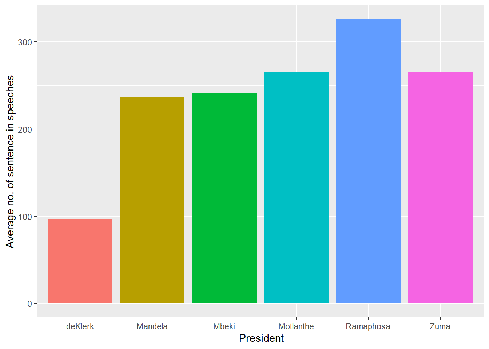
=======
The state of the nation address (SONA), commonly referred to as the ‘Opening of Parliament’ is an annual event wherein the president delivers a speech summarizing the political landscape for the current and upcoming year. The SONA touches on a wide range of themes ranging from socio-economic issues to political endeavors, this provides a snapshot of a nation’s aspirations, difficulties, triumphs, and current events. South Africa has experienced substantial socio-economic transitions, had to navigate many novel and historic challenges, and undertake developments for improvement over the past 3 decades.
This presents an intriguing opportunity for data analysis with the aim of understanding the status and progression of a country and its endeavours. In this assignment we will conduct an exploration of the sentiments and the topics integrated in the SONA speeches from the years 1994-2023, as well as how the use of a large language model (LLM) such as ChatGPT can provide insights and contributions to this task.
The assignment has a range of objectives, one of them is data cleaning and preprocessing to ensure there is good quality data to perform downstream analysis. The next objective is to perform sentiment analysis and topic modelling on the speech text and analyze over multiple variables to get a picture of the political climate in different circumstances of the country, and present these in a scientific format. Lastly, how LLM’s were used to bolster this effort.
Sentiment analysis can offer comparative insights on how optimistic or pessimistic the circumstances were for the country over the variables we are interested in, such as per year, per president, per speech or overall. Delving deeper into the sentiment analysis it is possible to extrapolate the level of concern or urgency the presidents regard certain issues based on the words they use to describe it and the frequency of which they mention it. For the analysis objectives of this assignment, we make use of the dictionary-based (lexicon) approach.
Topic modelling seeks to uncover themes and topics within the SONA speeches. By analyzing the topics and themes and their prevalence across the speeches, it is possible to extract information about the nature of each presidents concerns and views. We can infer knowledge on the priorities of the government as well as the affairs that were occurring in the years which the topic was discussed. This type of analysis is useful for uncovering themes in a collection of text, classifying documents into topics and using the classification to search, organize or summarize large bodies of text.
Latent Dirichlet Allocation (LDA) is a probabilistic generative model which is commonly used for topic modelling, it is the method that will be used in this assignment. The objective of LDA is to discover and characterize these word-topic distributions as well as the topic proportions in each document (Blei et al., 2003)
And lastly, we aim to employ the use of an LLM such as ChatGPT to evaluate and critically assess the effectiveness and versatility of the model’s performance.
Sentiment analysis and topic modelling are used in a variety of fields, with application in financial market prediction, business review analyses, and political science research, to name a few.
Bhardwaj et al. (2015)describes a system in which sentiment analysis is applied to stock indices, which act as indicators for overall stock market performance. Another paper by Rao Srivastava (2012) assessed the association between tweet sentiments and market performance, by assessing tweet and market data from 14 companies. The authors used a Naïve Bayesian classifier for sentiment classification and found that the polarity of sentiments significantly influenced investment and stock prices. In addition, they found that the previous week’s sentiments strongly impacted the following week’s opening and closing stock prices.
Manufacturers and companies may also benefit from sentiment analysis by assessing customer preferences and seasonal, market trends. These organizations can perform sentiment analysis on customer review data with the aim of improving product- or service quality. Singla et al. (2017) performed sentiment analysis on Amazon phone review data by assessing the negative and positive polarity in customer responses, with sentiments such as anger, anticipation, joy, and disgust, to name a few. The authors developed a support vector machine (SVM) model for sentiment classification and found that most customers preferred Samsung phones.
Sentiment analysis has also been used in political science research, where these studies usually use data obtained from social media sites, in addition to various news platforms. Singh et al. (2017)3 proposed a method to assess people’s opinions and biases towards demonetization, an experiment particularly relevant in India, where the government demonetized ₹500 and ₹1000 banknotes. The authors used a lexicon-based approach, namely Valence Aware Dictionary and Sentiment Reasoner (VADER) for sentiment analysis of tweet data.
In the past, public opinions were usually collected using interviews and surveys, however, in the modern era of social media, there is a multitude of shared opinions expressed on online platforms such as Twitter and Facebook. Researchers are now interested in how news media can outline a campaign or a public figure (such as a politician) and how this affects public opinion. In contrast, researchers are also interested in how social media platforms and public opinions can influence news agenda.
Researchers often perform sentiment analysis and topic modelling in tandem to discern public sentiment as well as recurring themes and topics (Guo et al., 2016).
Topic modelling, as we’ve discussed before, is an unsupervised machine learning technique that uncovers abstract ‘topics’ within a document or a collection of documents. These ‘topics’ are characterized by their related words. The approach views each document as an unordered “bag of words”, with words appearing at varying frequencies within or across documents. The model then calculates the weights of topics in the document based on the frequency of words related to those topics. By examining these topic weights, we can identify the main idea or theme of the document.
The most widely used topic model is Latent Dirichlet Allocation (LDA; Blei, Ng, & Jordan, 2003). The LDA model assumes that the proportion of topics in a document are sampled from a Dirichlet distribution. In contrast, other “bag-of-words” related topic models assume different distributions such as the log-normal distribution in the Correlated Topic Model (Blei & Lafferty, 2006).
LDA models are usually applied to research that uses well-constructed text documents such as newspaper- and academic journal- articles that are peer-reviewed, edited, and proof-checked for grammatical- and spelling- errors. In contrast, LDA models may not be as effective in the topic analysis of social media data (Hong & Davison, 2010; Tang, Zhang, & Mei, 2013) Social media data such as tweets are usually unstructured, restricted to 14o characters, and contain abbreviations, symbols, and truncated and misspelt words, in addition to poorly formatted and grammatically incorrect sentences.
Despite this limitation in online data, many researchers have used social media data due to the large volume of freely available, public sentiment.
Xie et al. (2021) assessed the public response to COVID-19 on Weibo, a Chinese microblogging website. The authors used LDA topic modelling and sentiment analysis on Weibo posts and found that public opinion shifted in response to COVID-19, where many people were able to learn about COVID-19 and express gratitude to medical professionals, while also expressing concerns about economic and life restoration. In addition, the authors found that influential individuals contributed significantly to positive, public sentiment. The authors also found recurrent themes during LDA analysis, with prominent topics such as: “Fight the virus together”, “knowledge”, “assistance” and “global economics”.
Another study by Biraj Dahal et al (2019) assessed public opinions and views on climate change, by performing sentiment analysis (using Valence Aware Dictionary sEntiment Reasoner) and LDA topic modelling on Twitter data containing geotagged tweets. The researchers compared themes and moods concerning climate change across different countries. Sentiment analysis suggested that the overall debate is negative, especially when Twitter users react to political or extreme weather events. On the other hand, topic modelling suggested that there are a variety of climate change-related topics, with some topics directly related to climate change such as “carbon footprint”, and “fossil fuel industry”, while other topics have a more social perspective such as “humanitarian” and “international agreement”. In addition, some topics suggested opposition to the climate change movement with topics such as “weather/belief”. Interestingly, the authors also found that the USA is less focused on policy-related topics relative to other countries. The USA had a more negative sentiment towards climate change and had topics such as “politics/hoax” as central themes.
The data consists of 36 speeches made by the presidents during their terms from May 1994 to February 2023. The number of speeches made by each president varied. Specifically, F.W. de Klerk and Motlanthe each have one recorded speech, while Nelson Mandela and Cyril Ramaphosa have seven speeches each. In contrast, Jacob Zuma and Thabo Mbeki have ten speeches each. Although each speech is unique in its own way, there are certain utterance that are common in the group of speech of each president. The manner in which they speech is consistent through the different speeches and this can be see through the words that they use and the sentiment they possess. Each president also gave their speeches for a varied amount of time. The following figure shows the average length of a speech according to the number of sentences used.
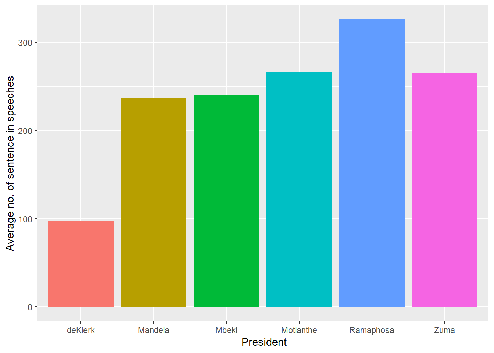
=======
Two distinct patterns stand out when examining the data, the first being the shortness of F.W. de Klerk’s speech. His final pre-election speech in office consisted of 97 sentences, which pale in comparison to other pre-election speeches in the data set. For instance, Nelson Mandela’s pre-election speech in 1999 was substantially longer with 288 sentences, while Jacob Zuma’s pre-election speech of 2014 was even more extensive with 309 sentences.
On the other hand, Ramaphosa stands out for his consistent and relatively lengthy speeches. On average, his speeches run for about 327 sentences. In contrast, the other presidents, namely Mandela, Mbeki, Motlanthe, Zuma, fell within a similar range, with an average of around 250 sentences per speech. These distinct patterns shed light on the varying communication styles and approaches of these South African presidents in their speeches.
Additionally, it is important to consider the timing of each speech, as it significantly influences the communication style chosen by each president. These speeches fall into three main categories: pre-election, post-election, and general SONAs. The distinct goals and messages associated with each category result in varying sentiments in their speeches. Pre-election speeches are characterized by optimism, unity, and empowerment aimed at voters, naturally resulting in a predominantly positive sentiment. Post-election speeches convey sentiments of gratitude and hope, expressing thanks to the electorate and fostering a sense of hope for the future, also leading to a largely positive sentiment. In contrast, general annual SONAs often focus on reassurance and policy changes. These speeches aim to reassure the public about the government’s commitment to addressing various issues and to announce policy changes. While the sentiment remains positive, it may be less pronounced than in pre-election and post-election speeches.
The figure below illustrates the evolving sentiment of these presidential speeches over time, reflecting how the timing and specific objectives of each speech category contribute to the overall sentiment
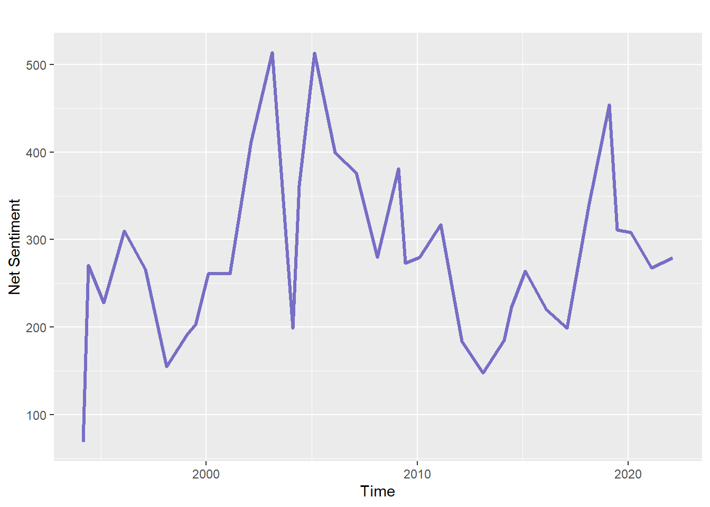
======= >>>>>>> e26a11bb80248568002c4206004bd8703644489dThe net sentiment in the dataset was determined by adding up the values associated with positive and negative words, as provided by the AFINN lexicon. Among the presidents in the dataset, F.W. de Klerk is the earliest. Notably, the final speech of his presidency, while still maintaining a positive sentiment, registers as having the lowest net sentiment in the entire dataset. Based on the data it cannot be concluded whether this is due to the speech being short or his general speech making style. The general trend in the data for higher sentiment during election time holds for most of the speeches over time for each president Mbeki's general SONAs of 2013 and 2015 stand out as exceptions, featuring the highest net sentiments in the dataset, with values of 514 and 513, respectively
The sentence tokens previously generated, were then tokenized into bigrams, whilst ensuring all bigrams are in lowercase to reduce bigram redundancy, e.g., ("citizens of" vs "Citizens of"). Subsequently, each bigram was separated into its constituent words so that stop words could be removed. In cases where either word or both words within a bigram contained a stop word, the entire bigram was removed. The same procedure was repeated, to separate words into trigrams.
The AFINN lexicon is a list of English terms manually rated for valence with an integer between -5 (negative) and +5 (positive) by Finn Årup Nielsen between 2009 and 2011. The AFINN lexicon was used to find the sentiment of each word within a bigram, by assigning a numeric value from -5 to +5 to each word within the bigram. Words within a bigram that do not appear in the AFINN lexicon, received a sentiment value of 0, as to avoid the placement of NA values. The net sentiment for each bigram was then calculated by adding the sentiment values for each of the words within a bigram. Bigrams with a net sentiment value > 0, were classified as having positive sentiment, whereas bigrams with a net sentiment value < 0, where classified as having a negative sentiment, and bigrams with a NETT sentiment value of 0 were classified as having a neutral sentiment.
The Bing Lexicon was then utilized to associate sentiments to the individual words of the trigram tokenization output. Bing labels consist of "positive", "negative" and "neutral". The code performs left joins for each word in the trigram to capture the sentiment of each word. The resulting dataset was then organized to include sentiment labels for each word in the trigram to facilitate sentiment analysis for downstream analysis.
Negated bigrams were identified, where the first word of the bigram is a negative word such as "not", "no, "never" and "without". In these cases, if the negated bigram's sentiment was positive, we changed the sentiment to negative and vice versa. The sentiment remained the same for all other cases.
Bigrams with neutral sentiment were removed since these bigrams can be misconstrued in instances where the word(s) did not appear in the AFFIN lexicon and so were assigned 0 sentiment scores. For the Bing lexicon, in cases where there was no sentiment label matched in the Bing lexicon, a "neutral" label was assigned.
The overall sentiment per president was determined by finding the class, either positive or negative, with the greatest number of bigrams assigned to that class. This also gives us an overview of the overall sentiment across all presidents. In addition, the sentiment per speech was assessed to find outlier speeches with negative sentiment. Finally, we also assessed the sentiment per year.
The trigrams were then categorized into "positive", "negative" or "neutral" based on their net sentiment scores calculated by evaluating the balance of positive and negative words. The sentiment analysis was then visualized over multiple levels such as, for each president, each year, over time, by year and president and per speech.
The frequency of occurrence of each bigram in each speech was calculated to get the relative occurrence of a bigram in a speech. The cast_dtm() function was then used to convert the data frame into a DocumentTermMatrix class, where the function requires the filename, bigram and bigram per-file-frequency. Subsequently, the LDA() function in r was used to group similar bigrams into their constituent topics using LDA as previously discussed. Numerous values of k (number of topics) were initially assessed, however we assigned k = 2 topics as a hyperparameter since increasing the value of k did not improve discrimination between topics. For this analysis, we looked at the beta probabilities i.e., the bigram-topic probabilities, which was computed by parsing the results of LDA to the tidy() function. The tidy() function converts the data frame to a tidy format, where each column is a variable (bigram), each row is an observation (filename) and each cell has a single value (frequency of bigram in the file).
The top 20 bigrams were ordered in descending order of beta value and plotted for all presidents, including for each individual president, however, we only show this for all presidents since the per-president plots convey very little insight.
For the per-president topic analysis, we show the Log2 ratio of beta in topic 2 / topic 1, which is a measure used in topic modelling to identify terms that have the greatest difference in beta between topic 1 and topic 2. The log2 ratio is useful because it makes the difference symmetrical. This can help to identify which bigrams describe a certain topic, by showing which bigrams have a much higher probability in one topic compared to another.
It is important to note that only bigrams in either topic 1 or 2 with beta values greater than 0.001 were included, after which the log2(topic2 beta /topic1 beta) was computed for each bigram. The log ratios were then grouped according to direction, where a log ratio > 0 infers that the bigram likely belongs to topic 2, while a log ratio <= 0 infers that the bigram likely belongs to topic 1. The top 10 absolute log ratios in each topic group were then determined and the raw log ratios plotted as bar plots for further comparison.
Next the document-topic probabilities were extracted. To accomplish this task, LDA was performed as above with the only differences being that the k was set to 4. The most significant terms were extracted based on their gamma values. In order to allow for further analyses, the output was organized into tidy format, and the speech data into a tibble. LDA topics and text data was integrated by linking topics and speeches via their filenames. Subsequent analysis involved determination of highly relevant topics to each speech and identifying top terms for each topic.
word1 word2 sentiment president_13 year
1 not dead negative Mandela 1994
2 not dead negative Mandela 1994
3 not at neutral Mandela 1994
4 without a neutral Mandela 1994
5 not only neutral Mandela 1994
6 without which neutral Mandela 1994
7 not only neutral Mandela 1994
8 not from neutral Mandela 1994
9 without seeking neutral Mandela 1994
10 no time negative Mandela 1994
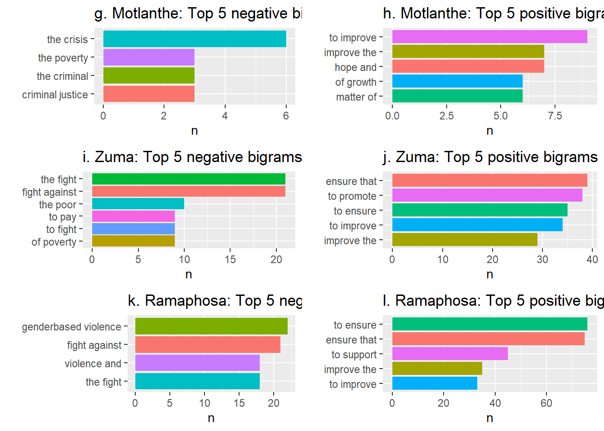
=======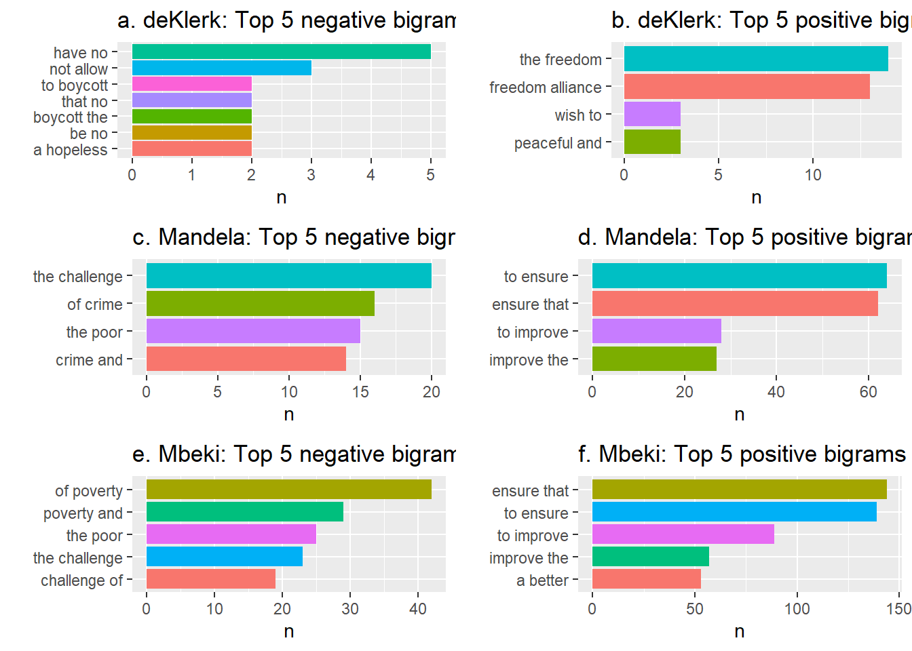

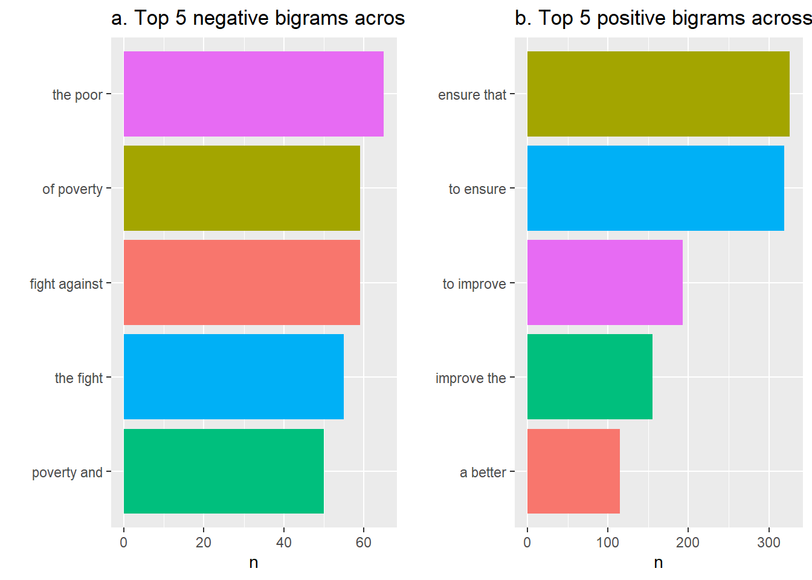
>>>>>>> e26a11bb80248568002c4206004bd8703644489d filename year president_13 date
1 1994_post_elections_Mandela 1994 Mandela 24-05-1994
2 1994_post_elections_Mandela 1994 Mandela 24-05-1994
3 1994_post_elections_Mandela 1994 Mandela 24-05-1994
4 1994_post_elections_Mandela 1994 Mandela 24-05-1994
5 1994_post_elections_Mandela 1994 Mandela 24-05-1994
6 1994_post_elections_Mandela 1994 Mandela 24-05-1994
7 1994_post_elections_Mandela 1994 Mandela 24-05-1994
8 1994_post_elections_Mandela 1994 Mandela 24-05-1994
9 1994_post_elections_Mandela 1994 Mandela 24-05-1994
10 1994_post_elections_Mandela 1994 Mandela 24-05-1994
11 1994_post_elections_Mandela 1994 Mandela 24-05-1994
12 1994_post_elections_Mandela 1994 Mandela 24-05-1994
13 1994_post_elections_Mandela 1994 Mandela 24-05-1994
14 1994_post_elections_Mandela 1994 Mandela 24-05-1994
15 1994_post_elections_Mandela 1994 Mandela 24-05-1994
16 1994_post_elections_Mandela 1994 Mandela 24-05-1994
17 1994_post_elections_Mandela 1994 Mandela 24-05-1994
18 1994_post_elections_Mandela 1994 Mandela 24-05-1994
19 1994_post_elections_Mandela 1994 Mandela 24-05-1994
20 1994_post_elections_Mandela 1994 Mandela 24-05-1994
21 1994_post_elections_Mandela 1994 Mandela 24-05-1994
22 1994_post_elections_Mandela 1994 Mandela 24-05-1994
23 1994_post_elections_Mandela 1994 Mandela 24-05-1994
24 1994_post_elections_Mandela 1994 Mandela 24-05-1994
25 1994_post_elections_Mandela 1994 Mandela 24-05-1994
26 1994_post_elections_Mandela 1994 Mandela 24-05-1994
27 1994_post_elections_Mandela 1994 Mandela 24-05-1994
28 1994_post_elections_Mandela 1994 Mandela 24-05-1994
29 1994_post_elections_Mandela 1994 Mandela 24-05-1994
30 1994_post_elections_Mandela 1994 Mandela 24-05-1994
31 1994_post_elections_Mandela 1994 Mandela 24-05-1994
32 1994_post_elections_Mandela 1994 Mandela 24-05-1994
33 1994_post_elections_Mandela 1994 Mandela 24-05-1994
34 1994_post_elections_Mandela 1994 Mandela 24-05-1994
35 1994_post_elections_Mandela 1994 Mandela 24-05-1994
36 1994_post_elections_Mandela 1994 Mandela 24-05-1994
37 1994_post_elections_Mandela 1994 Mandela 24-05-1994
38 1994_post_elections_Mandela 1994 Mandela 24-05-1994
39 1994_post_elections_Mandela 1994 Mandela 24-05-1994
40 1994_post_elections_Mandela 1994 Mandela 24-05-1994
41 1994_post_elections_Mandela 1994 Mandela 24-05-1994
42 1994_post_elections_Mandela 1994 Mandela 24-05-1994
43 1994_post_elections_Mandela 1994 Mandela 24-05-1994
44 1994_post_elections_Mandela 1994 Mandela 24-05-1994
45 1994_post_elections_Mandela 1994 Mandela 24-05-1994
46 1994_post_elections_Mandela 1994 Mandela 24-05-1994
47 1994_post_elections_Mandela 1994 Mandela 24-05-1994
48 1994_post_elections_Mandela 1994 Mandela 24-05-1994
49 1994_post_elections_Mandela 1994 Mandela 24-05-1994
50 1994_post_elections_Mandela 1994 Mandela 24-05-1994
51 1994_post_elections_Mandela 1994 Mandela 24-05-1994
52 1994_post_elections_Mandela 1994 Mandela 24-05-1994
53 1994_post_elections_Mandela 1994 Mandela 24-05-1994
54 1994_post_elections_Mandela 1994 Mandela 24-05-1994
55 1994_post_elections_Mandela 1994 Mandela 24-05-1994
56 1994_post_elections_Mandela 1994 Mandela 24-05-1994
57 1994_post_elections_Mandela 1994 Mandela 24-05-1994
58 1994_post_elections_Mandela 1994 Mandela 24-05-1994
59 1994_post_elections_Mandela 1994 Mandela 24-05-1994
60 1994_post_elections_Mandela 1994 Mandela 24-05-1994
61 1994_post_elections_Mandela 1994 Mandela 24-05-1994
62 1994_post_elections_Mandela 1994 Mandela 24-05-1994
63 1994_post_elections_Mandela 1994 Mandela 24-05-1994
64 1994_post_elections_Mandela 1994 Mandela 24-05-1994
65 1994_post_elections_Mandela 1994 Mandela 24-05-1994
66 1994_post_elections_Mandela 1994 Mandela 24-05-1994
67 1994_post_elections_Mandela 1994 Mandela 24-05-1994
68 1994_post_elections_Mandela 1994 Mandela 24-05-1994
69 1994_post_elections_Mandela 1994 Mandela 24-05-1994
70 1994_post_elections_Mandela 1994 Mandela 24-05-1994
71 1994_post_elections_Mandela 1994 Mandela 24-05-1994
72 1994_post_elections_Mandela 1994 Mandela 24-05-1994
73 1994_post_elections_Mandela 1994 Mandela 24-05-1994
74 1994_post_elections_Mandela 1994 Mandela 24-05-1994
75 1994_post_elections_Mandela 1994 Mandela 24-05-1994
76 1994_post_elections_Mandela 1994 Mandela 24-05-1994
77 1994_post_elections_Mandela 1994 Mandela 24-05-1994
78 1994_post_elections_Mandela 1994 Mandela 24-05-1994
79 1994_post_elections_Mandela 1994 Mandela 24-05-1994
80 1994_post_elections_Mandela 1994 Mandela 24-05-1994
81 1994_post_elections_Mandela 1994 Mandela 24-05-1994
82 1994_post_elections_Mandela 1994 Mandela 24-05-1994
83 1994_post_elections_Mandela 1994 Mandela 24-05-1994
84 1994_post_elections_Mandela 1994 Mandela 24-05-1994
85 1994_post_elections_Mandela 1994 Mandela 24-05-1994
86 1994_post_elections_Mandela 1994 Mandela 24-05-1994
87 1994_post_elections_Mandela 1994 Mandela 24-05-1994
88 1994_post_elections_Mandela 1994 Mandela 24-05-1994
89 1994_post_elections_Mandela 1994 Mandela 24-05-1994
90 1994_post_elections_Mandela 1994 Mandela 24-05-1994
91 1994_post_elections_Mandela 1994 Mandela 24-05-1994
92 1994_post_elections_Mandela 1994 Mandela 24-05-1994
93 1994_post_elections_Mandela 1994 Mandela 24-05-1994
94 1994_post_elections_Mandela 1994 Mandela 24-05-1994
95 1994_post_elections_Mandela 1994 Mandela 24-05-1994
96 1994_post_elections_Mandela 1994 Mandela 24-05-1994
97 1994_post_elections_Mandela 1994 Mandela 24-05-1994
98 1994_post_elections_Mandela 1994 Mandela 24-05-1994
99 1994_post_elections_Mandela 1994 Mandela 24-05-1994
100 1994_post_elections_Mandela 1994 Mandela 24-05-1994
101 1994_post_elections_Mandela 1994 Mandela 24-05-1994
102 1994_post_elections_Mandela 1994 Mandela 24-05-1994
103 1994_post_elections_Mandela 1994 Mandela 24-05-1994
104 1994_post_elections_Mandela 1994 Mandela 24-05-1994
105 1994_post_elections_Mandela 1994 Mandela 24-05-1994
106 1994_post_elections_Mandela 1994 Mandela 24-05-1994
107 1994_post_elections_Mandela 1994 Mandela 24-05-1994
108 1994_post_elections_Mandela 1994 Mandela 24-05-1994
109 1994_post_elections_Mandela 1994 Mandela 24-05-1994
110 1994_post_elections_Mandela 1994 Mandela 24-05-1994
111 1994_post_elections_Mandela 1994 Mandela 24-05-1994
112 1994_post_elections_Mandela 1994 Mandela 24-05-1994
113 1994_post_elections_Mandela 1994 Mandela 24-05-1994
114 1994_post_elections_Mandela 1994 Mandela 24-05-1994
115 1994_post_elections_Mandela 1994 Mandela 24-05-1994
116 1994_post_elections_Mandela 1994 Mandela 24-05-1994
117 1994_post_elections_Mandela 1994 Mandela 24-05-1994
118 1994_post_elections_Mandela 1994 Mandela 24-05-1994
119 1994_post_elections_Mandela 1994 Mandela 24-05-1994
120 1994_post_elections_Mandela 1994 Mandela 24-05-1994
121 1994_post_elections_Mandela 1994 Mandela 24-05-1994
122 1994_post_elections_Mandela 1994 Mandela 24-05-1994
123 1994_post_elections_Mandela 1994 Mandela 24-05-1994
124 1994_pre_elections_deKlerk 1994 deKlerk 28-02-1994
125 1994_pre_elections_deKlerk 1994 deKlerk 28-02-1994
126 1994_pre_elections_deKlerk 1994 deKlerk 28-02-1994
127 1994_pre_elections_deKlerk 1994 deKlerk 28-02-1994
128 1994_pre_elections_deKlerk 1994 deKlerk 28-02-1994
129 1994_pre_elections_deKlerk 1994 deKlerk 28-02-1994
130 1994_pre_elections_deKlerk 1994 deKlerk 28-02-1994
131 1994_pre_elections_deKlerk 1994 deKlerk 28-02-1994
132 1994_pre_elections_deKlerk 1994 deKlerk 28-02-1994
133 1994_pre_elections_deKlerk 1994 deKlerk 28-02-1994
134 1994_pre_elections_deKlerk 1994 deKlerk 28-02-1994
135 1994_pre_elections_deKlerk 1994 deKlerk 28-02-1994
136 1994_pre_elections_deKlerk 1994 deKlerk 28-02-1994
137 1994_pre_elections_deKlerk 1994 deKlerk 28-02-1994
138 1994_pre_elections_deKlerk 1994 deKlerk 28-02-1994
139 1994_pre_elections_deKlerk 1994 deKlerk 28-02-1994
140 1994_pre_elections_deKlerk 1994 deKlerk 28-02-1994
141 1994_pre_elections_deKlerk 1994 deKlerk 28-02-1994
142 1994_pre_elections_deKlerk 1994 deKlerk 28-02-1994
143 1994_pre_elections_deKlerk 1994 deKlerk 28-02-1994
144 1994_pre_elections_deKlerk 1994 deKlerk 28-02-1994
145 1994_pre_elections_deKlerk 1994 deKlerk 28-02-1994
146 1994_pre_elections_deKlerk 1994 deKlerk 28-02-1994
147 1994_pre_elections_deKlerk 1994 deKlerk 28-02-1994
148 1994_pre_elections_deKlerk 1994 deKlerk 28-02-1994
149 1994_pre_elections_deKlerk 1994 deKlerk 28-02-1994
150 1994_pre_elections_deKlerk 1994 deKlerk 28-02-1994
151 1994_pre_elections_deKlerk 1994 deKlerk 28-02-1994
152 1994_pre_elections_deKlerk 1994 deKlerk 28-02-1994
153 1994_pre_elections_deKlerk 1994 deKlerk 28-02-1994
154 1994_pre_elections_deKlerk 1994 deKlerk 28-02-1994
155 1994_pre_elections_deKlerk 1994 deKlerk 28-02-1994
156 1994_pre_elections_deKlerk 1994 deKlerk 28-02-1994
157 1994_pre_elections_deKlerk 1994 deKlerk 28-02-1994
158 1994_pre_elections_deKlerk 1994 deKlerk 28-02-1994
159 1994_pre_elections_deKlerk 1994 deKlerk 28-02-1994
160 1994_pre_elections_deKlerk 1994 deKlerk 28-02-1994
161 1994_pre_elections_deKlerk 1994 deKlerk 28-02-1994
162 1994_pre_elections_deKlerk 1994 deKlerk 28-02-1994
163 1994_pre_elections_deKlerk 1994 deKlerk 28-02-1994
164 1994_pre_elections_deKlerk 1994 deKlerk 28-02-1994
165 1994_pre_elections_deKlerk 1994 deKlerk 28-02-1994
166 1994_pre_elections_deKlerk 1994 deKlerk 28-02-1994
167 1994_pre_elections_deKlerk 1994 deKlerk 28-02-1994
168 1994_pre_elections_deKlerk 1994 deKlerk 28-02-1994
169 1994_pre_elections_deKlerk 1994 deKlerk 28-02-1994
170 1994_pre_elections_deKlerk 1994 deKlerk 28-02-1994
171 1994_pre_elections_deKlerk 1994 deKlerk 28-02-1994
172 1994_pre_elections_deKlerk 1994 deKlerk 28-02-1994
173 1994_pre_elections_deKlerk 1994 deKlerk 28-02-1994
174 1994_pre_elections_deKlerk 1994 deKlerk 28-02-1994
175 1994_pre_elections_deKlerk 1994 deKlerk 28-02-1994
176 1994_pre_elections_deKlerk 1994 deKlerk 28-02-1994
177 1995_Mandela 1995 Mandela 17-02-1995
178 1995_Mandela 1995 Mandela 17-02-1995
179 1995_Mandela 1995 Mandela 17-02-1995
180 1995_Mandela 1995 Mandela 17-02-1995
181 1995_Mandela 1995 Mandela 17-02-1995
182 1995_Mandela 1995 Mandela 17-02-1995
183 1995_Mandela 1995 Mandela 17-02-1995
184 1995_Mandela 1995 Mandela 17-02-1995
185 1995_Mandela 1995 Mandela 17-02-1995
186 1995_Mandela 1995 Mandela 17-02-1995
187 1995_Mandela 1995 Mandela 17-02-1995
188 1995_Mandela 1995 Mandela 17-02-1995
189 1995_Mandela 1995 Mandela 17-02-1995
190 1995_Mandela 1995 Mandela 17-02-1995
191 1995_Mandela 1995 Mandela 17-02-1995
192 1995_Mandela 1995 Mandela 17-02-1995
193 1995_Mandela 1995 Mandela 17-02-1995
194 1995_Mandela 1995 Mandela 17-02-1995
195 1995_Mandela 1995 Mandela 17-02-1995
196 1995_Mandela 1995 Mandela 17-02-1995
197 1995_Mandela 1995 Mandela 17-02-1995
198 1995_Mandela 1995 Mandela 17-02-1995
199 1995_Mandela 1995 Mandela 17-02-1995
200 1995_Mandela 1995 Mandela 17-02-1995
201 1995_Mandela 1995 Mandela 17-02-1995
202 1995_Mandela 1995 Mandela 17-02-1995
203 1995_Mandela 1995 Mandela 17-02-1995
204 1995_Mandela 1995 Mandela 17-02-1995
205 1995_Mandela 1995 Mandela 17-02-1995
206 1995_Mandela 1995 Mandela 17-02-1995
207 1995_Mandela 1995 Mandela 17-02-1995
208 1995_Mandela 1995 Mandela 17-02-1995
209 1995_Mandela 1995 Mandela 17-02-1995
210 1995_Mandela 1995 Mandela 17-02-1995
211 1995_Mandela 1995 Mandela 17-02-1995
212 1995_Mandela 1995 Mandela 17-02-1995
213 1995_Mandela 1995 Mandela 17-02-1995
214 1995_Mandela 1995 Mandela 17-02-1995
215 1995_Mandela 1995 Mandela 17-02-1995
216 1995_Mandela 1995 Mandela 17-02-1995
217 1995_Mandela 1995 Mandela 17-02-1995
218 1995_Mandela 1995 Mandela 17-02-1995
219 1995_Mandela 1995 Mandela 17-02-1995
220 1995_Mandela 1995 Mandela 17-02-1995
221 1995_Mandela 1995 Mandela 17-02-1995
222 1995_Mandela 1995 Mandela 17-02-1995
223 1995_Mandela 1995 Mandela 17-02-1995
224 1995_Mandela 1995 Mandela 17-02-1995
225 1995_Mandela 1995 Mandela 17-02-1995
226 1995_Mandela 1995 Mandela 17-02-1995
227 1995_Mandela 1995 Mandela 17-02-1995
228 1995_Mandela 1995 Mandela 17-02-1995
229 1995_Mandela 1995 Mandela 17-02-1995
230 1995_Mandela 1995 Mandela 17-02-1995
231 1995_Mandela 1995 Mandela 17-02-1995
232 1995_Mandela 1995 Mandela 17-02-1995
233 1995_Mandela 1995 Mandela 17-02-1995
234 1995_Mandela 1995 Mandela 17-02-1995
235 1995_Mandela 1995 Mandela 17-02-1995
236 1995_Mandela 1995 Mandela 17-02-1995
237 1995_Mandela 1995 Mandela 17-02-1995
238 1995_Mandela 1995 Mandela 17-02-1995
239 1995_Mandela 1995 Mandela 17-02-1995
240 1995_Mandela 1995 Mandela 17-02-1995
241 1995_Mandela 1995 Mandela 17-02-1995
242 1995_Mandela 1995 Mandela 17-02-1995
243 1995_Mandela 1995 Mandela 17-02-1995
244 1995_Mandela 1995 Mandela 17-02-1995
245 1995_Mandela 1995 Mandela 17-02-1995
246 1995_Mandela 1995 Mandela 17-02-1995
247 1995_Mandela 1995 Mandela 17-02-1995
248 1995_Mandela 1995 Mandela 17-02-1995
249 1995_Mandela 1995 Mandela 17-02-1995
250 1995_Mandela 1995 Mandela 17-02-1995
251 1995_Mandela 1995 Mandela 17-02-1995
252 1995_Mandela 1995 Mandela 17-02-1995
253 1995_Mandela 1995 Mandela 17-02-1995
254 1995_Mandela 1995 Mandela 17-02-1995
255 1995_Mandela 1995 Mandela 17-02-1995
256 1995_Mandela 1995 Mandela 17-02-1995
257 1995_Mandela 1995 Mandela 17-02-1995
258 1995_Mandela 1995 Mandela 17-02-1995
259 1995_Mandela 1995 Mandela 17-02-1995
260 1995_Mandela 1995 Mandela 17-02-1995
261 1995_Mandela 1995 Mandela 17-02-1995
262 1995_Mandela 1995 Mandela 17-02-1995
263 1995_Mandela 1995 Mandela 17-02-1995
264 1995_Mandela 1995 Mandela 17-02-1995
265 1995_Mandela 1995 Mandela 17-02-1995
266 1995_Mandela 1995 Mandela 17-02-1995
267 1995_Mandela 1995 Mandela 17-02-1995
268 1995_Mandela 1995 Mandela 17-02-1995
269 1995_Mandela 1995 Mandela 17-02-1995
270 1995_Mandela 1995 Mandela 17-02-1995
271 1995_Mandela 1995 Mandela 17-02-1995
272 1995_Mandela 1995 Mandela 17-02-1995
273 1995_Mandela 1995 Mandela 17-02-1995
274 1995_Mandela 1995 Mandela 17-02-1995
275 1995_Mandela 1995 Mandela 17-02-1995
276 1995_Mandela 1995 Mandela 17-02-1995
277 1995_Mandela 1995 Mandela 17-02-1995
278 1995_Mandela 1995 Mandela 17-02-1995
279 1995_Mandela 1995 Mandela 17-02-1995
280 1995_Mandela 1995 Mandela 17-02-1995
281 1995_Mandela 1995 Mandela 17-02-1995
282 1995_Mandela 1995 Mandela 17-02-1995
283 1995_Mandela 1995 Mandela 17-02-1995
284 1995_Mandela 1995 Mandela 17-02-1995
285 1995_Mandela 1995 Mandela 17-02-1995
286 1995_Mandela 1995 Mandela 17-02-1995
287 1995_Mandela 1995 Mandela 17-02-1995
288 1995_Mandela 1995 Mandela 17-02-1995
289 1995_Mandela 1995 Mandela 17-02-1995
290 1995_Mandela 1995 Mandela 17-02-1995
291 1995_Mandela 1995 Mandela 17-02-1995
292 1995_Mandela 1995 Mandela 17-02-1995
293 1995_Mandela 1995 Mandela 17-02-1995
294 1995_Mandela 1995 Mandela 17-02-1995
295 1995_Mandela 1995 Mandela 17-02-1995
296 1995_Mandela 1995 Mandela 17-02-1995
297 1995_Mandela 1995 Mandela 17-02-1995
298 1995_Mandela 1995 Mandela 17-02-1995
299 1995_Mandela 1995 Mandela 17-02-1995
300 1995_Mandela 1995 Mandela 17-02-1995
301 1995_Mandela 1995 Mandela 17-02-1995
302 1995_Mandela 1995 Mandela 17-02-1995
303 1995_Mandela 1995 Mandela 17-02-1995
304 1995_Mandela 1995 Mandela 17-02-1995
305 1995_Mandela 1995 Mandela 17-02-1995
306 1995_Mandela 1995 Mandela 17-02-1995
307 1995_Mandela 1995 Mandela 17-02-1995
308 1995_Mandela 1995 Mandela 17-02-1995
309 1995_Mandela 1995 Mandela 17-02-1995
310 1995_Mandela 1995 Mandela 17-02-1995
311 1995_Mandela 1995 Mandela 17-02-1995
312 1995_Mandela 1995 Mandela 17-02-1995
313 1995_Mandela 1995 Mandela 17-02-1995
314 1995_Mandela 1995 Mandela 17-02-1995
315 1995_Mandela 1995 Mandela 17-02-1995
316 1995_Mandela 1995 Mandela 17-02-1995
317 1995_Mandela 1995 Mandela 17-02-1995
318 1995_Mandela 1995 Mandela 17-02-1995
319 1995_Mandela 1995 Mandela 17-02-1995
320 1995_Mandela 1995 Mandela 17-02-1995
321 1995_Mandela 1995 Mandela 17-02-1995
322 1995_Mandela 1995 Mandela 17-02-1995
323 1995_Mandela 1995 Mandela 17-02-1995
324 1995_Mandela 1995 Mandela 17-02-1995
325 1995_Mandela 1995 Mandela 17-02-1995
326 1995_Mandela 1995 Mandela 17-02-1995
327 1995_Mandela 1995 Mandela 17-02-1995
328 1995_Mandela 1995 Mandela 17-02-1995
329 1995_Mandela 1995 Mandela 17-02-1995
330 1996_Mandela 1996 Mandela 9-02-1996
331 1996_Mandela 1996 Mandela 9-02-1996
332 1996_Mandela 1996 Mandela 9-02-1996
333 1996_Mandela 1996 Mandela 9-02-1996
334 1996_Mandela 1996 Mandela 9-02-1996
335 1996_Mandela 1996 Mandela 9-02-1996
336 1996_Mandela 1996 Mandela 9-02-1996
337 1996_Mandela 1996 Mandela 9-02-1996
338 1996_Mandela 1996 Mandela 9-02-1996
339 1996_Mandela 1996 Mandela 9-02-1996
340 1996_Mandela 1996 Mandela 9-02-1996
341 1996_Mandela 1996 Mandela 9-02-1996
342 1996_Mandela 1996 Mandela 9-02-1996
343 1996_Mandela 1996 Mandela 9-02-1996
344 1996_Mandela 1996 Mandela 9-02-1996
345 1996_Mandela 1996 Mandela 9-02-1996
346 1996_Mandela 1996 Mandela 9-02-1996
347 1996_Mandela 1996 Mandela 9-02-1996
348 1996_Mandela 1996 Mandela 9-02-1996
349 1996_Mandela 1996 Mandela 9-02-1996
350 1996_Mandela 1996 Mandela 9-02-1996
351 1996_Mandela 1996 Mandela 9-02-1996
352 1996_Mandela 1996 Mandela 9-02-1996
353 1996_Mandela 1996 Mandela 9-02-1996
354 1996_Mandela 1996 Mandela 9-02-1996
355 1996_Mandela 1996 Mandela 9-02-1996
356 1996_Mandela 1996 Mandela 9-02-1996
357 1996_Mandela 1996 Mandela 9-02-1996
358 1996_Mandela 1996 Mandela 9-02-1996
359 1996_Mandela 1996 Mandela 9-02-1996
360 1996_Mandela 1996 Mandela 9-02-1996
361 1996_Mandela 1996 Mandela 9-02-1996
362 1996_Mandela 1996 Mandela 9-02-1996
363 1996_Mandela 1996 Mandela 9-02-1996
364 1996_Mandela 1996 Mandela 9-02-1996
365 1996_Mandela 1996 Mandela 9-02-1996
366 1996_Mandela 1996 Mandela 9-02-1996
367 1996_Mandela 1996 Mandela 9-02-1996
368 1996_Mandela 1996 Mandela 9-02-1996
369 1996_Mandela 1996 Mandela 9-02-1996
370 1996_Mandela 1996 Mandela 9-02-1996
371 1996_Mandela 1996 Mandela 9-02-1996
372 1996_Mandela 1996 Mandela 9-02-1996
373 1996_Mandela 1996 Mandela 9-02-1996
374 1996_Mandela 1996 Mandela 9-02-1996
375 1996_Mandela 1996 Mandela 9-02-1996
376 1996_Mandela 1996 Mandela 9-02-1996
377 1996_Mandela 1996 Mandela 9-02-1996
378 1996_Mandela 1996 Mandela 9-02-1996
379 1996_Mandela 1996 Mandela 9-02-1996
380 1996_Mandela 1996 Mandela 9-02-1996
381 1996_Mandela 1996 Mandela 9-02-1996
382 1996_Mandela 1996 Mandela 9-02-1996
383 1996_Mandela 1996 Mandela 9-02-1996
384 1996_Mandela 1996 Mandela 9-02-1996
385 1996_Mandela 1996 Mandela 9-02-1996
386 1996_Mandela 1996 Mandela 9-02-1996
387 1996_Mandela 1996 Mandela 9-02-1996
388 1996_Mandela 1996 Mandela 9-02-1996
389 1996_Mandela 1996 Mandela 9-02-1996
390 1996_Mandela 1996 Mandela 9-02-1996
391 1996_Mandela 1996 Mandela 9-02-1996
392 1996_Mandela 1996 Mandela 9-02-1996
393 1996_Mandela 1996 Mandela 9-02-1996
394 1996_Mandela 1996 Mandela 9-02-1996
395 1996_Mandela 1996 Mandela 9-02-1996
396 1996_Mandela 1996 Mandela 9-02-1996
397 1996_Mandela 1996 Mandela 9-02-1996
398 1996_Mandela 1996 Mandela 9-02-1996
399 1996_Mandela 1996 Mandela 9-02-1996
400 1996_Mandela 1996 Mandela 9-02-1996
401 1996_Mandela 1996 Mandela 9-02-1996
402 1996_Mandela 1996 Mandela 9-02-1996
403 1996_Mandela 1996 Mandela 9-02-1996
404 1996_Mandela 1996 Mandela 9-02-1996
405 1996_Mandela 1996 Mandela 9-02-1996
406 1996_Mandela 1996 Mandela 9-02-1996
407 1996_Mandela 1996 Mandela 9-02-1996
408 1996_Mandela 1996 Mandela 9-02-1996
409 1996_Mandela 1996 Mandela 9-02-1996
410 1996_Mandela 1996 Mandela 9-02-1996
411 1996_Mandela 1996 Mandela 9-02-1996
412 1996_Mandela 1996 Mandela 9-02-1996
413 1996_Mandela 1996 Mandela 9-02-1996
414 1996_Mandela 1996 Mandela 9-02-1996
415 1996_Mandela 1996 Mandela 9-02-1996
416 1996_Mandela 1996 Mandela 9-02-1996
417 1996_Mandela 1996 Mandela 9-02-1996
418 1996_Mandela 1996 Mandela 9-02-1996
419 1996_Mandela 1996 Mandela 9-02-1996
420 1996_Mandela 1996 Mandela 9-02-1996
421 1996_Mandela 1996 Mandela 9-02-1996
422 1996_Mandela 1996 Mandela 9-02-1996
423 1996_Mandela 1996 Mandela 9-02-1996
424 1996_Mandela 1996 Mandela 9-02-1996
425 1996_Mandela 1996 Mandela 9-02-1996
426 1996_Mandela 1996 Mandela 9-02-1996
427 1996_Mandela 1996 Mandela 9-02-1996
428 1996_Mandela 1996 Mandela 9-02-1996
429 1996_Mandela 1996 Mandela 9-02-1996
430 1996_Mandela 1996 Mandela 9-02-1996
431 1996_Mandela 1996 Mandela 9-02-1996
432 1996_Mandela 1996 Mandela 9-02-1996
433 1996_Mandela 1996 Mandela 9-02-1996
434 1996_Mandela 1996 Mandela 9-02-1996
435 1996_Mandela 1996 Mandela 9-02-1996
436 1996_Mandela 1996 Mandela 9-02-1996
437 1996_Mandela 1996 Mandela 9-02-1996
438 1996_Mandela 1996 Mandela 9-02-1996
439 1996_Mandela 1996 Mandela 9-02-1996
440 1996_Mandela 1996 Mandela 9-02-1996
441 1996_Mandela 1996 Mandela 9-02-1996
442 1996_Mandela 1996 Mandela 9-02-1996
443 1996_Mandela 1996 Mandela 9-02-1996
444 1996_Mandela 1996 Mandela 9-02-1996
445 1996_Mandela 1996 Mandela 9-02-1996
446 1996_Mandela 1996 Mandela 9-02-1996
447 1996_Mandela 1996 Mandela 9-02-1996
448 1996_Mandela 1996 Mandela 9-02-1996
449 1996_Mandela 1996 Mandela 9-02-1996
450 1996_Mandela 1996 Mandela 9-02-1996
451 1996_Mandela 1996 Mandela 9-02-1996
452 1996_Mandela 1996 Mandela 9-02-1996
453 1996_Mandela 1996 Mandela 9-02-1996
454 1996_Mandela 1996 Mandela 9-02-1996
455 1996_Mandela 1996 Mandela 9-02-1996
456 1996_Mandela 1996 Mandela 9-02-1996
457 1996_Mandela 1996 Mandela 9-02-1996
458 1996_Mandela 1996 Mandela 9-02-1996
459 1996_Mandela 1996 Mandela 9-02-1996
460 1996_Mandela 1996 Mandela 9-02-1996
461 1996_Mandela 1996 Mandela 9-02-1996
462 1996_Mandela 1996 Mandela 9-02-1996
463 1996_Mandela 1996 Mandela 9-02-1996
464 1996_Mandela 1996 Mandela 9-02-1996
465 1996_Mandela 1996 Mandela 9-02-1996
466 1996_Mandela 1996 Mandela 9-02-1996
467 1996_Mandela 1996 Mandela 9-02-1996
468 1996_Mandela 1996 Mandela 9-02-1996
469 1996_Mandela 1996 Mandela 9-02-1996
470 1996_Mandela 1996 Mandela 9-02-1996
471 1996_Mandela 1996 Mandela 9-02-1996
472 1996_Mandela 1996 Mandela 9-02-1996
473 1996_Mandela 1996 Mandela 9-02-1996
474 1996_Mandela 1996 Mandela 9-02-1996
475 1996_Mandela 1996 Mandela 9-02-1996
476 1996_Mandela 1996 Mandela 9-02-1996
477 1996_Mandela 1996 Mandela 9-02-1996
478 1996_Mandela 1996 Mandela 9-02-1996
479 1996_Mandela 1996 Mandela 9-02-1996
480 1996_Mandela 1996 Mandela 9-02-1996
481 1996_Mandela 1996 Mandela 9-02-1996
482 1996_Mandela 1996 Mandela 9-02-1996
483 1996_Mandela 1996 Mandela 9-02-1996
484 1996_Mandela 1996 Mandela 9-02-1996
485 1996_Mandela 1996 Mandela 9-02-1996
486 1996_Mandela 1996 Mandela 9-02-1996
487 1996_Mandela 1996 Mandela 9-02-1996
488 1996_Mandela 1996 Mandela 9-02-1996
489 1996_Mandela 1996 Mandela 9-02-1996
490 1996_Mandela 1996 Mandela 9-02-1996
491 1996_Mandela 1996 Mandela 9-02-1996
492 1996_Mandela 1996 Mandela 9-02-1996
493 1996_Mandela 1996 Mandela 9-02-1996
494 1996_Mandela 1996 Mandela 9-02-1996
495 1996_Mandela 1996 Mandela 9-02-1996
496 1996_Mandela 1996 Mandela 9-02-1996
497 1996_Mandela 1996 Mandela 9-02-1996
498 1996_Mandela 1996 Mandela 9-02-1996
499 1996_Mandela 1996 Mandela 9-02-1996
500 1996_Mandela 1996 Mandela 9-02-1996
501 1996_Mandela 1996 Mandela 9-02-1996
502 1996_Mandela 1996 Mandela 9-02-1996
503 1996_Mandela 1996 Mandela 9-02-1996
504 1996_Mandela 1996 Mandela 9-02-1996
505 1996_Mandela 1996 Mandela 9-02-1996
506 1996_Mandela 1996 Mandela 9-02-1996
507 1996_Mandela 1996 Mandela 9-02-1996
508 1996_Mandela 1996 Mandela 9-02-1996
509 1996_Mandela 1996 Mandela 9-02-1996
510 1996_Mandela 1996 Mandela 9-02-1996
511 1996_Mandela 1996 Mandela 9-02-1996
512 1996_Mandela 1996 Mandela 9-02-1996
513 1996_Mandela 1996 Mandela 9-02-1996
514 1996_Mandela 1996 Mandela 9-02-1996
515 1996_Mandela 1996 Mandela 9-02-1996
516 1996_Mandela 1996 Mandela 9-02-1996
517 1996_Mandela 1996 Mandela 9-02-1996
518 1996_Mandela 1996 Mandela 9-02-1996
519 1996_Mandela 1996 Mandela 9-02-1996
520 1996_Mandela 1996 Mandela 9-02-1996
521 1996_Mandela 1996 Mandela 9-02-1996
522 1996_Mandela 1996 Mandela 9-02-1996
523 1996_Mandela 1996 Mandela 9-02-1996
524 1996_Mandela 1996 Mandela 9-02-1996
525 1996_Mandela 1996 Mandela 9-02-1996
526 1996_Mandela 1996 Mandela 9-02-1996
527 1996_Mandela 1996 Mandela 9-02-1996
528 1996_Mandela 1996 Mandela 9-02-1996
529 1996_Mandela 1996 Mandela 9-02-1996
530 1996_Mandela 1996 Mandela 9-02-1996
531 1996_Mandela 1996 Mandela 9-02-1996
532 1996_Mandela 1996 Mandela 9-02-1996
533 1996_Mandela 1996 Mandela 9-02-1996
534 1996_Mandela 1996 Mandela 9-02-1996
535 1996_Mandela 1996 Mandela 9-02-1996
536 1996_Mandela 1996 Mandela 9-02-1996
537 1996_Mandela 1996 Mandela 9-02-1996
538 1996_Mandela 1996 Mandela 9-02-1996
539 1996_Mandela 1996 Mandela 9-02-1996
540 1996_Mandela 1996 Mandela 9-02-1996
541 1996_Mandela 1996 Mandela 9-02-1996
542 1996_Mandela 1996 Mandela 9-02-1996
543 1996_Mandela 1996 Mandela 9-02-1996
544 1996_Mandela 1996 Mandela 9-02-1996
545 1996_Mandela 1996 Mandela 9-02-1996
546 1996_Mandela 1996 Mandela 9-02-1996
547 1996_Mandela 1996 Mandela 9-02-1996
548 1996_Mandela 1996 Mandela 9-02-1996
549 1996_Mandela 1996 Mandela 9-02-1996
550 1996_Mandela 1996 Mandela 9-02-1996
551 1997_Mandela 1997 Mandela 7-02-1997
552 1997_Mandela 1997 Mandela 7-02-1997
553 1997_Mandela 1997 Mandela 7-02-1997
554 1997_Mandela 1997 Mandela 7-02-1997
555 1997_Mandela 1997 Mandela 7-02-1997
556 1997_Mandela 1997 Mandela 7-02-1997
557 1997_Mandela 1997 Mandela 7-02-1997
558 1997_Mandela 1997 Mandela 7-02-1997
559 1997_Mandela 1997 Mandela 7-02-1997
560 1997_Mandela 1997 Mandela 7-02-1997
561 1997_Mandela 1997 Mandela 7-02-1997
562 1997_Mandela 1997 Mandela 7-02-1997
563 1997_Mandela 1997 Mandela 7-02-1997
564 1997_Mandela 1997 Mandela 7-02-1997
565 1997_Mandela 1997 Mandela 7-02-1997
566 1997_Mandela 1997 Mandela 7-02-1997
567 1997_Mandela 1997 Mandela 7-02-1997
568 1997_Mandela 1997 Mandela 7-02-1997
569 1997_Mandela 1997 Mandela 7-02-1997
570 1997_Mandela 1997 Mandela 7-02-1997
571 1997_Mandela 1997 Mandela 7-02-1997
572 1997_Mandela 1997 Mandela 7-02-1997
573 1997_Mandela 1997 Mandela 7-02-1997
574 1997_Mandela 1997 Mandela 7-02-1997
575 1997_Mandela 1997 Mandela 7-02-1997
576 1997_Mandela 1997 Mandela 7-02-1997
577 1997_Mandela 1997 Mandela 7-02-1997
578 1997_Mandela 1997 Mandela 7-02-1997
579 1997_Mandela 1997 Mandela 7-02-1997
580 1997_Mandela 1997 Mandela 7-02-1997
581 1997_Mandela 1997 Mandela 7-02-1997
582 1997_Mandela 1997 Mandela 7-02-1997
583 1997_Mandela 1997 Mandela 7-02-1997
584 1997_Mandela 1997 Mandela 7-02-1997
585 1997_Mandela 1997 Mandela 7-02-1997
586 1997_Mandela 1997 Mandela 7-02-1997
587 1997_Mandela 1997 Mandela 7-02-1997
588 1997_Mandela 1997 Mandela 7-02-1997
589 1997_Mandela 1997 Mandela 7-02-1997
590 1997_Mandela 1997 Mandela 7-02-1997
591 1997_Mandela 1997 Mandela 7-02-1997
592 1997_Mandela 1997 Mandela 7-02-1997
593 1997_Mandela 1997 Mandela 7-02-1997
594 1997_Mandela 1997 Mandela 7-02-1997
595 1997_Mandela 1997 Mandela 7-02-1997
596 1997_Mandela 1997 Mandela 7-02-1997
597 1997_Mandela 1997 Mandela 7-02-1997
598 1997_Mandela 1997 Mandela 7-02-1997
599 1997_Mandela 1997 Mandela 7-02-1997
600 1997_Mandela 1997 Mandela 7-02-1997
601 1997_Mandela 1997 Mandela 7-02-1997
602 1997_Mandela 1997 Mandela 7-02-1997
603 1997_Mandela 1997 Mandela 7-02-1997
604 1997_Mandela 1997 Mandela 7-02-1997
605 1997_Mandela 1997 Mandela 7-02-1997
606 1997_Mandela 1997 Mandela 7-02-1997
607 1997_Mandela 1997 Mandela 7-02-1997
608 1997_Mandela 1997 Mandela 7-02-1997
609 1997_Mandela 1997 Mandela 7-02-1997
610 1997_Mandela 1997 Mandela 7-02-1997
611 1997_Mandela 1997 Mandela 7-02-1997
612 1997_Mandela 1997 Mandela 7-02-1997
613 1997_Mandela 1997 Mandela 7-02-1997
614 1997_Mandela 1997 Mandela 7-02-1997
615 1997_Mandela 1997 Mandela 7-02-1997
616 1997_Mandela 1997 Mandela 7-02-1997
617 1997_Mandela 1997 Mandela 7-02-1997
618 1997_Mandela 1997 Mandela 7-02-1997
619 1997_Mandela 1997 Mandela 7-02-1997
620 1997_Mandela 1997 Mandela 7-02-1997
621 1997_Mandela 1997 Mandela 7-02-1997
622 1997_Mandela 1997 Mandela 7-02-1997
623 1997_Mandela 1997 Mandela 7-02-1997
624 1997_Mandela 1997 Mandela 7-02-1997
625 1997_Mandela 1997 Mandela 7-02-1997
626 1997_Mandela 1997 Mandela 7-02-1997
627 1997_Mandela 1997 Mandela 7-02-1997
628 1997_Mandela 1997 Mandela 7-02-1997
629 1997_Mandela 1997 Mandela 7-02-1997
630 1997_Mandela 1997 Mandela 7-02-1997
631 1997_Mandela 1997 Mandela 7-02-1997
632 1997_Mandela 1997 Mandela 7-02-1997
633 1997_Mandela 1997 Mandela 7-02-1997
634 1997_Mandela 1997 Mandela 7-02-1997
635 1997_Mandela 1997 Mandela 7-02-1997
636 1997_Mandela 1997 Mandela 7-02-1997
637 1997_Mandela 1997 Mandela 7-02-1997
638 1997_Mandela 1997 Mandela 7-02-1997
639 1997_Mandela 1997 Mandela 7-02-1997
640 1997_Mandela 1997 Mandela 7-02-1997
641 1997_Mandela 1997 Mandela 7-02-1997
642 1997_Mandela 1997 Mandela 7-02-1997
643 1997_Mandela 1997 Mandela 7-02-1997
644 1997_Mandela 1997 Mandela 7-02-1997
645 1997_Mandela 1997 Mandela 7-02-1997
646 1997_Mandela 1997 Mandela 7-02-1997
647 1997_Mandela 1997 Mandela 7-02-1997
648 1997_Mandela 1997 Mandela 7-02-1997
649 1997_Mandela 1997 Mandela 7-02-1997
650 1997_Mandela 1997 Mandela 7-02-1997
651 1997_Mandela 1997 Mandela 7-02-1997
652 1997_Mandela 1997 Mandela 7-02-1997
653 1997_Mandela 1997 Mandela 7-02-1997
654 1997_Mandela 1997 Mandela 7-02-1997
655 1997_Mandela 1997 Mandela 7-02-1997
656 1997_Mandela 1997 Mandela 7-02-1997
657 1997_Mandela 1997 Mandela 7-02-1997
658 1997_Mandela 1997 Mandela 7-02-1997
659 1997_Mandela 1997 Mandela 7-02-1997
660 1997_Mandela 1997 Mandela 7-02-1997
661 1997_Mandela 1997 Mandela 7-02-1997
662 1997_Mandela 1997 Mandela 7-02-1997
663 1997_Mandela 1997 Mandela 7-02-1997
664 1997_Mandela 1997 Mandela 7-02-1997
665 1997_Mandela 1997 Mandela 7-02-1997
666 1997_Mandela 1997 Mandela 7-02-1997
667 1997_Mandela 1997 Mandela 7-02-1997
668 1997_Mandela 1997 Mandela 7-02-1997
669 1997_Mandela 1997 Mandela 7-02-1997
670 1997_Mandela 1997 Mandela 7-02-1997
671 1997_Mandela 1997 Mandela 7-02-1997
672 1997_Mandela 1997 Mandela 7-02-1997
673 1997_Mandela 1997 Mandela 7-02-1997
674 1997_Mandela 1997 Mandela 7-02-1997
675 1997_Mandela 1997 Mandela 7-02-1997
676 1997_Mandela 1997 Mandela 7-02-1997
677 1997_Mandela 1997 Mandela 7-02-1997
678 1997_Mandela 1997 Mandela 7-02-1997
679 1997_Mandela 1997 Mandela 7-02-1997
680 1997_Mandela 1997 Mandela 7-02-1997
681 1997_Mandela 1997 Mandela 7-02-1997
682 1997_Mandela 1997 Mandela 7-02-1997
683 1997_Mandela 1997 Mandela 7-02-1997
684 1997_Mandela 1997 Mandela 7-02-1997
685 1997_Mandela 1997 Mandela 7-02-1997
686 1997_Mandela 1997 Mandela 7-02-1997
687 1997_Mandela 1997 Mandela 7-02-1997
688 1997_Mandela 1997 Mandela 7-02-1997
689 1997_Mandela 1997 Mandela 7-02-1997
690 1997_Mandela 1997 Mandela 7-02-1997
691 1997_Mandela 1997 Mandela 7-02-1997
692 1997_Mandela 1997 Mandela 7-02-1997
693 1997_Mandela 1997 Mandela 7-02-1997
694 1997_Mandela 1997 Mandela 7-02-1997
695 1997_Mandela 1997 Mandela 7-02-1997
696 1997_Mandela 1997 Mandela 7-02-1997
697 1997_Mandela 1997 Mandela 7-02-1997
698 1997_Mandela 1997 Mandela 7-02-1997
699 1997_Mandela 1997 Mandela 7-02-1997
700 1997_Mandela 1997 Mandela 7-02-1997
701 1997_Mandela 1997 Mandela 7-02-1997
702 1997_Mandela 1997 Mandela 7-02-1997
703 1997_Mandela 1997 Mandela 7-02-1997
704 1997_Mandela 1997 Mandela 7-02-1997
705 1997_Mandela 1997 Mandela 7-02-1997
706 1997_Mandela 1997 Mandela 7-02-1997
707 1997_Mandela 1997 Mandela 7-02-1997
708 1997_Mandela 1997 Mandela 7-02-1997
709 1997_Mandela 1997 Mandela 7-02-1997
710 1997_Mandela 1997 Mandela 7-02-1997
711 1997_Mandela 1997 Mandela 7-02-1997
712 1997_Mandela 1997 Mandela 7-02-1997
713 1997_Mandela 1997 Mandela 7-02-1997
714 1997_Mandela 1997 Mandela 7-02-1997
715 1997_Mandela 1997 Mandela 7-02-1997
716 1997_Mandela 1997 Mandela 7-02-1997
717 1997_Mandela 1997 Mandela 7-02-1997
718 1997_Mandela 1997 Mandela 7-02-1997
719 1997_Mandela 1997 Mandela 7-02-1997
720 1997_Mandela 1997 Mandela 7-02-1997
721 1997_Mandela 1997 Mandela 7-02-1997
722 1997_Mandela 1997 Mandela 7-02-1997
723 1997_Mandela 1997 Mandela 7-02-1997
724 1997_Mandela 1997 Mandela 7-02-1997
725 1997_Mandela 1997 Mandela 7-02-1997
726 1997_Mandela 1997 Mandela 7-02-1997
727 1997_Mandela 1997 Mandela 7-02-1997
728 1997_Mandela 1997 Mandela 7-02-1997
729 1997_Mandela 1997 Mandela 7-02-1997
730 1997_Mandela 1997 Mandela 7-02-1997
731 1997_Mandela 1997 Mandela 7-02-1997
732 1997_Mandela 1997 Mandela 7-02-1997
733 1997_Mandela 1997 Mandela 7-02-1997
734 1997_Mandela 1997 Mandela 7-02-1997
735 1997_Mandela 1997 Mandela 7-02-1997
736 1997_Mandela 1997 Mandela 7-02-1997
737 1997_Mandela 1997 Mandela 7-02-1997
738 1997_Mandela 1997 Mandela 7-02-1997
739 1997_Mandela 1997 Mandela 7-02-1997
740 1997_Mandela 1997 Mandela 7-02-1997
741 1997_Mandela 1997 Mandela 7-02-1997
742 1997_Mandela 1997 Mandela 7-02-1997
743 1997_Mandela 1997 Mandela 7-02-1997
744 1997_Mandela 1997 Mandela 7-02-1997
745 1997_Mandela 1997 Mandela 7-02-1997
746 1997_Mandela 1997 Mandela 7-02-1997
747 1997_Mandela 1997 Mandela 7-02-1997
748 1997_Mandela 1997 Mandela 7-02-1997
749 1997_Mandela 1997 Mandela 7-02-1997
750 1997_Mandela 1997 Mandela 7-02-1997
751 1997_Mandela 1997 Mandela 7-02-1997
752 1997_Mandela 1997 Mandela 7-02-1997
753 1997_Mandela 1997 Mandela 7-02-1997
754 1997_Mandela 1997 Mandela 7-02-1997
755 1997_Mandela 1997 Mandela 7-02-1997
756 1997_Mandela 1997 Mandela 7-02-1997
757 1997_Mandela 1997 Mandela 7-02-1997
758 1997_Mandela 1997 Mandela 7-02-1997
759 1997_Mandela 1997 Mandela 7-02-1997
760 1997_Mandela 1997 Mandela 7-02-1997
761 1997_Mandela 1997 Mandela 7-02-1997
762 1997_Mandela 1997 Mandela 7-02-1997
763 1997_Mandela 1997 Mandela 7-02-1997
764 1997_Mandela 1997 Mandela 7-02-1997
765 1997_Mandela 1997 Mandela 7-02-1997
766 1997_Mandela 1997 Mandela 7-02-1997
767 1997_Mandela 1997 Mandela 7-02-1997
768 1997_Mandela 1997 Mandela 7-02-1997
769 1997_Mandela 1997 Mandela 7-02-1997
770 1997_Mandela 1997 Mandela 7-02-1997
771 1997_Mandela 1997 Mandela 7-02-1997
772 1997_Mandela 1997 Mandela 7-02-1997
773 1997_Mandela 1997 Mandela 7-02-1997
774 1997_Mandela 1997 Mandela 7-02-1997
775 1997_Mandela 1997 Mandela 7-02-1997
776 1997_Mandela 1997 Mandela 7-02-1997
777 1997_Mandela 1997 Mandela 7-02-1997
778 1997_Mandela 1997 Mandela 7-02-1997
779 1997_Mandela 1997 Mandela 7-02-1997
780 1997_Mandela 1997 Mandela 7-02-1997
781 1997_Mandela 1997 Mandela 7-02-1997
782 1997_Mandela 1997 Mandela 7-02-1997
783 1998_Mandela 1998 Mandela 6-02-1998
784 1998_Mandela 1998 Mandela 6-02-1998
785 1998_Mandela 1998 Mandela 6-02-1998
786 1998_Mandela 1998 Mandela 6-02-1998
787 1998_Mandela 1998 Mandela 6-02-1998
788 1998_Mandela 1998 Mandela 6-02-1998
789 1998_Mandela 1998 Mandela 6-02-1998
790 1998_Mandela 1998 Mandela 6-02-1998
791 1998_Mandela 1998 Mandela 6-02-1998
792 1998_Mandela 1998 Mandela 6-02-1998
793 1998_Mandela 1998 Mandela 6-02-1998
794 1998_Mandela 1998 Mandela 6-02-1998
795 1998_Mandela 1998 Mandela 6-02-1998
796 1998_Mandela 1998 Mandela 6-02-1998
797 1998_Mandela 1998 Mandela 6-02-1998
798 1998_Mandela 1998 Mandela 6-02-1998
799 1998_Mandela 1998 Mandela 6-02-1998
800 1998_Mandela 1998 Mandela 6-02-1998
801 1998_Mandela 1998 Mandela 6-02-1998
802 1998_Mandela 1998 Mandela 6-02-1998
803 1998_Mandela 1998 Mandela 6-02-1998
804 1998_Mandela 1998 Mandela 6-02-1998
805 1998_Mandela 1998 Mandela 6-02-1998
806 1998_Mandela 1998 Mandela 6-02-1998
807 1998_Mandela 1998 Mandela 6-02-1998
808 1998_Mandela 1998 Mandela 6-02-1998
809 1998_Mandela 1998 Mandela 6-02-1998
810 1998_Mandela 1998 Mandela 6-02-1998
811 1998_Mandela 1998 Mandela 6-02-1998
812 1998_Mandela 1998 Mandela 6-02-1998
813 1998_Mandela 1998 Mandela 6-02-1998
814 1998_Mandela 1998 Mandela 6-02-1998
815 1998_Mandela 1998 Mandela 6-02-1998
816 1998_Mandela 1998 Mandela 6-02-1998
817 1998_Mandela 1998 Mandela 6-02-1998
818 1998_Mandela 1998 Mandela 6-02-1998
819 1998_Mandela 1998 Mandela 6-02-1998
820 1998_Mandela 1998 Mandela 6-02-1998
821 1998_Mandela 1998 Mandela 6-02-1998
822 1998_Mandela 1998 Mandela 6-02-1998
823 1998_Mandela 1998 Mandela 6-02-1998
824 1998_Mandela 1998 Mandela 6-02-1998
825 1998_Mandela 1998 Mandela 6-02-1998
826 1998_Mandela 1998 Mandela 6-02-1998
827 1998_Mandela 1998 Mandela 6-02-1998
828 1998_Mandela 1998 Mandela 6-02-1998
829 1998_Mandela 1998 Mandela 6-02-1998
830 1998_Mandela 1998 Mandela 6-02-1998
831 1998_Mandela 1998 Mandela 6-02-1998
832 1998_Mandela 1998 Mandela 6-02-1998
833 1998_Mandela 1998 Mandela 6-02-1998
834 1998_Mandela 1998 Mandela 6-02-1998
835 1998_Mandela 1998 Mandela 6-02-1998
836 1998_Mandela 1998 Mandela 6-02-1998
837 1998_Mandela 1998 Mandela 6-02-1998
838 1998_Mandela 1998 Mandela 6-02-1998
839 1998_Mandela 1998 Mandela 6-02-1998
840 1998_Mandela 1998 Mandela 6-02-1998
841 1998_Mandela 1998 Mandela 6-02-1998
842 1998_Mandela 1998 Mandela 6-02-1998
843 1998_Mandela 1998 Mandela 6-02-1998
844 1998_Mandela 1998 Mandela 6-02-1998
845 1998_Mandela 1998 Mandela 6-02-1998
846 1998_Mandela 1998 Mandela 6-02-1998
847 1998_Mandela 1998 Mandela 6-02-1998
848 1998_Mandela 1998 Mandela 6-02-1998
849 1998_Mandela 1998 Mandela 6-02-1998
850 1998_Mandela 1998 Mandela 6-02-1998
851 1998_Mandela 1998 Mandela 6-02-1998
852 1998_Mandela 1998 Mandela 6-02-1998
853 1998_Mandela 1998 Mandela 6-02-1998
854 1998_Mandela 1998 Mandela 6-02-1998
855 1998_Mandela 1998 Mandela 6-02-1998
856 1998_Mandela 1998 Mandela 6-02-1998
857 1998_Mandela 1998 Mandela 6-02-1998
858 1998_Mandela 1998 Mandela 6-02-1998
859 1998_Mandela 1998 Mandela 6-02-1998
860 1998_Mandela 1998 Mandela 6-02-1998
861 1998_Mandela 1998 Mandela 6-02-1998
862 1998_Mandela 1998 Mandela 6-02-1998
863 1998_Mandela 1998 Mandela 6-02-1998
864 1998_Mandela 1998 Mandela 6-02-1998
865 1998_Mandela 1998 Mandela 6-02-1998
866 1998_Mandela 1998 Mandela 6-02-1998
867 1998_Mandela 1998 Mandela 6-02-1998
868 1998_Mandela 1998 Mandela 6-02-1998
869 1998_Mandela 1998 Mandela 6-02-1998
870 1998_Mandela 1998 Mandela 6-02-1998
871 1998_Mandela 1998 Mandela 6-02-1998
872 1998_Mandela 1998 Mandela 6-02-1998
873 1998_Mandela 1998 Mandela 6-02-1998
874 1998_Mandela 1998 Mandela 6-02-1998
875 1998_Mandela 1998 Mandela 6-02-1998
876 1998_Mandela 1998 Mandela 6-02-1998
877 1998_Mandela 1998 Mandela 6-02-1998
878 1998_Mandela 1998 Mandela 6-02-1998
879 1998_Mandela 1998 Mandela 6-02-1998
880 1998_Mandela 1998 Mandela 6-02-1998
881 1998_Mandela 1998 Mandela 6-02-1998
882 1998_Mandela 1998 Mandela 6-02-1998
883 1998_Mandela 1998 Mandela 6-02-1998
884 1998_Mandela 1998 Mandela 6-02-1998
885 1998_Mandela 1998 Mandela 6-02-1998
886 1998_Mandela 1998 Mandela 6-02-1998
887 1998_Mandela 1998 Mandela 6-02-1998
888 1998_Mandela 1998 Mandela 6-02-1998
889 1998_Mandela 1998 Mandela 6-02-1998
890 1998_Mandela 1998 Mandela 6-02-1998
891 1998_Mandela 1998 Mandela 6-02-1998
892 1998_Mandela 1998 Mandela 6-02-1998
893 1998_Mandela 1998 Mandela 6-02-1998
894 1998_Mandela 1998 Mandela 6-02-1998
895 1998_Mandela 1998 Mandela 6-02-1998
896 1998_Mandela 1998 Mandela 6-02-1998
897 1998_Mandela 1998 Mandela 6-02-1998
898 1998_Mandela 1998 Mandela 6-02-1998
899 1998_Mandela 1998 Mandela 6-02-1998
900 1998_Mandela 1998 Mandela 6-02-1998
901 1998_Mandela 1998 Mandela 6-02-1998
902 1998_Mandela 1998 Mandela 6-02-1998
903 1998_Mandela 1998 Mandela 6-02-1998
904 1998_Mandela 1998 Mandela 6-02-1998
905 1998_Mandela 1998 Mandela 6-02-1998
906 1998_Mandela 1998 Mandela 6-02-1998
907 1998_Mandela 1998 Mandela 6-02-1998
908 1998_Mandela 1998 Mandela 6-02-1998
909 1998_Mandela 1998 Mandela 6-02-1998
910 1998_Mandela 1998 Mandela 6-02-1998
911 1998_Mandela 1998 Mandela 6-02-1998
912 1998_Mandela 1998 Mandela 6-02-1998
913 1998_Mandela 1998 Mandela 6-02-1998
914 1998_Mandela 1998 Mandela 6-02-1998
915 1998_Mandela 1998 Mandela 6-02-1998
916 1998_Mandela 1998 Mandela 6-02-1998
917 1998_Mandela 1998 Mandela 6-02-1998
918 1998_Mandela 1998 Mandela 6-02-1998
919 1998_Mandela 1998 Mandela 6-02-1998
920 1998_Mandela 1998 Mandela 6-02-1998
921 1998_Mandela 1998 Mandela 6-02-1998
922 1998_Mandela 1998 Mandela 6-02-1998
923 1998_Mandela 1998 Mandela 6-02-1998
924 1998_Mandela 1998 Mandela 6-02-1998
925 1998_Mandela 1998 Mandela 6-02-1998
926 1998_Mandela 1998 Mandela 6-02-1998
927 1998_Mandela 1998 Mandela 6-02-1998
928 1998_Mandela 1998 Mandela 6-02-1998
929 1998_Mandela 1998 Mandela 6-02-1998
930 1998_Mandela 1998 Mandela 6-02-1998
931 1998_Mandela 1998 Mandela 6-02-1998
932 1998_Mandela 1998 Mandela 6-02-1998
933 1998_Mandela 1998 Mandela 6-02-1998
934 1998_Mandela 1998 Mandela 6-02-1998
935 1998_Mandela 1998 Mandela 6-02-1998
936 1998_Mandela 1998 Mandela 6-02-1998
937 1998_Mandela 1998 Mandela 6-02-1998
938 1998_Mandela 1998 Mandela 6-02-1998
939 1998_Mandela 1998 Mandela 6-02-1998
940 1998_Mandela 1998 Mandela 6-02-1998
941 1998_Mandela 1998 Mandela 6-02-1998
942 1998_Mandela 1998 Mandela 6-02-1998
943 1998_Mandela 1998 Mandela 6-02-1998
944 1998_Mandela 1998 Mandela 6-02-1998
945 1998_Mandela 1998 Mandela 6-02-1998
946 1998_Mandela 1998 Mandela 6-02-1998
947 1998_Mandela 1998 Mandela 6-02-1998
948 1998_Mandela 1998 Mandela 6-02-1998
949 1998_Mandela 1998 Mandela 6-02-1998
950 1998_Mandela 1998 Mandela 6-02-1998
951 1998_Mandela 1998 Mandela 6-02-1998
952 1998_Mandela 1998 Mandela 6-02-1998
953 1998_Mandela 1998 Mandela 6-02-1998
954 1998_Mandela 1998 Mandela 6-02-1998
955 1998_Mandela 1998 Mandela 6-02-1998
956 1998_Mandela 1998 Mandela 6-02-1998
957 1998_Mandela 1998 Mandela 6-02-1998
958 1998_Mandela 1998 Mandela 6-02-1998
959 1998_Mandela 1998 Mandela 6-02-1998
960 1998_Mandela 1998 Mandela 6-02-1998
961 1998_Mandela 1998 Mandela 6-02-1998
962 1998_Mandela 1998 Mandela 6-02-1998
963 1998_Mandela 1998 Mandela 6-02-1998
964 1998_Mandela 1998 Mandela 6-02-1998
965 1998_Mandela 1998 Mandela 6-02-1998
966 1999_post_elections_Mandela 1999 Mandela 25-06-1999
967 1999_post_elections_Mandela 1999 Mandela 25-06-1999
968 1999_post_elections_Mandela 1999 Mandela 25-06-1999
969 1999_post_elections_Mandela 1999 Mandela 25-06-1999
970 1999_post_elections_Mandela 1999 Mandela 25-06-1999
971 1999_post_elections_Mandela 1999 Mandela 25-06-1999
972 1999_post_elections_Mandela 1999 Mandela 25-06-1999
973 1999_post_elections_Mandela 1999 Mandela 25-06-1999
974 1999_post_elections_Mandela 1999 Mandela 25-06-1999
975 1999_post_elections_Mandela 1999 Mandela 25-06-1999
976 1999_post_elections_Mandela 1999 Mandela 25-06-1999
977 1999_post_elections_Mandela 1999 Mandela 25-06-1999
978 1999_post_elections_Mandela 1999 Mandela 25-06-1999
979 1999_post_elections_Mandela 1999 Mandela 25-06-1999
980 1999_post_elections_Mandela 1999 Mandela 25-06-1999
981 1999_post_elections_Mandela 1999 Mandela 25-06-1999
982 1999_post_elections_Mandela 1999 Mandela 25-06-1999
983 1999_post_elections_Mandela 1999 Mandela 25-06-1999
984 1999_post_elections_Mandela 1999 Mandela 25-06-1999
985 1999_post_elections_Mandela 1999 Mandela 25-06-1999
986 1999_post_elections_Mandela 1999 Mandela 25-06-1999
987 1999_post_elections_Mandela 1999 Mandela 25-06-1999
988 1999_post_elections_Mandela 1999 Mandela 25-06-1999
989 1999_post_elections_Mandela 1999 Mandela 25-06-1999
990 1999_post_elections_Mandela 1999 Mandela 25-06-1999
991 1999_post_elections_Mandela 1999 Mandela 25-06-1999
992 1999_post_elections_Mandela 1999 Mandela 25-06-1999
993 1999_post_elections_Mandela 1999 Mandela 25-06-1999
994 1999_post_elections_Mandela 1999 Mandela 25-06-1999
995 1999_post_elections_Mandela 1999 Mandela 25-06-1999
996 1999_post_elections_Mandela 1999 Mandela 25-06-1999
997 1999_post_elections_Mandela 1999 Mandela 25-06-1999
998 1999_post_elections_Mandela 1999 Mandela 25-06-1999
999 1999_post_elections_Mandela 1999 Mandela 25-06-1999
1000 1999_post_elections_Mandela 1999 Mandela 25-06-1999
1001 1999_post_elections_Mandela 1999 Mandela 25-06-1999
1002 1999_post_elections_Mandela 1999 Mandela 25-06-1999
1003 1999_post_elections_Mandela 1999 Mandela 25-06-1999
1004 1999_post_elections_Mandela 1999 Mandela 25-06-1999
1005 1999_post_elections_Mandela 1999 Mandela 25-06-1999
1006 1999_post_elections_Mandela 1999 Mandela 25-06-1999
1007 1999_post_elections_Mandela 1999 Mandela 25-06-1999
1008 1999_post_elections_Mandela 1999 Mandela 25-06-1999
1009 1999_post_elections_Mandela 1999 Mandela 25-06-1999
1010 1999_post_elections_Mandela 1999 Mandela 25-06-1999
1011 1999_post_elections_Mandela 1999 Mandela 25-06-1999
1012 1999_post_elections_Mandela 1999 Mandela 25-06-1999
1013 1999_post_elections_Mandela 1999 Mandela 25-06-1999
1014 1999_post_elections_Mandela 1999 Mandela 25-06-1999
1015 1999_post_elections_Mandela 1999 Mandela 25-06-1999
1016 1999_post_elections_Mandela 1999 Mandela 25-06-1999
1017 1999_post_elections_Mandela 1999 Mandela 25-06-1999
1018 1999_post_elections_Mandela 1999 Mandela 25-06-1999
1019 1999_post_elections_Mandela 1999 Mandela 25-06-1999
1020 1999_post_elections_Mandela 1999 Mandela 25-06-1999
1021 1999_post_elections_Mandela 1999 Mandela 25-06-1999
1022 1999_post_elections_Mandela 1999 Mandela 25-06-1999
1023 1999_post_elections_Mandela 1999 Mandela 25-06-1999
1024 1999_post_elections_Mandela 1999 Mandela 25-06-1999
1025 1999_post_elections_Mandela 1999 Mandela 25-06-1999
1026 1999_post_elections_Mandela 1999 Mandela 25-06-1999
1027 1999_post_elections_Mandela 1999 Mandela 25-06-1999
1028 1999_post_elections_Mandela 1999 Mandela 25-06-1999
1029 1999_post_elections_Mandela 1999 Mandela 25-06-1999
1030 1999_post_elections_Mandela 1999 Mandela 25-06-1999
1031 1999_post_elections_Mandela 1999 Mandela 25-06-1999
1032 1999_post_elections_Mandela 1999 Mandela 25-06-1999
1033 1999_post_elections_Mandela 1999 Mandela 25-06-1999
1034 1999_post_elections_Mandela 1999 Mandela 25-06-1999
1035 1999_post_elections_Mandela 1999 Mandela 25-06-1999
1036 1999_post_elections_Mandela 1999 Mandela 25-06-1999
1037 1999_post_elections_Mandela 1999 Mandela 25-06-1999
1038 1999_post_elections_Mandela 1999 Mandela 25-06-1999
1039 1999_post_elections_Mandela 1999 Mandela 25-06-1999
1040 1999_post_elections_Mandela 1999 Mandela 25-06-1999
1041 1999_post_elections_Mandela 1999 Mandela 25-06-1999
1042 1999_post_elections_Mandela 1999 Mandela 25-06-1999
1043 1999_post_elections_Mandela 1999 Mandela 25-06-1999
1044 1999_post_elections_Mandela 1999 Mandela 25-06-1999
1045 1999_post_elections_Mandela 1999 Mandela 25-06-1999
1046 1999_post_elections_Mandela 1999 Mandela 25-06-1999
1047 1999_post_elections_Mandela 1999 Mandela 25-06-1999
1048 1999_post_elections_Mandela 1999 Mandela 25-06-1999
1049 1999_post_elections_Mandela 1999 Mandela 25-06-1999
1050 1999_post_elections_Mandela 1999 Mandela 25-06-1999
1051 1999_post_elections_Mandela 1999 Mandela 25-06-1999
1052 1999_post_elections_Mandela 1999 Mandela 25-06-1999
1053 1999_post_elections_Mandela 1999 Mandela 25-06-1999
1054 1999_post_elections_Mandela 1999 Mandela 25-06-1999
1055 1999_post_elections_Mandela 1999 Mandela 25-06-1999
1056 1999_post_elections_Mandela 1999 Mandela 25-06-1999
1057 1999_post_elections_Mandela 1999 Mandela 25-06-1999
1058 1999_post_elections_Mandela 1999 Mandela 25-06-1999
1059 1999_post_elections_Mandela 1999 Mandela 25-06-1999
1060 1999_post_elections_Mandela 1999 Mandela 25-06-1999
1061 1999_post_elections_Mandela 1999 Mandela 25-06-1999
1062 1999_post_elections_Mandela 1999 Mandela 25-06-1999
1063 1999_post_elections_Mandela 1999 Mandela 25-06-1999
1064 1999_post_elections_Mandela 1999 Mandela 25-06-1999
1065 1999_post_elections_Mandela 1999 Mandela 25-06-1999
1066 1999_post_elections_Mandela 1999 Mandela 25-06-1999
1067 1999_post_elections_Mandela 1999 Mandela 25-06-1999
1068 1999_post_elections_Mandela 1999 Mandela 25-06-1999
1069 1999_post_elections_Mandela 1999 Mandela 25-06-1999
1070 1999_post_elections_Mandela 1999 Mandela 25-06-1999
1071 1999_post_elections_Mandela 1999 Mandela 25-06-1999
1072 1999_post_elections_Mandela 1999 Mandela 25-06-1999
1073 1999_post_elections_Mandela 1999 Mandela 25-06-1999
1074 1999_post_elections_Mandela 1999 Mandela 25-06-1999
1075 1999_post_elections_Mandela 1999 Mandela 25-06-1999
1076 1999_post_elections_Mandela 1999 Mandela 25-06-1999
1077 1999_post_elections_Mandela 1999 Mandela 25-06-1999
1078 1999_post_elections_Mandela 1999 Mandela 25-06-1999
1079 1999_post_elections_Mandela 1999 Mandela 25-06-1999
1080 1999_post_elections_Mandela 1999 Mandela 25-06-1999
1081 1999_post_elections_Mandela 1999 Mandela 25-06-1999
1082 1999_post_elections_Mandela 1999 Mandela 25-06-1999
1083 1999_post_elections_Mandela 1999 Mandela 25-06-1999
1084 1999_post_elections_Mandela 1999 Mandela 25-06-1999
1085 1999_post_elections_Mandela 1999 Mandela 25-06-1999
1086 1999_post_elections_Mandela 1999 Mandela 25-06-1999
1087 1999_post_elections_Mandela 1999 Mandela 25-06-1999
1088 1999_post_elections_Mandela 1999 Mandela 25-06-1999
1089 1999_post_elections_Mandela 1999 Mandela 25-06-1999
1090 1999_post_elections_Mandela 1999 Mandela 25-06-1999
1091 1999_post_elections_Mandela 1999 Mandela 25-06-1999
1092 1999_post_elections_Mandela 1999 Mandela 25-06-1999
1093 1999_post_elections_Mandela 1999 Mandela 25-06-1999
1094 1999_post_elections_Mandela 1999 Mandela 25-06-1999
1095 1999_post_elections_Mandela 1999 Mandela 25-06-1999
1096 1999_post_elections_Mandela 1999 Mandela 25-06-1999
1097 1999_post_elections_Mandela 1999 Mandela 25-06-1999
1098 1999_post_elections_Mandela 1999 Mandela 25-06-1999
1099 1999_post_elections_Mandela 1999 Mandela 25-06-1999
1100 1999_post_elections_Mandela 1999 Mandela 25-06-1999
1101 1999_post_elections_Mandela 1999 Mandela 25-06-1999
1102 1999_post_elections_Mandela 1999 Mandela 25-06-1999
1103 1999_post_elections_Mandela 1999 Mandela 25-06-1999
1104 1999_post_elections_Mandela 1999 Mandela 25-06-1999
1105 1999_post_elections_Mandela 1999 Mandela 25-06-1999
1106 1999_post_elections_Mandela 1999 Mandela 25-06-1999
1107 1999_post_elections_Mandela 1999 Mandela 25-06-1999
1108 1999_post_elections_Mandela 1999 Mandela 25-06-1999
1109 1999_post_elections_Mandela 1999 Mandela 25-06-1999
1110 1999_post_elections_Mandela 1999 Mandela 25-06-1999
1111 1999_post_elections_Mandela 1999 Mandela 25-06-1999
1112 1999_post_elections_Mandela 1999 Mandela 25-06-1999
1113 1999_post_elections_Mandela 1999 Mandela 25-06-1999
1114 1999_post_elections_Mandela 1999 Mandela 25-06-1999
1115 1999_post_elections_Mandela 1999 Mandela 25-06-1999
1116 1999_post_elections_Mandela 1999 Mandela 25-06-1999
1117 1999_post_elections_Mandela 1999 Mandela 25-06-1999
1118 1999_post_elections_Mandela 1999 Mandela 25-06-1999
1119 1999_post_elections_Mandela 1999 Mandela 25-06-1999
1120 1999_post_elections_Mandela 1999 Mandela 25-06-1999
1121 1999_post_elections_Mandela 1999 Mandela 25-06-1999
1122 1999_post_elections_Mandela 1999 Mandela 25-06-1999
1123 1999_post_elections_Mandela 1999 Mandela 25-06-1999
1124 1999_post_elections_Mandela 1999 Mandela 25-06-1999
1125 1999_post_elections_Mandela 1999 Mandela 25-06-1999
1126 1999_post_elections_Mandela 1999 Mandela 25-06-1999
1127 1999_post_elections_Mandela 1999 Mandela 25-06-1999
1128 1999_post_elections_Mandela 1999 Mandela 25-06-1999
1129 1999_post_elections_Mandela 1999 Mandela 25-06-1999
1130 1999_post_elections_Mandela 1999 Mandela 25-06-1999
1131 1999_post_elections_Mandela 1999 Mandela 25-06-1999
1132 1999_post_elections_Mandela 1999 Mandela 25-06-1999
1133 1999_post_elections_Mandela 1999 Mandela 25-06-1999
1134 1999_post_elections_Mandela 1999 Mandela 25-06-1999
1135 1999_post_elections_Mandela 1999 Mandela 25-06-1999
1136 1999_post_elections_Mandela 1999 Mandela 25-06-1999
1137 1999_post_elections_Mandela 1999 Mandela 25-06-1999
1138 1999_post_elections_Mandela 1999 Mandela 25-06-1999
1139 1999_post_elections_Mandela 1999 Mandela 25-06-1999
1140 1999_post_elections_Mandela 1999 Mandela 25-06-1999
1141 1999_post_elections_Mandela 1999 Mandela 25-06-1999
1142 1999_post_elections_Mandela 1999 Mandela 25-06-1999
1143 1999_post_elections_Mandela 1999 Mandela 25-06-1999
1144 1999_post_elections_Mandela 1999 Mandela 25-06-1999
1145 1999_post_elections_Mandela 1999 Mandela 25-06-1999
1146 1999_post_elections_Mandela 1999 Mandela 25-06-1999
1147 1999_post_elections_Mandela 1999 Mandela 25-06-1999
1148 1999_post_elections_Mandela 1999 Mandela 25-06-1999
1149 1999_post_elections_Mandela 1999 Mandela 25-06-1999
1150 1999_post_elections_Mandela 1999 Mandela 25-06-1999
1151 1999_post_elections_Mandela 1999 Mandela 25-06-1999
1152 1999_post_elections_Mandela 1999 Mandela 25-06-1999
1153 1999_post_elections_Mandela 1999 Mandela 25-06-1999
1154 1999_post_elections_Mandela 1999 Mandela 25-06-1999
1155 1999_post_elections_Mandela 1999 Mandela 25-06-1999
1156 1999_post_elections_Mandela 1999 Mandela 25-06-1999
1157 1999_post_elections_Mandela 1999 Mandela 25-06-1999
1158 1999_post_elections_Mandela 1999 Mandela 25-06-1999
1159 1999_post_elections_Mandela 1999 Mandela 25-06-1999
1160 1999_post_elections_Mandela 1999 Mandela 25-06-1999
1161 1999_post_elections_Mandela 1999 Mandela 25-06-1999
1162 1999_pre_elections_Mandela 1999 Mandela 5-02-1999
1163 1999_pre_elections_Mandela 1999 Mandela 5-02-1999
1164 1999_pre_elections_Mandela 1999 Mandela 5-02-1999
1165 1999_pre_elections_Mandela 1999 Mandela 5-02-1999
1166 1999_pre_elections_Mandela 1999 Mandela 5-02-1999
1167 1999_pre_elections_Mandela 1999 Mandela 5-02-1999
1168 1999_pre_elections_Mandela 1999 Mandela 5-02-1999
1169 1999_pre_elections_Mandela 1999 Mandela 5-02-1999
1170 1999_pre_elections_Mandela 1999 Mandela 5-02-1999
1171 1999_pre_elections_Mandela 1999 Mandela 5-02-1999
1172 1999_pre_elections_Mandela 1999 Mandela 5-02-1999
1173 1999_pre_elections_Mandela 1999 Mandela 5-02-1999
1174 1999_pre_elections_Mandela 1999 Mandela 5-02-1999
1175 1999_pre_elections_Mandela 1999 Mandela 5-02-1999
1176 1999_pre_elections_Mandela 1999 Mandela 5-02-1999
1177 1999_pre_elections_Mandela 1999 Mandela 5-02-1999
1178 1999_pre_elections_Mandela 1999 Mandela 5-02-1999
1179 1999_pre_elections_Mandela 1999 Mandela 5-02-1999
1180 1999_pre_elections_Mandela 1999 Mandela 5-02-1999
1181 1999_pre_elections_Mandela 1999 Mandela 5-02-1999
1182 1999_pre_elections_Mandela 1999 Mandela 5-02-1999
1183 1999_pre_elections_Mandela 1999 Mandela 5-02-1999
1184 1999_pre_elections_Mandela 1999 Mandela 5-02-1999
1185 1999_pre_elections_Mandela 1999 Mandela 5-02-1999
1186 1999_pre_elections_Mandela 1999 Mandela 5-02-1999
1187 1999_pre_elections_Mandela 1999 Mandela 5-02-1999
1188 1999_pre_elections_Mandela 1999 Mandela 5-02-1999
1189 1999_pre_elections_Mandela 1999 Mandela 5-02-1999
1190 1999_pre_elections_Mandela 1999 Mandela 5-02-1999
1191 1999_pre_elections_Mandela 1999 Mandela 5-02-1999
1192 1999_pre_elections_Mandela 1999 Mandela 5-02-1999
1193 1999_pre_elections_Mandela 1999 Mandela 5-02-1999
1194 1999_pre_elections_Mandela 1999 Mandela 5-02-1999
1195 1999_pre_elections_Mandela 1999 Mandela 5-02-1999
1196 1999_pre_elections_Mandela 1999 Mandela 5-02-1999
1197 1999_pre_elections_Mandela 1999 Mandela 5-02-1999
1198 1999_pre_elections_Mandela 1999 Mandela 5-02-1999
1199 1999_pre_elections_Mandela 1999 Mandela 5-02-1999
1200 1999_pre_elections_Mandela 1999 Mandela 5-02-1999
1201 1999_pre_elections_Mandela 1999 Mandela 5-02-1999
1202 1999_pre_elections_Mandela 1999 Mandela 5-02-1999
1203 1999_pre_elections_Mandela 1999 Mandela 5-02-1999
1204 1999_pre_elections_Mandela 1999 Mandela 5-02-1999
1205 1999_pre_elections_Mandela 1999 Mandela 5-02-1999
1206 1999_pre_elections_Mandela 1999 Mandela 5-02-1999
1207 1999_pre_elections_Mandela 1999 Mandela 5-02-1999
1208 1999_pre_elections_Mandela 1999 Mandela 5-02-1999
1209 1999_pre_elections_Mandela 1999 Mandela 5-02-1999
1210 1999_pre_elections_Mandela 1999 Mandela 5-02-1999
1211 1999_pre_elections_Mandela 1999 Mandela 5-02-1999
1212 1999_pre_elections_Mandela 1999 Mandela 5-02-1999
1213 1999_pre_elections_Mandela 1999 Mandela 5-02-1999
1214 1999_pre_elections_Mandela 1999 Mandela 5-02-1999
1215 1999_pre_elections_Mandela 1999 Mandela 5-02-1999
1216 1999_pre_elections_Mandela 1999 Mandela 5-02-1999
1217 1999_pre_elections_Mandela 1999 Mandela 5-02-1999
1218 1999_pre_elections_Mandela 1999 Mandela 5-02-1999
1219 1999_pre_elections_Mandela 1999 Mandela 5-02-1999
1220 1999_pre_elections_Mandela 1999 Mandela 5-02-1999
1221 1999_pre_elections_Mandela 1999 Mandela 5-02-1999
1222 1999_pre_elections_Mandela 1999 Mandela 5-02-1999
1223 1999_pre_elections_Mandela 1999 Mandela 5-02-1999
1224 1999_pre_elections_Mandela 1999 Mandela 5-02-1999
1225 1999_pre_elections_Mandela 1999 Mandela 5-02-1999
1226 1999_pre_elections_Mandela 1999 Mandela 5-02-1999
1227 1999_pre_elections_Mandela 1999 Mandela 5-02-1999
1228 1999_pre_elections_Mandela 1999 Mandela 5-02-1999
1229 1999_pre_elections_Mandela 1999 Mandela 5-02-1999
1230 1999_pre_elections_Mandela 1999 Mandela 5-02-1999
1231 1999_pre_elections_Mandela 1999 Mandela 5-02-1999
1232 1999_pre_elections_Mandela 1999 Mandela 5-02-1999
1233 1999_pre_elections_Mandela 1999 Mandela 5-02-1999
1234 1999_pre_elections_Mandela 1999 Mandela 5-02-1999
1235 1999_pre_elections_Mandela 1999 Mandela 5-02-1999
1236 1999_pre_elections_Mandela 1999 Mandela 5-02-1999
1237 1999_pre_elections_Mandela 1999 Mandela 5-02-1999
1238 1999_pre_elections_Mandela 1999 Mandela 5-02-1999
1239 1999_pre_elections_Mandela 1999 Mandela 5-02-1999
1240 1999_pre_elections_Mandela 1999 Mandela 5-02-1999
1241 1999_pre_elections_Mandela 1999 Mandela 5-02-1999
1242 1999_pre_elections_Mandela 1999 Mandela 5-02-1999
1243 1999_pre_elections_Mandela 1999 Mandela 5-02-1999
1244 1999_pre_elections_Mandela 1999 Mandela 5-02-1999
1245 1999_pre_elections_Mandela 1999 Mandela 5-02-1999
1246 1999_pre_elections_Mandela 1999 Mandela 5-02-1999
1247 1999_pre_elections_Mandela 1999 Mandela 5-02-1999
1248 1999_pre_elections_Mandela 1999 Mandela 5-02-1999
1249 1999_pre_elections_Mandela 1999 Mandela 5-02-1999
1250 1999_pre_elections_Mandela 1999 Mandela 5-02-1999
1251 1999_pre_elections_Mandela 1999 Mandela 5-02-1999
1252 1999_pre_elections_Mandela 1999 Mandela 5-02-1999
1253 1999_pre_elections_Mandela 1999 Mandela 5-02-1999
1254 1999_pre_elections_Mandela 1999 Mandela 5-02-1999
1255 1999_pre_elections_Mandela 1999 Mandela 5-02-1999
1256 1999_pre_elections_Mandela 1999 Mandela 5-02-1999
1257 1999_pre_elections_Mandela 1999 Mandela 5-02-1999
1258 1999_pre_elections_Mandela 1999 Mandela 5-02-1999
1259 1999_pre_elections_Mandela 1999 Mandela 5-02-1999
1260 1999_pre_elections_Mandela 1999 Mandela 5-02-1999
1261 1999_pre_elections_Mandela 1999 Mandela 5-02-1999
1262 1999_pre_elections_Mandela 1999 Mandela 5-02-1999
1263 1999_pre_elections_Mandela 1999 Mandela 5-02-1999
1264 1999_pre_elections_Mandela 1999 Mandela 5-02-1999
1265 1999_pre_elections_Mandela 1999 Mandela 5-02-1999
1266 1999_pre_elections_Mandela 1999 Mandela 5-02-1999
1267 1999_pre_elections_Mandela 1999 Mandela 5-02-1999
1268 1999_pre_elections_Mandela 1999 Mandela 5-02-1999
1269 1999_pre_elections_Mandela 1999 Mandela 5-02-1999
1270 1999_pre_elections_Mandela 1999 Mandela 5-02-1999
1271 1999_pre_elections_Mandela 1999 Mandela 5-02-1999
1272 1999_pre_elections_Mandela 1999 Mandela 5-02-1999
1273 1999_pre_elections_Mandela 1999 Mandela 5-02-1999
1274 1999_pre_elections_Mandela 1999 Mandela 5-02-1999
1275 1999_pre_elections_Mandela 1999 Mandela 5-02-1999
1276 1999_pre_elections_Mandela 1999 Mandela 5-02-1999
1277 1999_pre_elections_Mandela 1999 Mandela 5-02-1999
1278 1999_pre_elections_Mandela 1999 Mandela 5-02-1999
1279 1999_pre_elections_Mandela 1999 Mandela 5-02-1999
1280 1999_pre_elections_Mandela 1999 Mandela 5-02-1999
1281 1999_pre_elections_Mandela 1999 Mandela 5-02-1999
1282 1999_pre_elections_Mandela 1999 Mandela 5-02-1999
1283 1999_pre_elections_Mandela 1999 Mandela 5-02-1999
1284 1999_pre_elections_Mandela 1999 Mandela 5-02-1999
1285 1999_pre_elections_Mandela 1999 Mandela 5-02-1999
1286 1999_pre_elections_Mandela 1999 Mandela 5-02-1999
1287 1999_pre_elections_Mandela 1999 Mandela 5-02-1999
1288 1999_pre_elections_Mandela 1999 Mandela 5-02-1999
1289 1999_pre_elections_Mandela 1999 Mandela 5-02-1999
1290 1999_pre_elections_Mandela 1999 Mandela 5-02-1999
1291 1999_pre_elections_Mandela 1999 Mandela 5-02-1999
1292 1999_pre_elections_Mandela 1999 Mandela 5-02-1999
1293 1999_pre_elections_Mandela 1999 Mandela 5-02-1999
1294 1999_pre_elections_Mandela 1999 Mandela 5-02-1999
1295 1999_pre_elections_Mandela 1999 Mandela 5-02-1999
1296 1999_pre_elections_Mandela 1999 Mandela 5-02-1999
1297 1999_pre_elections_Mandela 1999 Mandela 5-02-1999
1298 1999_pre_elections_Mandela 1999 Mandela 5-02-1999
1299 1999_pre_elections_Mandela 1999 Mandela 5-02-1999
1300 1999_pre_elections_Mandela 1999 Mandela 5-02-1999
1301 1999_pre_elections_Mandela 1999 Mandela 5-02-1999
1302 1999_pre_elections_Mandela 1999 Mandela 5-02-1999
1303 1999_pre_elections_Mandela 1999 Mandela 5-02-1999
1304 1999_pre_elections_Mandela 1999 Mandela 5-02-1999
1305 1999_pre_elections_Mandela 1999 Mandela 5-02-1999
1306 1999_pre_elections_Mandela 1999 Mandela 5-02-1999
1307 1999_pre_elections_Mandela 1999 Mandela 5-02-1999
1308 1999_pre_elections_Mandela 1999 Mandela 5-02-1999
1309 1999_pre_elections_Mandela 1999 Mandela 5-02-1999
1310 1999_pre_elections_Mandela 1999 Mandela 5-02-1999
1311 1999_pre_elections_Mandela 1999 Mandela 5-02-1999
1312 1999_pre_elections_Mandela 1999 Mandela 5-02-1999
1313 1999_pre_elections_Mandela 1999 Mandela 5-02-1999
1314 1999_pre_elections_Mandela 1999 Mandela 5-02-1999
1315 1999_pre_elections_Mandela 1999 Mandela 5-02-1999
1316 1999_pre_elections_Mandela 1999 Mandela 5-02-1999
1317 1999_pre_elections_Mandela 1999 Mandela 5-02-1999
1318 1999_pre_elections_Mandela 1999 Mandela 5-02-1999
1319 1999_pre_elections_Mandela 1999 Mandela 5-02-1999
1320 1999_pre_elections_Mandela 1999 Mandela 5-02-1999
1321 1999_pre_elections_Mandela 1999 Mandela 5-02-1999
1322 1999_pre_elections_Mandela 1999 Mandela 5-02-1999
1323 1999_pre_elections_Mandela 1999 Mandela 5-02-1999
1324 1999_pre_elections_Mandela 1999 Mandela 5-02-1999
1325 1999_pre_elections_Mandela 1999 Mandela 5-02-1999
1326 1999_pre_elections_Mandela 1999 Mandela 5-02-1999
1327 1999_pre_elections_Mandela 1999 Mandela 5-02-1999
1328 1999_pre_elections_Mandela 1999 Mandela 5-02-1999
1329 1999_pre_elections_Mandela 1999 Mandela 5-02-1999
1330 1999_pre_elections_Mandela 1999 Mandela 5-02-1999
1331 1999_pre_elections_Mandela 1999 Mandela 5-02-1999
1332 1999_pre_elections_Mandela 1999 Mandela 5-02-1999
1333 1999_pre_elections_Mandela 1999 Mandela 5-02-1999
1334 1999_pre_elections_Mandela 1999 Mandela 5-02-1999
1335 1999_pre_elections_Mandela 1999 Mandela 5-02-1999
1336 1999_pre_elections_Mandela 1999 Mandela 5-02-1999
1337 1999_pre_elections_Mandela 1999 Mandela 5-02-1999
1338 1999_pre_elections_Mandela 1999 Mandela 5-02-1999
1339 1999_pre_elections_Mandela 1999 Mandela 5-02-1999
1340 1999_pre_elections_Mandela 1999 Mandela 5-02-1999
1341 1999_pre_elections_Mandela 1999 Mandela 5-02-1999
1342 1999_pre_elections_Mandela 1999 Mandela 5-02-1999
1343 1999_pre_elections_Mandela 1999 Mandela 5-02-1999
1344 1999_pre_elections_Mandela 1999 Mandela 5-02-1999
1345 1999_pre_elections_Mandela 1999 Mandela 5-02-1999
1346 1999_pre_elections_Mandela 1999 Mandela 5-02-1999
1347 1999_pre_elections_Mandela 1999 Mandela 5-02-1999
1348 1999_pre_elections_Mandela 1999 Mandela 5-02-1999
1349 1999_pre_elections_Mandela 1999 Mandela 5-02-1999
1350 1999_pre_elections_Mandela 1999 Mandela 5-02-1999
1351 2000_Mbeki 2000 Mbeki 4-02-2000
1352 2000_Mbeki 2000 Mbeki 4-02-2000
1353 2000_Mbeki 2000 Mbeki 4-02-2000
1354 2000_Mbeki 2000 Mbeki 4-02-2000
1355 2000_Mbeki 2000 Mbeki 4-02-2000
1356 2000_Mbeki 2000 Mbeki 4-02-2000
1357 2000_Mbeki 2000 Mbeki 4-02-2000
1358 2000_Mbeki 2000 Mbeki 4-02-2000
1359 2000_Mbeki 2000 Mbeki 4-02-2000
1360 2000_Mbeki 2000 Mbeki 4-02-2000
1361 2000_Mbeki 2000 Mbeki 4-02-2000
1362 2000_Mbeki 2000 Mbeki 4-02-2000
1363 2000_Mbeki 2000 Mbeki 4-02-2000
1364 2000_Mbeki 2000 Mbeki 4-02-2000
1365 2000_Mbeki 2000 Mbeki 4-02-2000
1366 2000_Mbeki 2000 Mbeki 4-02-2000
1367 2000_Mbeki 2000 Mbeki 4-02-2000
1368 2000_Mbeki 2000 Mbeki 4-02-2000
1369 2000_Mbeki 2000 Mbeki 4-02-2000
1370 2000_Mbeki 2000 Mbeki 4-02-2000
1371 2000_Mbeki 2000 Mbeki 4-02-2000
1372 2000_Mbeki 2000 Mbeki 4-02-2000
1373 2000_Mbeki 2000 Mbeki 4-02-2000
1374 2000_Mbeki 2000 Mbeki 4-02-2000
1375 2000_Mbeki 2000 Mbeki 4-02-2000
1376 2000_Mbeki 2000 Mbeki 4-02-2000
1377 2000_Mbeki 2000 Mbeki 4-02-2000
1378 2000_Mbeki 2000 Mbeki 4-02-2000
1379 2000_Mbeki 2000 Mbeki 4-02-2000
1380 2000_Mbeki 2000 Mbeki 4-02-2000
1381 2000_Mbeki 2000 Mbeki 4-02-2000
1382 2000_Mbeki 2000 Mbeki 4-02-2000
1383 2000_Mbeki 2000 Mbeki 4-02-2000
1384 2000_Mbeki 2000 Mbeki 4-02-2000
1385 2000_Mbeki 2000 Mbeki 4-02-2000
1386 2000_Mbeki 2000 Mbeki 4-02-2000
1387 2000_Mbeki 2000 Mbeki 4-02-2000
1388 2000_Mbeki 2000 Mbeki 4-02-2000
1389 2000_Mbeki 2000 Mbeki 4-02-2000
1390 2000_Mbeki 2000 Mbeki 4-02-2000
1391 2000_Mbeki 2000 Mbeki 4-02-2000
1392 2000_Mbeki 2000 Mbeki 4-02-2000
1393 2000_Mbeki 2000 Mbeki 4-02-2000
1394 2000_Mbeki 2000 Mbeki 4-02-2000
1395 2000_Mbeki 2000 Mbeki 4-02-2000
1396 2000_Mbeki 2000 Mbeki 4-02-2000
1397 2000_Mbeki 2000 Mbeki 4-02-2000
1398 2000_Mbeki 2000 Mbeki 4-02-2000
1399 2000_Mbeki 2000 Mbeki 4-02-2000
1400 2000_Mbeki 2000 Mbeki 4-02-2000
1401 2000_Mbeki 2000 Mbeki 4-02-2000
1402 2000_Mbeki 2000 Mbeki 4-02-2000
1403 2000_Mbeki 2000 Mbeki 4-02-2000
1404 2000_Mbeki 2000 Mbeki 4-02-2000
1405 2000_Mbeki 2000 Mbeki 4-02-2000
1406 2000_Mbeki 2000 Mbeki 4-02-2000
1407 2000_Mbeki 2000 Mbeki 4-02-2000
1408 2000_Mbeki 2000 Mbeki 4-02-2000
1409 2000_Mbeki 2000 Mbeki 4-02-2000
1410 2000_Mbeki 2000 Mbeki 4-02-2000
1411 2000_Mbeki 2000 Mbeki 4-02-2000
1412 2000_Mbeki 2000 Mbeki 4-02-2000
1413 2000_Mbeki 2000 Mbeki 4-02-2000
1414 2000_Mbeki 2000 Mbeki 4-02-2000
1415 2000_Mbeki 2000 Mbeki 4-02-2000
1416 2000_Mbeki 2000 Mbeki 4-02-2000
1417 2000_Mbeki 2000 Mbeki 4-02-2000
1418 2000_Mbeki 2000 Mbeki 4-02-2000
1419 2000_Mbeki 2000 Mbeki 4-02-2000
1420 2000_Mbeki 2000 Mbeki 4-02-2000
1421 2000_Mbeki 2000 Mbeki 4-02-2000
1422 2000_Mbeki 2000 Mbeki 4-02-2000
1423 2000_Mbeki 2000 Mbeki 4-02-2000
1424 2000_Mbeki 2000 Mbeki 4-02-2000
1425 2000_Mbeki 2000 Mbeki 4-02-2000
1426 2000_Mbeki 2000 Mbeki 4-02-2000
1427 2000_Mbeki 2000 Mbeki 4-02-2000
1428 2000_Mbeki 2000 Mbeki 4-02-2000
1429 2000_Mbeki 2000 Mbeki 4-02-2000
1430 2000_Mbeki 2000 Mbeki 4-02-2000
1431 2000_Mbeki 2000 Mbeki 4-02-2000
1432 2000_Mbeki 2000 Mbeki 4-02-2000
1433 2000_Mbeki 2000 Mbeki 4-02-2000
1434 2000_Mbeki 2000 Mbeki 4-02-2000
1435 2000_Mbeki 2000 Mbeki 4-02-2000
1436 2000_Mbeki 2000 Mbeki 4-02-2000
1437 2000_Mbeki 2000 Mbeki 4-02-2000
1438 2000_Mbeki 2000 Mbeki 4-02-2000
1439 2000_Mbeki 2000 Mbeki 4-02-2000
1440 2000_Mbeki 2000 Mbeki 4-02-2000
1441 2000_Mbeki 2000 Mbeki 4-02-2000
1442 2000_Mbeki 2000 Mbeki 4-02-2000
1443 2000_Mbeki 2000 Mbeki 4-02-2000
1444 2000_Mbeki 2000 Mbeki 4-02-2000
1445 2000_Mbeki 2000 Mbeki 4-02-2000
1446 2000_Mbeki 2000 Mbeki 4-02-2000
1447 2000_Mbeki 2000 Mbeki 4-02-2000
1448 2000_Mbeki 2000 Mbeki 4-02-2000
1449 2000_Mbeki 2000 Mbeki 4-02-2000
1450 2000_Mbeki 2000 Mbeki 4-02-2000
1451 2000_Mbeki 2000 Mbeki 4-02-2000
1452 2000_Mbeki 2000 Mbeki 4-02-2000
1453 2000_Mbeki 2000 Mbeki 4-02-2000
1454 2000_Mbeki 2000 Mbeki 4-02-2000
1455 2000_Mbeki 2000 Mbeki 4-02-2000
1456 2000_Mbeki 2000 Mbeki 4-02-2000
1457 2000_Mbeki 2000 Mbeki 4-02-2000
1458 2000_Mbeki 2000 Mbeki 4-02-2000
1459 2000_Mbeki 2000 Mbeki 4-02-2000
1460 2000_Mbeki 2000 Mbeki 4-02-2000
1461 2000_Mbeki 2000 Mbeki 4-02-2000
1462 2000_Mbeki 2000 Mbeki 4-02-2000
1463 2000_Mbeki 2000 Mbeki 4-02-2000
1464 2000_Mbeki 2000 Mbeki 4-02-2000
1465 2000_Mbeki 2000 Mbeki 4-02-2000
1466 2000_Mbeki 2000 Mbeki 4-02-2000
1467 2000_Mbeki 2000 Mbeki 4-02-2000
1468 2000_Mbeki 2000 Mbeki 4-02-2000
1469 2000_Mbeki 2000 Mbeki 4-02-2000
1470 2000_Mbeki 2000 Mbeki 4-02-2000
1471 2000_Mbeki 2000 Mbeki 4-02-2000
1472 2000_Mbeki 2000 Mbeki 4-02-2000
1473 2000_Mbeki 2000 Mbeki 4-02-2000
1474 2000_Mbeki 2000 Mbeki 4-02-2000
1475 2000_Mbeki 2000 Mbeki 4-02-2000
1476 2000_Mbeki 2000 Mbeki 4-02-2000
1477 2000_Mbeki 2000 Mbeki 4-02-2000
1478 2000_Mbeki 2000 Mbeki 4-02-2000
1479 2000_Mbeki 2000 Mbeki 4-02-2000
1480 2000_Mbeki 2000 Mbeki 4-02-2000
1481 2000_Mbeki 2000 Mbeki 4-02-2000
1482 2000_Mbeki 2000 Mbeki 4-02-2000
1483 2000_Mbeki 2000 Mbeki 4-02-2000
1484 2000_Mbeki 2000 Mbeki 4-02-2000
1485 2000_Mbeki 2000 Mbeki 4-02-2000
1486 2000_Mbeki 2000 Mbeki 4-02-2000
1487 2000_Mbeki 2000 Mbeki 4-02-2000
1488 2000_Mbeki 2000 Mbeki 4-02-2000
1489 2000_Mbeki 2000 Mbeki 4-02-2000
1490 2000_Mbeki 2000 Mbeki 4-02-2000
1491 2000_Mbeki 2000 Mbeki 4-02-2000
1492 2000_Mbeki 2000 Mbeki 4-02-2000
1493 2000_Mbeki 2000 Mbeki 4-02-2000
1494 2000_Mbeki 2000 Mbeki 4-02-2000
1495 2000_Mbeki 2000 Mbeki 4-02-2000
1496 2000_Mbeki 2000 Mbeki 4-02-2000
1497 2000_Mbeki 2000 Mbeki 4-02-2000
1498 2000_Mbeki 2000 Mbeki 4-02-2000
1499 2000_Mbeki 2000 Mbeki 4-02-2000
1500 2000_Mbeki 2000 Mbeki 4-02-2000
1501 2000_Mbeki 2000 Mbeki 4-02-2000
1502 2000_Mbeki 2000 Mbeki 4-02-2000
1503 2000_Mbeki 2000 Mbeki 4-02-2000
1504 2000_Mbeki 2000 Mbeki 4-02-2000
1505 2000_Mbeki 2000 Mbeki 4-02-2000
1506 2000_Mbeki 2000 Mbeki 4-02-2000
1507 2000_Mbeki 2000 Mbeki 4-02-2000
1508 2000_Mbeki 2000 Mbeki 4-02-2000
1509 2000_Mbeki 2000 Mbeki 4-02-2000
1510 2000_Mbeki 2000 Mbeki 4-02-2000
1511 2000_Mbeki 2000 Mbeki 4-02-2000
1512 2000_Mbeki 2000 Mbeki 4-02-2000
1513 2000_Mbeki 2000 Mbeki 4-02-2000
1514 2000_Mbeki 2000 Mbeki 4-02-2000
1515 2000_Mbeki 2000 Mbeki 4-02-2000
1516 2000_Mbeki 2000 Mbeki 4-02-2000
1517 2000_Mbeki 2000 Mbeki 4-02-2000
1518 2000_Mbeki 2000 Mbeki 4-02-2000
1519 2000_Mbeki 2000 Mbeki 4-02-2000
1520 2000_Mbeki 2000 Mbeki 4-02-2000
1521 2000_Mbeki 2000 Mbeki 4-02-2000
1522 2000_Mbeki 2000 Mbeki 4-02-2000
1523 2000_Mbeki 2000 Mbeki 4-02-2000
1524 2000_Mbeki 2000 Mbeki 4-02-2000
1525 2000_Mbeki 2000 Mbeki 4-02-2000
1526 2000_Mbeki 2000 Mbeki 4-02-2000
1527 2000_Mbeki 2000 Mbeki 4-02-2000
1528 2000_Mbeki 2000 Mbeki 4-02-2000
1529 2000_Mbeki 2000 Mbeki 4-02-2000
1530 2000_Mbeki 2000 Mbeki 4-02-2000
1531 2000_Mbeki 2000 Mbeki 4-02-2000
1532 2000_Mbeki 2000 Mbeki 4-02-2000
1533 2000_Mbeki 2000 Mbeki 4-02-2000
1534 2000_Mbeki 2000 Mbeki 4-02-2000
1535 2000_Mbeki 2000 Mbeki 4-02-2000
1536 2000_Mbeki 2000 Mbeki 4-02-2000
1537 2000_Mbeki 2000 Mbeki 4-02-2000
1538 2000_Mbeki 2000 Mbeki 4-02-2000
1539 2000_Mbeki 2000 Mbeki 4-02-2000
1540 2000_Mbeki 2000 Mbeki 4-02-2000
1541 2000_Mbeki 2000 Mbeki 4-02-2000
1542 2000_Mbeki 2000 Mbeki 4-02-2000
1543 2000_Mbeki 2000 Mbeki 4-02-2000
1544 2000_Mbeki 2000 Mbeki 4-02-2000
1545 2000_Mbeki 2000 Mbeki 4-02-2000
1546 2000_Mbeki 2000 Mbeki 4-02-2000
1547 2000_Mbeki 2000 Mbeki 4-02-2000
1548 2000_Mbeki 2000 Mbeki 4-02-2000
1549 2000_Mbeki 2000 Mbeki 4-02-2000
1550 2000_Mbeki 2000 Mbeki 4-02-2000
1551 2000_Mbeki 2000 Mbeki 4-02-2000
1552 2000_Mbeki 2000 Mbeki 4-02-2000
1553 2000_Mbeki 2000 Mbeki 4-02-2000
1554 2000_Mbeki 2000 Mbeki 4-02-2000
1555 2000_Mbeki 2000 Mbeki 4-02-2000
1556 2000_Mbeki 2000 Mbeki 4-02-2000
1557 2000_Mbeki 2000 Mbeki 4-02-2000
1558 2000_Mbeki 2000 Mbeki 4-02-2000
1559 2000_Mbeki 2000 Mbeki 4-02-2000
1560 2000_Mbeki 2000 Mbeki 4-02-2000
1561 2000_Mbeki 2000 Mbeki 4-02-2000
1562 2000_Mbeki 2000 Mbeki 4-02-2000
1563 2000_Mbeki 2000 Mbeki 4-02-2000
1564 2000_Mbeki 2000 Mbeki 4-02-2000
1565 2000_Mbeki 2000 Mbeki 4-02-2000
1566 2000_Mbeki 2000 Mbeki 4-02-2000
1567 2000_Mbeki 2000 Mbeki 4-02-2000
1568 2000_Mbeki 2000 Mbeki 4-02-2000
1569 2000_Mbeki 2000 Mbeki 4-02-2000
1570 2000_Mbeki 2000 Mbeki 4-02-2000
1571 2000_Mbeki 2000 Mbeki 4-02-2000
1572 2000_Mbeki 2000 Mbeki 4-02-2000
1573 2000_Mbeki 2000 Mbeki 4-02-2000
1574 2000_Mbeki 2000 Mbeki 4-02-2000
1575 2000_Mbeki 2000 Mbeki 4-02-2000
1576 2000_Mbeki 2000 Mbeki 4-02-2000
1577 2000_Mbeki 2000 Mbeki 4-02-2000
1578 2000_Mbeki 2000 Mbeki 4-02-2000
1579 2000_Mbeki 2000 Mbeki 4-02-2000
1580 2000_Mbeki 2000 Mbeki 4-02-2000
1581 2000_Mbeki 2000 Mbeki 4-02-2000
1582 2000_Mbeki 2000 Mbeki 4-02-2000
1583 2000_Mbeki 2000 Mbeki 4-02-2000
1584 2000_Mbeki 2000 Mbeki 4-02-2000
1585 2000_Mbeki 2000 Mbeki 4-02-2000
1586 2000_Mbeki 2000 Mbeki 4-02-2000
1587 2000_Mbeki 2000 Mbeki 4-02-2000
1588 2000_Mbeki 2000 Mbeki 4-02-2000
1589 2000_Mbeki 2000 Mbeki 4-02-2000
1590 2000_Mbeki 2000 Mbeki 4-02-2000
1591 2000_Mbeki 2000 Mbeki 4-02-2000
1592 2000_Mbeki 2000 Mbeki 4-02-2000
1593 2000_Mbeki 2000 Mbeki 4-02-2000
1594 2000_Mbeki 2000 Mbeki 4-02-2000
1595 2000_Mbeki 2000 Mbeki 4-02-2000
1596 2000_Mbeki 2000 Mbeki 4-02-2000
1597 2000_Mbeki 2000 Mbeki 4-02-2000
1598 2000_Mbeki 2000 Mbeki 4-02-2000
1599 2000_Mbeki 2000 Mbeki 4-02-2000
1600 2000_Mbeki 2000 Mbeki 4-02-2000
1601 2000_Mbeki 2000 Mbeki 4-02-2000
1602 2000_Mbeki 2000 Mbeki 4-02-2000
1603 2000_Mbeki 2000 Mbeki 4-02-2000
1604 2000_Mbeki 2000 Mbeki 4-02-2000
1605 2000_Mbeki 2000 Mbeki 4-02-2000
1606 2000_Mbeki 2000 Mbeki 4-02-2000
1607 2000_Mbeki 2000 Mbeki 4-02-2000
1608 2000_Mbeki 2000 Mbeki 4-02-2000
1609 2000_Mbeki 2000 Mbeki 4-02-2000
1610 2000_Mbeki 2000 Mbeki 4-02-2000
1611 2000_Mbeki 2000 Mbeki 4-02-2000
1612 2000_Mbeki 2000 Mbeki 4-02-2000
1613 2000_Mbeki 2000 Mbeki 4-02-2000
1614 2000_Mbeki 2000 Mbeki 4-02-2000
1615 2000_Mbeki 2000 Mbeki 4-02-2000
1616 2001_Mbeki 2001 Mbeki 9-02-2001
1617 2001_Mbeki 2001 Mbeki 9-02-2001
1618 2001_Mbeki 2001 Mbeki 9-02-2001
1619 2001_Mbeki 2001 Mbeki 9-02-2001
1620 2001_Mbeki 2001 Mbeki 9-02-2001
1621 2001_Mbeki 2001 Mbeki 9-02-2001
1622 2001_Mbeki 2001 Mbeki 9-02-2001
1623 2001_Mbeki 2001 Mbeki 9-02-2001
1624 2001_Mbeki 2001 Mbeki 9-02-2001
1625 2001_Mbeki 2001 Mbeki 9-02-2001
1626 2001_Mbeki 2001 Mbeki 9-02-2001
1627 2001_Mbeki 2001 Mbeki 9-02-2001
1628 2001_Mbeki 2001 Mbeki 9-02-2001
1629 2001_Mbeki 2001 Mbeki 9-02-2001
1630 2001_Mbeki 2001 Mbeki 9-02-2001
1631 2001_Mbeki 2001 Mbeki 9-02-2001
1632 2001_Mbeki 2001 Mbeki 9-02-2001
1633 2001_Mbeki 2001 Mbeki 9-02-2001
1634 2001_Mbeki 2001 Mbeki 9-02-2001
1635 2001_Mbeki 2001 Mbeki 9-02-2001
1636 2001_Mbeki 2001 Mbeki 9-02-2001
1637 2001_Mbeki 2001 Mbeki 9-02-2001
1638 2001_Mbeki 2001 Mbeki 9-02-2001
1639 2001_Mbeki 2001 Mbeki 9-02-2001
1640 2001_Mbeki 2001 Mbeki 9-02-2001
1641 2001_Mbeki 2001 Mbeki 9-02-2001
1642 2001_Mbeki 2001 Mbeki 9-02-2001
1643 2001_Mbeki 2001 Mbeki 9-02-2001
1644 2001_Mbeki 2001 Mbeki 9-02-2001
1645 2001_Mbeki 2001 Mbeki 9-02-2001
1646 2001_Mbeki 2001 Mbeki 9-02-2001
1647 2001_Mbeki 2001 Mbeki 9-02-2001
1648 2001_Mbeki 2001 Mbeki 9-02-2001
1649 2001_Mbeki 2001 Mbeki 9-02-2001
1650 2001_Mbeki 2001 Mbeki 9-02-2001
1651 2001_Mbeki 2001 Mbeki 9-02-2001
1652 2001_Mbeki 2001 Mbeki 9-02-2001
1653 2001_Mbeki 2001 Mbeki 9-02-2001
1654 2001_Mbeki 2001 Mbeki 9-02-2001
1655 2001_Mbeki 2001 Mbeki 9-02-2001
1656 2001_Mbeki 2001 Mbeki 9-02-2001
1657 2001_Mbeki 2001 Mbeki 9-02-2001
1658 2001_Mbeki 2001 Mbeki 9-02-2001
1659 2001_Mbeki 2001 Mbeki 9-02-2001
1660 2001_Mbeki 2001 Mbeki 9-02-2001
1661 2001_Mbeki 2001 Mbeki 9-02-2001
1662 2001_Mbeki 2001 Mbeki 9-02-2001
1663 2001_Mbeki 2001 Mbeki 9-02-2001
1664 2001_Mbeki 2001 Mbeki 9-02-2001
1665 2001_Mbeki 2001 Mbeki 9-02-2001
1666 2001_Mbeki 2001 Mbeki 9-02-2001
1667 2001_Mbeki 2001 Mbeki 9-02-2001
1668 2001_Mbeki 2001 Mbeki 9-02-2001
1669 2001_Mbeki 2001 Mbeki 9-02-2001
1670 2001_Mbeki 2001 Mbeki 9-02-2001
1671 2001_Mbeki 2001 Mbeki 9-02-2001
1672 2001_Mbeki 2001 Mbeki 9-02-2001
1673 2001_Mbeki 2001 Mbeki 9-02-2001
1674 2001_Mbeki 2001 Mbeki 9-02-2001
1675 2001_Mbeki 2001 Mbeki 9-02-2001
1676 2001_Mbeki 2001 Mbeki 9-02-2001
1677 2001_Mbeki 2001 Mbeki 9-02-2001
1678 2001_Mbeki 2001 Mbeki 9-02-2001
1679 2001_Mbeki 2001 Mbeki 9-02-2001
1680 2001_Mbeki 2001 Mbeki 9-02-2001
1681 2001_Mbeki 2001 Mbeki 9-02-2001
1682 2001_Mbeki 2001 Mbeki 9-02-2001
1683 2001_Mbeki 2001 Mbeki 9-02-2001
1684 2001_Mbeki 2001 Mbeki 9-02-2001
1685 2001_Mbeki 2001 Mbeki 9-02-2001
1686 2001_Mbeki 2001 Mbeki 9-02-2001
1687 2001_Mbeki 2001 Mbeki 9-02-2001
1688 2001_Mbeki 2001 Mbeki 9-02-2001
1689 2001_Mbeki 2001 Mbeki 9-02-2001
1690 2001_Mbeki 2001 Mbeki 9-02-2001
1691 2001_Mbeki 2001 Mbeki 9-02-2001
1692 2001_Mbeki 2001 Mbeki 9-02-2001
1693 2001_Mbeki 2001 Mbeki 9-02-2001
1694 2001_Mbeki 2001 Mbeki 9-02-2001
1695 2001_Mbeki 2001 Mbeki 9-02-2001
1696 2001_Mbeki 2001 Mbeki 9-02-2001
1697 2001_Mbeki 2001 Mbeki 9-02-2001
1698 2001_Mbeki 2001 Mbeki 9-02-2001
1699 2001_Mbeki 2001 Mbeki 9-02-2001
1700 2001_Mbeki 2001 Mbeki 9-02-2001
1701 2001_Mbeki 2001 Mbeki 9-02-2001
1702 2001_Mbeki 2001 Mbeki 9-02-2001
1703 2001_Mbeki 2001 Mbeki 9-02-2001
1704 2001_Mbeki 2001 Mbeki 9-02-2001
1705 2001_Mbeki 2001 Mbeki 9-02-2001
1706 2001_Mbeki 2001 Mbeki 9-02-2001
1707 2001_Mbeki 2001 Mbeki 9-02-2001
1708 2001_Mbeki 2001 Mbeki 9-02-2001
1709 2001_Mbeki 2001 Mbeki 9-02-2001
1710 2001_Mbeki 2001 Mbeki 9-02-2001
1711 2001_Mbeki 2001 Mbeki 9-02-2001
1712 2001_Mbeki 2001 Mbeki 9-02-2001
1713 2001_Mbeki 2001 Mbeki 9-02-2001
1714 2001_Mbeki 2001 Mbeki 9-02-2001
1715 2001_Mbeki 2001 Mbeki 9-02-2001
1716 2001_Mbeki 2001 Mbeki 9-02-2001
1717 2001_Mbeki 2001 Mbeki 9-02-2001
1718 2001_Mbeki 2001 Mbeki 9-02-2001
1719 2001_Mbeki 2001 Mbeki 9-02-2001
1720 2001_Mbeki 2001 Mbeki 9-02-2001
1721 2001_Mbeki 2001 Mbeki 9-02-2001
1722 2001_Mbeki 2001 Mbeki 9-02-2001
1723 2001_Mbeki 2001 Mbeki 9-02-2001
1724 2001_Mbeki 2001 Mbeki 9-02-2001
1725 2001_Mbeki 2001 Mbeki 9-02-2001
1726 2001_Mbeki 2001 Mbeki 9-02-2001
1727 2001_Mbeki 2001 Mbeki 9-02-2001
1728 2001_Mbeki 2001 Mbeki 9-02-2001
1729 2001_Mbeki 2001 Mbeki 9-02-2001
1730 2001_Mbeki 2001 Mbeki 9-02-2001
1731 2001_Mbeki 2001 Mbeki 9-02-2001
1732 2001_Mbeki 2001 Mbeki 9-02-2001
1733 2001_Mbeki 2001 Mbeki 9-02-2001
1734 2001_Mbeki 2001 Mbeki 9-02-2001
1735 2001_Mbeki 2001 Mbeki 9-02-2001
1736 2001_Mbeki 2001 Mbeki 9-02-2001
1737 2001_Mbeki 2001 Mbeki 9-02-2001
1738 2001_Mbeki 2001 Mbeki 9-02-2001
1739 2001_Mbeki 2001 Mbeki 9-02-2001
1740 2001_Mbeki 2001 Mbeki 9-02-2001
1741 2001_Mbeki 2001 Mbeki 9-02-2001
1742 2001_Mbeki 2001 Mbeki 9-02-2001
1743 2001_Mbeki 2001 Mbeki 9-02-2001
1744 2001_Mbeki 2001 Mbeki 9-02-2001
1745 2001_Mbeki 2001 Mbeki 9-02-2001
1746 2001_Mbeki 2001 Mbeki 9-02-2001
1747 2001_Mbeki 2001 Mbeki 9-02-2001
1748 2001_Mbeki 2001 Mbeki 9-02-2001
1749 2001_Mbeki 2001 Mbeki 9-02-2001
1750 2001_Mbeki 2001 Mbeki 9-02-2001
1751 2001_Mbeki 2001 Mbeki 9-02-2001
1752 2001_Mbeki 2001 Mbeki 9-02-2001
1753 2001_Mbeki 2001 Mbeki 9-02-2001
1754 2001_Mbeki 2001 Mbeki 9-02-2001
1755 2001_Mbeki 2001 Mbeki 9-02-2001
1756 2001_Mbeki 2001 Mbeki 9-02-2001
1757 2001_Mbeki 2001 Mbeki 9-02-2001
1758 2001_Mbeki 2001 Mbeki 9-02-2001
1759 2001_Mbeki 2001 Mbeki 9-02-2001
1760 2001_Mbeki 2001 Mbeki 9-02-2001
1761 2001_Mbeki 2001 Mbeki 9-02-2001
1762 2001_Mbeki 2001 Mbeki 9-02-2001
1763 2001_Mbeki 2001 Mbeki 9-02-2001
1764 2001_Mbeki 2001 Mbeki 9-02-2001
1765 2001_Mbeki 2001 Mbeki 9-02-2001
1766 2001_Mbeki 2001 Mbeki 9-02-2001
1767 2001_Mbeki 2001 Mbeki 9-02-2001
1768 2001_Mbeki 2001 Mbeki 9-02-2001
1769 2001_Mbeki 2001 Mbeki 9-02-2001
1770 2001_Mbeki 2001 Mbeki 9-02-2001
1771 2001_Mbeki 2001 Mbeki 9-02-2001
1772 2001_Mbeki 2001 Mbeki 9-02-2001
1773 2001_Mbeki 2001 Mbeki 9-02-2001
1774 2001_Mbeki 2001 Mbeki 9-02-2001
1775 2001_Mbeki 2001 Mbeki 9-02-2001
1776 2001_Mbeki 2001 Mbeki 9-02-2001
1777 2001_Mbeki 2001 Mbeki 9-02-2001
1778 2001_Mbeki 2001 Mbeki 9-02-2001
1779 2001_Mbeki 2001 Mbeki 9-02-2001
1780 2001_Mbeki 2001 Mbeki 9-02-2001
1781 2001_Mbeki 2001 Mbeki 9-02-2001
1782 2001_Mbeki 2001 Mbeki 9-02-2001
1783 2001_Mbeki 2001 Mbeki 9-02-2001
1784 2001_Mbeki 2001 Mbeki 9-02-2001
1785 2001_Mbeki 2001 Mbeki 9-02-2001
1786 2001_Mbeki 2001 Mbeki 9-02-2001
1787 2001_Mbeki 2001 Mbeki 9-02-2001
1788 2001_Mbeki 2001 Mbeki 9-02-2001
1789 2001_Mbeki 2001 Mbeki 9-02-2001
1790 2001_Mbeki 2001 Mbeki 9-02-2001
1791 2001_Mbeki 2001 Mbeki 9-02-2001
1792 2001_Mbeki 2001 Mbeki 9-02-2001
1793 2001_Mbeki 2001 Mbeki 9-02-2001
1794 2001_Mbeki 2001 Mbeki 9-02-2001
1795 2001_Mbeki 2001 Mbeki 9-02-2001
1796 2001_Mbeki 2001 Mbeki 9-02-2001
1797 2001_Mbeki 2001 Mbeki 9-02-2001
1798 2001_Mbeki 2001 Mbeki 9-02-2001
1799 2001_Mbeki 2001 Mbeki 9-02-2001
1800 2001_Mbeki 2001 Mbeki 9-02-2001
1801 2001_Mbeki 2001 Mbeki 9-02-2001
1802 2001_Mbeki 2001 Mbeki 9-02-2001
1803 2001_Mbeki 2001 Mbeki 9-02-2001
1804 2001_Mbeki 2001 Mbeki 9-02-2001
1805 2001_Mbeki 2001 Mbeki 9-02-2001
1806 2001_Mbeki 2001 Mbeki 9-02-2001
1807 2001_Mbeki 2001 Mbeki 9-02-2001
1808 2001_Mbeki 2001 Mbeki 9-02-2001
1809 2001_Mbeki 2001 Mbeki 9-02-2001
1810 2001_Mbeki 2001 Mbeki 9-02-2001
1811 2001_Mbeki 2001 Mbeki 9-02-2001
1812 2001_Mbeki 2001 Mbeki 9-02-2001
1813 2001_Mbeki 2001 Mbeki 9-02-2001
1814 2001_Mbeki 2001 Mbeki 9-02-2001
1815 2001_Mbeki 2001 Mbeki 9-02-2001
1816 2001_Mbeki 2001 Mbeki 9-02-2001
1817 2001_Mbeki 2001 Mbeki 9-02-2001
1818 2001_Mbeki 2001 Mbeki 9-02-2001
1819 2001_Mbeki 2001 Mbeki 9-02-2001
1820 2001_Mbeki 2001 Mbeki 9-02-2001
1821 2001_Mbeki 2001 Mbeki 9-02-2001
1822 2001_Mbeki 2001 Mbeki 9-02-2001
1823 2001_Mbeki 2001 Mbeki 9-02-2001
1824 2001_Mbeki 2001 Mbeki 9-02-2001
1825 2001_Mbeki 2001 Mbeki 9-02-2001
1826 2001_Mbeki 2001 Mbeki 9-02-2001
1827 2001_Mbeki 2001 Mbeki 9-02-2001
1828 2001_Mbeki 2001 Mbeki 9-02-2001
1829 2001_Mbeki 2001 Mbeki 9-02-2001
1830 2001_Mbeki 2001 Mbeki 9-02-2001
1831 2001_Mbeki 2001 Mbeki 9-02-2001
1832 2001_Mbeki 2001 Mbeki 9-02-2001
1833 2001_Mbeki 2001 Mbeki 9-02-2001
1834 2001_Mbeki 2001 Mbeki 9-02-2001
1835 2001_Mbeki 2001 Mbeki 9-02-2001
1836 2001_Mbeki 2001 Mbeki 9-02-2001
1837 2001_Mbeki 2001 Mbeki 9-02-2001
1838 2001_Mbeki 2001 Mbeki 9-02-2001
1839 2001_Mbeki 2001 Mbeki 9-02-2001
1840 2001_Mbeki 2001 Mbeki 9-02-2001
1841 2001_Mbeki 2001 Mbeki 9-02-2001
1842 2001_Mbeki 2001 Mbeki 9-02-2001
1843 2001_Mbeki 2001 Mbeki 9-02-2001
1844 2001_Mbeki 2001 Mbeki 9-02-2001
1845 2001_Mbeki 2001 Mbeki 9-02-2001
1846 2001_Mbeki 2001 Mbeki 9-02-2001
1847 2001_Mbeki 2001 Mbeki 9-02-2001
1848 2001_Mbeki 2001 Mbeki 9-02-2001
1849 2001_Mbeki 2001 Mbeki 9-02-2001
1850 2001_Mbeki 2001 Mbeki 9-02-2001
1851 2001_Mbeki 2001 Mbeki 9-02-2001
1852 2001_Mbeki 2001 Mbeki 9-02-2001
1853 2001_Mbeki 2001 Mbeki 9-02-2001
1854 2001_Mbeki 2001 Mbeki 9-02-2001
1855 2001_Mbeki 2001 Mbeki 9-02-2001
1856 2001_Mbeki 2001 Mbeki 9-02-2001
1857 2001_Mbeki 2001 Mbeki 9-02-2001
1858 2001_Mbeki 2001 Mbeki 9-02-2001
1859 2001_Mbeki 2001 Mbeki 9-02-2001
1860 2001_Mbeki 2001 Mbeki 9-02-2001
1861 2001_Mbeki 2001 Mbeki 9-02-2001
1862 2001_Mbeki 2001 Mbeki 9-02-2001
1863 2001_Mbeki 2001 Mbeki 9-02-2001
1864 2001_Mbeki 2001 Mbeki 9-02-2001
1865 2001_Mbeki 2001 Mbeki 9-02-2001
1866 2001_Mbeki 2001 Mbeki 9-02-2001
1867 2001_Mbeki 2001 Mbeki 9-02-2001
1868 2001_Mbeki 2001 Mbeki 9-02-2001
1869 2001_Mbeki 2001 Mbeki 9-02-2001
1870 2001_Mbeki 2001 Mbeki 9-02-2001
1871 2001_Mbeki 2001 Mbeki 9-02-2001
1872 2001_Mbeki 2001 Mbeki 9-02-2001
1873 2001_Mbeki 2001 Mbeki 9-02-2001
1874 2001_Mbeki 2001 Mbeki 9-02-2001
1875 2001_Mbeki 2001 Mbeki 9-02-2001
1876 2001_Mbeki 2001 Mbeki 9-02-2001
1877 2001_Mbeki 2001 Mbeki 9-02-2001
1878 2001_Mbeki 2001 Mbeki 9-02-2001
1879 2001_Mbeki 2001 Mbeki 9-02-2001
1880 2001_Mbeki 2001 Mbeki 9-02-2001
1881 2001_Mbeki 2001 Mbeki 9-02-2001
1882 2001_Mbeki 2001 Mbeki 9-02-2001
1883 2001_Mbeki 2001 Mbeki 9-02-2001
1884 2001_Mbeki 2001 Mbeki 9-02-2001
1885 2001_Mbeki 2001 Mbeki 9-02-2001
1886 2001_Mbeki 2001 Mbeki 9-02-2001
1887 2001_Mbeki 2001 Mbeki 9-02-2001
1888 2001_Mbeki 2001 Mbeki 9-02-2001
1889 2001_Mbeki 2001 Mbeki 9-02-2001
1890 2001_Mbeki 2001 Mbeki 9-02-2001
1891 2001_Mbeki 2001 Mbeki 9-02-2001
1892 2001_Mbeki 2001 Mbeki 9-02-2001
1893 2001_Mbeki 2001 Mbeki 9-02-2001
1894 2001_Mbeki 2001 Mbeki 9-02-2001
1895 2001_Mbeki 2001 Mbeki 9-02-2001
1896 2001_Mbeki 2001 Mbeki 9-02-2001
1897 2001_Mbeki 2001 Mbeki 9-02-2001
1898 2001_Mbeki 2001 Mbeki 9-02-2001
1899 2001_Mbeki 2001 Mbeki 9-02-2001
1900 2001_Mbeki 2001 Mbeki 9-02-2001
1901 2001_Mbeki 2001 Mbeki 9-02-2001
1902 2001_Mbeki 2001 Mbeki 9-02-2001
1903 2001_Mbeki 2001 Mbeki 9-02-2001
1904 2001_Mbeki 2001 Mbeki 9-02-2001
1905 2001_Mbeki 2001 Mbeki 9-02-2001
1906 2001_Mbeki 2001 Mbeki 9-02-2001
1907 2001_Mbeki 2001 Mbeki 9-02-2001
1908 2001_Mbeki 2001 Mbeki 9-02-2001
1909 2001_Mbeki 2001 Mbeki 9-02-2001
1910 2001_Mbeki 2001 Mbeki 9-02-2001
1911 2001_Mbeki 2001 Mbeki 9-02-2001
1912 2001_Mbeki 2001 Mbeki 9-02-2001
1913 2001_Mbeki 2001 Mbeki 9-02-2001
1914 2001_Mbeki 2001 Mbeki 9-02-2001
1915 2001_Mbeki 2001 Mbeki 9-02-2001
1916 2001_Mbeki 2001 Mbeki 9-02-2001
1917 2001_Mbeki 2001 Mbeki 9-02-2001
1918 2001_Mbeki 2001 Mbeki 9-02-2001
1919 2001_Mbeki 2001 Mbeki 9-02-2001
1920 2001_Mbeki 2001 Mbeki 9-02-2001
1921 2001_Mbeki 2001 Mbeki 9-02-2001
1922 2001_Mbeki 2001 Mbeki 9-02-2001
1923 2001_Mbeki 2001 Mbeki 9-02-2001
1924 2001_Mbeki 2001 Mbeki 9-02-2001
1925 2001_Mbeki 2001 Mbeki 9-02-2001
1926 2001_Mbeki 2001 Mbeki 9-02-2001
1927 2001_Mbeki 2001 Mbeki 9-02-2001
1928 2001_Mbeki 2001 Mbeki 9-02-2001
1929 2001_Mbeki 2001 Mbeki 9-02-2001
1930 2001_Mbeki 2001 Mbeki 9-02-2001
1931 2001_Mbeki 2001 Mbeki 9-02-2001
1932 2001_Mbeki 2001 Mbeki 9-02-2001
1933 2001_Mbeki 2001 Mbeki 9-02-2001
1934 2001_Mbeki 2001 Mbeki 9-02-2001
1935 2001_Mbeki 2001 Mbeki 9-02-2001
1936 2001_Mbeki 2001 Mbeki 9-02-2001
1937 2001_Mbeki 2001 Mbeki 9-02-2001
1938 2001_Mbeki 2001 Mbeki 9-02-2001
1939 2001_Mbeki 2001 Mbeki 9-02-2001
1940 2001_Mbeki 2001 Mbeki 9-02-2001
1941 2001_Mbeki 2001 Mbeki 9-02-2001
1942 2001_Mbeki 2001 Mbeki 9-02-2001
1943 2001_Mbeki 2001 Mbeki 9-02-2001
1944 2001_Mbeki 2001 Mbeki 9-02-2001
1945 2001_Mbeki 2001 Mbeki 9-02-2001
1946 2001_Mbeki 2001 Mbeki 9-02-2001
1947 2001_Mbeki 2001 Mbeki 9-02-2001
1948 2001_Mbeki 2001 Mbeki 9-02-2001
1949 2001_Mbeki 2001 Mbeki 9-02-2001
1950 2001_Mbeki 2001 Mbeki 9-02-2001
1951 2001_Mbeki 2001 Mbeki 9-02-2001
1952 2001_Mbeki 2001 Mbeki 9-02-2001
1953 2001_Mbeki 2001 Mbeki 9-02-2001
1954 2001_Mbeki 2001 Mbeki 9-02-2001
1955 2001_Mbeki 2001 Mbeki 9-02-2001
1956 2001_Mbeki 2001 Mbeki 9-02-2001
1957 2001_Mbeki 2001 Mbeki 9-02-2001
1958 2001_Mbeki 2001 Mbeki 9-02-2001
1959 2001_Mbeki 2001 Mbeki 9-02-2001
1960 2001_Mbeki 2001 Mbeki 9-02-2001
1961 2001_Mbeki 2001 Mbeki 9-02-2001
1962 2001_Mbeki 2001 Mbeki 9-02-2001
1963 2001_Mbeki 2001 Mbeki 9-02-2001
1964 2001_Mbeki 2001 Mbeki 9-02-2001
1965 2001_Mbeki 2001 Mbeki 9-02-2001
1966 2001_Mbeki 2001 Mbeki 9-02-2001
1967 2001_Mbeki 2001 Mbeki 9-02-2001
1968 2001_Mbeki 2001 Mbeki 9-02-2001
1969 2001_Mbeki 2001 Mbeki 9-02-2001
1970 2001_Mbeki 2001 Mbeki 9-02-2001
1971 2001_Mbeki 2001 Mbeki 9-02-2001
1972 2001_Mbeki 2001 Mbeki 9-02-2001
1973 2001_Mbeki 2001 Mbeki 9-02-2001
1974 2001_Mbeki 2001 Mbeki 9-02-2001
1975 2001_Mbeki 2001 Mbeki 9-02-2001
1976 2001_Mbeki 2001 Mbeki 9-02-2001
1977 2001_Mbeki 2001 Mbeki 9-02-2001
1978 2002_Mbeki 2002 Mbeki 8-02-2002
1979 2002_Mbeki 2002 Mbeki 8-02-2002
1980 2002_Mbeki 2002 Mbeki 8-02-2002
1981 2002_Mbeki 2002 Mbeki 8-02-2002
1982 2002_Mbeki 2002 Mbeki 8-02-2002
1983 2002_Mbeki 2002 Mbeki 8-02-2002
1984 2002_Mbeki 2002 Mbeki 8-02-2002
1985 2002_Mbeki 2002 Mbeki 8-02-2002
1986 2002_Mbeki 2002 Mbeki 8-02-2002
1987 2002_Mbeki 2002 Mbeki 8-02-2002
1988 2002_Mbeki 2002 Mbeki 8-02-2002
1989 2002_Mbeki 2002 Mbeki 8-02-2002
1990 2002_Mbeki 2002 Mbeki 8-02-2002
1991 2002_Mbeki 2002 Mbeki 8-02-2002
1992 2002_Mbeki 2002 Mbeki 8-02-2002
1993 2002_Mbeki 2002 Mbeki 8-02-2002
1994 2002_Mbeki 2002 Mbeki 8-02-2002
1995 2002_Mbeki 2002 Mbeki 8-02-2002
1996 2002_Mbeki 2002 Mbeki 8-02-2002
1997 2002_Mbeki 2002 Mbeki 8-02-2002
1998 2002_Mbeki 2002 Mbeki 8-02-2002
1999 2002_Mbeki 2002 Mbeki 8-02-2002
2000 2002_Mbeki 2002 Mbeki 8-02-2002
2001 2002_Mbeki 2002 Mbeki 8-02-2002
2002 2002_Mbeki 2002 Mbeki 8-02-2002
2003 2002_Mbeki 2002 Mbeki 8-02-2002
2004 2002_Mbeki 2002 Mbeki 8-02-2002
2005 2002_Mbeki 2002 Mbeki 8-02-2002
2006 2002_Mbeki 2002 Mbeki 8-02-2002
2007 2002_Mbeki 2002 Mbeki 8-02-2002
2008 2002_Mbeki 2002 Mbeki 8-02-2002
2009 2002_Mbeki 2002 Mbeki 8-02-2002
2010 2002_Mbeki 2002 Mbeki 8-02-2002
2011 2002_Mbeki 2002 Mbeki 8-02-2002
2012 2002_Mbeki 2002 Mbeki 8-02-2002
2013 2002_Mbeki 2002 Mbeki 8-02-2002
2014 2002_Mbeki 2002 Mbeki 8-02-2002
2015 2002_Mbeki 2002 Mbeki 8-02-2002
2016 2002_Mbeki 2002 Mbeki 8-02-2002
2017 2002_Mbeki 2002 Mbeki 8-02-2002
2018 2002_Mbeki 2002 Mbeki 8-02-2002
2019 2002_Mbeki 2002 Mbeki 8-02-2002
2020 2002_Mbeki 2002 Mbeki 8-02-2002
2021 2002_Mbeki 2002 Mbeki 8-02-2002
2022 2002_Mbeki 2002 Mbeki 8-02-2002
2023 2002_Mbeki 2002 Mbeki 8-02-2002
2024 2002_Mbeki 2002 Mbeki 8-02-2002
2025 2002_Mbeki 2002 Mbeki 8-02-2002
2026 2002_Mbeki 2002 Mbeki 8-02-2002
2027 2002_Mbeki 2002 Mbeki 8-02-2002
2028 2002_Mbeki 2002 Mbeki 8-02-2002
2029 2002_Mbeki 2002 Mbeki 8-02-2002
2030 2002_Mbeki 2002 Mbeki 8-02-2002
2031 2002_Mbeki 2002 Mbeki 8-02-2002
2032 2002_Mbeki 2002 Mbeki 8-02-2002
2033 2002_Mbeki 2002 Mbeki 8-02-2002
2034 2002_Mbeki 2002 Mbeki 8-02-2002
2035 2002_Mbeki 2002 Mbeki 8-02-2002
2036 2002_Mbeki 2002 Mbeki 8-02-2002
2037 2002_Mbeki 2002 Mbeki 8-02-2002
2038 2002_Mbeki 2002 Mbeki 8-02-2002
2039 2002_Mbeki 2002 Mbeki 8-02-2002
2040 2002_Mbeki 2002 Mbeki 8-02-2002
2041 2002_Mbeki 2002 Mbeki 8-02-2002
2042 2002_Mbeki 2002 Mbeki 8-02-2002
2043 2002_Mbeki 2002 Mbeki 8-02-2002
2044 2002_Mbeki 2002 Mbeki 8-02-2002
2045 2002_Mbeki 2002 Mbeki 8-02-2002
2046 2002_Mbeki 2002 Mbeki 8-02-2002
2047 2002_Mbeki 2002 Mbeki 8-02-2002
2048 2002_Mbeki 2002 Mbeki 8-02-2002
2049 2002_Mbeki 2002 Mbeki 8-02-2002
2050 2002_Mbeki 2002 Mbeki 8-02-2002
2051 2002_Mbeki 2002 Mbeki 8-02-2002
2052 2002_Mbeki 2002 Mbeki 8-02-2002
2053 2002_Mbeki 2002 Mbeki 8-02-2002
2054 2002_Mbeki 2002 Mbeki 8-02-2002
2055 2002_Mbeki 2002 Mbeki 8-02-2002
2056 2002_Mbeki 2002 Mbeki 8-02-2002
2057 2002_Mbeki 2002 Mbeki 8-02-2002
2058 2002_Mbeki 2002 Mbeki 8-02-2002
2059 2002_Mbeki 2002 Mbeki 8-02-2002
2060 2002_Mbeki 2002 Mbeki 8-02-2002
2061 2002_Mbeki 2002 Mbeki 8-02-2002
2062 2002_Mbeki 2002 Mbeki 8-02-2002
2063 2002_Mbeki 2002 Mbeki 8-02-2002
2064 2002_Mbeki 2002 Mbeki 8-02-2002
2065 2002_Mbeki 2002 Mbeki 8-02-2002
2066 2002_Mbeki 2002 Mbeki 8-02-2002
2067 2002_Mbeki 2002 Mbeki 8-02-2002
2068 2002_Mbeki 2002 Mbeki 8-02-2002
2069 2002_Mbeki 2002 Mbeki 8-02-2002
2070 2002_Mbeki 2002 Mbeki 8-02-2002
2071 2002_Mbeki 2002 Mbeki 8-02-2002
2072 2002_Mbeki 2002 Mbeki 8-02-2002
2073 2002_Mbeki 2002 Mbeki 8-02-2002
2074 2002_Mbeki 2002 Mbeki 8-02-2002
2075 2002_Mbeki 2002 Mbeki 8-02-2002
2076 2002_Mbeki 2002 Mbeki 8-02-2002
2077 2002_Mbeki 2002 Mbeki 8-02-2002
2078 2002_Mbeki 2002 Mbeki 8-02-2002
2079 2002_Mbeki 2002 Mbeki 8-02-2002
2080 2002_Mbeki 2002 Mbeki 8-02-2002
2081 2002_Mbeki 2002 Mbeki 8-02-2002
2082 2002_Mbeki 2002 Mbeki 8-02-2002
2083 2002_Mbeki 2002 Mbeki 8-02-2002
2084 2002_Mbeki 2002 Mbeki 8-02-2002
2085 2002_Mbeki 2002 Mbeki 8-02-2002
2086 2002_Mbeki 2002 Mbeki 8-02-2002
2087 2002_Mbeki 2002 Mbeki 8-02-2002
2088 2002_Mbeki 2002 Mbeki 8-02-2002
2089 2002_Mbeki 2002 Mbeki 8-02-2002
2090 2002_Mbeki 2002 Mbeki 8-02-2002
2091 2002_Mbeki 2002 Mbeki 8-02-2002
2092 2002_Mbeki 2002 Mbeki 8-02-2002
2093 2002_Mbeki 2002 Mbeki 8-02-2002
2094 2002_Mbeki 2002 Mbeki 8-02-2002
2095 2002_Mbeki 2002 Mbeki 8-02-2002
2096 2002_Mbeki 2002 Mbeki 8-02-2002
2097 2002_Mbeki 2002 Mbeki 8-02-2002
2098 2002_Mbeki 2002 Mbeki 8-02-2002
2099 2002_Mbeki 2002 Mbeki 8-02-2002
2100 2002_Mbeki 2002 Mbeki 8-02-2002
2101 2002_Mbeki 2002 Mbeki 8-02-2002
2102 2002_Mbeki 2002 Mbeki 8-02-2002
2103 2002_Mbeki 2002 Mbeki 8-02-2002
2104 2002_Mbeki 2002 Mbeki 8-02-2002
2105 2002_Mbeki 2002 Mbeki 8-02-2002
2106 2002_Mbeki 2002 Mbeki 8-02-2002
2107 2002_Mbeki 2002 Mbeki 8-02-2002
2108 2002_Mbeki 2002 Mbeki 8-02-2002
2109 2002_Mbeki 2002 Mbeki 8-02-2002
2110 2002_Mbeki 2002 Mbeki 8-02-2002
2111 2002_Mbeki 2002 Mbeki 8-02-2002
2112 2002_Mbeki 2002 Mbeki 8-02-2002
2113 2002_Mbeki 2002 Mbeki 8-02-2002
2114 2002_Mbeki 2002 Mbeki 8-02-2002
2115 2002_Mbeki 2002 Mbeki 8-02-2002
2116 2002_Mbeki 2002 Mbeki 8-02-2002
2117 2002_Mbeki 2002 Mbeki 8-02-2002
2118 2002_Mbeki 2002 Mbeki 8-02-2002
2119 2002_Mbeki 2002 Mbeki 8-02-2002
2120 2002_Mbeki 2002 Mbeki 8-02-2002
2121 2002_Mbeki 2002 Mbeki 8-02-2002
2122 2002_Mbeki 2002 Mbeki 8-02-2002
2123 2002_Mbeki 2002 Mbeki 8-02-2002
2124 2002_Mbeki 2002 Mbeki 8-02-2002
2125 2002_Mbeki 2002 Mbeki 8-02-2002
2126 2002_Mbeki 2002 Mbeki 8-02-2002
2127 2002_Mbeki 2002 Mbeki 8-02-2002
2128 2002_Mbeki 2002 Mbeki 8-02-2002
2129 2002_Mbeki 2002 Mbeki 8-02-2002
2130 2002_Mbeki 2002 Mbeki 8-02-2002
2131 2002_Mbeki 2002 Mbeki 8-02-2002
2132 2002_Mbeki 2002 Mbeki 8-02-2002
2133 2002_Mbeki 2002 Mbeki 8-02-2002
2134 2002_Mbeki 2002 Mbeki 8-02-2002
2135 2002_Mbeki 2002 Mbeki 8-02-2002
2136 2002_Mbeki 2002 Mbeki 8-02-2002
2137 2002_Mbeki 2002 Mbeki 8-02-2002
2138 2002_Mbeki 2002 Mbeki 8-02-2002
2139 2002_Mbeki 2002 Mbeki 8-02-2002
2140 2002_Mbeki 2002 Mbeki 8-02-2002
2141 2002_Mbeki 2002 Mbeki 8-02-2002
2142 2002_Mbeki 2002 Mbeki 8-02-2002
2143 2002_Mbeki 2002 Mbeki 8-02-2002
2144 2002_Mbeki 2002 Mbeki 8-02-2002
2145 2002_Mbeki 2002 Mbeki 8-02-2002
2146 2002_Mbeki 2002 Mbeki 8-02-2002
2147 2002_Mbeki 2002 Mbeki 8-02-2002
2148 2002_Mbeki 2002 Mbeki 8-02-2002
2149 2002_Mbeki 2002 Mbeki 8-02-2002
2150 2002_Mbeki 2002 Mbeki 8-02-2002
2151 2002_Mbeki 2002 Mbeki 8-02-2002
2152 2002_Mbeki 2002 Mbeki 8-02-2002
2153 2002_Mbeki 2002 Mbeki 8-02-2002
2154 2002_Mbeki 2002 Mbeki 8-02-2002
2155 2002_Mbeki 2002 Mbeki 8-02-2002
2156 2002_Mbeki 2002 Mbeki 8-02-2002
2157 2002_Mbeki 2002 Mbeki 8-02-2002
2158 2002_Mbeki 2002 Mbeki 8-02-2002
2159 2002_Mbeki 2002 Mbeki 8-02-2002
2160 2002_Mbeki 2002 Mbeki 8-02-2002
2161 2002_Mbeki 2002 Mbeki 8-02-2002
2162 2002_Mbeki 2002 Mbeki 8-02-2002
2163 2002_Mbeki 2002 Mbeki 8-02-2002
2164 2002_Mbeki 2002 Mbeki 8-02-2002
2165 2002_Mbeki 2002 Mbeki 8-02-2002
2166 2002_Mbeki 2002 Mbeki 8-02-2002
2167 2002_Mbeki 2002 Mbeki 8-02-2002
2168 2002_Mbeki 2002 Mbeki 8-02-2002
2169 2002_Mbeki 2002 Mbeki 8-02-2002
2170 2002_Mbeki 2002 Mbeki 8-02-2002
2171 2002_Mbeki 2002 Mbeki 8-02-2002
2172 2002_Mbeki 2002 Mbeki 8-02-2002
2173 2002_Mbeki 2002 Mbeki 8-02-2002
2174 2002_Mbeki 2002 Mbeki 8-02-2002
2175 2002_Mbeki 2002 Mbeki 8-02-2002
2176 2002_Mbeki 2002 Mbeki 8-02-2002
2177 2002_Mbeki 2002 Mbeki 8-02-2002
2178 2002_Mbeki 2002 Mbeki 8-02-2002
2179 2002_Mbeki 2002 Mbeki 8-02-2002
2180 2002_Mbeki 2002 Mbeki 8-02-2002
2181 2002_Mbeki 2002 Mbeki 8-02-2002
2182 2002_Mbeki 2002 Mbeki 8-02-2002
2183 2002_Mbeki 2002 Mbeki 8-02-2002
2184 2002_Mbeki 2002 Mbeki 8-02-2002
2185 2002_Mbeki 2002 Mbeki 8-02-2002
2186 2002_Mbeki 2002 Mbeki 8-02-2002
2187 2002_Mbeki 2002 Mbeki 8-02-2002
2188 2002_Mbeki 2002 Mbeki 8-02-2002
2189 2002_Mbeki 2002 Mbeki 8-02-2002
2190 2002_Mbeki 2002 Mbeki 8-02-2002
2191 2002_Mbeki 2002 Mbeki 8-02-2002
2192 2002_Mbeki 2002 Mbeki 8-02-2002
2193 2002_Mbeki 2002 Mbeki 8-02-2002
2194 2002_Mbeki 2002 Mbeki 8-02-2002
2195 2002_Mbeki 2002 Mbeki 8-02-2002
2196 2002_Mbeki 2002 Mbeki 8-02-2002
2197 2002_Mbeki 2002 Mbeki 8-02-2002
2198 2002_Mbeki 2002 Mbeki 8-02-2002
2199 2002_Mbeki 2002 Mbeki 8-02-2002
2200 2002_Mbeki 2002 Mbeki 8-02-2002
2201 2002_Mbeki 2002 Mbeki 8-02-2002
2202 2002_Mbeki 2002 Mbeki 8-02-2002
2203 2002_Mbeki 2002 Mbeki 8-02-2002
2204 2002_Mbeki 2002 Mbeki 8-02-2002
2205 2002_Mbeki 2002 Mbeki 8-02-2002
2206 2002_Mbeki 2002 Mbeki 8-02-2002
2207 2002_Mbeki 2002 Mbeki 8-02-2002
2208 2002_Mbeki 2002 Mbeki 8-02-2002
2209 2002_Mbeki 2002 Mbeki 8-02-2002
2210 2002_Mbeki 2002 Mbeki 8-02-2002
2211 2002_Mbeki 2002 Mbeki 8-02-2002
2212 2002_Mbeki 2002 Mbeki 8-02-2002
2213 2002_Mbeki 2002 Mbeki 8-02-2002
2214 2002_Mbeki 2002 Mbeki 8-02-2002
2215 2002_Mbeki 2002 Mbeki 8-02-2002
2216 2002_Mbeki 2002 Mbeki 8-02-2002
2217 2002_Mbeki 2002 Mbeki 8-02-2002
2218 2002_Mbeki 2002 Mbeki 8-02-2002
2219 2002_Mbeki 2002 Mbeki 8-02-2002
2220 2002_Mbeki 2002 Mbeki 8-02-2002
2221 2002_Mbeki 2002 Mbeki 8-02-2002
2222 2002_Mbeki 2002 Mbeki 8-02-2002
2223 2002_Mbeki 2002 Mbeki 8-02-2002
2224 2002_Mbeki 2002 Mbeki 8-02-2002
2225 2002_Mbeki 2002 Mbeki 8-02-2002
2226 2002_Mbeki 2002 Mbeki 8-02-2002
2227 2002_Mbeki 2002 Mbeki 8-02-2002
2228 2002_Mbeki 2002 Mbeki 8-02-2002
2229 2002_Mbeki 2002 Mbeki 8-02-2002
2230 2002_Mbeki 2002 Mbeki 8-02-2002
2231 2002_Mbeki 2002 Mbeki 8-02-2002
2232 2002_Mbeki 2002 Mbeki 8-02-2002
2233 2002_Mbeki 2002 Mbeki 8-02-2002
2234 2002_Mbeki 2002 Mbeki 8-02-2002
2235 2002_Mbeki 2002 Mbeki 8-02-2002
2236 2002_Mbeki 2002 Mbeki 8-02-2002
2237 2002_Mbeki 2002 Mbeki 8-02-2002
2238 2002_Mbeki 2002 Mbeki 8-02-2002
2239 2002_Mbeki 2002 Mbeki 8-02-2002
2240 2002_Mbeki 2002 Mbeki 8-02-2002
2241 2002_Mbeki 2002 Mbeki 8-02-2002
2242 2002_Mbeki 2002 Mbeki 8-02-2002
2243 2002_Mbeki 2002 Mbeki 8-02-2002
2244 2002_Mbeki 2002 Mbeki 8-02-2002
2245 2002_Mbeki 2002 Mbeki 8-02-2002
2246 2002_Mbeki 2002 Mbeki 8-02-2002
2247 2002_Mbeki 2002 Mbeki 8-02-2002
2248 2002_Mbeki 2002 Mbeki 8-02-2002
2249 2002_Mbeki 2002 Mbeki 8-02-2002
2250 2002_Mbeki 2002 Mbeki 8-02-2002
2251 2002_Mbeki 2002 Mbeki 8-02-2002
2252 2002_Mbeki 2002 Mbeki 8-02-2002
2253 2002_Mbeki 2002 Mbeki 8-02-2002
2254 2002_Mbeki 2002 Mbeki 8-02-2002
2255 2002_Mbeki 2002 Mbeki 8-02-2002
2256 2002_Mbeki 2002 Mbeki 8-02-2002
2257 2002_Mbeki 2002 Mbeki 8-02-2002
2258 2002_Mbeki 2002 Mbeki 8-02-2002
2259 2002_Mbeki 2002 Mbeki 8-02-2002
2260 2002_Mbeki 2002 Mbeki 8-02-2002
2261 2002_Mbeki 2002 Mbeki 8-02-2002
2262 2002_Mbeki 2002 Mbeki 8-02-2002
2263 2002_Mbeki 2002 Mbeki 8-02-2002
2264 2002_Mbeki 2002 Mbeki 8-02-2002
2265 2002_Mbeki 2002 Mbeki 8-02-2002
2266 2002_Mbeki 2002 Mbeki 8-02-2002
2267 2002_Mbeki 2002 Mbeki 8-02-2002
2268 2002_Mbeki 2002 Mbeki 8-02-2002
2269 2002_Mbeki 2002 Mbeki 8-02-2002
2270 2002_Mbeki 2002 Mbeki 8-02-2002
2271 2002_Mbeki 2002 Mbeki 8-02-2002
2272 2002_Mbeki 2002 Mbeki 8-02-2002
2273 2002_Mbeki 2002 Mbeki 8-02-2002
2274 2002_Mbeki 2002 Mbeki 8-02-2002
2275 2002_Mbeki 2002 Mbeki 8-02-2002
2276 2002_Mbeki 2002 Mbeki 8-02-2002
2277 2002_Mbeki 2002 Mbeki 8-02-2002
2278 2002_Mbeki 2002 Mbeki 8-02-2002
2279 2002_Mbeki 2002 Mbeki 8-02-2002
2280 2002_Mbeki 2002 Mbeki 8-02-2002
2281 2002_Mbeki 2002 Mbeki 8-02-2002
2282 2002_Mbeki 2002 Mbeki 8-02-2002
2283 2002_Mbeki 2002 Mbeki 8-02-2002
2284 2002_Mbeki 2002 Mbeki 8-02-2002
2285 2002_Mbeki 2002 Mbeki 8-02-2002
2286 2002_Mbeki 2002 Mbeki 8-02-2002
2287 2002_Mbeki 2002 Mbeki 8-02-2002
2288 2002_Mbeki 2002 Mbeki 8-02-2002
2289 2002_Mbeki 2002 Mbeki 8-02-2002
2290 2002_Mbeki 2002 Mbeki 8-02-2002
2291 2002_Mbeki 2002 Mbeki 8-02-2002
2292 2002_Mbeki 2002 Mbeki 8-02-2002
2293 2002_Mbeki 2002 Mbeki 8-02-2002
2294 2002_Mbeki 2002 Mbeki 8-02-2002
2295 2003_Mbeki 2003 Mbeki 14-02-2003
2296 2003_Mbeki 2003 Mbeki 14-02-2003
2297 2003_Mbeki 2003 Mbeki 14-02-2003
2298 2003_Mbeki 2003 Mbeki 14-02-2003
2299 2003_Mbeki 2003 Mbeki 14-02-2003
2300 2003_Mbeki 2003 Mbeki 14-02-2003
2301 2003_Mbeki 2003 Mbeki 14-02-2003
2302 2003_Mbeki 2003 Mbeki 14-02-2003
2303 2003_Mbeki 2003 Mbeki 14-02-2003
2304 2003_Mbeki 2003 Mbeki 14-02-2003
2305 2003_Mbeki 2003 Mbeki 14-02-2003
2306 2003_Mbeki 2003 Mbeki 14-02-2003
2307 2003_Mbeki 2003 Mbeki 14-02-2003
2308 2003_Mbeki 2003 Mbeki 14-02-2003
2309 2003_Mbeki 2003 Mbeki 14-02-2003
2310 2003_Mbeki 2003 Mbeki 14-02-2003
2311 2003_Mbeki 2003 Mbeki 14-02-2003
2312 2003_Mbeki 2003 Mbeki 14-02-2003
2313 2003_Mbeki 2003 Mbeki 14-02-2003
2314 2003_Mbeki 2003 Mbeki 14-02-2003
2315 2003_Mbeki 2003 Mbeki 14-02-2003
2316 2003_Mbeki 2003 Mbeki 14-02-2003
2317 2003_Mbeki 2003 Mbeki 14-02-2003
2318 2003_Mbeki 2003 Mbeki 14-02-2003
2319 2003_Mbeki 2003 Mbeki 14-02-2003
2320 2003_Mbeki 2003 Mbeki 14-02-2003
2321 2003_Mbeki 2003 Mbeki 14-02-2003
2322 2003_Mbeki 2003 Mbeki 14-02-2003
2323 2003_Mbeki 2003 Mbeki 14-02-2003
2324 2003_Mbeki 2003 Mbeki 14-02-2003
2325 2003_Mbeki 2003 Mbeki 14-02-2003
2326 2003_Mbeki 2003 Mbeki 14-02-2003
2327 2003_Mbeki 2003 Mbeki 14-02-2003
2328 2003_Mbeki 2003 Mbeki 14-02-2003
2329 2003_Mbeki 2003 Mbeki 14-02-2003
2330 2003_Mbeki 2003 Mbeki 14-02-2003
2331 2003_Mbeki 2003 Mbeki 14-02-2003
2332 2003_Mbeki 2003 Mbeki 14-02-2003
2333 2003_Mbeki 2003 Mbeki 14-02-2003
2334 2003_Mbeki 2003 Mbeki 14-02-2003
2335 2003_Mbeki 2003 Mbeki 14-02-2003
2336 2003_Mbeki 2003 Mbeki 14-02-2003
2337 2003_Mbeki 2003 Mbeki 14-02-2003
2338 2003_Mbeki 2003 Mbeki 14-02-2003
2339 2003_Mbeki 2003 Mbeki 14-02-2003
2340 2003_Mbeki 2003 Mbeki 14-02-2003
2341 2003_Mbeki 2003 Mbeki 14-02-2003
2342 2003_Mbeki 2003 Mbeki 14-02-2003
2343 2003_Mbeki 2003 Mbeki 14-02-2003
2344 2003_Mbeki 2003 Mbeki 14-02-2003
2345 2003_Mbeki 2003 Mbeki 14-02-2003
2346 2003_Mbeki 2003 Mbeki 14-02-2003
2347 2003_Mbeki 2003 Mbeki 14-02-2003
2348 2003_Mbeki 2003 Mbeki 14-02-2003
2349 2003_Mbeki 2003 Mbeki 14-02-2003
2350 2003_Mbeki 2003 Mbeki 14-02-2003
2351 2003_Mbeki 2003 Mbeki 14-02-2003
2352 2003_Mbeki 2003 Mbeki 14-02-2003
2353 2003_Mbeki 2003 Mbeki 14-02-2003
2354 2003_Mbeki 2003 Mbeki 14-02-2003
2355 2003_Mbeki 2003 Mbeki 14-02-2003
2356 2003_Mbeki 2003 Mbeki 14-02-2003
2357 2003_Mbeki 2003 Mbeki 14-02-2003
2358 2003_Mbeki 2003 Mbeki 14-02-2003
2359 2003_Mbeki 2003 Mbeki 14-02-2003
2360 2003_Mbeki 2003 Mbeki 14-02-2003
2361 2003_Mbeki 2003 Mbeki 14-02-2003
2362 2003_Mbeki 2003 Mbeki 14-02-2003
2363 2003_Mbeki 2003 Mbeki 14-02-2003
2364 2003_Mbeki 2003 Mbeki 14-02-2003
2365 2003_Mbeki 2003 Mbeki 14-02-2003
2366 2003_Mbeki 2003 Mbeki 14-02-2003
2367 2003_Mbeki 2003 Mbeki 14-02-2003
2368 2003_Mbeki 2003 Mbeki 14-02-2003
2369 2003_Mbeki 2003 Mbeki 14-02-2003
2370 2003_Mbeki 2003 Mbeki 14-02-2003
2371 2003_Mbeki 2003 Mbeki 14-02-2003
2372 2003_Mbeki 2003 Mbeki 14-02-2003
2373 2003_Mbeki 2003 Mbeki 14-02-2003
2374 2003_Mbeki 2003 Mbeki 14-02-2003
2375 2003_Mbeki 2003 Mbeki 14-02-2003
2376 2003_Mbeki 2003 Mbeki 14-02-2003
2377 2003_Mbeki 2003 Mbeki 14-02-2003
2378 2003_Mbeki 2003 Mbeki 14-02-2003
2379 2003_Mbeki 2003 Mbeki 14-02-2003
2380 2003_Mbeki 2003 Mbeki 14-02-2003
2381 2003_Mbeki 2003 Mbeki 14-02-2003
2382 2003_Mbeki 2003 Mbeki 14-02-2003
2383 2003_Mbeki 2003 Mbeki 14-02-2003
2384 2003_Mbeki 2003 Mbeki 14-02-2003
2385 2003_Mbeki 2003 Mbeki 14-02-2003
2386 2003_Mbeki 2003 Mbeki 14-02-2003
2387 2003_Mbeki 2003 Mbeki 14-02-2003
2388 2003_Mbeki 2003 Mbeki 14-02-2003
2389 2003_Mbeki 2003 Mbeki 14-02-2003
2390 2003_Mbeki 2003 Mbeki 14-02-2003
2391 2003_Mbeki 2003 Mbeki 14-02-2003
2392 2003_Mbeki 2003 Mbeki 14-02-2003
2393 2003_Mbeki 2003 Mbeki 14-02-2003
2394 2003_Mbeki 2003 Mbeki 14-02-2003
2395 2003_Mbeki 2003 Mbeki 14-02-2003
2396 2003_Mbeki 2003 Mbeki 14-02-2003
2397 2003_Mbeki 2003 Mbeki 14-02-2003
2398 2003_Mbeki 2003 Mbeki 14-02-2003
2399 2003_Mbeki 2003 Mbeki 14-02-2003
2400 2003_Mbeki 2003 Mbeki 14-02-2003
2401 2003_Mbeki 2003 Mbeki 14-02-2003
2402 2003_Mbeki 2003 Mbeki 14-02-2003
2403 2003_Mbeki 2003 Mbeki 14-02-2003
2404 2003_Mbeki 2003 Mbeki 14-02-2003
2405 2003_Mbeki 2003 Mbeki 14-02-2003
2406 2003_Mbeki 2003 Mbeki 14-02-2003
2407 2003_Mbeki 2003 Mbeki 14-02-2003
2408 2003_Mbeki 2003 Mbeki 14-02-2003
2409 2003_Mbeki 2003 Mbeki 14-02-2003
2410 2003_Mbeki 2003 Mbeki 14-02-2003
2411 2003_Mbeki 2003 Mbeki 14-02-2003
2412 2003_Mbeki 2003 Mbeki 14-02-2003
2413 2003_Mbeki 2003 Mbeki 14-02-2003
2414 2003_Mbeki 2003 Mbeki 14-02-2003
2415 2003_Mbeki 2003 Mbeki 14-02-2003
2416 2003_Mbeki 2003 Mbeki 14-02-2003
2417 2003_Mbeki 2003 Mbeki 14-02-2003
2418 2003_Mbeki 2003 Mbeki 14-02-2003
2419 2003_Mbeki 2003 Mbeki 14-02-2003
2420 2003_Mbeki 2003 Mbeki 14-02-2003
2421 2003_Mbeki 2003 Mbeki 14-02-2003
2422 2003_Mbeki 2003 Mbeki 14-02-2003
2423 2003_Mbeki 2003 Mbeki 14-02-2003
2424 2003_Mbeki 2003 Mbeki 14-02-2003
2425 2003_Mbeki 2003 Mbeki 14-02-2003
2426 2003_Mbeki 2003 Mbeki 14-02-2003
2427 2003_Mbeki 2003 Mbeki 14-02-2003
2428 2003_Mbeki 2003 Mbeki 14-02-2003
2429 2003_Mbeki 2003 Mbeki 14-02-2003
2430 2003_Mbeki 2003 Mbeki 14-02-2003
2431 2003_Mbeki 2003 Mbeki 14-02-2003
2432 2003_Mbeki 2003 Mbeki 14-02-2003
2433 2003_Mbeki 2003 Mbeki 14-02-2003
2434 2003_Mbeki 2003 Mbeki 14-02-2003
2435 2003_Mbeki 2003 Mbeki 14-02-2003
2436 2003_Mbeki 2003 Mbeki 14-02-2003
2437 2003_Mbeki 2003 Mbeki 14-02-2003
2438 2003_Mbeki 2003 Mbeki 14-02-2003
2439 2003_Mbeki 2003 Mbeki 14-02-2003
2440 2003_Mbeki 2003 Mbeki 14-02-2003
2441 2003_Mbeki 2003 Mbeki 14-02-2003
2442 2003_Mbeki 2003 Mbeki 14-02-2003
2443 2003_Mbeki 2003 Mbeki 14-02-2003
2444 2003_Mbeki 2003 Mbeki 14-02-2003
2445 2003_Mbeki 2003 Mbeki 14-02-2003
2446 2003_Mbeki 2003 Mbeki 14-02-2003
2447 2003_Mbeki 2003 Mbeki 14-02-2003
2448 2003_Mbeki 2003 Mbeki 14-02-2003
2449 2003_Mbeki 2003 Mbeki 14-02-2003
2450 2003_Mbeki 2003 Mbeki 14-02-2003
2451 2003_Mbeki 2003 Mbeki 14-02-2003
2452 2003_Mbeki 2003 Mbeki 14-02-2003
2453 2003_Mbeki 2003 Mbeki 14-02-2003
2454 2003_Mbeki 2003 Mbeki 14-02-2003
2455 2003_Mbeki 2003 Mbeki 14-02-2003
2456 2003_Mbeki 2003 Mbeki 14-02-2003
2457 2003_Mbeki 2003 Mbeki 14-02-2003
2458 2003_Mbeki 2003 Mbeki 14-02-2003
2459 2003_Mbeki 2003 Mbeki 14-02-2003
2460 2003_Mbeki 2003 Mbeki 14-02-2003
2461 2003_Mbeki 2003 Mbeki 14-02-2003
2462 2003_Mbeki 2003 Mbeki 14-02-2003
2463 2003_Mbeki 2003 Mbeki 14-02-2003
2464 2003_Mbeki 2003 Mbeki 14-02-2003
2465 2003_Mbeki 2003 Mbeki 14-02-2003
2466 2003_Mbeki 2003 Mbeki 14-02-2003
2467 2003_Mbeki 2003 Mbeki 14-02-2003
2468 2003_Mbeki 2003 Mbeki 14-02-2003
2469 2003_Mbeki 2003 Mbeki 14-02-2003
2470 2003_Mbeki 2003 Mbeki 14-02-2003
2471 2003_Mbeki 2003 Mbeki 14-02-2003
2472 2003_Mbeki 2003 Mbeki 14-02-2003
2473 2003_Mbeki 2003 Mbeki 14-02-2003
2474 2003_Mbeki 2003 Mbeki 14-02-2003
2475 2003_Mbeki 2003 Mbeki 14-02-2003
2476 2003_Mbeki 2003 Mbeki 14-02-2003
2477 2003_Mbeki 2003 Mbeki 14-02-2003
2478 2003_Mbeki 2003 Mbeki 14-02-2003
2479 2003_Mbeki 2003 Mbeki 14-02-2003
2480 2003_Mbeki 2003 Mbeki 14-02-2003
2481 2003_Mbeki 2003 Mbeki 14-02-2003
2482 2003_Mbeki 2003 Mbeki 14-02-2003
2483 2003_Mbeki 2003 Mbeki 14-02-2003
2484 2003_Mbeki 2003 Mbeki 14-02-2003
2485 2003_Mbeki 2003 Mbeki 14-02-2003
2486 2003_Mbeki 2003 Mbeki 14-02-2003
2487 2003_Mbeki 2003 Mbeki 14-02-2003
2488 2003_Mbeki 2003 Mbeki 14-02-2003
2489 2003_Mbeki 2003 Mbeki 14-02-2003
2490 2003_Mbeki 2003 Mbeki 14-02-2003
2491 2003_Mbeki 2003 Mbeki 14-02-2003
2492 2003_Mbeki 2003 Mbeki 14-02-2003
2493 2003_Mbeki 2003 Mbeki 14-02-2003
2494 2003_Mbeki 2003 Mbeki 14-02-2003
2495 2003_Mbeki 2003 Mbeki 14-02-2003
2496 2003_Mbeki 2003 Mbeki 14-02-2003
2497 2003_Mbeki 2003 Mbeki 14-02-2003
2498 2003_Mbeki 2003 Mbeki 14-02-2003
2499 2003_Mbeki 2003 Mbeki 14-02-2003
2500 2003_Mbeki 2003 Mbeki 14-02-2003
2501 2003_Mbeki 2003 Mbeki 14-02-2003
2502 2003_Mbeki 2003 Mbeki 14-02-2003
2503 2003_Mbeki 2003 Mbeki 14-02-2003
2504 2003_Mbeki 2003 Mbeki 14-02-2003
2505 2003_Mbeki 2003 Mbeki 14-02-2003
2506 2003_Mbeki 2003 Mbeki 14-02-2003
2507 2003_Mbeki 2003 Mbeki 14-02-2003
2508 2003_Mbeki 2003 Mbeki 14-02-2003
2509 2003_Mbeki 2003 Mbeki 14-02-2003
2510 2003_Mbeki 2003 Mbeki 14-02-2003
2511 2003_Mbeki 2003 Mbeki 14-02-2003
2512 2003_Mbeki 2003 Mbeki 14-02-2003
2513 2003_Mbeki 2003 Mbeki 14-02-2003
2514 2003_Mbeki 2003 Mbeki 14-02-2003
2515 2003_Mbeki 2003 Mbeki 14-02-2003
2516 2003_Mbeki 2003 Mbeki 14-02-2003
2517 2003_Mbeki 2003 Mbeki 14-02-2003
2518 2003_Mbeki 2003 Mbeki 14-02-2003
2519 2003_Mbeki 2003 Mbeki 14-02-2003
2520 2003_Mbeki 2003 Mbeki 14-02-2003
2521 2003_Mbeki 2003 Mbeki 14-02-2003
2522 2003_Mbeki 2003 Mbeki 14-02-2003
2523 2003_Mbeki 2003 Mbeki 14-02-2003
2524 2003_Mbeki 2003 Mbeki 14-02-2003
2525 2003_Mbeki 2003 Mbeki 14-02-2003
2526 2003_Mbeki 2003 Mbeki 14-02-2003
2527 2003_Mbeki 2003 Mbeki 14-02-2003
2528 2003_Mbeki 2003 Mbeki 14-02-2003
2529 2003_Mbeki 2003 Mbeki 14-02-2003
2530 2003_Mbeki 2003 Mbeki 14-02-2003
2531 2003_Mbeki 2003 Mbeki 14-02-2003
2532 2003_Mbeki 2003 Mbeki 14-02-2003
2533 2003_Mbeki 2003 Mbeki 14-02-2003
2534 2003_Mbeki 2003 Mbeki 14-02-2003
2535 2003_Mbeki 2003 Mbeki 14-02-2003
2536 2003_Mbeki 2003 Mbeki 14-02-2003
2537 2003_Mbeki 2003 Mbeki 14-02-2003
2538 2003_Mbeki 2003 Mbeki 14-02-2003
2539 2003_Mbeki 2003 Mbeki 14-02-2003
2540 2003_Mbeki 2003 Mbeki 14-02-2003
2541 2003_Mbeki 2003 Mbeki 14-02-2003
2542 2003_Mbeki 2003 Mbeki 14-02-2003
2543 2003_Mbeki 2003 Mbeki 14-02-2003
2544 2003_Mbeki 2003 Mbeki 14-02-2003
2545 2003_Mbeki 2003 Mbeki 14-02-2003
2546 2003_Mbeki 2003 Mbeki 14-02-2003
2547 2003_Mbeki 2003 Mbeki 14-02-2003
2548 2003_Mbeki 2003 Mbeki 14-02-2003
2549 2003_Mbeki 2003 Mbeki 14-02-2003
2550 2003_Mbeki 2003 Mbeki 14-02-2003
2551 2003_Mbeki 2003 Mbeki 14-02-2003
2552 2003_Mbeki 2003 Mbeki 14-02-2003
2553 2003_Mbeki 2003 Mbeki 14-02-2003
2554 2003_Mbeki 2003 Mbeki 14-02-2003
2555 2003_Mbeki 2003 Mbeki 14-02-2003
2556 2003_Mbeki 2003 Mbeki 14-02-2003
2557 2003_Mbeki 2003 Mbeki 14-02-2003
2558 2003_Mbeki 2003 Mbeki 14-02-2003
2559 2003_Mbeki 2003 Mbeki 14-02-2003
2560 2003_Mbeki 2003 Mbeki 14-02-2003
2561 2003_Mbeki 2003 Mbeki 14-02-2003
2562 2003_Mbeki 2003 Mbeki 14-02-2003
2563 2003_Mbeki 2003 Mbeki 14-02-2003
2564 2003_Mbeki 2003 Mbeki 14-02-2003
2565 2003_Mbeki 2003 Mbeki 14-02-2003
2566 2003_Mbeki 2003 Mbeki 14-02-2003
2567 2003_Mbeki 2003 Mbeki 14-02-2003
2568 2003_Mbeki 2003 Mbeki 14-02-2003
2569 2003_Mbeki 2003 Mbeki 14-02-2003
2570 2003_Mbeki 2003 Mbeki 14-02-2003
2571 2003_Mbeki 2003 Mbeki 14-02-2003
2572 2003_Mbeki 2003 Mbeki 14-02-2003
2573 2003_Mbeki 2003 Mbeki 14-02-2003
2574 2003_Mbeki 2003 Mbeki 14-02-2003
2575 2003_Mbeki 2003 Mbeki 14-02-2003
2576 2003_Mbeki 2003 Mbeki 14-02-2003
2577 2003_Mbeki 2003 Mbeki 14-02-2003
2578 2003_Mbeki 2003 Mbeki 14-02-2003
2579 2003_Mbeki 2003 Mbeki 14-02-2003
2580 2003_Mbeki 2003 Mbeki 14-02-2003
2581 2003_Mbeki 2003 Mbeki 14-02-2003
2582 2003_Mbeki 2003 Mbeki 14-02-2003
2583 2003_Mbeki 2003 Mbeki 14-02-2003
2584 2003_Mbeki 2003 Mbeki 14-02-2003
2585 2003_Mbeki 2003 Mbeki 14-02-2003
2586 2003_Mbeki 2003 Mbeki 14-02-2003
2587 2003_Mbeki 2003 Mbeki 14-02-2003
2588 2003_Mbeki 2003 Mbeki 14-02-2003
2589 2003_Mbeki 2003 Mbeki 14-02-2003
2590 2003_Mbeki 2003 Mbeki 14-02-2003
2591 2003_Mbeki 2003 Mbeki 14-02-2003
2592 2003_Mbeki 2003 Mbeki 14-02-2003
2593 2003_Mbeki 2003 Mbeki 14-02-2003
2594 2003_Mbeki 2003 Mbeki 14-02-2003
2595 2003_Mbeki 2003 Mbeki 14-02-2003
2596 2003_Mbeki 2003 Mbeki 14-02-2003
2597 2003_Mbeki 2003 Mbeki 14-02-2003
2598 2003_Mbeki 2003 Mbeki 14-02-2003
2599 2003_Mbeki 2003 Mbeki 14-02-2003
2600 2003_Mbeki 2003 Mbeki 14-02-2003
2601 2003_Mbeki 2003 Mbeki 14-02-2003
2602 2003_Mbeki 2003 Mbeki 14-02-2003
2603 2003_Mbeki 2003 Mbeki 14-02-2003
2604 2003_Mbeki 2003 Mbeki 14-02-2003
2605 2003_Mbeki 2003 Mbeki 14-02-2003
2606 2003_Mbeki 2003 Mbeki 14-02-2003
2607 2003_Mbeki 2003 Mbeki 14-02-2003
2608 2003_Mbeki 2003 Mbeki 14-02-2003
2609 2003_Mbeki 2003 Mbeki 14-02-2003
2610 2003_Mbeki 2003 Mbeki 14-02-2003
2611 2003_Mbeki 2003 Mbeki 14-02-2003
2612 2003_Mbeki 2003 Mbeki 14-02-2003
2613 2003_Mbeki 2003 Mbeki 14-02-2003
2614 2003_Mbeki 2003 Mbeki 14-02-2003
2615 2003_Mbeki 2003 Mbeki 14-02-2003
2616 2003_Mbeki 2003 Mbeki 14-02-2003
2617 2003_Mbeki 2003 Mbeki 14-02-2003
2618 2003_Mbeki 2003 Mbeki 14-02-2003
2619 2003_Mbeki 2003 Mbeki 14-02-2003
2620 2003_Mbeki 2003 Mbeki 14-02-2003
2621 2003_Mbeki 2003 Mbeki 14-02-2003
2622 2003_Mbeki 2003 Mbeki 14-02-2003
2623 2003_Mbeki 2003 Mbeki 14-02-2003
2624 2003_Mbeki 2003 Mbeki 14-02-2003
2625 2003_Mbeki 2003 Mbeki 14-02-2003
2626 2003_Mbeki 2003 Mbeki 14-02-2003
2627 2003_Mbeki 2003 Mbeki 14-02-2003
2628 2003_Mbeki 2003 Mbeki 14-02-2003
2629 2003_Mbeki 2003 Mbeki 14-02-2003
2630 2003_Mbeki 2003 Mbeki 14-02-2003
2631 2003_Mbeki 2003 Mbeki 14-02-2003
2632 2003_Mbeki 2003 Mbeki 14-02-2003
2633 2003_Mbeki 2003 Mbeki 14-02-2003
2634 2003_Mbeki 2003 Mbeki 14-02-2003
2635 2003_Mbeki 2003 Mbeki 14-02-2003
2636 2003_Mbeki 2003 Mbeki 14-02-2003
2637 2003_Mbeki 2003 Mbeki 14-02-2003
2638 2003_Mbeki 2003 Mbeki 14-02-2003
2639 2003_Mbeki 2003 Mbeki 14-02-2003
2640 2003_Mbeki 2003 Mbeki 14-02-2003
2641 2003_Mbeki 2003 Mbeki 14-02-2003
2642 2003_Mbeki 2003 Mbeki 14-02-2003
2643 2003_Mbeki 2003 Mbeki 14-02-2003
2644 2003_Mbeki 2003 Mbeki 14-02-2003
2645 2003_Mbeki 2003 Mbeki 14-02-2003
2646 2003_Mbeki 2003 Mbeki 14-02-2003
2647 2003_Mbeki 2003 Mbeki 14-02-2003
2648 2003_Mbeki 2003 Mbeki 14-02-2003
2649 2003_Mbeki 2003 Mbeki 14-02-2003
2650 2003_Mbeki 2003 Mbeki 14-02-2003
2651 2003_Mbeki 2003 Mbeki 14-02-2003
2652 2003_Mbeki 2003 Mbeki 14-02-2003
2653 2003_Mbeki 2003 Mbeki 14-02-2003
2654 2003_Mbeki 2003 Mbeki 14-02-2003
2655 2003_Mbeki 2003 Mbeki 14-02-2003
2656 2003_Mbeki 2003 Mbeki 14-02-2003
2657 2003_Mbeki 2003 Mbeki 14-02-2003
2658 2003_Mbeki 2003 Mbeki 14-02-2003
2659 2003_Mbeki 2003 Mbeki 14-02-2003
2660 2003_Mbeki 2003 Mbeki 14-02-2003
2661 2003_Mbeki 2003 Mbeki 14-02-2003
2662 2003_Mbeki 2003 Mbeki 14-02-2003
2663 2003_Mbeki 2003 Mbeki 14-02-2003
2664 2003_Mbeki 2003 Mbeki 14-02-2003
2665 2003_Mbeki 2003 Mbeki 14-02-2003
2666 2003_Mbeki 2003 Mbeki 14-02-2003
2667 2003_Mbeki 2003 Mbeki 14-02-2003
2668 2003_Mbeki 2003 Mbeki 14-02-2003
2669 2003_Mbeki 2003 Mbeki 14-02-2003
2670 2003_Mbeki 2003 Mbeki 14-02-2003
2671 2003_Mbeki 2003 Mbeki 14-02-2003
2672 2003_Mbeki 2003 Mbeki 14-02-2003
2673 2003_Mbeki 2003 Mbeki 14-02-2003
2674 2003_Mbeki 2003 Mbeki 14-02-2003
2675 2003_Mbeki 2003 Mbeki 14-02-2003
2676 2003_Mbeki 2003 Mbeki 14-02-2003
2677 2003_Mbeki 2003 Mbeki 14-02-2003
2678 2003_Mbeki 2003 Mbeki 14-02-2003
2679 2003_Mbeki 2003 Mbeki 14-02-2003
2680 2004_post_elections_Mbeki 2004 Mbeki 21-05-2004
2681 2004_post_elections_Mbeki 2004 Mbeki 21-05-2004
2682 2004_post_elections_Mbeki 2004 Mbeki 21-05-2004
2683 2004_post_elections_Mbeki 2004 Mbeki 21-05-2004
2684 2004_post_elections_Mbeki 2004 Mbeki 21-05-2004
2685 2004_post_elections_Mbeki 2004 Mbeki 21-05-2004
2686 2004_post_elections_Mbeki 2004 Mbeki 21-05-2004
2687 2004_post_elections_Mbeki 2004 Mbeki 21-05-2004
2688 2004_post_elections_Mbeki 2004 Mbeki 21-05-2004
2689 2004_post_elections_Mbeki 2004 Mbeki 21-05-2004
2690 2004_post_elections_Mbeki 2004 Mbeki 21-05-2004
2691 2004_post_elections_Mbeki 2004 Mbeki 21-05-2004
2692 2004_post_elections_Mbeki 2004 Mbeki 21-05-2004
2693 2004_post_elections_Mbeki 2004 Mbeki 21-05-2004
2694 2004_post_elections_Mbeki 2004 Mbeki 21-05-2004
2695 2004_post_elections_Mbeki 2004 Mbeki 21-05-2004
2696 2004_post_elections_Mbeki 2004 Mbeki 21-05-2004
2697 2004_post_elections_Mbeki 2004 Mbeki 21-05-2004
2698 2004_post_elections_Mbeki 2004 Mbeki 21-05-2004
2699 2004_post_elections_Mbeki 2004 Mbeki 21-05-2004
2700 2004_post_elections_Mbeki 2004 Mbeki 21-05-2004
2701 2004_post_elections_Mbeki 2004 Mbeki 21-05-2004
2702 2004_post_elections_Mbeki 2004 Mbeki 21-05-2004
2703 2004_post_elections_Mbeki 2004 Mbeki 21-05-2004
2704 2004_post_elections_Mbeki 2004 Mbeki 21-05-2004
2705 2004_post_elections_Mbeki 2004 Mbeki 21-05-2004
2706 2004_post_elections_Mbeki 2004 Mbeki 21-05-2004
2707 2004_post_elections_Mbeki 2004 Mbeki 21-05-2004
2708 2004_post_elections_Mbeki 2004 Mbeki 21-05-2004
2709 2004_post_elections_Mbeki 2004 Mbeki 21-05-2004
2710 2004_post_elections_Mbeki 2004 Mbeki 21-05-2004
2711 2004_post_elections_Mbeki 2004 Mbeki 21-05-2004
2712 2004_post_elections_Mbeki 2004 Mbeki 21-05-2004
2713 2004_post_elections_Mbeki 2004 Mbeki 21-05-2004
2714 2004_post_elections_Mbeki 2004 Mbeki 21-05-2004
2715 2004_post_elections_Mbeki 2004 Mbeki 21-05-2004
2716 2004_post_elections_Mbeki 2004 Mbeki 21-05-2004
2717 2004_post_elections_Mbeki 2004 Mbeki 21-05-2004
2718 2004_post_elections_Mbeki 2004 Mbeki 21-05-2004
2719 2004_post_elections_Mbeki 2004 Mbeki 21-05-2004
2720 2004_post_elections_Mbeki 2004 Mbeki 21-05-2004
2721 2004_post_elections_Mbeki 2004 Mbeki 21-05-2004
2722 2004_post_elections_Mbeki 2004 Mbeki 21-05-2004
2723 2004_post_elections_Mbeki 2004 Mbeki 21-05-2004
2724 2004_post_elections_Mbeki 2004 Mbeki 21-05-2004
2725 2004_post_elections_Mbeki 2004 Mbeki 21-05-2004
2726 2004_post_elections_Mbeki 2004 Mbeki 21-05-2004
2727 2004_post_elections_Mbeki 2004 Mbeki 21-05-2004
2728 2004_post_elections_Mbeki 2004 Mbeki 21-05-2004
2729 2004_post_elections_Mbeki 2004 Mbeki 21-05-2004
2730 2004_post_elections_Mbeki 2004 Mbeki 21-05-2004
2731 2004_post_elections_Mbeki 2004 Mbeki 21-05-2004
2732 2004_post_elections_Mbeki 2004 Mbeki 21-05-2004
2733 2004_post_elections_Mbeki 2004 Mbeki 21-05-2004
2734 2004_post_elections_Mbeki 2004 Mbeki 21-05-2004
2735 2004_post_elections_Mbeki 2004 Mbeki 21-05-2004
2736 2004_post_elections_Mbeki 2004 Mbeki 21-05-2004
2737 2004_post_elections_Mbeki 2004 Mbeki 21-05-2004
2738 2004_post_elections_Mbeki 2004 Mbeki 21-05-2004
2739 2004_post_elections_Mbeki 2004 Mbeki 21-05-2004
2740 2004_post_elections_Mbeki 2004 Mbeki 21-05-2004
2741 2004_post_elections_Mbeki 2004 Mbeki 21-05-2004
2742 2004_post_elections_Mbeki 2004 Mbeki 21-05-2004
2743 2004_post_elections_Mbeki 2004 Mbeki 21-05-2004
2744 2004_post_elections_Mbeki 2004 Mbeki 21-05-2004
2745 2004_post_elections_Mbeki 2004 Mbeki 21-05-2004
2746 2004_post_elections_Mbeki 2004 Mbeki 21-05-2004
2747 2004_post_elections_Mbeki 2004 Mbeki 21-05-2004
2748 2004_post_elections_Mbeki 2004 Mbeki 21-05-2004
2749 2004_post_elections_Mbeki 2004 Mbeki 21-05-2004
2750 2004_post_elections_Mbeki 2004 Mbeki 21-05-2004
2751 2004_post_elections_Mbeki 2004 Mbeki 21-05-2004
2752 2004_post_elections_Mbeki 2004 Mbeki 21-05-2004
2753 2004_post_elections_Mbeki 2004 Mbeki 21-05-2004
2754 2004_post_elections_Mbeki 2004 Mbeki 21-05-2004
2755 2004_post_elections_Mbeki 2004 Mbeki 21-05-2004
2756 2004_post_elections_Mbeki 2004 Mbeki 21-05-2004
2757 2004_post_elections_Mbeki 2004 Mbeki 21-05-2004
2758 2004_post_elections_Mbeki 2004 Mbeki 21-05-2004
2759 2004_post_elections_Mbeki 2004 Mbeki 21-05-2004
2760 2004_post_elections_Mbeki 2004 Mbeki 21-05-2004
2761 2004_post_elections_Mbeki 2004 Mbeki 21-05-2004
2762 2004_post_elections_Mbeki 2004 Mbeki 21-05-2004
2763 2004_post_elections_Mbeki 2004 Mbeki 21-05-2004
2764 2004_post_elections_Mbeki 2004 Mbeki 21-05-2004
2765 2004_post_elections_Mbeki 2004 Mbeki 21-05-2004
2766 2004_post_elections_Mbeki 2004 Mbeki 21-05-2004
2767 2004_post_elections_Mbeki 2004 Mbeki 21-05-2004
2768 2004_post_elections_Mbeki 2004 Mbeki 21-05-2004
2769 2004_post_elections_Mbeki 2004 Mbeki 21-05-2004
2770 2004_post_elections_Mbeki 2004 Mbeki 21-05-2004
2771 2004_post_elections_Mbeki 2004 Mbeki 21-05-2004
2772 2004_post_elections_Mbeki 2004 Mbeki 21-05-2004
2773 2004_post_elections_Mbeki 2004 Mbeki 21-05-2004
2774 2004_post_elections_Mbeki 2004 Mbeki 21-05-2004
2775 2004_post_elections_Mbeki 2004 Mbeki 21-05-2004
2776 2004_post_elections_Mbeki 2004 Mbeki 21-05-2004
2777 2004_post_elections_Mbeki 2004 Mbeki 21-05-2004
2778 2004_post_elections_Mbeki 2004 Mbeki 21-05-2004
2779 2004_post_elections_Mbeki 2004 Mbeki 21-05-2004
2780 2004_post_elections_Mbeki 2004 Mbeki 21-05-2004
2781 2004_post_elections_Mbeki 2004 Mbeki 21-05-2004
2782 2004_post_elections_Mbeki 2004 Mbeki 21-05-2004
2783 2004_post_elections_Mbeki 2004 Mbeki 21-05-2004
2784 2004_post_elections_Mbeki 2004 Mbeki 21-05-2004
2785 2004_post_elections_Mbeki 2004 Mbeki 21-05-2004
2786 2004_post_elections_Mbeki 2004 Mbeki 21-05-2004
2787 2004_post_elections_Mbeki 2004 Mbeki 21-05-2004
2788 2004_post_elections_Mbeki 2004 Mbeki 21-05-2004
2789 2004_post_elections_Mbeki 2004 Mbeki 21-05-2004
2790 2004_post_elections_Mbeki 2004 Mbeki 21-05-2004
2791 2004_post_elections_Mbeki 2004 Mbeki 21-05-2004
2792 2004_post_elections_Mbeki 2004 Mbeki 21-05-2004
2793 2004_post_elections_Mbeki 2004 Mbeki 21-05-2004
2794 2004_post_elections_Mbeki 2004 Mbeki 21-05-2004
2795 2004_post_elections_Mbeki 2004 Mbeki 21-05-2004
2796 2004_post_elections_Mbeki 2004 Mbeki 21-05-2004
2797 2004_post_elections_Mbeki 2004 Mbeki 21-05-2004
2798 2004_post_elections_Mbeki 2004 Mbeki 21-05-2004
2799 2004_post_elections_Mbeki 2004 Mbeki 21-05-2004
2800 2004_post_elections_Mbeki 2004 Mbeki 21-05-2004
2801 2004_post_elections_Mbeki 2004 Mbeki 21-05-2004
2802 2004_post_elections_Mbeki 2004 Mbeki 21-05-2004
2803 2004_post_elections_Mbeki 2004 Mbeki 21-05-2004
2804 2004_post_elections_Mbeki 2004 Mbeki 21-05-2004
2805 2004_post_elections_Mbeki 2004 Mbeki 21-05-2004
2806 2004_post_elections_Mbeki 2004 Mbeki 21-05-2004
2807 2004_post_elections_Mbeki 2004 Mbeki 21-05-2004
2808 2004_post_elections_Mbeki 2004 Mbeki 21-05-2004
2809 2004_post_elections_Mbeki 2004 Mbeki 21-05-2004
2810 2004_post_elections_Mbeki 2004 Mbeki 21-05-2004
2811 2004_post_elections_Mbeki 2004 Mbeki 21-05-2004
2812 2004_post_elections_Mbeki 2004 Mbeki 21-05-2004
2813 2004_post_elections_Mbeki 2004 Mbeki 21-05-2004
2814 2004_post_elections_Mbeki 2004 Mbeki 21-05-2004
2815 2004_post_elections_Mbeki 2004 Mbeki 21-05-2004
2816 2004_post_elections_Mbeki 2004 Mbeki 21-05-2004
2817 2004_post_elections_Mbeki 2004 Mbeki 21-05-2004
2818 2004_post_elections_Mbeki 2004 Mbeki 21-05-2004
2819 2004_post_elections_Mbeki 2004 Mbeki 21-05-2004
2820 2004_post_elections_Mbeki 2004 Mbeki 21-05-2004
2821 2004_post_elections_Mbeki 2004 Mbeki 21-05-2004
2822 2004_post_elections_Mbeki 2004 Mbeki 21-05-2004
2823 2004_post_elections_Mbeki 2004 Mbeki 21-05-2004
2824 2004_post_elections_Mbeki 2004 Mbeki 21-05-2004
2825 2004_post_elections_Mbeki 2004 Mbeki 21-05-2004
2826 2004_post_elections_Mbeki 2004 Mbeki 21-05-2004
2827 2004_post_elections_Mbeki 2004 Mbeki 21-05-2004
2828 2004_post_elections_Mbeki 2004 Mbeki 21-05-2004
2829 2004_post_elections_Mbeki 2004 Mbeki 21-05-2004
2830 2004_post_elections_Mbeki 2004 Mbeki 21-05-2004
2831 2004_post_elections_Mbeki 2004 Mbeki 21-05-2004
2832 2004_post_elections_Mbeki 2004 Mbeki 21-05-2004
2833 2004_post_elections_Mbeki 2004 Mbeki 21-05-2004
2834 2004_post_elections_Mbeki 2004 Mbeki 21-05-2004
2835 2004_post_elections_Mbeki 2004 Mbeki 21-05-2004
2836 2004_post_elections_Mbeki 2004 Mbeki 21-05-2004
2837 2004_post_elections_Mbeki 2004 Mbeki 21-05-2004
2838 2004_post_elections_Mbeki 2004 Mbeki 21-05-2004
2839 2004_post_elections_Mbeki 2004 Mbeki 21-05-2004
2840 2004_post_elections_Mbeki 2004 Mbeki 21-05-2004
2841 2004_post_elections_Mbeki 2004 Mbeki 21-05-2004
2842 2004_post_elections_Mbeki 2004 Mbeki 21-05-2004
2843 2004_post_elections_Mbeki 2004 Mbeki 21-05-2004
2844 2004_post_elections_Mbeki 2004 Mbeki 21-05-2004
2845 2004_post_elections_Mbeki 2004 Mbeki 21-05-2004
2846 2004_post_elections_Mbeki 2004 Mbeki 21-05-2004
2847 2004_post_elections_Mbeki 2004 Mbeki 21-05-2004
2848 2004_post_elections_Mbeki 2004 Mbeki 21-05-2004
2849 2004_post_elections_Mbeki 2004 Mbeki 21-05-2004
2850 2004_post_elections_Mbeki 2004 Mbeki 21-05-2004
2851 2004_post_elections_Mbeki 2004 Mbeki 21-05-2004
2852 2004_post_elections_Mbeki 2004 Mbeki 21-05-2004
2853 2004_post_elections_Mbeki 2004 Mbeki 21-05-2004
2854 2004_post_elections_Mbeki 2004 Mbeki 21-05-2004
2855 2004_post_elections_Mbeki 2004 Mbeki 21-05-2004
2856 2004_post_elections_Mbeki 2004 Mbeki 21-05-2004
2857 2004_post_elections_Mbeki 2004 Mbeki 21-05-2004
2858 2004_post_elections_Mbeki 2004 Mbeki 21-05-2004
2859 2004_post_elections_Mbeki 2004 Mbeki 21-05-2004
2860 2004_post_elections_Mbeki 2004 Mbeki 21-05-2004
2861 2004_post_elections_Mbeki 2004 Mbeki 21-05-2004
2862 2004_post_elections_Mbeki 2004 Mbeki 21-05-2004
2863 2004_post_elections_Mbeki 2004 Mbeki 21-05-2004
2864 2004_post_elections_Mbeki 2004 Mbeki 21-05-2004
2865 2004_post_elections_Mbeki 2004 Mbeki 21-05-2004
2866 2004_post_elections_Mbeki 2004 Mbeki 21-05-2004
2867 2004_post_elections_Mbeki 2004 Mbeki 21-05-2004
2868 2004_post_elections_Mbeki 2004 Mbeki 21-05-2004
2869 2004_post_elections_Mbeki 2004 Mbeki 21-05-2004
2870 2004_post_elections_Mbeki 2004 Mbeki 21-05-2004
2871 2004_post_elections_Mbeki 2004 Mbeki 21-05-2004
2872 2004_post_elections_Mbeki 2004 Mbeki 21-05-2004
2873 2004_post_elections_Mbeki 2004 Mbeki 21-05-2004
2874 2004_post_elections_Mbeki 2004 Mbeki 21-05-2004
2875 2004_post_elections_Mbeki 2004 Mbeki 21-05-2004
2876 2004_post_elections_Mbeki 2004 Mbeki 21-05-2004
2877 2004_post_elections_Mbeki 2004 Mbeki 21-05-2004
2878 2004_post_elections_Mbeki 2004 Mbeki 21-05-2004
2879 2004_post_elections_Mbeki 2004 Mbeki 21-05-2004
2880 2004_post_elections_Mbeki 2004 Mbeki 21-05-2004
2881 2004_post_elections_Mbeki 2004 Mbeki 21-05-2004
2882 2004_post_elections_Mbeki 2004 Mbeki 21-05-2004
2883 2004_post_elections_Mbeki 2004 Mbeki 21-05-2004
2884 2004_post_elections_Mbeki 2004 Mbeki 21-05-2004
2885 2004_post_elections_Mbeki 2004 Mbeki 21-05-2004
2886 2004_post_elections_Mbeki 2004 Mbeki 21-05-2004
2887 2004_post_elections_Mbeki 2004 Mbeki 21-05-2004
2888 2004_post_elections_Mbeki 2004 Mbeki 21-05-2004
2889 2004_post_elections_Mbeki 2004 Mbeki 21-05-2004
2890 2004_post_elections_Mbeki 2004 Mbeki 21-05-2004
2891 2004_post_elections_Mbeki 2004 Mbeki 21-05-2004
2892 2004_post_elections_Mbeki 2004 Mbeki 21-05-2004
2893 2004_post_elections_Mbeki 2004 Mbeki 21-05-2004
2894 2004_post_elections_Mbeki 2004 Mbeki 21-05-2004
2895 2004_post_elections_Mbeki 2004 Mbeki 21-05-2004
2896 2004_post_elections_Mbeki 2004 Mbeki 21-05-2004
2897 2004_post_elections_Mbeki 2004 Mbeki 21-05-2004
2898 2004_post_elections_Mbeki 2004 Mbeki 21-05-2004
2899 2004_post_elections_Mbeki 2004 Mbeki 21-05-2004
2900 2004_post_elections_Mbeki 2004 Mbeki 21-05-2004
2901 2004_post_elections_Mbeki 2004 Mbeki 21-05-2004
2902 2004_post_elections_Mbeki 2004 Mbeki 21-05-2004
2903 2004_post_elections_Mbeki 2004 Mbeki 21-05-2004
2904 2004_post_elections_Mbeki 2004 Mbeki 21-05-2004
2905 2004_post_elections_Mbeki 2004 Mbeki 21-05-2004
2906 2004_post_elections_Mbeki 2004 Mbeki 21-05-2004
2907 2004_post_elections_Mbeki 2004 Mbeki 21-05-2004
2908 2004_post_elections_Mbeki 2004 Mbeki 21-05-2004
2909 2004_post_elections_Mbeki 2004 Mbeki 21-05-2004
2910 2004_post_elections_Mbeki 2004 Mbeki 21-05-2004
2911 2004_post_elections_Mbeki 2004 Mbeki 21-05-2004
2912 2004_post_elections_Mbeki 2004 Mbeki 21-05-2004
2913 2004_post_elections_Mbeki 2004 Mbeki 21-05-2004
2914 2004_post_elections_Mbeki 2004 Mbeki 21-05-2004
2915 2004_post_elections_Mbeki 2004 Mbeki 21-05-2004
2916 2004_post_elections_Mbeki 2004 Mbeki 21-05-2004
2917 2004_post_elections_Mbeki 2004 Mbeki 21-05-2004
2918 2004_post_elections_Mbeki 2004 Mbeki 21-05-2004
2919 2004_post_elections_Mbeki 2004 Mbeki 21-05-2004
2920 2004_post_elections_Mbeki 2004 Mbeki 21-05-2004
2921 2004_post_elections_Mbeki 2004 Mbeki 21-05-2004
2922 2004_post_elections_Mbeki 2004 Mbeki 21-05-2004
2923 2004_post_elections_Mbeki 2004 Mbeki 21-05-2004
2924 2004_post_elections_Mbeki 2004 Mbeki 21-05-2004
2925 2004_post_elections_Mbeki 2004 Mbeki 21-05-2004
2926 2004_post_elections_Mbeki 2004 Mbeki 21-05-2004
2927 2004_post_elections_Mbeki 2004 Mbeki 21-05-2004
2928 2004_post_elections_Mbeki 2004 Mbeki 21-05-2004
2929 2004_post_elections_Mbeki 2004 Mbeki 21-05-2004
2930 2004_post_elections_Mbeki 2004 Mbeki 21-05-2004
2931 2004_post_elections_Mbeki 2004 Mbeki 21-05-2004
2932 2004_post_elections_Mbeki 2004 Mbeki 21-05-2004
2933 2004_post_elections_Mbeki 2004 Mbeki 21-05-2004
2934 2004_pre_elections_Mbeki 2004 Mbeki 6-02-2004
2935 2004_pre_elections_Mbeki 2004 Mbeki 6-02-2004
2936 2004_pre_elections_Mbeki 2004 Mbeki 6-02-2004
2937 2004_pre_elections_Mbeki 2004 Mbeki 6-02-2004
2938 2004_pre_elections_Mbeki 2004 Mbeki 6-02-2004
2939 2004_pre_elections_Mbeki 2004 Mbeki 6-02-2004
2940 2004_pre_elections_Mbeki 2004 Mbeki 6-02-2004
2941 2004_pre_elections_Mbeki 2004 Mbeki 6-02-2004
2942 2004_pre_elections_Mbeki 2004 Mbeki 6-02-2004
2943 2004_pre_elections_Mbeki 2004 Mbeki 6-02-2004
2944 2004_pre_elections_Mbeki 2004 Mbeki 6-02-2004
2945 2004_pre_elections_Mbeki 2004 Mbeki 6-02-2004
2946 2004_pre_elections_Mbeki 2004 Mbeki 6-02-2004
2947 2004_pre_elections_Mbeki 2004 Mbeki 6-02-2004
2948 2004_pre_elections_Mbeki 2004 Mbeki 6-02-2004
2949 2004_pre_elections_Mbeki 2004 Mbeki 6-02-2004
2950 2004_pre_elections_Mbeki 2004 Mbeki 6-02-2004
2951 2004_pre_elections_Mbeki 2004 Mbeki 6-02-2004
2952 2004_pre_elections_Mbeki 2004 Mbeki 6-02-2004
2953 2004_pre_elections_Mbeki 2004 Mbeki 6-02-2004
2954 2004_pre_elections_Mbeki 2004 Mbeki 6-02-2004
2955 2004_pre_elections_Mbeki 2004 Mbeki 6-02-2004
2956 2004_pre_elections_Mbeki 2004 Mbeki 6-02-2004
2957 2004_pre_elections_Mbeki 2004 Mbeki 6-02-2004
2958 2004_pre_elections_Mbeki 2004 Mbeki 6-02-2004
2959 2004_pre_elections_Mbeki 2004 Mbeki 6-02-2004
2960 2004_pre_elections_Mbeki 2004 Mbeki 6-02-2004
2961 2004_pre_elections_Mbeki 2004 Mbeki 6-02-2004
2962 2004_pre_elections_Mbeki 2004 Mbeki 6-02-2004
2963 2004_pre_elections_Mbeki 2004 Mbeki 6-02-2004
2964 2004_pre_elections_Mbeki 2004 Mbeki 6-02-2004
2965 2004_pre_elections_Mbeki 2004 Mbeki 6-02-2004
2966 2004_pre_elections_Mbeki 2004 Mbeki 6-02-2004
2967 2004_pre_elections_Mbeki 2004 Mbeki 6-02-2004
2968 2004_pre_elections_Mbeki 2004 Mbeki 6-02-2004
2969 2004_pre_elections_Mbeki 2004 Mbeki 6-02-2004
2970 2004_pre_elections_Mbeki 2004 Mbeki 6-02-2004
2971 2004_pre_elections_Mbeki 2004 Mbeki 6-02-2004
2972 2004_pre_elections_Mbeki 2004 Mbeki 6-02-2004
2973 2004_pre_elections_Mbeki 2004 Mbeki 6-02-2004
2974 2004_pre_elections_Mbeki 2004 Mbeki 6-02-2004
2975 2004_pre_elections_Mbeki 2004 Mbeki 6-02-2004
2976 2004_pre_elections_Mbeki 2004 Mbeki 6-02-2004
2977 2004_pre_elections_Mbeki 2004 Mbeki 6-02-2004
2978 2004_pre_elections_Mbeki 2004 Mbeki 6-02-2004
2979 2004_pre_elections_Mbeki 2004 Mbeki 6-02-2004
2980 2004_pre_elections_Mbeki 2004 Mbeki 6-02-2004
2981 2004_pre_elections_Mbeki 2004 Mbeki 6-02-2004
2982 2004_pre_elections_Mbeki 2004 Mbeki 6-02-2004
2983 2004_pre_elections_Mbeki 2004 Mbeki 6-02-2004
2984 2004_pre_elections_Mbeki 2004 Mbeki 6-02-2004
2985 2004_pre_elections_Mbeki 2004 Mbeki 6-02-2004
2986 2004_pre_elections_Mbeki 2004 Mbeki 6-02-2004
2987 2004_pre_elections_Mbeki 2004 Mbeki 6-02-2004
2988 2004_pre_elections_Mbeki 2004 Mbeki 6-02-2004
2989 2004_pre_elections_Mbeki 2004 Mbeki 6-02-2004
2990 2004_pre_elections_Mbeki 2004 Mbeki 6-02-2004
2991 2004_pre_elections_Mbeki 2004 Mbeki 6-02-2004
2992 2004_pre_elections_Mbeki 2004 Mbeki 6-02-2004
2993 2004_pre_elections_Mbeki 2004 Mbeki 6-02-2004
2994 2004_pre_elections_Mbeki 2004 Mbeki 6-02-2004
2995 2004_pre_elections_Mbeki 2004 Mbeki 6-02-2004
2996 2004_pre_elections_Mbeki 2004 Mbeki 6-02-2004
2997 2004_pre_elections_Mbeki 2004 Mbeki 6-02-2004
2998 2004_pre_elections_Mbeki 2004 Mbeki 6-02-2004
2999 2004_pre_elections_Mbeki 2004 Mbeki 6-02-2004
3000 2004_pre_elections_Mbeki 2004 Mbeki 6-02-2004
3001 2004_pre_elections_Mbeki 2004 Mbeki 6-02-2004
3002 2004_pre_elections_Mbeki 2004 Mbeki 6-02-2004
3003 2004_pre_elections_Mbeki 2004 Mbeki 6-02-2004
3004 2004_pre_elections_Mbeki 2004 Mbeki 6-02-2004
3005 2004_pre_elections_Mbeki 2004 Mbeki 6-02-2004
3006 2004_pre_elections_Mbeki 2004 Mbeki 6-02-2004
3007 2004_pre_elections_Mbeki 2004 Mbeki 6-02-2004
3008 2004_pre_elections_Mbeki 2004 Mbeki 6-02-2004
3009 2004_pre_elections_Mbeki 2004 Mbeki 6-02-2004
3010 2004_pre_elections_Mbeki 2004 Mbeki 6-02-2004
3011 2004_pre_elections_Mbeki 2004 Mbeki 6-02-2004
3012 2004_pre_elections_Mbeki 2004 Mbeki 6-02-2004
3013 2004_pre_elections_Mbeki 2004 Mbeki 6-02-2004
3014 2004_pre_elections_Mbeki 2004 Mbeki 6-02-2004
3015 2004_pre_elections_Mbeki 2004 Mbeki 6-02-2004
3016 2004_pre_elections_Mbeki 2004 Mbeki 6-02-2004
3017 2004_pre_elections_Mbeki 2004 Mbeki 6-02-2004
3018 2004_pre_elections_Mbeki 2004 Mbeki 6-02-2004
3019 2004_pre_elections_Mbeki 2004 Mbeki 6-02-2004
3020 2004_pre_elections_Mbeki 2004 Mbeki 6-02-2004
3021 2004_pre_elections_Mbeki 2004 Mbeki 6-02-2004
3022 2004_pre_elections_Mbeki 2004 Mbeki 6-02-2004
3023 2004_pre_elections_Mbeki 2004 Mbeki 6-02-2004
3024 2004_pre_elections_Mbeki 2004 Mbeki 6-02-2004
3025 2004_pre_elections_Mbeki 2004 Mbeki 6-02-2004
3026 2004_pre_elections_Mbeki 2004 Mbeki 6-02-2004
3027 2004_pre_elections_Mbeki 2004 Mbeki 6-02-2004
3028 2004_pre_elections_Mbeki 2004 Mbeki 6-02-2004
3029 2004_pre_elections_Mbeki 2004 Mbeki 6-02-2004
3030 2004_pre_elections_Mbeki 2004 Mbeki 6-02-2004
3031 2004_pre_elections_Mbeki 2004 Mbeki 6-02-2004
3032 2004_pre_elections_Mbeki 2004 Mbeki 6-02-2004
3033 2004_pre_elections_Mbeki 2004 Mbeki 6-02-2004
3034 2004_pre_elections_Mbeki 2004 Mbeki 6-02-2004
3035 2004_pre_elections_Mbeki 2004 Mbeki 6-02-2004
3036 2004_pre_elections_Mbeki 2004 Mbeki 6-02-2004
3037 2004_pre_elections_Mbeki 2004 Mbeki 6-02-2004
3038 2004_pre_elections_Mbeki 2004 Mbeki 6-02-2004
3039 2004_pre_elections_Mbeki 2004 Mbeki 6-02-2004
3040 2004_pre_elections_Mbeki 2004 Mbeki 6-02-2004
3041 2004_pre_elections_Mbeki 2004 Mbeki 6-02-2004
3042 2004_pre_elections_Mbeki 2004 Mbeki 6-02-2004
3043 2004_pre_elections_Mbeki 2004 Mbeki 6-02-2004
3044 2004_pre_elections_Mbeki 2004 Mbeki 6-02-2004
3045 2004_pre_elections_Mbeki 2004 Mbeki 6-02-2004
3046 2004_pre_elections_Mbeki 2004 Mbeki 6-02-2004
3047 2004_pre_elections_Mbeki 2004 Mbeki 6-02-2004
3048 2004_pre_elections_Mbeki 2004 Mbeki 6-02-2004
3049 2004_pre_elections_Mbeki 2004 Mbeki 6-02-2004
3050 2004_pre_elections_Mbeki 2004 Mbeki 6-02-2004
3051 2004_pre_elections_Mbeki 2004 Mbeki 6-02-2004
3052 2004_pre_elections_Mbeki 2004 Mbeki 6-02-2004
3053 2004_pre_elections_Mbeki 2004 Mbeki 6-02-2004
3054 2004_pre_elections_Mbeki 2004 Mbeki 6-02-2004
3055 2004_pre_elections_Mbeki 2004 Mbeki 6-02-2004
3056 2004_pre_elections_Mbeki 2004 Mbeki 6-02-2004
3057 2004_pre_elections_Mbeki 2004 Mbeki 6-02-2004
3058 2004_pre_elections_Mbeki 2004 Mbeki 6-02-2004
3059 2004_pre_elections_Mbeki 2004 Mbeki 6-02-2004
3060 2004_pre_elections_Mbeki 2004 Mbeki 6-02-2004
3061 2004_pre_elections_Mbeki 2004 Mbeki 6-02-2004
3062 2004_pre_elections_Mbeki 2004 Mbeki 6-02-2004
3063 2004_pre_elections_Mbeki 2004 Mbeki 6-02-2004
3064 2004_pre_elections_Mbeki 2004 Mbeki 6-02-2004
3065 2004_pre_elections_Mbeki 2004 Mbeki 6-02-2004
3066 2004_pre_elections_Mbeki 2004 Mbeki 6-02-2004
3067 2004_pre_elections_Mbeki 2004 Mbeki 6-02-2004
3068 2004_pre_elections_Mbeki 2004 Mbeki 6-02-2004
3069 2004_pre_elections_Mbeki 2004 Mbeki 6-02-2004
3070 2004_pre_elections_Mbeki 2004 Mbeki 6-02-2004
3071 2004_pre_elections_Mbeki 2004 Mbeki 6-02-2004
3072 2004_pre_elections_Mbeki 2004 Mbeki 6-02-2004
3073 2004_pre_elections_Mbeki 2004 Mbeki 6-02-2004
3074 2004_pre_elections_Mbeki 2004 Mbeki 6-02-2004
3075 2004_pre_elections_Mbeki 2004 Mbeki 6-02-2004
3076 2004_pre_elections_Mbeki 2004 Mbeki 6-02-2004
3077 2004_pre_elections_Mbeki 2004 Mbeki 6-02-2004
3078 2004_pre_elections_Mbeki 2004 Mbeki 6-02-2004
3079 2004_pre_elections_Mbeki 2004 Mbeki 6-02-2004
3080 2004_pre_elections_Mbeki 2004 Mbeki 6-02-2004
3081 2004_pre_elections_Mbeki 2004 Mbeki 6-02-2004
3082 2004_pre_elections_Mbeki 2004 Mbeki 6-02-2004
3083 2004_pre_elections_Mbeki 2004 Mbeki 6-02-2004
3084 2004_pre_elections_Mbeki 2004 Mbeki 6-02-2004
3085 2004_pre_elections_Mbeki 2004 Mbeki 6-02-2004
3086 2004_pre_elections_Mbeki 2004 Mbeki 6-02-2004
3087 2004_pre_elections_Mbeki 2004 Mbeki 6-02-2004
3088 2004_pre_elections_Mbeki 2004 Mbeki 6-02-2004
3089 2004_pre_elections_Mbeki 2004 Mbeki 6-02-2004
3090 2004_pre_elections_Mbeki 2004 Mbeki 6-02-2004
3091 2004_pre_elections_Mbeki 2004 Mbeki 6-02-2004
3092 2004_pre_elections_Mbeki 2004 Mbeki 6-02-2004
3093 2004_pre_elections_Mbeki 2004 Mbeki 6-02-2004
3094 2004_pre_elections_Mbeki 2004 Mbeki 6-02-2004
3095 2004_pre_elections_Mbeki 2004 Mbeki 6-02-2004
3096 2004_pre_elections_Mbeki 2004 Mbeki 6-02-2004
3097 2004_pre_elections_Mbeki 2004 Mbeki 6-02-2004
3098 2004_pre_elections_Mbeki 2004 Mbeki 6-02-2004
3099 2004_pre_elections_Mbeki 2004 Mbeki 6-02-2004
3100 2004_pre_elections_Mbeki 2004 Mbeki 6-02-2004
3101 2004_pre_elections_Mbeki 2004 Mbeki 6-02-2004
3102 2004_pre_elections_Mbeki 2004 Mbeki 6-02-2004
3103 2004_pre_elections_Mbeki 2004 Mbeki 6-02-2004
3104 2004_pre_elections_Mbeki 2004 Mbeki 6-02-2004
3105 2004_pre_elections_Mbeki 2004 Mbeki 6-02-2004
3106 2004_pre_elections_Mbeki 2004 Mbeki 6-02-2004
3107 2004_pre_elections_Mbeki 2004 Mbeki 6-02-2004
3108 2004_pre_elections_Mbeki 2004 Mbeki 6-02-2004
3109 2004_pre_elections_Mbeki 2004 Mbeki 6-02-2004
3110 2004_pre_elections_Mbeki 2004 Mbeki 6-02-2004
3111 2004_pre_elections_Mbeki 2004 Mbeki 6-02-2004
3112 2004_pre_elections_Mbeki 2004 Mbeki 6-02-2004
3113 2004_pre_elections_Mbeki 2004 Mbeki 6-02-2004
3114 2004_pre_elections_Mbeki 2004 Mbeki 6-02-2004
3115 2004_pre_elections_Mbeki 2004 Mbeki 6-02-2004
3116 2004_pre_elections_Mbeki 2004 Mbeki 6-02-2004
3117 2004_pre_elections_Mbeki 2004 Mbeki 6-02-2004
3118 2004_pre_elections_Mbeki 2004 Mbeki 6-02-2004
3119 2004_pre_elections_Mbeki 2004 Mbeki 6-02-2004
3120 2004_pre_elections_Mbeki 2004 Mbeki 6-02-2004
3121 2004_pre_elections_Mbeki 2004 Mbeki 6-02-2004
3122 2004_pre_elections_Mbeki 2004 Mbeki 6-02-2004
3123 2004_pre_elections_Mbeki 2004 Mbeki 6-02-2004
3124 2004_pre_elections_Mbeki 2004 Mbeki 6-02-2004
3125 2004_pre_elections_Mbeki 2004 Mbeki 6-02-2004
3126 2004_pre_elections_Mbeki 2004 Mbeki 6-02-2004
3127 2004_pre_elections_Mbeki 2004 Mbeki 6-02-2004
3128 2004_pre_elections_Mbeki 2004 Mbeki 6-02-2004
3129 2004_pre_elections_Mbeki 2004 Mbeki 6-02-2004
3130 2004_pre_elections_Mbeki 2004 Mbeki 6-02-2004
3131 2004_pre_elections_Mbeki 2004 Mbeki 6-02-2004
3132 2004_pre_elections_Mbeki 2004 Mbeki 6-02-2004
3133 2004_pre_elections_Mbeki 2004 Mbeki 6-02-2004
3134 2004_pre_elections_Mbeki 2004 Mbeki 6-02-2004
3135 2004_pre_elections_Mbeki 2004 Mbeki 6-02-2004
3136 2004_pre_elections_Mbeki 2004 Mbeki 6-02-2004
3137 2004_pre_elections_Mbeki 2004 Mbeki 6-02-2004
3138 2004_pre_elections_Mbeki 2004 Mbeki 6-02-2004
3139 2004_pre_elections_Mbeki 2004 Mbeki 6-02-2004
3140 2004_pre_elections_Mbeki 2004 Mbeki 6-02-2004
3141 2004_pre_elections_Mbeki 2004 Mbeki 6-02-2004
3142 2004_pre_elections_Mbeki 2004 Mbeki 6-02-2004
3143 2004_pre_elections_Mbeki 2004 Mbeki 6-02-2004
3144 2004_pre_elections_Mbeki 2004 Mbeki 6-02-2004
3145 2004_pre_elections_Mbeki 2004 Mbeki 6-02-2004
3146 2004_pre_elections_Mbeki 2004 Mbeki 6-02-2004
3147 2004_pre_elections_Mbeki 2004 Mbeki 6-02-2004
3148 2004_pre_elections_Mbeki 2004 Mbeki 6-02-2004
3149 2004_pre_elections_Mbeki 2004 Mbeki 6-02-2004
3150 2004_pre_elections_Mbeki 2004 Mbeki 6-02-2004
3151 2004_pre_elections_Mbeki 2004 Mbeki 6-02-2004
3152 2004_pre_elections_Mbeki 2004 Mbeki 6-02-2004
3153 2004_pre_elections_Mbeki 2004 Mbeki 6-02-2004
3154 2004_pre_elections_Mbeki 2004 Mbeki 6-02-2004
3155 2004_pre_elections_Mbeki 2004 Mbeki 6-02-2004
3156 2004_pre_elections_Mbeki 2004 Mbeki 6-02-2004
3157 2004_pre_elections_Mbeki 2004 Mbeki 6-02-2004
3158 2004_pre_elections_Mbeki 2004 Mbeki 6-02-2004
3159 2004_pre_elections_Mbeki 2004 Mbeki 6-02-2004
3160 2004_pre_elections_Mbeki 2004 Mbeki 6-02-2004
3161 2004_pre_elections_Mbeki 2004 Mbeki 6-02-2004
3162 2004_pre_elections_Mbeki 2004 Mbeki 6-02-2004
3163 2004_pre_elections_Mbeki 2004 Mbeki 6-02-2004
3164 2004_pre_elections_Mbeki 2004 Mbeki 6-02-2004
3165 2004_pre_elections_Mbeki 2004 Mbeki 6-02-2004
3166 2004_pre_elections_Mbeki 2004 Mbeki 6-02-2004
3167 2004_pre_elections_Mbeki 2004 Mbeki 6-02-2004
3168 2004_pre_elections_Mbeki 2004 Mbeki 6-02-2004
3169 2004_pre_elections_Mbeki 2004 Mbeki 6-02-2004
3170 2004_pre_elections_Mbeki 2004 Mbeki 6-02-2004
3171 2004_pre_elections_Mbeki 2004 Mbeki 6-02-2004
3172 2004_pre_elections_Mbeki 2004 Mbeki 6-02-2004
3173 2004_pre_elections_Mbeki 2004 Mbeki 6-02-2004
3174 2004_pre_elections_Mbeki 2004 Mbeki 6-02-2004
3175 2005_Mbeki 2005 Mbeki 11-02-2005
3176 2005_Mbeki 2005 Mbeki 11-02-2005
3177 2005_Mbeki 2005 Mbeki 11-02-2005
3178 2005_Mbeki 2005 Mbeki 11-02-2005
3179 2005_Mbeki 2005 Mbeki 11-02-2005
3180 2005_Mbeki 2005 Mbeki 11-02-2005
3181 2005_Mbeki 2005 Mbeki 11-02-2005
3182 2005_Mbeki 2005 Mbeki 11-02-2005
3183 2005_Mbeki 2005 Mbeki 11-02-2005
3184 2005_Mbeki 2005 Mbeki 11-02-2005
3185 2005_Mbeki 2005 Mbeki 11-02-2005
3186 2005_Mbeki 2005 Mbeki 11-02-2005
3187 2005_Mbeki 2005 Mbeki 11-02-2005
3188 2005_Mbeki 2005 Mbeki 11-02-2005
3189 2005_Mbeki 2005 Mbeki 11-02-2005
3190 2005_Mbeki 2005 Mbeki 11-02-2005
3191 2005_Mbeki 2005 Mbeki 11-02-2005
3192 2005_Mbeki 2005 Mbeki 11-02-2005
3193 2005_Mbeki 2005 Mbeki 11-02-2005
3194 2005_Mbeki 2005 Mbeki 11-02-2005
3195 2005_Mbeki 2005 Mbeki 11-02-2005
3196 2005_Mbeki 2005 Mbeki 11-02-2005
3197 2005_Mbeki 2005 Mbeki 11-02-2005
3198 2005_Mbeki 2005 Mbeki 11-02-2005
3199 2005_Mbeki 2005 Mbeki 11-02-2005
3200 2005_Mbeki 2005 Mbeki 11-02-2005
3201 2005_Mbeki 2005 Mbeki 11-02-2005
3202 2005_Mbeki 2005 Mbeki 11-02-2005
3203 2005_Mbeki 2005 Mbeki 11-02-2005
3204 2005_Mbeki 2005 Mbeki 11-02-2005
3205 2005_Mbeki 2005 Mbeki 11-02-2005
3206 2005_Mbeki 2005 Mbeki 11-02-2005
3207 2005_Mbeki 2005 Mbeki 11-02-2005
3208 2005_Mbeki 2005 Mbeki 11-02-2005
3209 2005_Mbeki 2005 Mbeki 11-02-2005
3210 2005_Mbeki 2005 Mbeki 11-02-2005
3211 2005_Mbeki 2005 Mbeki 11-02-2005
3212 2005_Mbeki 2005 Mbeki 11-02-2005
3213 2005_Mbeki 2005 Mbeki 11-02-2005
3214 2005_Mbeki 2005 Mbeki 11-02-2005
3215 2005_Mbeki 2005 Mbeki 11-02-2005
3216 2005_Mbeki 2005 Mbeki 11-02-2005
3217 2005_Mbeki 2005 Mbeki 11-02-2005
3218 2005_Mbeki 2005 Mbeki 11-02-2005
3219 2005_Mbeki 2005 Mbeki 11-02-2005
3220 2005_Mbeki 2005 Mbeki 11-02-2005
3221 2005_Mbeki 2005 Mbeki 11-02-2005
3222 2005_Mbeki 2005 Mbeki 11-02-2005
3223 2005_Mbeki 2005 Mbeki 11-02-2005
3224 2005_Mbeki 2005 Mbeki 11-02-2005
3225 2005_Mbeki 2005 Mbeki 11-02-2005
3226 2005_Mbeki 2005 Mbeki 11-02-2005
3227 2005_Mbeki 2005 Mbeki 11-02-2005
3228 2005_Mbeki 2005 Mbeki 11-02-2005
3229 2005_Mbeki 2005 Mbeki 11-02-2005
3230 2005_Mbeki 2005 Mbeki 11-02-2005
3231 2005_Mbeki 2005 Mbeki 11-02-2005
3232 2005_Mbeki 2005 Mbeki 11-02-2005
3233 2005_Mbeki 2005 Mbeki 11-02-2005
3234 2005_Mbeki 2005 Mbeki 11-02-2005
3235 2005_Mbeki 2005 Mbeki 11-02-2005
3236 2005_Mbeki 2005 Mbeki 11-02-2005
3237 2005_Mbeki 2005 Mbeki 11-02-2005
3238 2005_Mbeki 2005 Mbeki 11-02-2005
3239 2005_Mbeki 2005 Mbeki 11-02-2005
3240 2005_Mbeki 2005 Mbeki 11-02-2005
3241 2005_Mbeki 2005 Mbeki 11-02-2005
3242 2005_Mbeki 2005 Mbeki 11-02-2005
3243 2005_Mbeki 2005 Mbeki 11-02-2005
3244 2005_Mbeki 2005 Mbeki 11-02-2005
3245 2005_Mbeki 2005 Mbeki 11-02-2005
3246 2005_Mbeki 2005 Mbeki 11-02-2005
3247 2005_Mbeki 2005 Mbeki 11-02-2005
3248 2005_Mbeki 2005 Mbeki 11-02-2005
3249 2005_Mbeki 2005 Mbeki 11-02-2005
3250 2005_Mbeki 2005 Mbeki 11-02-2005
3251 2005_Mbeki 2005 Mbeki 11-02-2005
3252 2005_Mbeki 2005 Mbeki 11-02-2005
3253 2005_Mbeki 2005 Mbeki 11-02-2005
3254 2005_Mbeki 2005 Mbeki 11-02-2005
3255 2005_Mbeki 2005 Mbeki 11-02-2005
3256 2005_Mbeki 2005 Mbeki 11-02-2005
3257 2005_Mbeki 2005 Mbeki 11-02-2005
3258 2005_Mbeki 2005 Mbeki 11-02-2005
3259 2005_Mbeki 2005 Mbeki 11-02-2005
3260 2005_Mbeki 2005 Mbeki 11-02-2005
3261 2005_Mbeki 2005 Mbeki 11-02-2005
3262 2005_Mbeki 2005 Mbeki 11-02-2005
3263 2005_Mbeki 2005 Mbeki 11-02-2005
3264 2005_Mbeki 2005 Mbeki 11-02-2005
3265 2005_Mbeki 2005 Mbeki 11-02-2005
3266 2005_Mbeki 2005 Mbeki 11-02-2005
3267 2005_Mbeki 2005 Mbeki 11-02-2005
3268 2005_Mbeki 2005 Mbeki 11-02-2005
3269 2005_Mbeki 2005 Mbeki 11-02-2005
3270 2005_Mbeki 2005 Mbeki 11-02-2005
3271 2005_Mbeki 2005 Mbeki 11-02-2005
3272 2005_Mbeki 2005 Mbeki 11-02-2005
3273 2005_Mbeki 2005 Mbeki 11-02-2005
3274 2005_Mbeki 2005 Mbeki 11-02-2005
3275 2005_Mbeki 2005 Mbeki 11-02-2005
3276 2005_Mbeki 2005 Mbeki 11-02-2005
3277 2005_Mbeki 2005 Mbeki 11-02-2005
3278 2005_Mbeki 2005 Mbeki 11-02-2005
3279 2005_Mbeki 2005 Mbeki 11-02-2005
3280 2005_Mbeki 2005 Mbeki 11-02-2005
3281 2005_Mbeki 2005 Mbeki 11-02-2005
3282 2005_Mbeki 2005 Mbeki 11-02-2005
3283 2005_Mbeki 2005 Mbeki 11-02-2005
3284 2005_Mbeki 2005 Mbeki 11-02-2005
3285 2005_Mbeki 2005 Mbeki 11-02-2005
3286 2005_Mbeki 2005 Mbeki 11-02-2005
3287 2005_Mbeki 2005 Mbeki 11-02-2005
3288 2005_Mbeki 2005 Mbeki 11-02-2005
3289 2005_Mbeki 2005 Mbeki 11-02-2005
3290 2005_Mbeki 2005 Mbeki 11-02-2005
3291 2005_Mbeki 2005 Mbeki 11-02-2005
3292 2005_Mbeki 2005 Mbeki 11-02-2005
3293 2005_Mbeki 2005 Mbeki 11-02-2005
3294 2005_Mbeki 2005 Mbeki 11-02-2005
3295 2005_Mbeki 2005 Mbeki 11-02-2005
3296 2005_Mbeki 2005 Mbeki 11-02-2005
3297 2005_Mbeki 2005 Mbeki 11-02-2005
3298 2005_Mbeki 2005 Mbeki 11-02-2005
3299 2005_Mbeki 2005 Mbeki 11-02-2005
3300 2005_Mbeki 2005 Mbeki 11-02-2005
3301 2005_Mbeki 2005 Mbeki 11-02-2005
3302 2005_Mbeki 2005 Mbeki 11-02-2005
3303 2005_Mbeki 2005 Mbeki 11-02-2005
3304 2005_Mbeki 2005 Mbeki 11-02-2005
3305 2005_Mbeki 2005 Mbeki 11-02-2005
3306 2005_Mbeki 2005 Mbeki 11-02-2005
3307 2005_Mbeki 2005 Mbeki 11-02-2005
3308 2005_Mbeki 2005 Mbeki 11-02-2005
3309 2005_Mbeki 2005 Mbeki 11-02-2005
3310 2005_Mbeki 2005 Mbeki 11-02-2005
3311 2005_Mbeki 2005 Mbeki 11-02-2005
3312 2005_Mbeki 2005 Mbeki 11-02-2005
3313 2005_Mbeki 2005 Mbeki 11-02-2005
3314 2005_Mbeki 2005 Mbeki 11-02-2005
3315 2005_Mbeki 2005 Mbeki 11-02-2005
3316 2005_Mbeki 2005 Mbeki 11-02-2005
3317 2005_Mbeki 2005 Mbeki 11-02-2005
3318 2005_Mbeki 2005 Mbeki 11-02-2005
3319 2005_Mbeki 2005 Mbeki 11-02-2005
3320 2005_Mbeki 2005 Mbeki 11-02-2005
3321 2005_Mbeki 2005 Mbeki 11-02-2005
3322 2005_Mbeki 2005 Mbeki 11-02-2005
3323 2005_Mbeki 2005 Mbeki 11-02-2005
3324 2005_Mbeki 2005 Mbeki 11-02-2005
3325 2005_Mbeki 2005 Mbeki 11-02-2005
3326 2005_Mbeki 2005 Mbeki 11-02-2005
3327 2005_Mbeki 2005 Mbeki 11-02-2005
3328 2005_Mbeki 2005 Mbeki 11-02-2005
3329 2005_Mbeki 2005 Mbeki 11-02-2005
3330 2005_Mbeki 2005 Mbeki 11-02-2005
3331 2005_Mbeki 2005 Mbeki 11-02-2005
3332 2005_Mbeki 2005 Mbeki 11-02-2005
3333 2005_Mbeki 2005 Mbeki 11-02-2005
3334 2005_Mbeki 2005 Mbeki 11-02-2005
3335 2005_Mbeki 2005 Mbeki 11-02-2005
3336 2005_Mbeki 2005 Mbeki 11-02-2005
3337 2005_Mbeki 2005 Mbeki 11-02-2005
3338 2005_Mbeki 2005 Mbeki 11-02-2005
3339 2005_Mbeki 2005 Mbeki 11-02-2005
3340 2005_Mbeki 2005 Mbeki 11-02-2005
3341 2005_Mbeki 2005 Mbeki 11-02-2005
3342 2005_Mbeki 2005 Mbeki 11-02-2005
3343 2005_Mbeki 2005 Mbeki 11-02-2005
3344 2005_Mbeki 2005 Mbeki 11-02-2005
3345 2005_Mbeki 2005 Mbeki 11-02-2005
3346 2005_Mbeki 2005 Mbeki 11-02-2005
3347 2005_Mbeki 2005 Mbeki 11-02-2005
3348 2005_Mbeki 2005 Mbeki 11-02-2005
3349 2005_Mbeki 2005 Mbeki 11-02-2005
3350 2005_Mbeki 2005 Mbeki 11-02-2005
3351 2005_Mbeki 2005 Mbeki 11-02-2005
3352 2005_Mbeki 2005 Mbeki 11-02-2005
3353 2005_Mbeki 2005 Mbeki 11-02-2005
3354 2005_Mbeki 2005 Mbeki 11-02-2005
3355 2005_Mbeki 2005 Mbeki 11-02-2005
3356 2005_Mbeki 2005 Mbeki 11-02-2005
3357 2005_Mbeki 2005 Mbeki 11-02-2005
3358 2005_Mbeki 2005 Mbeki 11-02-2005
3359 2005_Mbeki 2005 Mbeki 11-02-2005
3360 2005_Mbeki 2005 Mbeki 11-02-2005
3361 2005_Mbeki 2005 Mbeki 11-02-2005
3362 2005_Mbeki 2005 Mbeki 11-02-2005
3363 2005_Mbeki 2005 Mbeki 11-02-2005
3364 2005_Mbeki 2005 Mbeki 11-02-2005
3365 2005_Mbeki 2005 Mbeki 11-02-2005
3366 2005_Mbeki 2005 Mbeki 11-02-2005
3367 2005_Mbeki 2005 Mbeki 11-02-2005
3368 2005_Mbeki 2005 Mbeki 11-02-2005
3369 2005_Mbeki 2005 Mbeki 11-02-2005
3370 2005_Mbeki 2005 Mbeki 11-02-2005
3371 2005_Mbeki 2005 Mbeki 11-02-2005
3372 2005_Mbeki 2005 Mbeki 11-02-2005
3373 2005_Mbeki 2005 Mbeki 11-02-2005
3374 2005_Mbeki 2005 Mbeki 11-02-2005
3375 2005_Mbeki 2005 Mbeki 11-02-2005
3376 2005_Mbeki 2005 Mbeki 11-02-2005
3377 2005_Mbeki 2005 Mbeki 11-02-2005
3378 2005_Mbeki 2005 Mbeki 11-02-2005
3379 2005_Mbeki 2005 Mbeki 11-02-2005
3380 2005_Mbeki 2005 Mbeki 11-02-2005
3381 2005_Mbeki 2005 Mbeki 11-02-2005
3382 2005_Mbeki 2005 Mbeki 11-02-2005
3383 2005_Mbeki 2005 Mbeki 11-02-2005
3384 2005_Mbeki 2005 Mbeki 11-02-2005
3385 2005_Mbeki 2005 Mbeki 11-02-2005
3386 2005_Mbeki 2005 Mbeki 11-02-2005
3387 2005_Mbeki 2005 Mbeki 11-02-2005
3388 2005_Mbeki 2005 Mbeki 11-02-2005
3389 2005_Mbeki 2005 Mbeki 11-02-2005
3390 2005_Mbeki 2005 Mbeki 11-02-2005
3391 2005_Mbeki 2005 Mbeki 11-02-2005
3392 2005_Mbeki 2005 Mbeki 11-02-2005
3393 2005_Mbeki 2005 Mbeki 11-02-2005
3394 2005_Mbeki 2005 Mbeki 11-02-2005
3395 2005_Mbeki 2005 Mbeki 11-02-2005
3396 2005_Mbeki 2005 Mbeki 11-02-2005
3397 2005_Mbeki 2005 Mbeki 11-02-2005
3398 2005_Mbeki 2005 Mbeki 11-02-2005
3399 2005_Mbeki 2005 Mbeki 11-02-2005
3400 2005_Mbeki 2005 Mbeki 11-02-2005
3401 2005_Mbeki 2005 Mbeki 11-02-2005
3402 2005_Mbeki 2005 Mbeki 11-02-2005
3403 2005_Mbeki 2005 Mbeki 11-02-2005
3404 2005_Mbeki 2005 Mbeki 11-02-2005
3405 2005_Mbeki 2005 Mbeki 11-02-2005
3406 2005_Mbeki 2005 Mbeki 11-02-2005
3407 2005_Mbeki 2005 Mbeki 11-02-2005
3408 2005_Mbeki 2005 Mbeki 11-02-2005
3409 2005_Mbeki 2005 Mbeki 11-02-2005
3410 2005_Mbeki 2005 Mbeki 11-02-2005
3411 2005_Mbeki 2005 Mbeki 11-02-2005
3412 2005_Mbeki 2005 Mbeki 11-02-2005
3413 2005_Mbeki 2005 Mbeki 11-02-2005
3414 2005_Mbeki 2005 Mbeki 11-02-2005
3415 2005_Mbeki 2005 Mbeki 11-02-2005
3416 2005_Mbeki 2005 Mbeki 11-02-2005
3417 2005_Mbeki 2005 Mbeki 11-02-2005
3418 2005_Mbeki 2005 Mbeki 11-02-2005
3419 2005_Mbeki 2005 Mbeki 11-02-2005
3420 2005_Mbeki 2005 Mbeki 11-02-2005
3421 2005_Mbeki 2005 Mbeki 11-02-2005
3422 2005_Mbeki 2005 Mbeki 11-02-2005
3423 2005_Mbeki 2005 Mbeki 11-02-2005
3424 2005_Mbeki 2005 Mbeki 11-02-2005
3425 2005_Mbeki 2005 Mbeki 11-02-2005
3426 2005_Mbeki 2005 Mbeki 11-02-2005
3427 2005_Mbeki 2005 Mbeki 11-02-2005
3428 2005_Mbeki 2005 Mbeki 11-02-2005
3429 2005_Mbeki 2005 Mbeki 11-02-2005
3430 2005_Mbeki 2005 Mbeki 11-02-2005
3431 2005_Mbeki 2005 Mbeki 11-02-2005
3432 2005_Mbeki 2005 Mbeki 11-02-2005
3433 2005_Mbeki 2005 Mbeki 11-02-2005
3434 2005_Mbeki 2005 Mbeki 11-02-2005
3435 2005_Mbeki 2005 Mbeki 11-02-2005
3436 2005_Mbeki 2005 Mbeki 11-02-2005
3437 2005_Mbeki 2005 Mbeki 11-02-2005
3438 2005_Mbeki 2005 Mbeki 11-02-2005
3439 2005_Mbeki 2005 Mbeki 11-02-2005
3440 2005_Mbeki 2005 Mbeki 11-02-2005
3441 2005_Mbeki 2005 Mbeki 11-02-2005
3442 2005_Mbeki 2005 Mbeki 11-02-2005
3443 2005_Mbeki 2005 Mbeki 11-02-2005
3444 2005_Mbeki 2005 Mbeki 11-02-2005
3445 2005_Mbeki 2005 Mbeki 11-02-2005
3446 2005_Mbeki 2005 Mbeki 11-02-2005
3447 2005_Mbeki 2005 Mbeki 11-02-2005
3448 2005_Mbeki 2005 Mbeki 11-02-2005
3449 2005_Mbeki 2005 Mbeki 11-02-2005
3450 2005_Mbeki 2005 Mbeki 11-02-2005
3451 2005_Mbeki 2005 Mbeki 11-02-2005
3452 2005_Mbeki 2005 Mbeki 11-02-2005
3453 2005_Mbeki 2005 Mbeki 11-02-2005
3454 2005_Mbeki 2005 Mbeki 11-02-2005
3455 2005_Mbeki 2005 Mbeki 11-02-2005
3456 2005_Mbeki 2005 Mbeki 11-02-2005
3457 2005_Mbeki 2005 Mbeki 11-02-2005
3458 2005_Mbeki 2005 Mbeki 11-02-2005
3459 2005_Mbeki 2005 Mbeki 11-02-2005
3460 2005_Mbeki 2005 Mbeki 11-02-2005
3461 2005_Mbeki 2005 Mbeki 11-02-2005
3462 2005_Mbeki 2005 Mbeki 11-02-2005
3463 2005_Mbeki 2005 Mbeki 11-02-2005
3464 2005_Mbeki 2005 Mbeki 11-02-2005
3465 2005_Mbeki 2005 Mbeki 11-02-2005
3466 2005_Mbeki 2005 Mbeki 11-02-2005
3467 2005_Mbeki 2005 Mbeki 11-02-2005
3468 2005_Mbeki 2005 Mbeki 11-02-2005
3469 2005_Mbeki 2005 Mbeki 11-02-2005
3470 2005_Mbeki 2005 Mbeki 11-02-2005
3471 2005_Mbeki 2005 Mbeki 11-02-2005
3472 2005_Mbeki 2005 Mbeki 11-02-2005
3473 2005_Mbeki 2005 Mbeki 11-02-2005
3474 2005_Mbeki 2005 Mbeki 11-02-2005
3475 2005_Mbeki 2005 Mbeki 11-02-2005
3476 2005_Mbeki 2005 Mbeki 11-02-2005
3477 2005_Mbeki 2005 Mbeki 11-02-2005
3478 2005_Mbeki 2005 Mbeki 11-02-2005
3479 2005_Mbeki 2005 Mbeki 11-02-2005
3480 2005_Mbeki 2005 Mbeki 11-02-2005
3481 2005_Mbeki 2005 Mbeki 11-02-2005
3482 2005_Mbeki 2005 Mbeki 11-02-2005
3483 2005_Mbeki 2005 Mbeki 11-02-2005
3484 2005_Mbeki 2005 Mbeki 11-02-2005
3485 2005_Mbeki 2005 Mbeki 11-02-2005
3486 2005_Mbeki 2005 Mbeki 11-02-2005
3487 2005_Mbeki 2005 Mbeki 11-02-2005
3488 2005_Mbeki 2005 Mbeki 11-02-2005
3489 2005_Mbeki 2005 Mbeki 11-02-2005
3490 2005_Mbeki 2005 Mbeki 11-02-2005
3491 2005_Mbeki 2005 Mbeki 11-02-2005
3492 2005_Mbeki 2005 Mbeki 11-02-2005
3493 2005_Mbeki 2005 Mbeki 11-02-2005
3494 2005_Mbeki 2005 Mbeki 11-02-2005
3495 2005_Mbeki 2005 Mbeki 11-02-2005
3496 2005_Mbeki 2005 Mbeki 11-02-2005
3497 2005_Mbeki 2005 Mbeki 11-02-2005
3498 2005_Mbeki 2005 Mbeki 11-02-2005
3499 2005_Mbeki 2005 Mbeki 11-02-2005
3500 2005_Mbeki 2005 Mbeki 11-02-2005
3501 2005_Mbeki 2005 Mbeki 11-02-2005
3502 2005_Mbeki 2005 Mbeki 11-02-2005
3503 2005_Mbeki 2005 Mbeki 11-02-2005
3504 2005_Mbeki 2005 Mbeki 11-02-2005
3505 2005_Mbeki 2005 Mbeki 11-02-2005
3506 2005_Mbeki 2005 Mbeki 11-02-2005
3507 2005_Mbeki 2005 Mbeki 11-02-2005
3508 2005_Mbeki 2005 Mbeki 11-02-2005
3509 2005_Mbeki 2005 Mbeki 11-02-2005
3510 2005_Mbeki 2005 Mbeki 11-02-2005
3511 2005_Mbeki 2005 Mbeki 11-02-2005
3512 2005_Mbeki 2005 Mbeki 11-02-2005
3513 2005_Mbeki 2005 Mbeki 11-02-2005
3514 2005_Mbeki 2005 Mbeki 11-02-2005
3515 2005_Mbeki 2005 Mbeki 11-02-2005
3516 2005_Mbeki 2005 Mbeki 11-02-2005
3517 2005_Mbeki 2005 Mbeki 11-02-2005
3518 2005_Mbeki 2005 Mbeki 11-02-2005
3519 2005_Mbeki 2005 Mbeki 11-02-2005
3520 2005_Mbeki 2005 Mbeki 11-02-2005
3521 2005_Mbeki 2005 Mbeki 11-02-2005
3522 2005_Mbeki 2005 Mbeki 11-02-2005
3523 2005_Mbeki 2005 Mbeki 11-02-2005
3524 2005_Mbeki 2005 Mbeki 11-02-2005
3525 2005_Mbeki 2005 Mbeki 11-02-2005
3526 2005_Mbeki 2005 Mbeki 11-02-2005
3527 2005_Mbeki 2005 Mbeki 11-02-2005
3528 2005_Mbeki 2005 Mbeki 11-02-2005
3529 2005_Mbeki 2005 Mbeki 11-02-2005
3530 2005_Mbeki 2005 Mbeki 11-02-2005
3531 2005_Mbeki 2005 Mbeki 11-02-2005
3532 2005_Mbeki 2005 Mbeki 11-02-2005
3533 2005_Mbeki 2005 Mbeki 11-02-2005
3534 2005_Mbeki 2005 Mbeki 11-02-2005
3535 2005_Mbeki 2005 Mbeki 11-02-2005
3536 2005_Mbeki 2005 Mbeki 11-02-2005
3537 2005_Mbeki 2005 Mbeki 11-02-2005
3538 2005_Mbeki 2005 Mbeki 11-02-2005
3539 2005_Mbeki 2005 Mbeki 11-02-2005
3540 2005_Mbeki 2005 Mbeki 11-02-2005
3541 2005_Mbeki 2005 Mbeki 11-02-2005
3542 2005_Mbeki 2005 Mbeki 11-02-2005
3543 2005_Mbeki 2005 Mbeki 11-02-2005
3544 2005_Mbeki 2005 Mbeki 11-02-2005
3545 2005_Mbeki 2005 Mbeki 11-02-2005
3546 2005_Mbeki 2005 Mbeki 11-02-2005
3547 2005_Mbeki 2005 Mbeki 11-02-2005
3548 2005_Mbeki 2005 Mbeki 11-02-2005
3549 2005_Mbeki 2005 Mbeki 11-02-2005
3550 2005_Mbeki 2005 Mbeki 11-02-2005
3551 2005_Mbeki 2005 Mbeki 11-02-2005
3552 2005_Mbeki 2005 Mbeki 11-02-2005
3553 2005_Mbeki 2005 Mbeki 11-02-2005
3554 2005_Mbeki 2005 Mbeki 11-02-2005
3555 2005_Mbeki 2005 Mbeki 11-02-2005
3556 2005_Mbeki 2005 Mbeki 11-02-2005
3557 2005_Mbeki 2005 Mbeki 11-02-2005
3558 2005_Mbeki 2005 Mbeki 11-02-2005
3559 2005_Mbeki 2005 Mbeki 11-02-2005
3560 2005_Mbeki 2005 Mbeki 11-02-2005
3561 2005_Mbeki 2005 Mbeki 11-02-2005
3562 2005_Mbeki 2005 Mbeki 11-02-2005
3563 2005_Mbeki 2005 Mbeki 11-02-2005
3564 2005_Mbeki 2005 Mbeki 11-02-2005
3565 2005_Mbeki 2005 Mbeki 11-02-2005
3566 2005_Mbeki 2005 Mbeki 11-02-2005
3567 2005_Mbeki 2005 Mbeki 11-02-2005
3568 2005_Mbeki 2005 Mbeki 11-02-2005
3569 2005_Mbeki 2005 Mbeki 11-02-2005
3570 2005_Mbeki 2005 Mbeki 11-02-2005
3571 2005_Mbeki 2005 Mbeki 11-02-2005
3572 2005_Mbeki 2005 Mbeki 11-02-2005
3573 2005_Mbeki 2005 Mbeki 11-02-2005
3574 2005_Mbeki 2005 Mbeki 11-02-2005
3575 2005_Mbeki 2005 Mbeki 11-02-2005
3576 2005_Mbeki 2005 Mbeki 11-02-2005
3577 2005_Mbeki 2005 Mbeki 11-02-2005
3578 2005_Mbeki 2005 Mbeki 11-02-2005
3579 2005_Mbeki 2005 Mbeki 11-02-2005
3580 2005_Mbeki 2005 Mbeki 11-02-2005
3581 2005_Mbeki 2005 Mbeki 11-02-2005
3582 2005_Mbeki 2005 Mbeki 11-02-2005
3583 2005_Mbeki 2005 Mbeki 11-02-2005
3584 2005_Mbeki 2005 Mbeki 11-02-2005
3585 2005_Mbeki 2005 Mbeki 11-02-2005
3586 2005_Mbeki 2005 Mbeki 11-02-2005
3587 2005_Mbeki 2005 Mbeki 11-02-2005
3588 2006_Mbeki 2006 Mbeki 3-02-2006
3589 2006_Mbeki 2006 Mbeki 3-02-2006
3590 2006_Mbeki 2006 Mbeki 3-02-2006
3591 2006_Mbeki 2006 Mbeki 3-02-2006
3592 2006_Mbeki 2006 Mbeki 3-02-2006
3593 2006_Mbeki 2006 Mbeki 3-02-2006
3594 2006_Mbeki 2006 Mbeki 3-02-2006
3595 2006_Mbeki 2006 Mbeki 3-02-2006
3596 2006_Mbeki 2006 Mbeki 3-02-2006
3597 2006_Mbeki 2006 Mbeki 3-02-2006
3598 2006_Mbeki 2006 Mbeki 3-02-2006
3599 2006_Mbeki 2006 Mbeki 3-02-2006
3600 2006_Mbeki 2006 Mbeki 3-02-2006
3601 2006_Mbeki 2006 Mbeki 3-02-2006
3602 2006_Mbeki 2006 Mbeki 3-02-2006
3603 2006_Mbeki 2006 Mbeki 3-02-2006
3604 2006_Mbeki 2006 Mbeki 3-02-2006
3605 2006_Mbeki 2006 Mbeki 3-02-2006
3606 2006_Mbeki 2006 Mbeki 3-02-2006
3607 2006_Mbeki 2006 Mbeki 3-02-2006
3608 2006_Mbeki 2006 Mbeki 3-02-2006
3609 2006_Mbeki 2006 Mbeki 3-02-2006
3610 2006_Mbeki 2006 Mbeki 3-02-2006
3611 2006_Mbeki 2006 Mbeki 3-02-2006
3612 2006_Mbeki 2006 Mbeki 3-02-2006
3613 2006_Mbeki 2006 Mbeki 3-02-2006
3614 2006_Mbeki 2006 Mbeki 3-02-2006
3615 2006_Mbeki 2006 Mbeki 3-02-2006
3616 2006_Mbeki 2006 Mbeki 3-02-2006
3617 2006_Mbeki 2006 Mbeki 3-02-2006
3618 2006_Mbeki 2006 Mbeki 3-02-2006
3619 2006_Mbeki 2006 Mbeki 3-02-2006
3620 2006_Mbeki 2006 Mbeki 3-02-2006
3621 2006_Mbeki 2006 Mbeki 3-02-2006
3622 2006_Mbeki 2006 Mbeki 3-02-2006
3623 2006_Mbeki 2006 Mbeki 3-02-2006
3624 2006_Mbeki 2006 Mbeki 3-02-2006
3625 2006_Mbeki 2006 Mbeki 3-02-2006
3626 2006_Mbeki 2006 Mbeki 3-02-2006
3627 2006_Mbeki 2006 Mbeki 3-02-2006
3628 2006_Mbeki 2006 Mbeki 3-02-2006
3629 2006_Mbeki 2006 Mbeki 3-02-2006
3630 2006_Mbeki 2006 Mbeki 3-02-2006
3631 2006_Mbeki 2006 Mbeki 3-02-2006
3632 2006_Mbeki 2006 Mbeki 3-02-2006
3633 2006_Mbeki 2006 Mbeki 3-02-2006
3634 2006_Mbeki 2006 Mbeki 3-02-2006
3635 2006_Mbeki 2006 Mbeki 3-02-2006
3636 2006_Mbeki 2006 Mbeki 3-02-2006
3637 2006_Mbeki 2006 Mbeki 3-02-2006
3638 2006_Mbeki 2006 Mbeki 3-02-2006
3639 2006_Mbeki 2006 Mbeki 3-02-2006
3640 2006_Mbeki 2006 Mbeki 3-02-2006
3641 2006_Mbeki 2006 Mbeki 3-02-2006
3642 2006_Mbeki 2006 Mbeki 3-02-2006
3643 2006_Mbeki 2006 Mbeki 3-02-2006
3644 2006_Mbeki 2006 Mbeki 3-02-2006
3645 2006_Mbeki 2006 Mbeki 3-02-2006
3646 2006_Mbeki 2006 Mbeki 3-02-2006
3647 2006_Mbeki 2006 Mbeki 3-02-2006
3648 2006_Mbeki 2006 Mbeki 3-02-2006
3649 2006_Mbeki 2006 Mbeki 3-02-2006
3650 2006_Mbeki 2006 Mbeki 3-02-2006
3651 2006_Mbeki 2006 Mbeki 3-02-2006
3652 2006_Mbeki 2006 Mbeki 3-02-2006
3653 2006_Mbeki 2006 Mbeki 3-02-2006
3654 2006_Mbeki 2006 Mbeki 3-02-2006
3655 2006_Mbeki 2006 Mbeki 3-02-2006
3656 2006_Mbeki 2006 Mbeki 3-02-2006
3657 2006_Mbeki 2006 Mbeki 3-02-2006
3658 2006_Mbeki 2006 Mbeki 3-02-2006
3659 2006_Mbeki 2006 Mbeki 3-02-2006
3660 2006_Mbeki 2006 Mbeki 3-02-2006
3661 2006_Mbeki 2006 Mbeki 3-02-2006
3662 2006_Mbeki 2006 Mbeki 3-02-2006
3663 2006_Mbeki 2006 Mbeki 3-02-2006
3664 2006_Mbeki 2006 Mbeki 3-02-2006
3665 2006_Mbeki 2006 Mbeki 3-02-2006
3666 2006_Mbeki 2006 Mbeki 3-02-2006
3667 2006_Mbeki 2006 Mbeki 3-02-2006
3668 2006_Mbeki 2006 Mbeki 3-02-2006
3669 2006_Mbeki 2006 Mbeki 3-02-2006
3670 2006_Mbeki 2006 Mbeki 3-02-2006
3671 2006_Mbeki 2006 Mbeki 3-02-2006
3672 2006_Mbeki 2006 Mbeki 3-02-2006
3673 2006_Mbeki 2006 Mbeki 3-02-2006
3674 2006_Mbeki 2006 Mbeki 3-02-2006
3675 2006_Mbeki 2006 Mbeki 3-02-2006
3676 2006_Mbeki 2006 Mbeki 3-02-2006
3677 2006_Mbeki 2006 Mbeki 3-02-2006
3678 2006_Mbeki 2006 Mbeki 3-02-2006
3679 2006_Mbeki 2006 Mbeki 3-02-2006
3680 2006_Mbeki 2006 Mbeki 3-02-2006
3681 2006_Mbeki 2006 Mbeki 3-02-2006
3682 2006_Mbeki 2006 Mbeki 3-02-2006
3683 2006_Mbeki 2006 Mbeki 3-02-2006
3684 2006_Mbeki 2006 Mbeki 3-02-2006
3685 2006_Mbeki 2006 Mbeki 3-02-2006
3686 2006_Mbeki 2006 Mbeki 3-02-2006
3687 2006_Mbeki 2006 Mbeki 3-02-2006
3688 2006_Mbeki 2006 Mbeki 3-02-2006
3689 2006_Mbeki 2006 Mbeki 3-02-2006
3690 2006_Mbeki 2006 Mbeki 3-02-2006
3691 2006_Mbeki 2006 Mbeki 3-02-2006
3692 2006_Mbeki 2006 Mbeki 3-02-2006
3693 2006_Mbeki 2006 Mbeki 3-02-2006
3694 2006_Mbeki 2006 Mbeki 3-02-2006
3695 2006_Mbeki 2006 Mbeki 3-02-2006
3696 2006_Mbeki 2006 Mbeki 3-02-2006
3697 2006_Mbeki 2006 Mbeki 3-02-2006
3698 2006_Mbeki 2006 Mbeki 3-02-2006
3699 2006_Mbeki 2006 Mbeki 3-02-2006
3700 2006_Mbeki 2006 Mbeki 3-02-2006
3701 2006_Mbeki 2006 Mbeki 3-02-2006
3702 2006_Mbeki 2006 Mbeki 3-02-2006
3703 2006_Mbeki 2006 Mbeki 3-02-2006
3704 2006_Mbeki 2006 Mbeki 3-02-2006
3705 2006_Mbeki 2006 Mbeki 3-02-2006
3706 2006_Mbeki 2006 Mbeki 3-02-2006
3707 2006_Mbeki 2006 Mbeki 3-02-2006
3708 2006_Mbeki 2006 Mbeki 3-02-2006
3709 2006_Mbeki 2006 Mbeki 3-02-2006
3710 2006_Mbeki 2006 Mbeki 3-02-2006
3711 2006_Mbeki 2006 Mbeki 3-02-2006
3712 2006_Mbeki 2006 Mbeki 3-02-2006
3713 2006_Mbeki 2006 Mbeki 3-02-2006
3714 2006_Mbeki 2006 Mbeki 3-02-2006
3715 2006_Mbeki 2006 Mbeki 3-02-2006
3716 2006_Mbeki 2006 Mbeki 3-02-2006
3717 2006_Mbeki 2006 Mbeki 3-02-2006
3718 2006_Mbeki 2006 Mbeki 3-02-2006
3719 2006_Mbeki 2006 Mbeki 3-02-2006
3720 2006_Mbeki 2006 Mbeki 3-02-2006
3721 2006_Mbeki 2006 Mbeki 3-02-2006
3722 2006_Mbeki 2006 Mbeki 3-02-2006
3723 2006_Mbeki 2006 Mbeki 3-02-2006
3724 2006_Mbeki 2006 Mbeki 3-02-2006
3725 2006_Mbeki 2006 Mbeki 3-02-2006
3726 2006_Mbeki 2006 Mbeki 3-02-2006
3727 2006_Mbeki 2006 Mbeki 3-02-2006
3728 2006_Mbeki 2006 Mbeki 3-02-2006
3729 2006_Mbeki 2006 Mbeki 3-02-2006
3730 2006_Mbeki 2006 Mbeki 3-02-2006
3731 2006_Mbeki 2006 Mbeki 3-02-2006
3732 2006_Mbeki 2006 Mbeki 3-02-2006
3733 2006_Mbeki 2006 Mbeki 3-02-2006
3734 2006_Mbeki 2006 Mbeki 3-02-2006
3735 2006_Mbeki 2006 Mbeki 3-02-2006
3736 2006_Mbeki 2006 Mbeki 3-02-2006
3737 2006_Mbeki 2006 Mbeki 3-02-2006
3738 2006_Mbeki 2006 Mbeki 3-02-2006
3739 2006_Mbeki 2006 Mbeki 3-02-2006
3740 2006_Mbeki 2006 Mbeki 3-02-2006
3741 2006_Mbeki 2006 Mbeki 3-02-2006
3742 2006_Mbeki 2006 Mbeki 3-02-2006
3743 2006_Mbeki 2006 Mbeki 3-02-2006
3744 2006_Mbeki 2006 Mbeki 3-02-2006
3745 2006_Mbeki 2006 Mbeki 3-02-2006
3746 2006_Mbeki 2006 Mbeki 3-02-2006
3747 2006_Mbeki 2006 Mbeki 3-02-2006
3748 2006_Mbeki 2006 Mbeki 3-02-2006
3749 2006_Mbeki 2006 Mbeki 3-02-2006
3750 2006_Mbeki 2006 Mbeki 3-02-2006
3751 2006_Mbeki 2006 Mbeki 3-02-2006
3752 2006_Mbeki 2006 Mbeki 3-02-2006
3753 2006_Mbeki 2006 Mbeki 3-02-2006
3754 2006_Mbeki 2006 Mbeki 3-02-2006
3755 2006_Mbeki 2006 Mbeki 3-02-2006
3756 2006_Mbeki 2006 Mbeki 3-02-2006
3757 2006_Mbeki 2006 Mbeki 3-02-2006
3758 2006_Mbeki 2006 Mbeki 3-02-2006
3759 2006_Mbeki 2006 Mbeki 3-02-2006
3760 2006_Mbeki 2006 Mbeki 3-02-2006
3761 2006_Mbeki 2006 Mbeki 3-02-2006
3762 2006_Mbeki 2006 Mbeki 3-02-2006
3763 2006_Mbeki 2006 Mbeki 3-02-2006
3764 2006_Mbeki 2006 Mbeki 3-02-2006
3765 2006_Mbeki 2006 Mbeki 3-02-2006
3766 2006_Mbeki 2006 Mbeki 3-02-2006
3767 2006_Mbeki 2006 Mbeki 3-02-2006
3768 2006_Mbeki 2006 Mbeki 3-02-2006
3769 2006_Mbeki 2006 Mbeki 3-02-2006
3770 2006_Mbeki 2006 Mbeki 3-02-2006
3771 2006_Mbeki 2006 Mbeki 3-02-2006
3772 2006_Mbeki 2006 Mbeki 3-02-2006
3773 2006_Mbeki 2006 Mbeki 3-02-2006
3774 2006_Mbeki 2006 Mbeki 3-02-2006
3775 2006_Mbeki 2006 Mbeki 3-02-2006
3776 2006_Mbeki 2006 Mbeki 3-02-2006
3777 2006_Mbeki 2006 Mbeki 3-02-2006
3778 2006_Mbeki 2006 Mbeki 3-02-2006
3779 2006_Mbeki 2006 Mbeki 3-02-2006
3780 2006_Mbeki 2006 Mbeki 3-02-2006
3781 2006_Mbeki 2006 Mbeki 3-02-2006
3782 2006_Mbeki 2006 Mbeki 3-02-2006
3783 2006_Mbeki 2006 Mbeki 3-02-2006
3784 2006_Mbeki 2006 Mbeki 3-02-2006
3785 2006_Mbeki 2006 Mbeki 3-02-2006
3786 2006_Mbeki 2006 Mbeki 3-02-2006
3787 2006_Mbeki 2006 Mbeki 3-02-2006
3788 2006_Mbeki 2006 Mbeki 3-02-2006
3789 2006_Mbeki 2006 Mbeki 3-02-2006
3790 2006_Mbeki 2006 Mbeki 3-02-2006
3791 2006_Mbeki 2006 Mbeki 3-02-2006
3792 2006_Mbeki 2006 Mbeki 3-02-2006
3793 2006_Mbeki 2006 Mbeki 3-02-2006
3794 2006_Mbeki 2006 Mbeki 3-02-2006
3795 2006_Mbeki 2006 Mbeki 3-02-2006
3796 2006_Mbeki 2006 Mbeki 3-02-2006
3797 2006_Mbeki 2006 Mbeki 3-02-2006
3798 2006_Mbeki 2006 Mbeki 3-02-2006
3799 2006_Mbeki 2006 Mbeki 3-02-2006
3800 2006_Mbeki 2006 Mbeki 3-02-2006
3801 2006_Mbeki 2006 Mbeki 3-02-2006
3802 2006_Mbeki 2006 Mbeki 3-02-2006
3803 2006_Mbeki 2006 Mbeki 3-02-2006
3804 2006_Mbeki 2006 Mbeki 3-02-2006
3805 2006_Mbeki 2006 Mbeki 3-02-2006
3806 2006_Mbeki 2006 Mbeki 3-02-2006
3807 2006_Mbeki 2006 Mbeki 3-02-2006
3808 2006_Mbeki 2006 Mbeki 3-02-2006
3809 2006_Mbeki 2006 Mbeki 3-02-2006
3810 2006_Mbeki 2006 Mbeki 3-02-2006
3811 2006_Mbeki 2006 Mbeki 3-02-2006
3812 2006_Mbeki 2006 Mbeki 3-02-2006
3813 2006_Mbeki 2006 Mbeki 3-02-2006
3814 2006_Mbeki 2006 Mbeki 3-02-2006
3815 2006_Mbeki 2006 Mbeki 3-02-2006
3816 2006_Mbeki 2006 Mbeki 3-02-2006
3817 2006_Mbeki 2006 Mbeki 3-02-2006
3818 2006_Mbeki 2006 Mbeki 3-02-2006
3819 2006_Mbeki 2006 Mbeki 3-02-2006
3820 2006_Mbeki 2006 Mbeki 3-02-2006
3821 2006_Mbeki 2006 Mbeki 3-02-2006
3822 2006_Mbeki 2006 Mbeki 3-02-2006
3823 2006_Mbeki 2006 Mbeki 3-02-2006
3824 2006_Mbeki 2006 Mbeki 3-02-2006
3825 2006_Mbeki 2006 Mbeki 3-02-2006
3826 2006_Mbeki 2006 Mbeki 3-02-2006
3827 2006_Mbeki 2006 Mbeki 3-02-2006
3828 2006_Mbeki 2006 Mbeki 3-02-2006
3829 2006_Mbeki 2006 Mbeki 3-02-2006
3830 2006_Mbeki 2006 Mbeki 3-02-2006
3831 2006_Mbeki 2006 Mbeki 3-02-2006
3832 2006_Mbeki 2006 Mbeki 3-02-2006
3833 2006_Mbeki 2006 Mbeki 3-02-2006
3834 2006_Mbeki 2006 Mbeki 3-02-2006
3835 2006_Mbeki 2006 Mbeki 3-02-2006
3836 2006_Mbeki 2006 Mbeki 3-02-2006
3837 2006_Mbeki 2006 Mbeki 3-02-2006
3838 2006_Mbeki 2006 Mbeki 3-02-2006
3839 2006_Mbeki 2006 Mbeki 3-02-2006
3840 2006_Mbeki 2006 Mbeki 3-02-2006
3841 2006_Mbeki 2006 Mbeki 3-02-2006
3842 2006_Mbeki 2006 Mbeki 3-02-2006
3843 2006_Mbeki 2006 Mbeki 3-02-2006
3844 2006_Mbeki 2006 Mbeki 3-02-2006
3845 2006_Mbeki 2006 Mbeki 3-02-2006
3846 2006_Mbeki 2006 Mbeki 3-02-2006
3847 2006_Mbeki 2006 Mbeki 3-02-2006
3848 2006_Mbeki 2006 Mbeki 3-02-2006
3849 2006_Mbeki 2006 Mbeki 3-02-2006
3850 2006_Mbeki 2006 Mbeki 3-02-2006
3851 2006_Mbeki 2006 Mbeki 3-02-2006
3852 2006_Mbeki 2006 Mbeki 3-02-2006
3853 2006_Mbeki 2006 Mbeki 3-02-2006
3854 2006_Mbeki 2006 Mbeki 3-02-2006
3855 2006_Mbeki 2006 Mbeki 3-02-2006
3856 2006_Mbeki 2006 Mbeki 3-02-2006
3857 2006_Mbeki 2006 Mbeki 3-02-2006
3858 2006_Mbeki 2006 Mbeki 3-02-2006
3859 2006_Mbeki 2006 Mbeki 3-02-2006
3860 2006_Mbeki 2006 Mbeki 3-02-2006
3861 2006_Mbeki 2006 Mbeki 3-02-2006
3862 2006_Mbeki 2006 Mbeki 3-02-2006
3863 2006_Mbeki 2006 Mbeki 3-02-2006
3864 2006_Mbeki 2006 Mbeki 3-02-2006
3865 2006_Mbeki 2006 Mbeki 3-02-2006
3866 2006_Mbeki 2006 Mbeki 3-02-2006
3867 2006_Mbeki 2006 Mbeki 3-02-2006
3868 2006_Mbeki 2006 Mbeki 3-02-2006
3869 2006_Mbeki 2006 Mbeki 3-02-2006
3870 2006_Mbeki 2006 Mbeki 3-02-2006
3871 2006_Mbeki 2006 Mbeki 3-02-2006
3872 2006_Mbeki 2006 Mbeki 3-02-2006
3873 2006_Mbeki 2006 Mbeki 3-02-2006
3874 2006_Mbeki 2006 Mbeki 3-02-2006
3875 2006_Mbeki 2006 Mbeki 3-02-2006
3876 2006_Mbeki 2006 Mbeki 3-02-2006
3877 2006_Mbeki 2006 Mbeki 3-02-2006
3878 2006_Mbeki 2006 Mbeki 3-02-2006
3879 2006_Mbeki 2006 Mbeki 3-02-2006
3880 2006_Mbeki 2006 Mbeki 3-02-2006
3881 2006_Mbeki 2006 Mbeki 3-02-2006
3882 2006_Mbeki 2006 Mbeki 3-02-2006
3883 2006_Mbeki 2006 Mbeki 3-02-2006
3884 2006_Mbeki 2006 Mbeki 3-02-2006
3885 2006_Mbeki 2006 Mbeki 3-02-2006
3886 2006_Mbeki 2006 Mbeki 3-02-2006
3887 2006_Mbeki 2006 Mbeki 3-02-2006
3888 2006_Mbeki 2006 Mbeki 3-02-2006
3889 2006_Mbeki 2006 Mbeki 3-02-2006
3890 2006_Mbeki 2006 Mbeki 3-02-2006
3891 2006_Mbeki 2006 Mbeki 3-02-2006
3892 2006_Mbeki 2006 Mbeki 3-02-2006
3893 2006_Mbeki 2006 Mbeki 3-02-2006
3894 2006_Mbeki 2006 Mbeki 3-02-2006
3895 2006_Mbeki 2006 Mbeki 3-02-2006
3896 2006_Mbeki 2006 Mbeki 3-02-2006
3897 2006_Mbeki 2006 Mbeki 3-02-2006
3898 2006_Mbeki 2006 Mbeki 3-02-2006
3899 2006_Mbeki 2006 Mbeki 3-02-2006
3900 2006_Mbeki 2006 Mbeki 3-02-2006
3901 2006_Mbeki 2006 Mbeki 3-02-2006
3902 2006_Mbeki 2006 Mbeki 3-02-2006
3903 2006_Mbeki 2006 Mbeki 3-02-2006
3904 2006_Mbeki 2006 Mbeki 3-02-2006
3905 2006_Mbeki 2006 Mbeki 3-02-2006
3906 2006_Mbeki 2006 Mbeki 3-02-2006
3907 2006_Mbeki 2006 Mbeki 3-02-2006
3908 2006_Mbeki 2006 Mbeki 3-02-2006
3909 2006_Mbeki 2006 Mbeki 3-02-2006
3910 2006_Mbeki 2006 Mbeki 3-02-2006
3911 2006_Mbeki 2006 Mbeki 3-02-2006
3912 2006_Mbeki 2006 Mbeki 3-02-2006
3913 2006_Mbeki 2006 Mbeki 3-02-2006
3914 2006_Mbeki 2006 Mbeki 3-02-2006
3915 2006_Mbeki 2006 Mbeki 3-02-2006
3916 2006_Mbeki 2006 Mbeki 3-02-2006
3917 2006_Mbeki 2006 Mbeki 3-02-2006
3918 2006_Mbeki 2006 Mbeki 3-02-2006
3919 2006_Mbeki 2006 Mbeki 3-02-2006
3920 2006_Mbeki 2006 Mbeki 3-02-2006
3921 2006_Mbeki 2006 Mbeki 3-02-2006
3922 2006_Mbeki 2006 Mbeki 3-02-2006
3923 2006_Mbeki 2006 Mbeki 3-02-2006
3924 2006_Mbeki 2006 Mbeki 3-02-2006
3925 2006_Mbeki 2006 Mbeki 3-02-2006
3926 2006_Mbeki 2006 Mbeki 3-02-2006
3927 2006_Mbeki 2006 Mbeki 3-02-2006
3928 2006_Mbeki 2006 Mbeki 3-02-2006
3929 2006_Mbeki 2006 Mbeki 3-02-2006
3930 2006_Mbeki 2006 Mbeki 3-02-2006
3931 2006_Mbeki 2006 Mbeki 3-02-2006
3932 2006_Mbeki 2006 Mbeki 3-02-2006
3933 2006_Mbeki 2006 Mbeki 3-02-2006
3934 2006_Mbeki 2006 Mbeki 3-02-2006
3935 2006_Mbeki 2006 Mbeki 3-02-2006
3936 2006_Mbeki 2006 Mbeki 3-02-2006
3937 2006_Mbeki 2006 Mbeki 3-02-2006
3938 2006_Mbeki 2006 Mbeki 3-02-2006
3939 2006_Mbeki 2006 Mbeki 3-02-2006
3940 2006_Mbeki 2006 Mbeki 3-02-2006
3941 2006_Mbeki 2006 Mbeki 3-02-2006
3942 2006_Mbeki 2006 Mbeki 3-02-2006
3943 2006_Mbeki 2006 Mbeki 3-02-2006
3944 2006_Mbeki 2006 Mbeki 3-02-2006
3945 2006_Mbeki 2006 Mbeki 3-02-2006
3946 2006_Mbeki 2006 Mbeki 3-02-2006
3947 2006_Mbeki 2006 Mbeki 3-02-2006
3948 2006_Mbeki 2006 Mbeki 3-02-2006
3949 2006_Mbeki 2006 Mbeki 3-02-2006
3950 2006_Mbeki 2006 Mbeki 3-02-2006
3951 2006_Mbeki 2006 Mbeki 3-02-2006
3952 2006_Mbeki 2006 Mbeki 3-02-2006
3953 2006_Mbeki 2006 Mbeki 3-02-2006
3954 2006_Mbeki 2006 Mbeki 3-02-2006
3955 2006_Mbeki 2006 Mbeki 3-02-2006
3956 2006_Mbeki 2006 Mbeki 3-02-2006
3957 2006_Mbeki 2006 Mbeki 3-02-2006
3958 2006_Mbeki 2006 Mbeki 3-02-2006
3959 2006_Mbeki 2006 Mbeki 3-02-2006
3960 2006_Mbeki 2006 Mbeki 3-02-2006
3961 2006_Mbeki 2006 Mbeki 3-02-2006
3962 2006_Mbeki 2006 Mbeki 3-02-2006
3963 2006_Mbeki 2006 Mbeki 3-02-2006
3964 2006_Mbeki 2006 Mbeki 3-02-2006
3965 2006_Mbeki 2006 Mbeki 3-02-2006
3966 2006_Mbeki 2006 Mbeki 3-02-2006
3967 2006_Mbeki 2006 Mbeki 3-02-2006
3968 2006_Mbeki 2006 Mbeki 3-02-2006
3969 2006_Mbeki 2006 Mbeki 3-02-2006
3970 2006_Mbeki 2006 Mbeki 3-02-2006
3971 2006_Mbeki 2006 Mbeki 3-02-2006
3972 2006_Mbeki 2006 Mbeki 3-02-2006
3973 2006_Mbeki 2006 Mbeki 3-02-2006
3974 2006_Mbeki 2006 Mbeki 3-02-2006
3975 2006_Mbeki 2006 Mbeki 3-02-2006
3976 2006_Mbeki 2006 Mbeki 3-02-2006
3977 2006_Mbeki 2006 Mbeki 3-02-2006
3978 2006_Mbeki 2006 Mbeki 3-02-2006
3979 2006_Mbeki 2006 Mbeki 3-02-2006
3980 2006_Mbeki 2006 Mbeki 3-02-2006
3981 2006_Mbeki 2006 Mbeki 3-02-2006
3982 2006_Mbeki 2006 Mbeki 3-02-2006
3983 2006_Mbeki 2006 Mbeki 3-02-2006
3984 2006_Mbeki 2006 Mbeki 3-02-2006
3985 2006_Mbeki 2006 Mbeki 3-02-2006
3986 2006_Mbeki 2006 Mbeki 3-02-2006
3987 2006_Mbeki 2006 Mbeki 3-02-2006
3988 2006_Mbeki 2006 Mbeki 3-02-2006
3989 2006_Mbeki 2006 Mbeki 3-02-2006
3990 2006_Mbeki 2006 Mbeki 3-02-2006
3991 2006_Mbeki 2006 Mbeki 3-02-2006
3992 2006_Mbeki 2006 Mbeki 3-02-2006
3993 2006_Mbeki 2006 Mbeki 3-02-2006
3994 2006_Mbeki 2006 Mbeki 3-02-2006
3995 2006_Mbeki 2006 Mbeki 3-02-2006
3996 2006_Mbeki 2006 Mbeki 3-02-2006
3997 2006_Mbeki 2006 Mbeki 3-02-2006
3998 2006_Mbeki 2006 Mbeki 3-02-2006
3999 2006_Mbeki 2006 Mbeki 3-02-2006
4000 2006_Mbeki 2006 Mbeki 3-02-2006
4001 2006_Mbeki 2006 Mbeki 3-02-2006
4002 2006_Mbeki 2006 Mbeki 3-02-2006
4003 2006_Mbeki 2006 Mbeki 3-02-2006
4004 2006_Mbeki 2006 Mbeki 3-02-2006
4005 2006_Mbeki 2006 Mbeki 3-02-2006
4006 2006_Mbeki 2006 Mbeki 3-02-2006
4007 2006_Mbeki 2006 Mbeki 3-02-2006
4008 2006_Mbeki 2006 Mbeki 3-02-2006
4009 2006_Mbeki 2006 Mbeki 3-02-2006
4010 2006_Mbeki 2006 Mbeki 3-02-2006
4011 2006_Mbeki 2006 Mbeki 3-02-2006
4012 2006_Mbeki 2006 Mbeki 3-02-2006
4013 2006_Mbeki 2006 Mbeki 3-02-2006
4014 2006_Mbeki 2006 Mbeki 3-02-2006
4015 2006_Mbeki 2006 Mbeki 3-02-2006
4016 2006_Mbeki 2006 Mbeki 3-02-2006
4017 2006_Mbeki 2006 Mbeki 3-02-2006
4018 2006_Mbeki 2006 Mbeki 3-02-2006
4019 2006_Mbeki 2006 Mbeki 3-02-2006
4020 2006_Mbeki 2006 Mbeki 3-02-2006
4021 2006_Mbeki 2006 Mbeki 3-02-2006
4022 2006_Mbeki 2006 Mbeki 3-02-2006
4023 2006_Mbeki 2006 Mbeki 3-02-2006
4024 2006_Mbeki 2006 Mbeki 3-02-2006
4025 2006_Mbeki 2006 Mbeki 3-02-2006
4026 2006_Mbeki 2006 Mbeki 3-02-2006
4027 2007_Mbeki 2007 Mbeki 9-02-2007
4028 2007_Mbeki 2007 Mbeki 9-02-2007
4029 2007_Mbeki 2007 Mbeki 9-02-2007
4030 2007_Mbeki 2007 Mbeki 9-02-2007
4031 2007_Mbeki 2007 Mbeki 9-02-2007
4032 2007_Mbeki 2007 Mbeki 9-02-2007
4033 2007_Mbeki 2007 Mbeki 9-02-2007
4034 2007_Mbeki 2007 Mbeki 9-02-2007
4035 2007_Mbeki 2007 Mbeki 9-02-2007
4036 2007_Mbeki 2007 Mbeki 9-02-2007
4037 2007_Mbeki 2007 Mbeki 9-02-2007
4038 2007_Mbeki 2007 Mbeki 9-02-2007
4039 2007_Mbeki 2007 Mbeki 9-02-2007
4040 2007_Mbeki 2007 Mbeki 9-02-2007
4041 2007_Mbeki 2007 Mbeki 9-02-2007
4042 2007_Mbeki 2007 Mbeki 9-02-2007
4043 2007_Mbeki 2007 Mbeki 9-02-2007
4044 2007_Mbeki 2007 Mbeki 9-02-2007
4045 2007_Mbeki 2007 Mbeki 9-02-2007
4046 2007_Mbeki 2007 Mbeki 9-02-2007
4047 2007_Mbeki 2007 Mbeki 9-02-2007
4048 2007_Mbeki 2007 Mbeki 9-02-2007
4049 2007_Mbeki 2007 Mbeki 9-02-2007
4050 2007_Mbeki 2007 Mbeki 9-02-2007
4051 2007_Mbeki 2007 Mbeki 9-02-2007
4052 2007_Mbeki 2007 Mbeki 9-02-2007
4053 2007_Mbeki 2007 Mbeki 9-02-2007
4054 2007_Mbeki 2007 Mbeki 9-02-2007
4055 2007_Mbeki 2007 Mbeki 9-02-2007
4056 2007_Mbeki 2007 Mbeki 9-02-2007
4057 2007_Mbeki 2007 Mbeki 9-02-2007
4058 2007_Mbeki 2007 Mbeki 9-02-2007
4059 2007_Mbeki 2007 Mbeki 9-02-2007
4060 2007_Mbeki 2007 Mbeki 9-02-2007
4061 2007_Mbeki 2007 Mbeki 9-02-2007
4062 2007_Mbeki 2007 Mbeki 9-02-2007
4063 2007_Mbeki 2007 Mbeki 9-02-2007
4064 2007_Mbeki 2007 Mbeki 9-02-2007
4065 2007_Mbeki 2007 Mbeki 9-02-2007
4066 2007_Mbeki 2007 Mbeki 9-02-2007
4067 2007_Mbeki 2007 Mbeki 9-02-2007
4068 2007_Mbeki 2007 Mbeki 9-02-2007
4069 2007_Mbeki 2007 Mbeki 9-02-2007
4070 2007_Mbeki 2007 Mbeki 9-02-2007
4071 2007_Mbeki 2007 Mbeki 9-02-2007
4072 2007_Mbeki 2007 Mbeki 9-02-2007
4073 2007_Mbeki 2007 Mbeki 9-02-2007
4074 2007_Mbeki 2007 Mbeki 9-02-2007
4075 2007_Mbeki 2007 Mbeki 9-02-2007
4076 2007_Mbeki 2007 Mbeki 9-02-2007
4077 2007_Mbeki 2007 Mbeki 9-02-2007
4078 2007_Mbeki 2007 Mbeki 9-02-2007
4079 2007_Mbeki 2007 Mbeki 9-02-2007
4080 2007_Mbeki 2007 Mbeki 9-02-2007
4081 2007_Mbeki 2007 Mbeki 9-02-2007
4082 2007_Mbeki 2007 Mbeki 9-02-2007
4083 2007_Mbeki 2007 Mbeki 9-02-2007
4084 2007_Mbeki 2007 Mbeki 9-02-2007
4085 2007_Mbeki 2007 Mbeki 9-02-2007
4086 2007_Mbeki 2007 Mbeki 9-02-2007
4087 2007_Mbeki 2007 Mbeki 9-02-2007
4088 2007_Mbeki 2007 Mbeki 9-02-2007
4089 2007_Mbeki 2007 Mbeki 9-02-2007
4090 2007_Mbeki 2007 Mbeki 9-02-2007
4091 2007_Mbeki 2007 Mbeki 9-02-2007
4092 2007_Mbeki 2007 Mbeki 9-02-2007
4093 2007_Mbeki 2007 Mbeki 9-02-2007
4094 2007_Mbeki 2007 Mbeki 9-02-2007
4095 2007_Mbeki 2007 Mbeki 9-02-2007
4096 2007_Mbeki 2007 Mbeki 9-02-2007
4097 2007_Mbeki 2007 Mbeki 9-02-2007
4098 2007_Mbeki 2007 Mbeki 9-02-2007
4099 2007_Mbeki 2007 Mbeki 9-02-2007
4100 2007_Mbeki 2007 Mbeki 9-02-2007
4101 2007_Mbeki 2007 Mbeki 9-02-2007
4102 2007_Mbeki 2007 Mbeki 9-02-2007
4103 2007_Mbeki 2007 Mbeki 9-02-2007
4104 2007_Mbeki 2007 Mbeki 9-02-2007
4105 2007_Mbeki 2007 Mbeki 9-02-2007
4106 2007_Mbeki 2007 Mbeki 9-02-2007
4107 2007_Mbeki 2007 Mbeki 9-02-2007
4108 2007_Mbeki 2007 Mbeki 9-02-2007
4109 2007_Mbeki 2007 Mbeki 9-02-2007
4110 2007_Mbeki 2007 Mbeki 9-02-2007
4111 2007_Mbeki 2007 Mbeki 9-02-2007
4112 2007_Mbeki 2007 Mbeki 9-02-2007
4113 2007_Mbeki 2007 Mbeki 9-02-2007
4114 2007_Mbeki 2007 Mbeki 9-02-2007
4115 2007_Mbeki 2007 Mbeki 9-02-2007
4116 2007_Mbeki 2007 Mbeki 9-02-2007
4117 2007_Mbeki 2007 Mbeki 9-02-2007
4118 2007_Mbeki 2007 Mbeki 9-02-2007
4119 2007_Mbeki 2007 Mbeki 9-02-2007
4120 2007_Mbeki 2007 Mbeki 9-02-2007
4121 2007_Mbeki 2007 Mbeki 9-02-2007
4122 2007_Mbeki 2007 Mbeki 9-02-2007
4123 2007_Mbeki 2007 Mbeki 9-02-2007
4124 2007_Mbeki 2007 Mbeki 9-02-2007
4125 2007_Mbeki 2007 Mbeki 9-02-2007
4126 2007_Mbeki 2007 Mbeki 9-02-2007
4127 2007_Mbeki 2007 Mbeki 9-02-2007
4128 2007_Mbeki 2007 Mbeki 9-02-2007
4129 2007_Mbeki 2007 Mbeki 9-02-2007
4130 2007_Mbeki 2007 Mbeki 9-02-2007
4131 2007_Mbeki 2007 Mbeki 9-02-2007
4132 2007_Mbeki 2007 Mbeki 9-02-2007
4133 2007_Mbeki 2007 Mbeki 9-02-2007
4134 2007_Mbeki 2007 Mbeki 9-02-2007
4135 2007_Mbeki 2007 Mbeki 9-02-2007
4136 2007_Mbeki 2007 Mbeki 9-02-2007
4137 2007_Mbeki 2007 Mbeki 9-02-2007
4138 2007_Mbeki 2007 Mbeki 9-02-2007
4139 2007_Mbeki 2007 Mbeki 9-02-2007
4140 2007_Mbeki 2007 Mbeki 9-02-2007
4141 2007_Mbeki 2007 Mbeki 9-02-2007
4142 2007_Mbeki 2007 Mbeki 9-02-2007
4143 2007_Mbeki 2007 Mbeki 9-02-2007
4144 2007_Mbeki 2007 Mbeki 9-02-2007
4145 2007_Mbeki 2007 Mbeki 9-02-2007
4146 2007_Mbeki 2007 Mbeki 9-02-2007
4147 2007_Mbeki 2007 Mbeki 9-02-2007
4148 2007_Mbeki 2007 Mbeki 9-02-2007
4149 2007_Mbeki 2007 Mbeki 9-02-2007
4150 2007_Mbeki 2007 Mbeki 9-02-2007
4151 2007_Mbeki 2007 Mbeki 9-02-2007
4152 2007_Mbeki 2007 Mbeki 9-02-2007
4153 2007_Mbeki 2007 Mbeki 9-02-2007
4154 2007_Mbeki 2007 Mbeki 9-02-2007
4155 2007_Mbeki 2007 Mbeki 9-02-2007
4156 2007_Mbeki 2007 Mbeki 9-02-2007
4157 2007_Mbeki 2007 Mbeki 9-02-2007
4158 2007_Mbeki 2007 Mbeki 9-02-2007
4159 2007_Mbeki 2007 Mbeki 9-02-2007
4160 2007_Mbeki 2007 Mbeki 9-02-2007
4161 2007_Mbeki 2007 Mbeki 9-02-2007
4162 2007_Mbeki 2007 Mbeki 9-02-2007
4163 2007_Mbeki 2007 Mbeki 9-02-2007
4164 2007_Mbeki 2007 Mbeki 9-02-2007
4165 2007_Mbeki 2007 Mbeki 9-02-2007
4166 2007_Mbeki 2007 Mbeki 9-02-2007
4167 2007_Mbeki 2007 Mbeki 9-02-2007
4168 2007_Mbeki 2007 Mbeki 9-02-2007
4169 2007_Mbeki 2007 Mbeki 9-02-2007
4170 2007_Mbeki 2007 Mbeki 9-02-2007
4171 2007_Mbeki 2007 Mbeki 9-02-2007
4172 2007_Mbeki 2007 Mbeki 9-02-2007
4173 2007_Mbeki 2007 Mbeki 9-02-2007
4174 2007_Mbeki 2007 Mbeki 9-02-2007
4175 2007_Mbeki 2007 Mbeki 9-02-2007
4176 2007_Mbeki 2007 Mbeki 9-02-2007
4177 2007_Mbeki 2007 Mbeki 9-02-2007
4178 2007_Mbeki 2007 Mbeki 9-02-2007
4179 2007_Mbeki 2007 Mbeki 9-02-2007
4180 2007_Mbeki 2007 Mbeki 9-02-2007
4181 2007_Mbeki 2007 Mbeki 9-02-2007
4182 2007_Mbeki 2007 Mbeki 9-02-2007
4183 2007_Mbeki 2007 Mbeki 9-02-2007
4184 2007_Mbeki 2007 Mbeki 9-02-2007
4185 2007_Mbeki 2007 Mbeki 9-02-2007
4186 2007_Mbeki 2007 Mbeki 9-02-2007
4187 2007_Mbeki 2007 Mbeki 9-02-2007
4188 2007_Mbeki 2007 Mbeki 9-02-2007
4189 2007_Mbeki 2007 Mbeki 9-02-2007
4190 2007_Mbeki 2007 Mbeki 9-02-2007
4191 2007_Mbeki 2007 Mbeki 9-02-2007
4192 2007_Mbeki 2007 Mbeki 9-02-2007
4193 2007_Mbeki 2007 Mbeki 9-02-2007
4194 2007_Mbeki 2007 Mbeki 9-02-2007
4195 2007_Mbeki 2007 Mbeki 9-02-2007
4196 2007_Mbeki 2007 Mbeki 9-02-2007
4197 2007_Mbeki 2007 Mbeki 9-02-2007
4198 2007_Mbeki 2007 Mbeki 9-02-2007
4199 2007_Mbeki 2007 Mbeki 9-02-2007
4200 2007_Mbeki 2007 Mbeki 9-02-2007
4201 2007_Mbeki 2007 Mbeki 9-02-2007
4202 2007_Mbeki 2007 Mbeki 9-02-2007
4203 2007_Mbeki 2007 Mbeki 9-02-2007
4204 2007_Mbeki 2007 Mbeki 9-02-2007
4205 2007_Mbeki 2007 Mbeki 9-02-2007
4206 2007_Mbeki 2007 Mbeki 9-02-2007
4207 2007_Mbeki 2007 Mbeki 9-02-2007
4208 2007_Mbeki 2007 Mbeki 9-02-2007
4209 2007_Mbeki 2007 Mbeki 9-02-2007
4210 2007_Mbeki 2007 Mbeki 9-02-2007
4211 2007_Mbeki 2007 Mbeki 9-02-2007
4212 2007_Mbeki 2007 Mbeki 9-02-2007
4213 2007_Mbeki 2007 Mbeki 9-02-2007
4214 2007_Mbeki 2007 Mbeki 9-02-2007
4215 2007_Mbeki 2007 Mbeki 9-02-2007
4216 2007_Mbeki 2007 Mbeki 9-02-2007
4217 2007_Mbeki 2007 Mbeki 9-02-2007
4218 2007_Mbeki 2007 Mbeki 9-02-2007
4219 2007_Mbeki 2007 Mbeki 9-02-2007
4220 2007_Mbeki 2007 Mbeki 9-02-2007
4221 2007_Mbeki 2007 Mbeki 9-02-2007
4222 2007_Mbeki 2007 Mbeki 9-02-2007
4223 2007_Mbeki 2007 Mbeki 9-02-2007
4224 2007_Mbeki 2007 Mbeki 9-02-2007
4225 2007_Mbeki 2007 Mbeki 9-02-2007
4226 2007_Mbeki 2007 Mbeki 9-02-2007
4227 2007_Mbeki 2007 Mbeki 9-02-2007
4228 2007_Mbeki 2007 Mbeki 9-02-2007
4229 2007_Mbeki 2007 Mbeki 9-02-2007
4230 2007_Mbeki 2007 Mbeki 9-02-2007
4231 2007_Mbeki 2007 Mbeki 9-02-2007
4232 2007_Mbeki 2007 Mbeki 9-02-2007
4233 2007_Mbeki 2007 Mbeki 9-02-2007
4234 2007_Mbeki 2007 Mbeki 9-02-2007
4235 2007_Mbeki 2007 Mbeki 9-02-2007
4236 2007_Mbeki 2007 Mbeki 9-02-2007
4237 2007_Mbeki 2007 Mbeki 9-02-2007
4238 2007_Mbeki 2007 Mbeki 9-02-2007
4239 2007_Mbeki 2007 Mbeki 9-02-2007
4240 2007_Mbeki 2007 Mbeki 9-02-2007
4241 2007_Mbeki 2007 Mbeki 9-02-2007
4242 2007_Mbeki 2007 Mbeki 9-02-2007
4243 2007_Mbeki 2007 Mbeki 9-02-2007
4244 2007_Mbeki 2007 Mbeki 9-02-2007
4245 2007_Mbeki 2007 Mbeki 9-02-2007
4246 2007_Mbeki 2007 Mbeki 9-02-2007
4247 2007_Mbeki 2007 Mbeki 9-02-2007
4248 2007_Mbeki 2007 Mbeki 9-02-2007
4249 2007_Mbeki 2007 Mbeki 9-02-2007
4250 2007_Mbeki 2007 Mbeki 9-02-2007
4251 2007_Mbeki 2007 Mbeki 9-02-2007
4252 2007_Mbeki 2007 Mbeki 9-02-2007
4253 2007_Mbeki 2007 Mbeki 9-02-2007
4254 2007_Mbeki 2007 Mbeki 9-02-2007
4255 2007_Mbeki 2007 Mbeki 9-02-2007
4256 2007_Mbeki 2007 Mbeki 9-02-2007
4257 2007_Mbeki 2007 Mbeki 9-02-2007
4258 2007_Mbeki 2007 Mbeki 9-02-2007
4259 2007_Mbeki 2007 Mbeki 9-02-2007
4260 2007_Mbeki 2007 Mbeki 9-02-2007
4261 2007_Mbeki 2007 Mbeki 9-02-2007
4262 2007_Mbeki 2007 Mbeki 9-02-2007
4263 2007_Mbeki 2007 Mbeki 9-02-2007
4264 2007_Mbeki 2007 Mbeki 9-02-2007
4265 2007_Mbeki 2007 Mbeki 9-02-2007
4266 2007_Mbeki 2007 Mbeki 9-02-2007
4267 2007_Mbeki 2007 Mbeki 9-02-2007
4268 2007_Mbeki 2007 Mbeki 9-02-2007
4269 2007_Mbeki 2007 Mbeki 9-02-2007
4270 2007_Mbeki 2007 Mbeki 9-02-2007
4271 2007_Mbeki 2007 Mbeki 9-02-2007
4272 2007_Mbeki 2007 Mbeki 9-02-2007
4273 2007_Mbeki 2007 Mbeki 9-02-2007
4274 2007_Mbeki 2007 Mbeki 9-02-2007
4275 2007_Mbeki 2007 Mbeki 9-02-2007
4276 2007_Mbeki 2007 Mbeki 9-02-2007
4277 2007_Mbeki 2007 Mbeki 9-02-2007
4278 2007_Mbeki 2007 Mbeki 9-02-2007
4279 2007_Mbeki 2007 Mbeki 9-02-2007
4280 2007_Mbeki 2007 Mbeki 9-02-2007
4281 2007_Mbeki 2007 Mbeki 9-02-2007
4282 2007_Mbeki 2007 Mbeki 9-02-2007
4283 2007_Mbeki 2007 Mbeki 9-02-2007
4284 2007_Mbeki 2007 Mbeki 9-02-2007
4285 2007_Mbeki 2007 Mbeki 9-02-2007
4286 2007_Mbeki 2007 Mbeki 9-02-2007
4287 2007_Mbeki 2007 Mbeki 9-02-2007
4288 2007_Mbeki 2007 Mbeki 9-02-2007
4289 2007_Mbeki 2007 Mbeki 9-02-2007
4290 2007_Mbeki 2007 Mbeki 9-02-2007
4291 2007_Mbeki 2007 Mbeki 9-02-2007
4292 2007_Mbeki 2007 Mbeki 9-02-2007
4293 2007_Mbeki 2007 Mbeki 9-02-2007
4294 2007_Mbeki 2007 Mbeki 9-02-2007
4295 2007_Mbeki 2007 Mbeki 9-02-2007
4296 2007_Mbeki 2007 Mbeki 9-02-2007
4297 2007_Mbeki 2007 Mbeki 9-02-2007
4298 2007_Mbeki 2007 Mbeki 9-02-2007
4299 2007_Mbeki 2007 Mbeki 9-02-2007
4300 2007_Mbeki 2007 Mbeki 9-02-2007
4301 2007_Mbeki 2007 Mbeki 9-02-2007
4302 2007_Mbeki 2007 Mbeki 9-02-2007
4303 2007_Mbeki 2007 Mbeki 9-02-2007
4304 2007_Mbeki 2007 Mbeki 9-02-2007
4305 2007_Mbeki 2007 Mbeki 9-02-2007
4306 2007_Mbeki 2007 Mbeki 9-02-2007
4307 2007_Mbeki 2007 Mbeki 9-02-2007
4308 2007_Mbeki 2007 Mbeki 9-02-2007
4309 2007_Mbeki 2007 Mbeki 9-02-2007
4310 2007_Mbeki 2007 Mbeki 9-02-2007
4311 2007_Mbeki 2007 Mbeki 9-02-2007
4312 2007_Mbeki 2007 Mbeki 9-02-2007
4313 2007_Mbeki 2007 Mbeki 9-02-2007
4314 2007_Mbeki 2007 Mbeki 9-02-2007
4315 2007_Mbeki 2007 Mbeki 9-02-2007
4316 2007_Mbeki 2007 Mbeki 9-02-2007
4317 2007_Mbeki 2007 Mbeki 9-02-2007
4318 2007_Mbeki 2007 Mbeki 9-02-2007
4319 2007_Mbeki 2007 Mbeki 9-02-2007
4320 2007_Mbeki 2007 Mbeki 9-02-2007
4321 2007_Mbeki 2007 Mbeki 9-02-2007
4322 2007_Mbeki 2007 Mbeki 9-02-2007
4323 2007_Mbeki 2007 Mbeki 9-02-2007
4324 2007_Mbeki 2007 Mbeki 9-02-2007
4325 2007_Mbeki 2007 Mbeki 9-02-2007
4326 2007_Mbeki 2007 Mbeki 9-02-2007
4327 2007_Mbeki 2007 Mbeki 9-02-2007
4328 2007_Mbeki 2007 Mbeki 9-02-2007
4329 2007_Mbeki 2007 Mbeki 9-02-2007
4330 2007_Mbeki 2007 Mbeki 9-02-2007
4331 2007_Mbeki 2007 Mbeki 9-02-2007
4332 2007_Mbeki 2007 Mbeki 9-02-2007
4333 2007_Mbeki 2007 Mbeki 9-02-2007
4334 2007_Mbeki 2007 Mbeki 9-02-2007
4335 2007_Mbeki 2007 Mbeki 9-02-2007
4336 2007_Mbeki 2007 Mbeki 9-02-2007
4337 2007_Mbeki 2007 Mbeki 9-02-2007
4338 2007_Mbeki 2007 Mbeki 9-02-2007
4339 2007_Mbeki 2007 Mbeki 9-02-2007
4340 2007_Mbeki 2007 Mbeki 9-02-2007
4341 2007_Mbeki 2007 Mbeki 9-02-2007
4342 2007_Mbeki 2007 Mbeki 9-02-2007
4343 2007_Mbeki 2007 Mbeki 9-02-2007
4344 2007_Mbeki 2007 Mbeki 9-02-2007
4345 2007_Mbeki 2007 Mbeki 9-02-2007
4346 2007_Mbeki 2007 Mbeki 9-02-2007
4347 2007_Mbeki 2007 Mbeki 9-02-2007
4348 2007_Mbeki 2007 Mbeki 9-02-2007
4349 2007_Mbeki 2007 Mbeki 9-02-2007
4350 2007_Mbeki 2007 Mbeki 9-02-2007
4351 2007_Mbeki 2007 Mbeki 9-02-2007
4352 2007_Mbeki 2007 Mbeki 9-02-2007
4353 2007_Mbeki 2007 Mbeki 9-02-2007
4354 2007_Mbeki 2007 Mbeki 9-02-2007
4355 2007_Mbeki 2007 Mbeki 9-02-2007
4356 2007_Mbeki 2007 Mbeki 9-02-2007
4357 2007_Mbeki 2007 Mbeki 9-02-2007
4358 2007_Mbeki 2007 Mbeki 9-02-2007
4359 2007_Mbeki 2007 Mbeki 9-02-2007
4360 2007_Mbeki 2007 Mbeki 9-02-2007
4361 2007_Mbeki 2007 Mbeki 9-02-2007
4362 2007_Mbeki 2007 Mbeki 9-02-2007
4363 2007_Mbeki 2007 Mbeki 9-02-2007
4364 2007_Mbeki 2007 Mbeki 9-02-2007
4365 2007_Mbeki 2007 Mbeki 9-02-2007
4366 2007_Mbeki 2007 Mbeki 9-02-2007
4367 2007_Mbeki 2007 Mbeki 9-02-2007
4368 2007_Mbeki 2007 Mbeki 9-02-2007
4369 2007_Mbeki 2007 Mbeki 9-02-2007
4370 2007_Mbeki 2007 Mbeki 9-02-2007
4371 2007_Mbeki 2007 Mbeki 9-02-2007
4372 2007_Mbeki 2007 Mbeki 9-02-2007
4373 2007_Mbeki 2007 Mbeki 9-02-2007
4374 2007_Mbeki 2007 Mbeki 9-02-2007
4375 2007_Mbeki 2007 Mbeki 9-02-2007
4376 2007_Mbeki 2007 Mbeki 9-02-2007
4377 2007_Mbeki 2007 Mbeki 9-02-2007
4378 2007_Mbeki 2007 Mbeki 9-02-2007
4379 2007_Mbeki 2007 Mbeki 9-02-2007
4380 2007_Mbeki 2007 Mbeki 9-02-2007
4381 2007_Mbeki 2007 Mbeki 9-02-2007
4382 2007_Mbeki 2007 Mbeki 9-02-2007
4383 2007_Mbeki 2007 Mbeki 9-02-2007
4384 2007_Mbeki 2007 Mbeki 9-02-2007
4385 2007_Mbeki 2007 Mbeki 9-02-2007
4386 2007_Mbeki 2007 Mbeki 9-02-2007
4387 2007_Mbeki 2007 Mbeki 9-02-2007
4388 2007_Mbeki 2007 Mbeki 9-02-2007
4389 2007_Mbeki 2007 Mbeki 9-02-2007
4390 2007_Mbeki 2007 Mbeki 9-02-2007
4391 2007_Mbeki 2007 Mbeki 9-02-2007
4392 2007_Mbeki 2007 Mbeki 9-02-2007
4393 2007_Mbeki 2007 Mbeki 9-02-2007
4394 2007_Mbeki 2007 Mbeki 9-02-2007
4395 2007_Mbeki 2007 Mbeki 9-02-2007
4396 2007_Mbeki 2007 Mbeki 9-02-2007
4397 2007_Mbeki 2007 Mbeki 9-02-2007
4398 2007_Mbeki 2007 Mbeki 9-02-2007
4399 2007_Mbeki 2007 Mbeki 9-02-2007
4400 2007_Mbeki 2007 Mbeki 9-02-2007
4401 2007_Mbeki 2007 Mbeki 9-02-2007
4402 2007_Mbeki 2007 Mbeki 9-02-2007
4403 2007_Mbeki 2007 Mbeki 9-02-2007
4404 2007_Mbeki 2007 Mbeki 9-02-2007
4405 2007_Mbeki 2007 Mbeki 9-02-2007
4406 2007_Mbeki 2007 Mbeki 9-02-2007
4407 2007_Mbeki 2007 Mbeki 9-02-2007
4408 2007_Mbeki 2007 Mbeki 9-02-2007
4409 2007_Mbeki 2007 Mbeki 9-02-2007
4410 2007_Mbeki 2007 Mbeki 9-02-2007
4411 2007_Mbeki 2007 Mbeki 9-02-2007
4412 2007_Mbeki 2007 Mbeki 9-02-2007
4413 2007_Mbeki 2007 Mbeki 9-02-2007
4414 2007_Mbeki 2007 Mbeki 9-02-2007
4415 2007_Mbeki 2007 Mbeki 9-02-2007
4416 2007_Mbeki 2007 Mbeki 9-02-2007
4417 2007_Mbeki 2007 Mbeki 9-02-2007
4418 2007_Mbeki 2007 Mbeki 9-02-2007
4419 2007_Mbeki 2007 Mbeki 9-02-2007
4420 2007_Mbeki 2007 Mbeki 9-02-2007
4421 2007_Mbeki 2007 Mbeki 9-02-2007
4422 2007_Mbeki 2007 Mbeki 9-02-2007
4423 2007_Mbeki 2007 Mbeki 9-02-2007
4424 2007_Mbeki 2007 Mbeki 9-02-2007
4425 2007_Mbeki 2007 Mbeki 9-02-2007
4426 2007_Mbeki 2007 Mbeki 9-02-2007
4427 2007_Mbeki 2007 Mbeki 9-02-2007
4428 2007_Mbeki 2007 Mbeki 9-02-2007
4429 2007_Mbeki 2007 Mbeki 9-02-2007
4430 2007_Mbeki 2007 Mbeki 9-02-2007
4431 2007_Mbeki 2007 Mbeki 9-02-2007
4432 2007_Mbeki 2007 Mbeki 9-02-2007
4433 2007_Mbeki 2007 Mbeki 9-02-2007
4434 2008_Mbeki 2008 Mbeki 8-02-2008
4435 2008_Mbeki 2008 Mbeki 8-02-2008
4436 2008_Mbeki 2008 Mbeki 8-02-2008
4437 2008_Mbeki 2008 Mbeki 8-02-2008
4438 2008_Mbeki 2008 Mbeki 8-02-2008
4439 2008_Mbeki 2008 Mbeki 8-02-2008
4440 2008_Mbeki 2008 Mbeki 8-02-2008
4441 2008_Mbeki 2008 Mbeki 8-02-2008
4442 2008_Mbeki 2008 Mbeki 8-02-2008
4443 2008_Mbeki 2008 Mbeki 8-02-2008
4444 2008_Mbeki 2008 Mbeki 8-02-2008
4445 2008_Mbeki 2008 Mbeki 8-02-2008
4446 2008_Mbeki 2008 Mbeki 8-02-2008
4447 2008_Mbeki 2008 Mbeki 8-02-2008
4448 2008_Mbeki 2008 Mbeki 8-02-2008
4449 2008_Mbeki 2008 Mbeki 8-02-2008
4450 2008_Mbeki 2008 Mbeki 8-02-2008
4451 2008_Mbeki 2008 Mbeki 8-02-2008
4452 2008_Mbeki 2008 Mbeki 8-02-2008
4453 2008_Mbeki 2008 Mbeki 8-02-2008
4454 2008_Mbeki 2008 Mbeki 8-02-2008
4455 2008_Mbeki 2008 Mbeki 8-02-2008
4456 2008_Mbeki 2008 Mbeki 8-02-2008
4457 2008_Mbeki 2008 Mbeki 8-02-2008
4458 2008_Mbeki 2008 Mbeki 8-02-2008
4459 2008_Mbeki 2008 Mbeki 8-02-2008
4460 2008_Mbeki 2008 Mbeki 8-02-2008
4461 2008_Mbeki 2008 Mbeki 8-02-2008
4462 2008_Mbeki 2008 Mbeki 8-02-2008
4463 2008_Mbeki 2008 Mbeki 8-02-2008
4464 2008_Mbeki 2008 Mbeki 8-02-2008
4465 2008_Mbeki 2008 Mbeki 8-02-2008
4466 2008_Mbeki 2008 Mbeki 8-02-2008
4467 2008_Mbeki 2008 Mbeki 8-02-2008
4468 2008_Mbeki 2008 Mbeki 8-02-2008
4469 2008_Mbeki 2008 Mbeki 8-02-2008
4470 2008_Mbeki 2008 Mbeki 8-02-2008
4471 2008_Mbeki 2008 Mbeki 8-02-2008
4472 2008_Mbeki 2008 Mbeki 8-02-2008
4473 2008_Mbeki 2008 Mbeki 8-02-2008
4474 2008_Mbeki 2008 Mbeki 8-02-2008
4475 2008_Mbeki 2008 Mbeki 8-02-2008
4476 2008_Mbeki 2008 Mbeki 8-02-2008
4477 2008_Mbeki 2008 Mbeki 8-02-2008
4478 2008_Mbeki 2008 Mbeki 8-02-2008
4479 2008_Mbeki 2008 Mbeki 8-02-2008
4480 2008_Mbeki 2008 Mbeki 8-02-2008
4481 2008_Mbeki 2008 Mbeki 8-02-2008
4482 2008_Mbeki 2008 Mbeki 8-02-2008
4483 2008_Mbeki 2008 Mbeki 8-02-2008
4484 2008_Mbeki 2008 Mbeki 8-02-2008
4485 2008_Mbeki 2008 Mbeki 8-02-2008
4486 2008_Mbeki 2008 Mbeki 8-02-2008
4487 2008_Mbeki 2008 Mbeki 8-02-2008
4488 2008_Mbeki 2008 Mbeki 8-02-2008
4489 2008_Mbeki 2008 Mbeki 8-02-2008
4490 2008_Mbeki 2008 Mbeki 8-02-2008
4491 2008_Mbeki 2008 Mbeki 8-02-2008
4492 2008_Mbeki 2008 Mbeki 8-02-2008
4493 2008_Mbeki 2008 Mbeki 8-02-2008
4494 2008_Mbeki 2008 Mbeki 8-02-2008
4495 2008_Mbeki 2008 Mbeki 8-02-2008
4496 2008_Mbeki 2008 Mbeki 8-02-2008
4497 2008_Mbeki 2008 Mbeki 8-02-2008
4498 2008_Mbeki 2008 Mbeki 8-02-2008
4499 2008_Mbeki 2008 Mbeki 8-02-2008
4500 2008_Mbeki 2008 Mbeki 8-02-2008
4501 2008_Mbeki 2008 Mbeki 8-02-2008
4502 2008_Mbeki 2008 Mbeki 8-02-2008
4503 2008_Mbeki 2008 Mbeki 8-02-2008
4504 2008_Mbeki 2008 Mbeki 8-02-2008
4505 2008_Mbeki 2008 Mbeki 8-02-2008
4506 2008_Mbeki 2008 Mbeki 8-02-2008
4507 2008_Mbeki 2008 Mbeki 8-02-2008
4508 2008_Mbeki 2008 Mbeki 8-02-2008
4509 2008_Mbeki 2008 Mbeki 8-02-2008
4510 2008_Mbeki 2008 Mbeki 8-02-2008
4511 2008_Mbeki 2008 Mbeki 8-02-2008
4512 2008_Mbeki 2008 Mbeki 8-02-2008
4513 2008_Mbeki 2008 Mbeki 8-02-2008
4514 2008_Mbeki 2008 Mbeki 8-02-2008
4515 2008_Mbeki 2008 Mbeki 8-02-2008
4516 2008_Mbeki 2008 Mbeki 8-02-2008
4517 2008_Mbeki 2008 Mbeki 8-02-2008
4518 2008_Mbeki 2008 Mbeki 8-02-2008
4519 2008_Mbeki 2008 Mbeki 8-02-2008
4520 2008_Mbeki 2008 Mbeki 8-02-2008
4521 2008_Mbeki 2008 Mbeki 8-02-2008
4522 2008_Mbeki 2008 Mbeki 8-02-2008
4523 2008_Mbeki 2008 Mbeki 8-02-2008
4524 2008_Mbeki 2008 Mbeki 8-02-2008
4525 2008_Mbeki 2008 Mbeki 8-02-2008
4526 2008_Mbeki 2008 Mbeki 8-02-2008
4527 2008_Mbeki 2008 Mbeki 8-02-2008
4528 2008_Mbeki 2008 Mbeki 8-02-2008
4529 2008_Mbeki 2008 Mbeki 8-02-2008
4530 2008_Mbeki 2008 Mbeki 8-02-2008
4531 2008_Mbeki 2008 Mbeki 8-02-2008
4532 2008_Mbeki 2008 Mbeki 8-02-2008
4533 2008_Mbeki 2008 Mbeki 8-02-2008
4534 2008_Mbeki 2008 Mbeki 8-02-2008
4535 2008_Mbeki 2008 Mbeki 8-02-2008
4536 2008_Mbeki 2008 Mbeki 8-02-2008
4537 2008_Mbeki 2008 Mbeki 8-02-2008
4538 2008_Mbeki 2008 Mbeki 8-02-2008
4539 2008_Mbeki 2008 Mbeki 8-02-2008
4540 2008_Mbeki 2008 Mbeki 8-02-2008
4541 2008_Mbeki 2008 Mbeki 8-02-2008
4542 2008_Mbeki 2008 Mbeki 8-02-2008
4543 2008_Mbeki 2008 Mbeki 8-02-2008
4544 2008_Mbeki 2008 Mbeki 8-02-2008
4545 2008_Mbeki 2008 Mbeki 8-02-2008
4546 2008_Mbeki 2008 Mbeki 8-02-2008
4547 2008_Mbeki 2008 Mbeki 8-02-2008
4548 2008_Mbeki 2008 Mbeki 8-02-2008
4549 2008_Mbeki 2008 Mbeki 8-02-2008
4550 2008_Mbeki 2008 Mbeki 8-02-2008
4551 2008_Mbeki 2008 Mbeki 8-02-2008
4552 2008_Mbeki 2008 Mbeki 8-02-2008
4553 2008_Mbeki 2008 Mbeki 8-02-2008
4554 2008_Mbeki 2008 Mbeki 8-02-2008
4555 2008_Mbeki 2008 Mbeki 8-02-2008
4556 2008_Mbeki 2008 Mbeki 8-02-2008
4557 2008_Mbeki 2008 Mbeki 8-02-2008
4558 2008_Mbeki 2008 Mbeki 8-02-2008
4559 2008_Mbeki 2008 Mbeki 8-02-2008
4560 2008_Mbeki 2008 Mbeki 8-02-2008
4561 2008_Mbeki 2008 Mbeki 8-02-2008
4562 2008_Mbeki 2008 Mbeki 8-02-2008
4563 2008_Mbeki 2008 Mbeki 8-02-2008
4564 2008_Mbeki 2008 Mbeki 8-02-2008
4565 2008_Mbeki 2008 Mbeki 8-02-2008
4566 2008_Mbeki 2008 Mbeki 8-02-2008
4567 2008_Mbeki 2008 Mbeki 8-02-2008
4568 2008_Mbeki 2008 Mbeki 8-02-2008
4569 2008_Mbeki 2008 Mbeki 8-02-2008
4570 2008_Mbeki 2008 Mbeki 8-02-2008
4571 2008_Mbeki 2008 Mbeki 8-02-2008
4572 2008_Mbeki 2008 Mbeki 8-02-2008
4573 2008_Mbeki 2008 Mbeki 8-02-2008
4574 2008_Mbeki 2008 Mbeki 8-02-2008
4575 2008_Mbeki 2008 Mbeki 8-02-2008
4576 2008_Mbeki 2008 Mbeki 8-02-2008
4577 2008_Mbeki 2008 Mbeki 8-02-2008
4578 2008_Mbeki 2008 Mbeki 8-02-2008
4579 2008_Mbeki 2008 Mbeki 8-02-2008
4580 2008_Mbeki 2008 Mbeki 8-02-2008
4581 2008_Mbeki 2008 Mbeki 8-02-2008
4582 2008_Mbeki 2008 Mbeki 8-02-2008
4583 2008_Mbeki 2008 Mbeki 8-02-2008
4584 2008_Mbeki 2008 Mbeki 8-02-2008
4585 2008_Mbeki 2008 Mbeki 8-02-2008
4586 2008_Mbeki 2008 Mbeki 8-02-2008
4587 2008_Mbeki 2008 Mbeki 8-02-2008
4588 2008_Mbeki 2008 Mbeki 8-02-2008
4589 2008_Mbeki 2008 Mbeki 8-02-2008
4590 2008_Mbeki 2008 Mbeki 8-02-2008
4591 2008_Mbeki 2008 Mbeki 8-02-2008
4592 2008_Mbeki 2008 Mbeki 8-02-2008
4593 2008_Mbeki 2008 Mbeki 8-02-2008
4594 2008_Mbeki 2008 Mbeki 8-02-2008
4595 2008_Mbeki 2008 Mbeki 8-02-2008
4596 2008_Mbeki 2008 Mbeki 8-02-2008
4597 2008_Mbeki 2008 Mbeki 8-02-2008
4598 2008_Mbeki 2008 Mbeki 8-02-2008
4599 2008_Mbeki 2008 Mbeki 8-02-2008
4600 2008_Mbeki 2008 Mbeki 8-02-2008
4601 2008_Mbeki 2008 Mbeki 8-02-2008
4602 2008_Mbeki 2008 Mbeki 8-02-2008
4603 2008_Mbeki 2008 Mbeki 8-02-2008
4604 2008_Mbeki 2008 Mbeki 8-02-2008
4605 2008_Mbeki 2008 Mbeki 8-02-2008
4606 2008_Mbeki 2008 Mbeki 8-02-2008
4607 2008_Mbeki 2008 Mbeki 8-02-2008
4608 2008_Mbeki 2008 Mbeki 8-02-2008
4609 2008_Mbeki 2008 Mbeki 8-02-2008
4610 2008_Mbeki 2008 Mbeki 8-02-2008
4611 2008_Mbeki 2008 Mbeki 8-02-2008
4612 2008_Mbeki 2008 Mbeki 8-02-2008
4613 2008_Mbeki 2008 Mbeki 8-02-2008
4614 2008_Mbeki 2008 Mbeki 8-02-2008
4615 2008_Mbeki 2008 Mbeki 8-02-2008
4616 2008_Mbeki 2008 Mbeki 8-02-2008
4617 2008_Mbeki 2008 Mbeki 8-02-2008
4618 2008_Mbeki 2008 Mbeki 8-02-2008
4619 2008_Mbeki 2008 Mbeki 8-02-2008
4620 2008_Mbeki 2008 Mbeki 8-02-2008
4621 2008_Mbeki 2008 Mbeki 8-02-2008
4622 2008_Mbeki 2008 Mbeki 8-02-2008
4623 2008_Mbeki 2008 Mbeki 8-02-2008
4624 2008_Mbeki 2008 Mbeki 8-02-2008
4625 2008_Mbeki 2008 Mbeki 8-02-2008
4626 2008_Mbeki 2008 Mbeki 8-02-2008
4627 2008_Mbeki 2008 Mbeki 8-02-2008
4628 2008_Mbeki 2008 Mbeki 8-02-2008
4629 2008_Mbeki 2008 Mbeki 8-02-2008
4630 2008_Mbeki 2008 Mbeki 8-02-2008
4631 2008_Mbeki 2008 Mbeki 8-02-2008
4632 2008_Mbeki 2008 Mbeki 8-02-2008
4633 2008_Mbeki 2008 Mbeki 8-02-2008
4634 2008_Mbeki 2008 Mbeki 8-02-2008
4635 2008_Mbeki 2008 Mbeki 8-02-2008
4636 2008_Mbeki 2008 Mbeki 8-02-2008
4637 2008_Mbeki 2008 Mbeki 8-02-2008
4638 2008_Mbeki 2008 Mbeki 8-02-2008
4639 2008_Mbeki 2008 Mbeki 8-02-2008
4640 2008_Mbeki 2008 Mbeki 8-02-2008
4641 2008_Mbeki 2008 Mbeki 8-02-2008
4642 2008_Mbeki 2008 Mbeki 8-02-2008
4643 2008_Mbeki 2008 Mbeki 8-02-2008
4644 2008_Mbeki 2008 Mbeki 8-02-2008
4645 2008_Mbeki 2008 Mbeki 8-02-2008
4646 2008_Mbeki 2008 Mbeki 8-02-2008
4647 2008_Mbeki 2008 Mbeki 8-02-2008
4648 2008_Mbeki 2008 Mbeki 8-02-2008
4649 2008_Mbeki 2008 Mbeki 8-02-2008
4650 2008_Mbeki 2008 Mbeki 8-02-2008
4651 2008_Mbeki 2008 Mbeki 8-02-2008
4652 2008_Mbeki 2008 Mbeki 8-02-2008
4653 2008_Mbeki 2008 Mbeki 8-02-2008
4654 2008_Mbeki 2008 Mbeki 8-02-2008
4655 2008_Mbeki 2008 Mbeki 8-02-2008
4656 2008_Mbeki 2008 Mbeki 8-02-2008
4657 2008_Mbeki 2008 Mbeki 8-02-2008
4658 2008_Mbeki 2008 Mbeki 8-02-2008
4659 2008_Mbeki 2008 Mbeki 8-02-2008
4660 2008_Mbeki 2008 Mbeki 8-02-2008
4661 2008_Mbeki 2008 Mbeki 8-02-2008
4662 2008_Mbeki 2008 Mbeki 8-02-2008
4663 2008_Mbeki 2008 Mbeki 8-02-2008
4664 2008_Mbeki 2008 Mbeki 8-02-2008
4665 2008_Mbeki 2008 Mbeki 8-02-2008
4666 2008_Mbeki 2008 Mbeki 8-02-2008
4667 2008_Mbeki 2008 Mbeki 8-02-2008
4668 2008_Mbeki 2008 Mbeki 8-02-2008
4669 2008_Mbeki 2008 Mbeki 8-02-2008
4670 2008_Mbeki 2008 Mbeki 8-02-2008
4671 2008_Mbeki 2008 Mbeki 8-02-2008
4672 2008_Mbeki 2008 Mbeki 8-02-2008
4673 2008_Mbeki 2008 Mbeki 8-02-2008
4674 2008_Mbeki 2008 Mbeki 8-02-2008
4675 2008_Mbeki 2008 Mbeki 8-02-2008
4676 2008_Mbeki 2008 Mbeki 8-02-2008
4677 2008_Mbeki 2008 Mbeki 8-02-2008
4678 2008_Mbeki 2008 Mbeki 8-02-2008
4679 2008_Mbeki 2008 Mbeki 8-02-2008
4680 2008_Mbeki 2008 Mbeki 8-02-2008
4681 2008_Mbeki 2008 Mbeki 8-02-2008
4682 2008_Mbeki 2008 Mbeki 8-02-2008
4683 2008_Mbeki 2008 Mbeki 8-02-2008
4684 2008_Mbeki 2008 Mbeki 8-02-2008
4685 2008_Mbeki 2008 Mbeki 8-02-2008
4686 2008_Mbeki 2008 Mbeki 8-02-2008
4687 2008_Mbeki 2008 Mbeki 8-02-2008
4688 2008_Mbeki 2008 Mbeki 8-02-2008
4689 2008_Mbeki 2008 Mbeki 8-02-2008
4690 2008_Mbeki 2008 Mbeki 8-02-2008
4691 2008_Mbeki 2008 Mbeki 8-02-2008
4692 2008_Mbeki 2008 Mbeki 8-02-2008
4693 2008_Mbeki 2008 Mbeki 8-02-2008
4694 2008_Mbeki 2008 Mbeki 8-02-2008
4695 2008_Mbeki 2008 Mbeki 8-02-2008
4696 2008_Mbeki 2008 Mbeki 8-02-2008
4697 2008_Mbeki 2008 Mbeki 8-02-2008
4698 2008_Mbeki 2008 Mbeki 8-02-2008
4699 2008_Mbeki 2008 Mbeki 8-02-2008
4700 2008_Mbeki 2008 Mbeki 8-02-2008
4701 2008_Mbeki 2008 Mbeki 8-02-2008
4702 2008_Mbeki 2008 Mbeki 8-02-2008
4703 2008_Mbeki 2008 Mbeki 8-02-2008
4704 2008_Mbeki 2008 Mbeki 8-02-2008
4705 2008_Mbeki 2008 Mbeki 8-02-2008
4706 2008_Mbeki 2008 Mbeki 8-02-2008
4707 2008_Mbeki 2008 Mbeki 8-02-2008
4708 2008_Mbeki 2008 Mbeki 8-02-2008
4709 2008_Mbeki 2008 Mbeki 8-02-2008
4710 2008_Mbeki 2008 Mbeki 8-02-2008
4711 2008_Mbeki 2008 Mbeki 8-02-2008
4712 2008_Mbeki 2008 Mbeki 8-02-2008
4713 2008_Mbeki 2008 Mbeki 8-02-2008
4714 2008_Mbeki 2008 Mbeki 8-02-2008
4715 2008_Mbeki 2008 Mbeki 8-02-2008
4716 2008_Mbeki 2008 Mbeki 8-02-2008
4717 2008_Mbeki 2008 Mbeki 8-02-2008
4718 2008_Mbeki 2008 Mbeki 8-02-2008
4719 2008_Mbeki 2008 Mbeki 8-02-2008
4720 2008_Mbeki 2008 Mbeki 8-02-2008
4721 2008_Mbeki 2008 Mbeki 8-02-2008
4722 2008_Mbeki 2008 Mbeki 8-02-2008
4723 2008_Mbeki 2008 Mbeki 8-02-2008
4724 2008_Mbeki 2008 Mbeki 8-02-2008
4725 2008_Mbeki 2008 Mbeki 8-02-2008
4726 2008_Mbeki 2008 Mbeki 8-02-2008
4727 2008_Mbeki 2008 Mbeki 8-02-2008
4728 2008_Mbeki 2008 Mbeki 8-02-2008
4729 2008_Mbeki 2008 Mbeki 8-02-2008
4730 2008_Mbeki 2008 Mbeki 8-02-2008
4731 2008_Mbeki 2008 Mbeki 8-02-2008
4732 2008_Mbeki 2008 Mbeki 8-02-2008
4733 2008_Mbeki 2008 Mbeki 8-02-2008
4734 2008_Mbeki 2008 Mbeki 8-02-2008
4735 2008_Mbeki 2008 Mbeki 8-02-2008
4736 2008_Mbeki 2008 Mbeki 8-02-2008
4737 2008_Mbeki 2008 Mbeki 8-02-2008
4738 2008_Mbeki 2008 Mbeki 8-02-2008
4739 2008_Mbeki 2008 Mbeki 8-02-2008
4740 2008_Mbeki 2008 Mbeki 8-02-2008
4741 2008_Mbeki 2008 Mbeki 8-02-2008
4742 2008_Mbeki 2008 Mbeki 8-02-2008
4743 2008_Mbeki 2008 Mbeki 8-02-2008
4744 2008_Mbeki 2008 Mbeki 8-02-2008
4745 2008_Mbeki 2008 Mbeki 8-02-2008
4746 2008_Mbeki 2008 Mbeki 8-02-2008
4747 2008_Mbeki 2008 Mbeki 8-02-2008
4748 2008_Mbeki 2008 Mbeki 8-02-2008
4749 2008_Mbeki 2008 Mbeki 8-02-2008
4750 2008_Mbeki 2008 Mbeki 8-02-2008
4751 2008_Mbeki 2008 Mbeki 8-02-2008
4752 2008_Mbeki 2008 Mbeki 8-02-2008
4753 2008_Mbeki 2008 Mbeki 8-02-2008
4754 2008_Mbeki 2008 Mbeki 8-02-2008
4755 2008_Mbeki 2008 Mbeki 8-02-2008
4756 2008_Mbeki 2008 Mbeki 8-02-2008
4757 2008_Mbeki 2008 Mbeki 8-02-2008
4758 2008_Mbeki 2008 Mbeki 8-02-2008
4759 2008_Mbeki 2008 Mbeki 8-02-2008
4760 2008_Mbeki 2008 Mbeki 8-02-2008
4761 2008_Mbeki 2008 Mbeki 8-02-2008
4762 2008_Mbeki 2008 Mbeki 8-02-2008
4763 2008_Mbeki 2008 Mbeki 8-02-2008
4764 2008_Mbeki 2008 Mbeki 8-02-2008
4765 2008_Mbeki 2008 Mbeki 8-02-2008
4766 2009_post_elections_Zuma 2009 Zuma 03-06-2009
4767 2009_post_elections_Zuma 2009 Zuma 03-06-2009
4768 2009_post_elections_Zuma 2009 Zuma 03-06-2009
4769 2009_post_elections_Zuma 2009 Zuma 03-06-2009
4770 2009_post_elections_Zuma 2009 Zuma 03-06-2009
4771 2009_post_elections_Zuma 2009 Zuma 03-06-2009
4772 2009_post_elections_Zuma 2009 Zuma 03-06-2009
4773 2009_post_elections_Zuma 2009 Zuma 03-06-2009
4774 2009_post_elections_Zuma 2009 Zuma 03-06-2009
4775 2009_post_elections_Zuma 2009 Zuma 03-06-2009
4776 2009_post_elections_Zuma 2009 Zuma 03-06-2009
4777 2009_post_elections_Zuma 2009 Zuma 03-06-2009
4778 2009_post_elections_Zuma 2009 Zuma 03-06-2009
4779 2009_post_elections_Zuma 2009 Zuma 03-06-2009
4780 2009_post_elections_Zuma 2009 Zuma 03-06-2009
4781 2009_post_elections_Zuma 2009 Zuma 03-06-2009
4782 2009_post_elections_Zuma 2009 Zuma 03-06-2009
4783 2009_post_elections_Zuma 2009 Zuma 03-06-2009
4784 2009_post_elections_Zuma 2009 Zuma 03-06-2009
4785 2009_post_elections_Zuma 2009 Zuma 03-06-2009
4786 2009_post_elections_Zuma 2009 Zuma 03-06-2009
4787 2009_post_elections_Zuma 2009 Zuma 03-06-2009
4788 2009_post_elections_Zuma 2009 Zuma 03-06-2009
4789 2009_post_elections_Zuma 2009 Zuma 03-06-2009
4790 2009_post_elections_Zuma 2009 Zuma 03-06-2009
4791 2009_post_elections_Zuma 2009 Zuma 03-06-2009
4792 2009_post_elections_Zuma 2009 Zuma 03-06-2009
4793 2009_post_elections_Zuma 2009 Zuma 03-06-2009
4794 2009_post_elections_Zuma 2009 Zuma 03-06-2009
4795 2009_post_elections_Zuma 2009 Zuma 03-06-2009
4796 2009_post_elections_Zuma 2009 Zuma 03-06-2009
4797 2009_post_elections_Zuma 2009 Zuma 03-06-2009
4798 2009_post_elections_Zuma 2009 Zuma 03-06-2009
4799 2009_post_elections_Zuma 2009 Zuma 03-06-2009
4800 2009_post_elections_Zuma 2009 Zuma 03-06-2009
4801 2009_post_elections_Zuma 2009 Zuma 03-06-2009
4802 2009_post_elections_Zuma 2009 Zuma 03-06-2009
4803 2009_post_elections_Zuma 2009 Zuma 03-06-2009
4804 2009_post_elections_Zuma 2009 Zuma 03-06-2009
4805 2009_post_elections_Zuma 2009 Zuma 03-06-2009
4806 2009_post_elections_Zuma 2009 Zuma 03-06-2009
4807 2009_post_elections_Zuma 2009 Zuma 03-06-2009
4808 2009_post_elections_Zuma 2009 Zuma 03-06-2009
4809 2009_post_elections_Zuma 2009 Zuma 03-06-2009
4810 2009_post_elections_Zuma 2009 Zuma 03-06-2009
4811 2009_post_elections_Zuma 2009 Zuma 03-06-2009
4812 2009_post_elections_Zuma 2009 Zuma 03-06-2009
4813 2009_post_elections_Zuma 2009 Zuma 03-06-2009
4814 2009_post_elections_Zuma 2009 Zuma 03-06-2009
4815 2009_post_elections_Zuma 2009 Zuma 03-06-2009
4816 2009_post_elections_Zuma 2009 Zuma 03-06-2009
4817 2009_post_elections_Zuma 2009 Zuma 03-06-2009
4818 2009_post_elections_Zuma 2009 Zuma 03-06-2009
4819 2009_post_elections_Zuma 2009 Zuma 03-06-2009
4820 2009_post_elections_Zuma 2009 Zuma 03-06-2009
4821 2009_post_elections_Zuma 2009 Zuma 03-06-2009
4822 2009_post_elections_Zuma 2009 Zuma 03-06-2009
4823 2009_post_elections_Zuma 2009 Zuma 03-06-2009
4824 2009_post_elections_Zuma 2009 Zuma 03-06-2009
4825 2009_post_elections_Zuma 2009 Zuma 03-06-2009
4826 2009_post_elections_Zuma 2009 Zuma 03-06-2009
4827 2009_post_elections_Zuma 2009 Zuma 03-06-2009
4828 2009_post_elections_Zuma 2009 Zuma 03-06-2009
4829 2009_post_elections_Zuma 2009 Zuma 03-06-2009
4830 2009_post_elections_Zuma 2009 Zuma 03-06-2009
4831 2009_post_elections_Zuma 2009 Zuma 03-06-2009
4832 2009_post_elections_Zuma 2009 Zuma 03-06-2009
4833 2009_post_elections_Zuma 2009 Zuma 03-06-2009
4834 2009_post_elections_Zuma 2009 Zuma 03-06-2009
4835 2009_post_elections_Zuma 2009 Zuma 03-06-2009
4836 2009_post_elections_Zuma 2009 Zuma 03-06-2009
4837 2009_post_elections_Zuma 2009 Zuma 03-06-2009
4838 2009_post_elections_Zuma 2009 Zuma 03-06-2009
4839 2009_post_elections_Zuma 2009 Zuma 03-06-2009
4840 2009_post_elections_Zuma 2009 Zuma 03-06-2009
4841 2009_post_elections_Zuma 2009 Zuma 03-06-2009
4842 2009_post_elections_Zuma 2009 Zuma 03-06-2009
4843 2009_post_elections_Zuma 2009 Zuma 03-06-2009
4844 2009_post_elections_Zuma 2009 Zuma 03-06-2009
4845 2009_post_elections_Zuma 2009 Zuma 03-06-2009
4846 2009_post_elections_Zuma 2009 Zuma 03-06-2009
4847 2009_post_elections_Zuma 2009 Zuma 03-06-2009
4848 2009_post_elections_Zuma 2009 Zuma 03-06-2009
4849 2009_post_elections_Zuma 2009 Zuma 03-06-2009
4850 2009_post_elections_Zuma 2009 Zuma 03-06-2009
4851 2009_post_elections_Zuma 2009 Zuma 03-06-2009
4852 2009_post_elections_Zuma 2009 Zuma 03-06-2009
4853 2009_post_elections_Zuma 2009 Zuma 03-06-2009
4854 2009_post_elections_Zuma 2009 Zuma 03-06-2009
4855 2009_post_elections_Zuma 2009 Zuma 03-06-2009
4856 2009_post_elections_Zuma 2009 Zuma 03-06-2009
4857 2009_post_elections_Zuma 2009 Zuma 03-06-2009
4858 2009_post_elections_Zuma 2009 Zuma 03-06-2009
4859 2009_post_elections_Zuma 2009 Zuma 03-06-2009
4860 2009_post_elections_Zuma 2009 Zuma 03-06-2009
4861 2009_post_elections_Zuma 2009 Zuma 03-06-2009
4862 2009_post_elections_Zuma 2009 Zuma 03-06-2009
4863 2009_post_elections_Zuma 2009 Zuma 03-06-2009
4864 2009_post_elections_Zuma 2009 Zuma 03-06-2009
4865 2009_post_elections_Zuma 2009 Zuma 03-06-2009
4866 2009_post_elections_Zuma 2009 Zuma 03-06-2009
4867 2009_post_elections_Zuma 2009 Zuma 03-06-2009
4868 2009_post_elections_Zuma 2009 Zuma 03-06-2009
4869 2009_post_elections_Zuma 2009 Zuma 03-06-2009
4870 2009_post_elections_Zuma 2009 Zuma 03-06-2009
4871 2009_post_elections_Zuma 2009 Zuma 03-06-2009
4872 2009_post_elections_Zuma 2009 Zuma 03-06-2009
4873 2009_post_elections_Zuma 2009 Zuma 03-06-2009
4874 2009_post_elections_Zuma 2009 Zuma 03-06-2009
4875 2009_post_elections_Zuma 2009 Zuma 03-06-2009
4876 2009_post_elections_Zuma 2009 Zuma 03-06-2009
4877 2009_post_elections_Zuma 2009 Zuma 03-06-2009
4878 2009_post_elections_Zuma 2009 Zuma 03-06-2009
4879 2009_post_elections_Zuma 2009 Zuma 03-06-2009
4880 2009_post_elections_Zuma 2009 Zuma 03-06-2009
4881 2009_post_elections_Zuma 2009 Zuma 03-06-2009
4882 2009_post_elections_Zuma 2009 Zuma 03-06-2009
4883 2009_post_elections_Zuma 2009 Zuma 03-06-2009
4884 2009_post_elections_Zuma 2009 Zuma 03-06-2009
4885 2009_post_elections_Zuma 2009 Zuma 03-06-2009
4886 2009_post_elections_Zuma 2009 Zuma 03-06-2009
4887 2009_post_elections_Zuma 2009 Zuma 03-06-2009
4888 2009_post_elections_Zuma 2009 Zuma 03-06-2009
4889 2009_post_elections_Zuma 2009 Zuma 03-06-2009
4890 2009_post_elections_Zuma 2009 Zuma 03-06-2009
4891 2009_post_elections_Zuma 2009 Zuma 03-06-2009
4892 2009_post_elections_Zuma 2009 Zuma 03-06-2009
4893 2009_post_elections_Zuma 2009 Zuma 03-06-2009
4894 2009_post_elections_Zuma 2009 Zuma 03-06-2009
4895 2009_post_elections_Zuma 2009 Zuma 03-06-2009
4896 2009_post_elections_Zuma 2009 Zuma 03-06-2009
4897 2009_post_elections_Zuma 2009 Zuma 03-06-2009
4898 2009_post_elections_Zuma 2009 Zuma 03-06-2009
4899 2009_post_elections_Zuma 2009 Zuma 03-06-2009
4900 2009_post_elections_Zuma 2009 Zuma 03-06-2009
4901 2009_post_elections_Zuma 2009 Zuma 03-06-2009
4902 2009_post_elections_Zuma 2009 Zuma 03-06-2009
4903 2009_post_elections_Zuma 2009 Zuma 03-06-2009
4904 2009_post_elections_Zuma 2009 Zuma 03-06-2009
4905 2009_post_elections_Zuma 2009 Zuma 03-06-2009
4906 2009_post_elections_Zuma 2009 Zuma 03-06-2009
4907 2009_post_elections_Zuma 2009 Zuma 03-06-2009
4908 2009_post_elections_Zuma 2009 Zuma 03-06-2009
4909 2009_post_elections_Zuma 2009 Zuma 03-06-2009
4910 2009_post_elections_Zuma 2009 Zuma 03-06-2009
4911 2009_post_elections_Zuma 2009 Zuma 03-06-2009
4912 2009_post_elections_Zuma 2009 Zuma 03-06-2009
4913 2009_post_elections_Zuma 2009 Zuma 03-06-2009
4914 2009_post_elections_Zuma 2009 Zuma 03-06-2009
4915 2009_post_elections_Zuma 2009 Zuma 03-06-2009
4916 2009_post_elections_Zuma 2009 Zuma 03-06-2009
4917 2009_post_elections_Zuma 2009 Zuma 03-06-2009
4918 2009_post_elections_Zuma 2009 Zuma 03-06-2009
4919 2009_post_elections_Zuma 2009 Zuma 03-06-2009
4920 2009_post_elections_Zuma 2009 Zuma 03-06-2009
4921 2009_post_elections_Zuma 2009 Zuma 03-06-2009
4922 2009_post_elections_Zuma 2009 Zuma 03-06-2009
4923 2009_post_elections_Zuma 2009 Zuma 03-06-2009
4924 2009_post_elections_Zuma 2009 Zuma 03-06-2009
4925 2009_post_elections_Zuma 2009 Zuma 03-06-2009
4926 2009_post_elections_Zuma 2009 Zuma 03-06-2009
4927 2009_post_elections_Zuma 2009 Zuma 03-06-2009
4928 2009_post_elections_Zuma 2009 Zuma 03-06-2009
4929 2009_post_elections_Zuma 2009 Zuma 03-06-2009
4930 2009_post_elections_Zuma 2009 Zuma 03-06-2009
4931 2009_post_elections_Zuma 2009 Zuma 03-06-2009
4932 2009_post_elections_Zuma 2009 Zuma 03-06-2009
4933 2009_post_elections_Zuma 2009 Zuma 03-06-2009
4934 2009_post_elections_Zuma 2009 Zuma 03-06-2009
4935 2009_post_elections_Zuma 2009 Zuma 03-06-2009
4936 2009_post_elections_Zuma 2009 Zuma 03-06-2009
4937 2009_post_elections_Zuma 2009 Zuma 03-06-2009
4938 2009_post_elections_Zuma 2009 Zuma 03-06-2009
4939 2009_post_elections_Zuma 2009 Zuma 03-06-2009
4940 2009_post_elections_Zuma 2009 Zuma 03-06-2009
4941 2009_post_elections_Zuma 2009 Zuma 03-06-2009
4942 2009_post_elections_Zuma 2009 Zuma 03-06-2009
4943 2009_post_elections_Zuma 2009 Zuma 03-06-2009
4944 2009_post_elections_Zuma 2009 Zuma 03-06-2009
4945 2009_post_elections_Zuma 2009 Zuma 03-06-2009
4946 2009_post_elections_Zuma 2009 Zuma 03-06-2009
4947 2009_post_elections_Zuma 2009 Zuma 03-06-2009
4948 2009_post_elections_Zuma 2009 Zuma 03-06-2009
4949 2009_post_elections_Zuma 2009 Zuma 03-06-2009
4950 2009_post_elections_Zuma 2009 Zuma 03-06-2009
4951 2009_post_elections_Zuma 2009 Zuma 03-06-2009
4952 2009_post_elections_Zuma 2009 Zuma 03-06-2009
4953 2009_post_elections_Zuma 2009 Zuma 03-06-2009
4954 2009_post_elections_Zuma 2009 Zuma 03-06-2009
4955 2009_post_elections_Zuma 2009 Zuma 03-06-2009
4956 2009_post_elections_Zuma 2009 Zuma 03-06-2009
4957 2009_post_elections_Zuma 2009 Zuma 03-06-2009
4958 2009_post_elections_Zuma 2009 Zuma 03-06-2009
4959 2009_post_elections_Zuma 2009 Zuma 03-06-2009
4960 2009_post_elections_Zuma 2009 Zuma 03-06-2009
4961 2009_post_elections_Zuma 2009 Zuma 03-06-2009
4962 2009_post_elections_Zuma 2009 Zuma 03-06-2009
4963 2009_post_elections_Zuma 2009 Zuma 03-06-2009
4964 2009_post_elections_Zuma 2009 Zuma 03-06-2009
4965 2009_post_elections_Zuma 2009 Zuma 03-06-2009
4966 2009_post_elections_Zuma 2009 Zuma 03-06-2009
4967 2009_post_elections_Zuma 2009 Zuma 03-06-2009
4968 2009_post_elections_Zuma 2009 Zuma 03-06-2009
4969 2009_post_elections_Zuma 2009 Zuma 03-06-2009
4970 2009_post_elections_Zuma 2009 Zuma 03-06-2009
4971 2009_post_elections_Zuma 2009 Zuma 03-06-2009
4972 2009_post_elections_Zuma 2009 Zuma 03-06-2009
4973 2009_post_elections_Zuma 2009 Zuma 03-06-2009
4974 2009_post_elections_Zuma 2009 Zuma 03-06-2009
4975 2009_post_elections_Zuma 2009 Zuma 03-06-2009
4976 2009_post_elections_Zuma 2009 Zuma 03-06-2009
4977 2009_post_elections_Zuma 2009 Zuma 03-06-2009
4978 2009_post_elections_Zuma 2009 Zuma 03-06-2009
4979 2009_post_elections_Zuma 2009 Zuma 03-06-2009
4980 2009_post_elections_Zuma 2009 Zuma 03-06-2009
4981 2009_post_elections_Zuma 2009 Zuma 03-06-2009
4982 2009_post_elections_Zuma 2009 Zuma 03-06-2009
4983 2009_post_elections_Zuma 2009 Zuma 03-06-2009
4984 2009_post_elections_Zuma 2009 Zuma 03-06-2009
4985 2009_post_elections_Zuma 2009 Zuma 03-06-2009
4986 2009_post_elections_Zuma 2009 Zuma 03-06-2009
4987 2009_post_elections_Zuma 2009 Zuma 03-06-2009
4988 2009_post_elections_Zuma 2009 Zuma 03-06-2009
4989 2009_post_elections_Zuma 2009 Zuma 03-06-2009
4990 2009_post_elections_Zuma 2009 Zuma 03-06-2009
4991 2009_post_elections_Zuma 2009 Zuma 03-06-2009
4992 2009_post_elections_Zuma 2009 Zuma 03-06-2009
4993 2009_post_elections_Zuma 2009 Zuma 03-06-2009
4994 2009_post_elections_Zuma 2009 Zuma 03-06-2009
4995 2009_post_elections_Zuma 2009 Zuma 03-06-2009
4996 2009_post_elections_Zuma 2009 Zuma 03-06-2009
4997 2009_post_elections_Zuma 2009 Zuma 03-06-2009
4998 2009_post_elections_Zuma 2009 Zuma 03-06-2009
4999 2009_post_elections_Zuma 2009 Zuma 03-06-2009
5000 2009_post_elections_Zuma 2009 Zuma 03-06-2009
5001 2009_post_elections_Zuma 2009 Zuma 03-06-2009
5002 2009_post_elections_Zuma 2009 Zuma 03-06-2009
5003 2009_post_elections_Zuma 2009 Zuma 03-06-2009
5004 2009_post_elections_Zuma 2009 Zuma 03-06-2009
5005 2009_post_elections_Zuma 2009 Zuma 03-06-2009
5006 2009_post_elections_Zuma 2009 Zuma 03-06-2009
5007 2009_post_elections_Zuma 2009 Zuma 03-06-2009
5008 2009_post_elections_Zuma 2009 Zuma 03-06-2009
5009 2009_post_elections_Zuma 2009 Zuma 03-06-2009
5010 2009_post_elections_Zuma 2009 Zuma 03-06-2009
5011 2009_post_elections_Zuma 2009 Zuma 03-06-2009
5012 2009_post_elections_Zuma 2009 Zuma 03-06-2009
5013 2009_post_elections_Zuma 2009 Zuma 03-06-2009
5014 2009_post_elections_Zuma 2009 Zuma 03-06-2009
5015 2009_post_elections_Zuma 2009 Zuma 03-06-2009
5016 2009_post_elections_Zuma 2009 Zuma 03-06-2009
5017 2009_post_elections_Zuma 2009 Zuma 03-06-2009
5018 2009_post_elections_Zuma 2009 Zuma 03-06-2009
5019 2009_post_elections_Zuma 2009 Zuma 03-06-2009
5020 2009_post_elections_Zuma 2009 Zuma 03-06-2009
5021 2009_post_elections_Zuma 2009 Zuma 03-06-2009
5022 2009_post_elections_Zuma 2009 Zuma 03-06-2009
5023 2009_post_elections_Zuma 2009 Zuma 03-06-2009
5024 2009_post_elections_Zuma 2009 Zuma 03-06-2009
5025 2009_post_elections_Zuma 2009 Zuma 03-06-2009
5026 2009_post_elections_Zuma 2009 Zuma 03-06-2009
5027 2009_post_elections_Zuma 2009 Zuma 03-06-2009
5028 2009_post_elections_Zuma 2009 Zuma 03-06-2009
5029 2009_post_elections_Zuma 2009 Zuma 03-06-2009
5030 2009_post_elections_Zuma 2009 Zuma 03-06-2009
5031 2009_post_elections_Zuma 2009 Zuma 03-06-2009
5032 2009_post_elections_Zuma 2009 Zuma 03-06-2009
5033 2009_post_elections_Zuma 2009 Zuma 03-06-2009
5034 2009_post_elections_Zuma 2009 Zuma 03-06-2009
5035 2009_post_elections_Zuma 2009 Zuma 03-06-2009
5036 2009_post_elections_Zuma 2009 Zuma 03-06-2009
5037 2009_post_elections_Zuma 2009 Zuma 03-06-2009
5038 2009_post_elections_Zuma 2009 Zuma 03-06-2009
5039 2009_post_elections_Zuma 2009 Zuma 03-06-2009
5040 2009_post_elections_Zuma 2009 Zuma 03-06-2009
5041 2009_post_elections_Zuma 2009 Zuma 03-06-2009
5042 2009_post_elections_Zuma 2009 Zuma 03-06-2009
5043 2009_post_elections_Zuma 2009 Zuma 03-06-2009
5044 2009_post_elections_Zuma 2009 Zuma 03-06-2009
5045 2009_post_elections_Zuma 2009 Zuma 03-06-2009
5046 2009_post_elections_Zuma 2009 Zuma 03-06-2009
5047 2009_post_elections_Zuma 2009 Zuma 03-06-2009
5048 2009_post_elections_Zuma 2009 Zuma 03-06-2009
5049 2009_post_elections_Zuma 2009 Zuma 03-06-2009
5050 2009_post_elections_Zuma 2009 Zuma 03-06-2009
5051 2009_post_elections_Zuma 2009 Zuma 03-06-2009
5052 2009_post_elections_Zuma 2009 Zuma 03-06-2009
5053 2009_post_elections_Zuma 2009 Zuma 03-06-2009
5054 2009_post_elections_Zuma 2009 Zuma 03-06-2009
5055 2009_post_elections_Zuma 2009 Zuma 03-06-2009
5056 2009_post_elections_Zuma 2009 Zuma 03-06-2009
5057 2009_post_elections_Zuma 2009 Zuma 03-06-2009
5058 2009_post_elections_Zuma 2009 Zuma 03-06-2009
5059 2009_post_elections_Zuma 2009 Zuma 03-06-2009
5060 2009_post_elections_Zuma 2009 Zuma 03-06-2009
5061 2009_post_elections_Zuma 2009 Zuma 03-06-2009
5062 2009_post_elections_Zuma 2009 Zuma 03-06-2009
5063 2009_post_elections_Zuma 2009 Zuma 03-06-2009
5064 2009_post_elections_Zuma 2009 Zuma 03-06-2009
5065 2009_post_elections_Zuma 2009 Zuma 03-06-2009
5066 2009_post_elections_Zuma 2009 Zuma 03-06-2009
5067 2009_post_elections_Zuma 2009 Zuma 03-06-2009
5068 2009_post_elections_Zuma 2009 Zuma 03-06-2009
5069 2009_post_elections_Zuma 2009 Zuma 03-06-2009
5070 2009_post_elections_Zuma 2009 Zuma 03-06-2009
5071 2009_post_elections_Zuma 2009 Zuma 03-06-2009
5072 2009_post_elections_Zuma 2009 Zuma 03-06-2009
5073 2009_post_elections_Zuma 2009 Zuma 03-06-2009
5074 2009_post_elections_Zuma 2009 Zuma 03-06-2009
5075 2009_post_elections_Zuma 2009 Zuma 03-06-2009
5076 2009_post_elections_Zuma 2009 Zuma 03-06-2009
5077 2009_post_elections_Zuma 2009 Zuma 03-06-2009
5078 2009_post_elections_Zuma 2009 Zuma 03-06-2009
5079 2009_post_elections_Zuma 2009 Zuma 03-06-2009
5080 2009_post_elections_Zuma 2009 Zuma 03-06-2009
5081 2009_post_elections_Zuma 2009 Zuma 03-06-2009
5082 2009_post_elections_Zuma 2009 Zuma 03-06-2009
5083 2009_post_elections_Zuma 2009 Zuma 03-06-2009
5084 2009_post_elections_Zuma 2009 Zuma 03-06-2009
5085 2009_post_elections_Zuma 2009 Zuma 03-06-2009
5086 2009_post_elections_Zuma 2009 Zuma 03-06-2009
5087 2009_post_elections_Zuma 2009 Zuma 03-06-2009
5088 2009_post_elections_Zuma 2009 Zuma 03-06-2009
5089 2009_post_elections_Zuma 2009 Zuma 03-06-2009
5090 2009_post_elections_Zuma 2009 Zuma 03-06-2009
5091 2009_post_elections_Zuma 2009 Zuma 03-06-2009
5092 2009_post_elections_Zuma 2009 Zuma 03-06-2009
5093 2009_post_elections_Zuma 2009 Zuma 03-06-2009
5094 2009_post_elections_Zuma 2009 Zuma 03-06-2009
5095 2009_post_elections_Zuma 2009 Zuma 03-06-2009
5096 2009_post_elections_Zuma 2009 Zuma 03-06-2009
5097 2009_post_elections_Zuma 2009 Zuma 03-06-2009
5098 2009_post_elections_Zuma 2009 Zuma 03-06-2009
5099 2009_post_elections_Zuma 2009 Zuma 03-06-2009
5100 2009_post_elections_Zuma 2009 Zuma 03-06-2009
5101 2009_post_elections_Zuma 2009 Zuma 03-06-2009
5102 2009_post_elections_Zuma 2009 Zuma 03-06-2009
5103 2009_post_elections_Zuma 2009 Zuma 03-06-2009
5104 2009_post_elections_Zuma 2009 Zuma 03-06-2009
5105 2009_post_elections_Zuma 2009 Zuma 03-06-2009
5106 2009_post_elections_Zuma 2009 Zuma 03-06-2009
5107 2009_post_elections_Zuma 2009 Zuma 03-06-2009
5108 2009_post_elections_Zuma 2009 Zuma 03-06-2009
5109 2009_post_elections_Zuma 2009 Zuma 03-06-2009
5110 2009_post_elections_Zuma 2009 Zuma 03-06-2009
5111 2009_post_elections_Zuma 2009 Zuma 03-06-2009
5112 2009_post_elections_Zuma 2009 Zuma 03-06-2009
5113 2009_post_elections_Zuma 2009 Zuma 03-06-2009
5114 2009_post_elections_Zuma 2009 Zuma 03-06-2009
5115 2009_post_elections_Zuma 2009 Zuma 03-06-2009
5116 2009_post_elections_Zuma 2009 Zuma 03-06-2009
5117 2009_post_elections_Zuma 2009 Zuma 03-06-2009
5118 2009_post_elections_Zuma 2009 Zuma 03-06-2009
5119 2009_post_elections_Zuma 2009 Zuma 03-06-2009
5120 2009_post_elections_Zuma 2009 Zuma 03-06-2009
5121 2009_post_elections_Zuma 2009 Zuma 03-06-2009
5122 2009_post_elections_Zuma 2009 Zuma 03-06-2009
5123 2009_post_elections_Zuma 2009 Zuma 03-06-2009
5124 2009_post_elections_Zuma 2009 Zuma 03-06-2009
5125 2009_post_elections_Zuma 2009 Zuma 03-06-2009
5126 2009_post_elections_Zuma 2009 Zuma 03-06-2009
5127 2009_post_elections_Zuma 2009 Zuma 03-06-2009
5128 2009_post_elections_Zuma 2009 Zuma 03-06-2009
5129 2009_post_elections_Zuma 2009 Zuma 03-06-2009
5130 2009_post_elections_Zuma 2009 Zuma 03-06-2009
5131 2009_post_elections_Zuma 2009 Zuma 03-06-2009
5132 2009_post_elections_Zuma 2009 Zuma 03-06-2009
5133 2009_post_elections_Zuma 2009 Zuma 03-06-2009
5134 2009_post_elections_Zuma 2009 Zuma 03-06-2009
5135 2009_post_elections_Zuma 2009 Zuma 03-06-2009
5136 2009_post_elections_Zuma 2009 Zuma 03-06-2009
5137 2009_post_elections_Zuma 2009 Zuma 03-06-2009
5138 2009_post_elections_Zuma 2009 Zuma 03-06-2009
5139 2009_post_elections_Zuma 2009 Zuma 03-06-2009
5140 2009_post_elections_Zuma 2009 Zuma 03-06-2009
5141 2009_post_elections_Zuma 2009 Zuma 03-06-2009
5142 2009_post_elections_Zuma 2009 Zuma 03-06-2009
5143 2009_post_elections_Zuma 2009 Zuma 03-06-2009
5144 2009_post_elections_Zuma 2009 Zuma 03-06-2009
5145 2009_post_elections_Zuma 2009 Zuma 03-06-2009
5146 2009_post_elections_Zuma 2009 Zuma 03-06-2009
5147 2009_post_elections_Zuma 2009 Zuma 03-06-2009
5148 2009_post_elections_Zuma 2009 Zuma 03-06-2009
5149 2009_post_elections_Zuma 2009 Zuma 03-06-2009
5150 2009_post_elections_Zuma 2009 Zuma 03-06-2009
5151 2009_post_elections_Zuma 2009 Zuma 03-06-2009
5152 2009_post_elections_Zuma 2009 Zuma 03-06-2009
5153 2009_post_elections_Zuma 2009 Zuma 03-06-2009
5154 2009_post_elections_Zuma 2009 Zuma 03-06-2009
5155 2009_post_elections_Zuma 2009 Zuma 03-06-2009
5156 2009_post_elections_Zuma 2009 Zuma 03-06-2009
5157 2009_post_elections_Zuma 2009 Zuma 03-06-2009
5158 2009_post_elections_Zuma 2009 Zuma 03-06-2009
5159 2009_post_elections_Zuma 2009 Zuma 03-06-2009
5160 2009_post_elections_Zuma 2009 Zuma 03-06-2009
5161 2009_post_elections_Zuma 2009 Zuma 03-06-2009
5162 2009_post_elections_Zuma 2009 Zuma 03-06-2009
5163 2009_post_elections_Zuma 2009 Zuma 03-06-2009
5164 2009_post_elections_Zuma 2009 Zuma 03-06-2009
5165 2009_post_elections_Zuma 2009 Zuma 03-06-2009
5166 2009_post_elections_Zuma 2009 Zuma 03-06-2009
5167 2009_post_elections_Zuma 2009 Zuma 03-06-2009
5168 2009_post_elections_Zuma 2009 Zuma 03-06-2009
5169 2009_post_elections_Zuma 2009 Zuma 03-06-2009
5170 2009_post_elections_Zuma 2009 Zuma 03-06-2009
5171 2009_post_elections_Zuma 2009 Zuma 03-06-2009
5172 2009_post_elections_Zuma 2009 Zuma 03-06-2009
5173 2009_post_elections_Zuma 2009 Zuma 03-06-2009
5174 2009_post_elections_Zuma 2009 Zuma 03-06-2009
5175 2009_post_elections_Zuma 2009 Zuma 03-06-2009
5176 2009_post_elections_Zuma 2009 Zuma 03-06-2009
5177 2009_post_elections_Zuma 2009 Zuma 03-06-2009
5178 2009_post_elections_Zuma 2009 Zuma 03-06-2009
5179 2009_post_elections_Zuma 2009 Zuma 03-06-2009
5180 2009_post_elections_Zuma 2009 Zuma 03-06-2009
5181 2009_post_elections_Zuma 2009 Zuma 03-06-2009
5182 2009_post_elections_Zuma 2009 Zuma 03-06-2009
5183 2009_post_elections_Zuma 2009 Zuma 03-06-2009
5184 2009_post_elections_Zuma 2009 Zuma 03-06-2009
5185 2009_post_elections_Zuma 2009 Zuma 03-06-2009
5186 2009_post_elections_Zuma 2009 Zuma 03-06-2009
5187 2009_post_elections_Zuma 2009 Zuma 03-06-2009
5188 2009_post_elections_Zuma 2009 Zuma 03-06-2009
5189 2009_post_elections_Zuma 2009 Zuma 03-06-2009
5190 2009_post_elections_Zuma 2009 Zuma 03-06-2009
5191 2009_post_elections_Zuma 2009 Zuma 03-06-2009
5192 2009_post_elections_Zuma 2009 Zuma 03-06-2009
5193 2009_post_elections_Zuma 2009 Zuma 03-06-2009
5194 2009_post_elections_Zuma 2009 Zuma 03-06-2009
5195 2009_pre_elections_ Motlanthe 2009 Motlanthe 6-02-2009
5196 2009_pre_elections_ Motlanthe 2009 Motlanthe 6-02-2009
5197 2009_pre_elections_ Motlanthe 2009 Motlanthe 6-02-2009
5198 2009_pre_elections_ Motlanthe 2009 Motlanthe 6-02-2009
5199 2009_pre_elections_ Motlanthe 2009 Motlanthe 6-02-2009
5200 2009_pre_elections_ Motlanthe 2009 Motlanthe 6-02-2009
5201 2009_pre_elections_ Motlanthe 2009 Motlanthe 6-02-2009
5202 2009_pre_elections_ Motlanthe 2009 Motlanthe 6-02-2009
5203 2009_pre_elections_ Motlanthe 2009 Motlanthe 6-02-2009
5204 2009_pre_elections_ Motlanthe 2009 Motlanthe 6-02-2009
5205 2009_pre_elections_ Motlanthe 2009 Motlanthe 6-02-2009
5206 2009_pre_elections_ Motlanthe 2009 Motlanthe 6-02-2009
5207 2009_pre_elections_ Motlanthe 2009 Motlanthe 6-02-2009
5208 2009_pre_elections_ Motlanthe 2009 Motlanthe 6-02-2009
5209 2009_pre_elections_ Motlanthe 2009 Motlanthe 6-02-2009
5210 2009_pre_elections_ Motlanthe 2009 Motlanthe 6-02-2009
5211 2009_pre_elections_ Motlanthe 2009 Motlanthe 6-02-2009
5212 2009_pre_elections_ Motlanthe 2009 Motlanthe 6-02-2009
5213 2009_pre_elections_ Motlanthe 2009 Motlanthe 6-02-2009
5214 2009_pre_elections_ Motlanthe 2009 Motlanthe 6-02-2009
5215 2009_pre_elections_ Motlanthe 2009 Motlanthe 6-02-2009
5216 2009_pre_elections_ Motlanthe 2009 Motlanthe 6-02-2009
5217 2009_pre_elections_ Motlanthe 2009 Motlanthe 6-02-2009
5218 2009_pre_elections_ Motlanthe 2009 Motlanthe 6-02-2009
5219 2009_pre_elections_ Motlanthe 2009 Motlanthe 6-02-2009
5220 2009_pre_elections_ Motlanthe 2009 Motlanthe 6-02-2009
5221 2009_pre_elections_ Motlanthe 2009 Motlanthe 6-02-2009
5222 2009_pre_elections_ Motlanthe 2009 Motlanthe 6-02-2009
5223 2009_pre_elections_ Motlanthe 2009 Motlanthe 6-02-2009
5224 2009_pre_elections_ Motlanthe 2009 Motlanthe 6-02-2009
5225 2009_pre_elections_ Motlanthe 2009 Motlanthe 6-02-2009
5226 2009_pre_elections_ Motlanthe 2009 Motlanthe 6-02-2009
5227 2009_pre_elections_ Motlanthe 2009 Motlanthe 6-02-2009
5228 2009_pre_elections_ Motlanthe 2009 Motlanthe 6-02-2009
5229 2009_pre_elections_ Motlanthe 2009 Motlanthe 6-02-2009
5230 2009_pre_elections_ Motlanthe 2009 Motlanthe 6-02-2009
5231 2009_pre_elections_ Motlanthe 2009 Motlanthe 6-02-2009
5232 2009_pre_elections_ Motlanthe 2009 Motlanthe 6-02-2009
5233 2009_pre_elections_ Motlanthe 2009 Motlanthe 6-02-2009
5234 2009_pre_elections_ Motlanthe 2009 Motlanthe 6-02-2009
5235 2009_pre_elections_ Motlanthe 2009 Motlanthe 6-02-2009
5236 2009_pre_elections_ Motlanthe 2009 Motlanthe 6-02-2009
5237 2009_pre_elections_ Motlanthe 2009 Motlanthe 6-02-2009
5238 2009_pre_elections_ Motlanthe 2009 Motlanthe 6-02-2009
5239 2009_pre_elections_ Motlanthe 2009 Motlanthe 6-02-2009
5240 2009_pre_elections_ Motlanthe 2009 Motlanthe 6-02-2009
5241 2009_pre_elections_ Motlanthe 2009 Motlanthe 6-02-2009
5242 2009_pre_elections_ Motlanthe 2009 Motlanthe 6-02-2009
5243 2009_pre_elections_ Motlanthe 2009 Motlanthe 6-02-2009
5244 2009_pre_elections_ Motlanthe 2009 Motlanthe 6-02-2009
5245 2009_pre_elections_ Motlanthe 2009 Motlanthe 6-02-2009
5246 2009_pre_elections_ Motlanthe 2009 Motlanthe 6-02-2009
5247 2009_pre_elections_ Motlanthe 2009 Motlanthe 6-02-2009
5248 2009_pre_elections_ Motlanthe 2009 Motlanthe 6-02-2009
5249 2009_pre_elections_ Motlanthe 2009 Motlanthe 6-02-2009
5250 2009_pre_elections_ Motlanthe 2009 Motlanthe 6-02-2009
5251 2009_pre_elections_ Motlanthe 2009 Motlanthe 6-02-2009
5252 2009_pre_elections_ Motlanthe 2009 Motlanthe 6-02-2009
5253 2009_pre_elections_ Motlanthe 2009 Motlanthe 6-02-2009
5254 2009_pre_elections_ Motlanthe 2009 Motlanthe 6-02-2009
5255 2009_pre_elections_ Motlanthe 2009 Motlanthe 6-02-2009
5256 2009_pre_elections_ Motlanthe 2009 Motlanthe 6-02-2009
5257 2009_pre_elections_ Motlanthe 2009 Motlanthe 6-02-2009
5258 2009_pre_elections_ Motlanthe 2009 Motlanthe 6-02-2009
5259 2009_pre_elections_ Motlanthe 2009 Motlanthe 6-02-2009
5260 2009_pre_elections_ Motlanthe 2009 Motlanthe 6-02-2009
5261 2009_pre_elections_ Motlanthe 2009 Motlanthe 6-02-2009
5262 2009_pre_elections_ Motlanthe 2009 Motlanthe 6-02-2009
5263 2009_pre_elections_ Motlanthe 2009 Motlanthe 6-02-2009
5264 2009_pre_elections_ Motlanthe 2009 Motlanthe 6-02-2009
5265 2009_pre_elections_ Motlanthe 2009 Motlanthe 6-02-2009
5266 2009_pre_elections_ Motlanthe 2009 Motlanthe 6-02-2009
5267 2009_pre_elections_ Motlanthe 2009 Motlanthe 6-02-2009
5268 2009_pre_elections_ Motlanthe 2009 Motlanthe 6-02-2009
5269 2009_pre_elections_ Motlanthe 2009 Motlanthe 6-02-2009
5270 2009_pre_elections_ Motlanthe 2009 Motlanthe 6-02-2009
5271 2009_pre_elections_ Motlanthe 2009 Motlanthe 6-02-2009
5272 2009_pre_elections_ Motlanthe 2009 Motlanthe 6-02-2009
5273 2009_pre_elections_ Motlanthe 2009 Motlanthe 6-02-2009
5274 2009_pre_elections_ Motlanthe 2009 Motlanthe 6-02-2009
5275 2009_pre_elections_ Motlanthe 2009 Motlanthe 6-02-2009
5276 2009_pre_elections_ Motlanthe 2009 Motlanthe 6-02-2009
5277 2009_pre_elections_ Motlanthe 2009 Motlanthe 6-02-2009
5278 2009_pre_elections_ Motlanthe 2009 Motlanthe 6-02-2009
5279 2009_pre_elections_ Motlanthe 2009 Motlanthe 6-02-2009
5280 2009_pre_elections_ Motlanthe 2009 Motlanthe 6-02-2009
5281 2009_pre_elections_ Motlanthe 2009 Motlanthe 6-02-2009
5282 2009_pre_elections_ Motlanthe 2009 Motlanthe 6-02-2009
5283 2009_pre_elections_ Motlanthe 2009 Motlanthe 6-02-2009
5284 2009_pre_elections_ Motlanthe 2009 Motlanthe 6-02-2009
5285 2009_pre_elections_ Motlanthe 2009 Motlanthe 6-02-2009
5286 2009_pre_elections_ Motlanthe 2009 Motlanthe 6-02-2009
5287 2009_pre_elections_ Motlanthe 2009 Motlanthe 6-02-2009
5288 2009_pre_elections_ Motlanthe 2009 Motlanthe 6-02-2009
5289 2009_pre_elections_ Motlanthe 2009 Motlanthe 6-02-2009
5290 2009_pre_elections_ Motlanthe 2009 Motlanthe 6-02-2009
5291 2009_pre_elections_ Motlanthe 2009 Motlanthe 6-02-2009
5292 2009_pre_elections_ Motlanthe 2009 Motlanthe 6-02-2009
5293 2009_pre_elections_ Motlanthe 2009 Motlanthe 6-02-2009
5294 2009_pre_elections_ Motlanthe 2009 Motlanthe 6-02-2009
5295 2009_pre_elections_ Motlanthe 2009 Motlanthe 6-02-2009
5296 2009_pre_elections_ Motlanthe 2009 Motlanthe 6-02-2009
5297 2009_pre_elections_ Motlanthe 2009 Motlanthe 6-02-2009
5298 2009_pre_elections_ Motlanthe 2009 Motlanthe 6-02-2009
5299 2009_pre_elections_ Motlanthe 2009 Motlanthe 6-02-2009
5300 2009_pre_elections_ Motlanthe 2009 Motlanthe 6-02-2009
5301 2009_pre_elections_ Motlanthe 2009 Motlanthe 6-02-2009
5302 2009_pre_elections_ Motlanthe 2009 Motlanthe 6-02-2009
5303 2009_pre_elections_ Motlanthe 2009 Motlanthe 6-02-2009
5304 2009_pre_elections_ Motlanthe 2009 Motlanthe 6-02-2009
5305 2009_pre_elections_ Motlanthe 2009 Motlanthe 6-02-2009
5306 2009_pre_elections_ Motlanthe 2009 Motlanthe 6-02-2009
5307 2009_pre_elections_ Motlanthe 2009 Motlanthe 6-02-2009
5308 2009_pre_elections_ Motlanthe 2009 Motlanthe 6-02-2009
5309 2009_pre_elections_ Motlanthe 2009 Motlanthe 6-02-2009
5310 2009_pre_elections_ Motlanthe 2009 Motlanthe 6-02-2009
5311 2009_pre_elections_ Motlanthe 2009 Motlanthe 6-02-2009
5312 2009_pre_elections_ Motlanthe 2009 Motlanthe 6-02-2009
5313 2009_pre_elections_ Motlanthe 2009 Motlanthe 6-02-2009
5314 2009_pre_elections_ Motlanthe 2009 Motlanthe 6-02-2009
5315 2009_pre_elections_ Motlanthe 2009 Motlanthe 6-02-2009
5316 2009_pre_elections_ Motlanthe 2009 Motlanthe 6-02-2009
5317 2009_pre_elections_ Motlanthe 2009 Motlanthe 6-02-2009
5318 2009_pre_elections_ Motlanthe 2009 Motlanthe 6-02-2009
5319 2009_pre_elections_ Motlanthe 2009 Motlanthe 6-02-2009
5320 2009_pre_elections_ Motlanthe 2009 Motlanthe 6-02-2009
5321 2009_pre_elections_ Motlanthe 2009 Motlanthe 6-02-2009
5322 2009_pre_elections_ Motlanthe 2009 Motlanthe 6-02-2009
5323 2009_pre_elections_ Motlanthe 2009 Motlanthe 6-02-2009
5324 2009_pre_elections_ Motlanthe 2009 Motlanthe 6-02-2009
5325 2009_pre_elections_ Motlanthe 2009 Motlanthe 6-02-2009
5326 2009_pre_elections_ Motlanthe 2009 Motlanthe 6-02-2009
5327 2009_pre_elections_ Motlanthe 2009 Motlanthe 6-02-2009
5328 2009_pre_elections_ Motlanthe 2009 Motlanthe 6-02-2009
5329 2009_pre_elections_ Motlanthe 2009 Motlanthe 6-02-2009
5330 2009_pre_elections_ Motlanthe 2009 Motlanthe 6-02-2009
5331 2009_pre_elections_ Motlanthe 2009 Motlanthe 6-02-2009
5332 2009_pre_elections_ Motlanthe 2009 Motlanthe 6-02-2009
5333 2009_pre_elections_ Motlanthe 2009 Motlanthe 6-02-2009
5334 2009_pre_elections_ Motlanthe 2009 Motlanthe 6-02-2009
5335 2009_pre_elections_ Motlanthe 2009 Motlanthe 6-02-2009
5336 2009_pre_elections_ Motlanthe 2009 Motlanthe 6-02-2009
5337 2009_pre_elections_ Motlanthe 2009 Motlanthe 6-02-2009
5338 2009_pre_elections_ Motlanthe 2009 Motlanthe 6-02-2009
5339 2009_pre_elections_ Motlanthe 2009 Motlanthe 6-02-2009
5340 2009_pre_elections_ Motlanthe 2009 Motlanthe 6-02-2009
5341 2009_pre_elections_ Motlanthe 2009 Motlanthe 6-02-2009
5342 2009_pre_elections_ Motlanthe 2009 Motlanthe 6-02-2009
5343 2009_pre_elections_ Motlanthe 2009 Motlanthe 6-02-2009
5344 2009_pre_elections_ Motlanthe 2009 Motlanthe 6-02-2009
5345 2009_pre_elections_ Motlanthe 2009 Motlanthe 6-02-2009
5346 2009_pre_elections_ Motlanthe 2009 Motlanthe 6-02-2009
5347 2009_pre_elections_ Motlanthe 2009 Motlanthe 6-02-2009
5348 2009_pre_elections_ Motlanthe 2009 Motlanthe 6-02-2009
5349 2009_pre_elections_ Motlanthe 2009 Motlanthe 6-02-2009
5350 2009_pre_elections_ Motlanthe 2009 Motlanthe 6-02-2009
5351 2009_pre_elections_ Motlanthe 2009 Motlanthe 6-02-2009
5352 2009_pre_elections_ Motlanthe 2009 Motlanthe 6-02-2009
5353 2009_pre_elections_ Motlanthe 2009 Motlanthe 6-02-2009
5354 2009_pre_elections_ Motlanthe 2009 Motlanthe 6-02-2009
5355 2009_pre_elections_ Motlanthe 2009 Motlanthe 6-02-2009
5356 2009_pre_elections_ Motlanthe 2009 Motlanthe 6-02-2009
5357 2009_pre_elections_ Motlanthe 2009 Motlanthe 6-02-2009
5358 2009_pre_elections_ Motlanthe 2009 Motlanthe 6-02-2009
5359 2009_pre_elections_ Motlanthe 2009 Motlanthe 6-02-2009
5360 2009_pre_elections_ Motlanthe 2009 Motlanthe 6-02-2009
5361 2009_pre_elections_ Motlanthe 2009 Motlanthe 6-02-2009
5362 2009_pre_elections_ Motlanthe 2009 Motlanthe 6-02-2009
5363 2009_pre_elections_ Motlanthe 2009 Motlanthe 6-02-2009
5364 2009_pre_elections_ Motlanthe 2009 Motlanthe 6-02-2009
5365 2009_pre_elections_ Motlanthe 2009 Motlanthe 6-02-2009
5366 2009_pre_elections_ Motlanthe 2009 Motlanthe 6-02-2009
5367 2009_pre_elections_ Motlanthe 2009 Motlanthe 6-02-2009
5368 2009_pre_elections_ Motlanthe 2009 Motlanthe 6-02-2009
5369 2009_pre_elections_ Motlanthe 2009 Motlanthe 6-02-2009
5370 2009_pre_elections_ Motlanthe 2009 Motlanthe 6-02-2009
5371 2009_pre_elections_ Motlanthe 2009 Motlanthe 6-02-2009
5372 2009_pre_elections_ Motlanthe 2009 Motlanthe 6-02-2009
5373 2009_pre_elections_ Motlanthe 2009 Motlanthe 6-02-2009
5374 2009_pre_elections_ Motlanthe 2009 Motlanthe 6-02-2009
5375 2009_pre_elections_ Motlanthe 2009 Motlanthe 6-02-2009
5376 2009_pre_elections_ Motlanthe 2009 Motlanthe 6-02-2009
5377 2009_pre_elections_ Motlanthe 2009 Motlanthe 6-02-2009
5378 2009_pre_elections_ Motlanthe 2009 Motlanthe 6-02-2009
5379 2009_pre_elections_ Motlanthe 2009 Motlanthe 6-02-2009
5380 2009_pre_elections_ Motlanthe 2009 Motlanthe 6-02-2009
5381 2009_pre_elections_ Motlanthe 2009 Motlanthe 6-02-2009
5382 2009_pre_elections_ Motlanthe 2009 Motlanthe 6-02-2009
5383 2009_pre_elections_ Motlanthe 2009 Motlanthe 6-02-2009
5384 2009_pre_elections_ Motlanthe 2009 Motlanthe 6-02-2009
5385 2009_pre_elections_ Motlanthe 2009 Motlanthe 6-02-2009
5386 2009_pre_elections_ Motlanthe 2009 Motlanthe 6-02-2009
5387 2009_pre_elections_ Motlanthe 2009 Motlanthe 6-02-2009
5388 2009_pre_elections_ Motlanthe 2009 Motlanthe 6-02-2009
5389 2009_pre_elections_ Motlanthe 2009 Motlanthe 6-02-2009
5390 2009_pre_elections_ Motlanthe 2009 Motlanthe 6-02-2009
5391 2009_pre_elections_ Motlanthe 2009 Motlanthe 6-02-2009
5392 2009_pre_elections_ Motlanthe 2009 Motlanthe 6-02-2009
5393 2009_pre_elections_ Motlanthe 2009 Motlanthe 6-02-2009
5394 2009_pre_elections_ Motlanthe 2009 Motlanthe 6-02-2009
5395 2009_pre_elections_ Motlanthe 2009 Motlanthe 6-02-2009
5396 2009_pre_elections_ Motlanthe 2009 Motlanthe 6-02-2009
5397 2009_pre_elections_ Motlanthe 2009 Motlanthe 6-02-2009
5398 2009_pre_elections_ Motlanthe 2009 Motlanthe 6-02-2009
5399 2009_pre_elections_ Motlanthe 2009 Motlanthe 6-02-2009
5400 2009_pre_elections_ Motlanthe 2009 Motlanthe 6-02-2009
5401 2009_pre_elections_ Motlanthe 2009 Motlanthe 6-02-2009
5402 2009_pre_elections_ Motlanthe 2009 Motlanthe 6-02-2009
5403 2009_pre_elections_ Motlanthe 2009 Motlanthe 6-02-2009
5404 2009_pre_elections_ Motlanthe 2009 Motlanthe 6-02-2009
5405 2009_pre_elections_ Motlanthe 2009 Motlanthe 6-02-2009
5406 2009_pre_elections_ Motlanthe 2009 Motlanthe 6-02-2009
5407 2009_pre_elections_ Motlanthe 2009 Motlanthe 6-02-2009
5408 2009_pre_elections_ Motlanthe 2009 Motlanthe 6-02-2009
5409 2009_pre_elections_ Motlanthe 2009 Motlanthe 6-02-2009
5410 2009_pre_elections_ Motlanthe 2009 Motlanthe 6-02-2009
5411 2009_pre_elections_ Motlanthe 2009 Motlanthe 6-02-2009
5412 2009_pre_elections_ Motlanthe 2009 Motlanthe 6-02-2009
5413 2009_pre_elections_ Motlanthe 2009 Motlanthe 6-02-2009
5414 2009_pre_elections_ Motlanthe 2009 Motlanthe 6-02-2009
5415 2009_pre_elections_ Motlanthe 2009 Motlanthe 6-02-2009
5416 2009_pre_elections_ Motlanthe 2009 Motlanthe 6-02-2009
5417 2009_pre_elections_ Motlanthe 2009 Motlanthe 6-02-2009
5418 2009_pre_elections_ Motlanthe 2009 Motlanthe 6-02-2009
5419 2009_pre_elections_ Motlanthe 2009 Motlanthe 6-02-2009
5420 2009_pre_elections_ Motlanthe 2009 Motlanthe 6-02-2009
5421 2009_pre_elections_ Motlanthe 2009 Motlanthe 6-02-2009
5422 2009_pre_elections_ Motlanthe 2009 Motlanthe 6-02-2009
5423 2009_pre_elections_ Motlanthe 2009 Motlanthe 6-02-2009
5424 2009_pre_elections_ Motlanthe 2009 Motlanthe 6-02-2009
5425 2009_pre_elections_ Motlanthe 2009 Motlanthe 6-02-2009
5426 2009_pre_elections_ Motlanthe 2009 Motlanthe 6-02-2009
5427 2009_pre_elections_ Motlanthe 2009 Motlanthe 6-02-2009
5428 2009_pre_elections_ Motlanthe 2009 Motlanthe 6-02-2009
5429 2009_pre_elections_ Motlanthe 2009 Motlanthe 6-02-2009
5430 2009_pre_elections_ Motlanthe 2009 Motlanthe 6-02-2009
5431 2009_pre_elections_ Motlanthe 2009 Motlanthe 6-02-2009
5432 2009_pre_elections_ Motlanthe 2009 Motlanthe 6-02-2009
5433 2009_pre_elections_ Motlanthe 2009 Motlanthe 6-02-2009
5434 2009_pre_elections_ Motlanthe 2009 Motlanthe 6-02-2009
5435 2009_pre_elections_ Motlanthe 2009 Motlanthe 6-02-2009
5436 2009_pre_elections_ Motlanthe 2009 Motlanthe 6-02-2009
5437 2009_pre_elections_ Motlanthe 2009 Motlanthe 6-02-2009
5438 2009_pre_elections_ Motlanthe 2009 Motlanthe 6-02-2009
5439 2009_pre_elections_ Motlanthe 2009 Motlanthe 6-02-2009
5440 2009_pre_elections_ Motlanthe 2009 Motlanthe 6-02-2009
5441 2009_pre_elections_ Motlanthe 2009 Motlanthe 6-02-2009
5442 2009_pre_elections_ Motlanthe 2009 Motlanthe 6-02-2009
5443 2009_pre_elections_ Motlanthe 2009 Motlanthe 6-02-2009
5444 2009_pre_elections_ Motlanthe 2009 Motlanthe 6-02-2009
5445 2009_pre_elections_ Motlanthe 2009 Motlanthe 6-02-2009
5446 2009_pre_elections_ Motlanthe 2009 Motlanthe 6-02-2009
5447 2009_pre_elections_ Motlanthe 2009 Motlanthe 6-02-2009
5448 2009_pre_elections_ Motlanthe 2009 Motlanthe 6-02-2009
5449 2009_pre_elections_ Motlanthe 2009 Motlanthe 6-02-2009
5450 2009_pre_elections_ Motlanthe 2009 Motlanthe 6-02-2009
5451 2009_pre_elections_ Motlanthe 2009 Motlanthe 6-02-2009
5452 2009_pre_elections_ Motlanthe 2009 Motlanthe 6-02-2009
5453 2009_pre_elections_ Motlanthe 2009 Motlanthe 6-02-2009
5454 2009_pre_elections_ Motlanthe 2009 Motlanthe 6-02-2009
5455 2009_pre_elections_ Motlanthe 2009 Motlanthe 6-02-2009
5456 2009_pre_elections_ Motlanthe 2009 Motlanthe 6-02-2009
5457 2009_pre_elections_ Motlanthe 2009 Motlanthe 6-02-2009
5458 2009_pre_elections_ Motlanthe 2009 Motlanthe 6-02-2009
5459 2009_pre_elections_ Motlanthe 2009 Motlanthe 6-02-2009
5460 2009_pre_elections_ Motlanthe 2009 Motlanthe 6-02-2009
5461 2009_pre_elections_ Motlanthe 2009 Motlanthe 6-02-2009
5462 2009_pre_elections_ Motlanthe 2009 Motlanthe 6-02-2009
5463 2009_pre_elections_ Motlanthe 2009 Motlanthe 6-02-2009
5464 2009_pre_elections_ Motlanthe 2009 Motlanthe 6-02-2009
5465 2009_pre_elections_ Motlanthe 2009 Motlanthe 6-02-2009
5466 2009_pre_elections_ Motlanthe 2009 Motlanthe 6-02-2009
5467 2009_pre_elections_ Motlanthe 2009 Motlanthe 6-02-2009
5468 2009_pre_elections_ Motlanthe 2009 Motlanthe 6-02-2009
5469 2009_pre_elections_ Motlanthe 2009 Motlanthe 6-02-2009
5470 2009_pre_elections_ Motlanthe 2009 Motlanthe 6-02-2009
5471 2009_pre_elections_ Motlanthe 2009 Motlanthe 6-02-2009
5472 2009_pre_elections_ Motlanthe 2009 Motlanthe 6-02-2009
5473 2009_pre_elections_ Motlanthe 2009 Motlanthe 6-02-2009
5474 2009_pre_elections_ Motlanthe 2009 Motlanthe 6-02-2009
5475 2009_pre_elections_ Motlanthe 2009 Motlanthe 6-02-2009
5476 2009_pre_elections_ Motlanthe 2009 Motlanthe 6-02-2009
5477 2009_pre_elections_ Motlanthe 2009 Motlanthe 6-02-2009
5478 2009_pre_elections_ Motlanthe 2009 Motlanthe 6-02-2009
5479 2009_pre_elections_ Motlanthe 2009 Motlanthe 6-02-2009
5480 2009_pre_elections_ Motlanthe 2009 Motlanthe 6-02-2009
5481 2009_pre_elections_ Motlanthe 2009 Motlanthe 6-02-2009
5482 2009_pre_elections_ Motlanthe 2009 Motlanthe 6-02-2009
5483 2009_pre_elections_ Motlanthe 2009 Motlanthe 6-02-2009
5484 2009_pre_elections_ Motlanthe 2009 Motlanthe 6-02-2009
5485 2009_pre_elections_ Motlanthe 2009 Motlanthe 6-02-2009
5486 2009_pre_elections_ Motlanthe 2009 Motlanthe 6-02-2009
5487 2009_pre_elections_ Motlanthe 2009 Motlanthe 6-02-2009
5488 2009_pre_elections_ Motlanthe 2009 Motlanthe 6-02-2009
5489 2009_pre_elections_ Motlanthe 2009 Motlanthe 6-02-2009
5490 2009_pre_elections_ Motlanthe 2009 Motlanthe 6-02-2009
5491 2009_pre_elections_ Motlanthe 2009 Motlanthe 6-02-2009
5492 2009_pre_elections_ Motlanthe 2009 Motlanthe 6-02-2009
5493 2009_pre_elections_ Motlanthe 2009 Motlanthe 6-02-2009
5494 2009_pre_elections_ Motlanthe 2009 Motlanthe 6-02-2009
5495 2009_pre_elections_ Motlanthe 2009 Motlanthe 6-02-2009
5496 2009_pre_elections_ Motlanthe 2009 Motlanthe 6-02-2009
5497 2009_pre_elections_ Motlanthe 2009 Motlanthe 6-02-2009
5498 2009_pre_elections_ Motlanthe 2009 Motlanthe 6-02-2009
5499 2009_pre_elections_ Motlanthe 2009 Motlanthe 6-02-2009
5500 2009_pre_elections_ Motlanthe 2009 Motlanthe 6-02-2009
5501 2009_pre_elections_ Motlanthe 2009 Motlanthe 6-02-2009
5502 2009_pre_elections_ Motlanthe 2009 Motlanthe 6-02-2009
5503 2009_pre_elections_ Motlanthe 2009 Motlanthe 6-02-2009
5504 2009_pre_elections_ Motlanthe 2009 Motlanthe 6-02-2009
5505 2009_pre_elections_ Motlanthe 2009 Motlanthe 6-02-2009
5506 2009_pre_elections_ Motlanthe 2009 Motlanthe 6-02-2009
5507 2009_pre_elections_ Motlanthe 2009 Motlanthe 6-02-2009
5508 2009_pre_elections_ Motlanthe 2009 Motlanthe 6-02-2009
5509 2009_pre_elections_ Motlanthe 2009 Motlanthe 6-02-2009
5510 2009_pre_elections_ Motlanthe 2009 Motlanthe 6-02-2009
5511 2009_pre_elections_ Motlanthe 2009 Motlanthe 6-02-2009
5512 2009_pre_elections_ Motlanthe 2009 Motlanthe 6-02-2009
5513 2009_pre_elections_ Motlanthe 2009 Motlanthe 6-02-2009
5514 2009_pre_elections_ Motlanthe 2009 Motlanthe 6-02-2009
5515 2009_pre_elections_ Motlanthe 2009 Motlanthe 6-02-2009
5516 2009_pre_elections_ Motlanthe 2009 Motlanthe 6-02-2009
5517 2009_pre_elections_ Motlanthe 2009 Motlanthe 6-02-2009
5518 2009_pre_elections_ Motlanthe 2009 Motlanthe 6-02-2009
5519 2009_pre_elections_ Motlanthe 2009 Motlanthe 6-02-2009
5520 2009_pre_elections_ Motlanthe 2009 Motlanthe 6-02-2009
5521 2009_pre_elections_ Motlanthe 2009 Motlanthe 6-02-2009
5522 2009_pre_elections_ Motlanthe 2009 Motlanthe 6-02-2009
5523 2009_pre_elections_ Motlanthe 2009 Motlanthe 6-02-2009
5524 2009_pre_elections_ Motlanthe 2009 Motlanthe 6-02-2009
5525 2009_pre_elections_ Motlanthe 2009 Motlanthe 6-02-2009
5526 2009_pre_elections_ Motlanthe 2009 Motlanthe 6-02-2009
5527 2009_pre_elections_ Motlanthe 2009 Motlanthe 6-02-2009
5528 2009_pre_elections_ Motlanthe 2009 Motlanthe 6-02-2009
5529 2009_pre_elections_ Motlanthe 2009 Motlanthe 6-02-2009
5530 2009_pre_elections_ Motlanthe 2009 Motlanthe 6-02-2009
5531 2009_pre_elections_ Motlanthe 2009 Motlanthe 6-02-2009
5532 2009_pre_elections_ Motlanthe 2009 Motlanthe 6-02-2009
5533 2009_pre_elections_ Motlanthe 2009 Motlanthe 6-02-2009
5534 2009_pre_elections_ Motlanthe 2009 Motlanthe 6-02-2009
5535 2009_pre_elections_ Motlanthe 2009 Motlanthe 6-02-2009
5536 2009_pre_elections_ Motlanthe 2009 Motlanthe 6-02-2009
5537 2009_pre_elections_ Motlanthe 2009 Motlanthe 6-02-2009
5538 2009_pre_elections_ Motlanthe 2009 Motlanthe 6-02-2009
5539 2009_pre_elections_ Motlanthe 2009 Motlanthe 6-02-2009
5540 2009_pre_elections_ Motlanthe 2009 Motlanthe 6-02-2009
5541 2009_pre_elections_ Motlanthe 2009 Motlanthe 6-02-2009
5542 2009_pre_elections_ Motlanthe 2009 Motlanthe 6-02-2009
5543 2009_pre_elections_ Motlanthe 2009 Motlanthe 6-02-2009
5544 2009_pre_elections_ Motlanthe 2009 Motlanthe 6-02-2009
5545 2009_pre_elections_ Motlanthe 2009 Motlanthe 6-02-2009
5546 2009_pre_elections_ Motlanthe 2009 Motlanthe 6-02-2009
5547 2009_pre_elections_ Motlanthe 2009 Motlanthe 6-02-2009
5548 2009_pre_elections_ Motlanthe 2009 Motlanthe 6-02-2009
5549 2009_pre_elections_ Motlanthe 2009 Motlanthe 6-02-2009
5550 2009_pre_elections_ Motlanthe 2009 Motlanthe 6-02-2009
5551 2009_pre_elections_ Motlanthe 2009 Motlanthe 6-02-2009
5552 2009_pre_elections_ Motlanthe 2009 Motlanthe 6-02-2009
5553 2009_pre_elections_ Motlanthe 2009 Motlanthe 6-02-2009
5554 2009_pre_elections_ Motlanthe 2009 Motlanthe 6-02-2009
5555 2009_pre_elections_ Motlanthe 2009 Motlanthe 6-02-2009
5556 2009_pre_elections_ Motlanthe 2009 Motlanthe 6-02-2009
5557 2009_pre_elections_ Motlanthe 2009 Motlanthe 6-02-2009
5558 2009_pre_elections_ Motlanthe 2009 Motlanthe 6-02-2009
5559 2009_pre_elections_ Motlanthe 2009 Motlanthe 6-02-2009
5560 2009_pre_elections_ Motlanthe 2009 Motlanthe 6-02-2009
5561 2009_pre_elections_ Motlanthe 2009 Motlanthe 6-02-2009
5562 2009_pre_elections_ Motlanthe 2009 Motlanthe 6-02-2009
5563 2009_pre_elections_ Motlanthe 2009 Motlanthe 6-02-2009
5564 2009_pre_elections_ Motlanthe 2009 Motlanthe 6-02-2009
5565 2009_pre_elections_ Motlanthe 2009 Motlanthe 6-02-2009
5566 2009_pre_elections_ Motlanthe 2009 Motlanthe 6-02-2009
5567 2009_pre_elections_ Motlanthe 2009 Motlanthe 6-02-2009
5568 2009_pre_elections_ Motlanthe 2009 Motlanthe 6-02-2009
5569 2009_pre_elections_ Motlanthe 2009 Motlanthe 6-02-2009
5570 2009_pre_elections_ Motlanthe 2009 Motlanthe 6-02-2009
5571 2009_pre_elections_ Motlanthe 2009 Motlanthe 6-02-2009
5572 2009_pre_elections_ Motlanthe 2009 Motlanthe 6-02-2009
5573 2009_pre_elections_ Motlanthe 2009 Motlanthe 6-02-2009
5574 2009_pre_elections_ Motlanthe 2009 Motlanthe 6-02-2009
5575 2009_pre_elections_ Motlanthe 2009 Motlanthe 6-02-2009
5576 2009_pre_elections_ Motlanthe 2009 Motlanthe 6-02-2009
5577 2009_pre_elections_ Motlanthe 2009 Motlanthe 6-02-2009
5578 2009_pre_elections_ Motlanthe 2009 Motlanthe 6-02-2009
5579 2009_pre_elections_ Motlanthe 2009 Motlanthe 6-02-2009
5580 2009_pre_elections_ Motlanthe 2009 Motlanthe 6-02-2009
5581 2009_pre_elections_ Motlanthe 2009 Motlanthe 6-02-2009
5582 2009_pre_elections_ Motlanthe 2009 Motlanthe 6-02-2009
5583 2010_Zuma 2010 Zuma 11-02-2010
5584 2010_Zuma 2010 Zuma 11-02-2010
5585 2010_Zuma 2010 Zuma 11-02-2010
5586 2010_Zuma 2010 Zuma 11-02-2010
5587 2010_Zuma 2010 Zuma 11-02-2010
5588 2010_Zuma 2010 Zuma 11-02-2010
5589 2010_Zuma 2010 Zuma 11-02-2010
5590 2010_Zuma 2010 Zuma 11-02-2010
5591 2010_Zuma 2010 Zuma 11-02-2010
5592 2010_Zuma 2010 Zuma 11-02-2010
5593 2010_Zuma 2010 Zuma 11-02-2010
5594 2010_Zuma 2010 Zuma 11-02-2010
5595 2010_Zuma 2010 Zuma 11-02-2010
5596 2010_Zuma 2010 Zuma 11-02-2010
5597 2010_Zuma 2010 Zuma 11-02-2010
5598 2010_Zuma 2010 Zuma 11-02-2010
5599 2010_Zuma 2010 Zuma 11-02-2010
5600 2010_Zuma 2010 Zuma 11-02-2010
5601 2010_Zuma 2010 Zuma 11-02-2010
5602 2010_Zuma 2010 Zuma 11-02-2010
5603 2010_Zuma 2010 Zuma 11-02-2010
5604 2010_Zuma 2010 Zuma 11-02-2010
5605 2010_Zuma 2010 Zuma 11-02-2010
5606 2010_Zuma 2010 Zuma 11-02-2010
5607 2010_Zuma 2010 Zuma 11-02-2010
5608 2010_Zuma 2010 Zuma 11-02-2010
5609 2010_Zuma 2010 Zuma 11-02-2010
5610 2010_Zuma 2010 Zuma 11-02-2010
5611 2010_Zuma 2010 Zuma 11-02-2010
5612 2010_Zuma 2010 Zuma 11-02-2010
5613 2010_Zuma 2010 Zuma 11-02-2010
5614 2010_Zuma 2010 Zuma 11-02-2010
5615 2010_Zuma 2010 Zuma 11-02-2010
5616 2010_Zuma 2010 Zuma 11-02-2010
5617 2010_Zuma 2010 Zuma 11-02-2010
5618 2010_Zuma 2010 Zuma 11-02-2010
5619 2010_Zuma 2010 Zuma 11-02-2010
5620 2010_Zuma 2010 Zuma 11-02-2010
5621 2010_Zuma 2010 Zuma 11-02-2010
5622 2010_Zuma 2010 Zuma 11-02-2010
5623 2010_Zuma 2010 Zuma 11-02-2010
5624 2010_Zuma 2010 Zuma 11-02-2010
5625 2010_Zuma 2010 Zuma 11-02-2010
5626 2010_Zuma 2010 Zuma 11-02-2010
5627 2010_Zuma 2010 Zuma 11-02-2010
5628 2010_Zuma 2010 Zuma 11-02-2010
5629 2010_Zuma 2010 Zuma 11-02-2010
5630 2010_Zuma 2010 Zuma 11-02-2010
5631 2010_Zuma 2010 Zuma 11-02-2010
5632 2010_Zuma 2010 Zuma 11-02-2010
5633 2010_Zuma 2010 Zuma 11-02-2010
5634 2010_Zuma 2010 Zuma 11-02-2010
5635 2010_Zuma 2010 Zuma 11-02-2010
5636 2010_Zuma 2010 Zuma 11-02-2010
5637 2010_Zuma 2010 Zuma 11-02-2010
5638 2010_Zuma 2010 Zuma 11-02-2010
5639 2010_Zuma 2010 Zuma 11-02-2010
5640 2010_Zuma 2010 Zuma 11-02-2010
5641 2010_Zuma 2010 Zuma 11-02-2010
5642 2010_Zuma 2010 Zuma 11-02-2010
5643 2010_Zuma 2010 Zuma 11-02-2010
5644 2010_Zuma 2010 Zuma 11-02-2010
5645 2010_Zuma 2010 Zuma 11-02-2010
5646 2010_Zuma 2010 Zuma 11-02-2010
5647 2010_Zuma 2010 Zuma 11-02-2010
5648 2010_Zuma 2010 Zuma 11-02-2010
5649 2010_Zuma 2010 Zuma 11-02-2010
5650 2010_Zuma 2010 Zuma 11-02-2010
5651 2010_Zuma 2010 Zuma 11-02-2010
5652 2010_Zuma 2010 Zuma 11-02-2010
5653 2010_Zuma 2010 Zuma 11-02-2010
5654 2010_Zuma 2010 Zuma 11-02-2010
5655 2010_Zuma 2010 Zuma 11-02-2010
5656 2010_Zuma 2010 Zuma 11-02-2010
5657 2010_Zuma 2010 Zuma 11-02-2010
5658 2010_Zuma 2010 Zuma 11-02-2010
5659 2010_Zuma 2010 Zuma 11-02-2010
5660 2010_Zuma 2010 Zuma 11-02-2010
5661 2010_Zuma 2010 Zuma 11-02-2010
5662 2010_Zuma 2010 Zuma 11-02-2010
5663 2010_Zuma 2010 Zuma 11-02-2010
5664 2010_Zuma 2010 Zuma 11-02-2010
5665 2010_Zuma 2010 Zuma 11-02-2010
5666 2010_Zuma 2010 Zuma 11-02-2010
5667 2010_Zuma 2010 Zuma 11-02-2010
5668 2010_Zuma 2010 Zuma 11-02-2010
5669 2010_Zuma 2010 Zuma 11-02-2010
5670 2010_Zuma 2010 Zuma 11-02-2010
5671 2010_Zuma 2010 Zuma 11-02-2010
5672 2010_Zuma 2010 Zuma 11-02-2010
5673 2010_Zuma 2010 Zuma 11-02-2010
5674 2010_Zuma 2010 Zuma 11-02-2010
5675 2010_Zuma 2010 Zuma 11-02-2010
5676 2010_Zuma 2010 Zuma 11-02-2010
5677 2010_Zuma 2010 Zuma 11-02-2010
5678 2010_Zuma 2010 Zuma 11-02-2010
5679 2010_Zuma 2010 Zuma 11-02-2010
5680 2010_Zuma 2010 Zuma 11-02-2010
5681 2010_Zuma 2010 Zuma 11-02-2010
5682 2010_Zuma 2010 Zuma 11-02-2010
5683 2010_Zuma 2010 Zuma 11-02-2010
5684 2010_Zuma 2010 Zuma 11-02-2010
5685 2010_Zuma 2010 Zuma 11-02-2010
5686 2010_Zuma 2010 Zuma 11-02-2010
5687 2010_Zuma 2010 Zuma 11-02-2010
5688 2010_Zuma 2010 Zuma 11-02-2010
5689 2010_Zuma 2010 Zuma 11-02-2010
5690 2010_Zuma 2010 Zuma 11-02-2010
5691 2010_Zuma 2010 Zuma 11-02-2010
5692 2010_Zuma 2010 Zuma 11-02-2010
5693 2010_Zuma 2010 Zuma 11-02-2010
5694 2010_Zuma 2010 Zuma 11-02-2010
5695 2010_Zuma 2010 Zuma 11-02-2010
5696 2010_Zuma 2010 Zuma 11-02-2010
5697 2010_Zuma 2010 Zuma 11-02-2010
5698 2010_Zuma 2010 Zuma 11-02-2010
5699 2010_Zuma 2010 Zuma 11-02-2010
5700 2010_Zuma 2010 Zuma 11-02-2010
5701 2010_Zuma 2010 Zuma 11-02-2010
5702 2010_Zuma 2010 Zuma 11-02-2010
5703 2010_Zuma 2010 Zuma 11-02-2010
5704 2010_Zuma 2010 Zuma 11-02-2010
5705 2010_Zuma 2010 Zuma 11-02-2010
5706 2010_Zuma 2010 Zuma 11-02-2010
5707 2010_Zuma 2010 Zuma 11-02-2010
5708 2010_Zuma 2010 Zuma 11-02-2010
5709 2010_Zuma 2010 Zuma 11-02-2010
5710 2010_Zuma 2010 Zuma 11-02-2010
5711 2010_Zuma 2010 Zuma 11-02-2010
5712 2010_Zuma 2010 Zuma 11-02-2010
5713 2010_Zuma 2010 Zuma 11-02-2010
5714 2010_Zuma 2010 Zuma 11-02-2010
5715 2010_Zuma 2010 Zuma 11-02-2010
5716 2010_Zuma 2010 Zuma 11-02-2010
5717 2010_Zuma 2010 Zuma 11-02-2010
5718 2010_Zuma 2010 Zuma 11-02-2010
5719 2010_Zuma 2010 Zuma 11-02-2010
5720 2010_Zuma 2010 Zuma 11-02-2010
5721 2010_Zuma 2010 Zuma 11-02-2010
5722 2010_Zuma 2010 Zuma 11-02-2010
5723 2010_Zuma 2010 Zuma 11-02-2010
5724 2010_Zuma 2010 Zuma 11-02-2010
5725 2010_Zuma 2010 Zuma 11-02-2010
5726 2010_Zuma 2010 Zuma 11-02-2010
5727 2010_Zuma 2010 Zuma 11-02-2010
5728 2010_Zuma 2010 Zuma 11-02-2010
5729 2010_Zuma 2010 Zuma 11-02-2010
5730 2010_Zuma 2010 Zuma 11-02-2010
5731 2010_Zuma 2010 Zuma 11-02-2010
5732 2010_Zuma 2010 Zuma 11-02-2010
5733 2010_Zuma 2010 Zuma 11-02-2010
5734 2010_Zuma 2010 Zuma 11-02-2010
5735 2010_Zuma 2010 Zuma 11-02-2010
5736 2010_Zuma 2010 Zuma 11-02-2010
5737 2010_Zuma 2010 Zuma 11-02-2010
5738 2010_Zuma 2010 Zuma 11-02-2010
5739 2010_Zuma 2010 Zuma 11-02-2010
5740 2010_Zuma 2010 Zuma 11-02-2010
5741 2010_Zuma 2010 Zuma 11-02-2010
5742 2010_Zuma 2010 Zuma 11-02-2010
5743 2010_Zuma 2010 Zuma 11-02-2010
5744 2010_Zuma 2010 Zuma 11-02-2010
5745 2010_Zuma 2010 Zuma 11-02-2010
5746 2010_Zuma 2010 Zuma 11-02-2010
5747 2010_Zuma 2010 Zuma 11-02-2010
5748 2010_Zuma 2010 Zuma 11-02-2010
5749 2010_Zuma 2010 Zuma 11-02-2010
5750 2010_Zuma 2010 Zuma 11-02-2010
5751 2010_Zuma 2010 Zuma 11-02-2010
5752 2010_Zuma 2010 Zuma 11-02-2010
5753 2010_Zuma 2010 Zuma 11-02-2010
5754 2010_Zuma 2010 Zuma 11-02-2010
5755 2010_Zuma 2010 Zuma 11-02-2010
5756 2010_Zuma 2010 Zuma 11-02-2010
5757 2010_Zuma 2010 Zuma 11-02-2010
5758 2010_Zuma 2010 Zuma 11-02-2010
5759 2010_Zuma 2010 Zuma 11-02-2010
5760 2010_Zuma 2010 Zuma 11-02-2010
5761 2010_Zuma 2010 Zuma 11-02-2010
5762 2010_Zuma 2010 Zuma 11-02-2010
5763 2010_Zuma 2010 Zuma 11-02-2010
5764 2010_Zuma 2010 Zuma 11-02-2010
5765 2010_Zuma 2010 Zuma 11-02-2010
5766 2010_Zuma 2010 Zuma 11-02-2010
5767 2010_Zuma 2010 Zuma 11-02-2010
5768 2010_Zuma 2010 Zuma 11-02-2010
5769 2010_Zuma 2010 Zuma 11-02-2010
5770 2010_Zuma 2010 Zuma 11-02-2010
5771 2010_Zuma 2010 Zuma 11-02-2010
5772 2010_Zuma 2010 Zuma 11-02-2010
5773 2010_Zuma 2010 Zuma 11-02-2010
5774 2010_Zuma 2010 Zuma 11-02-2010
5775 2010_Zuma 2010 Zuma 11-02-2010
5776 2010_Zuma 2010 Zuma 11-02-2010
5777 2010_Zuma 2010 Zuma 11-02-2010
5778 2010_Zuma 2010 Zuma 11-02-2010
5779 2010_Zuma 2010 Zuma 11-02-2010
5780 2010_Zuma 2010 Zuma 11-02-2010
5781 2010_Zuma 2010 Zuma 11-02-2010
5782 2010_Zuma 2010 Zuma 11-02-2010
5783 2010_Zuma 2010 Zuma 11-02-2010
5784 2010_Zuma 2010 Zuma 11-02-2010
5785 2010_Zuma 2010 Zuma 11-02-2010
5786 2010_Zuma 2010 Zuma 11-02-2010
5787 2010_Zuma 2010 Zuma 11-02-2010
5788 2010_Zuma 2010 Zuma 11-02-2010
5789 2010_Zuma 2010 Zuma 11-02-2010
5790 2010_Zuma 2010 Zuma 11-02-2010
5791 2010_Zuma 2010 Zuma 11-02-2010
5792 2010_Zuma 2010 Zuma 11-02-2010
5793 2010_Zuma 2010 Zuma 11-02-2010
5794 2010_Zuma 2010 Zuma 11-02-2010
5795 2010_Zuma 2010 Zuma 11-02-2010
5796 2010_Zuma 2010 Zuma 11-02-2010
5797 2010_Zuma 2010 Zuma 11-02-2010
5798 2010_Zuma 2010 Zuma 11-02-2010
5799 2010_Zuma 2010 Zuma 11-02-2010
5800 2010_Zuma 2010 Zuma 11-02-2010
5801 2010_Zuma 2010 Zuma 11-02-2010
5802 2010_Zuma 2010 Zuma 11-02-2010
5803 2010_Zuma 2010 Zuma 11-02-2010
5804 2010_Zuma 2010 Zuma 11-02-2010
5805 2010_Zuma 2010 Zuma 11-02-2010
5806 2010_Zuma 2010 Zuma 11-02-2010
5807 2010_Zuma 2010 Zuma 11-02-2010
5808 2010_Zuma 2010 Zuma 11-02-2010
5809 2010_Zuma 2010 Zuma 11-02-2010
5810 2010_Zuma 2010 Zuma 11-02-2010
5811 2010_Zuma 2010 Zuma 11-02-2010
5812 2010_Zuma 2010 Zuma 11-02-2010
5813 2010_Zuma 2010 Zuma 11-02-2010
5814 2010_Zuma 2010 Zuma 11-02-2010
5815 2010_Zuma 2010 Zuma 11-02-2010
5816 2010_Zuma 2010 Zuma 11-02-2010
5817 2010_Zuma 2010 Zuma 11-02-2010
5818 2010_Zuma 2010 Zuma 11-02-2010
5819 2010_Zuma 2010 Zuma 11-02-2010
5820 2010_Zuma 2010 Zuma 11-02-2010
5821 2010_Zuma 2010 Zuma 11-02-2010
5822 2010_Zuma 2010 Zuma 11-02-2010
5823 2010_Zuma 2010 Zuma 11-02-2010
5824 2010_Zuma 2010 Zuma 11-02-2010
5825 2010_Zuma 2010 Zuma 11-02-2010
5826 2010_Zuma 2010 Zuma 11-02-2010
5827 2010_Zuma 2010 Zuma 11-02-2010
5828 2010_Zuma 2010 Zuma 11-02-2010
5829 2010_Zuma 2010 Zuma 11-02-2010
5830 2010_Zuma 2010 Zuma 11-02-2010
5831 2010_Zuma 2010 Zuma 11-02-2010
5832 2010_Zuma 2010 Zuma 11-02-2010
5833 2010_Zuma 2010 Zuma 11-02-2010
5834 2010_Zuma 2010 Zuma 11-02-2010
5835 2010_Zuma 2010 Zuma 11-02-2010
5836 2010_Zuma 2010 Zuma 11-02-2010
5837 2010_Zuma 2010 Zuma 11-02-2010
5838 2010_Zuma 2010 Zuma 11-02-2010
5839 2010_Zuma 2010 Zuma 11-02-2010
5840 2010_Zuma 2010 Zuma 11-02-2010
5841 2010_Zuma 2010 Zuma 11-02-2010
5842 2010_Zuma 2010 Zuma 11-02-2010
5843 2010_Zuma 2010 Zuma 11-02-2010
5844 2010_Zuma 2010 Zuma 11-02-2010
5845 2010_Zuma 2010 Zuma 11-02-2010
5846 2010_Zuma 2010 Zuma 11-02-2010
5847 2010_Zuma 2010 Zuma 11-02-2010
5848 2010_Zuma 2010 Zuma 11-02-2010
5849 2010_Zuma 2010 Zuma 11-02-2010
5850 2010_Zuma 2010 Zuma 11-02-2010
5851 2010_Zuma 2010 Zuma 11-02-2010
5852 2010_Zuma 2010 Zuma 11-02-2010
5853 2010_Zuma 2010 Zuma 11-02-2010
5854 2010_Zuma 2010 Zuma 11-02-2010
5855 2010_Zuma 2010 Zuma 11-02-2010
5856 2010_Zuma 2010 Zuma 11-02-2010
5857 2010_Zuma 2010 Zuma 11-02-2010
5858 2010_Zuma 2010 Zuma 11-02-2010
5859 2010_Zuma 2010 Zuma 11-02-2010
5860 2010_Zuma 2010 Zuma 11-02-2010
5861 2010_Zuma 2010 Zuma 11-02-2010
5862 2010_Zuma 2010 Zuma 11-02-2010
5863 2010_Zuma 2010 Zuma 11-02-2010
5864 2010_Zuma 2010 Zuma 11-02-2010
5865 2010_Zuma 2010 Zuma 11-02-2010
5866 2010_Zuma 2010 Zuma 11-02-2010
5867 2010_Zuma 2010 Zuma 11-02-2010
5868 2010_Zuma 2010 Zuma 11-02-2010
5869 2010_Zuma 2010 Zuma 11-02-2010
5870 2010_Zuma 2010 Zuma 11-02-2010
5871 2010_Zuma 2010 Zuma 11-02-2010
5872 2010_Zuma 2010 Zuma 11-02-2010
5873 2010_Zuma 2010 Zuma 11-02-2010
5874 2010_Zuma 2010 Zuma 11-02-2010
5875 2010_Zuma 2010 Zuma 11-02-2010
5876 2010_Zuma 2010 Zuma 11-02-2010
5877 2010_Zuma 2010 Zuma 11-02-2010
5878 2010_Zuma 2010 Zuma 11-02-2010
5879 2010_Zuma 2010 Zuma 11-02-2010
5880 2010_Zuma 2010 Zuma 11-02-2010
5881 2010_Zuma 2010 Zuma 11-02-2010
5882 2010_Zuma 2010 Zuma 11-02-2010
5883 2010_Zuma 2010 Zuma 11-02-2010
5884 2010_Zuma 2010 Zuma 11-02-2010
5885 2010_Zuma 2010 Zuma 11-02-2010
5886 2010_Zuma 2010 Zuma 11-02-2010
5887 2010_Zuma 2010 Zuma 11-02-2010
5888 2011_Zuma 2011 Zuma 10-02-2011
5889 2011_Zuma 2011 Zuma 10-02-2011
5890 2011_Zuma 2011 Zuma 10-02-2011
5891 2011_Zuma 2011 Zuma 10-02-2011
5892 2011_Zuma 2011 Zuma 10-02-2011
5893 2011_Zuma 2011 Zuma 10-02-2011
5894 2011_Zuma 2011 Zuma 10-02-2011
5895 2011_Zuma 2011 Zuma 10-02-2011
5896 2011_Zuma 2011 Zuma 10-02-2011
5897 2011_Zuma 2011 Zuma 10-02-2011
5898 2011_Zuma 2011 Zuma 10-02-2011
5899 2011_Zuma 2011 Zuma 10-02-2011
5900 2011_Zuma 2011 Zuma 10-02-2011
5901 2011_Zuma 2011 Zuma 10-02-2011
5902 2011_Zuma 2011 Zuma 10-02-2011
5903 2011_Zuma 2011 Zuma 10-02-2011
5904 2011_Zuma 2011 Zuma 10-02-2011
5905 2011_Zuma 2011 Zuma 10-02-2011
5906 2011_Zuma 2011 Zuma 10-02-2011
5907 2011_Zuma 2011 Zuma 10-02-2011
5908 2011_Zuma 2011 Zuma 10-02-2011
5909 2011_Zuma 2011 Zuma 10-02-2011
5910 2011_Zuma 2011 Zuma 10-02-2011
5911 2011_Zuma 2011 Zuma 10-02-2011
5912 2011_Zuma 2011 Zuma 10-02-2011
5913 2011_Zuma 2011 Zuma 10-02-2011
5914 2011_Zuma 2011 Zuma 10-02-2011
5915 2011_Zuma 2011 Zuma 10-02-2011
5916 2011_Zuma 2011 Zuma 10-02-2011
5917 2011_Zuma 2011 Zuma 10-02-2011
5918 2011_Zuma 2011 Zuma 10-02-2011
5919 2011_Zuma 2011 Zuma 10-02-2011
5920 2011_Zuma 2011 Zuma 10-02-2011
5921 2011_Zuma 2011 Zuma 10-02-2011
5922 2011_Zuma 2011 Zuma 10-02-2011
5923 2011_Zuma 2011 Zuma 10-02-2011
5924 2011_Zuma 2011 Zuma 10-02-2011
5925 2011_Zuma 2011 Zuma 10-02-2011
5926 2011_Zuma 2011 Zuma 10-02-2011
5927 2011_Zuma 2011 Zuma 10-02-2011
5928 2011_Zuma 2011 Zuma 10-02-2011
5929 2011_Zuma 2011 Zuma 10-02-2011
5930 2011_Zuma 2011 Zuma 10-02-2011
5931 2011_Zuma 2011 Zuma 10-02-2011
5932 2011_Zuma 2011 Zuma 10-02-2011
5933 2011_Zuma 2011 Zuma 10-02-2011
5934 2011_Zuma 2011 Zuma 10-02-2011
5935 2011_Zuma 2011 Zuma 10-02-2011
5936 2011_Zuma 2011 Zuma 10-02-2011
5937 2011_Zuma 2011 Zuma 10-02-2011
5938 2011_Zuma 2011 Zuma 10-02-2011
5939 2011_Zuma 2011 Zuma 10-02-2011
5940 2011_Zuma 2011 Zuma 10-02-2011
5941 2011_Zuma 2011 Zuma 10-02-2011
5942 2011_Zuma 2011 Zuma 10-02-2011
5943 2011_Zuma 2011 Zuma 10-02-2011
5944 2011_Zuma 2011 Zuma 10-02-2011
5945 2011_Zuma 2011 Zuma 10-02-2011
5946 2011_Zuma 2011 Zuma 10-02-2011
5947 2011_Zuma 2011 Zuma 10-02-2011
5948 2011_Zuma 2011 Zuma 10-02-2011
5949 2011_Zuma 2011 Zuma 10-02-2011
5950 2011_Zuma 2011 Zuma 10-02-2011
5951 2011_Zuma 2011 Zuma 10-02-2011
5952 2011_Zuma 2011 Zuma 10-02-2011
5953 2011_Zuma 2011 Zuma 10-02-2011
5954 2011_Zuma 2011 Zuma 10-02-2011
5955 2011_Zuma 2011 Zuma 10-02-2011
5956 2011_Zuma 2011 Zuma 10-02-2011
5957 2011_Zuma 2011 Zuma 10-02-2011
5958 2011_Zuma 2011 Zuma 10-02-2011
5959 2011_Zuma 2011 Zuma 10-02-2011
5960 2011_Zuma 2011 Zuma 10-02-2011
5961 2011_Zuma 2011 Zuma 10-02-2011
5962 2011_Zuma 2011 Zuma 10-02-2011
5963 2011_Zuma 2011 Zuma 10-02-2011
5964 2011_Zuma 2011 Zuma 10-02-2011
5965 2011_Zuma 2011 Zuma 10-02-2011
5966 2011_Zuma 2011 Zuma 10-02-2011
5967 2011_Zuma 2011 Zuma 10-02-2011
5968 2011_Zuma 2011 Zuma 10-02-2011
5969 2011_Zuma 2011 Zuma 10-02-2011
5970 2011_Zuma 2011 Zuma 10-02-2011
5971 2011_Zuma 2011 Zuma 10-02-2011
5972 2011_Zuma 2011 Zuma 10-02-2011
5973 2011_Zuma 2011 Zuma 10-02-2011
5974 2011_Zuma 2011 Zuma 10-02-2011
5975 2011_Zuma 2011 Zuma 10-02-2011
5976 2011_Zuma 2011 Zuma 10-02-2011
5977 2011_Zuma 2011 Zuma 10-02-2011
5978 2011_Zuma 2011 Zuma 10-02-2011
5979 2011_Zuma 2011 Zuma 10-02-2011
5980 2011_Zuma 2011 Zuma 10-02-2011
5981 2011_Zuma 2011 Zuma 10-02-2011
5982 2011_Zuma 2011 Zuma 10-02-2011
5983 2011_Zuma 2011 Zuma 10-02-2011
5984 2011_Zuma 2011 Zuma 10-02-2011
5985 2011_Zuma 2011 Zuma 10-02-2011
5986 2011_Zuma 2011 Zuma 10-02-2011
5987 2011_Zuma 2011 Zuma 10-02-2011
5988 2011_Zuma 2011 Zuma 10-02-2011
5989 2011_Zuma 2011 Zuma 10-02-2011
5990 2011_Zuma 2011 Zuma 10-02-2011
5991 2011_Zuma 2011 Zuma 10-02-2011
5992 2011_Zuma 2011 Zuma 10-02-2011
5993 2011_Zuma 2011 Zuma 10-02-2011
5994 2011_Zuma 2011 Zuma 10-02-2011
5995 2011_Zuma 2011 Zuma 10-02-2011
5996 2011_Zuma 2011 Zuma 10-02-2011
5997 2011_Zuma 2011 Zuma 10-02-2011
5998 2011_Zuma 2011 Zuma 10-02-2011
5999 2011_Zuma 2011 Zuma 10-02-2011
6000 2011_Zuma 2011 Zuma 10-02-2011
6001 2011_Zuma 2011 Zuma 10-02-2011
6002 2011_Zuma 2011 Zuma 10-02-2011
6003 2011_Zuma 2011 Zuma 10-02-2011
6004 2011_Zuma 2011 Zuma 10-02-2011
6005 2011_Zuma 2011 Zuma 10-02-2011
6006 2011_Zuma 2011 Zuma 10-02-2011
6007 2011_Zuma 2011 Zuma 10-02-2011
6008 2011_Zuma 2011 Zuma 10-02-2011
6009 2011_Zuma 2011 Zuma 10-02-2011
6010 2011_Zuma 2011 Zuma 10-02-2011
6011 2011_Zuma 2011 Zuma 10-02-2011
6012 2011_Zuma 2011 Zuma 10-02-2011
6013 2011_Zuma 2011 Zuma 10-02-2011
6014 2011_Zuma 2011 Zuma 10-02-2011
6015 2011_Zuma 2011 Zuma 10-02-2011
6016 2011_Zuma 2011 Zuma 10-02-2011
6017 2011_Zuma 2011 Zuma 10-02-2011
6018 2011_Zuma 2011 Zuma 10-02-2011
6019 2011_Zuma 2011 Zuma 10-02-2011
6020 2011_Zuma 2011 Zuma 10-02-2011
6021 2011_Zuma 2011 Zuma 10-02-2011
6022 2011_Zuma 2011 Zuma 10-02-2011
6023 2011_Zuma 2011 Zuma 10-02-2011
6024 2011_Zuma 2011 Zuma 10-02-2011
6025 2011_Zuma 2011 Zuma 10-02-2011
6026 2011_Zuma 2011 Zuma 10-02-2011
6027 2011_Zuma 2011 Zuma 10-02-2011
6028 2011_Zuma 2011 Zuma 10-02-2011
6029 2011_Zuma 2011 Zuma 10-02-2011
6030 2011_Zuma 2011 Zuma 10-02-2011
6031 2011_Zuma 2011 Zuma 10-02-2011
6032 2011_Zuma 2011 Zuma 10-02-2011
6033 2011_Zuma 2011 Zuma 10-02-2011
6034 2011_Zuma 2011 Zuma 10-02-2011
6035 2011_Zuma 2011 Zuma 10-02-2011
6036 2011_Zuma 2011 Zuma 10-02-2011
6037 2011_Zuma 2011 Zuma 10-02-2011
6038 2011_Zuma 2011 Zuma 10-02-2011
6039 2011_Zuma 2011 Zuma 10-02-2011
6040 2011_Zuma 2011 Zuma 10-02-2011
6041 2011_Zuma 2011 Zuma 10-02-2011
6042 2011_Zuma 2011 Zuma 10-02-2011
6043 2011_Zuma 2011 Zuma 10-02-2011
6044 2011_Zuma 2011 Zuma 10-02-2011
6045 2011_Zuma 2011 Zuma 10-02-2011
6046 2011_Zuma 2011 Zuma 10-02-2011
6047 2011_Zuma 2011 Zuma 10-02-2011
6048 2011_Zuma 2011 Zuma 10-02-2011
6049 2011_Zuma 2011 Zuma 10-02-2011
6050 2011_Zuma 2011 Zuma 10-02-2011
6051 2011_Zuma 2011 Zuma 10-02-2011
6052 2011_Zuma 2011 Zuma 10-02-2011
6053 2011_Zuma 2011 Zuma 10-02-2011
6054 2011_Zuma 2011 Zuma 10-02-2011
6055 2011_Zuma 2011 Zuma 10-02-2011
6056 2011_Zuma 2011 Zuma 10-02-2011
6057 2011_Zuma 2011 Zuma 10-02-2011
6058 2011_Zuma 2011 Zuma 10-02-2011
6059 2011_Zuma 2011 Zuma 10-02-2011
6060 2011_Zuma 2011 Zuma 10-02-2011
6061 2011_Zuma 2011 Zuma 10-02-2011
6062 2011_Zuma 2011 Zuma 10-02-2011
6063 2011_Zuma 2011 Zuma 10-02-2011
6064 2011_Zuma 2011 Zuma 10-02-2011
6065 2011_Zuma 2011 Zuma 10-02-2011
6066 2011_Zuma 2011 Zuma 10-02-2011
6067 2011_Zuma 2011 Zuma 10-02-2011
6068 2011_Zuma 2011 Zuma 10-02-2011
6069 2011_Zuma 2011 Zuma 10-02-2011
6070 2011_Zuma 2011 Zuma 10-02-2011
6071 2011_Zuma 2011 Zuma 10-02-2011
6072 2011_Zuma 2011 Zuma 10-02-2011
6073 2011_Zuma 2011 Zuma 10-02-2011
6074 2011_Zuma 2011 Zuma 10-02-2011
6075 2011_Zuma 2011 Zuma 10-02-2011
6076 2011_Zuma 2011 Zuma 10-02-2011
6077 2011_Zuma 2011 Zuma 10-02-2011
6078 2011_Zuma 2011 Zuma 10-02-2011
6079 2011_Zuma 2011 Zuma 10-02-2011
6080 2011_Zuma 2011 Zuma 10-02-2011
6081 2011_Zuma 2011 Zuma 10-02-2011
6082 2011_Zuma 2011 Zuma 10-02-2011
6083 2011_Zuma 2011 Zuma 10-02-2011
6084 2011_Zuma 2011 Zuma 10-02-2011
6085 2011_Zuma 2011 Zuma 10-02-2011
6086 2011_Zuma 2011 Zuma 10-02-2011
6087 2011_Zuma 2011 Zuma 10-02-2011
6088 2011_Zuma 2011 Zuma 10-02-2011
6089 2011_Zuma 2011 Zuma 10-02-2011
6090 2011_Zuma 2011 Zuma 10-02-2011
6091 2011_Zuma 2011 Zuma 10-02-2011
6092 2011_Zuma 2011 Zuma 10-02-2011
6093 2011_Zuma 2011 Zuma 10-02-2011
6094 2011_Zuma 2011 Zuma 10-02-2011
6095 2011_Zuma 2011 Zuma 10-02-2011
6096 2011_Zuma 2011 Zuma 10-02-2011
6097 2011_Zuma 2011 Zuma 10-02-2011
6098 2011_Zuma 2011 Zuma 10-02-2011
6099 2011_Zuma 2011 Zuma 10-02-2011
6100 2011_Zuma 2011 Zuma 10-02-2011
6101 2011_Zuma 2011 Zuma 10-02-2011
6102 2011_Zuma 2011 Zuma 10-02-2011
6103 2011_Zuma 2011 Zuma 10-02-2011
6104 2011_Zuma 2011 Zuma 10-02-2011
6105 2011_Zuma 2011 Zuma 10-02-2011
6106 2011_Zuma 2011 Zuma 10-02-2011
6107 2011_Zuma 2011 Zuma 10-02-2011
6108 2011_Zuma 2011 Zuma 10-02-2011
6109 2011_Zuma 2011 Zuma 10-02-2011
6110 2011_Zuma 2011 Zuma 10-02-2011
6111 2011_Zuma 2011 Zuma 10-02-2011
6112 2011_Zuma 2011 Zuma 10-02-2011
6113 2011_Zuma 2011 Zuma 10-02-2011
6114 2011_Zuma 2011 Zuma 10-02-2011
6115 2011_Zuma 2011 Zuma 10-02-2011
6116 2011_Zuma 2011 Zuma 10-02-2011
6117 2011_Zuma 2011 Zuma 10-02-2011
6118 2011_Zuma 2011 Zuma 10-02-2011
6119 2011_Zuma 2011 Zuma 10-02-2011
6120 2011_Zuma 2011 Zuma 10-02-2011
6121 2011_Zuma 2011 Zuma 10-02-2011
6122 2011_Zuma 2011 Zuma 10-02-2011
6123 2011_Zuma 2011 Zuma 10-02-2011
6124 2011_Zuma 2011 Zuma 10-02-2011
6125 2011_Zuma 2011 Zuma 10-02-2011
6126 2011_Zuma 2011 Zuma 10-02-2011
6127 2011_Zuma 2011 Zuma 10-02-2011
6128 2011_Zuma 2011 Zuma 10-02-2011
6129 2011_Zuma 2011 Zuma 10-02-2011
6130 2011_Zuma 2011 Zuma 10-02-2011
6131 2011_Zuma 2011 Zuma 10-02-2011
6132 2011_Zuma 2011 Zuma 10-02-2011
6133 2011_Zuma 2011 Zuma 10-02-2011
6134 2011_Zuma 2011 Zuma 10-02-2011
6135 2011_Zuma 2011 Zuma 10-02-2011
6136 2011_Zuma 2011 Zuma 10-02-2011
6137 2011_Zuma 2011 Zuma 10-02-2011
6138 2011_Zuma 2011 Zuma 10-02-2011
6139 2011_Zuma 2011 Zuma 10-02-2011
6140 2011_Zuma 2011 Zuma 10-02-2011
6141 2011_Zuma 2011 Zuma 10-02-2011
6142 2011_Zuma 2011 Zuma 10-02-2011
6143 2011_Zuma 2011 Zuma 10-02-2011
6144 2011_Zuma 2011 Zuma 10-02-2011
6145 2011_Zuma 2011 Zuma 10-02-2011
6146 2011_Zuma 2011 Zuma 10-02-2011
6147 2011_Zuma 2011 Zuma 10-02-2011
6148 2011_Zuma 2011 Zuma 10-02-2011
6149 2011_Zuma 2011 Zuma 10-02-2011
6150 2011_Zuma 2011 Zuma 10-02-2011
6151 2011_Zuma 2011 Zuma 10-02-2011
6152 2011_Zuma 2011 Zuma 10-02-2011
6153 2011_Zuma 2011 Zuma 10-02-2011
6154 2011_Zuma 2011 Zuma 10-02-2011
6155 2011_Zuma 2011 Zuma 10-02-2011
6156 2011_Zuma 2011 Zuma 10-02-2011
6157 2011_Zuma 2011 Zuma 10-02-2011
6158 2011_Zuma 2011 Zuma 10-02-2011
6159 2011_Zuma 2011 Zuma 10-02-2011
6160 2011_Zuma 2011 Zuma 10-02-2011
6161 2011_Zuma 2011 Zuma 10-02-2011
6162 2011_Zuma 2011 Zuma 10-02-2011
6163 2011_Zuma 2011 Zuma 10-02-2011
6164 2011_Zuma 2011 Zuma 10-02-2011
6165 2011_Zuma 2011 Zuma 10-02-2011
6166 2011_Zuma 2011 Zuma 10-02-2011
6167 2011_Zuma 2011 Zuma 10-02-2011
6168 2011_Zuma 2011 Zuma 10-02-2011
6169 2011_Zuma 2011 Zuma 10-02-2011
6170 2011_Zuma 2011 Zuma 10-02-2011
6171 2011_Zuma 2011 Zuma 10-02-2011
6172 2011_Zuma 2011 Zuma 10-02-2011
6173 2011_Zuma 2011 Zuma 10-02-2011
6174 2011_Zuma 2011 Zuma 10-02-2011
6175 2011_Zuma 2011 Zuma 10-02-2011
6176 2011_Zuma 2011 Zuma 10-02-2011
6177 2011_Zuma 2011 Zuma 10-02-2011
6178 2011_Zuma 2011 Zuma 10-02-2011
6179 2011_Zuma 2011 Zuma 10-02-2011
6180 2011_Zuma 2011 Zuma 10-02-2011
6181 2011_Zuma 2011 Zuma 10-02-2011
6182 2011_Zuma 2011 Zuma 10-02-2011
6183 2011_Zuma 2011 Zuma 10-02-2011
6184 2011_Zuma 2011 Zuma 10-02-2011
6185 2011_Zuma 2011 Zuma 10-02-2011
6186 2011_Zuma 2011 Zuma 10-02-2011
6187 2011_Zuma 2011 Zuma 10-02-2011
6188 2011_Zuma 2011 Zuma 10-02-2011
6189 2011_Zuma 2011 Zuma 10-02-2011
6190 2011_Zuma 2011 Zuma 10-02-2011
6191 2011_Zuma 2011 Zuma 10-02-2011
6192 2011_Zuma 2011 Zuma 10-02-2011
6193 2011_Zuma 2011 Zuma 10-02-2011
6194 2011_Zuma 2011 Zuma 10-02-2011
6195 2011_Zuma 2011 Zuma 10-02-2011
6196 2011_Zuma 2011 Zuma 10-02-2011
6197 2011_Zuma 2011 Zuma 10-02-2011
6198 2011_Zuma 2011 Zuma 10-02-2011
6199 2011_Zuma 2011 Zuma 10-02-2011
6200 2011_Zuma 2011 Zuma 10-02-2011
6201 2011_Zuma 2011 Zuma 10-02-2011
6202 2011_Zuma 2011 Zuma 10-02-2011
6203 2011_Zuma 2011 Zuma 10-02-2011
6204 2011_Zuma 2011 Zuma 10-02-2011
6205 2011_Zuma 2011 Zuma 10-02-2011
6206 2011_Zuma 2011 Zuma 10-02-2011
6207 2011_Zuma 2011 Zuma 10-02-2011
6208 2011_Zuma 2011 Zuma 10-02-2011
6209 2011_Zuma 2011 Zuma 10-02-2011
6210 2011_Zuma 2011 Zuma 10-02-2011
6211 2011_Zuma 2011 Zuma 10-02-2011
6212 2011_Zuma 2011 Zuma 10-02-2011
6213 2011_Zuma 2011 Zuma 10-02-2011
6214 2011_Zuma 2011 Zuma 10-02-2011
6215 2011_Zuma 2011 Zuma 10-02-2011
6216 2011_Zuma 2011 Zuma 10-02-2011
6217 2011_Zuma 2011 Zuma 10-02-2011
6218 2011_Zuma 2011 Zuma 10-02-2011
6219 2011_Zuma 2011 Zuma 10-02-2011
6220 2011_Zuma 2011 Zuma 10-02-2011
6221 2011_Zuma 2011 Zuma 10-02-2011
6222 2011_Zuma 2011 Zuma 10-02-2011
6223 2011_Zuma 2011 Zuma 10-02-2011
6224 2011_Zuma 2011 Zuma 10-02-2011
6225 2011_Zuma 2011 Zuma 10-02-2011
6226 2011_Zuma 2011 Zuma 10-02-2011
6227 2011_Zuma 2011 Zuma 10-02-2011
6228 2011_Zuma 2011 Zuma 10-02-2011
6229 2011_Zuma 2011 Zuma 10-02-2011
6230 2011_Zuma 2011 Zuma 10-02-2011
6231 2011_Zuma 2011 Zuma 10-02-2011
6232 2011_Zuma 2011 Zuma 10-02-2011
6233 2011_Zuma 2011 Zuma 10-02-2011
6234 2011_Zuma 2011 Zuma 10-02-2011
6235 2011_Zuma 2011 Zuma 10-02-2011
6236 2011_Zuma 2011 Zuma 10-02-2011
6237 2011_Zuma 2011 Zuma 10-02-2011
6238 2011_Zuma 2011 Zuma 10-02-2011
6239 2011_Zuma 2011 Zuma 10-02-2011
6240 2011_Zuma 2011 Zuma 10-02-2011
6241 2011_Zuma 2011 Zuma 10-02-2011
6242 2011_Zuma 2011 Zuma 10-02-2011
6243 2011_Zuma 2011 Zuma 10-02-2011
6244 2011_Zuma 2011 Zuma 10-02-2011
6245 2011_Zuma 2011 Zuma 10-02-2011
6246 2011_Zuma 2011 Zuma 10-02-2011
6247 2011_Zuma 2011 Zuma 10-02-2011
6248 2011_Zuma 2011 Zuma 10-02-2011
6249 2011_Zuma 2011 Zuma 10-02-2011
6250 2011_Zuma 2011 Zuma 10-02-2011
6251 2011_Zuma 2011 Zuma 10-02-2011
6252 2011_Zuma 2011 Zuma 10-02-2011
6253 2011_Zuma 2011 Zuma 10-02-2011
6254 2011_Zuma 2011 Zuma 10-02-2011
6255 2011_Zuma 2011 Zuma 10-02-2011
6256 2011_Zuma 2011 Zuma 10-02-2011
6257 2011_Zuma 2011 Zuma 10-02-2011
6258 2011_Zuma 2011 Zuma 10-02-2011
6259 2011_Zuma 2011 Zuma 10-02-2011
6260 2011_Zuma 2011 Zuma 10-02-2011
6261 2011_Zuma 2011 Zuma 10-02-2011
6262 2011_Zuma 2011 Zuma 10-02-2011
6263 2011_Zuma 2011 Zuma 10-02-2011
6264 2011_Zuma 2011 Zuma 10-02-2011
6265 2011_Zuma 2011 Zuma 10-02-2011
6266 2011_Zuma 2011 Zuma 10-02-2011
6267 2011_Zuma 2011 Zuma 10-02-2011
6268 2011_Zuma 2011 Zuma 10-02-2011
6269 2011_Zuma 2011 Zuma 10-02-2011
6270 2011_Zuma 2011 Zuma 10-02-2011
6271 2011_Zuma 2011 Zuma 10-02-2011
6272 2011_Zuma 2011 Zuma 10-02-2011
6273 2011_Zuma 2011 Zuma 10-02-2011
6274 2011_Zuma 2011 Zuma 10-02-2011
6275 2011_Zuma 2011 Zuma 10-02-2011
6276 2011_Zuma 2011 Zuma 10-02-2011
6277 2011_Zuma 2011 Zuma 10-02-2011
6278 2011_Zuma 2011 Zuma 10-02-2011
6279 2011_Zuma 2011 Zuma 10-02-2011
6280 2011_Zuma 2011 Zuma 10-02-2011
6281 2011_Zuma 2011 Zuma 10-02-2011
6282 2011_Zuma 2011 Zuma 10-02-2011
6283 2011_Zuma 2011 Zuma 10-02-2011
6284 2011_Zuma 2011 Zuma 10-02-2011
6285 2011_Zuma 2011 Zuma 10-02-2011
6286 2011_Zuma 2011 Zuma 10-02-2011
6287 2011_Zuma 2011 Zuma 10-02-2011
6288 2011_Zuma 2011 Zuma 10-02-2011
6289 2011_Zuma 2011 Zuma 10-02-2011
6290 2011_Zuma 2011 Zuma 10-02-2011
6291 2012_Zuma 2012 Zuma 09-02-2012
6292 2012_Zuma 2012 Zuma 09-02-2012
6293 2012_Zuma 2012 Zuma 09-02-2012
6294 2012_Zuma 2012 Zuma 09-02-2012
6295 2012_Zuma 2012 Zuma 09-02-2012
6296 2012_Zuma 2012 Zuma 09-02-2012
6297 2012_Zuma 2012 Zuma 09-02-2012
6298 2012_Zuma 2012 Zuma 09-02-2012
6299 2012_Zuma 2012 Zuma 09-02-2012
6300 2012_Zuma 2012 Zuma 09-02-2012
6301 2012_Zuma 2012 Zuma 09-02-2012
6302 2012_Zuma 2012 Zuma 09-02-2012
6303 2012_Zuma 2012 Zuma 09-02-2012
6304 2012_Zuma 2012 Zuma 09-02-2012
6305 2012_Zuma 2012 Zuma 09-02-2012
6306 2012_Zuma 2012 Zuma 09-02-2012
6307 2012_Zuma 2012 Zuma 09-02-2012
6308 2012_Zuma 2012 Zuma 09-02-2012
6309 2012_Zuma 2012 Zuma 09-02-2012
6310 2012_Zuma 2012 Zuma 09-02-2012
6311 2012_Zuma 2012 Zuma 09-02-2012
6312 2012_Zuma 2012 Zuma 09-02-2012
6313 2012_Zuma 2012 Zuma 09-02-2012
6314 2012_Zuma 2012 Zuma 09-02-2012
6315 2012_Zuma 2012 Zuma 09-02-2012
6316 2012_Zuma 2012 Zuma 09-02-2012
6317 2012_Zuma 2012 Zuma 09-02-2012
6318 2012_Zuma 2012 Zuma 09-02-2012
6319 2012_Zuma 2012 Zuma 09-02-2012
6320 2012_Zuma 2012 Zuma 09-02-2012
6321 2012_Zuma 2012 Zuma 09-02-2012
6322 2012_Zuma 2012 Zuma 09-02-2012
6323 2012_Zuma 2012 Zuma 09-02-2012
6324 2012_Zuma 2012 Zuma 09-02-2012
6325 2012_Zuma 2012 Zuma 09-02-2012
6326 2012_Zuma 2012 Zuma 09-02-2012
6327 2012_Zuma 2012 Zuma 09-02-2012
6328 2012_Zuma 2012 Zuma 09-02-2012
6329 2012_Zuma 2012 Zuma 09-02-2012
6330 2012_Zuma 2012 Zuma 09-02-2012
6331 2012_Zuma 2012 Zuma 09-02-2012
6332 2012_Zuma 2012 Zuma 09-02-2012
6333 2012_Zuma 2012 Zuma 09-02-2012
6334 2012_Zuma 2012 Zuma 09-02-2012
6335 2012_Zuma 2012 Zuma 09-02-2012
6336 2012_Zuma 2012 Zuma 09-02-2012
6337 2012_Zuma 2012 Zuma 09-02-2012
6338 2012_Zuma 2012 Zuma 09-02-2012
6339 2012_Zuma 2012 Zuma 09-02-2012
6340 2012_Zuma 2012 Zuma 09-02-2012
6341 2012_Zuma 2012 Zuma 09-02-2012
6342 2012_Zuma 2012 Zuma 09-02-2012
6343 2012_Zuma 2012 Zuma 09-02-2012
6344 2012_Zuma 2012 Zuma 09-02-2012
6345 2012_Zuma 2012 Zuma 09-02-2012
6346 2012_Zuma 2012 Zuma 09-02-2012
6347 2012_Zuma 2012 Zuma 09-02-2012
6348 2012_Zuma 2012 Zuma 09-02-2012
6349 2012_Zuma 2012 Zuma 09-02-2012
6350 2012_Zuma 2012 Zuma 09-02-2012
6351 2012_Zuma 2012 Zuma 09-02-2012
6352 2012_Zuma 2012 Zuma 09-02-2012
6353 2012_Zuma 2012 Zuma 09-02-2012
6354 2012_Zuma 2012 Zuma 09-02-2012
6355 2012_Zuma 2012 Zuma 09-02-2012
6356 2012_Zuma 2012 Zuma 09-02-2012
6357 2012_Zuma 2012 Zuma 09-02-2012
6358 2012_Zuma 2012 Zuma 09-02-2012
6359 2012_Zuma 2012 Zuma 09-02-2012
6360 2012_Zuma 2012 Zuma 09-02-2012
6361 2012_Zuma 2012 Zuma 09-02-2012
6362 2012_Zuma 2012 Zuma 09-02-2012
6363 2012_Zuma 2012 Zuma 09-02-2012
6364 2012_Zuma 2012 Zuma 09-02-2012
6365 2012_Zuma 2012 Zuma 09-02-2012
6366 2012_Zuma 2012 Zuma 09-02-2012
6367 2012_Zuma 2012 Zuma 09-02-2012
6368 2012_Zuma 2012 Zuma 09-02-2012
6369 2012_Zuma 2012 Zuma 09-02-2012
6370 2012_Zuma 2012 Zuma 09-02-2012
6371 2012_Zuma 2012 Zuma 09-02-2012
6372 2012_Zuma 2012 Zuma 09-02-2012
6373 2012_Zuma 2012 Zuma 09-02-2012
6374 2012_Zuma 2012 Zuma 09-02-2012
6375 2012_Zuma 2012 Zuma 09-02-2012
6376 2012_Zuma 2012 Zuma 09-02-2012
6377 2012_Zuma 2012 Zuma 09-02-2012
6378 2012_Zuma 2012 Zuma 09-02-2012
6379 2012_Zuma 2012 Zuma 09-02-2012
6380 2012_Zuma 2012 Zuma 09-02-2012
6381 2012_Zuma 2012 Zuma 09-02-2012
6382 2012_Zuma 2012 Zuma 09-02-2012
6383 2012_Zuma 2012 Zuma 09-02-2012
6384 2012_Zuma 2012 Zuma 09-02-2012
6385 2012_Zuma 2012 Zuma 09-02-2012
6386 2012_Zuma 2012 Zuma 09-02-2012
6387 2012_Zuma 2012 Zuma 09-02-2012
6388 2012_Zuma 2012 Zuma 09-02-2012
6389 2012_Zuma 2012 Zuma 09-02-2012
6390 2012_Zuma 2012 Zuma 09-02-2012
6391 2012_Zuma 2012 Zuma 09-02-2012
6392 2012_Zuma 2012 Zuma 09-02-2012
6393 2012_Zuma 2012 Zuma 09-02-2012
6394 2012_Zuma 2012 Zuma 09-02-2012
6395 2012_Zuma 2012 Zuma 09-02-2012
6396 2012_Zuma 2012 Zuma 09-02-2012
6397 2012_Zuma 2012 Zuma 09-02-2012
6398 2012_Zuma 2012 Zuma 09-02-2012
6399 2012_Zuma 2012 Zuma 09-02-2012
6400 2012_Zuma 2012 Zuma 09-02-2012
6401 2012_Zuma 2012 Zuma 09-02-2012
6402 2012_Zuma 2012 Zuma 09-02-2012
6403 2012_Zuma 2012 Zuma 09-02-2012
6404 2012_Zuma 2012 Zuma 09-02-2012
6405 2012_Zuma 2012 Zuma 09-02-2012
6406 2012_Zuma 2012 Zuma 09-02-2012
6407 2012_Zuma 2012 Zuma 09-02-2012
6408 2012_Zuma 2012 Zuma 09-02-2012
6409 2012_Zuma 2012 Zuma 09-02-2012
6410 2012_Zuma 2012 Zuma 09-02-2012
6411 2012_Zuma 2012 Zuma 09-02-2012
6412 2012_Zuma 2012 Zuma 09-02-2012
6413 2012_Zuma 2012 Zuma 09-02-2012
6414 2012_Zuma 2012 Zuma 09-02-2012
6415 2012_Zuma 2012 Zuma 09-02-2012
6416 2012_Zuma 2012 Zuma 09-02-2012
6417 2012_Zuma 2012 Zuma 09-02-2012
6418 2012_Zuma 2012 Zuma 09-02-2012
6419 2012_Zuma 2012 Zuma 09-02-2012
6420 2012_Zuma 2012 Zuma 09-02-2012
6421 2012_Zuma 2012 Zuma 09-02-2012
6422 2012_Zuma 2012 Zuma 09-02-2012
6423 2012_Zuma 2012 Zuma 09-02-2012
6424 2012_Zuma 2012 Zuma 09-02-2012
6425 2012_Zuma 2012 Zuma 09-02-2012
6426 2012_Zuma 2012 Zuma 09-02-2012
6427 2012_Zuma 2012 Zuma 09-02-2012
6428 2012_Zuma 2012 Zuma 09-02-2012
6429 2012_Zuma 2012 Zuma 09-02-2012
6430 2012_Zuma 2012 Zuma 09-02-2012
6431 2012_Zuma 2012 Zuma 09-02-2012
6432 2012_Zuma 2012 Zuma 09-02-2012
6433 2012_Zuma 2012 Zuma 09-02-2012
6434 2012_Zuma 2012 Zuma 09-02-2012
6435 2012_Zuma 2012 Zuma 09-02-2012
6436 2012_Zuma 2012 Zuma 09-02-2012
6437 2012_Zuma 2012 Zuma 09-02-2012
6438 2012_Zuma 2012 Zuma 09-02-2012
6439 2012_Zuma 2012 Zuma 09-02-2012
6440 2012_Zuma 2012 Zuma 09-02-2012
6441 2012_Zuma 2012 Zuma 09-02-2012
6442 2012_Zuma 2012 Zuma 09-02-2012
6443 2012_Zuma 2012 Zuma 09-02-2012
6444 2012_Zuma 2012 Zuma 09-02-2012
6445 2012_Zuma 2012 Zuma 09-02-2012
6446 2012_Zuma 2012 Zuma 09-02-2012
6447 2012_Zuma 2012 Zuma 09-02-2012
6448 2012_Zuma 2012 Zuma 09-02-2012
6449 2012_Zuma 2012 Zuma 09-02-2012
6450 2012_Zuma 2012 Zuma 09-02-2012
6451 2012_Zuma 2012 Zuma 09-02-2012
6452 2012_Zuma 2012 Zuma 09-02-2012
6453 2012_Zuma 2012 Zuma 09-02-2012
6454 2012_Zuma 2012 Zuma 09-02-2012
6455 2012_Zuma 2012 Zuma 09-02-2012
6456 2012_Zuma 2012 Zuma 09-02-2012
6457 2012_Zuma 2012 Zuma 09-02-2012
6458 2012_Zuma 2012 Zuma 09-02-2012
6459 2012_Zuma 2012 Zuma 09-02-2012
6460 2012_Zuma 2012 Zuma 09-02-2012
6461 2012_Zuma 2012 Zuma 09-02-2012
6462 2012_Zuma 2012 Zuma 09-02-2012
6463 2012_Zuma 2012 Zuma 09-02-2012
6464 2012_Zuma 2012 Zuma 09-02-2012
6465 2012_Zuma 2012 Zuma 09-02-2012
6466 2012_Zuma 2012 Zuma 09-02-2012
6467 2012_Zuma 2012 Zuma 09-02-2012
6468 2012_Zuma 2012 Zuma 09-02-2012
6469 2012_Zuma 2012 Zuma 09-02-2012
6470 2012_Zuma 2012 Zuma 09-02-2012
6471 2012_Zuma 2012 Zuma 09-02-2012
6472 2012_Zuma 2012 Zuma 09-02-2012
6473 2012_Zuma 2012 Zuma 09-02-2012
6474 2012_Zuma 2012 Zuma 09-02-2012
6475 2012_Zuma 2012 Zuma 09-02-2012
6476 2012_Zuma 2012 Zuma 09-02-2012
6477 2012_Zuma 2012 Zuma 09-02-2012
6478 2012_Zuma 2012 Zuma 09-02-2012
6479 2012_Zuma 2012 Zuma 09-02-2012
6480 2012_Zuma 2012 Zuma 09-02-2012
6481 2012_Zuma 2012 Zuma 09-02-2012
6482 2012_Zuma 2012 Zuma 09-02-2012
6483 2012_Zuma 2012 Zuma 09-02-2012
6484 2012_Zuma 2012 Zuma 09-02-2012
6485 2012_Zuma 2012 Zuma 09-02-2012
6486 2012_Zuma 2012 Zuma 09-02-2012
6487 2012_Zuma 2012 Zuma 09-02-2012
6488 2012_Zuma 2012 Zuma 09-02-2012
6489 2012_Zuma 2012 Zuma 09-02-2012
6490 2012_Zuma 2012 Zuma 09-02-2012
6491 2012_Zuma 2012 Zuma 09-02-2012
6492 2012_Zuma 2012 Zuma 09-02-2012
6493 2012_Zuma 2012 Zuma 09-02-2012
6494 2012_Zuma 2012 Zuma 09-02-2012
6495 2012_Zuma 2012 Zuma 09-02-2012
6496 2012_Zuma 2012 Zuma 09-02-2012
6497 2012_Zuma 2012 Zuma 09-02-2012
6498 2012_Zuma 2012 Zuma 09-02-2012
6499 2012_Zuma 2012 Zuma 09-02-2012
6500 2012_Zuma 2012 Zuma 09-02-2012
6501 2012_Zuma 2012 Zuma 09-02-2012
6502 2012_Zuma 2012 Zuma 09-02-2012
6503 2012_Zuma 2012 Zuma 09-02-2012
6504 2012_Zuma 2012 Zuma 09-02-2012
6505 2012_Zuma 2012 Zuma 09-02-2012
6506 2012_Zuma 2012 Zuma 09-02-2012
6507 2012_Zuma 2012 Zuma 09-02-2012
6508 2012_Zuma 2012 Zuma 09-02-2012
6509 2012_Zuma 2012 Zuma 09-02-2012
6510 2012_Zuma 2012 Zuma 09-02-2012
6511 2012_Zuma 2012 Zuma 09-02-2012
6512 2012_Zuma 2012 Zuma 09-02-2012
6513 2012_Zuma 2012 Zuma 09-02-2012
6514 2012_Zuma 2012 Zuma 09-02-2012
6515 2012_Zuma 2012 Zuma 09-02-2012
6516 2012_Zuma 2012 Zuma 09-02-2012
6517 2012_Zuma 2012 Zuma 09-02-2012
6518 2012_Zuma 2012 Zuma 09-02-2012
6519 2012_Zuma 2012 Zuma 09-02-2012
6520 2012_Zuma 2012 Zuma 09-02-2012
6521 2012_Zuma 2012 Zuma 09-02-2012
6522 2012_Zuma 2012 Zuma 09-02-2012
6523 2012_Zuma 2012 Zuma 09-02-2012
6524 2012_Zuma 2012 Zuma 09-02-2012
6525 2012_Zuma 2012 Zuma 09-02-2012
6526 2012_Zuma 2012 Zuma 09-02-2012
6527 2012_Zuma 2012 Zuma 09-02-2012
6528 2012_Zuma 2012 Zuma 09-02-2012
6529 2012_Zuma 2012 Zuma 09-02-2012
6530 2012_Zuma 2012 Zuma 09-02-2012
6531 2012_Zuma 2012 Zuma 09-02-2012
6532 2012_Zuma 2012 Zuma 09-02-2012
6533 2012_Zuma 2012 Zuma 09-02-2012
6534 2012_Zuma 2012 Zuma 09-02-2012
6535 2012_Zuma 2012 Zuma 09-02-2012
6536 2012_Zuma 2012 Zuma 09-02-2012
6537 2012_Zuma 2012 Zuma 09-02-2012
6538 2012_Zuma 2012 Zuma 09-02-2012
6539 2012_Zuma 2012 Zuma 09-02-2012
6540 2012_Zuma 2012 Zuma 09-02-2012
6541 2012_Zuma 2012 Zuma 09-02-2012
6542 2012_Zuma 2012 Zuma 09-02-2012
6543 2012_Zuma 2012 Zuma 09-02-2012
6544 2012_Zuma 2012 Zuma 09-02-2012
6545 2012_Zuma 2012 Zuma 09-02-2012
6546 2012_Zuma 2012 Zuma 09-02-2012
6547 2012_Zuma 2012 Zuma 09-02-2012
6548 2012_Zuma 2012 Zuma 09-02-2012
6549 2012_Zuma 2012 Zuma 09-02-2012
6550 2012_Zuma 2012 Zuma 09-02-2012
6551 2012_Zuma 2012 Zuma 09-02-2012
6552 2012_Zuma 2012 Zuma 09-02-2012
6553 2012_Zuma 2012 Zuma 09-02-2012
6554 2012_Zuma 2012 Zuma 09-02-2012
6555 2012_Zuma 2012 Zuma 09-02-2012
6556 2012_Zuma 2012 Zuma 09-02-2012
6557 2012_Zuma 2012 Zuma 09-02-2012
6558 2012_Zuma 2012 Zuma 09-02-2012
6559 2012_Zuma 2012 Zuma 09-02-2012
6560 2012_Zuma 2012 Zuma 09-02-2012
6561 2012_Zuma 2012 Zuma 09-02-2012
6562 2012_Zuma 2012 Zuma 09-02-2012
6563 2012_Zuma 2012 Zuma 09-02-2012
6564 2012_Zuma 2012 Zuma 09-02-2012
6565 2012_Zuma 2012 Zuma 09-02-2012
6566 2012_Zuma 2012 Zuma 09-02-2012
6567 2012_Zuma 2012 Zuma 09-02-2012
6568 2012_Zuma 2012 Zuma 09-02-2012
6569 2012_Zuma 2012 Zuma 09-02-2012
6570 2012_Zuma 2012 Zuma 09-02-2012
6571 2012_Zuma 2012 Zuma 09-02-2012
6572 2012_Zuma 2012 Zuma 09-02-2012
6573 2012_Zuma 2012 Zuma 09-02-2012
6574 2012_Zuma 2012 Zuma 09-02-2012
6575 2012_Zuma 2012 Zuma 09-02-2012
6576 2012_Zuma 2012 Zuma 09-02-2012
6577 2012_Zuma 2012 Zuma 09-02-2012
6578 2012_Zuma 2012 Zuma 09-02-2012
6579 2012_Zuma 2012 Zuma 09-02-2012
6580 2012_Zuma 2012 Zuma 09-02-2012
6581 2012_Zuma 2012 Zuma 09-02-2012
6582 2012_Zuma 2012 Zuma 09-02-2012
6583 2012_Zuma 2012 Zuma 09-02-2012
6584 2012_Zuma 2012 Zuma 09-02-2012
6585 2012_Zuma 2012 Zuma 09-02-2012
6586 2012_Zuma 2012 Zuma 09-02-2012
6587 2012_Zuma 2012 Zuma 09-02-2012
6588 2012_Zuma 2012 Zuma 09-02-2012
6589 2012_Zuma 2012 Zuma 09-02-2012
6590 2012_Zuma 2012 Zuma 09-02-2012
6591 2012_Zuma 2012 Zuma 09-02-2012
6592 2012_Zuma 2012 Zuma 09-02-2012
6593 2012_Zuma 2012 Zuma 09-02-2012
6594 2012_Zuma 2012 Zuma 09-02-2012
6595 2012_Zuma 2012 Zuma 09-02-2012
6596 2012_Zuma 2012 Zuma 09-02-2012
6597 2012_Zuma 2012 Zuma 09-02-2012
6598 2012_Zuma 2012 Zuma 09-02-2012
6599 2012_Zuma 2012 Zuma 09-02-2012
6600 2012_Zuma 2012 Zuma 09-02-2012
6601 2012_Zuma 2012 Zuma 09-02-2012
6602 2012_Zuma 2012 Zuma 09-02-2012
6603 2012_Zuma 2012 Zuma 09-02-2012
6604 2012_Zuma 2012 Zuma 09-02-2012
6605 2012_Zuma 2012 Zuma 09-02-2012
6606 2012_Zuma 2012 Zuma 09-02-2012
6607 2012_Zuma 2012 Zuma 09-02-2012
6608 2012_Zuma 2012 Zuma 09-02-2012
6609 2012_Zuma 2012 Zuma 09-02-2012
6610 2012_Zuma 2012 Zuma 09-02-2012
6611 2012_Zuma 2012 Zuma 09-02-2012
6612 2012_Zuma 2012 Zuma 09-02-2012
6613 2012_Zuma 2012 Zuma 09-02-2012
6614 2012_Zuma 2012 Zuma 09-02-2012
6615 2012_Zuma 2012 Zuma 09-02-2012
6616 2012_Zuma 2012 Zuma 09-02-2012
6617 2012_Zuma 2012 Zuma 09-02-2012
6618 2012_Zuma 2012 Zuma 09-02-2012
6619 2012_Zuma 2012 Zuma 09-02-2012
6620 2012_Zuma 2012 Zuma 09-02-2012
6621 2012_Zuma 2012 Zuma 09-02-2012
6622 2012_Zuma 2012 Zuma 09-02-2012
6623 2012_Zuma 2012 Zuma 09-02-2012
6624 2012_Zuma 2012 Zuma 09-02-2012
6625 2012_Zuma 2012 Zuma 09-02-2012
6626 2012_Zuma 2012 Zuma 09-02-2012
6627 2012_Zuma 2012 Zuma 09-02-2012
6628 2012_Zuma 2012 Zuma 09-02-2012
6629 2012_Zuma 2012 Zuma 09-02-2012
6630 2012_Zuma 2012 Zuma 09-02-2012
6631 2012_Zuma 2012 Zuma 09-02-2012
6632 2012_Zuma 2012 Zuma 09-02-2012
6633 2012_Zuma 2012 Zuma 09-02-2012
6634 2012_Zuma 2012 Zuma 09-02-2012
6635 2012_Zuma 2012 Zuma 09-02-2012
6636 2012_Zuma 2012 Zuma 09-02-2012
6637 2012_Zuma 2012 Zuma 09-02-2012
6638 2012_Zuma 2012 Zuma 09-02-2012
6639 2012_Zuma 2012 Zuma 09-02-2012
6640 2012_Zuma 2012 Zuma 09-02-2012
6641 2012_Zuma 2012 Zuma 09-02-2012
6642 2012_Zuma 2012 Zuma 09-02-2012
6643 2012_Zuma 2012 Zuma 09-02-2012
6644 2012_Zuma 2012 Zuma 09-02-2012
6645 2012_Zuma 2012 Zuma 09-02-2012
6646 2012_Zuma 2012 Zuma 09-02-2012
6647 2012_Zuma 2012 Zuma 09-02-2012
6648 2012_Zuma 2012 Zuma 09-02-2012
6649 2012_Zuma 2012 Zuma 09-02-2012
6650 2012_Zuma 2012 Zuma 09-02-2012
6651 2012_Zuma 2012 Zuma 09-02-2012
6652 2012_Zuma 2012 Zuma 09-02-2012
6653 2012_Zuma 2012 Zuma 09-02-2012
6654 2012_Zuma 2012 Zuma 09-02-2012
6655 2012_Zuma 2012 Zuma 09-02-2012
6656 2012_Zuma 2012 Zuma 09-02-2012
6657 2012_Zuma 2012 Zuma 09-02-2012
6658 2012_Zuma 2012 Zuma 09-02-2012
6659 2012_Zuma 2012 Zuma 09-02-2012
6660 2012_Zuma 2012 Zuma 09-02-2012
6661 2012_Zuma 2012 Zuma 09-02-2012
6662 2012_Zuma 2012 Zuma 09-02-2012
6663 2012_Zuma 2012 Zuma 09-02-2012
6664 2012_Zuma 2012 Zuma 09-02-2012
6665 2012_Zuma 2012 Zuma 09-02-2012
6666 2012_Zuma 2012 Zuma 09-02-2012
6667 2012_Zuma 2012 Zuma 09-02-2012
6668 2012_Zuma 2012 Zuma 09-02-2012
6669 2012_Zuma 2012 Zuma 09-02-2012
6670 2012_Zuma 2012 Zuma 09-02-2012
6671 2012_Zuma 2012 Zuma 09-02-2012
6672 2012_Zuma 2012 Zuma 09-02-2012
6673 2012_Zuma 2012 Zuma 09-02-2012
6674 2012_Zuma 2012 Zuma 09-02-2012
6675 2012_Zuma 2012 Zuma 09-02-2012
6676 2012_Zuma 2012 Zuma 09-02-2012
6677 2012_Zuma 2012 Zuma 09-02-2012
6678 2012_Zuma 2012 Zuma 09-02-2012
6679 2012_Zuma 2012 Zuma 09-02-2012
6680 2012_Zuma 2012 Zuma 09-02-2012
6681 2012_Zuma 2012 Zuma 09-02-2012
6682 2012_Zuma 2012 Zuma 09-02-2012
6683 2012_Zuma 2012 Zuma 09-02-2012
6684 2012_Zuma 2012 Zuma 09-02-2012
6685 2012_Zuma 2012 Zuma 09-02-2012
6686 2012_Zuma 2012 Zuma 09-02-2012
6687 2012_Zuma 2012 Zuma 09-02-2012
6688 2012_Zuma 2012 Zuma 09-02-2012
6689 2012_Zuma 2012 Zuma 09-02-2012
6690 2012_Zuma 2012 Zuma 09-02-2012
6691 2012_Zuma 2012 Zuma 09-02-2012
6692 2012_Zuma 2012 Zuma 09-02-2012
6693 2012_Zuma 2012 Zuma 09-02-2012
6694 2012_Zuma 2012 Zuma 09-02-2012
6695 2012_Zuma 2012 Zuma 09-02-2012
6696 2012_Zuma 2012 Zuma 09-02-2012
6697 2012_Zuma 2012 Zuma 09-02-2012
6698 2012_Zuma 2012 Zuma 09-02-2012
6699 2012_Zuma 2012 Zuma 09-02-2012
6700 2012_Zuma 2012 Zuma 09-02-2012
6701 2012_Zuma 2012 Zuma 09-02-2012
6702 2012_Zuma 2012 Zuma 09-02-2012
6703 2012_Zuma 2012 Zuma 09-02-2012
6704 2012_Zuma 2012 Zuma 09-02-2012
6705 2012_Zuma 2012 Zuma 09-02-2012
6706 2012_Zuma 2012 Zuma 09-02-2012
6707 2012_Zuma 2012 Zuma 09-02-2012
6708 2012_Zuma 2012 Zuma 09-02-2012
6709 2012_Zuma 2012 Zuma 09-02-2012
6710 2012_Zuma 2012 Zuma 09-02-2012
6711 2012_Zuma 2012 Zuma 09-02-2012
6712 2012_Zuma 2012 Zuma 09-02-2012
6713 2012_Zuma 2012 Zuma 09-02-2012
6714 2012_Zuma 2012 Zuma 09-02-2012
6715 2012_Zuma 2012 Zuma 09-02-2012
6716 2012_Zuma 2012 Zuma 09-02-2012
6717 2012_Zuma 2012 Zuma 09-02-2012
6718 2012_Zuma 2012 Zuma 09-02-2012
6719 2012_Zuma 2012 Zuma 09-02-2012
6720 2012_Zuma 2012 Zuma 09-02-2012
6721 2012_Zuma 2012 Zuma 09-02-2012
6722 2012_Zuma 2012 Zuma 09-02-2012
6723 2012_Zuma 2012 Zuma 09-02-2012
6724 2012_Zuma 2012 Zuma 09-02-2012
6725 2012_Zuma 2012 Zuma 09-02-2012
6726 2012_Zuma 2012 Zuma 09-02-2012
6727 2012_Zuma 2012 Zuma 09-02-2012
6728 2012_Zuma 2012 Zuma 09-02-2012
6729 2012_Zuma 2012 Zuma 09-02-2012
6730 2012_Zuma 2012 Zuma 09-02-2012
6731 2012_Zuma 2012 Zuma 09-02-2012
6732 2012_Zuma 2012 Zuma 09-02-2012
6733 2012_Zuma 2012 Zuma 09-02-2012
6734 2012_Zuma 2012 Zuma 09-02-2012
6735 2012_Zuma 2012 Zuma 09-02-2012
6736 2012_Zuma 2012 Zuma 09-02-2012
6737 2012_Zuma 2012 Zuma 09-02-2012
6738 2012_Zuma 2012 Zuma 09-02-2012
6739 2012_Zuma 2012 Zuma 09-02-2012
6740 2012_Zuma 2012 Zuma 09-02-2012
6741 2012_Zuma 2012 Zuma 09-02-2012
6742 2012_Zuma 2012 Zuma 09-02-2012
6743 2012_Zuma 2012 Zuma 09-02-2012
6744 2012_Zuma 2012 Zuma 09-02-2012
6745 2012_Zuma 2012 Zuma 09-02-2012
6746 2012_Zuma 2012 Zuma 09-02-2012
6747 2012_Zuma 2012 Zuma 09-02-2012
6748 2012_Zuma 2012 Zuma 09-02-2012
6749 2012_Zuma 2012 Zuma 09-02-2012
6750 2012_Zuma 2012 Zuma 09-02-2012
6751 2012_Zuma 2012 Zuma 09-02-2012
6752 2012_Zuma 2012 Zuma 09-02-2012
6753 2012_Zuma 2012 Zuma 09-02-2012
6754 2012_Zuma 2012 Zuma 09-02-2012
6755 2012_Zuma 2012 Zuma 09-02-2012
6756 2012_Zuma 2012 Zuma 09-02-2012
6757 2012_Zuma 2012 Zuma 09-02-2012
6758 2012_Zuma 2012 Zuma 09-02-2012
6759 2012_Zuma 2012 Zuma 09-02-2012
6760 2012_Zuma 2012 Zuma 09-02-2012
6761 2012_Zuma 2012 Zuma 09-02-2012
6762 2012_Zuma 2012 Zuma 09-02-2012
6763 2012_Zuma 2012 Zuma 09-02-2012
6764 2012_Zuma 2012 Zuma 09-02-2012
6765 2012_Zuma 2012 Zuma 09-02-2012
6766 2012_Zuma 2012 Zuma 09-02-2012
6767 2012_Zuma 2012 Zuma 09-02-2012
6768 2012_Zuma 2012 Zuma 09-02-2012
6769 2012_Zuma 2012 Zuma 09-02-2012
6770 2012_Zuma 2012 Zuma 09-02-2012
6771 2012_Zuma 2012 Zuma 09-02-2012
6772 2012_Zuma 2012 Zuma 09-02-2012
6773 2012_Zuma 2012 Zuma 09-02-2012
6774 2012_Zuma 2012 Zuma 09-02-2012
6775 2012_Zuma 2012 Zuma 09-02-2012
6776 2012_Zuma 2012 Zuma 09-02-2012
6777 2012_Zuma 2012 Zuma 09-02-2012
6778 2012_Zuma 2012 Zuma 09-02-2012
6779 2012_Zuma 2012 Zuma 09-02-2012
6780 2012_Zuma 2012 Zuma 09-02-2012
6781 2012_Zuma 2012 Zuma 09-02-2012
6782 2012_Zuma 2012 Zuma 09-02-2012
6783 2012_Zuma 2012 Zuma 09-02-2012
6784 2012_Zuma 2012 Zuma 09-02-2012
6785 2012_Zuma 2012 Zuma 09-02-2012
6786 2012_Zuma 2012 Zuma 09-02-2012
6787 2012_Zuma 2012 Zuma 09-02-2012
6788 2012_Zuma 2012 Zuma 09-02-2012
6789 2012_Zuma 2012 Zuma 09-02-2012
6790 2012_Zuma 2012 Zuma 09-02-2012
6791 2012_Zuma 2012 Zuma 09-02-2012
6792 2012_Zuma 2012 Zuma 09-02-2012
6793 2012_Zuma 2012 Zuma 09-02-2012
6794 2012_Zuma 2012 Zuma 09-02-2012
6795 2013_Zuma 2013 Zuma 14-02-2013
6796 2013_Zuma 2013 Zuma 14-02-2013
6797 2013_Zuma 2013 Zuma 14-02-2013
6798 2013_Zuma 2013 Zuma 14-02-2013
6799 2013_Zuma 2013 Zuma 14-02-2013
6800 2013_Zuma 2013 Zuma 14-02-2013
6801 2013_Zuma 2013 Zuma 14-02-2013
6802 2013_Zuma 2013 Zuma 14-02-2013
6803 2013_Zuma 2013 Zuma 14-02-2013
6804 2013_Zuma 2013 Zuma 14-02-2013
6805 2013_Zuma 2013 Zuma 14-02-2013
6806 2013_Zuma 2013 Zuma 14-02-2013
6807 2013_Zuma 2013 Zuma 14-02-2013
6808 2013_Zuma 2013 Zuma 14-02-2013
6809 2013_Zuma 2013 Zuma 14-02-2013
6810 2013_Zuma 2013 Zuma 14-02-2013
6811 2013_Zuma 2013 Zuma 14-02-2013
6812 2013_Zuma 2013 Zuma 14-02-2013
6813 2013_Zuma 2013 Zuma 14-02-2013
6814 2013_Zuma 2013 Zuma 14-02-2013
6815 2013_Zuma 2013 Zuma 14-02-2013
6816 2013_Zuma 2013 Zuma 14-02-2013
6817 2013_Zuma 2013 Zuma 14-02-2013
6818 2013_Zuma 2013 Zuma 14-02-2013
6819 2013_Zuma 2013 Zuma 14-02-2013
6820 2013_Zuma 2013 Zuma 14-02-2013
6821 2013_Zuma 2013 Zuma 14-02-2013
6822 2013_Zuma 2013 Zuma 14-02-2013
6823 2013_Zuma 2013 Zuma 14-02-2013
6824 2013_Zuma 2013 Zuma 14-02-2013
6825 2013_Zuma 2013 Zuma 14-02-2013
6826 2013_Zuma 2013 Zuma 14-02-2013
6827 2013_Zuma 2013 Zuma 14-02-2013
6828 2013_Zuma 2013 Zuma 14-02-2013
6829 2013_Zuma 2013 Zuma 14-02-2013
6830 2013_Zuma 2013 Zuma 14-02-2013
6831 2013_Zuma 2013 Zuma 14-02-2013
6832 2013_Zuma 2013 Zuma 14-02-2013
6833 2013_Zuma 2013 Zuma 14-02-2013
6834 2013_Zuma 2013 Zuma 14-02-2013
6835 2013_Zuma 2013 Zuma 14-02-2013
6836 2013_Zuma 2013 Zuma 14-02-2013
6837 2013_Zuma 2013 Zuma 14-02-2013
6838 2013_Zuma 2013 Zuma 14-02-2013
6839 2013_Zuma 2013 Zuma 14-02-2013
6840 2013_Zuma 2013 Zuma 14-02-2013
6841 2013_Zuma 2013 Zuma 14-02-2013
6842 2013_Zuma 2013 Zuma 14-02-2013
6843 2013_Zuma 2013 Zuma 14-02-2013
6844 2013_Zuma 2013 Zuma 14-02-2013
6845 2013_Zuma 2013 Zuma 14-02-2013
6846 2013_Zuma 2013 Zuma 14-02-2013
6847 2013_Zuma 2013 Zuma 14-02-2013
6848 2013_Zuma 2013 Zuma 14-02-2013
6849 2013_Zuma 2013 Zuma 14-02-2013
6850 2013_Zuma 2013 Zuma 14-02-2013
6851 2013_Zuma 2013 Zuma 14-02-2013
6852 2013_Zuma 2013 Zuma 14-02-2013
6853 2013_Zuma 2013 Zuma 14-02-2013
6854 2013_Zuma 2013 Zuma 14-02-2013
6855 2013_Zuma 2013 Zuma 14-02-2013
6856 2013_Zuma 2013 Zuma 14-02-2013
6857 2013_Zuma 2013 Zuma 14-02-2013
6858 2013_Zuma 2013 Zuma 14-02-2013
6859 2013_Zuma 2013 Zuma 14-02-2013
6860 2013_Zuma 2013 Zuma 14-02-2013
6861 2013_Zuma 2013 Zuma 14-02-2013
6862 2013_Zuma 2013 Zuma 14-02-2013
6863 2013_Zuma 2013 Zuma 14-02-2013
6864 2013_Zuma 2013 Zuma 14-02-2013
6865 2013_Zuma 2013 Zuma 14-02-2013
6866 2013_Zuma 2013 Zuma 14-02-2013
6867 2013_Zuma 2013 Zuma 14-02-2013
6868 2013_Zuma 2013 Zuma 14-02-2013
6869 2013_Zuma 2013 Zuma 14-02-2013
6870 2013_Zuma 2013 Zuma 14-02-2013
6871 2013_Zuma 2013 Zuma 14-02-2013
6872 2013_Zuma 2013 Zuma 14-02-2013
6873 2013_Zuma 2013 Zuma 14-02-2013
6874 2013_Zuma 2013 Zuma 14-02-2013
6875 2013_Zuma 2013 Zuma 14-02-2013
6876 2013_Zuma 2013 Zuma 14-02-2013
6877 2013_Zuma 2013 Zuma 14-02-2013
6878 2013_Zuma 2013 Zuma 14-02-2013
6879 2013_Zuma 2013 Zuma 14-02-2013
6880 2013_Zuma 2013 Zuma 14-02-2013
6881 2013_Zuma 2013 Zuma 14-02-2013
6882 2013_Zuma 2013 Zuma 14-02-2013
6883 2013_Zuma 2013 Zuma 14-02-2013
6884 2013_Zuma 2013 Zuma 14-02-2013
6885 2013_Zuma 2013 Zuma 14-02-2013
6886 2013_Zuma 2013 Zuma 14-02-2013
6887 2013_Zuma 2013 Zuma 14-02-2013
6888 2013_Zuma 2013 Zuma 14-02-2013
6889 2013_Zuma 2013 Zuma 14-02-2013
6890 2013_Zuma 2013 Zuma 14-02-2013
6891 2013_Zuma 2013 Zuma 14-02-2013
6892 2013_Zuma 2013 Zuma 14-02-2013
6893 2013_Zuma 2013 Zuma 14-02-2013
6894 2013_Zuma 2013 Zuma 14-02-2013
6895 2013_Zuma 2013 Zuma 14-02-2013
6896 2013_Zuma 2013 Zuma 14-02-2013
6897 2013_Zuma 2013 Zuma 14-02-2013
6898 2013_Zuma 2013 Zuma 14-02-2013
6899 2013_Zuma 2013 Zuma 14-02-2013
6900 2013_Zuma 2013 Zuma 14-02-2013
6901 2013_Zuma 2013 Zuma 14-02-2013
6902 2013_Zuma 2013 Zuma 14-02-2013
6903 2013_Zuma 2013 Zuma 14-02-2013
6904 2013_Zuma 2013 Zuma 14-02-2013
6905 2013_Zuma 2013 Zuma 14-02-2013
6906 2013_Zuma 2013 Zuma 14-02-2013
6907 2013_Zuma 2013 Zuma 14-02-2013
6908 2013_Zuma 2013 Zuma 14-02-2013
6909 2013_Zuma 2013 Zuma 14-02-2013
6910 2013_Zuma 2013 Zuma 14-02-2013
6911 2013_Zuma 2013 Zuma 14-02-2013
6912 2013_Zuma 2013 Zuma 14-02-2013
6913 2013_Zuma 2013 Zuma 14-02-2013
6914 2013_Zuma 2013 Zuma 14-02-2013
6915 2013_Zuma 2013 Zuma 14-02-2013
6916 2013_Zuma 2013 Zuma 14-02-2013
6917 2013_Zuma 2013 Zuma 14-02-2013
6918 2013_Zuma 2013 Zuma 14-02-2013
6919 2013_Zuma 2013 Zuma 14-02-2013
6920 2013_Zuma 2013 Zuma 14-02-2013
6921 2013_Zuma 2013 Zuma 14-02-2013
6922 2013_Zuma 2013 Zuma 14-02-2013
6923 2013_Zuma 2013 Zuma 14-02-2013
6924 2013_Zuma 2013 Zuma 14-02-2013
6925 2013_Zuma 2013 Zuma 14-02-2013
6926 2013_Zuma 2013 Zuma 14-02-2013
6927 2013_Zuma 2013 Zuma 14-02-2013
6928 2013_Zuma 2013 Zuma 14-02-2013
6929 2013_Zuma 2013 Zuma 14-02-2013
6930 2013_Zuma 2013 Zuma 14-02-2013
6931 2013_Zuma 2013 Zuma 14-02-2013
6932 2013_Zuma 2013 Zuma 14-02-2013
6933 2013_Zuma 2013 Zuma 14-02-2013
6934 2013_Zuma 2013 Zuma 14-02-2013
6935 2013_Zuma 2013 Zuma 14-02-2013
6936 2013_Zuma 2013 Zuma 14-02-2013
6937 2013_Zuma 2013 Zuma 14-02-2013
6938 2013_Zuma 2013 Zuma 14-02-2013
6939 2013_Zuma 2013 Zuma 14-02-2013
6940 2013_Zuma 2013 Zuma 14-02-2013
6941 2013_Zuma 2013 Zuma 14-02-2013
6942 2013_Zuma 2013 Zuma 14-02-2013
6943 2013_Zuma 2013 Zuma 14-02-2013
6944 2013_Zuma 2013 Zuma 14-02-2013
6945 2013_Zuma 2013 Zuma 14-02-2013
6946 2013_Zuma 2013 Zuma 14-02-2013
6947 2013_Zuma 2013 Zuma 14-02-2013
6948 2013_Zuma 2013 Zuma 14-02-2013
6949 2013_Zuma 2013 Zuma 14-02-2013
6950 2013_Zuma 2013 Zuma 14-02-2013
6951 2013_Zuma 2013 Zuma 14-02-2013
6952 2013_Zuma 2013 Zuma 14-02-2013
6953 2013_Zuma 2013 Zuma 14-02-2013
6954 2013_Zuma 2013 Zuma 14-02-2013
6955 2013_Zuma 2013 Zuma 14-02-2013
6956 2013_Zuma 2013 Zuma 14-02-2013
6957 2013_Zuma 2013 Zuma 14-02-2013
6958 2013_Zuma 2013 Zuma 14-02-2013
6959 2013_Zuma 2013 Zuma 14-02-2013
6960 2013_Zuma 2013 Zuma 14-02-2013
6961 2013_Zuma 2013 Zuma 14-02-2013
6962 2013_Zuma 2013 Zuma 14-02-2013
6963 2013_Zuma 2013 Zuma 14-02-2013
6964 2013_Zuma 2013 Zuma 14-02-2013
6965 2013_Zuma 2013 Zuma 14-02-2013
6966 2013_Zuma 2013 Zuma 14-02-2013
6967 2013_Zuma 2013 Zuma 14-02-2013
6968 2013_Zuma 2013 Zuma 14-02-2013
6969 2013_Zuma 2013 Zuma 14-02-2013
6970 2013_Zuma 2013 Zuma 14-02-2013
6971 2013_Zuma 2013 Zuma 14-02-2013
6972 2013_Zuma 2013 Zuma 14-02-2013
6973 2013_Zuma 2013 Zuma 14-02-2013
6974 2013_Zuma 2013 Zuma 14-02-2013
6975 2013_Zuma 2013 Zuma 14-02-2013
6976 2013_Zuma 2013 Zuma 14-02-2013
6977 2013_Zuma 2013 Zuma 14-02-2013
6978 2013_Zuma 2013 Zuma 14-02-2013
6979 2013_Zuma 2013 Zuma 14-02-2013
6980 2013_Zuma 2013 Zuma 14-02-2013
6981 2013_Zuma 2013 Zuma 14-02-2013
6982 2013_Zuma 2013 Zuma 14-02-2013
6983 2013_Zuma 2013 Zuma 14-02-2013
6984 2013_Zuma 2013 Zuma 14-02-2013
6985 2013_Zuma 2013 Zuma 14-02-2013
6986 2013_Zuma 2013 Zuma 14-02-2013
6987 2013_Zuma 2013 Zuma 14-02-2013
6988 2013_Zuma 2013 Zuma 14-02-2013
6989 2013_Zuma 2013 Zuma 14-02-2013
6990 2013_Zuma 2013 Zuma 14-02-2013
6991 2013_Zuma 2013 Zuma 14-02-2013
6992 2013_Zuma 2013 Zuma 14-02-2013
6993 2013_Zuma 2013 Zuma 14-02-2013
6994 2013_Zuma 2013 Zuma 14-02-2013
6995 2013_Zuma 2013 Zuma 14-02-2013
6996 2013_Zuma 2013 Zuma 14-02-2013
6997 2013_Zuma 2013 Zuma 14-02-2013
6998 2013_Zuma 2013 Zuma 14-02-2013
6999 2013_Zuma 2013 Zuma 14-02-2013
7000 2013_Zuma 2013 Zuma 14-02-2013
7001 2013_Zuma 2013 Zuma 14-02-2013
7002 2013_Zuma 2013 Zuma 14-02-2013
7003 2013_Zuma 2013 Zuma 14-02-2013
7004 2013_Zuma 2013 Zuma 14-02-2013
7005 2013_Zuma 2013 Zuma 14-02-2013
7006 2013_Zuma 2013 Zuma 14-02-2013
7007 2013_Zuma 2013 Zuma 14-02-2013
7008 2013_Zuma 2013 Zuma 14-02-2013
7009 2013_Zuma 2013 Zuma 14-02-2013
7010 2013_Zuma 2013 Zuma 14-02-2013
7011 2013_Zuma 2013 Zuma 14-02-2013
7012 2013_Zuma 2013 Zuma 14-02-2013
7013 2013_Zuma 2013 Zuma 14-02-2013
7014 2013_Zuma 2013 Zuma 14-02-2013
7015 2013_Zuma 2013 Zuma 14-02-2013
7016 2013_Zuma 2013 Zuma 14-02-2013
7017 2013_Zuma 2013 Zuma 14-02-2013
7018 2013_Zuma 2013 Zuma 14-02-2013
7019 2013_Zuma 2013 Zuma 14-02-2013
7020 2013_Zuma 2013 Zuma 14-02-2013
7021 2013_Zuma 2013 Zuma 14-02-2013
7022 2013_Zuma 2013 Zuma 14-02-2013
7023 2013_Zuma 2013 Zuma 14-02-2013
7024 2013_Zuma 2013 Zuma 14-02-2013
7025 2013_Zuma 2013 Zuma 14-02-2013
7026 2013_Zuma 2013 Zuma 14-02-2013
7027 2013_Zuma 2013 Zuma 14-02-2013
7028 2013_Zuma 2013 Zuma 14-02-2013
7029 2013_Zuma 2013 Zuma 14-02-2013
7030 2013_Zuma 2013 Zuma 14-02-2013
7031 2013_Zuma 2013 Zuma 14-02-2013
7032 2013_Zuma 2013 Zuma 14-02-2013
7033 2013_Zuma 2013 Zuma 14-02-2013
7034 2013_Zuma 2013 Zuma 14-02-2013
7035 2013_Zuma 2013 Zuma 14-02-2013
7036 2013_Zuma 2013 Zuma 14-02-2013
7037 2013_Zuma 2013 Zuma 14-02-2013
7038 2013_Zuma 2013 Zuma 14-02-2013
7039 2013_Zuma 2013 Zuma 14-02-2013
7040 2013_Zuma 2013 Zuma 14-02-2013
7041 2013_Zuma 2013 Zuma 14-02-2013
7042 2013_Zuma 2013 Zuma 14-02-2013
7043 2013_Zuma 2013 Zuma 14-02-2013
7044 2013_Zuma 2013 Zuma 14-02-2013
7045 2013_Zuma 2013 Zuma 14-02-2013
7046 2013_Zuma 2013 Zuma 14-02-2013
7047 2013_Zuma 2013 Zuma 14-02-2013
7048 2013_Zuma 2013 Zuma 14-02-2013
7049 2013_Zuma 2013 Zuma 14-02-2013
7050 2013_Zuma 2013 Zuma 14-02-2013
7051 2013_Zuma 2013 Zuma 14-02-2013
7052 2013_Zuma 2013 Zuma 14-02-2013
7053 2013_Zuma 2013 Zuma 14-02-2013
7054 2013_Zuma 2013 Zuma 14-02-2013
7055 2013_Zuma 2013 Zuma 14-02-2013
7056 2013_Zuma 2013 Zuma 14-02-2013
7057 2013_Zuma 2013 Zuma 14-02-2013
7058 2013_Zuma 2013 Zuma 14-02-2013
7059 2013_Zuma 2013 Zuma 14-02-2013
7060 2013_Zuma 2013 Zuma 14-02-2013
7061 2013_Zuma 2013 Zuma 14-02-2013
7062 2013_Zuma 2013 Zuma 14-02-2013
7063 2013_Zuma 2013 Zuma 14-02-2013
7064 2013_Zuma 2013 Zuma 14-02-2013
7065 2013_Zuma 2013 Zuma 14-02-2013
7066 2013_Zuma 2013 Zuma 14-02-2013
7067 2013_Zuma 2013 Zuma 14-02-2013
7068 2013_Zuma 2013 Zuma 14-02-2013
7069 2013_Zuma 2013 Zuma 14-02-2013
7070 2013_Zuma 2013 Zuma 14-02-2013
7071 2013_Zuma 2013 Zuma 14-02-2013
7072 2013_Zuma 2013 Zuma 14-02-2013
7073 2013_Zuma 2013 Zuma 14-02-2013
7074 2013_Zuma 2013 Zuma 14-02-2013
7075 2013_Zuma 2013 Zuma 14-02-2013
7076 2013_Zuma 2013 Zuma 14-02-2013
7077 2013_Zuma 2013 Zuma 14-02-2013
7078 2013_Zuma 2013 Zuma 14-02-2013
7079 2013_Zuma 2013 Zuma 14-02-2013
7080 2013_Zuma 2013 Zuma 14-02-2013
7081 2013_Zuma 2013 Zuma 14-02-2013
7082 2013_Zuma 2013 Zuma 14-02-2013
7083 2013_Zuma 2013 Zuma 14-02-2013
7084 2013_Zuma 2013 Zuma 14-02-2013
7085 2013_Zuma 2013 Zuma 14-02-2013
7086 2013_Zuma 2013 Zuma 14-02-2013
7087 2013_Zuma 2013 Zuma 14-02-2013
7088 2013_Zuma 2013 Zuma 14-02-2013
7089 2013_Zuma 2013 Zuma 14-02-2013
7090 2013_Zuma 2013 Zuma 14-02-2013
7091 2013_Zuma 2013 Zuma 14-02-2013
7092 2013_Zuma 2013 Zuma 14-02-2013
7093 2013_Zuma 2013 Zuma 14-02-2013
7094 2013_Zuma 2013 Zuma 14-02-2013
7095 2013_Zuma 2013 Zuma 14-02-2013
7096 2013_Zuma 2013 Zuma 14-02-2013
7097 2013_Zuma 2013 Zuma 14-02-2013
7098 2013_Zuma 2013 Zuma 14-02-2013
7099 2013_Zuma 2013 Zuma 14-02-2013
7100 2013_Zuma 2013 Zuma 14-02-2013
7101 2013_Zuma 2013 Zuma 14-02-2013
7102 2013_Zuma 2013 Zuma 14-02-2013
7103 2013_Zuma 2013 Zuma 14-02-2013
7104 2013_Zuma 2013 Zuma 14-02-2013
7105 2013_Zuma 2013 Zuma 14-02-2013
7106 2013_Zuma 2013 Zuma 14-02-2013
7107 2013_Zuma 2013 Zuma 14-02-2013
7108 2013_Zuma 2013 Zuma 14-02-2013
7109 2013_Zuma 2013 Zuma 14-02-2013
7110 2013_Zuma 2013 Zuma 14-02-2013
7111 2013_Zuma 2013 Zuma 14-02-2013
7112 2013_Zuma 2013 Zuma 14-02-2013
7113 2013_Zuma 2013 Zuma 14-02-2013
7114 2013_Zuma 2013 Zuma 14-02-2013
7115 2013_Zuma 2013 Zuma 14-02-2013
7116 2013_Zuma 2013 Zuma 14-02-2013
7117 2013_Zuma 2013 Zuma 14-02-2013
7118 2013_Zuma 2013 Zuma 14-02-2013
7119 2013_Zuma 2013 Zuma 14-02-2013
7120 2013_Zuma 2013 Zuma 14-02-2013
7121 2013_Zuma 2013 Zuma 14-02-2013
7122 2013_Zuma 2013 Zuma 14-02-2013
7123 2013_Zuma 2013 Zuma 14-02-2013
7124 2013_Zuma 2013 Zuma 14-02-2013
7125 2013_Zuma 2013 Zuma 14-02-2013
7126 2013_Zuma 2013 Zuma 14-02-2013
7127 2013_Zuma 2013 Zuma 14-02-2013
7128 2013_Zuma 2013 Zuma 14-02-2013
7129 2013_Zuma 2013 Zuma 14-02-2013
7130 2013_Zuma 2013 Zuma 14-02-2013
7131 2013_Zuma 2013 Zuma 14-02-2013
7132 2013_Zuma 2013 Zuma 14-02-2013
7133 2013_Zuma 2013 Zuma 14-02-2013
7134 2013_Zuma 2013 Zuma 14-02-2013
7135 2013_Zuma 2013 Zuma 14-02-2013
7136 2013_Zuma 2013 Zuma 14-02-2013
7137 2013_Zuma 2013 Zuma 14-02-2013
7138 2013_Zuma 2013 Zuma 14-02-2013
7139 2013_Zuma 2013 Zuma 14-02-2013
7140 2013_Zuma 2013 Zuma 14-02-2013
7141 2013_Zuma 2013 Zuma 14-02-2013
7142 2013_Zuma 2013 Zuma 14-02-2013
7143 2013_Zuma 2013 Zuma 14-02-2013
7144 2013_Zuma 2013 Zuma 14-02-2013
7145 2013_Zuma 2013 Zuma 14-02-2013
7146 2013_Zuma 2013 Zuma 14-02-2013
7147 2013_Zuma 2013 Zuma 14-02-2013
7148 2013_Zuma 2013 Zuma 14-02-2013
7149 2013_Zuma 2013 Zuma 14-02-2013
7150 2013_Zuma 2013 Zuma 14-02-2013
7151 2013_Zuma 2013 Zuma 14-02-2013
7152 2013_Zuma 2013 Zuma 14-02-2013
7153 2013_Zuma 2013 Zuma 14-02-2013
7154 2013_Zuma 2013 Zuma 14-02-2013
7155 2013_Zuma 2013 Zuma 14-02-2013
7156 2013_Zuma 2013 Zuma 14-02-2013
7157 2013_Zuma 2013 Zuma 14-02-2013
7158 2013_Zuma 2013 Zuma 14-02-2013
7159 2013_Zuma 2013 Zuma 14-02-2013
7160 2013_Zuma 2013 Zuma 14-02-2013
7161 2013_Zuma 2013 Zuma 14-02-2013
7162 2013_Zuma 2013 Zuma 14-02-2013
7163 2013_Zuma 2013 Zuma 14-02-2013
7164 2013_Zuma 2013 Zuma 14-02-2013
7165 2013_Zuma 2013 Zuma 14-02-2013
7166 2013_Zuma 2013 Zuma 14-02-2013
7167 2013_Zuma 2013 Zuma 14-02-2013
7168 2013_Zuma 2013 Zuma 14-02-2013
7169 2013_Zuma 2013 Zuma 14-02-2013
7170 2013_Zuma 2013 Zuma 14-02-2013
7171 2013_Zuma 2013 Zuma 14-02-2013
7172 2013_Zuma 2013 Zuma 14-02-2013
7173 2013_Zuma 2013 Zuma 14-02-2013
7174 2013_Zuma 2013 Zuma 14-02-2013
7175 2013_Zuma 2013 Zuma 14-02-2013
7176 2013_Zuma 2013 Zuma 14-02-2013
7177 2013_Zuma 2013 Zuma 14-02-2013
7178 2013_Zuma 2013 Zuma 14-02-2013
7179 2013_Zuma 2013 Zuma 14-02-2013
7180 2013_Zuma 2013 Zuma 14-02-2013
7181 2013_Zuma 2013 Zuma 14-02-2013
7182 2013_Zuma 2013 Zuma 14-02-2013
7183 2013_Zuma 2013 Zuma 14-02-2013
7184 2013_Zuma 2013 Zuma 14-02-2013
7185 2013_Zuma 2013 Zuma 14-02-2013
7186 2013_Zuma 2013 Zuma 14-02-2013
7187 2013_Zuma 2013 Zuma 14-02-2013
7188 2013_Zuma 2013 Zuma 14-02-2013
7189 2013_Zuma 2013 Zuma 14-02-2013
7190 2013_Zuma 2013 Zuma 14-02-2013
7191 2013_Zuma 2013 Zuma 14-02-2013
7192 2013_Zuma 2013 Zuma 14-02-2013
7193 2013_Zuma 2013 Zuma 14-02-2013
7194 2013_Zuma 2013 Zuma 14-02-2013
7195 2013_Zuma 2013 Zuma 14-02-2013
7196 2013_Zuma 2013 Zuma 14-02-2013
7197 2013_Zuma 2013 Zuma 14-02-2013
7198 2013_Zuma 2013 Zuma 14-02-2013
7199 2013_Zuma 2013 Zuma 14-02-2013
7200 2013_Zuma 2013 Zuma 14-02-2013
7201 2013_Zuma 2013 Zuma 14-02-2013
7202 2013_Zuma 2013 Zuma 14-02-2013
7203 2013_Zuma 2013 Zuma 14-02-2013
7204 2013_Zuma 2013 Zuma 14-02-2013
7205 2013_Zuma 2013 Zuma 14-02-2013
7206 2013_Zuma 2013 Zuma 14-02-2013
7207 2013_Zuma 2013 Zuma 14-02-2013
7208 2013_Zuma 2013 Zuma 14-02-2013
7209 2013_Zuma 2013 Zuma 14-02-2013
7210 2013_Zuma 2013 Zuma 14-02-2013
7211 2013_Zuma 2013 Zuma 14-02-2013
7212 2013_Zuma 2013 Zuma 14-02-2013
7213 2013_Zuma 2013 Zuma 14-02-2013
7214 2013_Zuma 2013 Zuma 14-02-2013
7215 2013_Zuma 2013 Zuma 14-02-2013
7216 2013_Zuma 2013 Zuma 14-02-2013
7217 2013_Zuma 2013 Zuma 14-02-2013
7218 2013_Zuma 2013 Zuma 14-02-2013
7219 2013_Zuma 2013 Zuma 14-02-2013
7220 2013_Zuma 2013 Zuma 14-02-2013
7221 2013_Zuma 2013 Zuma 14-02-2013
7222 2013_Zuma 2013 Zuma 14-02-2013
7223 2013_Zuma 2013 Zuma 14-02-2013
7224 2013_Zuma 2013 Zuma 14-02-2013
7225 2013_Zuma 2013 Zuma 14-02-2013
7226 2013_Zuma 2013 Zuma 14-02-2013
7227 2013_Zuma 2013 Zuma 14-02-2013
7228 2013_Zuma 2013 Zuma 14-02-2013
7229 2013_Zuma 2013 Zuma 14-02-2013
7230 2013_Zuma 2013 Zuma 14-02-2013
7231 2013_Zuma 2013 Zuma 14-02-2013
7232 2013_Zuma 2013 Zuma 14-02-2013
7233 2013_Zuma 2013 Zuma 14-02-2013
7234 2013_Zuma 2013 Zuma 14-02-2013
7235 2013_Zuma 2013 Zuma 14-02-2013
7236 2013_Zuma 2013 Zuma 14-02-2013
7237 2013_Zuma 2013 Zuma 14-02-2013
7238 2013_Zuma 2013 Zuma 14-02-2013
7239 2013_Zuma 2013 Zuma 14-02-2013
7240 2013_Zuma 2013 Zuma 14-02-2013
7241 2013_Zuma 2013 Zuma 14-02-2013
7242 2013_Zuma 2013 Zuma 14-02-2013
7243 2013_Zuma 2013 Zuma 14-02-2013
7244 2013_Zuma 2013 Zuma 14-02-2013
7245 2013_Zuma 2013 Zuma 14-02-2013
7246 2013_Zuma 2013 Zuma 14-02-2013
7247 2013_Zuma 2013 Zuma 14-02-2013
7248 2013_Zuma 2013 Zuma 14-02-2013
7249 2013_Zuma 2013 Zuma 14-02-2013
7250 2013_Zuma 2013 Zuma 14-02-2013
7251 2013_Zuma 2013 Zuma 14-02-2013
7252 2013_Zuma 2013 Zuma 14-02-2013
7253 2013_Zuma 2013 Zuma 14-02-2013
7254 2013_Zuma 2013 Zuma 14-02-2013
7255 2013_Zuma 2013 Zuma 14-02-2013
7256 2013_Zuma 2013 Zuma 14-02-2013
7257 2014_post_elections_Zuma 2014 Zuma 17-06-2014
7258 2014_post_elections_Zuma 2014 Zuma 17-06-2014
7259 2014_post_elections_Zuma 2014 Zuma 17-06-2014
7260 2014_post_elections_Zuma 2014 Zuma 17-06-2014
7261 2014_post_elections_Zuma 2014 Zuma 17-06-2014
7262 2014_post_elections_Zuma 2014 Zuma 17-06-2014
7263 2014_post_elections_Zuma 2014 Zuma 17-06-2014
7264 2014_post_elections_Zuma 2014 Zuma 17-06-2014
7265 2014_post_elections_Zuma 2014 Zuma 17-06-2014
7266 2014_post_elections_Zuma 2014 Zuma 17-06-2014
7267 2014_post_elections_Zuma 2014 Zuma 17-06-2014
7268 2014_post_elections_Zuma 2014 Zuma 17-06-2014
7269 2014_post_elections_Zuma 2014 Zuma 17-06-2014
7270 2014_post_elections_Zuma 2014 Zuma 17-06-2014
7271 2014_post_elections_Zuma 2014 Zuma 17-06-2014
7272 2014_post_elections_Zuma 2014 Zuma 17-06-2014
7273 2014_post_elections_Zuma 2014 Zuma 17-06-2014
7274 2014_post_elections_Zuma 2014 Zuma 17-06-2014
7275 2014_post_elections_Zuma 2014 Zuma 17-06-2014
7276 2014_post_elections_Zuma 2014 Zuma 17-06-2014
7277 2014_post_elections_Zuma 2014 Zuma 17-06-2014
7278 2014_post_elections_Zuma 2014 Zuma 17-06-2014
7279 2014_post_elections_Zuma 2014 Zuma 17-06-2014
7280 2014_post_elections_Zuma 2014 Zuma 17-06-2014
7281 2014_post_elections_Zuma 2014 Zuma 17-06-2014
7282 2014_post_elections_Zuma 2014 Zuma 17-06-2014
7283 2014_post_elections_Zuma 2014 Zuma 17-06-2014
7284 2014_post_elections_Zuma 2014 Zuma 17-06-2014
7285 2014_post_elections_Zuma 2014 Zuma 17-06-2014
7286 2014_post_elections_Zuma 2014 Zuma 17-06-2014
7287 2014_post_elections_Zuma 2014 Zuma 17-06-2014
7288 2014_post_elections_Zuma 2014 Zuma 17-06-2014
7289 2014_post_elections_Zuma 2014 Zuma 17-06-2014
7290 2014_post_elections_Zuma 2014 Zuma 17-06-2014
7291 2014_post_elections_Zuma 2014 Zuma 17-06-2014
7292 2014_post_elections_Zuma 2014 Zuma 17-06-2014
7293 2014_post_elections_Zuma 2014 Zuma 17-06-2014
7294 2014_post_elections_Zuma 2014 Zuma 17-06-2014
7295 2014_post_elections_Zuma 2014 Zuma 17-06-2014
7296 2014_post_elections_Zuma 2014 Zuma 17-06-2014
7297 2014_post_elections_Zuma 2014 Zuma 17-06-2014
7298 2014_post_elections_Zuma 2014 Zuma 17-06-2014
7299 2014_post_elections_Zuma 2014 Zuma 17-06-2014
7300 2014_post_elections_Zuma 2014 Zuma 17-06-2014
7301 2014_post_elections_Zuma 2014 Zuma 17-06-2014
7302 2014_post_elections_Zuma 2014 Zuma 17-06-2014
7303 2014_post_elections_Zuma 2014 Zuma 17-06-2014
7304 2014_post_elections_Zuma 2014 Zuma 17-06-2014
7305 2014_post_elections_Zuma 2014 Zuma 17-06-2014
7306 2014_post_elections_Zuma 2014 Zuma 17-06-2014
7307 2014_post_elections_Zuma 2014 Zuma 17-06-2014
7308 2014_post_elections_Zuma 2014 Zuma 17-06-2014
7309 2014_post_elections_Zuma 2014 Zuma 17-06-2014
7310 2014_post_elections_Zuma 2014 Zuma 17-06-2014
7311 2014_post_elections_Zuma 2014 Zuma 17-06-2014
7312 2014_post_elections_Zuma 2014 Zuma 17-06-2014
7313 2014_post_elections_Zuma 2014 Zuma 17-06-2014
7314 2014_post_elections_Zuma 2014 Zuma 17-06-2014
7315 2014_post_elections_Zuma 2014 Zuma 17-06-2014
7316 2014_post_elections_Zuma 2014 Zuma 17-06-2014
7317 2014_post_elections_Zuma 2014 Zuma 17-06-2014
7318 2014_post_elections_Zuma 2014 Zuma 17-06-2014
7319 2014_post_elections_Zuma 2014 Zuma 17-06-2014
7320 2014_post_elections_Zuma 2014 Zuma 17-06-2014
7321 2014_post_elections_Zuma 2014 Zuma 17-06-2014
7322 2014_post_elections_Zuma 2014 Zuma 17-06-2014
7323 2014_post_elections_Zuma 2014 Zuma 17-06-2014
7324 2014_post_elections_Zuma 2014 Zuma 17-06-2014
7325 2014_post_elections_Zuma 2014 Zuma 17-06-2014
7326 2014_post_elections_Zuma 2014 Zuma 17-06-2014
7327 2014_post_elections_Zuma 2014 Zuma 17-06-2014
7328 2014_post_elections_Zuma 2014 Zuma 17-06-2014
7329 2014_post_elections_Zuma 2014 Zuma 17-06-2014
7330 2014_post_elections_Zuma 2014 Zuma 17-06-2014
7331 2014_post_elections_Zuma 2014 Zuma 17-06-2014
7332 2014_post_elections_Zuma 2014 Zuma 17-06-2014
7333 2014_post_elections_Zuma 2014 Zuma 17-06-2014
7334 2014_post_elections_Zuma 2014 Zuma 17-06-2014
7335 2014_post_elections_Zuma 2014 Zuma 17-06-2014
7336 2014_post_elections_Zuma 2014 Zuma 17-06-2014
7337 2014_post_elections_Zuma 2014 Zuma 17-06-2014
7338 2014_post_elections_Zuma 2014 Zuma 17-06-2014
7339 2014_post_elections_Zuma 2014 Zuma 17-06-2014
7340 2014_post_elections_Zuma 2014 Zuma 17-06-2014
7341 2014_post_elections_Zuma 2014 Zuma 17-06-2014
7342 2014_post_elections_Zuma 2014 Zuma 17-06-2014
7343 2014_post_elections_Zuma 2014 Zuma 17-06-2014
7344 2014_post_elections_Zuma 2014 Zuma 17-06-2014
7345 2014_post_elections_Zuma 2014 Zuma 17-06-2014
7346 2014_post_elections_Zuma 2014 Zuma 17-06-2014
7347 2014_post_elections_Zuma 2014 Zuma 17-06-2014
7348 2014_post_elections_Zuma 2014 Zuma 17-06-2014
7349 2014_post_elections_Zuma 2014 Zuma 17-06-2014
7350 2014_post_elections_Zuma 2014 Zuma 17-06-2014
7351 2014_post_elections_Zuma 2014 Zuma 17-06-2014
7352 2014_post_elections_Zuma 2014 Zuma 17-06-2014
7353 2014_post_elections_Zuma 2014 Zuma 17-06-2014
7354 2014_post_elections_Zuma 2014 Zuma 17-06-2014
7355 2014_post_elections_Zuma 2014 Zuma 17-06-2014
7356 2014_post_elections_Zuma 2014 Zuma 17-06-2014
7357 2014_post_elections_Zuma 2014 Zuma 17-06-2014
7358 2014_post_elections_Zuma 2014 Zuma 17-06-2014
7359 2014_post_elections_Zuma 2014 Zuma 17-06-2014
7360 2014_post_elections_Zuma 2014 Zuma 17-06-2014
7361 2014_post_elections_Zuma 2014 Zuma 17-06-2014
7362 2014_post_elections_Zuma 2014 Zuma 17-06-2014
7363 2014_post_elections_Zuma 2014 Zuma 17-06-2014
7364 2014_post_elections_Zuma 2014 Zuma 17-06-2014
7365 2014_post_elections_Zuma 2014 Zuma 17-06-2014
7366 2014_post_elections_Zuma 2014 Zuma 17-06-2014
7367 2014_post_elections_Zuma 2014 Zuma 17-06-2014
7368 2014_post_elections_Zuma 2014 Zuma 17-06-2014
7369 2014_post_elections_Zuma 2014 Zuma 17-06-2014
7370 2014_post_elections_Zuma 2014 Zuma 17-06-2014
7371 2014_post_elections_Zuma 2014 Zuma 17-06-2014
7372 2014_post_elections_Zuma 2014 Zuma 17-06-2014
7373 2014_post_elections_Zuma 2014 Zuma 17-06-2014
7374 2014_post_elections_Zuma 2014 Zuma 17-06-2014
7375 2014_post_elections_Zuma 2014 Zuma 17-06-2014
7376 2014_post_elections_Zuma 2014 Zuma 17-06-2014
7377 2014_post_elections_Zuma 2014 Zuma 17-06-2014
7378 2014_post_elections_Zuma 2014 Zuma 17-06-2014
7379 2014_post_elections_Zuma 2014 Zuma 17-06-2014
7380 2014_post_elections_Zuma 2014 Zuma 17-06-2014
7381 2014_post_elections_Zuma 2014 Zuma 17-06-2014
7382 2014_post_elections_Zuma 2014 Zuma 17-06-2014
7383 2014_post_elections_Zuma 2014 Zuma 17-06-2014
7384 2014_post_elections_Zuma 2014 Zuma 17-06-2014
7385 2014_post_elections_Zuma 2014 Zuma 17-06-2014
7386 2014_post_elections_Zuma 2014 Zuma 17-06-2014
7387 2014_post_elections_Zuma 2014 Zuma 17-06-2014
7388 2014_post_elections_Zuma 2014 Zuma 17-06-2014
7389 2014_post_elections_Zuma 2014 Zuma 17-06-2014
7390 2014_post_elections_Zuma 2014 Zuma 17-06-2014
7391 2014_post_elections_Zuma 2014 Zuma 17-06-2014
7392 2014_post_elections_Zuma 2014 Zuma 17-06-2014
7393 2014_post_elections_Zuma 2014 Zuma 17-06-2014
7394 2014_post_elections_Zuma 2014 Zuma 17-06-2014
7395 2014_post_elections_Zuma 2014 Zuma 17-06-2014
7396 2014_post_elections_Zuma 2014 Zuma 17-06-2014
7397 2014_post_elections_Zuma 2014 Zuma 17-06-2014
7398 2014_post_elections_Zuma 2014 Zuma 17-06-2014
7399 2014_post_elections_Zuma 2014 Zuma 17-06-2014
7400 2014_post_elections_Zuma 2014 Zuma 17-06-2014
7401 2014_post_elections_Zuma 2014 Zuma 17-06-2014
7402 2014_post_elections_Zuma 2014 Zuma 17-06-2014
7403 2014_post_elections_Zuma 2014 Zuma 17-06-2014
7404 2014_post_elections_Zuma 2014 Zuma 17-06-2014
7405 2014_post_elections_Zuma 2014 Zuma 17-06-2014
7406 2014_post_elections_Zuma 2014 Zuma 17-06-2014
7407 2014_post_elections_Zuma 2014 Zuma 17-06-2014
7408 2014_post_elections_Zuma 2014 Zuma 17-06-2014
7409 2014_post_elections_Zuma 2014 Zuma 17-06-2014
7410 2014_post_elections_Zuma 2014 Zuma 17-06-2014
7411 2014_post_elections_Zuma 2014 Zuma 17-06-2014
7412 2014_post_elections_Zuma 2014 Zuma 17-06-2014
7413 2014_post_elections_Zuma 2014 Zuma 17-06-2014
7414 2014_post_elections_Zuma 2014 Zuma 17-06-2014
7415 2014_post_elections_Zuma 2014 Zuma 17-06-2014
7416 2014_post_elections_Zuma 2014 Zuma 17-06-2014
7417 2014_post_elections_Zuma 2014 Zuma 17-06-2014
7418 2014_post_elections_Zuma 2014 Zuma 17-06-2014
7419 2014_post_elections_Zuma 2014 Zuma 17-06-2014
7420 2014_post_elections_Zuma 2014 Zuma 17-06-2014
7421 2014_post_elections_Zuma 2014 Zuma 17-06-2014
7422 2014_post_elections_Zuma 2014 Zuma 17-06-2014
7423 2014_post_elections_Zuma 2014 Zuma 17-06-2014
7424 2014_post_elections_Zuma 2014 Zuma 17-06-2014
7425 2014_post_elections_Zuma 2014 Zuma 17-06-2014
7426 2014_post_elections_Zuma 2014 Zuma 17-06-2014
7427 2014_post_elections_Zuma 2014 Zuma 17-06-2014
7428 2014_post_elections_Zuma 2014 Zuma 17-06-2014
7429 2014_post_elections_Zuma 2014 Zuma 17-06-2014
7430 2014_post_elections_Zuma 2014 Zuma 17-06-2014
7431 2014_post_elections_Zuma 2014 Zuma 17-06-2014
7432 2014_post_elections_Zuma 2014 Zuma 17-06-2014
7433 2014_post_elections_Zuma 2014 Zuma 17-06-2014
7434 2014_post_elections_Zuma 2014 Zuma 17-06-2014
7435 2014_post_elections_Zuma 2014 Zuma 17-06-2014
7436 2014_post_elections_Zuma 2014 Zuma 17-06-2014
7437 2014_post_elections_Zuma 2014 Zuma 17-06-2014
7438 2014_post_elections_Zuma 2014 Zuma 17-06-2014
7439 2014_post_elections_Zuma 2014 Zuma 17-06-2014
7440 2014_post_elections_Zuma 2014 Zuma 17-06-2014
7441 2014_post_elections_Zuma 2014 Zuma 17-06-2014
7442 2014_post_elections_Zuma 2014 Zuma 17-06-2014
7443 2014_post_elections_Zuma 2014 Zuma 17-06-2014
7444 2014_post_elections_Zuma 2014 Zuma 17-06-2014
7445 2014_post_elections_Zuma 2014 Zuma 17-06-2014
7446 2014_post_elections_Zuma 2014 Zuma 17-06-2014
7447 2014_post_elections_Zuma 2014 Zuma 17-06-2014
7448 2014_post_elections_Zuma 2014 Zuma 17-06-2014
7449 2014_post_elections_Zuma 2014 Zuma 17-06-2014
7450 2014_post_elections_Zuma 2014 Zuma 17-06-2014
7451 2014_post_elections_Zuma 2014 Zuma 17-06-2014
7452 2014_post_elections_Zuma 2014 Zuma 17-06-2014
7453 2014_post_elections_Zuma 2014 Zuma 17-06-2014
7454 2014_post_elections_Zuma 2014 Zuma 17-06-2014
7455 2014_post_elections_Zuma 2014 Zuma 17-06-2014
7456 2014_post_elections_Zuma 2014 Zuma 17-06-2014
7457 2014_post_elections_Zuma 2014 Zuma 17-06-2014
7458 2014_post_elections_Zuma 2014 Zuma 17-06-2014
7459 2014_post_elections_Zuma 2014 Zuma 17-06-2014
7460 2014_post_elections_Zuma 2014 Zuma 17-06-2014
7461 2014_post_elections_Zuma 2014 Zuma 17-06-2014
7462 2014_post_elections_Zuma 2014 Zuma 17-06-2014
7463 2014_post_elections_Zuma 2014 Zuma 17-06-2014
7464 2014_post_elections_Zuma 2014 Zuma 17-06-2014
7465 2014_post_elections_Zuma 2014 Zuma 17-06-2014
7466 2014_post_elections_Zuma 2014 Zuma 17-06-2014
7467 2014_post_elections_Zuma 2014 Zuma 17-06-2014
7468 2014_post_elections_Zuma 2014 Zuma 17-06-2014
7469 2014_post_elections_Zuma 2014 Zuma 17-06-2014
7470 2014_post_elections_Zuma 2014 Zuma 17-06-2014
7471 2014_post_elections_Zuma 2014 Zuma 17-06-2014
7472 2014_post_elections_Zuma 2014 Zuma 17-06-2014
7473 2014_post_elections_Zuma 2014 Zuma 17-06-2014
7474 2014_post_elections_Zuma 2014 Zuma 17-06-2014
7475 2014_post_elections_Zuma 2014 Zuma 17-06-2014
7476 2014_post_elections_Zuma 2014 Zuma 17-06-2014
7477 2014_post_elections_Zuma 2014 Zuma 17-06-2014
7478 2014_post_elections_Zuma 2014 Zuma 17-06-2014
7479 2014_post_elections_Zuma 2014 Zuma 17-06-2014
7480 2014_post_elections_Zuma 2014 Zuma 17-06-2014
7481 2014_post_elections_Zuma 2014 Zuma 17-06-2014
7482 2014_post_elections_Zuma 2014 Zuma 17-06-2014
7483 2014_post_elections_Zuma 2014 Zuma 17-06-2014
7484 2014_post_elections_Zuma 2014 Zuma 17-06-2014
7485 2014_post_elections_Zuma 2014 Zuma 17-06-2014
7486 2014_post_elections_Zuma 2014 Zuma 17-06-2014
7487 2014_post_elections_Zuma 2014 Zuma 17-06-2014
7488 2014_post_elections_Zuma 2014 Zuma 17-06-2014
7489 2014_post_elections_Zuma 2014 Zuma 17-06-2014
7490 2014_post_elections_Zuma 2014 Zuma 17-06-2014
7491 2014_post_elections_Zuma 2014 Zuma 17-06-2014
7492 2014_post_elections_Zuma 2014 Zuma 17-06-2014
7493 2014_post_elections_Zuma 2014 Zuma 17-06-2014
7494 2014_post_elections_Zuma 2014 Zuma 17-06-2014
7495 2014_post_elections_Zuma 2014 Zuma 17-06-2014
7496 2014_post_elections_Zuma 2014 Zuma 17-06-2014
7497 2014_post_elections_Zuma 2014 Zuma 17-06-2014
7498 2014_post_elections_Zuma 2014 Zuma 17-06-2014
7499 2014_post_elections_Zuma 2014 Zuma 17-06-2014
7500 2014_post_elections_Zuma 2014 Zuma 17-06-2014
7501 2014_post_elections_Zuma 2014 Zuma 17-06-2014
7502 2014_post_elections_Zuma 2014 Zuma 17-06-2014
7503 2014_post_elections_Zuma 2014 Zuma 17-06-2014
7504 2014_post_elections_Zuma 2014 Zuma 17-06-2014
7505 2014_post_elections_Zuma 2014 Zuma 17-06-2014
7506 2014_post_elections_Zuma 2014 Zuma 17-06-2014
7507 2014_post_elections_Zuma 2014 Zuma 17-06-2014
7508 2014_post_elections_Zuma 2014 Zuma 17-06-2014
7509 2014_post_elections_Zuma 2014 Zuma 17-06-2014
7510 2014_post_elections_Zuma 2014 Zuma 17-06-2014
7511 2014_post_elections_Zuma 2014 Zuma 17-06-2014
7512 2014_post_elections_Zuma 2014 Zuma 17-06-2014
7513 2014_post_elections_Zuma 2014 Zuma 17-06-2014
7514 2014_post_elections_Zuma 2014 Zuma 17-06-2014
7515 2014_post_elections_Zuma 2014 Zuma 17-06-2014
7516 2014_post_elections_Zuma 2014 Zuma 17-06-2014
7517 2014_post_elections_Zuma 2014 Zuma 17-06-2014
7518 2014_post_elections_Zuma 2014 Zuma 17-06-2014
7519 2014_post_elections_Zuma 2014 Zuma 17-06-2014
7520 2014_post_elections_Zuma 2014 Zuma 17-06-2014
7521 2014_post_elections_Zuma 2014 Zuma 17-06-2014
7522 2014_post_elections_Zuma 2014 Zuma 17-06-2014
7523 2014_post_elections_Zuma 2014 Zuma 17-06-2014
7524 2014_post_elections_Zuma 2014 Zuma 17-06-2014
7525 2014_post_elections_Zuma 2014 Zuma 17-06-2014
7526 2014_post_elections_Zuma 2014 Zuma 17-06-2014
7527 2014_post_elections_Zuma 2014 Zuma 17-06-2014
7528 2014_post_elections_Zuma 2014 Zuma 17-06-2014
7529 2014_post_elections_Zuma 2014 Zuma 17-06-2014
7530 2014_post_elections_Zuma 2014 Zuma 17-06-2014
7531 2014_post_elections_Zuma 2014 Zuma 17-06-2014
7532 2014_post_elections_Zuma 2014 Zuma 17-06-2014
7533 2014_post_elections_Zuma 2014 Zuma 17-06-2014
7534 2014_post_elections_Zuma 2014 Zuma 17-06-2014
7535 2014_post_elections_Zuma 2014 Zuma 17-06-2014
7536 2014_post_elections_Zuma 2014 Zuma 17-06-2014
7537 2014_post_elections_Zuma 2014 Zuma 17-06-2014
7538 2014_post_elections_Zuma 2014 Zuma 17-06-2014
7539 2014_post_elections_Zuma 2014 Zuma 17-06-2014
7540 2014_post_elections_Zuma 2014 Zuma 17-06-2014
7541 2014_post_elections_Zuma 2014 Zuma 17-06-2014
7542 2014_post_elections_Zuma 2014 Zuma 17-06-2014
7543 2014_post_elections_Zuma 2014 Zuma 17-06-2014
7544 2014_post_elections_Zuma 2014 Zuma 17-06-2014
7545 2014_post_elections_Zuma 2014 Zuma 17-06-2014
7546 2014_post_elections_Zuma 2014 Zuma 17-06-2014
7547 2014_post_elections_Zuma 2014 Zuma 17-06-2014
7548 2014_post_elections_Zuma 2014 Zuma 17-06-2014
7549 2014_post_elections_Zuma 2014 Zuma 17-06-2014
7550 2014_post_elections_Zuma 2014 Zuma 17-06-2014
7551 2014_post_elections_Zuma 2014 Zuma 17-06-2014
7552 2014_post_elections_Zuma 2014 Zuma 17-06-2014
7553 2014_post_elections_Zuma 2014 Zuma 17-06-2014
7554 2014_post_elections_Zuma 2014 Zuma 17-06-2014
7555 2014_post_elections_Zuma 2014 Zuma 17-06-2014
7556 2014_post_elections_Zuma 2014 Zuma 17-06-2014
7557 2014_post_elections_Zuma 2014 Zuma 17-06-2014
7558 2014_post_elections_Zuma 2014 Zuma 17-06-2014
7559 2014_post_elections_Zuma 2014 Zuma 17-06-2014
7560 2014_post_elections_Zuma 2014 Zuma 17-06-2014
7561 2014_post_elections_Zuma 2014 Zuma 17-06-2014
7562 2014_post_elections_Zuma 2014 Zuma 17-06-2014
7563 2014_post_elections_Zuma 2014 Zuma 17-06-2014
7564 2014_post_elections_Zuma 2014 Zuma 17-06-2014
7565 2014_post_elections_Zuma 2014 Zuma 17-06-2014
7566 2014_post_elections_Zuma 2014 Zuma 17-06-2014
7567 2014_post_elections_Zuma 2014 Zuma 17-06-2014
7568 2014_post_elections_Zuma 2014 Zuma 17-06-2014
7569 2014_post_elections_Zuma 2014 Zuma 17-06-2014
7570 2014_post_elections_Zuma 2014 Zuma 17-06-2014
7571 2014_post_elections_Zuma 2014 Zuma 17-06-2014
7572 2014_post_elections_Zuma 2014 Zuma 17-06-2014
7573 2014_post_elections_Zuma 2014 Zuma 17-06-2014
7574 2014_post_elections_Zuma 2014 Zuma 17-06-2014
7575 2014_post_elections_Zuma 2014 Zuma 17-06-2014
7576 2014_post_elections_Zuma 2014 Zuma 17-06-2014
7577 2014_post_elections_Zuma 2014 Zuma 17-06-2014
7578 2014_post_elections_Zuma 2014 Zuma 17-06-2014
7579 2014_post_elections_Zuma 2014 Zuma 17-06-2014
7580 2014_post_elections_Zuma 2014 Zuma 17-06-2014
7581 2014_post_elections_Zuma 2014 Zuma 17-06-2014
7582 2014_post_elections_Zuma 2014 Zuma 17-06-2014
7583 2014_post_elections_Zuma 2014 Zuma 17-06-2014
7584 2014_post_elections_Zuma 2014 Zuma 17-06-2014
7585 2014_post_elections_Zuma 2014 Zuma 17-06-2014
7586 2014_post_elections_Zuma 2014 Zuma 17-06-2014
7587 2014_post_elections_Zuma 2014 Zuma 17-06-2014
7588 2014_post_elections_Zuma 2014 Zuma 17-06-2014
7589 2014_post_elections_Zuma 2014 Zuma 17-06-2014
7590 2014_post_elections_Zuma 2014 Zuma 17-06-2014
7591 2014_post_elections_Zuma 2014 Zuma 17-06-2014
7592 2014_post_elections_Zuma 2014 Zuma 17-06-2014
7593 2014_post_elections_Zuma 2014 Zuma 17-06-2014
7594 2014_post_elections_Zuma 2014 Zuma 17-06-2014
7595 2014_post_elections_Zuma 2014 Zuma 17-06-2014
7596 2014_post_elections_Zuma 2014 Zuma 17-06-2014
7597 2014_post_elections_Zuma 2014 Zuma 17-06-2014
7598 2014_post_elections_Zuma 2014 Zuma 17-06-2014
7599 2014_post_elections_Zuma 2014 Zuma 17-06-2014
7600 2014_post_elections_Zuma 2014 Zuma 17-06-2014
7601 2014_post_elections_Zuma 2014 Zuma 17-06-2014
7602 2014_post_elections_Zuma 2014 Zuma 17-06-2014
7603 2014_post_elections_Zuma 2014 Zuma 17-06-2014
7604 2014_post_elections_Zuma 2014 Zuma 17-06-2014
7605 2014_post_elections_Zuma 2014 Zuma 17-06-2014
7606 2014_post_elections_Zuma 2014 Zuma 17-06-2014
7607 2014_post_elections_Zuma 2014 Zuma 17-06-2014
7608 2014_post_elections_Zuma 2014 Zuma 17-06-2014
7609 2014_post_elections_Zuma 2014 Zuma 17-06-2014
7610 2014_post_elections_Zuma 2014 Zuma 17-06-2014
7611 2014_post_elections_Zuma 2014 Zuma 17-06-2014
7612 2014_post_elections_Zuma 2014 Zuma 17-06-2014
7613 2014_post_elections_Zuma 2014 Zuma 17-06-2014
7614 2014_post_elections_Zuma 2014 Zuma 17-06-2014
7615 2014_post_elections_Zuma 2014 Zuma 17-06-2014
7616 2014_post_elections_Zuma 2014 Zuma 17-06-2014
7617 2014_post_elections_Zuma 2014 Zuma 17-06-2014
7618 2014_post_elections_Zuma 2014 Zuma 17-06-2014
7619 2014_post_elections_Zuma 2014 Zuma 17-06-2014
7620 2014_post_elections_Zuma 2014 Zuma 17-06-2014
7621 2014_post_elections_Zuma 2014 Zuma 17-06-2014
7622 2014_post_elections_Zuma 2014 Zuma 17-06-2014
7623 2014_post_elections_Zuma 2014 Zuma 17-06-2014
7624 2014_post_elections_Zuma 2014 Zuma 17-06-2014
7625 2014_post_elections_Zuma 2014 Zuma 17-06-2014
7626 2014_post_elections_Zuma 2014 Zuma 17-06-2014
7627 2014_post_elections_Zuma 2014 Zuma 17-06-2014
7628 2014_post_elections_Zuma 2014 Zuma 17-06-2014
7629 2014_post_elections_Zuma 2014 Zuma 17-06-2014
7630 2014_post_elections_Zuma 2014 Zuma 17-06-2014
7631 2014_post_elections_Zuma 2014 Zuma 17-06-2014
7632 2014_post_elections_Zuma 2014 Zuma 17-06-2014
7633 2014_post_elections_Zuma 2014 Zuma 17-06-2014
7634 2014_post_elections_Zuma 2014 Zuma 17-06-2014
7635 2014_post_elections_Zuma 2014 Zuma 17-06-2014
7636 2014_post_elections_Zuma 2014 Zuma 17-06-2014
7637 2014_post_elections_Zuma 2014 Zuma 17-06-2014
7638 2014_post_elections_Zuma 2014 Zuma 17-06-2014
7639 2014_post_elections_Zuma 2014 Zuma 17-06-2014
7640 2014_post_elections_Zuma 2014 Zuma 17-06-2014
7641 2014_post_elections_Zuma 2014 Zuma 17-06-2014
7642 2014_post_elections_Zuma 2014 Zuma 17-06-2014
7643 2014_post_elections_Zuma 2014 Zuma 17-06-2014
7644 2014_post_elections_Zuma 2014 Zuma 17-06-2014
7645 2014_post_elections_Zuma 2014 Zuma 17-06-2014
7646 2014_post_elections_Zuma 2014 Zuma 17-06-2014
7647 2014_post_elections_Zuma 2014 Zuma 17-06-2014
7648 2014_post_elections_Zuma 2014 Zuma 17-06-2014
7649 2014_post_elections_Zuma 2014 Zuma 17-06-2014
7650 2014_post_elections_Zuma 2014 Zuma 17-06-2014
7651 2014_post_elections_Zuma 2014 Zuma 17-06-2014
7652 2014_post_elections_Zuma 2014 Zuma 17-06-2014
7653 2014_post_elections_Zuma 2014 Zuma 17-06-2014
7654 2014_post_elections_Zuma 2014 Zuma 17-06-2014
7655 2014_post_elections_Zuma 2014 Zuma 17-06-2014
7656 2014_post_elections_Zuma 2014 Zuma 17-06-2014
7657 2014_post_elections_Zuma 2014 Zuma 17-06-2014
7658 2014_post_elections_Zuma 2014 Zuma 17-06-2014
7659 2014_post_elections_Zuma 2014 Zuma 17-06-2014
7660 2014_post_elections_Zuma 2014 Zuma 17-06-2014
7661 2014_post_elections_Zuma 2014 Zuma 17-06-2014
7662 2014_post_elections_Zuma 2014 Zuma 17-06-2014
7663 2014_post_elections_Zuma 2014 Zuma 17-06-2014
7664 2014_post_elections_Zuma 2014 Zuma 17-06-2014
7665 2014_post_elections_Zuma 2014 Zuma 17-06-2014
7666 2014_post_elections_Zuma 2014 Zuma 17-06-2014
7667 2014_post_elections_Zuma 2014 Zuma 17-06-2014
7668 2014_post_elections_Zuma 2014 Zuma 17-06-2014
7669 2014_post_elections_Zuma 2014 Zuma 17-06-2014
7670 2014_post_elections_Zuma 2014 Zuma 17-06-2014
7671 2014_post_elections_Zuma 2014 Zuma 17-06-2014
7672 2014_post_elections_Zuma 2014 Zuma 17-06-2014
7673 2014_post_elections_Zuma 2014 Zuma 17-06-2014
7674 2014_post_elections_Zuma 2014 Zuma 17-06-2014
7675 2014_post_elections_Zuma 2014 Zuma 17-06-2014
7676 2014_post_elections_Zuma 2014 Zuma 17-06-2014
7677 2014_post_elections_Zuma 2014 Zuma 17-06-2014
7678 2014_post_elections_Zuma 2014 Zuma 17-06-2014
7679 2014_post_elections_Zuma 2014 Zuma 17-06-2014
7680 2014_post_elections_Zuma 2014 Zuma 17-06-2014
7681 2014_post_elections_Zuma 2014 Zuma 17-06-2014
7682 2014_post_elections_Zuma 2014 Zuma 17-06-2014
7683 2014_post_elections_Zuma 2014 Zuma 17-06-2014
7684 2014_post_elections_Zuma 2014 Zuma 17-06-2014
7685 2014_post_elections_Zuma 2014 Zuma 17-06-2014
7686 2014_post_elections_Zuma 2014 Zuma 17-06-2014
7687 2014_post_elections_Zuma 2014 Zuma 17-06-2014
7688 2014_post_elections_Zuma 2014 Zuma 17-06-2014
7689 2014_post_elections_Zuma 2014 Zuma 17-06-2014
7690 2014_post_elections_Zuma 2014 Zuma 17-06-2014
7691 2014_post_elections_Zuma 2014 Zuma 17-06-2014
7692 2014_post_elections_Zuma 2014 Zuma 17-06-2014
7693 2014_post_elections_Zuma 2014 Zuma 17-06-2014
7694 2014_post_elections_Zuma 2014 Zuma 17-06-2014
7695 2014_post_elections_Zuma 2014 Zuma 17-06-2014
7696 2014_post_elections_Zuma 2014 Zuma 17-06-2014
7697 2014_post_elections_Zuma 2014 Zuma 17-06-2014
7698 2014_post_elections_Zuma 2014 Zuma 17-06-2014
7699 2014_post_elections_Zuma 2014 Zuma 17-06-2014
7700 2014_pre_elections_Zuma 2014 Zuma 13-02-2014
7701 2014_pre_elections_Zuma 2014 Zuma 13-02-2014
7702 2014_pre_elections_Zuma 2014 Zuma 13-02-2014
7703 2014_pre_elections_Zuma 2014 Zuma 13-02-2014
7704 2014_pre_elections_Zuma 2014 Zuma 13-02-2014
7705 2014_pre_elections_Zuma 2014 Zuma 13-02-2014
7706 2014_pre_elections_Zuma 2014 Zuma 13-02-2014
7707 2014_pre_elections_Zuma 2014 Zuma 13-02-2014
7708 2014_pre_elections_Zuma 2014 Zuma 13-02-2014
7709 2014_pre_elections_Zuma 2014 Zuma 13-02-2014
7710 2014_pre_elections_Zuma 2014 Zuma 13-02-2014
7711 2014_pre_elections_Zuma 2014 Zuma 13-02-2014
7712 2014_pre_elections_Zuma 2014 Zuma 13-02-2014
7713 2014_pre_elections_Zuma 2014 Zuma 13-02-2014
7714 2014_pre_elections_Zuma 2014 Zuma 13-02-2014
7715 2014_pre_elections_Zuma 2014 Zuma 13-02-2014
7716 2014_pre_elections_Zuma 2014 Zuma 13-02-2014
7717 2014_pre_elections_Zuma 2014 Zuma 13-02-2014
7718 2014_pre_elections_Zuma 2014 Zuma 13-02-2014
7719 2014_pre_elections_Zuma 2014 Zuma 13-02-2014
7720 2014_pre_elections_Zuma 2014 Zuma 13-02-2014
7721 2014_pre_elections_Zuma 2014 Zuma 13-02-2014
7722 2014_pre_elections_Zuma 2014 Zuma 13-02-2014
7723 2014_pre_elections_Zuma 2014 Zuma 13-02-2014
7724 2014_pre_elections_Zuma 2014 Zuma 13-02-2014
7725 2014_pre_elections_Zuma 2014 Zuma 13-02-2014
7726 2014_pre_elections_Zuma 2014 Zuma 13-02-2014
7727 2014_pre_elections_Zuma 2014 Zuma 13-02-2014
7728 2014_pre_elections_Zuma 2014 Zuma 13-02-2014
7729 2014_pre_elections_Zuma 2014 Zuma 13-02-2014
7730 2014_pre_elections_Zuma 2014 Zuma 13-02-2014
7731 2014_pre_elections_Zuma 2014 Zuma 13-02-2014
7732 2014_pre_elections_Zuma 2014 Zuma 13-02-2014
7733 2014_pre_elections_Zuma 2014 Zuma 13-02-2014
7734 2014_pre_elections_Zuma 2014 Zuma 13-02-2014
7735 2014_pre_elections_Zuma 2014 Zuma 13-02-2014
7736 2014_pre_elections_Zuma 2014 Zuma 13-02-2014
7737 2014_pre_elections_Zuma 2014 Zuma 13-02-2014
7738 2014_pre_elections_Zuma 2014 Zuma 13-02-2014
7739 2014_pre_elections_Zuma 2014 Zuma 13-02-2014
7740 2014_pre_elections_Zuma 2014 Zuma 13-02-2014
7741 2014_pre_elections_Zuma 2014 Zuma 13-02-2014
7742 2014_pre_elections_Zuma 2014 Zuma 13-02-2014
7743 2014_pre_elections_Zuma 2014 Zuma 13-02-2014
7744 2014_pre_elections_Zuma 2014 Zuma 13-02-2014
7745 2014_pre_elections_Zuma 2014 Zuma 13-02-2014
7746 2014_pre_elections_Zuma 2014 Zuma 13-02-2014
7747 2014_pre_elections_Zuma 2014 Zuma 13-02-2014
7748 2014_pre_elections_Zuma 2014 Zuma 13-02-2014
7749 2014_pre_elections_Zuma 2014 Zuma 13-02-2014
7750 2014_pre_elections_Zuma 2014 Zuma 13-02-2014
7751 2014_pre_elections_Zuma 2014 Zuma 13-02-2014
7752 2014_pre_elections_Zuma 2014 Zuma 13-02-2014
7753 2014_pre_elections_Zuma 2014 Zuma 13-02-2014
7754 2014_pre_elections_Zuma 2014 Zuma 13-02-2014
7755 2014_pre_elections_Zuma 2014 Zuma 13-02-2014
7756 2014_pre_elections_Zuma 2014 Zuma 13-02-2014
7757 2014_pre_elections_Zuma 2014 Zuma 13-02-2014
7758 2014_pre_elections_Zuma 2014 Zuma 13-02-2014
7759 2014_pre_elections_Zuma 2014 Zuma 13-02-2014
7760 2014_pre_elections_Zuma 2014 Zuma 13-02-2014
7761 2014_pre_elections_Zuma 2014 Zuma 13-02-2014
7762 2014_pre_elections_Zuma 2014 Zuma 13-02-2014
7763 2014_pre_elections_Zuma 2014 Zuma 13-02-2014
7764 2014_pre_elections_Zuma 2014 Zuma 13-02-2014
7765 2014_pre_elections_Zuma 2014 Zuma 13-02-2014
7766 2014_pre_elections_Zuma 2014 Zuma 13-02-2014
7767 2014_pre_elections_Zuma 2014 Zuma 13-02-2014
7768 2014_pre_elections_Zuma 2014 Zuma 13-02-2014
7769 2014_pre_elections_Zuma 2014 Zuma 13-02-2014
7770 2014_pre_elections_Zuma 2014 Zuma 13-02-2014
7771 2014_pre_elections_Zuma 2014 Zuma 13-02-2014
7772 2014_pre_elections_Zuma 2014 Zuma 13-02-2014
7773 2014_pre_elections_Zuma 2014 Zuma 13-02-2014
7774 2014_pre_elections_Zuma 2014 Zuma 13-02-2014
7775 2014_pre_elections_Zuma 2014 Zuma 13-02-2014
7776 2014_pre_elections_Zuma 2014 Zuma 13-02-2014
7777 2014_pre_elections_Zuma 2014 Zuma 13-02-2014
7778 2014_pre_elections_Zuma 2014 Zuma 13-02-2014
7779 2014_pre_elections_Zuma 2014 Zuma 13-02-2014
7780 2014_pre_elections_Zuma 2014 Zuma 13-02-2014
7781 2014_pre_elections_Zuma 2014 Zuma 13-02-2014
7782 2014_pre_elections_Zuma 2014 Zuma 13-02-2014
7783 2014_pre_elections_Zuma 2014 Zuma 13-02-2014
7784 2014_pre_elections_Zuma 2014 Zuma 13-02-2014
7785 2014_pre_elections_Zuma 2014 Zuma 13-02-2014
7786 2014_pre_elections_Zuma 2014 Zuma 13-02-2014
7787 2014_pre_elections_Zuma 2014 Zuma 13-02-2014
7788 2014_pre_elections_Zuma 2014 Zuma 13-02-2014
7789 2014_pre_elections_Zuma 2014 Zuma 13-02-2014
7790 2014_pre_elections_Zuma 2014 Zuma 13-02-2014
7791 2014_pre_elections_Zuma 2014 Zuma 13-02-2014
7792 2014_pre_elections_Zuma 2014 Zuma 13-02-2014
7793 2014_pre_elections_Zuma 2014 Zuma 13-02-2014
7794 2014_pre_elections_Zuma 2014 Zuma 13-02-2014
7795 2014_pre_elections_Zuma 2014 Zuma 13-02-2014
7796 2014_pre_elections_Zuma 2014 Zuma 13-02-2014
7797 2014_pre_elections_Zuma 2014 Zuma 13-02-2014
7798 2014_pre_elections_Zuma 2014 Zuma 13-02-2014
7799 2014_pre_elections_Zuma 2014 Zuma 13-02-2014
7800 2014_pre_elections_Zuma 2014 Zuma 13-02-2014
7801 2014_pre_elections_Zuma 2014 Zuma 13-02-2014
7802 2014_pre_elections_Zuma 2014 Zuma 13-02-2014
7803 2014_pre_elections_Zuma 2014 Zuma 13-02-2014
7804 2014_pre_elections_Zuma 2014 Zuma 13-02-2014
7805 2014_pre_elections_Zuma 2014 Zuma 13-02-2014
7806 2014_pre_elections_Zuma 2014 Zuma 13-02-2014
7807 2014_pre_elections_Zuma 2014 Zuma 13-02-2014
7808 2014_pre_elections_Zuma 2014 Zuma 13-02-2014
7809 2014_pre_elections_Zuma 2014 Zuma 13-02-2014
7810 2014_pre_elections_Zuma 2014 Zuma 13-02-2014
7811 2014_pre_elections_Zuma 2014 Zuma 13-02-2014
7812 2014_pre_elections_Zuma 2014 Zuma 13-02-2014
7813 2014_pre_elections_Zuma 2014 Zuma 13-02-2014
7814 2014_pre_elections_Zuma 2014 Zuma 13-02-2014
7815 2014_pre_elections_Zuma 2014 Zuma 13-02-2014
7816 2014_pre_elections_Zuma 2014 Zuma 13-02-2014
7817 2014_pre_elections_Zuma 2014 Zuma 13-02-2014
7818 2014_pre_elections_Zuma 2014 Zuma 13-02-2014
7819 2014_pre_elections_Zuma 2014 Zuma 13-02-2014
7820 2014_pre_elections_Zuma 2014 Zuma 13-02-2014
7821 2014_pre_elections_Zuma 2014 Zuma 13-02-2014
7822 2014_pre_elections_Zuma 2014 Zuma 13-02-2014
7823 2014_pre_elections_Zuma 2014 Zuma 13-02-2014
7824 2014_pre_elections_Zuma 2014 Zuma 13-02-2014
7825 2014_pre_elections_Zuma 2014 Zuma 13-02-2014
7826 2014_pre_elections_Zuma 2014 Zuma 13-02-2014
7827 2014_pre_elections_Zuma 2014 Zuma 13-02-2014
7828 2014_pre_elections_Zuma 2014 Zuma 13-02-2014
7829 2014_pre_elections_Zuma 2014 Zuma 13-02-2014
7830 2014_pre_elections_Zuma 2014 Zuma 13-02-2014
7831 2014_pre_elections_Zuma 2014 Zuma 13-02-2014
7832 2014_pre_elections_Zuma 2014 Zuma 13-02-2014
7833 2014_pre_elections_Zuma 2014 Zuma 13-02-2014
7834 2014_pre_elections_Zuma 2014 Zuma 13-02-2014
7835 2014_pre_elections_Zuma 2014 Zuma 13-02-2014
7836 2014_pre_elections_Zuma 2014 Zuma 13-02-2014
7837 2014_pre_elections_Zuma 2014 Zuma 13-02-2014
7838 2014_pre_elections_Zuma 2014 Zuma 13-02-2014
7839 2014_pre_elections_Zuma 2014 Zuma 13-02-2014
7840 2014_pre_elections_Zuma 2014 Zuma 13-02-2014
7841 2014_pre_elections_Zuma 2014 Zuma 13-02-2014
7842 2014_pre_elections_Zuma 2014 Zuma 13-02-2014
7843 2014_pre_elections_Zuma 2014 Zuma 13-02-2014
7844 2014_pre_elections_Zuma 2014 Zuma 13-02-2014
7845 2014_pre_elections_Zuma 2014 Zuma 13-02-2014
7846 2014_pre_elections_Zuma 2014 Zuma 13-02-2014
7847 2014_pre_elections_Zuma 2014 Zuma 13-02-2014
7848 2014_pre_elections_Zuma 2014 Zuma 13-02-2014
7849 2014_pre_elections_Zuma 2014 Zuma 13-02-2014
7850 2014_pre_elections_Zuma 2014 Zuma 13-02-2014
7851 2014_pre_elections_Zuma 2014 Zuma 13-02-2014
7852 2014_pre_elections_Zuma 2014 Zuma 13-02-2014
7853 2014_pre_elections_Zuma 2014 Zuma 13-02-2014
7854 2014_pre_elections_Zuma 2014 Zuma 13-02-2014
7855 2014_pre_elections_Zuma 2014 Zuma 13-02-2014
7856 2014_pre_elections_Zuma 2014 Zuma 13-02-2014
7857 2014_pre_elections_Zuma 2014 Zuma 13-02-2014
7858 2014_pre_elections_Zuma 2014 Zuma 13-02-2014
7859 2014_pre_elections_Zuma 2014 Zuma 13-02-2014
7860 2014_pre_elections_Zuma 2014 Zuma 13-02-2014
7861 2014_pre_elections_Zuma 2014 Zuma 13-02-2014
7862 2014_pre_elections_Zuma 2014 Zuma 13-02-2014
7863 2014_pre_elections_Zuma 2014 Zuma 13-02-2014
7864 2014_pre_elections_Zuma 2014 Zuma 13-02-2014
7865 2014_pre_elections_Zuma 2014 Zuma 13-02-2014
7866 2014_pre_elections_Zuma 2014 Zuma 13-02-2014
7867 2014_pre_elections_Zuma 2014 Zuma 13-02-2014
7868 2014_pre_elections_Zuma 2014 Zuma 13-02-2014
7869 2014_pre_elections_Zuma 2014 Zuma 13-02-2014
7870 2014_pre_elections_Zuma 2014 Zuma 13-02-2014
7871 2014_pre_elections_Zuma 2014 Zuma 13-02-2014
7872 2014_pre_elections_Zuma 2014 Zuma 13-02-2014
7873 2014_pre_elections_Zuma 2014 Zuma 13-02-2014
7874 2014_pre_elections_Zuma 2014 Zuma 13-02-2014
7875 2014_pre_elections_Zuma 2014 Zuma 13-02-2014
7876 2014_pre_elections_Zuma 2014 Zuma 13-02-2014
7877 2014_pre_elections_Zuma 2014 Zuma 13-02-2014
7878 2014_pre_elections_Zuma 2014 Zuma 13-02-2014
7879 2014_pre_elections_Zuma 2014 Zuma 13-02-2014
7880 2014_pre_elections_Zuma 2014 Zuma 13-02-2014
7881 2014_pre_elections_Zuma 2014 Zuma 13-02-2014
7882 2014_pre_elections_Zuma 2014 Zuma 13-02-2014
7883 2014_pre_elections_Zuma 2014 Zuma 13-02-2014
7884 2014_pre_elections_Zuma 2014 Zuma 13-02-2014
7885 2014_pre_elections_Zuma 2014 Zuma 13-02-2014
7886 2014_pre_elections_Zuma 2014 Zuma 13-02-2014
7887 2014_pre_elections_Zuma 2014 Zuma 13-02-2014
7888 2014_pre_elections_Zuma 2014 Zuma 13-02-2014
7889 2014_pre_elections_Zuma 2014 Zuma 13-02-2014
7890 2014_pre_elections_Zuma 2014 Zuma 13-02-2014
7891 2014_pre_elections_Zuma 2014 Zuma 13-02-2014
7892 2014_pre_elections_Zuma 2014 Zuma 13-02-2014
7893 2014_pre_elections_Zuma 2014 Zuma 13-02-2014
7894 2014_pre_elections_Zuma 2014 Zuma 13-02-2014
7895 2014_pre_elections_Zuma 2014 Zuma 13-02-2014
7896 2014_pre_elections_Zuma 2014 Zuma 13-02-2014
7897 2014_pre_elections_Zuma 2014 Zuma 13-02-2014
7898 2014_pre_elections_Zuma 2014 Zuma 13-02-2014
7899 2014_pre_elections_Zuma 2014 Zuma 13-02-2014
7900 2014_pre_elections_Zuma 2014 Zuma 13-02-2014
7901 2014_pre_elections_Zuma 2014 Zuma 13-02-2014
7902 2014_pre_elections_Zuma 2014 Zuma 13-02-2014
7903 2014_pre_elections_Zuma 2014 Zuma 13-02-2014
7904 2014_pre_elections_Zuma 2014 Zuma 13-02-2014
7905 2014_pre_elections_Zuma 2014 Zuma 13-02-2014
7906 2014_pre_elections_Zuma 2014 Zuma 13-02-2014
7907 2014_pre_elections_Zuma 2014 Zuma 13-02-2014
7908 2014_pre_elections_Zuma 2014 Zuma 13-02-2014
7909 2014_pre_elections_Zuma 2014 Zuma 13-02-2014
7910 2014_pre_elections_Zuma 2014 Zuma 13-02-2014
7911 2014_pre_elections_Zuma 2014 Zuma 13-02-2014
7912 2014_pre_elections_Zuma 2014 Zuma 13-02-2014
7913 2014_pre_elections_Zuma 2014 Zuma 13-02-2014
7914 2014_pre_elections_Zuma 2014 Zuma 13-02-2014
7915 2014_pre_elections_Zuma 2014 Zuma 13-02-2014
7916 2014_pre_elections_Zuma 2014 Zuma 13-02-2014
7917 2014_pre_elections_Zuma 2014 Zuma 13-02-2014
7918 2014_pre_elections_Zuma 2014 Zuma 13-02-2014
7919 2014_pre_elections_Zuma 2014 Zuma 13-02-2014
7920 2014_pre_elections_Zuma 2014 Zuma 13-02-2014
7921 2014_pre_elections_Zuma 2014 Zuma 13-02-2014
7922 2014_pre_elections_Zuma 2014 Zuma 13-02-2014
7923 2014_pre_elections_Zuma 2014 Zuma 13-02-2014
7924 2014_pre_elections_Zuma 2014 Zuma 13-02-2014
7925 2014_pre_elections_Zuma 2014 Zuma 13-02-2014
7926 2014_pre_elections_Zuma 2014 Zuma 13-02-2014
7927 2014_pre_elections_Zuma 2014 Zuma 13-02-2014
7928 2014_pre_elections_Zuma 2014 Zuma 13-02-2014
7929 2014_pre_elections_Zuma 2014 Zuma 13-02-2014
7930 2014_pre_elections_Zuma 2014 Zuma 13-02-2014
7931 2014_pre_elections_Zuma 2014 Zuma 13-02-2014
7932 2014_pre_elections_Zuma 2014 Zuma 13-02-2014
7933 2014_pre_elections_Zuma 2014 Zuma 13-02-2014
7934 2014_pre_elections_Zuma 2014 Zuma 13-02-2014
7935 2014_pre_elections_Zuma 2014 Zuma 13-02-2014
7936 2014_pre_elections_Zuma 2014 Zuma 13-02-2014
7937 2014_pre_elections_Zuma 2014 Zuma 13-02-2014
7938 2014_pre_elections_Zuma 2014 Zuma 13-02-2014
7939 2014_pre_elections_Zuma 2014 Zuma 13-02-2014
7940 2014_pre_elections_Zuma 2014 Zuma 13-02-2014
7941 2014_pre_elections_Zuma 2014 Zuma 13-02-2014
7942 2014_pre_elections_Zuma 2014 Zuma 13-02-2014
7943 2014_pre_elections_Zuma 2014 Zuma 13-02-2014
7944 2014_pre_elections_Zuma 2014 Zuma 13-02-2014
7945 2014_pre_elections_Zuma 2014 Zuma 13-02-2014
7946 2014_pre_elections_Zuma 2014 Zuma 13-02-2014
7947 2014_pre_elections_Zuma 2014 Zuma 13-02-2014
7948 2014_pre_elections_Zuma 2014 Zuma 13-02-2014
7949 2014_pre_elections_Zuma 2014 Zuma 13-02-2014
7950 2014_pre_elections_Zuma 2014 Zuma 13-02-2014
7951 2014_pre_elections_Zuma 2014 Zuma 13-02-2014
7952 2014_pre_elections_Zuma 2014 Zuma 13-02-2014
7953 2014_pre_elections_Zuma 2014 Zuma 13-02-2014
7954 2014_pre_elections_Zuma 2014 Zuma 13-02-2014
7955 2014_pre_elections_Zuma 2014 Zuma 13-02-2014
7956 2014_pre_elections_Zuma 2014 Zuma 13-02-2014
7957 2014_pre_elections_Zuma 2014 Zuma 13-02-2014
7958 2014_pre_elections_Zuma 2014 Zuma 13-02-2014
7959 2014_pre_elections_Zuma 2014 Zuma 13-02-2014
7960 2014_pre_elections_Zuma 2014 Zuma 13-02-2014
7961 2014_pre_elections_Zuma 2014 Zuma 13-02-2014
7962 2014_pre_elections_Zuma 2014 Zuma 13-02-2014
7963 2014_pre_elections_Zuma 2014 Zuma 13-02-2014
7964 2014_pre_elections_Zuma 2014 Zuma 13-02-2014
7965 2014_pre_elections_Zuma 2014 Zuma 13-02-2014
7966 2014_pre_elections_Zuma 2014 Zuma 13-02-2014
7967 2014_pre_elections_Zuma 2014 Zuma 13-02-2014
7968 2014_pre_elections_Zuma 2014 Zuma 13-02-2014
7969 2014_pre_elections_Zuma 2014 Zuma 13-02-2014
7970 2014_pre_elections_Zuma 2014 Zuma 13-02-2014
7971 2014_pre_elections_Zuma 2014 Zuma 13-02-2014
7972 2014_pre_elections_Zuma 2014 Zuma 13-02-2014
7973 2014_pre_elections_Zuma 2014 Zuma 13-02-2014
7974 2014_pre_elections_Zuma 2014 Zuma 13-02-2014
7975 2014_pre_elections_Zuma 2014 Zuma 13-02-2014
7976 2014_pre_elections_Zuma 2014 Zuma 13-02-2014
7977 2014_pre_elections_Zuma 2014 Zuma 13-02-2014
7978 2014_pre_elections_Zuma 2014 Zuma 13-02-2014
7979 2014_pre_elections_Zuma 2014 Zuma 13-02-2014
7980 2014_pre_elections_Zuma 2014 Zuma 13-02-2014
7981 2014_pre_elections_Zuma 2014 Zuma 13-02-2014
7982 2014_pre_elections_Zuma 2014 Zuma 13-02-2014
7983 2014_pre_elections_Zuma 2014 Zuma 13-02-2014
7984 2014_pre_elections_Zuma 2014 Zuma 13-02-2014
7985 2014_pre_elections_Zuma 2014 Zuma 13-02-2014
7986 2014_pre_elections_Zuma 2014 Zuma 13-02-2014
7987 2014_pre_elections_Zuma 2014 Zuma 13-02-2014
7988 2014_pre_elections_Zuma 2014 Zuma 13-02-2014
7989 2014_pre_elections_Zuma 2014 Zuma 13-02-2014
7990 2014_pre_elections_Zuma 2014 Zuma 13-02-2014
7991 2014_pre_elections_Zuma 2014 Zuma 13-02-2014
7992 2014_pre_elections_Zuma 2014 Zuma 13-02-2014
7993 2014_pre_elections_Zuma 2014 Zuma 13-02-2014
7994 2014_pre_elections_Zuma 2014 Zuma 13-02-2014
7995 2014_pre_elections_Zuma 2014 Zuma 13-02-2014
7996 2014_pre_elections_Zuma 2014 Zuma 13-02-2014
7997 2014_pre_elections_Zuma 2014 Zuma 13-02-2014
7998 2014_pre_elections_Zuma 2014 Zuma 13-02-2014
7999 2014_pre_elections_Zuma 2014 Zuma 13-02-2014
8000 2014_pre_elections_Zuma 2014 Zuma 13-02-2014
8001 2014_pre_elections_Zuma 2014 Zuma 13-02-2014
8002 2014_pre_elections_Zuma 2014 Zuma 13-02-2014
8003 2014_pre_elections_Zuma 2014 Zuma 13-02-2014
8004 2014_pre_elections_Zuma 2014 Zuma 13-02-2014
8005 2014_pre_elections_Zuma 2014 Zuma 13-02-2014
8006 2014_pre_elections_Zuma 2014 Zuma 13-02-2014
8007 2014_pre_elections_Zuma 2014 Zuma 13-02-2014
8008 2014_pre_elections_Zuma 2014 Zuma 13-02-2014
8009 2014_pre_elections_Zuma 2014 Zuma 13-02-2014
8010 2014_pre_elections_Zuma 2014 Zuma 13-02-2014
8011 2014_pre_elections_Zuma 2014 Zuma 13-02-2014
8012 2014_pre_elections_Zuma 2014 Zuma 13-02-2014
8013 2014_pre_elections_Zuma 2014 Zuma 13-02-2014
8014 2014_pre_elections_Zuma 2014 Zuma 13-02-2014
8015 2014_pre_elections_Zuma 2014 Zuma 13-02-2014
8016 2014_pre_elections_Zuma 2014 Zuma 13-02-2014
8017 2014_pre_elections_Zuma 2014 Zuma 13-02-2014
8018 2014_pre_elections_Zuma 2014 Zuma 13-02-2014
8019 2014_pre_elections_Zuma 2014 Zuma 13-02-2014
8020 2014_pre_elections_Zuma 2014 Zuma 13-02-2014
8021 2014_pre_elections_Zuma 2014 Zuma 13-02-2014
8022 2014_pre_elections_Zuma 2014 Zuma 13-02-2014
8023 2014_pre_elections_Zuma 2014 Zuma 13-02-2014
8024 2014_pre_elections_Zuma 2014 Zuma 13-02-2014
8025 2014_pre_elections_Zuma 2014 Zuma 13-02-2014
8026 2014_pre_elections_Zuma 2014 Zuma 13-02-2014
8027 2014_pre_elections_Zuma 2014 Zuma 13-02-2014
8028 2014_pre_elections_Zuma 2014 Zuma 13-02-2014
8029 2014_pre_elections_Zuma 2014 Zuma 13-02-2014
8030 2014_pre_elections_Zuma 2014 Zuma 13-02-2014
8031 2014_pre_elections_Zuma 2014 Zuma 13-02-2014
8032 2014_pre_elections_Zuma 2014 Zuma 13-02-2014
8033 2014_pre_elections_Zuma 2014 Zuma 13-02-2014
8034 2014_pre_elections_Zuma 2014 Zuma 13-02-2014
8035 2014_pre_elections_Zuma 2014 Zuma 13-02-2014
8036 2014_pre_elections_Zuma 2014 Zuma 13-02-2014
8037 2014_pre_elections_Zuma 2014 Zuma 13-02-2014
8038 2014_pre_elections_Zuma 2014 Zuma 13-02-2014
8039 2014_pre_elections_Zuma 2014 Zuma 13-02-2014
8040 2014_pre_elections_Zuma 2014 Zuma 13-02-2014
8041 2014_pre_elections_Zuma 2014 Zuma 13-02-2014
8042 2014_pre_elections_Zuma 2014 Zuma 13-02-2014
8043 2014_pre_elections_Zuma 2014 Zuma 13-02-2014
8044 2014_pre_elections_Zuma 2014 Zuma 13-02-2014
8045 2014_pre_elections_Zuma 2014 Zuma 13-02-2014
8046 2014_pre_elections_Zuma 2014 Zuma 13-02-2014
8047 2014_pre_elections_Zuma 2014 Zuma 13-02-2014
8048 2014_pre_elections_Zuma 2014 Zuma 13-02-2014
8049 2014_pre_elections_Zuma 2014 Zuma 13-02-2014
8050 2014_pre_elections_Zuma 2014 Zuma 13-02-2014
8051 2014_pre_elections_Zuma 2014 Zuma 13-02-2014
8052 2014_pre_elections_Zuma 2014 Zuma 13-02-2014
8053 2014_pre_elections_Zuma 2014 Zuma 13-02-2014
8054 2014_pre_elections_Zuma 2014 Zuma 13-02-2014
8055 2014_pre_elections_Zuma 2014 Zuma 13-02-2014
8056 2014_pre_elections_Zuma 2014 Zuma 13-02-2014
8057 2014_pre_elections_Zuma 2014 Zuma 13-02-2014
8058 2014_pre_elections_Zuma 2014 Zuma 13-02-2014
8059 2014_pre_elections_Zuma 2014 Zuma 13-02-2014
8060 2014_pre_elections_Zuma 2014 Zuma 13-02-2014
8061 2014_pre_elections_Zuma 2014 Zuma 13-02-2014
8062 2014_pre_elections_Zuma 2014 Zuma 13-02-2014
8063 2014_pre_elections_Zuma 2014 Zuma 13-02-2014
8064 2014_pre_elections_Zuma 2014 Zuma 13-02-2014
8065 2014_pre_elections_Zuma 2014 Zuma 13-02-2014
8066 2014_pre_elections_Zuma 2014 Zuma 13-02-2014
8067 2014_pre_elections_Zuma 2014 Zuma 13-02-2014
8068 2014_pre_elections_Zuma 2014 Zuma 13-02-2014
8069 2014_pre_elections_Zuma 2014 Zuma 13-02-2014
8070 2014_pre_elections_Zuma 2014 Zuma 13-02-2014
8071 2014_pre_elections_Zuma 2014 Zuma 13-02-2014
8072 2014_pre_elections_Zuma 2014 Zuma 13-02-2014
8073 2014_pre_elections_Zuma 2014 Zuma 13-02-2014
8074 2014_pre_elections_Zuma 2014 Zuma 13-02-2014
8075 2014_pre_elections_Zuma 2014 Zuma 13-02-2014
8076 2014_pre_elections_Zuma 2014 Zuma 13-02-2014
8077 2014_pre_elections_Zuma 2014 Zuma 13-02-2014
8078 2014_pre_elections_Zuma 2014 Zuma 13-02-2014
8079 2014_pre_elections_Zuma 2014 Zuma 13-02-2014
8080 2014_pre_elections_Zuma 2014 Zuma 13-02-2014
8081 2014_pre_elections_Zuma 2014 Zuma 13-02-2014
8082 2014_pre_elections_Zuma 2014 Zuma 13-02-2014
8083 2014_pre_elections_Zuma 2014 Zuma 13-02-2014
8084 2014_pre_elections_Zuma 2014 Zuma 13-02-2014
8085 2014_pre_elections_Zuma 2014 Zuma 13-02-2014
8086 2014_pre_elections_Zuma 2014 Zuma 13-02-2014
8087 2014_pre_elections_Zuma 2014 Zuma 13-02-2014
8088 2014_pre_elections_Zuma 2014 Zuma 13-02-2014
8089 2014_pre_elections_Zuma 2014 Zuma 13-02-2014
8090 2014_pre_elections_Zuma 2014 Zuma 13-02-2014
8091 2014_pre_elections_Zuma 2014 Zuma 13-02-2014
8092 2014_pre_elections_Zuma 2014 Zuma 13-02-2014
8093 2014_pre_elections_Zuma 2014 Zuma 13-02-2014
8094 2014_pre_elections_Zuma 2014 Zuma 13-02-2014
8095 2014_pre_elections_Zuma 2014 Zuma 13-02-2014
8096 2014_pre_elections_Zuma 2014 Zuma 13-02-2014
8097 2014_pre_elections_Zuma 2014 Zuma 13-02-2014
8098 2014_pre_elections_Zuma 2014 Zuma 13-02-2014
8099 2014_pre_elections_Zuma 2014 Zuma 13-02-2014
8100 2014_pre_elections_Zuma 2014 Zuma 13-02-2014
8101 2014_pre_elections_Zuma 2014 Zuma 13-02-2014
8102 2014_pre_elections_Zuma 2014 Zuma 13-02-2014
8103 2014_pre_elections_Zuma 2014 Zuma 13-02-2014
8104 2014_pre_elections_Zuma 2014 Zuma 13-02-2014
8105 2014_pre_elections_Zuma 2014 Zuma 13-02-2014
8106 2014_pre_elections_Zuma 2014 Zuma 13-02-2014
8107 2014_pre_elections_Zuma 2014 Zuma 13-02-2014
8108 2014_pre_elections_Zuma 2014 Zuma 13-02-2014
8109 2014_pre_elections_Zuma 2014 Zuma 13-02-2014
8110 2014_pre_elections_Zuma 2014 Zuma 13-02-2014
8111 2014_pre_elections_Zuma 2014 Zuma 13-02-2014
8112 2014_pre_elections_Zuma 2014 Zuma 13-02-2014
8113 2014_pre_elections_Zuma 2014 Zuma 13-02-2014
8114 2014_pre_elections_Zuma 2014 Zuma 13-02-2014
8115 2014_pre_elections_Zuma 2014 Zuma 13-02-2014
8116 2014_pre_elections_Zuma 2014 Zuma 13-02-2014
8117 2014_pre_elections_Zuma 2014 Zuma 13-02-2014
8118 2014_pre_elections_Zuma 2014 Zuma 13-02-2014
8119 2014_pre_elections_Zuma 2014 Zuma 13-02-2014
8120 2014_pre_elections_Zuma 2014 Zuma 13-02-2014
8121 2014_pre_elections_Zuma 2014 Zuma 13-02-2014
8122 2014_pre_elections_Zuma 2014 Zuma 13-02-2014
8123 2014_pre_elections_Zuma 2014 Zuma 13-02-2014
8124 2014_pre_elections_Zuma 2014 Zuma 13-02-2014
8125 2014_pre_elections_Zuma 2014 Zuma 13-02-2014
8126 2014_pre_elections_Zuma 2014 Zuma 13-02-2014
8127 2014_pre_elections_Zuma 2014 Zuma 13-02-2014
8128 2014_pre_elections_Zuma 2014 Zuma 13-02-2014
8129 2014_pre_elections_Zuma 2014 Zuma 13-02-2014
8130 2014_pre_elections_Zuma 2014 Zuma 13-02-2014
8131 2014_pre_elections_Zuma 2014 Zuma 13-02-2014
8132 2014_pre_elections_Zuma 2014 Zuma 13-02-2014
8133 2014_pre_elections_Zuma 2014 Zuma 13-02-2014
8134 2014_pre_elections_Zuma 2014 Zuma 13-02-2014
8135 2014_pre_elections_Zuma 2014 Zuma 13-02-2014
8136 2014_pre_elections_Zuma 2014 Zuma 13-02-2014
8137 2014_pre_elections_Zuma 2014 Zuma 13-02-2014
8138 2014_pre_elections_Zuma 2014 Zuma 13-02-2014
8139 2014_pre_elections_Zuma 2014 Zuma 13-02-2014
8140 2014_pre_elections_Zuma 2014 Zuma 13-02-2014
8141 2014_pre_elections_Zuma 2014 Zuma 13-02-2014
8142 2014_pre_elections_Zuma 2014 Zuma 13-02-2014
8143 2014_pre_elections_Zuma 2014 Zuma 13-02-2014
8144 2014_pre_elections_Zuma 2014 Zuma 13-02-2014
8145 2014_pre_elections_Zuma 2014 Zuma 13-02-2014
8146 2014_pre_elections_Zuma 2014 Zuma 13-02-2014
8147 2014_pre_elections_Zuma 2014 Zuma 13-02-2014
8148 2014_pre_elections_Zuma 2014 Zuma 13-02-2014
8149 2014_pre_elections_Zuma 2014 Zuma 13-02-2014
8150 2014_pre_elections_Zuma 2014 Zuma 13-02-2014
8151 2014_pre_elections_Zuma 2014 Zuma 13-02-2014
8152 2014_pre_elections_Zuma 2014 Zuma 13-02-2014
8153 2014_pre_elections_Zuma 2014 Zuma 13-02-2014
8154 2014_pre_elections_Zuma 2014 Zuma 13-02-2014
8155 2014_pre_elections_Zuma 2014 Zuma 13-02-2014
8156 2014_pre_elections_Zuma 2014 Zuma 13-02-2014
8157 2014_pre_elections_Zuma 2014 Zuma 13-02-2014
8158 2014_pre_elections_Zuma 2014 Zuma 13-02-2014
8159 2014_pre_elections_Zuma 2014 Zuma 13-02-2014
8160 2014_pre_elections_Zuma 2014 Zuma 13-02-2014
8161 2014_pre_elections_Zuma 2014 Zuma 13-02-2014
8162 2014_pre_elections_Zuma 2014 Zuma 13-02-2014
8163 2014_pre_elections_Zuma 2014 Zuma 13-02-2014
8164 2014_pre_elections_Zuma 2014 Zuma 13-02-2014
8165 2014_pre_elections_Zuma 2014 Zuma 13-02-2014
8166 2014_pre_elections_Zuma 2014 Zuma 13-02-2014
8167 2014_pre_elections_Zuma 2014 Zuma 13-02-2014
8168 2014_pre_elections_Zuma 2014 Zuma 13-02-2014
8169 2014_pre_elections_Zuma 2014 Zuma 13-02-2014
8170 2014_pre_elections_Zuma 2014 Zuma 13-02-2014
8171 2014_pre_elections_Zuma 2014 Zuma 13-02-2014
8172 2014_pre_elections_Zuma 2014 Zuma 13-02-2014
8173 2014_pre_elections_Zuma 2014 Zuma 13-02-2014
8174 2014_pre_elections_Zuma 2014 Zuma 13-02-2014
8175 2015_Zuma 2015 Zuma 12-02-2015
8176 2015_Zuma 2015 Zuma 12-02-2015
8177 2015_Zuma 2015 Zuma 12-02-2015
8178 2015_Zuma 2015 Zuma 12-02-2015
8179 2015_Zuma 2015 Zuma 12-02-2015
8180 2015_Zuma 2015 Zuma 12-02-2015
8181 2015_Zuma 2015 Zuma 12-02-2015
8182 2015_Zuma 2015 Zuma 12-02-2015
8183 2015_Zuma 2015 Zuma 12-02-2015
8184 2015_Zuma 2015 Zuma 12-02-2015
8185 2015_Zuma 2015 Zuma 12-02-2015
8186 2015_Zuma 2015 Zuma 12-02-2015
8187 2015_Zuma 2015 Zuma 12-02-2015
8188 2015_Zuma 2015 Zuma 12-02-2015
8189 2015_Zuma 2015 Zuma 12-02-2015
8190 2015_Zuma 2015 Zuma 12-02-2015
8191 2015_Zuma 2015 Zuma 12-02-2015
8192 2015_Zuma 2015 Zuma 12-02-2015
8193 2015_Zuma 2015 Zuma 12-02-2015
8194 2015_Zuma 2015 Zuma 12-02-2015
8195 2015_Zuma 2015 Zuma 12-02-2015
8196 2015_Zuma 2015 Zuma 12-02-2015
8197 2015_Zuma 2015 Zuma 12-02-2015
8198 2015_Zuma 2015 Zuma 12-02-2015
8199 2015_Zuma 2015 Zuma 12-02-2015
8200 2015_Zuma 2015 Zuma 12-02-2015
8201 2015_Zuma 2015 Zuma 12-02-2015
8202 2015_Zuma 2015 Zuma 12-02-2015
8203 2015_Zuma 2015 Zuma 12-02-2015
8204 2015_Zuma 2015 Zuma 12-02-2015
8205 2015_Zuma 2015 Zuma 12-02-2015
8206 2015_Zuma 2015 Zuma 12-02-2015
8207 2015_Zuma 2015 Zuma 12-02-2015
8208 2015_Zuma 2015 Zuma 12-02-2015
8209 2015_Zuma 2015 Zuma 12-02-2015
8210 2015_Zuma 2015 Zuma 12-02-2015
8211 2015_Zuma 2015 Zuma 12-02-2015
8212 2015_Zuma 2015 Zuma 12-02-2015
8213 2015_Zuma 2015 Zuma 12-02-2015
8214 2015_Zuma 2015 Zuma 12-02-2015
8215 2015_Zuma 2015 Zuma 12-02-2015
8216 2015_Zuma 2015 Zuma 12-02-2015
8217 2015_Zuma 2015 Zuma 12-02-2015
8218 2015_Zuma 2015 Zuma 12-02-2015
8219 2015_Zuma 2015 Zuma 12-02-2015
8220 2015_Zuma 2015 Zuma 12-02-2015
8221 2015_Zuma 2015 Zuma 12-02-2015
8222 2015_Zuma 2015 Zuma 12-02-2015
8223 2015_Zuma 2015 Zuma 12-02-2015
8224 2015_Zuma 2015 Zuma 12-02-2015
8225 2015_Zuma 2015 Zuma 12-02-2015
8226 2015_Zuma 2015 Zuma 12-02-2015
8227 2015_Zuma 2015 Zuma 12-02-2015
8228 2015_Zuma 2015 Zuma 12-02-2015
8229 2015_Zuma 2015 Zuma 12-02-2015
8230 2015_Zuma 2015 Zuma 12-02-2015
8231 2015_Zuma 2015 Zuma 12-02-2015
8232 2015_Zuma 2015 Zuma 12-02-2015
8233 2015_Zuma 2015 Zuma 12-02-2015
8234 2015_Zuma 2015 Zuma 12-02-2015
8235 2015_Zuma 2015 Zuma 12-02-2015
8236 2015_Zuma 2015 Zuma 12-02-2015
8237 2015_Zuma 2015 Zuma 12-02-2015
8238 2015_Zuma 2015 Zuma 12-02-2015
8239 2015_Zuma 2015 Zuma 12-02-2015
8240 2015_Zuma 2015 Zuma 12-02-2015
8241 2015_Zuma 2015 Zuma 12-02-2015
8242 2015_Zuma 2015 Zuma 12-02-2015
8243 2015_Zuma 2015 Zuma 12-02-2015
8244 2015_Zuma 2015 Zuma 12-02-2015
8245 2015_Zuma 2015 Zuma 12-02-2015
8246 2015_Zuma 2015 Zuma 12-02-2015
8247 2015_Zuma 2015 Zuma 12-02-2015
8248 2015_Zuma 2015 Zuma 12-02-2015
8249 2015_Zuma 2015 Zuma 12-02-2015
8250 2015_Zuma 2015 Zuma 12-02-2015
8251 2015_Zuma 2015 Zuma 12-02-2015
8252 2015_Zuma 2015 Zuma 12-02-2015
8253 2015_Zuma 2015 Zuma 12-02-2015
8254 2015_Zuma 2015 Zuma 12-02-2015
8255 2015_Zuma 2015 Zuma 12-02-2015
8256 2015_Zuma 2015 Zuma 12-02-2015
8257 2015_Zuma 2015 Zuma 12-02-2015
8258 2015_Zuma 2015 Zuma 12-02-2015
8259 2015_Zuma 2015 Zuma 12-02-2015
8260 2015_Zuma 2015 Zuma 12-02-2015
8261 2015_Zuma 2015 Zuma 12-02-2015
8262 2015_Zuma 2015 Zuma 12-02-2015
8263 2015_Zuma 2015 Zuma 12-02-2015
8264 2015_Zuma 2015 Zuma 12-02-2015
8265 2015_Zuma 2015 Zuma 12-02-2015
8266 2015_Zuma 2015 Zuma 12-02-2015
8267 2015_Zuma 2015 Zuma 12-02-2015
8268 2015_Zuma 2015 Zuma 12-02-2015
8269 2015_Zuma 2015 Zuma 12-02-2015
8270 2015_Zuma 2015 Zuma 12-02-2015
8271 2015_Zuma 2015 Zuma 12-02-2015
8272 2015_Zuma 2015 Zuma 12-02-2015
8273 2015_Zuma 2015 Zuma 12-02-2015
8274 2015_Zuma 2015 Zuma 12-02-2015
8275 2015_Zuma 2015 Zuma 12-02-2015
8276 2015_Zuma 2015 Zuma 12-02-2015
8277 2015_Zuma 2015 Zuma 12-02-2015
8278 2015_Zuma 2015 Zuma 12-02-2015
8279 2015_Zuma 2015 Zuma 12-02-2015
8280 2015_Zuma 2015 Zuma 12-02-2015
8281 2015_Zuma 2015 Zuma 12-02-2015
8282 2015_Zuma 2015 Zuma 12-02-2015
8283 2015_Zuma 2015 Zuma 12-02-2015
8284 2015_Zuma 2015 Zuma 12-02-2015
8285 2015_Zuma 2015 Zuma 12-02-2015
8286 2015_Zuma 2015 Zuma 12-02-2015
8287 2015_Zuma 2015 Zuma 12-02-2015
8288 2015_Zuma 2015 Zuma 12-02-2015
8289 2015_Zuma 2015 Zuma 12-02-2015
8290 2015_Zuma 2015 Zuma 12-02-2015
8291 2015_Zuma 2015 Zuma 12-02-2015
8292 2015_Zuma 2015 Zuma 12-02-2015
8293 2015_Zuma 2015 Zuma 12-02-2015
8294 2015_Zuma 2015 Zuma 12-02-2015
8295 2015_Zuma 2015 Zuma 12-02-2015
8296 2015_Zuma 2015 Zuma 12-02-2015
8297 2015_Zuma 2015 Zuma 12-02-2015
8298 2015_Zuma 2015 Zuma 12-02-2015
8299 2015_Zuma 2015 Zuma 12-02-2015
8300 2015_Zuma 2015 Zuma 12-02-2015
8301 2015_Zuma 2015 Zuma 12-02-2015
8302 2015_Zuma 2015 Zuma 12-02-2015
8303 2015_Zuma 2015 Zuma 12-02-2015
8304 2015_Zuma 2015 Zuma 12-02-2015
8305 2015_Zuma 2015 Zuma 12-02-2015
8306 2015_Zuma 2015 Zuma 12-02-2015
8307 2015_Zuma 2015 Zuma 12-02-2015
8308 2015_Zuma 2015 Zuma 12-02-2015
8309 2015_Zuma 2015 Zuma 12-02-2015
8310 2015_Zuma 2015 Zuma 12-02-2015
8311 2015_Zuma 2015 Zuma 12-02-2015
8312 2015_Zuma 2015 Zuma 12-02-2015
8313 2015_Zuma 2015 Zuma 12-02-2015
8314 2015_Zuma 2015 Zuma 12-02-2015
8315 2015_Zuma 2015 Zuma 12-02-2015
8316 2015_Zuma 2015 Zuma 12-02-2015
8317 2015_Zuma 2015 Zuma 12-02-2015
8318 2015_Zuma 2015 Zuma 12-02-2015
8319 2015_Zuma 2015 Zuma 12-02-2015
8320 2015_Zuma 2015 Zuma 12-02-2015
8321 2015_Zuma 2015 Zuma 12-02-2015
8322 2015_Zuma 2015 Zuma 12-02-2015
8323 2015_Zuma 2015 Zuma 12-02-2015
8324 2015_Zuma 2015 Zuma 12-02-2015
8325 2015_Zuma 2015 Zuma 12-02-2015
8326 2015_Zuma 2015 Zuma 12-02-2015
8327 2015_Zuma 2015 Zuma 12-02-2015
8328 2015_Zuma 2015 Zuma 12-02-2015
8329 2015_Zuma 2015 Zuma 12-02-2015
8330 2015_Zuma 2015 Zuma 12-02-2015
8331 2015_Zuma 2015 Zuma 12-02-2015
8332 2015_Zuma 2015 Zuma 12-02-2015
8333 2015_Zuma 2015 Zuma 12-02-2015
8334 2015_Zuma 2015 Zuma 12-02-2015
8335 2015_Zuma 2015 Zuma 12-02-2015
8336 2015_Zuma 2015 Zuma 12-02-2015
8337 2015_Zuma 2015 Zuma 12-02-2015
8338 2015_Zuma 2015 Zuma 12-02-2015
8339 2015_Zuma 2015 Zuma 12-02-2015
8340 2015_Zuma 2015 Zuma 12-02-2015
8341 2015_Zuma 2015 Zuma 12-02-2015
8342 2015_Zuma 2015 Zuma 12-02-2015
8343 2015_Zuma 2015 Zuma 12-02-2015
8344 2015_Zuma 2015 Zuma 12-02-2015
8345 2015_Zuma 2015 Zuma 12-02-2015
8346 2015_Zuma 2015 Zuma 12-02-2015
8347 2015_Zuma 2015 Zuma 12-02-2015
8348 2015_Zuma 2015 Zuma 12-02-2015
8349 2015_Zuma 2015 Zuma 12-02-2015
8350 2015_Zuma 2015 Zuma 12-02-2015
8351 2015_Zuma 2015 Zuma 12-02-2015
8352 2015_Zuma 2015 Zuma 12-02-2015
8353 2015_Zuma 2015 Zuma 12-02-2015
8354 2015_Zuma 2015 Zuma 12-02-2015
8355 2015_Zuma 2015 Zuma 12-02-2015
8356 2015_Zuma 2015 Zuma 12-02-2015
8357 2015_Zuma 2015 Zuma 12-02-2015
8358 2015_Zuma 2015 Zuma 12-02-2015
8359 2015_Zuma 2015 Zuma 12-02-2015
8360 2015_Zuma 2015 Zuma 12-02-2015
8361 2015_Zuma 2015 Zuma 12-02-2015
8362 2015_Zuma 2015 Zuma 12-02-2015
8363 2015_Zuma 2015 Zuma 12-02-2015
8364 2015_Zuma 2015 Zuma 12-02-2015
8365 2015_Zuma 2015 Zuma 12-02-2015
8366 2015_Zuma 2015 Zuma 12-02-2015
8367 2015_Zuma 2015 Zuma 12-02-2015
8368 2015_Zuma 2015 Zuma 12-02-2015
8369 2015_Zuma 2015 Zuma 12-02-2015
8370 2015_Zuma 2015 Zuma 12-02-2015
8371 2015_Zuma 2015 Zuma 12-02-2015
8372 2015_Zuma 2015 Zuma 12-02-2015
8373 2015_Zuma 2015 Zuma 12-02-2015
8374 2015_Zuma 2015 Zuma 12-02-2015
8375 2015_Zuma 2015 Zuma 12-02-2015
8376 2015_Zuma 2015 Zuma 12-02-2015
8377 2015_Zuma 2015 Zuma 12-02-2015
8378 2015_Zuma 2015 Zuma 12-02-2015
8379 2015_Zuma 2015 Zuma 12-02-2015
8380 2015_Zuma 2015 Zuma 12-02-2015
8381 2015_Zuma 2015 Zuma 12-02-2015
8382 2015_Zuma 2015 Zuma 12-02-2015
8383 2015_Zuma 2015 Zuma 12-02-2015
8384 2015_Zuma 2015 Zuma 12-02-2015
8385 2015_Zuma 2015 Zuma 12-02-2015
8386 2015_Zuma 2015 Zuma 12-02-2015
8387 2015_Zuma 2015 Zuma 12-02-2015
8388 2015_Zuma 2015 Zuma 12-02-2015
8389 2015_Zuma 2015 Zuma 12-02-2015
8390 2015_Zuma 2015 Zuma 12-02-2015
8391 2015_Zuma 2015 Zuma 12-02-2015
8392 2015_Zuma 2015 Zuma 12-02-2015
8393 2015_Zuma 2015 Zuma 12-02-2015
8394 2015_Zuma 2015 Zuma 12-02-2015
8395 2015_Zuma 2015 Zuma 12-02-2015
8396 2015_Zuma 2015 Zuma 12-02-2015
8397 2015_Zuma 2015 Zuma 12-02-2015
8398 2015_Zuma 2015 Zuma 12-02-2015
8399 2015_Zuma 2015 Zuma 12-02-2015
8400 2015_Zuma 2015 Zuma 12-02-2015
8401 2015_Zuma 2015 Zuma 12-02-2015
8402 2015_Zuma 2015 Zuma 12-02-2015
8403 2015_Zuma 2015 Zuma 12-02-2015
8404 2015_Zuma 2015 Zuma 12-02-2015
8405 2015_Zuma 2015 Zuma 12-02-2015
8406 2015_Zuma 2015 Zuma 12-02-2015
8407 2015_Zuma 2015 Zuma 12-02-2015
8408 2015_Zuma 2015 Zuma 12-02-2015
8409 2015_Zuma 2015 Zuma 12-02-2015
8410 2015_Zuma 2015 Zuma 12-02-2015
8411 2015_Zuma 2015 Zuma 12-02-2015
8412 2015_Zuma 2015 Zuma 12-02-2015
8413 2015_Zuma 2015 Zuma 12-02-2015
8414 2015_Zuma 2015 Zuma 12-02-2015
8415 2015_Zuma 2015 Zuma 12-02-2015
8416 2015_Zuma 2015 Zuma 12-02-2015
8417 2015_Zuma 2015 Zuma 12-02-2015
8418 2015_Zuma 2015 Zuma 12-02-2015
8419 2015_Zuma 2015 Zuma 12-02-2015
8420 2015_Zuma 2015 Zuma 12-02-2015
8421 2015_Zuma 2015 Zuma 12-02-2015
8422 2015_Zuma 2015 Zuma 12-02-2015
8423 2015_Zuma 2015 Zuma 12-02-2015
8424 2015_Zuma 2015 Zuma 12-02-2015
8425 2015_Zuma 2015 Zuma 12-02-2015
8426 2015_Zuma 2015 Zuma 12-02-2015
8427 2015_Zuma 2015 Zuma 12-02-2015
8428 2015_Zuma 2015 Zuma 12-02-2015
8429 2015_Zuma 2015 Zuma 12-02-2015
8430 2015_Zuma 2015 Zuma 12-02-2015
8431 2015_Zuma 2015 Zuma 12-02-2015
8432 2015_Zuma 2015 Zuma 12-02-2015
8433 2015_Zuma 2015 Zuma 12-02-2015
8434 2015_Zuma 2015 Zuma 12-02-2015
8435 2015_Zuma 2015 Zuma 12-02-2015
8436 2015_Zuma 2015 Zuma 12-02-2015
8437 2015_Zuma 2015 Zuma 12-02-2015
8438 2015_Zuma 2015 Zuma 12-02-2015
8439 2015_Zuma 2015 Zuma 12-02-2015
8440 2015_Zuma 2015 Zuma 12-02-2015
8441 2015_Zuma 2015 Zuma 12-02-2015
8442 2015_Zuma 2015 Zuma 12-02-2015
8443 2015_Zuma 2015 Zuma 12-02-2015
8444 2015_Zuma 2015 Zuma 12-02-2015
8445 2015_Zuma 2015 Zuma 12-02-2015
8446 2015_Zuma 2015 Zuma 12-02-2015
8447 2015_Zuma 2015 Zuma 12-02-2015
8448 2015_Zuma 2015 Zuma 12-02-2015
8449 2015_Zuma 2015 Zuma 12-02-2015
8450 2015_Zuma 2015 Zuma 12-02-2015
8451 2015_Zuma 2015 Zuma 12-02-2015
8452 2015_Zuma 2015 Zuma 12-02-2015
8453 2015_Zuma 2015 Zuma 12-02-2015
8454 2015_Zuma 2015 Zuma 12-02-2015
8455 2015_Zuma 2015 Zuma 12-02-2015
8456 2015_Zuma 2015 Zuma 12-02-2015
8457 2015_Zuma 2015 Zuma 12-02-2015
8458 2015_Zuma 2015 Zuma 12-02-2015
8459 2015_Zuma 2015 Zuma 12-02-2015
8460 2015_Zuma 2015 Zuma 12-02-2015
8461 2015_Zuma 2015 Zuma 12-02-2015
8462 2015_Zuma 2015 Zuma 12-02-2015
8463 2015_Zuma 2015 Zuma 12-02-2015
8464 2015_Zuma 2015 Zuma 12-02-2015
8465 2015_Zuma 2015 Zuma 12-02-2015
8466 2015_Zuma 2015 Zuma 12-02-2015
8467 2015_Zuma 2015 Zuma 12-02-2015
8468 2015_Zuma 2015 Zuma 12-02-2015
8469 2015_Zuma 2015 Zuma 12-02-2015
8470 2015_Zuma 2015 Zuma 12-02-2015
8471 2015_Zuma 2015 Zuma 12-02-2015
8472 2015_Zuma 2015 Zuma 12-02-2015
8473 2015_Zuma 2015 Zuma 12-02-2015
8474 2015_Zuma 2015 Zuma 12-02-2015
8475 2015_Zuma 2015 Zuma 12-02-2015
8476 2015_Zuma 2015 Zuma 12-02-2015
8477 2015_Zuma 2015 Zuma 12-02-2015
8478 2015_Zuma 2015 Zuma 12-02-2015
8479 2015_Zuma 2015 Zuma 12-02-2015
8480 2015_Zuma 2015 Zuma 12-02-2015
8481 2015_Zuma 2015 Zuma 12-02-2015
8482 2015_Zuma 2015 Zuma 12-02-2015
8483 2015_Zuma 2015 Zuma 12-02-2015
8484 2015_Zuma 2015 Zuma 12-02-2015
8485 2015_Zuma 2015 Zuma 12-02-2015
8486 2015_Zuma 2015 Zuma 12-02-2015
8487 2015_Zuma 2015 Zuma 12-02-2015
8488 2015_Zuma 2015 Zuma 12-02-2015
8489 2015_Zuma 2015 Zuma 12-02-2015
8490 2015_Zuma 2015 Zuma 12-02-2015
8491 2015_Zuma 2015 Zuma 12-02-2015
8492 2015_Zuma 2015 Zuma 12-02-2015
8493 2015_Zuma 2015 Zuma 12-02-2015
8494 2015_Zuma 2015 Zuma 12-02-2015
8495 2015_Zuma 2015 Zuma 12-02-2015
8496 2015_Zuma 2015 Zuma 12-02-2015
8497 2015_Zuma 2015 Zuma 12-02-2015
8498 2015_Zuma 2015 Zuma 12-02-2015
8499 2015_Zuma 2015 Zuma 12-02-2015
8500 2015_Zuma 2015 Zuma 12-02-2015
8501 2015_Zuma 2015 Zuma 12-02-2015
8502 2015_Zuma 2015 Zuma 12-02-2015
8503 2015_Zuma 2015 Zuma 12-02-2015
8504 2015_Zuma 2015 Zuma 12-02-2015
8505 2015_Zuma 2015 Zuma 12-02-2015
8506 2015_Zuma 2015 Zuma 12-02-2015
8507 2015_Zuma 2015 Zuma 12-02-2015
8508 2015_Zuma 2015 Zuma 12-02-2015
8509 2015_Zuma 2015 Zuma 12-02-2015
8510 2015_Zuma 2015 Zuma 12-02-2015
8511 2015_Zuma 2015 Zuma 12-02-2015
8512 2015_Zuma 2015 Zuma 12-02-2015
8513 2015_Zuma 2015 Zuma 12-02-2015
8514 2015_Zuma 2015 Zuma 12-02-2015
8515 2015_Zuma 2015 Zuma 12-02-2015
8516 2015_Zuma 2015 Zuma 12-02-2015
8517 2015_Zuma 2015 Zuma 12-02-2015
8518 2015_Zuma 2015 Zuma 12-02-2015
8519 2015_Zuma 2015 Zuma 12-02-2015
8520 2015_Zuma 2015 Zuma 12-02-2015
8521 2015_Zuma 2015 Zuma 12-02-2015
8522 2015_Zuma 2015 Zuma 12-02-2015
8523 2015_Zuma 2015 Zuma 12-02-2015
8524 2015_Zuma 2015 Zuma 12-02-2015
8525 2015_Zuma 2015 Zuma 12-02-2015
8526 2015_Zuma 2015 Zuma 12-02-2015
8527 2015_Zuma 2015 Zuma 12-02-2015
8528 2015_Zuma 2015 Zuma 12-02-2015
8529 2015_Zuma 2015 Zuma 12-02-2015
8530 2015_Zuma 2015 Zuma 12-02-2015
8531 2015_Zuma 2015 Zuma 12-02-2015
8532 2015_Zuma 2015 Zuma 12-02-2015
8533 2015_Zuma 2015 Zuma 12-02-2015
8534 2015_Zuma 2015 Zuma 12-02-2015
8535 2015_Zuma 2015 Zuma 12-02-2015
8536 2015_Zuma 2015 Zuma 12-02-2015
8537 2015_Zuma 2015 Zuma 12-02-2015
8538 2015_Zuma 2015 Zuma 12-02-2015
8539 2015_Zuma 2015 Zuma 12-02-2015
8540 2015_Zuma 2015 Zuma 12-02-2015
8541 2015_Zuma 2015 Zuma 12-02-2015
8542 2015_Zuma 2015 Zuma 12-02-2015
8543 2015_Zuma 2015 Zuma 12-02-2015
8544 2015_Zuma 2015 Zuma 12-02-2015
8545 2015_Zuma 2015 Zuma 12-02-2015
8546 2015_Zuma 2015 Zuma 12-02-2015
8547 2015_Zuma 2015 Zuma 12-02-2015
8548 2015_Zuma 2015 Zuma 12-02-2015
8549 2015_Zuma 2015 Zuma 12-02-2015
8550 2015_Zuma 2015 Zuma 12-02-2015
8551 2015_Zuma 2015 Zuma 12-02-2015
8552 2015_Zuma 2015 Zuma 12-02-2015
8553 2015_Zuma 2015 Zuma 12-02-2015
8554 2015_Zuma 2015 Zuma 12-02-2015
8555 2015_Zuma 2015 Zuma 12-02-2015
8556 2015_Zuma 2015 Zuma 12-02-2015
8557 2015_Zuma 2015 Zuma 12-02-2015
8558 2015_Zuma 2015 Zuma 12-02-2015
8559 2015_Zuma 2015 Zuma 12-02-2015
8560 2015_Zuma 2015 Zuma 12-02-2015
8561 2015_Zuma 2015 Zuma 12-02-2015
8562 2015_Zuma 2015 Zuma 12-02-2015
8563 2015_Zuma 2015 Zuma 12-02-2015
8564 2015_Zuma 2015 Zuma 12-02-2015
8565 2015_Zuma 2015 Zuma 12-02-2015
8566 2015_Zuma 2015 Zuma 12-02-2015
8567 2015_Zuma 2015 Zuma 12-02-2015
8568 2015_Zuma 2015 Zuma 12-02-2015
8569 2015_Zuma 2015 Zuma 12-02-2015
8570 2015_Zuma 2015 Zuma 12-02-2015
8571 2015_Zuma 2015 Zuma 12-02-2015
8572 2015_Zuma 2015 Zuma 12-02-2015
8573 2015_Zuma 2015 Zuma 12-02-2015
8574 2015_Zuma 2015 Zuma 12-02-2015
8575 2015_Zuma 2015 Zuma 12-02-2015
8576 2015_Zuma 2015 Zuma 12-02-2015
8577 2015_Zuma 2015 Zuma 12-02-2015
8578 2015_Zuma 2015 Zuma 12-02-2015
8579 2015_Zuma 2015 Zuma 12-02-2015
8580 2015_Zuma 2015 Zuma 12-02-2015
8581 2015_Zuma 2015 Zuma 12-02-2015
8582 2015_Zuma 2015 Zuma 12-02-2015
8583 2015_Zuma 2015 Zuma 12-02-2015
8584 2015_Zuma 2015 Zuma 12-02-2015
8585 2015_Zuma 2015 Zuma 12-02-2015
8586 2015_Zuma 2015 Zuma 12-02-2015
8587 2015_Zuma 2015 Zuma 12-02-2015
8588 2015_Zuma 2015 Zuma 12-02-2015
8589 2015_Zuma 2015 Zuma 12-02-2015
8590 2015_Zuma 2015 Zuma 12-02-2015
8591 2015_Zuma 2015 Zuma 12-02-2015
8592 2015_Zuma 2015 Zuma 12-02-2015
8593 2015_Zuma 2015 Zuma 12-02-2015
8594 2015_Zuma 2015 Zuma 12-02-2015
8595 2015_Zuma 2015 Zuma 12-02-2015
8596 2015_Zuma 2015 Zuma 12-02-2015
8597 2015_Zuma 2015 Zuma 12-02-2015
8598 2015_Zuma 2015 Zuma 12-02-2015
8599 2015_Zuma 2015 Zuma 12-02-2015
8600 2015_Zuma 2015 Zuma 12-02-2015
8601 2015_Zuma 2015 Zuma 12-02-2015
8602 2015_Zuma 2015 Zuma 12-02-2015
8603 2015_Zuma 2015 Zuma 12-02-2015
8604 2015_Zuma 2015 Zuma 12-02-2015
8605 2015_Zuma 2015 Zuma 12-02-2015
8606 2015_Zuma 2015 Zuma 12-02-2015
8607 2015_Zuma 2015 Zuma 12-02-2015
8608 2015_Zuma 2015 Zuma 12-02-2015
8609 2015_Zuma 2015 Zuma 12-02-2015
8610 2015_Zuma 2015 Zuma 12-02-2015
8611 2015_Zuma 2015 Zuma 12-02-2015
8612 2015_Zuma 2015 Zuma 12-02-2015
8613 2015_Zuma 2015 Zuma 12-02-2015
8614 2015_Zuma 2015 Zuma 12-02-2015
8615 2015_Zuma 2015 Zuma 12-02-2015
8616 2015_Zuma 2015 Zuma 12-02-2015
8617 2015_Zuma 2015 Zuma 12-02-2015
8618 2015_Zuma 2015 Zuma 12-02-2015
8619 2015_Zuma 2015 Zuma 12-02-2015
8620 2015_Zuma 2015 Zuma 12-02-2015
8621 2015_Zuma 2015 Zuma 12-02-2015
8622 2015_Zuma 2015 Zuma 12-02-2015
8623 2015_Zuma 2015 Zuma 12-02-2015
8624 2015_Zuma 2015 Zuma 12-02-2015
8625 2015_Zuma 2015 Zuma 12-02-2015
8626 2015_Zuma 2015 Zuma 12-02-2015
8627 2015_Zuma 2015 Zuma 12-02-2015
8628 2015_Zuma 2015 Zuma 12-02-2015
8629 2015_Zuma 2015 Zuma 12-02-2015
8630 2015_Zuma 2015 Zuma 12-02-2015
8631 2015_Zuma 2015 Zuma 12-02-2015
8632 2015_Zuma 2015 Zuma 12-02-2015
8633 2015_Zuma 2015 Zuma 12-02-2015
8634 2015_Zuma 2015 Zuma 12-02-2015
8635 2015_Zuma 2015 Zuma 12-02-2015
8636 2015_Zuma 2015 Zuma 12-02-2015
8637 2015_Zuma 2015 Zuma 12-02-2015
8638 2015_Zuma 2015 Zuma 12-02-2015
8639 2015_Zuma 2015 Zuma 12-02-2015
8640 2015_Zuma 2015 Zuma 12-02-2015
8641 2015_Zuma 2015 Zuma 12-02-2015
8642 2015_Zuma 2015 Zuma 12-02-2015
8643 2015_Zuma 2015 Zuma 12-02-2015
8644 2015_Zuma 2015 Zuma 12-02-2015
8645 2015_Zuma 2015 Zuma 12-02-2015
8646 2015_Zuma 2015 Zuma 12-02-2015
8647 2015_Zuma 2015 Zuma 12-02-2015
8648 2015_Zuma 2015 Zuma 12-02-2015
8649 2015_Zuma 2015 Zuma 12-02-2015
8650 2015_Zuma 2015 Zuma 12-02-2015
8651 2015_Zuma 2015 Zuma 12-02-2015
8652 2015_Zuma 2015 Zuma 12-02-2015
8653 2015_Zuma 2015 Zuma 12-02-2015
8654 2015_Zuma 2015 Zuma 12-02-2015
8655 2015_Zuma 2015 Zuma 12-02-2015
8656 2015_Zuma 2015 Zuma 12-02-2015
8657 2015_Zuma 2015 Zuma 12-02-2015
8658 2015_Zuma 2015 Zuma 12-02-2015
8659 2015_Zuma 2015 Zuma 12-02-2015
8660 2015_Zuma 2015 Zuma 12-02-2015
8661 2015_Zuma 2015 Zuma 12-02-2015
8662 2015_Zuma 2015 Zuma 12-02-2015
8663 2015_Zuma 2015 Zuma 12-02-2015
8664 2015_Zuma 2015 Zuma 12-02-2015
8665 2015_Zuma 2015 Zuma 12-02-2015
8666 2015_Zuma 2015 Zuma 12-02-2015
8667 2015_Zuma 2015 Zuma 12-02-2015
8668 2015_Zuma 2015 Zuma 12-02-2015
8669 2015_Zuma 2015 Zuma 12-02-2015
8670 2015_Zuma 2015 Zuma 12-02-2015
8671 2015_Zuma 2015 Zuma 12-02-2015
8672 2015_Zuma 2015 Zuma 12-02-2015
8673 2015_Zuma 2015 Zuma 12-02-2015
8674 2015_Zuma 2015 Zuma 12-02-2015
8675 2015_Zuma 2015 Zuma 12-02-2015
8676 2015_Zuma 2015 Zuma 12-02-2015
8677 2015_Zuma 2015 Zuma 12-02-2015
8678 2015_Zuma 2015 Zuma 12-02-2015
8679 2015_Zuma 2015 Zuma 12-02-2015
8680 2015_Zuma 2015 Zuma 12-02-2015
8681 2015_Zuma 2015 Zuma 12-02-2015
8682 2015_Zuma 2015 Zuma 12-02-2015
8683 2015_Zuma 2015 Zuma 12-02-2015
8684 2015_Zuma 2015 Zuma 12-02-2015
8685 2015_Zuma 2015 Zuma 12-02-2015
8686 2015_Zuma 2015 Zuma 12-02-2015
8687 2015_Zuma 2015 Zuma 12-02-2015
8688 2015_Zuma 2015 Zuma 12-02-2015
8689 2015_Zuma 2015 Zuma 12-02-2015
8690 2015_Zuma 2015 Zuma 12-02-2015
8691 2015_Zuma 2015 Zuma 12-02-2015
8692 2015_Zuma 2015 Zuma 12-02-2015
8693 2015_Zuma 2015 Zuma 12-02-2015
8694 2015_Zuma 2015 Zuma 12-02-2015
8695 2015_Zuma 2015 Zuma 12-02-2015
8696 2015_Zuma 2015 Zuma 12-02-2015
8697 2015_Zuma 2015 Zuma 12-02-2015
8698 2015_Zuma 2015 Zuma 12-02-2015
8699 2015_Zuma 2015 Zuma 12-02-2015
8700 2015_Zuma 2015 Zuma 12-02-2015
8701 2015_Zuma 2015 Zuma 12-02-2015
8702 2015_Zuma 2015 Zuma 12-02-2015
8703 2015_Zuma 2015 Zuma 12-02-2015
8704 2015_Zuma 2015 Zuma 12-02-2015
8705 2015_Zuma 2015 Zuma 12-02-2015
8706 2015_Zuma 2015 Zuma 12-02-2015
8707 2015_Zuma 2015 Zuma 12-02-2015
8708 2015_Zuma 2015 Zuma 12-02-2015
8709 2015_Zuma 2015 Zuma 12-02-2015
8710 2015_Zuma 2015 Zuma 12-02-2015
8711 2015_Zuma 2015 Zuma 12-02-2015
8712 2015_Zuma 2015 Zuma 12-02-2015
8713 2015_Zuma 2015 Zuma 12-02-2015
8714 2015_Zuma 2015 Zuma 12-02-2015
8715 2015_Zuma 2015 Zuma 12-02-2015
8716 2015_Zuma 2015 Zuma 12-02-2015
8717 2015_Zuma 2015 Zuma 12-02-2015
8718 2015_Zuma 2015 Zuma 12-02-2015
8719 2015_Zuma 2015 Zuma 12-02-2015
8720 2015_Zuma 2015 Zuma 12-02-2015
8721 2015_Zuma 2015 Zuma 12-02-2015
8722 2016_Zuma 2016 Zuma 11-02-2016
8723 2016_Zuma 2016 Zuma 11-02-2016
8724 2016_Zuma 2016 Zuma 11-02-2016
8725 2016_Zuma 2016 Zuma 11-02-2016
8726 2016_Zuma 2016 Zuma 11-02-2016
8727 2016_Zuma 2016 Zuma 11-02-2016
8728 2016_Zuma 2016 Zuma 11-02-2016
8729 2016_Zuma 2016 Zuma 11-02-2016
8730 2016_Zuma 2016 Zuma 11-02-2016
8731 2016_Zuma 2016 Zuma 11-02-2016
8732 2016_Zuma 2016 Zuma 11-02-2016
8733 2016_Zuma 2016 Zuma 11-02-2016
8734 2016_Zuma 2016 Zuma 11-02-2016
8735 2016_Zuma 2016 Zuma 11-02-2016
8736 2016_Zuma 2016 Zuma 11-02-2016
8737 2016_Zuma 2016 Zuma 11-02-2016
8738 2016_Zuma 2016 Zuma 11-02-2016
8739 2016_Zuma 2016 Zuma 11-02-2016
8740 2016_Zuma 2016 Zuma 11-02-2016
8741 2016_Zuma 2016 Zuma 11-02-2016
8742 2016_Zuma 2016 Zuma 11-02-2016
8743 2016_Zuma 2016 Zuma 11-02-2016
8744 2016_Zuma 2016 Zuma 11-02-2016
8745 2016_Zuma 2016 Zuma 11-02-2016
8746 2016_Zuma 2016 Zuma 11-02-2016
8747 2016_Zuma 2016 Zuma 11-02-2016
8748 2016_Zuma 2016 Zuma 11-02-2016
8749 2016_Zuma 2016 Zuma 11-02-2016
8750 2016_Zuma 2016 Zuma 11-02-2016
8751 2016_Zuma 2016 Zuma 11-02-2016
8752 2016_Zuma 2016 Zuma 11-02-2016
8753 2016_Zuma 2016 Zuma 11-02-2016
8754 2016_Zuma 2016 Zuma 11-02-2016
8755 2016_Zuma 2016 Zuma 11-02-2016
8756 2016_Zuma 2016 Zuma 11-02-2016
8757 2016_Zuma 2016 Zuma 11-02-2016
8758 2016_Zuma 2016 Zuma 11-02-2016
8759 2016_Zuma 2016 Zuma 11-02-2016
8760 2016_Zuma 2016 Zuma 11-02-2016
8761 2016_Zuma 2016 Zuma 11-02-2016
8762 2016_Zuma 2016 Zuma 11-02-2016
8763 2016_Zuma 2016 Zuma 11-02-2016
8764 2016_Zuma 2016 Zuma 11-02-2016
8765 2016_Zuma 2016 Zuma 11-02-2016
8766 2016_Zuma 2016 Zuma 11-02-2016
8767 2016_Zuma 2016 Zuma 11-02-2016
8768 2016_Zuma 2016 Zuma 11-02-2016
8769 2016_Zuma 2016 Zuma 11-02-2016
8770 2016_Zuma 2016 Zuma 11-02-2016
8771 2016_Zuma 2016 Zuma 11-02-2016
8772 2016_Zuma 2016 Zuma 11-02-2016
8773 2016_Zuma 2016 Zuma 11-02-2016
8774 2016_Zuma 2016 Zuma 11-02-2016
8775 2016_Zuma 2016 Zuma 11-02-2016
8776 2016_Zuma 2016 Zuma 11-02-2016
8777 2016_Zuma 2016 Zuma 11-02-2016
8778 2016_Zuma 2016 Zuma 11-02-2016
8779 2016_Zuma 2016 Zuma 11-02-2016
8780 2016_Zuma 2016 Zuma 11-02-2016
8781 2016_Zuma 2016 Zuma 11-02-2016
8782 2016_Zuma 2016 Zuma 11-02-2016
8783 2016_Zuma 2016 Zuma 11-02-2016
8784 2016_Zuma 2016 Zuma 11-02-2016
8785 2016_Zuma 2016 Zuma 11-02-2016
8786 2016_Zuma 2016 Zuma 11-02-2016
8787 2016_Zuma 2016 Zuma 11-02-2016
8788 2016_Zuma 2016 Zuma 11-02-2016
8789 2016_Zuma 2016 Zuma 11-02-2016
8790 2016_Zuma 2016 Zuma 11-02-2016
8791 2016_Zuma 2016 Zuma 11-02-2016
8792 2016_Zuma 2016 Zuma 11-02-2016
8793 2016_Zuma 2016 Zuma 11-02-2016
8794 2016_Zuma 2016 Zuma 11-02-2016
8795 2016_Zuma 2016 Zuma 11-02-2016
8796 2016_Zuma 2016 Zuma 11-02-2016
8797 2016_Zuma 2016 Zuma 11-02-2016
8798 2016_Zuma 2016 Zuma 11-02-2016
8799 2016_Zuma 2016 Zuma 11-02-2016
8800 2016_Zuma 2016 Zuma 11-02-2016
8801 2016_Zuma 2016 Zuma 11-02-2016
8802 2016_Zuma 2016 Zuma 11-02-2016
8803 2016_Zuma 2016 Zuma 11-02-2016
8804 2016_Zuma 2016 Zuma 11-02-2016
8805 2016_Zuma 2016 Zuma 11-02-2016
8806 2016_Zuma 2016 Zuma 11-02-2016
8807 2016_Zuma 2016 Zuma 11-02-2016
8808 2016_Zuma 2016 Zuma 11-02-2016
8809 2016_Zuma 2016 Zuma 11-02-2016
8810 2016_Zuma 2016 Zuma 11-02-2016
8811 2016_Zuma 2016 Zuma 11-02-2016
8812 2016_Zuma 2016 Zuma 11-02-2016
8813 2016_Zuma 2016 Zuma 11-02-2016
8814 2016_Zuma 2016 Zuma 11-02-2016
8815 2016_Zuma 2016 Zuma 11-02-2016
8816 2016_Zuma 2016 Zuma 11-02-2016
8817 2016_Zuma 2016 Zuma 11-02-2016
8818 2016_Zuma 2016 Zuma 11-02-2016
8819 2016_Zuma 2016 Zuma 11-02-2016
8820 2016_Zuma 2016 Zuma 11-02-2016
8821 2016_Zuma 2016 Zuma 11-02-2016
8822 2016_Zuma 2016 Zuma 11-02-2016
8823 2016_Zuma 2016 Zuma 11-02-2016
8824 2016_Zuma 2016 Zuma 11-02-2016
8825 2016_Zuma 2016 Zuma 11-02-2016
8826 2016_Zuma 2016 Zuma 11-02-2016
8827 2016_Zuma 2016 Zuma 11-02-2016
8828 2016_Zuma 2016 Zuma 11-02-2016
8829 2016_Zuma 2016 Zuma 11-02-2016
8830 2016_Zuma 2016 Zuma 11-02-2016
8831 2016_Zuma 2016 Zuma 11-02-2016
8832 2016_Zuma 2016 Zuma 11-02-2016
8833 2016_Zuma 2016 Zuma 11-02-2016
8834 2016_Zuma 2016 Zuma 11-02-2016
8835 2016_Zuma 2016 Zuma 11-02-2016
8836 2016_Zuma 2016 Zuma 11-02-2016
8837 2016_Zuma 2016 Zuma 11-02-2016
8838 2016_Zuma 2016 Zuma 11-02-2016
8839 2016_Zuma 2016 Zuma 11-02-2016
8840 2016_Zuma 2016 Zuma 11-02-2016
8841 2016_Zuma 2016 Zuma 11-02-2016
8842 2016_Zuma 2016 Zuma 11-02-2016
8843 2016_Zuma 2016 Zuma 11-02-2016
8844 2016_Zuma 2016 Zuma 11-02-2016
8845 2016_Zuma 2016 Zuma 11-02-2016
8846 2016_Zuma 2016 Zuma 11-02-2016
8847 2016_Zuma 2016 Zuma 11-02-2016
8848 2016_Zuma 2016 Zuma 11-02-2016
8849 2016_Zuma 2016 Zuma 11-02-2016
8850 2016_Zuma 2016 Zuma 11-02-2016
8851 2016_Zuma 2016 Zuma 11-02-2016
8852 2016_Zuma 2016 Zuma 11-02-2016
8853 2016_Zuma 2016 Zuma 11-02-2016
8854 2016_Zuma 2016 Zuma 11-02-2016
8855 2016_Zuma 2016 Zuma 11-02-2016
8856 2016_Zuma 2016 Zuma 11-02-2016
8857 2016_Zuma 2016 Zuma 11-02-2016
8858 2016_Zuma 2016 Zuma 11-02-2016
8859 2016_Zuma 2016 Zuma 11-02-2016
8860 2016_Zuma 2016 Zuma 11-02-2016
8861 2016_Zuma 2016 Zuma 11-02-2016
8862 2016_Zuma 2016 Zuma 11-02-2016
8863 2016_Zuma 2016 Zuma 11-02-2016
8864 2016_Zuma 2016 Zuma 11-02-2016
8865 2016_Zuma 2016 Zuma 11-02-2016
8866 2016_Zuma 2016 Zuma 11-02-2016
8867 2016_Zuma 2016 Zuma 11-02-2016
8868 2016_Zuma 2016 Zuma 11-02-2016
8869 2016_Zuma 2016 Zuma 11-02-2016
8870 2016_Zuma 2016 Zuma 11-02-2016
8871 2016_Zuma 2016 Zuma 11-02-2016
8872 2016_Zuma 2016 Zuma 11-02-2016
8873 2016_Zuma 2016 Zuma 11-02-2016
8874 2016_Zuma 2016 Zuma 11-02-2016
8875 2016_Zuma 2016 Zuma 11-02-2016
8876 2016_Zuma 2016 Zuma 11-02-2016
8877 2016_Zuma 2016 Zuma 11-02-2016
8878 2016_Zuma 2016 Zuma 11-02-2016
8879 2016_Zuma 2016 Zuma 11-02-2016
8880 2016_Zuma 2016 Zuma 11-02-2016
8881 2016_Zuma 2016 Zuma 11-02-2016
8882 2016_Zuma 2016 Zuma 11-02-2016
8883 2016_Zuma 2016 Zuma 11-02-2016
8884 2016_Zuma 2016 Zuma 11-02-2016
8885 2016_Zuma 2016 Zuma 11-02-2016
8886 2016_Zuma 2016 Zuma 11-02-2016
8887 2016_Zuma 2016 Zuma 11-02-2016
8888 2016_Zuma 2016 Zuma 11-02-2016
8889 2016_Zuma 2016 Zuma 11-02-2016
8890 2016_Zuma 2016 Zuma 11-02-2016
8891 2016_Zuma 2016 Zuma 11-02-2016
8892 2016_Zuma 2016 Zuma 11-02-2016
8893 2016_Zuma 2016 Zuma 11-02-2016
8894 2016_Zuma 2016 Zuma 11-02-2016
8895 2016_Zuma 2016 Zuma 11-02-2016
8896 2016_Zuma 2016 Zuma 11-02-2016
8897 2016_Zuma 2016 Zuma 11-02-2016
8898 2016_Zuma 2016 Zuma 11-02-2016
8899 2016_Zuma 2016 Zuma 11-02-2016
8900 2016_Zuma 2016 Zuma 11-02-2016
8901 2016_Zuma 2016 Zuma 11-02-2016
8902 2016_Zuma 2016 Zuma 11-02-2016
8903 2016_Zuma 2016 Zuma 11-02-2016
8904 2016_Zuma 2016 Zuma 11-02-2016
8905 2016_Zuma 2016 Zuma 11-02-2016
8906 2016_Zuma 2016 Zuma 11-02-2016
8907 2016_Zuma 2016 Zuma 11-02-2016
8908 2016_Zuma 2016 Zuma 11-02-2016
8909 2016_Zuma 2016 Zuma 11-02-2016
8910 2016_Zuma 2016 Zuma 11-02-2016
8911 2016_Zuma 2016 Zuma 11-02-2016
8912 2016_Zuma 2016 Zuma 11-02-2016
8913 2016_Zuma 2016 Zuma 11-02-2016
8914 2016_Zuma 2016 Zuma 11-02-2016
8915 2016_Zuma 2016 Zuma 11-02-2016
8916 2016_Zuma 2016 Zuma 11-02-2016
8917 2016_Zuma 2016 Zuma 11-02-2016
8918 2016_Zuma 2016 Zuma 11-02-2016
8919 2016_Zuma 2016 Zuma 11-02-2016
8920 2016_Zuma 2016 Zuma 11-02-2016
8921 2016_Zuma 2016 Zuma 11-02-2016
8922 2016_Zuma 2016 Zuma 11-02-2016
8923 2016_Zuma 2016 Zuma 11-02-2016
8924 2016_Zuma 2016 Zuma 11-02-2016
8925 2016_Zuma 2016 Zuma 11-02-2016
8926 2016_Zuma 2016 Zuma 11-02-2016
8927 2016_Zuma 2016 Zuma 11-02-2016
8928 2016_Zuma 2016 Zuma 11-02-2016
8929 2016_Zuma 2016 Zuma 11-02-2016
8930 2016_Zuma 2016 Zuma 11-02-2016
8931 2016_Zuma 2016 Zuma 11-02-2016
8932 2016_Zuma 2016 Zuma 11-02-2016
8933 2016_Zuma 2016 Zuma 11-02-2016
8934 2016_Zuma 2016 Zuma 11-02-2016
8935 2016_Zuma 2016 Zuma 11-02-2016
8936 2016_Zuma 2016 Zuma 11-02-2016
8937 2016_Zuma 2016 Zuma 11-02-2016
8938 2016_Zuma 2016 Zuma 11-02-2016
8939 2016_Zuma 2016 Zuma 11-02-2016
8940 2016_Zuma 2016 Zuma 11-02-2016
8941 2016_Zuma 2016 Zuma 11-02-2016
8942 2016_Zuma 2016 Zuma 11-02-2016
8943 2016_Zuma 2016 Zuma 11-02-2016
8944 2016_Zuma 2016 Zuma 11-02-2016
8945 2016_Zuma 2016 Zuma 11-02-2016
8946 2016_Zuma 2016 Zuma 11-02-2016
8947 2016_Zuma 2016 Zuma 11-02-2016
8948 2016_Zuma 2016 Zuma 11-02-2016
8949 2016_Zuma 2016 Zuma 11-02-2016
8950 2016_Zuma 2016 Zuma 11-02-2016
8951 2016_Zuma 2016 Zuma 11-02-2016
8952 2016_Zuma 2016 Zuma 11-02-2016
8953 2016_Zuma 2016 Zuma 11-02-2016
8954 2016_Zuma 2016 Zuma 11-02-2016
8955 2016_Zuma 2016 Zuma 11-02-2016
8956 2016_Zuma 2016 Zuma 11-02-2016
8957 2016_Zuma 2016 Zuma 11-02-2016
8958 2016_Zuma 2016 Zuma 11-02-2016
8959 2016_Zuma 2016 Zuma 11-02-2016
8960 2016_Zuma 2016 Zuma 11-02-2016
8961 2016_Zuma 2016 Zuma 11-02-2016
8962 2016_Zuma 2016 Zuma 11-02-2016
8963 2016_Zuma 2016 Zuma 11-02-2016
8964 2016_Zuma 2016 Zuma 11-02-2016
8965 2016_Zuma 2016 Zuma 11-02-2016
8966 2016_Zuma 2016 Zuma 11-02-2016
8967 2016_Zuma 2016 Zuma 11-02-2016
8968 2016_Zuma 2016 Zuma 11-02-2016
8969 2016_Zuma 2016 Zuma 11-02-2016
8970 2016_Zuma 2016 Zuma 11-02-2016
8971 2016_Zuma 2016 Zuma 11-02-2016
8972 2016_Zuma 2016 Zuma 11-02-2016
8973 2016_Zuma 2016 Zuma 11-02-2016
8974 2016_Zuma 2016 Zuma 11-02-2016
8975 2016_Zuma 2016 Zuma 11-02-2016
8976 2016_Zuma 2016 Zuma 11-02-2016
8977 2016_Zuma 2016 Zuma 11-02-2016
8978 2016_Zuma 2016 Zuma 11-02-2016
8979 2016_Zuma 2016 Zuma 11-02-2016
8980 2016_Zuma 2016 Zuma 11-02-2016
8981 2016_Zuma 2016 Zuma 11-02-2016
8982 2016_Zuma 2016 Zuma 11-02-2016
8983 2016_Zuma 2016 Zuma 11-02-2016
8984 2016_Zuma 2016 Zuma 11-02-2016
8985 2016_Zuma 2016 Zuma 11-02-2016
8986 2016_Zuma 2016 Zuma 11-02-2016
8987 2016_Zuma 2016 Zuma 11-02-2016
8988 2016_Zuma 2016 Zuma 11-02-2016
8989 2016_Zuma 2016 Zuma 11-02-2016
8990 2016_Zuma 2016 Zuma 11-02-2016
8991 2016_Zuma 2016 Zuma 11-02-2016
8992 2016_Zuma 2016 Zuma 11-02-2016
8993 2016_Zuma 2016 Zuma 11-02-2016
8994 2016_Zuma 2016 Zuma 11-02-2016
8995 2016_Zuma 2016 Zuma 11-02-2016
8996 2016_Zuma 2016 Zuma 11-02-2016
8997 2016_Zuma 2016 Zuma 11-02-2016
8998 2016_Zuma 2016 Zuma 11-02-2016
8999 2016_Zuma 2016 Zuma 11-02-2016
9000 2016_Zuma 2016 Zuma 11-02-2016
9001 2016_Zuma 2016 Zuma 11-02-2016
9002 2016_Zuma 2016 Zuma 11-02-2016
9003 2016_Zuma 2016 Zuma 11-02-2016
9004 2016_Zuma 2016 Zuma 11-02-2016
9005 2016_Zuma 2016 Zuma 11-02-2016
9006 2016_Zuma 2016 Zuma 11-02-2016
9007 2016_Zuma 2016 Zuma 11-02-2016
9008 2016_Zuma 2016 Zuma 11-02-2016
9009 2016_Zuma 2016 Zuma 11-02-2016
9010 2016_Zuma 2016 Zuma 11-02-2016
9011 2016_Zuma 2016 Zuma 11-02-2016
9012 2016_Zuma 2016 Zuma 11-02-2016
9013 2016_Zuma 2016 Zuma 11-02-2016
9014 2016_Zuma 2016 Zuma 11-02-2016
9015 2016_Zuma 2016 Zuma 11-02-2016
9016 2016_Zuma 2016 Zuma 11-02-2016
9017 2016_Zuma 2016 Zuma 11-02-2016
9018 2016_Zuma 2016 Zuma 11-02-2016
9019 2016_Zuma 2016 Zuma 11-02-2016
9020 2016_Zuma 2016 Zuma 11-02-2016
9021 2016_Zuma 2016 Zuma 11-02-2016
9022 2016_Zuma 2016 Zuma 11-02-2016
9023 2016_Zuma 2016 Zuma 11-02-2016
9024 2016_Zuma 2016 Zuma 11-02-2016
9025 2016_Zuma 2016 Zuma 11-02-2016
9026 2016_Zuma 2016 Zuma 11-02-2016
9027 2016_Zuma 2016 Zuma 11-02-2016
9028 2016_Zuma 2016 Zuma 11-02-2016
9029 2016_Zuma 2016 Zuma 11-02-2016
9030 2016_Zuma 2016 Zuma 11-02-2016
9031 2016_Zuma 2016 Zuma 11-02-2016
9032 2016_Zuma 2016 Zuma 11-02-2016
9033 2016_Zuma 2016 Zuma 11-02-2016
9034 2016_Zuma 2016 Zuma 11-02-2016
9035 2016_Zuma 2016 Zuma 11-02-2016
9036 2016_Zuma 2016 Zuma 11-02-2016
9037 2016_Zuma 2016 Zuma 11-02-2016
9038 2016_Zuma 2016 Zuma 11-02-2016
9039 2016_Zuma 2016 Zuma 11-02-2016
9040 2016_Zuma 2016 Zuma 11-02-2016
9041 2016_Zuma 2016 Zuma 11-02-2016
9042 2016_Zuma 2016 Zuma 11-02-2016
9043 2016_Zuma 2016 Zuma 11-02-2016
9044 2016_Zuma 2016 Zuma 11-02-2016
9045 2016_Zuma 2016 Zuma 11-02-2016
9046 2016_Zuma 2016 Zuma 11-02-2016
9047 2016_Zuma 2016 Zuma 11-02-2016
9048 2016_Zuma 2016 Zuma 11-02-2016
9049 2016_Zuma 2016 Zuma 11-02-2016
9050 2016_Zuma 2016 Zuma 11-02-2016
9051 2016_Zuma 2016 Zuma 11-02-2016
9052 2016_Zuma 2016 Zuma 11-02-2016
9053 2016_Zuma 2016 Zuma 11-02-2016
9054 2016_Zuma 2016 Zuma 11-02-2016
9055 2016_Zuma 2016 Zuma 11-02-2016
9056 2016_Zuma 2016 Zuma 11-02-2016
9057 2016_Zuma 2016 Zuma 11-02-2016
9058 2016_Zuma 2016 Zuma 11-02-2016
9059 2016_Zuma 2016 Zuma 11-02-2016
9060 2016_Zuma 2016 Zuma 11-02-2016
9061 2016_Zuma 2016 Zuma 11-02-2016
9062 2016_Zuma 2016 Zuma 11-02-2016
9063 2016_Zuma 2016 Zuma 11-02-2016
9064 2016_Zuma 2016 Zuma 11-02-2016
9065 2016_Zuma 2016 Zuma 11-02-2016
9066 2016_Zuma 2016 Zuma 11-02-2016
9067 2016_Zuma 2016 Zuma 11-02-2016
9068 2016_Zuma 2016 Zuma 11-02-2016
9069 2016_Zuma 2016 Zuma 11-02-2016
9070 2016_Zuma 2016 Zuma 11-02-2016
9071 2016_Zuma 2016 Zuma 11-02-2016
9072 2016_Zuma 2016 Zuma 11-02-2016
9073 2016_Zuma 2016 Zuma 11-02-2016
9074 2016_Zuma 2016 Zuma 11-02-2016
9075 2016_Zuma 2016 Zuma 11-02-2016
9076 2016_Zuma 2016 Zuma 11-02-2016
9077 2016_Zuma 2016 Zuma 11-02-2016
9078 2016_Zuma 2016 Zuma 11-02-2016
9079 2016_Zuma 2016 Zuma 11-02-2016
9080 2016_Zuma 2016 Zuma 11-02-2016
9081 2016_Zuma 2016 Zuma 11-02-2016
9082 2016_Zuma 2016 Zuma 11-02-2016
9083 2016_Zuma 2016 Zuma 11-02-2016
9084 2016_Zuma 2016 Zuma 11-02-2016
9085 2016_Zuma 2016 Zuma 11-02-2016
9086 2016_Zuma 2016 Zuma 11-02-2016
9087 2016_Zuma 2016 Zuma 11-02-2016
9088 2016_Zuma 2016 Zuma 11-02-2016
9089 2016_Zuma 2016 Zuma 11-02-2016
9090 2016_Zuma 2016 Zuma 11-02-2016
9091 2016_Zuma 2016 Zuma 11-02-2016
9092 2016_Zuma 2016 Zuma 11-02-2016
9093 2016_Zuma 2016 Zuma 11-02-2016
9094 2016_Zuma 2016 Zuma 11-02-2016
9095 2016_Zuma 2016 Zuma 11-02-2016
9096 2016_Zuma 2016 Zuma 11-02-2016
9097 2016_Zuma 2016 Zuma 11-02-2016
9098 2016_Zuma 2016 Zuma 11-02-2016
9099 2016_Zuma 2016 Zuma 11-02-2016
9100 2016_Zuma 2016 Zuma 11-02-2016
9101 2016_Zuma 2016 Zuma 11-02-2016
9102 2016_Zuma 2016 Zuma 11-02-2016
9103 2016_Zuma 2016 Zuma 11-02-2016
9104 2016_Zuma 2016 Zuma 11-02-2016
9105 2016_Zuma 2016 Zuma 11-02-2016
9106 2016_Zuma 2016 Zuma 11-02-2016
9107 2016_Zuma 2016 Zuma 11-02-2016
9108 2016_Zuma 2016 Zuma 11-02-2016
9109 2016_Zuma 2016 Zuma 11-02-2016
9110 2016_Zuma 2016 Zuma 11-02-2016
9111 2016_Zuma 2016 Zuma 11-02-2016
9112 2016_Zuma 2016 Zuma 11-02-2016
9113 2016_Zuma 2016 Zuma 11-02-2016
9114 2016_Zuma 2016 Zuma 11-02-2016
9115 2016_Zuma 2016 Zuma 11-02-2016
9116 2016_Zuma 2016 Zuma 11-02-2016
9117 2016_Zuma 2016 Zuma 11-02-2016
9118 2016_Zuma 2016 Zuma 11-02-2016
9119 2016_Zuma 2016 Zuma 11-02-2016
9120 2016_Zuma 2016 Zuma 11-02-2016
9121 2016_Zuma 2016 Zuma 11-02-2016
9122 2016_Zuma 2016 Zuma 11-02-2016
9123 2016_Zuma 2016 Zuma 11-02-2016
9124 2016_Zuma 2016 Zuma 11-02-2016
9125 2016_Zuma 2016 Zuma 11-02-2016
9126 2016_Zuma 2016 Zuma 11-02-2016
9127 2016_Zuma 2016 Zuma 11-02-2016
9128 2016_Zuma 2016 Zuma 11-02-2016
9129 2016_Zuma 2016 Zuma 11-02-2016
9130 2016_Zuma 2016 Zuma 11-02-2016
9131 2016_Zuma 2016 Zuma 11-02-2016
9132 2016_Zuma 2016 Zuma 11-02-2016
9133 2016_Zuma 2016 Zuma 11-02-2016
9134 2016_Zuma 2016 Zuma 11-02-2016
9135 2016_Zuma 2016 Zuma 11-02-2016
9136 2016_Zuma 2016 Zuma 11-02-2016
9137 2016_Zuma 2016 Zuma 11-02-2016
9138 2016_Zuma 2016 Zuma 11-02-2016
9139 2016_Zuma 2016 Zuma 11-02-2016
9140 2016_Zuma 2016 Zuma 11-02-2016
9141 2016_Zuma 2016 Zuma 11-02-2016
9142 2016_Zuma 2016 Zuma 11-02-2016
9143 2016_Zuma 2016 Zuma 11-02-2016
9144 2016_Zuma 2016 Zuma 11-02-2016
9145 2017_Zuma 2017 Zuma 9-02-2017
9146 2017_Zuma 2017 Zuma 9-02-2017
9147 2017_Zuma 2017 Zuma 9-02-2017
9148 2017_Zuma 2017 Zuma 9-02-2017
9149 2017_Zuma 2017 Zuma 9-02-2017
9150 2017_Zuma 2017 Zuma 9-02-2017
9151 2017_Zuma 2017 Zuma 9-02-2017
9152 2017_Zuma 2017 Zuma 9-02-2017
9153 2017_Zuma 2017 Zuma 9-02-2017
9154 2017_Zuma 2017 Zuma 9-02-2017
9155 2017_Zuma 2017 Zuma 9-02-2017
9156 2017_Zuma 2017 Zuma 9-02-2017
9157 2017_Zuma 2017 Zuma 9-02-2017
9158 2017_Zuma 2017 Zuma 9-02-2017
9159 2017_Zuma 2017 Zuma 9-02-2017
9160 2017_Zuma 2017 Zuma 9-02-2017
9161 2017_Zuma 2017 Zuma 9-02-2017
9162 2017_Zuma 2017 Zuma 9-02-2017
9163 2017_Zuma 2017 Zuma 9-02-2017
9164 2017_Zuma 2017 Zuma 9-02-2017
9165 2017_Zuma 2017 Zuma 9-02-2017
9166 2017_Zuma 2017 Zuma 9-02-2017
9167 2017_Zuma 2017 Zuma 9-02-2017
9168 2017_Zuma 2017 Zuma 9-02-2017
9169 2017_Zuma 2017 Zuma 9-02-2017
9170 2017_Zuma 2017 Zuma 9-02-2017
9171 2017_Zuma 2017 Zuma 9-02-2017
9172 2017_Zuma 2017 Zuma 9-02-2017
9173 2017_Zuma 2017 Zuma 9-02-2017
9174 2017_Zuma 2017 Zuma 9-02-2017
9175 2017_Zuma 2017 Zuma 9-02-2017
9176 2017_Zuma 2017 Zuma 9-02-2017
9177 2017_Zuma 2017 Zuma 9-02-2017
9178 2017_Zuma 2017 Zuma 9-02-2017
9179 2017_Zuma 2017 Zuma 9-02-2017
9180 2017_Zuma 2017 Zuma 9-02-2017
9181 2017_Zuma 2017 Zuma 9-02-2017
9182 2017_Zuma 2017 Zuma 9-02-2017
9183 2017_Zuma 2017 Zuma 9-02-2017
9184 2017_Zuma 2017 Zuma 9-02-2017
9185 2017_Zuma 2017 Zuma 9-02-2017
9186 2017_Zuma 2017 Zuma 9-02-2017
9187 2017_Zuma 2017 Zuma 9-02-2017
9188 2017_Zuma 2017 Zuma 9-02-2017
9189 2017_Zuma 2017 Zuma 9-02-2017
9190 2017_Zuma 2017 Zuma 9-02-2017
9191 2017_Zuma 2017 Zuma 9-02-2017
9192 2017_Zuma 2017 Zuma 9-02-2017
9193 2017_Zuma 2017 Zuma 9-02-2017
9194 2017_Zuma 2017 Zuma 9-02-2017
9195 2017_Zuma 2017 Zuma 9-02-2017
9196 2017_Zuma 2017 Zuma 9-02-2017
9197 2017_Zuma 2017 Zuma 9-02-2017
9198 2017_Zuma 2017 Zuma 9-02-2017
9199 2017_Zuma 2017 Zuma 9-02-2017
9200 2017_Zuma 2017 Zuma 9-02-2017
9201 2017_Zuma 2017 Zuma 9-02-2017
9202 2017_Zuma 2017 Zuma 9-02-2017
9203 2017_Zuma 2017 Zuma 9-02-2017
9204 2017_Zuma 2017 Zuma 9-02-2017
9205 2017_Zuma 2017 Zuma 9-02-2017
9206 2017_Zuma 2017 Zuma 9-02-2017
9207 2017_Zuma 2017 Zuma 9-02-2017
9208 2017_Zuma 2017 Zuma 9-02-2017
9209 2017_Zuma 2017 Zuma 9-02-2017
9210 2017_Zuma 2017 Zuma 9-02-2017
9211 2017_Zuma 2017 Zuma 9-02-2017
9212 2017_Zuma 2017 Zuma 9-02-2017
9213 2017_Zuma 2017 Zuma 9-02-2017
9214 2017_Zuma 2017 Zuma 9-02-2017
9215 2017_Zuma 2017 Zuma 9-02-2017
9216 2017_Zuma 2017 Zuma 9-02-2017
9217 2017_Zuma 2017 Zuma 9-02-2017
9218 2017_Zuma 2017 Zuma 9-02-2017
9219 2017_Zuma 2017 Zuma 9-02-2017
9220 2017_Zuma 2017 Zuma 9-02-2017
9221 2017_Zuma 2017 Zuma 9-02-2017
9222 2017_Zuma 2017 Zuma 9-02-2017
9223 2017_Zuma 2017 Zuma 9-02-2017
9224 2017_Zuma 2017 Zuma 9-02-2017
9225 2017_Zuma 2017 Zuma 9-02-2017
9226 2017_Zuma 2017 Zuma 9-02-2017
9227 2017_Zuma 2017 Zuma 9-02-2017
9228 2017_Zuma 2017 Zuma 9-02-2017
9229 2017_Zuma 2017 Zuma 9-02-2017
9230 2017_Zuma 2017 Zuma 9-02-2017
9231 2017_Zuma 2017 Zuma 9-02-2017
9232 2017_Zuma 2017 Zuma 9-02-2017
9233 2017_Zuma 2017 Zuma 9-02-2017
9234 2017_Zuma 2017 Zuma 9-02-2017
9235 2017_Zuma 2017 Zuma 9-02-2017
9236 2017_Zuma 2017 Zuma 9-02-2017
9237 2017_Zuma 2017 Zuma 9-02-2017
9238 2017_Zuma 2017 Zuma 9-02-2017
9239 2017_Zuma 2017 Zuma 9-02-2017
9240 2017_Zuma 2017 Zuma 9-02-2017
9241 2017_Zuma 2017 Zuma 9-02-2017
9242 2017_Zuma 2017 Zuma 9-02-2017
9243 2017_Zuma 2017 Zuma 9-02-2017
9244 2017_Zuma 2017 Zuma 9-02-2017
9245 2017_Zuma 2017 Zuma 9-02-2017
9246 2017_Zuma 2017 Zuma 9-02-2017
9247 2017_Zuma 2017 Zuma 9-02-2017
9248 2017_Zuma 2017 Zuma 9-02-2017
9249 2017_Zuma 2017 Zuma 9-02-2017
9250 2017_Zuma 2017 Zuma 9-02-2017
9251 2017_Zuma 2017 Zuma 9-02-2017
9252 2017_Zuma 2017 Zuma 9-02-2017
9253 2017_Zuma 2017 Zuma 9-02-2017
9254 2017_Zuma 2017 Zuma 9-02-2017
9255 2017_Zuma 2017 Zuma 9-02-2017
9256 2017_Zuma 2017 Zuma 9-02-2017
9257 2017_Zuma 2017 Zuma 9-02-2017
9258 2017_Zuma 2017 Zuma 9-02-2017
9259 2017_Zuma 2017 Zuma 9-02-2017
9260 2017_Zuma 2017 Zuma 9-02-2017
9261 2017_Zuma 2017 Zuma 9-02-2017
9262 2017_Zuma 2017 Zuma 9-02-2017
9263 2017_Zuma 2017 Zuma 9-02-2017
9264 2017_Zuma 2017 Zuma 9-02-2017
9265 2017_Zuma 2017 Zuma 9-02-2017
9266 2017_Zuma 2017 Zuma 9-02-2017
9267 2017_Zuma 2017 Zuma 9-02-2017
9268 2017_Zuma 2017 Zuma 9-02-2017
9269 2017_Zuma 2017 Zuma 9-02-2017
9270 2017_Zuma 2017 Zuma 9-02-2017
9271 2017_Zuma 2017 Zuma 9-02-2017
9272 2017_Zuma 2017 Zuma 9-02-2017
9273 2017_Zuma 2017 Zuma 9-02-2017
9274 2017_Zuma 2017 Zuma 9-02-2017
9275 2017_Zuma 2017 Zuma 9-02-2017
9276 2017_Zuma 2017 Zuma 9-02-2017
9277 2017_Zuma 2017 Zuma 9-02-2017
9278 2017_Zuma 2017 Zuma 9-02-2017
9279 2017_Zuma 2017 Zuma 9-02-2017
9280 2017_Zuma 2017 Zuma 9-02-2017
9281 2017_Zuma 2017 Zuma 9-02-2017
9282 2017_Zuma 2017 Zuma 9-02-2017
9283 2017_Zuma 2017 Zuma 9-02-2017
9284 2017_Zuma 2017 Zuma 9-02-2017
9285 2017_Zuma 2017 Zuma 9-02-2017
9286 2017_Zuma 2017 Zuma 9-02-2017
9287 2017_Zuma 2017 Zuma 9-02-2017
9288 2017_Zuma 2017 Zuma 9-02-2017
9289 2017_Zuma 2017 Zuma 9-02-2017
9290 2017_Zuma 2017 Zuma 9-02-2017
9291 2017_Zuma 2017 Zuma 9-02-2017
9292 2017_Zuma 2017 Zuma 9-02-2017
9293 2017_Zuma 2017 Zuma 9-02-2017
9294 2017_Zuma 2017 Zuma 9-02-2017
9295 2017_Zuma 2017 Zuma 9-02-2017
9296 2017_Zuma 2017 Zuma 9-02-2017
9297 2017_Zuma 2017 Zuma 9-02-2017
9298 2017_Zuma 2017 Zuma 9-02-2017
9299 2017_Zuma 2017 Zuma 9-02-2017
9300 2017_Zuma 2017 Zuma 9-02-2017
9301 2017_Zuma 2017 Zuma 9-02-2017
9302 2017_Zuma 2017 Zuma 9-02-2017
9303 2017_Zuma 2017 Zuma 9-02-2017
9304 2017_Zuma 2017 Zuma 9-02-2017
9305 2017_Zuma 2017 Zuma 9-02-2017
9306 2017_Zuma 2017 Zuma 9-02-2017
9307 2017_Zuma 2017 Zuma 9-02-2017
9308 2017_Zuma 2017 Zuma 9-02-2017
9309 2017_Zuma 2017 Zuma 9-02-2017
9310 2017_Zuma 2017 Zuma 9-02-2017
9311 2017_Zuma 2017 Zuma 9-02-2017
9312 2017_Zuma 2017 Zuma 9-02-2017
9313 2017_Zuma 2017 Zuma 9-02-2017
9314 2017_Zuma 2017 Zuma 9-02-2017
9315 2017_Zuma 2017 Zuma 9-02-2017
9316 2017_Zuma 2017 Zuma 9-02-2017
9317 2017_Zuma 2017 Zuma 9-02-2017
9318 2017_Zuma 2017 Zuma 9-02-2017
9319 2017_Zuma 2017 Zuma 9-02-2017
9320 2017_Zuma 2017 Zuma 9-02-2017
9321 2017_Zuma 2017 Zuma 9-02-2017
9322 2017_Zuma 2017 Zuma 9-02-2017
9323 2017_Zuma 2017 Zuma 9-02-2017
9324 2017_Zuma 2017 Zuma 9-02-2017
9325 2017_Zuma 2017 Zuma 9-02-2017
9326 2017_Zuma 2017 Zuma 9-02-2017
9327 2017_Zuma 2017 Zuma 9-02-2017
9328 2017_Zuma 2017 Zuma 9-02-2017
9329 2017_Zuma 2017 Zuma 9-02-2017
9330 2017_Zuma 2017 Zuma 9-02-2017
9331 2017_Zuma 2017 Zuma 9-02-2017
9332 2017_Zuma 2017 Zuma 9-02-2017
9333 2017_Zuma 2017 Zuma 9-02-2017
9334 2017_Zuma 2017 Zuma 9-02-2017
9335 2017_Zuma 2017 Zuma 9-02-2017
9336 2017_Zuma 2017 Zuma 9-02-2017
9337 2017_Zuma 2017 Zuma 9-02-2017
9338 2017_Zuma 2017 Zuma 9-02-2017
9339 2017_Zuma 2017 Zuma 9-02-2017
9340 2017_Zuma 2017 Zuma 9-02-2017
9341 2017_Zuma 2017 Zuma 9-02-2017
9342 2017_Zuma 2017 Zuma 9-02-2017
9343 2017_Zuma 2017 Zuma 9-02-2017
9344 2017_Zuma 2017 Zuma 9-02-2017
9345 2017_Zuma 2017 Zuma 9-02-2017
9346 2017_Zuma 2017 Zuma 9-02-2017
9347 2017_Zuma 2017 Zuma 9-02-2017
9348 2017_Zuma 2017 Zuma 9-02-2017
9349 2017_Zuma 2017 Zuma 9-02-2017
9350 2017_Zuma 2017 Zuma 9-02-2017
9351 2017_Zuma 2017 Zuma 9-02-2017
9352 2017_Zuma 2017 Zuma 9-02-2017
9353 2017_Zuma 2017 Zuma 9-02-2017
9354 2017_Zuma 2017 Zuma 9-02-2017
9355 2017_Zuma 2017 Zuma 9-02-2017
9356 2017_Zuma 2017 Zuma 9-02-2017
9357 2017_Zuma 2017 Zuma 9-02-2017
9358 2017_Zuma 2017 Zuma 9-02-2017
9359 2017_Zuma 2017 Zuma 9-02-2017
9360 2017_Zuma 2017 Zuma 9-02-2017
9361 2017_Zuma 2017 Zuma 9-02-2017
9362 2017_Zuma 2017 Zuma 9-02-2017
9363 2017_Zuma 2017 Zuma 9-02-2017
9364 2017_Zuma 2017 Zuma 9-02-2017
9365 2017_Zuma 2017 Zuma 9-02-2017
9366 2017_Zuma 2017 Zuma 9-02-2017
9367 2017_Zuma 2017 Zuma 9-02-2017
9368 2017_Zuma 2017 Zuma 9-02-2017
9369 2017_Zuma 2017 Zuma 9-02-2017
9370 2017_Zuma 2017 Zuma 9-02-2017
9371 2017_Zuma 2017 Zuma 9-02-2017
9372 2017_Zuma 2017 Zuma 9-02-2017
9373 2017_Zuma 2017 Zuma 9-02-2017
9374 2017_Zuma 2017 Zuma 9-02-2017
9375 2017_Zuma 2017 Zuma 9-02-2017
9376 2017_Zuma 2017 Zuma 9-02-2017
9377 2017_Zuma 2017 Zuma 9-02-2017
9378 2017_Zuma 2017 Zuma 9-02-2017
9379 2017_Zuma 2017 Zuma 9-02-2017
9380 2017_Zuma 2017 Zuma 9-02-2017
9381 2017_Zuma 2017 Zuma 9-02-2017
9382 2017_Zuma 2017 Zuma 9-02-2017
9383 2017_Zuma 2017 Zuma 9-02-2017
9384 2017_Zuma 2017 Zuma 9-02-2017
9385 2017_Zuma 2017 Zuma 9-02-2017
9386 2017_Zuma 2017 Zuma 9-02-2017
9387 2017_Zuma 2017 Zuma 9-02-2017
9388 2017_Zuma 2017 Zuma 9-02-2017
9389 2017_Zuma 2017 Zuma 9-02-2017
9390 2017_Zuma 2017 Zuma 9-02-2017
9391 2017_Zuma 2017 Zuma 9-02-2017
9392 2017_Zuma 2017 Zuma 9-02-2017
9393 2017_Zuma 2017 Zuma 9-02-2017
9394 2017_Zuma 2017 Zuma 9-02-2017
9395 2017_Zuma 2017 Zuma 9-02-2017
9396 2017_Zuma 2017 Zuma 9-02-2017
9397 2017_Zuma 2017 Zuma 9-02-2017
9398 2017_Zuma 2017 Zuma 9-02-2017
9399 2017_Zuma 2017 Zuma 9-02-2017
9400 2017_Zuma 2017 Zuma 9-02-2017
9401 2017_Zuma 2017 Zuma 9-02-2017
9402 2017_Zuma 2017 Zuma 9-02-2017
9403 2017_Zuma 2017 Zuma 9-02-2017
9404 2017_Zuma 2017 Zuma 9-02-2017
9405 2017_Zuma 2017 Zuma 9-02-2017
9406 2017_Zuma 2017 Zuma 9-02-2017
9407 2017_Zuma 2017 Zuma 9-02-2017
9408 2017_Zuma 2017 Zuma 9-02-2017
9409 2017_Zuma 2017 Zuma 9-02-2017
9410 2017_Zuma 2017 Zuma 9-02-2017
9411 2017_Zuma 2017 Zuma 9-02-2017
9412 2017_Zuma 2017 Zuma 9-02-2017
9413 2017_Zuma 2017 Zuma 9-02-2017
9414 2017_Zuma 2017 Zuma 9-02-2017
9415 2017_Zuma 2017 Zuma 9-02-2017
9416 2017_Zuma 2017 Zuma 9-02-2017
9417 2017_Zuma 2017 Zuma 9-02-2017
9418 2017_Zuma 2017 Zuma 9-02-2017
9419 2017_Zuma 2017 Zuma 9-02-2017
9420 2017_Zuma 2017 Zuma 9-02-2017
9421 2017_Zuma 2017 Zuma 9-02-2017
9422 2017_Zuma 2017 Zuma 9-02-2017
9423 2017_Zuma 2017 Zuma 9-02-2017
9424 2017_Zuma 2017 Zuma 9-02-2017
9425 2017_Zuma 2017 Zuma 9-02-2017
9426 2017_Zuma 2017 Zuma 9-02-2017
9427 2017_Zuma 2017 Zuma 9-02-2017
9428 2017_Zuma 2017 Zuma 9-02-2017
9429 2017_Zuma 2017 Zuma 9-02-2017
9430 2017_Zuma 2017 Zuma 9-02-2017
9431 2017_Zuma 2017 Zuma 9-02-2017
9432 2017_Zuma 2017 Zuma 9-02-2017
9433 2017_Zuma 2017 Zuma 9-02-2017
9434 2017_Zuma 2017 Zuma 9-02-2017
9435 2017_Zuma 2017 Zuma 9-02-2017
9436 2017_Zuma 2017 Zuma 9-02-2017
9437 2017_Zuma 2017 Zuma 9-02-2017
9438 2017_Zuma 2017 Zuma 9-02-2017
9439 2017_Zuma 2017 Zuma 9-02-2017
9440 2017_Zuma 2017 Zuma 9-02-2017
9441 2017_Zuma 2017 Zuma 9-02-2017
9442 2017_Zuma 2017 Zuma 9-02-2017
9443 2017_Zuma 2017 Zuma 9-02-2017
9444 2017_Zuma 2017 Zuma 9-02-2017
9445 2017_Zuma 2017 Zuma 9-02-2017
9446 2017_Zuma 2017 Zuma 9-02-2017
9447 2017_Zuma 2017 Zuma 9-02-2017
9448 2017_Zuma 2017 Zuma 9-02-2017
9449 2017_Zuma 2017 Zuma 9-02-2017
9450 2017_Zuma 2017 Zuma 9-02-2017
9451 2017_Zuma 2017 Zuma 9-02-2017
9452 2017_Zuma 2017 Zuma 9-02-2017
9453 2017_Zuma 2017 Zuma 9-02-2017
9454 2017_Zuma 2017 Zuma 9-02-2017
9455 2017_Zuma 2017 Zuma 9-02-2017
9456 2017_Zuma 2017 Zuma 9-02-2017
9457 2017_Zuma 2017 Zuma 9-02-2017
9458 2017_Zuma 2017 Zuma 9-02-2017
9459 2017_Zuma 2017 Zuma 9-02-2017
9460 2017_Zuma 2017 Zuma 9-02-2017
9461 2017_Zuma 2017 Zuma 9-02-2017
9462 2017_Zuma 2017 Zuma 9-02-2017
9463 2017_Zuma 2017 Zuma 9-02-2017
9464 2017_Zuma 2017 Zuma 9-02-2017
9465 2017_Zuma 2017 Zuma 9-02-2017
9466 2017_Zuma 2017 Zuma 9-02-2017
9467 2017_Zuma 2017 Zuma 9-02-2017
9468 2017_Zuma 2017 Zuma 9-02-2017
9469 2017_Zuma 2017 Zuma 9-02-2017
9470 2017_Zuma 2017 Zuma 9-02-2017
9471 2017_Zuma 2017 Zuma 9-02-2017
9472 2017_Zuma 2017 Zuma 9-02-2017
9473 2017_Zuma 2017 Zuma 9-02-2017
9474 2017_Zuma 2017 Zuma 9-02-2017
9475 2017_Zuma 2017 Zuma 9-02-2017
9476 2017_Zuma 2017 Zuma 9-02-2017
9477 2017_Zuma 2017 Zuma 9-02-2017
9478 2017_Zuma 2017 Zuma 9-02-2017
9479 2017_Zuma 2017 Zuma 9-02-2017
9480 2017_Zuma 2017 Zuma 9-02-2017
9481 2017_Zuma 2017 Zuma 9-02-2017
9482 2017_Zuma 2017 Zuma 9-02-2017
9483 2017_Zuma 2017 Zuma 9-02-2017
9484 2017_Zuma 2017 Zuma 9-02-2017
9485 2017_Zuma 2017 Zuma 9-02-2017
9486 2017_Zuma 2017 Zuma 9-02-2017
9487 2017_Zuma 2017 Zuma 9-02-2017
9488 2017_Zuma 2017 Zuma 9-02-2017
9489 2017_Zuma 2017 Zuma 9-02-2017
9490 2017_Zuma 2017 Zuma 9-02-2017
9491 2017_Zuma 2017 Zuma 9-02-2017
9492 2017_Zuma 2017 Zuma 9-02-2017
9493 2017_Zuma 2017 Zuma 9-02-2017
9494 2017_Zuma 2017 Zuma 9-02-2017
9495 2017_Zuma 2017 Zuma 9-02-2017
9496 2017_Zuma 2017 Zuma 9-02-2017
9497 2017_Zuma 2017 Zuma 9-02-2017
9498 2017_Zuma 2017 Zuma 9-02-2017
9499 2017_Zuma 2017 Zuma 9-02-2017
9500 2017_Zuma 2017 Zuma 9-02-2017
9501 2017_Zuma 2017 Zuma 9-02-2017
9502 2017_Zuma 2017 Zuma 9-02-2017
9503 2017_Zuma 2017 Zuma 9-02-2017
9504 2017_Zuma 2017 Zuma 9-02-2017
9505 2017_Zuma 2017 Zuma 9-02-2017
9506 2017_Zuma 2017 Zuma 9-02-2017
9507 2017_Zuma 2017 Zuma 9-02-2017
9508 2017_Zuma 2017 Zuma 9-02-2017
9509 2017_Zuma 2017 Zuma 9-02-2017
9510 2017_Zuma 2017 Zuma 9-02-2017
9511 2017_Zuma 2017 Zuma 9-02-2017
9512 2017_Zuma 2017 Zuma 9-02-2017
9513 2017_Zuma 2017 Zuma 9-02-2017
9514 2017_Zuma 2017 Zuma 9-02-2017
9515 2017_Zuma 2017 Zuma 9-02-2017
9516 2017_Zuma 2017 Zuma 9-02-2017
9517 2017_Zuma 2017 Zuma 9-02-2017
9518 2017_Zuma 2017 Zuma 9-02-2017
9519 2017_Zuma 2017 Zuma 9-02-2017
9520 2017_Zuma 2017 Zuma 9-02-2017
9521 2017_Zuma 2017 Zuma 9-02-2017
9522 2017_Zuma 2017 Zuma 9-02-2017
9523 2017_Zuma 2017 Zuma 9-02-2017
9524 2017_Zuma 2017 Zuma 9-02-2017
9525 2017_Zuma 2017 Zuma 9-02-2017
9526 2017_Zuma 2017 Zuma 9-02-2017
9527 2017_Zuma 2017 Zuma 9-02-2017
9528 2017_Zuma 2017 Zuma 9-02-2017
9529 2017_Zuma 2017 Zuma 9-02-2017
9530 2017_Zuma 2017 Zuma 9-02-2017
9531 2017_Zuma 2017 Zuma 9-02-2017
9532 2017_Zuma 2017 Zuma 9-02-2017
9533 2017_Zuma 2017 Zuma 9-02-2017
9534 2017_Zuma 2017 Zuma 9-02-2017
9535 2017_Zuma 2017 Zuma 9-02-2017
9536 2017_Zuma 2017 Zuma 9-02-2017
9537 2017_Zuma 2017 Zuma 9-02-2017
9538 2017_Zuma 2017 Zuma 9-02-2017
9539 2017_Zuma 2017 Zuma 9-02-2017
9540 2017_Zuma 2017 Zuma 9-02-2017
9541 2017_Zuma 2017 Zuma 9-02-2017
9542 2017_Zuma 2017 Zuma 9-02-2017
9543 2017_Zuma 2017 Zuma 9-02-2017
9544 2017_Zuma 2017 Zuma 9-02-2017
9545 2017_Zuma 2017 Zuma 9-02-2017
9546 2017_Zuma 2017 Zuma 9-02-2017
9547 2017_Zuma 2017 Zuma 9-02-2017
9548 2017_Zuma 2017 Zuma 9-02-2017
9549 2017_Zuma 2017 Zuma 9-02-2017
9550 2017_Zuma 2017 Zuma 9-02-2017
9551 2017_Zuma 2017 Zuma 9-02-2017
9552 2017_Zuma 2017 Zuma 9-02-2017
9553 2017_Zuma 2017 Zuma 9-02-2017
9554 2017_Zuma 2017 Zuma 9-02-2017
9555 2017_Zuma 2017 Zuma 9-02-2017
9556 2017_Zuma 2017 Zuma 9-02-2017
9557 2017_Zuma 2017 Zuma 9-02-2017
9558 2017_Zuma 2017 Zuma 9-02-2017
9559 2017_Zuma 2017 Zuma 9-02-2017
9560 2017_Zuma 2017 Zuma 9-02-2017
9561 2017_Zuma 2017 Zuma 9-02-2017
9562 2017_Zuma 2017 Zuma 9-02-2017
9563 2017_Zuma 2017 Zuma 9-02-2017
9564 2017_Zuma 2017 Zuma 9-02-2017
9565 2017_Zuma 2017 Zuma 9-02-2017
9566 2017_Zuma 2017 Zuma 9-02-2017
9567 2017_Zuma 2017 Zuma 9-02-2017
9568 2017_Zuma 2017 Zuma 9-02-2017
9569 2017_Zuma 2017 Zuma 9-02-2017
9570 2017_Zuma 2017 Zuma 9-02-2017
9571 2017_Zuma 2017 Zuma 9-02-2017
9572 2017_Zuma 2017 Zuma 9-02-2017
9573 2017_Zuma 2017 Zuma 9-02-2017
9574 2017_Zuma 2017 Zuma 9-02-2017
9575 2017_Zuma 2017 Zuma 9-02-2017
9576 2017_Zuma 2017 Zuma 9-02-2017
9577 2017_Zuma 2017 Zuma 9-02-2017
9578 2017_Zuma 2017 Zuma 9-02-2017
9579 2017_Zuma 2017 Zuma 9-02-2017
9580 2017_Zuma 2017 Zuma 9-02-2017
9581 2017_Zuma 2017 Zuma 9-02-2017
9582 2017_Zuma 2017 Zuma 9-02-2017
9583 2017_Zuma 2017 Zuma 9-02-2017
9584 2017_Zuma 2017 Zuma 9-02-2017
9585 2017_Zuma 2017 Zuma 9-02-2017
9586 2017_Zuma 2017 Zuma 9-02-2017
9587 2017_Zuma 2017 Zuma 9-02-2017
9588 2017_Zuma 2017 Zuma 9-02-2017
9589 2017_Zuma 2017 Zuma 9-02-2017
9590 2017_Zuma 2017 Zuma 9-02-2017
9591 2017_Zuma 2017 Zuma 9-02-2017
9592 2017_Zuma 2017 Zuma 9-02-2017
9593 2017_Zuma 2017 Zuma 9-02-2017
9594 2017_Zuma 2017 Zuma 9-02-2017
9595 2017_Zuma 2017 Zuma 9-02-2017
9596 2017_Zuma 2017 Zuma 9-02-2017
9597 2017_Zuma 2017 Zuma 9-02-2017
9598 2017_Zuma 2017 Zuma 9-02-2017
9599 2017_Zuma 2017 Zuma 9-02-2017
9600 2017_Zuma 2017 Zuma 9-02-2017
9601 2017_Zuma 2017 Zuma 9-02-2017
9602 2017_Zuma 2017 Zuma 9-02-2017
9603 2017_Zuma 2017 Zuma 9-02-2017
9604 2017_Zuma 2017 Zuma 9-02-2017
9605 2017_Zuma 2017 Zuma 9-02-2017
9606 2017_Zuma 2017 Zuma 9-02-2017
9607 2017_Zuma 2017 Zuma 9-02-2017
9608 2017_Zuma 2017 Zuma 9-02-2017
9609 2018_Ramaphosa 2018 Ramaphosa 16-02-2018
9610 2018_Ramaphosa 2018 Ramaphosa 16-02-2018
9611 2018_Ramaphosa 2018 Ramaphosa 16-02-2018
9612 2018_Ramaphosa 2018 Ramaphosa 16-02-2018
9613 2018_Ramaphosa 2018 Ramaphosa 16-02-2018
9614 2018_Ramaphosa 2018 Ramaphosa 16-02-2018
9615 2018_Ramaphosa 2018 Ramaphosa 16-02-2018
9616 2018_Ramaphosa 2018 Ramaphosa 16-02-2018
9617 2018_Ramaphosa 2018 Ramaphosa 16-02-2018
9618 2018_Ramaphosa 2018 Ramaphosa 16-02-2018
9619 2018_Ramaphosa 2018 Ramaphosa 16-02-2018
9620 2018_Ramaphosa 2018 Ramaphosa 16-02-2018
9621 2018_Ramaphosa 2018 Ramaphosa 16-02-2018
9622 2018_Ramaphosa 2018 Ramaphosa 16-02-2018
9623 2018_Ramaphosa 2018 Ramaphosa 16-02-2018
9624 2018_Ramaphosa 2018 Ramaphosa 16-02-2018
9625 2018_Ramaphosa 2018 Ramaphosa 16-02-2018
9626 2018_Ramaphosa 2018 Ramaphosa 16-02-2018
9627 2018_Ramaphosa 2018 Ramaphosa 16-02-2018
9628 2018_Ramaphosa 2018 Ramaphosa 16-02-2018
9629 2018_Ramaphosa 2018 Ramaphosa 16-02-2018
9630 2018_Ramaphosa 2018 Ramaphosa 16-02-2018
9631 2018_Ramaphosa 2018 Ramaphosa 16-02-2018
9632 2018_Ramaphosa 2018 Ramaphosa 16-02-2018
9633 2018_Ramaphosa 2018 Ramaphosa 16-02-2018
9634 2018_Ramaphosa 2018 Ramaphosa 16-02-2018
9635 2018_Ramaphosa 2018 Ramaphosa 16-02-2018
9636 2018_Ramaphosa 2018 Ramaphosa 16-02-2018
9637 2018_Ramaphosa 2018 Ramaphosa 16-02-2018
9638 2018_Ramaphosa 2018 Ramaphosa 16-02-2018
9639 2018_Ramaphosa 2018 Ramaphosa 16-02-2018
9640 2018_Ramaphosa 2018 Ramaphosa 16-02-2018
9641 2018_Ramaphosa 2018 Ramaphosa 16-02-2018
9642 2018_Ramaphosa 2018 Ramaphosa 16-02-2018
9643 2018_Ramaphosa 2018 Ramaphosa 16-02-2018
9644 2018_Ramaphosa 2018 Ramaphosa 16-02-2018
9645 2018_Ramaphosa 2018 Ramaphosa 16-02-2018
9646 2018_Ramaphosa 2018 Ramaphosa 16-02-2018
9647 2018_Ramaphosa 2018 Ramaphosa 16-02-2018
9648 2018_Ramaphosa 2018 Ramaphosa 16-02-2018
9649 2018_Ramaphosa 2018 Ramaphosa 16-02-2018
9650 2018_Ramaphosa 2018 Ramaphosa 16-02-2018
9651 2018_Ramaphosa 2018 Ramaphosa 16-02-2018
9652 2018_Ramaphosa 2018 Ramaphosa 16-02-2018
9653 2018_Ramaphosa 2018 Ramaphosa 16-02-2018
9654 2018_Ramaphosa 2018 Ramaphosa 16-02-2018
9655 2018_Ramaphosa 2018 Ramaphosa 16-02-2018
9656 2018_Ramaphosa 2018 Ramaphosa 16-02-2018
9657 2018_Ramaphosa 2018 Ramaphosa 16-02-2018
9658 2018_Ramaphosa 2018 Ramaphosa 16-02-2018
9659 2018_Ramaphosa 2018 Ramaphosa 16-02-2018
9660 2018_Ramaphosa 2018 Ramaphosa 16-02-2018
9661 2018_Ramaphosa 2018 Ramaphosa 16-02-2018
9662 2018_Ramaphosa 2018 Ramaphosa 16-02-2018
9663 2018_Ramaphosa 2018 Ramaphosa 16-02-2018
9664 2018_Ramaphosa 2018 Ramaphosa 16-02-2018
9665 2018_Ramaphosa 2018 Ramaphosa 16-02-2018
9666 2018_Ramaphosa 2018 Ramaphosa 16-02-2018
9667 2018_Ramaphosa 2018 Ramaphosa 16-02-2018
9668 2018_Ramaphosa 2018 Ramaphosa 16-02-2018
9669 2018_Ramaphosa 2018 Ramaphosa 16-02-2018
9670 2018_Ramaphosa 2018 Ramaphosa 16-02-2018
9671 2018_Ramaphosa 2018 Ramaphosa 16-02-2018
9672 2018_Ramaphosa 2018 Ramaphosa 16-02-2018
9673 2018_Ramaphosa 2018 Ramaphosa 16-02-2018
9674 2018_Ramaphosa 2018 Ramaphosa 16-02-2018
9675 2018_Ramaphosa 2018 Ramaphosa 16-02-2018
9676 2018_Ramaphosa 2018 Ramaphosa 16-02-2018
9677 2018_Ramaphosa 2018 Ramaphosa 16-02-2018
9678 2018_Ramaphosa 2018 Ramaphosa 16-02-2018
9679 2018_Ramaphosa 2018 Ramaphosa 16-02-2018
9680 2018_Ramaphosa 2018 Ramaphosa 16-02-2018
9681 2018_Ramaphosa 2018 Ramaphosa 16-02-2018
9682 2018_Ramaphosa 2018 Ramaphosa 16-02-2018
9683 2018_Ramaphosa 2018 Ramaphosa 16-02-2018
9684 2018_Ramaphosa 2018 Ramaphosa 16-02-2018
9685 2018_Ramaphosa 2018 Ramaphosa 16-02-2018
9686 2018_Ramaphosa 2018 Ramaphosa 16-02-2018
9687 2018_Ramaphosa 2018 Ramaphosa 16-02-2018
9688 2018_Ramaphosa 2018 Ramaphosa 16-02-2018
9689 2018_Ramaphosa 2018 Ramaphosa 16-02-2018
9690 2018_Ramaphosa 2018 Ramaphosa 16-02-2018
9691 2018_Ramaphosa 2018 Ramaphosa 16-02-2018
9692 2018_Ramaphosa 2018 Ramaphosa 16-02-2018
9693 2018_Ramaphosa 2018 Ramaphosa 16-02-2018
9694 2018_Ramaphosa 2018 Ramaphosa 16-02-2018
9695 2018_Ramaphosa 2018 Ramaphosa 16-02-2018
9696 2018_Ramaphosa 2018 Ramaphosa 16-02-2018
9697 2018_Ramaphosa 2018 Ramaphosa 16-02-2018
9698 2018_Ramaphosa 2018 Ramaphosa 16-02-2018
9699 2018_Ramaphosa 2018 Ramaphosa 16-02-2018
9700 2018_Ramaphosa 2018 Ramaphosa 16-02-2018
9701 2018_Ramaphosa 2018 Ramaphosa 16-02-2018
9702 2018_Ramaphosa 2018 Ramaphosa 16-02-2018
9703 2018_Ramaphosa 2018 Ramaphosa 16-02-2018
9704 2018_Ramaphosa 2018 Ramaphosa 16-02-2018
9705 2018_Ramaphosa 2018 Ramaphosa 16-02-2018
9706 2018_Ramaphosa 2018 Ramaphosa 16-02-2018
9707 2018_Ramaphosa 2018 Ramaphosa 16-02-2018
9708 2018_Ramaphosa 2018 Ramaphosa 16-02-2018
9709 2018_Ramaphosa 2018 Ramaphosa 16-02-2018
9710 2018_Ramaphosa 2018 Ramaphosa 16-02-2018
9711 2018_Ramaphosa 2018 Ramaphosa 16-02-2018
9712 2018_Ramaphosa 2018 Ramaphosa 16-02-2018
9713 2018_Ramaphosa 2018 Ramaphosa 16-02-2018
9714 2018_Ramaphosa 2018 Ramaphosa 16-02-2018
9715 2018_Ramaphosa 2018 Ramaphosa 16-02-2018
9716 2018_Ramaphosa 2018 Ramaphosa 16-02-2018
9717 2018_Ramaphosa 2018 Ramaphosa 16-02-2018
9718 2018_Ramaphosa 2018 Ramaphosa 16-02-2018
9719 2018_Ramaphosa 2018 Ramaphosa 16-02-2018
9720 2018_Ramaphosa 2018 Ramaphosa 16-02-2018
9721 2018_Ramaphosa 2018 Ramaphosa 16-02-2018
9722 2018_Ramaphosa 2018 Ramaphosa 16-02-2018
9723 2018_Ramaphosa 2018 Ramaphosa 16-02-2018
9724 2018_Ramaphosa 2018 Ramaphosa 16-02-2018
9725 2018_Ramaphosa 2018 Ramaphosa 16-02-2018
9726 2018_Ramaphosa 2018 Ramaphosa 16-02-2018
9727 2018_Ramaphosa 2018 Ramaphosa 16-02-2018
9728 2018_Ramaphosa 2018 Ramaphosa 16-02-2018
9729 2018_Ramaphosa 2018 Ramaphosa 16-02-2018
9730 2018_Ramaphosa 2018 Ramaphosa 16-02-2018
9731 2018_Ramaphosa 2018 Ramaphosa 16-02-2018
9732 2018_Ramaphosa 2018 Ramaphosa 16-02-2018
9733 2018_Ramaphosa 2018 Ramaphosa 16-02-2018
9734 2018_Ramaphosa 2018 Ramaphosa 16-02-2018
9735 2018_Ramaphosa 2018 Ramaphosa 16-02-2018
9736 2018_Ramaphosa 2018 Ramaphosa 16-02-2018
9737 2018_Ramaphosa 2018 Ramaphosa 16-02-2018
9738 2018_Ramaphosa 2018 Ramaphosa 16-02-2018
9739 2018_Ramaphosa 2018 Ramaphosa 16-02-2018
9740 2018_Ramaphosa 2018 Ramaphosa 16-02-2018
9741 2018_Ramaphosa 2018 Ramaphosa 16-02-2018
9742 2018_Ramaphosa 2018 Ramaphosa 16-02-2018
9743 2018_Ramaphosa 2018 Ramaphosa 16-02-2018
9744 2018_Ramaphosa 2018 Ramaphosa 16-02-2018
9745 2018_Ramaphosa 2018 Ramaphosa 16-02-2018
9746 2018_Ramaphosa 2018 Ramaphosa 16-02-2018
9747 2018_Ramaphosa 2018 Ramaphosa 16-02-2018
9748 2018_Ramaphosa 2018 Ramaphosa 16-02-2018
9749 2018_Ramaphosa 2018 Ramaphosa 16-02-2018
9750 2018_Ramaphosa 2018 Ramaphosa 16-02-2018
9751 2018_Ramaphosa 2018 Ramaphosa 16-02-2018
9752 2018_Ramaphosa 2018 Ramaphosa 16-02-2018
9753 2018_Ramaphosa 2018 Ramaphosa 16-02-2018
9754 2018_Ramaphosa 2018 Ramaphosa 16-02-2018
9755 2018_Ramaphosa 2018 Ramaphosa 16-02-2018
9756 2018_Ramaphosa 2018 Ramaphosa 16-02-2018
9757 2018_Ramaphosa 2018 Ramaphosa 16-02-2018
9758 2018_Ramaphosa 2018 Ramaphosa 16-02-2018
9759 2018_Ramaphosa 2018 Ramaphosa 16-02-2018
9760 2018_Ramaphosa 2018 Ramaphosa 16-02-2018
9761 2018_Ramaphosa 2018 Ramaphosa 16-02-2018
9762 2018_Ramaphosa 2018 Ramaphosa 16-02-2018
9763 2018_Ramaphosa 2018 Ramaphosa 16-02-2018
9764 2018_Ramaphosa 2018 Ramaphosa 16-02-2018
9765 2018_Ramaphosa 2018 Ramaphosa 16-02-2018
9766 2018_Ramaphosa 2018 Ramaphosa 16-02-2018
9767 2018_Ramaphosa 2018 Ramaphosa 16-02-2018
9768 2018_Ramaphosa 2018 Ramaphosa 16-02-2018
9769 2018_Ramaphosa 2018 Ramaphosa 16-02-2018
9770 2018_Ramaphosa 2018 Ramaphosa 16-02-2018
9771 2018_Ramaphosa 2018 Ramaphosa 16-02-2018
9772 2018_Ramaphosa 2018 Ramaphosa 16-02-2018
9773 2018_Ramaphosa 2018 Ramaphosa 16-02-2018
9774 2018_Ramaphosa 2018 Ramaphosa 16-02-2018
9775 2018_Ramaphosa 2018 Ramaphosa 16-02-2018
9776 2018_Ramaphosa 2018 Ramaphosa 16-02-2018
9777 2018_Ramaphosa 2018 Ramaphosa 16-02-2018
9778 2018_Ramaphosa 2018 Ramaphosa 16-02-2018
9779 2018_Ramaphosa 2018 Ramaphosa 16-02-2018
9780 2018_Ramaphosa 2018 Ramaphosa 16-02-2018
9781 2018_Ramaphosa 2018 Ramaphosa 16-02-2018
9782 2018_Ramaphosa 2018 Ramaphosa 16-02-2018
9783 2018_Ramaphosa 2018 Ramaphosa 16-02-2018
9784 2018_Ramaphosa 2018 Ramaphosa 16-02-2018
9785 2018_Ramaphosa 2018 Ramaphosa 16-02-2018
9786 2018_Ramaphosa 2018 Ramaphosa 16-02-2018
9787 2018_Ramaphosa 2018 Ramaphosa 16-02-2018
9788 2018_Ramaphosa 2018 Ramaphosa 16-02-2018
9789 2018_Ramaphosa 2018 Ramaphosa 16-02-2018
9790 2018_Ramaphosa 2018 Ramaphosa 16-02-2018
9791 2018_Ramaphosa 2018 Ramaphosa 16-02-2018
9792 2018_Ramaphosa 2018 Ramaphosa 16-02-2018
9793 2018_Ramaphosa 2018 Ramaphosa 16-02-2018
9794 2018_Ramaphosa 2018 Ramaphosa 16-02-2018
9795 2018_Ramaphosa 2018 Ramaphosa 16-02-2018
9796 2018_Ramaphosa 2018 Ramaphosa 16-02-2018
9797 2018_Ramaphosa 2018 Ramaphosa 16-02-2018
9798 2018_Ramaphosa 2018 Ramaphosa 16-02-2018
9799 2018_Ramaphosa 2018 Ramaphosa 16-02-2018
9800 2018_Ramaphosa 2018 Ramaphosa 16-02-2018
9801 2018_Ramaphosa 2018 Ramaphosa 16-02-2018
9802 2018_Ramaphosa 2018 Ramaphosa 16-02-2018
9803 2018_Ramaphosa 2018 Ramaphosa 16-02-2018
9804 2018_Ramaphosa 2018 Ramaphosa 16-02-2018
9805 2018_Ramaphosa 2018 Ramaphosa 16-02-2018
9806 2018_Ramaphosa 2018 Ramaphosa 16-02-2018
9807 2018_Ramaphosa 2018 Ramaphosa 16-02-2018
9808 2018_Ramaphosa 2018 Ramaphosa 16-02-2018
9809 2018_Ramaphosa 2018 Ramaphosa 16-02-2018
9810 2018_Ramaphosa 2018 Ramaphosa 16-02-2018
9811 2018_Ramaphosa 2018 Ramaphosa 16-02-2018
9812 2018_Ramaphosa 2018 Ramaphosa 16-02-2018
9813 2018_Ramaphosa 2018 Ramaphosa 16-02-2018
9814 2018_Ramaphosa 2018 Ramaphosa 16-02-2018
9815 2018_Ramaphosa 2018 Ramaphosa 16-02-2018
9816 2018_Ramaphosa 2018 Ramaphosa 16-02-2018
9817 2018_Ramaphosa 2018 Ramaphosa 16-02-2018
9818 2018_Ramaphosa 2018 Ramaphosa 16-02-2018
9819 2018_Ramaphosa 2018 Ramaphosa 16-02-2018
9820 2018_Ramaphosa 2018 Ramaphosa 16-02-2018
9821 2018_Ramaphosa 2018 Ramaphosa 16-02-2018
9822 2018_Ramaphosa 2018 Ramaphosa 16-02-2018
9823 2018_Ramaphosa 2018 Ramaphosa 16-02-2018
9824 2018_Ramaphosa 2018 Ramaphosa 16-02-2018
9825 2018_Ramaphosa 2018 Ramaphosa 16-02-2018
9826 2018_Ramaphosa 2018 Ramaphosa 16-02-2018
9827 2018_Ramaphosa 2018 Ramaphosa 16-02-2018
9828 2018_Ramaphosa 2018 Ramaphosa 16-02-2018
9829 2018_Ramaphosa 2018 Ramaphosa 16-02-2018
9830 2018_Ramaphosa 2018 Ramaphosa 16-02-2018
9831 2018_Ramaphosa 2018 Ramaphosa 16-02-2018
9832 2018_Ramaphosa 2018 Ramaphosa 16-02-2018
9833 2018_Ramaphosa 2018 Ramaphosa 16-02-2018
9834 2018_Ramaphosa 2018 Ramaphosa 16-02-2018
9835 2018_Ramaphosa 2018 Ramaphosa 16-02-2018
9836 2018_Ramaphosa 2018 Ramaphosa 16-02-2018
9837 2018_Ramaphosa 2018 Ramaphosa 16-02-2018
9838 2018_Ramaphosa 2018 Ramaphosa 16-02-2018
9839 2018_Ramaphosa 2018 Ramaphosa 16-02-2018
9840 2018_Ramaphosa 2018 Ramaphosa 16-02-2018
9841 2018_Ramaphosa 2018 Ramaphosa 16-02-2018
9842 2018_Ramaphosa 2018 Ramaphosa 16-02-2018
9843 2018_Ramaphosa 2018 Ramaphosa 16-02-2018
9844 2018_Ramaphosa 2018 Ramaphosa 16-02-2018
9845 2018_Ramaphosa 2018 Ramaphosa 16-02-2018
9846 2018_Ramaphosa 2018 Ramaphosa 16-02-2018
9847 2018_Ramaphosa 2018 Ramaphosa 16-02-2018
9848 2018_Ramaphosa 2018 Ramaphosa 16-02-2018
9849 2018_Ramaphosa 2018 Ramaphosa 16-02-2018
9850 2018_Ramaphosa 2018 Ramaphosa 16-02-2018
9851 2018_Ramaphosa 2018 Ramaphosa 16-02-2018
9852 2018_Ramaphosa 2018 Ramaphosa 16-02-2018
9853 2018_Ramaphosa 2018 Ramaphosa 16-02-2018
9854 2018_Ramaphosa 2018 Ramaphosa 16-02-2018
9855 2018_Ramaphosa 2018 Ramaphosa 16-02-2018
9856 2018_Ramaphosa 2018 Ramaphosa 16-02-2018
9857 2018_Ramaphosa 2018 Ramaphosa 16-02-2018
9858 2018_Ramaphosa 2018 Ramaphosa 16-02-2018
9859 2018_Ramaphosa 2018 Ramaphosa 16-02-2018
9860 2018_Ramaphosa 2018 Ramaphosa 16-02-2018
9861 2018_Ramaphosa 2018 Ramaphosa 16-02-2018
9862 2018_Ramaphosa 2018 Ramaphosa 16-02-2018
9863 2018_Ramaphosa 2018 Ramaphosa 16-02-2018
9864 2018_Ramaphosa 2018 Ramaphosa 16-02-2018
9865 2018_Ramaphosa 2018 Ramaphosa 16-02-2018
9866 2018_Ramaphosa 2018 Ramaphosa 16-02-2018
9867 2018_Ramaphosa 2018 Ramaphosa 16-02-2018
9868 2018_Ramaphosa 2018 Ramaphosa 16-02-2018
9869 2018_Ramaphosa 2018 Ramaphosa 16-02-2018
9870 2018_Ramaphosa 2018 Ramaphosa 16-02-2018
9871 2018_Ramaphosa 2018 Ramaphosa 16-02-2018
9872 2018_Ramaphosa 2018 Ramaphosa 16-02-2018
9873 2018_Ramaphosa 2018 Ramaphosa 16-02-2018
9874 2018_Ramaphosa 2018 Ramaphosa 16-02-2018
9875 2018_Ramaphosa 2018 Ramaphosa 16-02-2018
9876 2018_Ramaphosa 2018 Ramaphosa 16-02-2018
9877 2018_Ramaphosa 2018 Ramaphosa 16-02-2018
9878 2018_Ramaphosa 2018 Ramaphosa 16-02-2018
9879 2018_Ramaphosa 2018 Ramaphosa 16-02-2018
9880 2018_Ramaphosa 2018 Ramaphosa 16-02-2018
9881 2018_Ramaphosa 2018 Ramaphosa 16-02-2018
9882 2018_Ramaphosa 2018 Ramaphosa 16-02-2018
9883 2018_Ramaphosa 2018 Ramaphosa 16-02-2018
9884 2018_Ramaphosa 2018 Ramaphosa 16-02-2018
9885 2018_Ramaphosa 2018 Ramaphosa 16-02-2018
9886 2018_Ramaphosa 2018 Ramaphosa 16-02-2018
9887 2018_Ramaphosa 2018 Ramaphosa 16-02-2018
9888 2018_Ramaphosa 2018 Ramaphosa 16-02-2018
9889 2018_Ramaphosa 2018 Ramaphosa 16-02-2018
9890 2018_Ramaphosa 2018 Ramaphosa 16-02-2018
9891 2019_post_elections_Ramaphosa 2019 Ramaphosa 20-06-2019
9892 2019_post_elections_Ramaphosa 2019 Ramaphosa 20-06-2019
9893 2019_post_elections_Ramaphosa 2019 Ramaphosa 20-06-2019
9894 2019_post_elections_Ramaphosa 2019 Ramaphosa 20-06-2019
9895 2019_post_elections_Ramaphosa 2019 Ramaphosa 20-06-2019
9896 2019_post_elections_Ramaphosa 2019 Ramaphosa 20-06-2019
9897 2019_post_elections_Ramaphosa 2019 Ramaphosa 20-06-2019
9898 2019_post_elections_Ramaphosa 2019 Ramaphosa 20-06-2019
9899 2019_post_elections_Ramaphosa 2019 Ramaphosa 20-06-2019
9900 2019_post_elections_Ramaphosa 2019 Ramaphosa 20-06-2019
9901 2019_post_elections_Ramaphosa 2019 Ramaphosa 20-06-2019
9902 2019_post_elections_Ramaphosa 2019 Ramaphosa 20-06-2019
9903 2019_post_elections_Ramaphosa 2019 Ramaphosa 20-06-2019
9904 2019_post_elections_Ramaphosa 2019 Ramaphosa 20-06-2019
9905 2019_post_elections_Ramaphosa 2019 Ramaphosa 20-06-2019
9906 2019_post_elections_Ramaphosa 2019 Ramaphosa 20-06-2019
9907 2019_post_elections_Ramaphosa 2019 Ramaphosa 20-06-2019
9908 2019_post_elections_Ramaphosa 2019 Ramaphosa 20-06-2019
9909 2019_post_elections_Ramaphosa 2019 Ramaphosa 20-06-2019
9910 2019_post_elections_Ramaphosa 2019 Ramaphosa 20-06-2019
9911 2019_post_elections_Ramaphosa 2019 Ramaphosa 20-06-2019
9912 2019_post_elections_Ramaphosa 2019 Ramaphosa 20-06-2019
9913 2019_post_elections_Ramaphosa 2019 Ramaphosa 20-06-2019
9914 2019_post_elections_Ramaphosa 2019 Ramaphosa 20-06-2019
9915 2019_post_elections_Ramaphosa 2019 Ramaphosa 20-06-2019
9916 2019_post_elections_Ramaphosa 2019 Ramaphosa 20-06-2019
9917 2019_post_elections_Ramaphosa 2019 Ramaphosa 20-06-2019
9918 2019_post_elections_Ramaphosa 2019 Ramaphosa 20-06-2019
9919 2019_post_elections_Ramaphosa 2019 Ramaphosa 20-06-2019
9920 2019_post_elections_Ramaphosa 2019 Ramaphosa 20-06-2019
9921 2019_post_elections_Ramaphosa 2019 Ramaphosa 20-06-2019
9922 2019_post_elections_Ramaphosa 2019 Ramaphosa 20-06-2019
9923 2019_post_elections_Ramaphosa 2019 Ramaphosa 20-06-2019
9924 2019_post_elections_Ramaphosa 2019 Ramaphosa 20-06-2019
9925 2019_post_elections_Ramaphosa 2019 Ramaphosa 20-06-2019
9926 2019_post_elections_Ramaphosa 2019 Ramaphosa 20-06-2019
9927 2019_post_elections_Ramaphosa 2019 Ramaphosa 20-06-2019
9928 2019_post_elections_Ramaphosa 2019 Ramaphosa 20-06-2019
9929 2019_post_elections_Ramaphosa 2019 Ramaphosa 20-06-2019
9930 2019_post_elections_Ramaphosa 2019 Ramaphosa 20-06-2019
9931 2019_post_elections_Ramaphosa 2019 Ramaphosa 20-06-2019
9932 2019_post_elections_Ramaphosa 2019 Ramaphosa 20-06-2019
9933 2019_post_elections_Ramaphosa 2019 Ramaphosa 20-06-2019
9934 2019_post_elections_Ramaphosa 2019 Ramaphosa 20-06-2019
9935 2019_post_elections_Ramaphosa 2019 Ramaphosa 20-06-2019
9936 2019_post_elections_Ramaphosa 2019 Ramaphosa 20-06-2019
9937 2019_post_elections_Ramaphosa 2019 Ramaphosa 20-06-2019
9938 2019_post_elections_Ramaphosa 2019 Ramaphosa 20-06-2019
9939 2019_post_elections_Ramaphosa 2019 Ramaphosa 20-06-2019
9940 2019_post_elections_Ramaphosa 2019 Ramaphosa 20-06-2019
9941 2019_post_elections_Ramaphosa 2019 Ramaphosa 20-06-2019
9942 2019_post_elections_Ramaphosa 2019 Ramaphosa 20-06-2019
9943 2019_post_elections_Ramaphosa 2019 Ramaphosa 20-06-2019
9944 2019_post_elections_Ramaphosa 2019 Ramaphosa 20-06-2019
9945 2019_post_elections_Ramaphosa 2019 Ramaphosa 20-06-2019
9946 2019_post_elections_Ramaphosa 2019 Ramaphosa 20-06-2019
9947 2019_post_elections_Ramaphosa 2019 Ramaphosa 20-06-2019
9948 2019_post_elections_Ramaphosa 2019 Ramaphosa 20-06-2019
9949 2019_post_elections_Ramaphosa 2019 Ramaphosa 20-06-2019
9950 2019_post_elections_Ramaphosa 2019 Ramaphosa 20-06-2019
9951 2019_post_elections_Ramaphosa 2019 Ramaphosa 20-06-2019
9952 2019_post_elections_Ramaphosa 2019 Ramaphosa 20-06-2019
9953 2019_post_elections_Ramaphosa 2019 Ramaphosa 20-06-2019
9954 2019_post_elections_Ramaphosa 2019 Ramaphosa 20-06-2019
9955 2019_post_elections_Ramaphosa 2019 Ramaphosa 20-06-2019
9956 2019_post_elections_Ramaphosa 2019 Ramaphosa 20-06-2019
9957 2019_post_elections_Ramaphosa 2019 Ramaphosa 20-06-2019
9958 2019_post_elections_Ramaphosa 2019 Ramaphosa 20-06-2019
9959 2019_post_elections_Ramaphosa 2019 Ramaphosa 20-06-2019
9960 2019_post_elections_Ramaphosa 2019 Ramaphosa 20-06-2019
9961 2019_post_elections_Ramaphosa 2019 Ramaphosa 20-06-2019
9962 2019_post_elections_Ramaphosa 2019 Ramaphosa 20-06-2019
9963 2019_post_elections_Ramaphosa 2019 Ramaphosa 20-06-2019
9964 2019_post_elections_Ramaphosa 2019 Ramaphosa 20-06-2019
9965 2019_post_elections_Ramaphosa 2019 Ramaphosa 20-06-2019
9966 2019_post_elections_Ramaphosa 2019 Ramaphosa 20-06-2019
9967 2019_post_elections_Ramaphosa 2019 Ramaphosa 20-06-2019
9968 2019_post_elections_Ramaphosa 2019 Ramaphosa 20-06-2019
9969 2019_post_elections_Ramaphosa 2019 Ramaphosa 20-06-2019
9970 2019_post_elections_Ramaphosa 2019 Ramaphosa 20-06-2019
9971 2019_post_elections_Ramaphosa 2019 Ramaphosa 20-06-2019
9972 2019_post_elections_Ramaphosa 2019 Ramaphosa 20-06-2019
9973 2019_post_elections_Ramaphosa 2019 Ramaphosa 20-06-2019
9974 2019_post_elections_Ramaphosa 2019 Ramaphosa 20-06-2019
9975 2019_post_elections_Ramaphosa 2019 Ramaphosa 20-06-2019
9976 2019_post_elections_Ramaphosa 2019 Ramaphosa 20-06-2019
9977 2019_post_elections_Ramaphosa 2019 Ramaphosa 20-06-2019
9978 2019_post_elections_Ramaphosa 2019 Ramaphosa 20-06-2019
9979 2019_post_elections_Ramaphosa 2019 Ramaphosa 20-06-2019
9980 2019_post_elections_Ramaphosa 2019 Ramaphosa 20-06-2019
9981 2019_post_elections_Ramaphosa 2019 Ramaphosa 20-06-2019
9982 2019_post_elections_Ramaphosa 2019 Ramaphosa 20-06-2019
9983 2019_post_elections_Ramaphosa 2019 Ramaphosa 20-06-2019
9984 2019_post_elections_Ramaphosa 2019 Ramaphosa 20-06-2019
9985 2019_post_elections_Ramaphosa 2019 Ramaphosa 20-06-2019
9986 2019_post_elections_Ramaphosa 2019 Ramaphosa 20-06-2019
9987 2019_post_elections_Ramaphosa 2019 Ramaphosa 20-06-2019
9988 2019_post_elections_Ramaphosa 2019 Ramaphosa 20-06-2019
9989 2019_post_elections_Ramaphosa 2019 Ramaphosa 20-06-2019
9990 2019_post_elections_Ramaphosa 2019 Ramaphosa 20-06-2019
9991 2019_post_elections_Ramaphosa 2019 Ramaphosa 20-06-2019
9992 2019_post_elections_Ramaphosa 2019 Ramaphosa 20-06-2019
9993 2019_post_elections_Ramaphosa 2019 Ramaphosa 20-06-2019
9994 2019_post_elections_Ramaphosa 2019 Ramaphosa 20-06-2019
9995 2019_post_elections_Ramaphosa 2019 Ramaphosa 20-06-2019
9996 2019_post_elections_Ramaphosa 2019 Ramaphosa 20-06-2019
9997 2019_post_elections_Ramaphosa 2019 Ramaphosa 20-06-2019
9998 2019_post_elections_Ramaphosa 2019 Ramaphosa 20-06-2019
9999 2019_post_elections_Ramaphosa 2019 Ramaphosa 20-06-2019
10000 2019_post_elections_Ramaphosa 2019 Ramaphosa 20-06-2019
10001 2019_post_elections_Ramaphosa 2019 Ramaphosa 20-06-2019
10002 2019_post_elections_Ramaphosa 2019 Ramaphosa 20-06-2019
10003 2019_post_elections_Ramaphosa 2019 Ramaphosa 20-06-2019
10004 2019_post_elections_Ramaphosa 2019 Ramaphosa 20-06-2019
10005 2019_post_elections_Ramaphosa 2019 Ramaphosa 20-06-2019
10006 2019_post_elections_Ramaphosa 2019 Ramaphosa 20-06-2019
10007 2019_post_elections_Ramaphosa 2019 Ramaphosa 20-06-2019
10008 2019_post_elections_Ramaphosa 2019 Ramaphosa 20-06-2019
10009 2019_post_elections_Ramaphosa 2019 Ramaphosa 20-06-2019
10010 2019_post_elections_Ramaphosa 2019 Ramaphosa 20-06-2019
10011 2019_post_elections_Ramaphosa 2019 Ramaphosa 20-06-2019
10012 2019_post_elections_Ramaphosa 2019 Ramaphosa 20-06-2019
10013 2019_post_elections_Ramaphosa 2019 Ramaphosa 20-06-2019
10014 2019_post_elections_Ramaphosa 2019 Ramaphosa 20-06-2019
10015 2019_post_elections_Ramaphosa 2019 Ramaphosa 20-06-2019
10016 2019_post_elections_Ramaphosa 2019 Ramaphosa 20-06-2019
10017 2019_post_elections_Ramaphosa 2019 Ramaphosa 20-06-2019
10018 2019_post_elections_Ramaphosa 2019 Ramaphosa 20-06-2019
10019 2019_post_elections_Ramaphosa 2019 Ramaphosa 20-06-2019
10020 2019_post_elections_Ramaphosa 2019 Ramaphosa 20-06-2019
10021 2019_post_elections_Ramaphosa 2019 Ramaphosa 20-06-2019
10022 2019_post_elections_Ramaphosa 2019 Ramaphosa 20-06-2019
10023 2019_post_elections_Ramaphosa 2019 Ramaphosa 20-06-2019
10024 2019_post_elections_Ramaphosa 2019 Ramaphosa 20-06-2019
10025 2019_post_elections_Ramaphosa 2019 Ramaphosa 20-06-2019
10026 2019_post_elections_Ramaphosa 2019 Ramaphosa 20-06-2019
10027 2019_post_elections_Ramaphosa 2019 Ramaphosa 20-06-2019
10028 2019_post_elections_Ramaphosa 2019 Ramaphosa 20-06-2019
10029 2019_post_elections_Ramaphosa 2019 Ramaphosa 20-06-2019
10030 2019_post_elections_Ramaphosa 2019 Ramaphosa 20-06-2019
10031 2019_post_elections_Ramaphosa 2019 Ramaphosa 20-06-2019
10032 2019_post_elections_Ramaphosa 2019 Ramaphosa 20-06-2019
10033 2019_post_elections_Ramaphosa 2019 Ramaphosa 20-06-2019
10034 2019_post_elections_Ramaphosa 2019 Ramaphosa 20-06-2019
10035 2019_post_elections_Ramaphosa 2019 Ramaphosa 20-06-2019
10036 2019_post_elections_Ramaphosa 2019 Ramaphosa 20-06-2019
10037 2019_post_elections_Ramaphosa 2019 Ramaphosa 20-06-2019
10038 2019_post_elections_Ramaphosa 2019 Ramaphosa 20-06-2019
10039 2019_post_elections_Ramaphosa 2019 Ramaphosa 20-06-2019
10040 2019_post_elections_Ramaphosa 2019 Ramaphosa 20-06-2019
10041 2019_post_elections_Ramaphosa 2019 Ramaphosa 20-06-2019
10042 2019_post_elections_Ramaphosa 2019 Ramaphosa 20-06-2019
10043 2019_post_elections_Ramaphosa 2019 Ramaphosa 20-06-2019
10044 2019_post_elections_Ramaphosa 2019 Ramaphosa 20-06-2019
10045 2019_post_elections_Ramaphosa 2019 Ramaphosa 20-06-2019
10046 2019_post_elections_Ramaphosa 2019 Ramaphosa 20-06-2019
10047 2019_post_elections_Ramaphosa 2019 Ramaphosa 20-06-2019
10048 2019_post_elections_Ramaphosa 2019 Ramaphosa 20-06-2019
10049 2019_post_elections_Ramaphosa 2019 Ramaphosa 20-06-2019
10050 2019_post_elections_Ramaphosa 2019 Ramaphosa 20-06-2019
10051 2019_post_elections_Ramaphosa 2019 Ramaphosa 20-06-2019
10052 2019_post_elections_Ramaphosa 2019 Ramaphosa 20-06-2019
10053 2019_post_elections_Ramaphosa 2019 Ramaphosa 20-06-2019
10054 2019_post_elections_Ramaphosa 2019 Ramaphosa 20-06-2019
10055 2019_post_elections_Ramaphosa 2019 Ramaphosa 20-06-2019
10056 2019_post_elections_Ramaphosa 2019 Ramaphosa 20-06-2019
10057 2019_post_elections_Ramaphosa 2019 Ramaphosa 20-06-2019
10058 2019_post_elections_Ramaphosa 2019 Ramaphosa 20-06-2019
10059 2019_post_elections_Ramaphosa 2019 Ramaphosa 20-06-2019
10060 2019_post_elections_Ramaphosa 2019 Ramaphosa 20-06-2019
10061 2019_post_elections_Ramaphosa 2019 Ramaphosa 20-06-2019
10062 2019_post_elections_Ramaphosa 2019 Ramaphosa 20-06-2019
10063 2019_post_elections_Ramaphosa 2019 Ramaphosa 20-06-2019
10064 2019_post_elections_Ramaphosa 2019 Ramaphosa 20-06-2019
10065 2019_post_elections_Ramaphosa 2019 Ramaphosa 20-06-2019
10066 2019_post_elections_Ramaphosa 2019 Ramaphosa 20-06-2019
10067 2019_post_elections_Ramaphosa 2019 Ramaphosa 20-06-2019
10068 2019_post_elections_Ramaphosa 2019 Ramaphosa 20-06-2019
10069 2019_post_elections_Ramaphosa 2019 Ramaphosa 20-06-2019
10070 2019_post_elections_Ramaphosa 2019 Ramaphosa 20-06-2019
10071 2019_post_elections_Ramaphosa 2019 Ramaphosa 20-06-2019
10072 2019_post_elections_Ramaphosa 2019 Ramaphosa 20-06-2019
10073 2019_post_elections_Ramaphosa 2019 Ramaphosa 20-06-2019
10074 2019_post_elections_Ramaphosa 2019 Ramaphosa 20-06-2019
10075 2019_post_elections_Ramaphosa 2019 Ramaphosa 20-06-2019
10076 2019_post_elections_Ramaphosa 2019 Ramaphosa 20-06-2019
10077 2019_post_elections_Ramaphosa 2019 Ramaphosa 20-06-2019
10078 2019_post_elections_Ramaphosa 2019 Ramaphosa 20-06-2019
10079 2019_post_elections_Ramaphosa 2019 Ramaphosa 20-06-2019
10080 2019_post_elections_Ramaphosa 2019 Ramaphosa 20-06-2019
10081 2019_post_elections_Ramaphosa 2019 Ramaphosa 20-06-2019
10082 2019_post_elections_Ramaphosa 2019 Ramaphosa 20-06-2019
10083 2019_post_elections_Ramaphosa 2019 Ramaphosa 20-06-2019
10084 2019_post_elections_Ramaphosa 2019 Ramaphosa 20-06-2019
10085 2019_post_elections_Ramaphosa 2019 Ramaphosa 20-06-2019
10086 2019_post_elections_Ramaphosa 2019 Ramaphosa 20-06-2019
10087 2019_post_elections_Ramaphosa 2019 Ramaphosa 20-06-2019
10088 2019_post_elections_Ramaphosa 2019 Ramaphosa 20-06-2019
10089 2019_post_elections_Ramaphosa 2019 Ramaphosa 20-06-2019
10090 2019_post_elections_Ramaphosa 2019 Ramaphosa 20-06-2019
10091 2019_post_elections_Ramaphosa 2019 Ramaphosa 20-06-2019
10092 2019_post_elections_Ramaphosa 2019 Ramaphosa 20-06-2019
10093 2019_post_elections_Ramaphosa 2019 Ramaphosa 20-06-2019
10094 2019_post_elections_Ramaphosa 2019 Ramaphosa 20-06-2019
10095 2019_post_elections_Ramaphosa 2019 Ramaphosa 20-06-2019
10096 2019_post_elections_Ramaphosa 2019 Ramaphosa 20-06-2019
10097 2019_post_elections_Ramaphosa 2019 Ramaphosa 20-06-2019
10098 2019_post_elections_Ramaphosa 2019 Ramaphosa 20-06-2019
10099 2019_post_elections_Ramaphosa 2019 Ramaphosa 20-06-2019
10100 2019_post_elections_Ramaphosa 2019 Ramaphosa 20-06-2019
10101 2019_post_elections_Ramaphosa 2019 Ramaphosa 20-06-2019
10102 2019_post_elections_Ramaphosa 2019 Ramaphosa 20-06-2019
10103 2019_post_elections_Ramaphosa 2019 Ramaphosa 20-06-2019
10104 2019_post_elections_Ramaphosa 2019 Ramaphosa 20-06-2019
10105 2019_post_elections_Ramaphosa 2019 Ramaphosa 20-06-2019
10106 2019_post_elections_Ramaphosa 2019 Ramaphosa 20-06-2019
10107 2019_post_elections_Ramaphosa 2019 Ramaphosa 20-06-2019
10108 2019_post_elections_Ramaphosa 2019 Ramaphosa 20-06-2019
10109 2019_post_elections_Ramaphosa 2019 Ramaphosa 20-06-2019
10110 2019_post_elections_Ramaphosa 2019 Ramaphosa 20-06-2019
10111 2019_post_elections_Ramaphosa 2019 Ramaphosa 20-06-2019
10112 2019_post_elections_Ramaphosa 2019 Ramaphosa 20-06-2019
10113 2019_post_elections_Ramaphosa 2019 Ramaphosa 20-06-2019
10114 2019_post_elections_Ramaphosa 2019 Ramaphosa 20-06-2019
10115 2019_post_elections_Ramaphosa 2019 Ramaphosa 20-06-2019
10116 2019_post_elections_Ramaphosa 2019 Ramaphosa 20-06-2019
10117 2019_post_elections_Ramaphosa 2019 Ramaphosa 20-06-2019
10118 2019_post_elections_Ramaphosa 2019 Ramaphosa 20-06-2019
10119 2019_post_elections_Ramaphosa 2019 Ramaphosa 20-06-2019
10120 2019_post_elections_Ramaphosa 2019 Ramaphosa 20-06-2019
10121 2019_post_elections_Ramaphosa 2019 Ramaphosa 20-06-2019
10122 2019_post_elections_Ramaphosa 2019 Ramaphosa 20-06-2019
10123 2019_post_elections_Ramaphosa 2019 Ramaphosa 20-06-2019
10124 2019_post_elections_Ramaphosa 2019 Ramaphosa 20-06-2019
10125 2019_post_elections_Ramaphosa 2019 Ramaphosa 20-06-2019
10126 2019_post_elections_Ramaphosa 2019 Ramaphosa 20-06-2019
10127 2019_post_elections_Ramaphosa 2019 Ramaphosa 20-06-2019
10128 2019_post_elections_Ramaphosa 2019 Ramaphosa 20-06-2019
10129 2019_post_elections_Ramaphosa 2019 Ramaphosa 20-06-2019
10130 2019_post_elections_Ramaphosa 2019 Ramaphosa 20-06-2019
10131 2019_post_elections_Ramaphosa 2019 Ramaphosa 20-06-2019
10132 2019_post_elections_Ramaphosa 2019 Ramaphosa 20-06-2019
10133 2019_post_elections_Ramaphosa 2019 Ramaphosa 20-06-2019
10134 2019_post_elections_Ramaphosa 2019 Ramaphosa 20-06-2019
10135 2019_post_elections_Ramaphosa 2019 Ramaphosa 20-06-2019
10136 2019_post_elections_Ramaphosa 2019 Ramaphosa 20-06-2019
10137 2019_post_elections_Ramaphosa 2019 Ramaphosa 20-06-2019
10138 2019_post_elections_Ramaphosa 2019 Ramaphosa 20-06-2019
10139 2019_post_elections_Ramaphosa 2019 Ramaphosa 20-06-2019
10140 2019_post_elections_Ramaphosa 2019 Ramaphosa 20-06-2019
10141 2019_post_elections_Ramaphosa 2019 Ramaphosa 20-06-2019
10142 2019_post_elections_Ramaphosa 2019 Ramaphosa 20-06-2019
10143 2019_post_elections_Ramaphosa 2019 Ramaphosa 20-06-2019
10144 2019_post_elections_Ramaphosa 2019 Ramaphosa 20-06-2019
10145 2019_post_elections_Ramaphosa 2019 Ramaphosa 20-06-2019
10146 2019_post_elections_Ramaphosa 2019 Ramaphosa 20-06-2019
10147 2019_post_elections_Ramaphosa 2019 Ramaphosa 20-06-2019
10148 2019_post_elections_Ramaphosa 2019 Ramaphosa 20-06-2019
10149 2019_post_elections_Ramaphosa 2019 Ramaphosa 20-06-2019
10150 2019_post_elections_Ramaphosa 2019 Ramaphosa 20-06-2019
10151 2019_post_elections_Ramaphosa 2019 Ramaphosa 20-06-2019
10152 2019_post_elections_Ramaphosa 2019 Ramaphosa 20-06-2019
10153 2019_post_elections_Ramaphosa 2019 Ramaphosa 20-06-2019
10154 2019_post_elections_Ramaphosa 2019 Ramaphosa 20-06-2019
10155 2019_post_elections_Ramaphosa 2019 Ramaphosa 20-06-2019
10156 2019_post_elections_Ramaphosa 2019 Ramaphosa 20-06-2019
10157 2019_post_elections_Ramaphosa 2019 Ramaphosa 20-06-2019
10158 2019_post_elections_Ramaphosa 2019 Ramaphosa 20-06-2019
10159 2019_post_elections_Ramaphosa 2019 Ramaphosa 20-06-2019
10160 2019_post_elections_Ramaphosa 2019 Ramaphosa 20-06-2019
10161 2019_post_elections_Ramaphosa 2019 Ramaphosa 20-06-2019
10162 2019_post_elections_Ramaphosa 2019 Ramaphosa 20-06-2019
10163 2019_post_elections_Ramaphosa 2019 Ramaphosa 20-06-2019
10164 2019_post_elections_Ramaphosa 2019 Ramaphosa 20-06-2019
10165 2019_post_elections_Ramaphosa 2019 Ramaphosa 20-06-2019
10166 2019_post_elections_Ramaphosa 2019 Ramaphosa 20-06-2019
10167 2019_post_elections_Ramaphosa 2019 Ramaphosa 20-06-2019
10168 2019_post_elections_Ramaphosa 2019 Ramaphosa 20-06-2019
10169 2019_post_elections_Ramaphosa 2019 Ramaphosa 20-06-2019
10170 2019_post_elections_Ramaphosa 2019 Ramaphosa 20-06-2019
10171 2019_post_elections_Ramaphosa 2019 Ramaphosa 20-06-2019
10172 2019_post_elections_Ramaphosa 2019 Ramaphosa 20-06-2019
10173 2019_post_elections_Ramaphosa 2019 Ramaphosa 20-06-2019
10174 2019_post_elections_Ramaphosa 2019 Ramaphosa 20-06-2019
10175 2019_post_elections_Ramaphosa 2019 Ramaphosa 20-06-2019
10176 2019_post_elections_Ramaphosa 2019 Ramaphosa 20-06-2019
10177 2019_post_elections_Ramaphosa 2019 Ramaphosa 20-06-2019
10178 2019_post_elections_Ramaphosa 2019 Ramaphosa 20-06-2019
10179 2019_post_elections_Ramaphosa 2019 Ramaphosa 20-06-2019
10180 2019_post_elections_Ramaphosa 2019 Ramaphosa 20-06-2019
10181 2019_post_elections_Ramaphosa 2019 Ramaphosa 20-06-2019
10182 2019_post_elections_Ramaphosa 2019 Ramaphosa 20-06-2019
10183 2019_post_elections_Ramaphosa 2019 Ramaphosa 20-06-2019
10184 2019_post_elections_Ramaphosa 2019 Ramaphosa 20-06-2019
10185 2019_post_elections_Ramaphosa 2019 Ramaphosa 20-06-2019
10186 2019_post_elections_Ramaphosa 2019 Ramaphosa 20-06-2019
10187 2019_post_elections_Ramaphosa 2019 Ramaphosa 20-06-2019
10188 2019_post_elections_Ramaphosa 2019 Ramaphosa 20-06-2019
10189 2019_post_elections_Ramaphosa 2019 Ramaphosa 20-06-2019
10190 2019_post_elections_Ramaphosa 2019 Ramaphosa 20-06-2019
10191 2019_post_elections_Ramaphosa 2019 Ramaphosa 20-06-2019
10192 2019_post_elections_Ramaphosa 2019 Ramaphosa 20-06-2019
10193 2019_post_elections_Ramaphosa 2019 Ramaphosa 20-06-2019
10194 2019_post_elections_Ramaphosa 2019 Ramaphosa 20-06-2019
10195 2019_post_elections_Ramaphosa 2019 Ramaphosa 20-06-2019
10196 2019_post_elections_Ramaphosa 2019 Ramaphosa 20-06-2019
10197 2019_post_elections_Ramaphosa 2019 Ramaphosa 20-06-2019
10198 2019_post_elections_Ramaphosa 2019 Ramaphosa 20-06-2019
10199 2019_post_elections_Ramaphosa 2019 Ramaphosa 20-06-2019
10200 2019_post_elections_Ramaphosa 2019 Ramaphosa 20-06-2019
10201 2019_post_elections_Ramaphosa 2019 Ramaphosa 20-06-2019
10202 2019_post_elections_Ramaphosa 2019 Ramaphosa 20-06-2019
10203 2019_post_elections_Ramaphosa 2019 Ramaphosa 20-06-2019
10204 2019_post_elections_Ramaphosa 2019 Ramaphosa 20-06-2019
10205 2019_post_elections_Ramaphosa 2019 Ramaphosa 20-06-2019
10206 2019_post_elections_Ramaphosa 2019 Ramaphosa 20-06-2019
10207 2019_post_elections_Ramaphosa 2019 Ramaphosa 20-06-2019
10208 2019_post_elections_Ramaphosa 2019 Ramaphosa 20-06-2019
10209 2019_post_elections_Ramaphosa 2019 Ramaphosa 20-06-2019
10210 2019_post_elections_Ramaphosa 2019 Ramaphosa 20-06-2019
10211 2019_post_elections_Ramaphosa 2019 Ramaphosa 20-06-2019
10212 2019_post_elections_Ramaphosa 2019 Ramaphosa 20-06-2019
10213 2019_post_elections_Ramaphosa 2019 Ramaphosa 20-06-2019
10214 2019_post_elections_Ramaphosa 2019 Ramaphosa 20-06-2019
10215 2019_post_elections_Ramaphosa 2019 Ramaphosa 20-06-2019
10216 2019_post_elections_Ramaphosa 2019 Ramaphosa 20-06-2019
10217 2019_post_elections_Ramaphosa 2019 Ramaphosa 20-06-2019
10218 2019_post_elections_Ramaphosa 2019 Ramaphosa 20-06-2019
10219 2019_post_elections_Ramaphosa 2019 Ramaphosa 20-06-2019
10220 2019_post_elections_Ramaphosa 2019 Ramaphosa 20-06-2019
10221 2019_post_elections_Ramaphosa 2019 Ramaphosa 20-06-2019
10222 2019_post_elections_Ramaphosa 2019 Ramaphosa 20-06-2019
10223 2019_post_elections_Ramaphosa 2019 Ramaphosa 20-06-2019
10224 2019_post_elections_Ramaphosa 2019 Ramaphosa 20-06-2019
10225 2019_post_elections_Ramaphosa 2019 Ramaphosa 20-06-2019
10226 2019_post_elections_Ramaphosa 2019 Ramaphosa 20-06-2019
10227 2019_post_elections_Ramaphosa 2019 Ramaphosa 20-06-2019
10228 2019_post_elections_Ramaphosa 2019 Ramaphosa 20-06-2019
10229 2019_post_elections_Ramaphosa 2019 Ramaphosa 20-06-2019
10230 2019_post_elections_Ramaphosa 2019 Ramaphosa 20-06-2019
10231 2019_post_elections_Ramaphosa 2019 Ramaphosa 20-06-2019
10232 2019_post_elections_Ramaphosa 2019 Ramaphosa 20-06-2019
10233 2019_post_elections_Ramaphosa 2019 Ramaphosa 20-06-2019
10234 2019_post_elections_Ramaphosa 2019 Ramaphosa 20-06-2019
10235 2019_post_elections_Ramaphosa 2019 Ramaphosa 20-06-2019
10236 2019_post_elections_Ramaphosa 2019 Ramaphosa 20-06-2019
10237 2019_post_elections_Ramaphosa 2019 Ramaphosa 20-06-2019
10238 2019_post_elections_Ramaphosa 2019 Ramaphosa 20-06-2019
10239 2019_post_elections_Ramaphosa 2019 Ramaphosa 20-06-2019
10240 2019_post_elections_Ramaphosa 2019 Ramaphosa 20-06-2019
10241 2019_post_elections_Ramaphosa 2019 Ramaphosa 20-06-2019
10242 2019_post_elections_Ramaphosa 2019 Ramaphosa 20-06-2019
10243 2019_post_elections_Ramaphosa 2019 Ramaphosa 20-06-2019
10244 2019_post_elections_Ramaphosa 2019 Ramaphosa 20-06-2019
10245 2019_post_elections_Ramaphosa 2019 Ramaphosa 20-06-2019
10246 2019_post_elections_Ramaphosa 2019 Ramaphosa 20-06-2019
10247 2019_post_elections_Ramaphosa 2019 Ramaphosa 20-06-2019
10248 2019_post_elections_Ramaphosa 2019 Ramaphosa 20-06-2019
10249 2019_post_elections_Ramaphosa 2019 Ramaphosa 20-06-2019
10250 2019_post_elections_Ramaphosa 2019 Ramaphosa 20-06-2019
10251 2019_post_elections_Ramaphosa 2019 Ramaphosa 20-06-2019
10252 2019_post_elections_Ramaphosa 2019 Ramaphosa 20-06-2019
10253 2019_post_elections_Ramaphosa 2019 Ramaphosa 20-06-2019
10254 2019_post_elections_Ramaphosa 2019 Ramaphosa 20-06-2019
10255 2019_post_elections_Ramaphosa 2019 Ramaphosa 20-06-2019
10256 2019_post_elections_Ramaphosa 2019 Ramaphosa 20-06-2019
10257 2019_post_elections_Ramaphosa 2019 Ramaphosa 20-06-2019
10258 2019_post_elections_Ramaphosa 2019 Ramaphosa 20-06-2019
10259 2019_post_elections_Ramaphosa 2019 Ramaphosa 20-06-2019
10260 2019_post_elections_Ramaphosa 2019 Ramaphosa 20-06-2019
10261 2019_post_elections_Ramaphosa 2019 Ramaphosa 20-06-2019
10262 2019_post_elections_Ramaphosa 2019 Ramaphosa 20-06-2019
10263 2019_post_elections_Ramaphosa 2019 Ramaphosa 20-06-2019
10264 2019_post_elections_Ramaphosa 2019 Ramaphosa 20-06-2019
10265 2019_post_elections_Ramaphosa 2019 Ramaphosa 20-06-2019
10266 2019_post_elections_Ramaphosa 2019 Ramaphosa 20-06-2019
10267 2019_post_elections_Ramaphosa 2019 Ramaphosa 20-06-2019
10268 2019_post_elections_Ramaphosa 2019 Ramaphosa 20-06-2019
10269 2019_post_elections_Ramaphosa 2019 Ramaphosa 20-06-2019
10270 2019_post_elections_Ramaphosa 2019 Ramaphosa 20-06-2019
10271 2019_post_elections_Ramaphosa 2019 Ramaphosa 20-06-2019
10272 2019_post_elections_Ramaphosa 2019 Ramaphosa 20-06-2019
10273 2019_post_elections_Ramaphosa 2019 Ramaphosa 20-06-2019
10274 2019_post_elections_Ramaphosa 2019 Ramaphosa 20-06-2019
10275 2019_post_elections_Ramaphosa 2019 Ramaphosa 20-06-2019
10276 2019_post_elections_Ramaphosa 2019 Ramaphosa 20-06-2019
10277 2019_post_elections_Ramaphosa 2019 Ramaphosa 20-06-2019
10278 2019_post_elections_Ramaphosa 2019 Ramaphosa 20-06-2019
10279 2019_post_elections_Ramaphosa 2019 Ramaphosa 20-06-2019
10280 2019_post_elections_Ramaphosa 2019 Ramaphosa 20-06-2019
10281 2019_post_elections_Ramaphosa 2019 Ramaphosa 20-06-2019
10282 2019_post_elections_Ramaphosa 2019 Ramaphosa 20-06-2019
10283 2019_post_elections_Ramaphosa 2019 Ramaphosa 20-06-2019
10284 2019_post_elections_Ramaphosa 2019 Ramaphosa 20-06-2019
10285 2019_post_elections_Ramaphosa 2019 Ramaphosa 20-06-2019
10286 2019_post_elections_Ramaphosa 2019 Ramaphosa 20-06-2019
10287 2019_post_elections_Ramaphosa 2019 Ramaphosa 20-06-2019
10288 2019_post_elections_Ramaphosa 2019 Ramaphosa 20-06-2019
10289 2019_post_elections_Ramaphosa 2019 Ramaphosa 20-06-2019
10290 2019_post_elections_Ramaphosa 2019 Ramaphosa 20-06-2019
10291 2019_post_elections_Ramaphosa 2019 Ramaphosa 20-06-2019
10292 2019_post_elections_Ramaphosa 2019 Ramaphosa 20-06-2019
10293 2019_post_elections_Ramaphosa 2019 Ramaphosa 20-06-2019
10294 2019_post_elections_Ramaphosa 2019 Ramaphosa 20-06-2019
10295 2019_post_elections_Ramaphosa 2019 Ramaphosa 20-06-2019
10296 2019_post_elections_Ramaphosa 2019 Ramaphosa 20-06-2019
10297 2019_post_elections_Ramaphosa 2019 Ramaphosa 20-06-2019
10298 2019_post_elections_Ramaphosa 2019 Ramaphosa 20-06-2019
10299 2019_post_elections_Ramaphosa 2019 Ramaphosa 20-06-2019
10300 2019_post_elections_Ramaphosa 2019 Ramaphosa 20-06-2019
10301 2019_post_elections_Ramaphosa 2019 Ramaphosa 20-06-2019
10302 2019_post_elections_Ramaphosa 2019 Ramaphosa 20-06-2019
10303 2019_post_elections_Ramaphosa 2019 Ramaphosa 20-06-2019
10304 2019_post_elections_Ramaphosa 2019 Ramaphosa 20-06-2019
10305 2019_post_elections_Ramaphosa 2019 Ramaphosa 20-06-2019
10306 2019_post_elections_Ramaphosa 2019 Ramaphosa 20-06-2019
10307 2019_post_elections_Ramaphosa 2019 Ramaphosa 20-06-2019
10308 2019_post_elections_Ramaphosa 2019 Ramaphosa 20-06-2019
10309 2019_post_elections_Ramaphosa 2019 Ramaphosa 20-06-2019
10310 2019_post_elections_Ramaphosa 2019 Ramaphosa 20-06-2019
10311 2019_post_elections_Ramaphosa 2019 Ramaphosa 20-06-2019
10312 2019_post_elections_Ramaphosa 2019 Ramaphosa 20-06-2019
10313 2019_post_elections_Ramaphosa 2019 Ramaphosa 20-06-2019
10314 2019_post_elections_Ramaphosa 2019 Ramaphosa 20-06-2019
10315 2019_post_elections_Ramaphosa 2019 Ramaphosa 20-06-2019
10316 2019_post_elections_Ramaphosa 2019 Ramaphosa 20-06-2019
10317 2019_post_elections_Ramaphosa 2019 Ramaphosa 20-06-2019
10318 2019_post_elections_Ramaphosa 2019 Ramaphosa 20-06-2019
10319 2019_post_elections_Ramaphosa 2019 Ramaphosa 20-06-2019
10320 2019_post_elections_Ramaphosa 2019 Ramaphosa 20-06-2019
10321 2019_post_elections_Ramaphosa 2019 Ramaphosa 20-06-2019
10322 2019_post_elections_Ramaphosa 2019 Ramaphosa 20-06-2019
10323 2019_post_elections_Ramaphosa 2019 Ramaphosa 20-06-2019
10324 2019_post_elections_Ramaphosa 2019 Ramaphosa 20-06-2019
10325 2019_post_elections_Ramaphosa 2019 Ramaphosa 20-06-2019
10326 2019_post_elections_Ramaphosa 2019 Ramaphosa 20-06-2019
10327 2019_post_elections_Ramaphosa 2019 Ramaphosa 20-06-2019
10328 2019_post_elections_Ramaphosa 2019 Ramaphosa 20-06-2019
10329 2019_post_elections_Ramaphosa 2019 Ramaphosa 20-06-2019
10330 2019_post_elections_Ramaphosa 2019 Ramaphosa 20-06-2019
10331 2019_post_elections_Ramaphosa 2019 Ramaphosa 20-06-2019
10332 2019_post_elections_Ramaphosa 2019 Ramaphosa 20-06-2019
10333 2019_post_elections_Ramaphosa 2019 Ramaphosa 20-06-2019
10334 2019_post_elections_Ramaphosa 2019 Ramaphosa 20-06-2019
10335 2019_post_elections_Ramaphosa 2019 Ramaphosa 20-06-2019
10336 2019_post_elections_Ramaphosa 2019 Ramaphosa 20-06-2019
10337 2019_post_elections_Ramaphosa 2019 Ramaphosa 20-06-2019
10338 2019_post_elections_Ramaphosa 2019 Ramaphosa 20-06-2019
10339 2019_post_elections_Ramaphosa 2019 Ramaphosa 20-06-2019
10340 2019_post_elections_Ramaphosa 2019 Ramaphosa 20-06-2019
10341 2019_post_elections_Ramaphosa 2019 Ramaphosa 20-06-2019
10342 2019_post_elections_Ramaphosa 2019 Ramaphosa 20-06-2019
10343 2019_post_elections_Ramaphosa 2019 Ramaphosa 20-06-2019
10344 2019_post_elections_Ramaphosa 2019 Ramaphosa 20-06-2019
10345 2019_post_elections_Ramaphosa 2019 Ramaphosa 20-06-2019
10346 2019_post_elections_Ramaphosa 2019 Ramaphosa 20-06-2019
10347 2019_post_elections_Ramaphosa 2019 Ramaphosa 20-06-2019
10348 2019_post_elections_Ramaphosa 2019 Ramaphosa 20-06-2019
10349 2019_post_elections_Ramaphosa 2019 Ramaphosa 20-06-2019
10350 2019_post_elections_Ramaphosa 2019 Ramaphosa 20-06-2019
10351 2019_post_elections_Ramaphosa 2019 Ramaphosa 20-06-2019
10352 2019_post_elections_Ramaphosa 2019 Ramaphosa 20-06-2019
10353 2019_post_elections_Ramaphosa 2019 Ramaphosa 20-06-2019
10354 2019_post_elections_Ramaphosa 2019 Ramaphosa 20-06-2019
10355 2019_post_elections_Ramaphosa 2019 Ramaphosa 20-06-2019
10356 2019_post_elections_Ramaphosa 2019 Ramaphosa 20-06-2019
10357 2019_post_elections_Ramaphosa 2019 Ramaphosa 20-06-2019
10358 2019_post_elections_Ramaphosa 2019 Ramaphosa 20-06-2019
10359 2019_post_elections_Ramaphosa 2019 Ramaphosa 20-06-2019
10360 2019_post_elections_Ramaphosa 2019 Ramaphosa 20-06-2019
10361 2019_post_elections_Ramaphosa 2019 Ramaphosa 20-06-2019
10362 2019_post_elections_Ramaphosa 2019 Ramaphosa 20-06-2019
10363 2019_post_elections_Ramaphosa 2019 Ramaphosa 20-06-2019
10364 2019_post_elections_Ramaphosa 2019 Ramaphosa 20-06-2019
10365 2019_post_elections_Ramaphosa 2019 Ramaphosa 20-06-2019
10366 2019_post_elections_Ramaphosa 2019 Ramaphosa 20-06-2019
10367 2019_post_elections_Ramaphosa 2019 Ramaphosa 20-06-2019
10368 2019_pre_elections_Ramaphosa 2019 Ramaphosa 7-02-2019
10369 2019_pre_elections_Ramaphosa 2019 Ramaphosa 7-02-2019
10370 2019_pre_elections_Ramaphosa 2019 Ramaphosa 7-02-2019
10371 2019_pre_elections_Ramaphosa 2019 Ramaphosa 7-02-2019
10372 2019_pre_elections_Ramaphosa 2019 Ramaphosa 7-02-2019
10373 2019_pre_elections_Ramaphosa 2019 Ramaphosa 7-02-2019
10374 2019_pre_elections_Ramaphosa 2019 Ramaphosa 7-02-2019
10375 2019_pre_elections_Ramaphosa 2019 Ramaphosa 7-02-2019
10376 2019_pre_elections_Ramaphosa 2019 Ramaphosa 7-02-2019
10377 2019_pre_elections_Ramaphosa 2019 Ramaphosa 7-02-2019
10378 2019_pre_elections_Ramaphosa 2019 Ramaphosa 7-02-2019
10379 2019_pre_elections_Ramaphosa 2019 Ramaphosa 7-02-2019
10380 2019_pre_elections_Ramaphosa 2019 Ramaphosa 7-02-2019
10381 2019_pre_elections_Ramaphosa 2019 Ramaphosa 7-02-2019
10382 2019_pre_elections_Ramaphosa 2019 Ramaphosa 7-02-2019
10383 2019_pre_elections_Ramaphosa 2019 Ramaphosa 7-02-2019
10384 2019_pre_elections_Ramaphosa 2019 Ramaphosa 7-02-2019
10385 2019_pre_elections_Ramaphosa 2019 Ramaphosa 7-02-2019
10386 2019_pre_elections_Ramaphosa 2019 Ramaphosa 7-02-2019
10387 2019_pre_elections_Ramaphosa 2019 Ramaphosa 7-02-2019
10388 2019_pre_elections_Ramaphosa 2019 Ramaphosa 7-02-2019
10389 2019_pre_elections_Ramaphosa 2019 Ramaphosa 7-02-2019
10390 2019_pre_elections_Ramaphosa 2019 Ramaphosa 7-02-2019
10391 2019_pre_elections_Ramaphosa 2019 Ramaphosa 7-02-2019
10392 2019_pre_elections_Ramaphosa 2019 Ramaphosa 7-02-2019
10393 2019_pre_elections_Ramaphosa 2019 Ramaphosa 7-02-2019
10394 2019_pre_elections_Ramaphosa 2019 Ramaphosa 7-02-2019
10395 2019_pre_elections_Ramaphosa 2019 Ramaphosa 7-02-2019
10396 2019_pre_elections_Ramaphosa 2019 Ramaphosa 7-02-2019
10397 2019_pre_elections_Ramaphosa 2019 Ramaphosa 7-02-2019
10398 2019_pre_elections_Ramaphosa 2019 Ramaphosa 7-02-2019
10399 2019_pre_elections_Ramaphosa 2019 Ramaphosa 7-02-2019
10400 2019_pre_elections_Ramaphosa 2019 Ramaphosa 7-02-2019
10401 2019_pre_elections_Ramaphosa 2019 Ramaphosa 7-02-2019
10402 2019_pre_elections_Ramaphosa 2019 Ramaphosa 7-02-2019
10403 2019_pre_elections_Ramaphosa 2019 Ramaphosa 7-02-2019
10404 2019_pre_elections_Ramaphosa 2019 Ramaphosa 7-02-2019
10405 2019_pre_elections_Ramaphosa 2019 Ramaphosa 7-02-2019
10406 2019_pre_elections_Ramaphosa 2019 Ramaphosa 7-02-2019
10407 2019_pre_elections_Ramaphosa 2019 Ramaphosa 7-02-2019
10408 2019_pre_elections_Ramaphosa 2019 Ramaphosa 7-02-2019
10409 2019_pre_elections_Ramaphosa 2019 Ramaphosa 7-02-2019
10410 2019_pre_elections_Ramaphosa 2019 Ramaphosa 7-02-2019
10411 2019_pre_elections_Ramaphosa 2019 Ramaphosa 7-02-2019
10412 2019_pre_elections_Ramaphosa 2019 Ramaphosa 7-02-2019
10413 2019_pre_elections_Ramaphosa 2019 Ramaphosa 7-02-2019
10414 2019_pre_elections_Ramaphosa 2019 Ramaphosa 7-02-2019
10415 2019_pre_elections_Ramaphosa 2019 Ramaphosa 7-02-2019
10416 2019_pre_elections_Ramaphosa 2019 Ramaphosa 7-02-2019
10417 2019_pre_elections_Ramaphosa 2019 Ramaphosa 7-02-2019
10418 2019_pre_elections_Ramaphosa 2019 Ramaphosa 7-02-2019
10419 2019_pre_elections_Ramaphosa 2019 Ramaphosa 7-02-2019
10420 2019_pre_elections_Ramaphosa 2019 Ramaphosa 7-02-2019
10421 2019_pre_elections_Ramaphosa 2019 Ramaphosa 7-02-2019
10422 2019_pre_elections_Ramaphosa 2019 Ramaphosa 7-02-2019
10423 2019_pre_elections_Ramaphosa 2019 Ramaphosa 7-02-2019
10424 2019_pre_elections_Ramaphosa 2019 Ramaphosa 7-02-2019
10425 2019_pre_elections_Ramaphosa 2019 Ramaphosa 7-02-2019
10426 2019_pre_elections_Ramaphosa 2019 Ramaphosa 7-02-2019
10427 2019_pre_elections_Ramaphosa 2019 Ramaphosa 7-02-2019
10428 2019_pre_elections_Ramaphosa 2019 Ramaphosa 7-02-2019
10429 2019_pre_elections_Ramaphosa 2019 Ramaphosa 7-02-2019
10430 2019_pre_elections_Ramaphosa 2019 Ramaphosa 7-02-2019
10431 2019_pre_elections_Ramaphosa 2019 Ramaphosa 7-02-2019
10432 2019_pre_elections_Ramaphosa 2019 Ramaphosa 7-02-2019
10433 2019_pre_elections_Ramaphosa 2019 Ramaphosa 7-02-2019
10434 2019_pre_elections_Ramaphosa 2019 Ramaphosa 7-02-2019
10435 2019_pre_elections_Ramaphosa 2019 Ramaphosa 7-02-2019
10436 2019_pre_elections_Ramaphosa 2019 Ramaphosa 7-02-2019
10437 2019_pre_elections_Ramaphosa 2019 Ramaphosa 7-02-2019
10438 2019_pre_elections_Ramaphosa 2019 Ramaphosa 7-02-2019
10439 2019_pre_elections_Ramaphosa 2019 Ramaphosa 7-02-2019
10440 2019_pre_elections_Ramaphosa 2019 Ramaphosa 7-02-2019
10441 2019_pre_elections_Ramaphosa 2019 Ramaphosa 7-02-2019
10442 2019_pre_elections_Ramaphosa 2019 Ramaphosa 7-02-2019
10443 2019_pre_elections_Ramaphosa 2019 Ramaphosa 7-02-2019
10444 2019_pre_elections_Ramaphosa 2019 Ramaphosa 7-02-2019
10445 2019_pre_elections_Ramaphosa 2019 Ramaphosa 7-02-2019
10446 2019_pre_elections_Ramaphosa 2019 Ramaphosa 7-02-2019
10447 2019_pre_elections_Ramaphosa 2019 Ramaphosa 7-02-2019
10448 2019_pre_elections_Ramaphosa 2019 Ramaphosa 7-02-2019
10449 2019_pre_elections_Ramaphosa 2019 Ramaphosa 7-02-2019
10450 2019_pre_elections_Ramaphosa 2019 Ramaphosa 7-02-2019
10451 2019_pre_elections_Ramaphosa 2019 Ramaphosa 7-02-2019
10452 2019_pre_elections_Ramaphosa 2019 Ramaphosa 7-02-2019
10453 2019_pre_elections_Ramaphosa 2019 Ramaphosa 7-02-2019
10454 2019_pre_elections_Ramaphosa 2019 Ramaphosa 7-02-2019
10455 2019_pre_elections_Ramaphosa 2019 Ramaphosa 7-02-2019
10456 2019_pre_elections_Ramaphosa 2019 Ramaphosa 7-02-2019
10457 2019_pre_elections_Ramaphosa 2019 Ramaphosa 7-02-2019
10458 2019_pre_elections_Ramaphosa 2019 Ramaphosa 7-02-2019
10459 2019_pre_elections_Ramaphosa 2019 Ramaphosa 7-02-2019
10460 2019_pre_elections_Ramaphosa 2019 Ramaphosa 7-02-2019
10461 2019_pre_elections_Ramaphosa 2019 Ramaphosa 7-02-2019
10462 2019_pre_elections_Ramaphosa 2019 Ramaphosa 7-02-2019
10463 2019_pre_elections_Ramaphosa 2019 Ramaphosa 7-02-2019
10464 2019_pre_elections_Ramaphosa 2019 Ramaphosa 7-02-2019
10465 2019_pre_elections_Ramaphosa 2019 Ramaphosa 7-02-2019
10466 2019_pre_elections_Ramaphosa 2019 Ramaphosa 7-02-2019
10467 2019_pre_elections_Ramaphosa 2019 Ramaphosa 7-02-2019
10468 2019_pre_elections_Ramaphosa 2019 Ramaphosa 7-02-2019
10469 2019_pre_elections_Ramaphosa 2019 Ramaphosa 7-02-2019
10470 2019_pre_elections_Ramaphosa 2019 Ramaphosa 7-02-2019
10471 2019_pre_elections_Ramaphosa 2019 Ramaphosa 7-02-2019
10472 2019_pre_elections_Ramaphosa 2019 Ramaphosa 7-02-2019
10473 2019_pre_elections_Ramaphosa 2019 Ramaphosa 7-02-2019
10474 2019_pre_elections_Ramaphosa 2019 Ramaphosa 7-02-2019
10475 2019_pre_elections_Ramaphosa 2019 Ramaphosa 7-02-2019
10476 2019_pre_elections_Ramaphosa 2019 Ramaphosa 7-02-2019
10477 2019_pre_elections_Ramaphosa 2019 Ramaphosa 7-02-2019
10478 2019_pre_elections_Ramaphosa 2019 Ramaphosa 7-02-2019
10479 2019_pre_elections_Ramaphosa 2019 Ramaphosa 7-02-2019
10480 2019_pre_elections_Ramaphosa 2019 Ramaphosa 7-02-2019
10481 2019_pre_elections_Ramaphosa 2019 Ramaphosa 7-02-2019
10482 2019_pre_elections_Ramaphosa 2019 Ramaphosa 7-02-2019
10483 2019_pre_elections_Ramaphosa 2019 Ramaphosa 7-02-2019
10484 2019_pre_elections_Ramaphosa 2019 Ramaphosa 7-02-2019
10485 2019_pre_elections_Ramaphosa 2019 Ramaphosa 7-02-2019
10486 2019_pre_elections_Ramaphosa 2019 Ramaphosa 7-02-2019
10487 2019_pre_elections_Ramaphosa 2019 Ramaphosa 7-02-2019
10488 2019_pre_elections_Ramaphosa 2019 Ramaphosa 7-02-2019
10489 2019_pre_elections_Ramaphosa 2019 Ramaphosa 7-02-2019
10490 2019_pre_elections_Ramaphosa 2019 Ramaphosa 7-02-2019
10491 2019_pre_elections_Ramaphosa 2019 Ramaphosa 7-02-2019
10492 2019_pre_elections_Ramaphosa 2019 Ramaphosa 7-02-2019
10493 2019_pre_elections_Ramaphosa 2019 Ramaphosa 7-02-2019
10494 2019_pre_elections_Ramaphosa 2019 Ramaphosa 7-02-2019
10495 2019_pre_elections_Ramaphosa 2019 Ramaphosa 7-02-2019
10496 2019_pre_elections_Ramaphosa 2019 Ramaphosa 7-02-2019
10497 2019_pre_elections_Ramaphosa 2019 Ramaphosa 7-02-2019
10498 2019_pre_elections_Ramaphosa 2019 Ramaphosa 7-02-2019
10499 2019_pre_elections_Ramaphosa 2019 Ramaphosa 7-02-2019
10500 2019_pre_elections_Ramaphosa 2019 Ramaphosa 7-02-2019
10501 2019_pre_elections_Ramaphosa 2019 Ramaphosa 7-02-2019
10502 2019_pre_elections_Ramaphosa 2019 Ramaphosa 7-02-2019
10503 2019_pre_elections_Ramaphosa 2019 Ramaphosa 7-02-2019
10504 2019_pre_elections_Ramaphosa 2019 Ramaphosa 7-02-2019
10505 2019_pre_elections_Ramaphosa 2019 Ramaphosa 7-02-2019
10506 2019_pre_elections_Ramaphosa 2019 Ramaphosa 7-02-2019
10507 2019_pre_elections_Ramaphosa 2019 Ramaphosa 7-02-2019
10508 2019_pre_elections_Ramaphosa 2019 Ramaphosa 7-02-2019
10509 2019_pre_elections_Ramaphosa 2019 Ramaphosa 7-02-2019
10510 2019_pre_elections_Ramaphosa 2019 Ramaphosa 7-02-2019
10511 2019_pre_elections_Ramaphosa 2019 Ramaphosa 7-02-2019
10512 2019_pre_elections_Ramaphosa 2019 Ramaphosa 7-02-2019
10513 2019_pre_elections_Ramaphosa 2019 Ramaphosa 7-02-2019
10514 2019_pre_elections_Ramaphosa 2019 Ramaphosa 7-02-2019
10515 2019_pre_elections_Ramaphosa 2019 Ramaphosa 7-02-2019
10516 2019_pre_elections_Ramaphosa 2019 Ramaphosa 7-02-2019
10517 2019_pre_elections_Ramaphosa 2019 Ramaphosa 7-02-2019
10518 2019_pre_elections_Ramaphosa 2019 Ramaphosa 7-02-2019
10519 2019_pre_elections_Ramaphosa 2019 Ramaphosa 7-02-2019
10520 2019_pre_elections_Ramaphosa 2019 Ramaphosa 7-02-2019
10521 2019_pre_elections_Ramaphosa 2019 Ramaphosa 7-02-2019
10522 2019_pre_elections_Ramaphosa 2019 Ramaphosa 7-02-2019
10523 2019_pre_elections_Ramaphosa 2019 Ramaphosa 7-02-2019
10524 2019_pre_elections_Ramaphosa 2019 Ramaphosa 7-02-2019
10525 2019_pre_elections_Ramaphosa 2019 Ramaphosa 7-02-2019
10526 2019_pre_elections_Ramaphosa 2019 Ramaphosa 7-02-2019
10527 2019_pre_elections_Ramaphosa 2019 Ramaphosa 7-02-2019
10528 2019_pre_elections_Ramaphosa 2019 Ramaphosa 7-02-2019
10529 2019_pre_elections_Ramaphosa 2019 Ramaphosa 7-02-2019
10530 2019_pre_elections_Ramaphosa 2019 Ramaphosa 7-02-2019
10531 2019_pre_elections_Ramaphosa 2019 Ramaphosa 7-02-2019
10532 2019_pre_elections_Ramaphosa 2019 Ramaphosa 7-02-2019
10533 2019_pre_elections_Ramaphosa 2019 Ramaphosa 7-02-2019
10534 2019_pre_elections_Ramaphosa 2019 Ramaphosa 7-02-2019
10535 2019_pre_elections_Ramaphosa 2019 Ramaphosa 7-02-2019
10536 2019_pre_elections_Ramaphosa 2019 Ramaphosa 7-02-2019
10537 2019_pre_elections_Ramaphosa 2019 Ramaphosa 7-02-2019
10538 2019_pre_elections_Ramaphosa 2019 Ramaphosa 7-02-2019
10539 2019_pre_elections_Ramaphosa 2019 Ramaphosa 7-02-2019
10540 2019_pre_elections_Ramaphosa 2019 Ramaphosa 7-02-2019
10541 2019_pre_elections_Ramaphosa 2019 Ramaphosa 7-02-2019
10542 2019_pre_elections_Ramaphosa 2019 Ramaphosa 7-02-2019
10543 2019_pre_elections_Ramaphosa 2019 Ramaphosa 7-02-2019
10544 2019_pre_elections_Ramaphosa 2019 Ramaphosa 7-02-2019
10545 2019_pre_elections_Ramaphosa 2019 Ramaphosa 7-02-2019
10546 2019_pre_elections_Ramaphosa 2019 Ramaphosa 7-02-2019
10547 2019_pre_elections_Ramaphosa 2019 Ramaphosa 7-02-2019
10548 2019_pre_elections_Ramaphosa 2019 Ramaphosa 7-02-2019
10549 2019_pre_elections_Ramaphosa 2019 Ramaphosa 7-02-2019
10550 2019_pre_elections_Ramaphosa 2019 Ramaphosa 7-02-2019
10551 2019_pre_elections_Ramaphosa 2019 Ramaphosa 7-02-2019
10552 2019_pre_elections_Ramaphosa 2019 Ramaphosa 7-02-2019
10553 2019_pre_elections_Ramaphosa 2019 Ramaphosa 7-02-2019
10554 2019_pre_elections_Ramaphosa 2019 Ramaphosa 7-02-2019
10555 2019_pre_elections_Ramaphosa 2019 Ramaphosa 7-02-2019
10556 2019_pre_elections_Ramaphosa 2019 Ramaphosa 7-02-2019
10557 2019_pre_elections_Ramaphosa 2019 Ramaphosa 7-02-2019
10558 2019_pre_elections_Ramaphosa 2019 Ramaphosa 7-02-2019
10559 2019_pre_elections_Ramaphosa 2019 Ramaphosa 7-02-2019
10560 2019_pre_elections_Ramaphosa 2019 Ramaphosa 7-02-2019
10561 2019_pre_elections_Ramaphosa 2019 Ramaphosa 7-02-2019
10562 2019_pre_elections_Ramaphosa 2019 Ramaphosa 7-02-2019
10563 2019_pre_elections_Ramaphosa 2019 Ramaphosa 7-02-2019
10564 2019_pre_elections_Ramaphosa 2019 Ramaphosa 7-02-2019
10565 2019_pre_elections_Ramaphosa 2019 Ramaphosa 7-02-2019
10566 2019_pre_elections_Ramaphosa 2019 Ramaphosa 7-02-2019
10567 2019_pre_elections_Ramaphosa 2019 Ramaphosa 7-02-2019
10568 2019_pre_elections_Ramaphosa 2019 Ramaphosa 7-02-2019
10569 2019_pre_elections_Ramaphosa 2019 Ramaphosa 7-02-2019
10570 2019_pre_elections_Ramaphosa 2019 Ramaphosa 7-02-2019
10571 2019_pre_elections_Ramaphosa 2019 Ramaphosa 7-02-2019
10572 2019_pre_elections_Ramaphosa 2019 Ramaphosa 7-02-2019
10573 2019_pre_elections_Ramaphosa 2019 Ramaphosa 7-02-2019
10574 2019_pre_elections_Ramaphosa 2019 Ramaphosa 7-02-2019
10575 2019_pre_elections_Ramaphosa 2019 Ramaphosa 7-02-2019
10576 2019_pre_elections_Ramaphosa 2019 Ramaphosa 7-02-2019
10577 2019_pre_elections_Ramaphosa 2019 Ramaphosa 7-02-2019
10578 2019_pre_elections_Ramaphosa 2019 Ramaphosa 7-02-2019
10579 2019_pre_elections_Ramaphosa 2019 Ramaphosa 7-02-2019
10580 2019_pre_elections_Ramaphosa 2019 Ramaphosa 7-02-2019
10581 2019_pre_elections_Ramaphosa 2019 Ramaphosa 7-02-2019
10582 2019_pre_elections_Ramaphosa 2019 Ramaphosa 7-02-2019
10583 2019_pre_elections_Ramaphosa 2019 Ramaphosa 7-02-2019
10584 2019_pre_elections_Ramaphosa 2019 Ramaphosa 7-02-2019
10585 2019_pre_elections_Ramaphosa 2019 Ramaphosa 7-02-2019
10586 2019_pre_elections_Ramaphosa 2019 Ramaphosa 7-02-2019
10587 2019_pre_elections_Ramaphosa 2019 Ramaphosa 7-02-2019
10588 2019_pre_elections_Ramaphosa 2019 Ramaphosa 7-02-2019
10589 2019_pre_elections_Ramaphosa 2019 Ramaphosa 7-02-2019
10590 2019_pre_elections_Ramaphosa 2019 Ramaphosa 7-02-2019
10591 2019_pre_elections_Ramaphosa 2019 Ramaphosa 7-02-2019
10592 2019_pre_elections_Ramaphosa 2019 Ramaphosa 7-02-2019
10593 2019_pre_elections_Ramaphosa 2019 Ramaphosa 7-02-2019
10594 2019_pre_elections_Ramaphosa 2019 Ramaphosa 7-02-2019
10595 2019_pre_elections_Ramaphosa 2019 Ramaphosa 7-02-2019
10596 2019_pre_elections_Ramaphosa 2019 Ramaphosa 7-02-2019
10597 2019_pre_elections_Ramaphosa 2019 Ramaphosa 7-02-2019
10598 2019_pre_elections_Ramaphosa 2019 Ramaphosa 7-02-2019
10599 2019_pre_elections_Ramaphosa 2019 Ramaphosa 7-02-2019
10600 2019_pre_elections_Ramaphosa 2019 Ramaphosa 7-02-2019
10601 2019_pre_elections_Ramaphosa 2019 Ramaphosa 7-02-2019
10602 2019_pre_elections_Ramaphosa 2019 Ramaphosa 7-02-2019
10603 2019_pre_elections_Ramaphosa 2019 Ramaphosa 7-02-2019
10604 2019_pre_elections_Ramaphosa 2019 Ramaphosa 7-02-2019
10605 2019_pre_elections_Ramaphosa 2019 Ramaphosa 7-02-2019
10606 2019_pre_elections_Ramaphosa 2019 Ramaphosa 7-02-2019
10607 2019_pre_elections_Ramaphosa 2019 Ramaphosa 7-02-2019
10608 2019_pre_elections_Ramaphosa 2019 Ramaphosa 7-02-2019
10609 2019_pre_elections_Ramaphosa 2019 Ramaphosa 7-02-2019
10610 2019_pre_elections_Ramaphosa 2019 Ramaphosa 7-02-2019
10611 2019_pre_elections_Ramaphosa 2019 Ramaphosa 7-02-2019
10612 2019_pre_elections_Ramaphosa 2019 Ramaphosa 7-02-2019
10613 2019_pre_elections_Ramaphosa 2019 Ramaphosa 7-02-2019
10614 2019_pre_elections_Ramaphosa 2019 Ramaphosa 7-02-2019
10615 2019_pre_elections_Ramaphosa 2019 Ramaphosa 7-02-2019
10616 2019_pre_elections_Ramaphosa 2019 Ramaphosa 7-02-2019
10617 2019_pre_elections_Ramaphosa 2019 Ramaphosa 7-02-2019
10618 2019_pre_elections_Ramaphosa 2019 Ramaphosa 7-02-2019
10619 2019_pre_elections_Ramaphosa 2019 Ramaphosa 7-02-2019
10620 2019_pre_elections_Ramaphosa 2019 Ramaphosa 7-02-2019
10621 2019_pre_elections_Ramaphosa 2019 Ramaphosa 7-02-2019
10622 2019_pre_elections_Ramaphosa 2019 Ramaphosa 7-02-2019
10623 2019_pre_elections_Ramaphosa 2019 Ramaphosa 7-02-2019
10624 2019_pre_elections_Ramaphosa 2019 Ramaphosa 7-02-2019
10625 2019_pre_elections_Ramaphosa 2019 Ramaphosa 7-02-2019
10626 2019_pre_elections_Ramaphosa 2019 Ramaphosa 7-02-2019
10627 2019_pre_elections_Ramaphosa 2019 Ramaphosa 7-02-2019
10628 2019_pre_elections_Ramaphosa 2019 Ramaphosa 7-02-2019
10629 2019_pre_elections_Ramaphosa 2019 Ramaphosa 7-02-2019
10630 2019_pre_elections_Ramaphosa 2019 Ramaphosa 7-02-2019
10631 2019_pre_elections_Ramaphosa 2019 Ramaphosa 7-02-2019
10632 2019_pre_elections_Ramaphosa 2019 Ramaphosa 7-02-2019
10633 2019_pre_elections_Ramaphosa 2019 Ramaphosa 7-02-2019
10634 2019_pre_elections_Ramaphosa 2019 Ramaphosa 7-02-2019
10635 2019_pre_elections_Ramaphosa 2019 Ramaphosa 7-02-2019
10636 2019_pre_elections_Ramaphosa 2019 Ramaphosa 7-02-2019
10637 2019_pre_elections_Ramaphosa 2019 Ramaphosa 7-02-2019
10638 2019_pre_elections_Ramaphosa 2019 Ramaphosa 7-02-2019
10639 2019_pre_elections_Ramaphosa 2019 Ramaphosa 7-02-2019
10640 2019_pre_elections_Ramaphosa 2019 Ramaphosa 7-02-2019
10641 2019_pre_elections_Ramaphosa 2019 Ramaphosa 7-02-2019
10642 2019_pre_elections_Ramaphosa 2019 Ramaphosa 7-02-2019
10643 2019_pre_elections_Ramaphosa 2019 Ramaphosa 7-02-2019
10644 2019_pre_elections_Ramaphosa 2019 Ramaphosa 7-02-2019
10645 2019_pre_elections_Ramaphosa 2019 Ramaphosa 7-02-2019
10646 2019_pre_elections_Ramaphosa 2019 Ramaphosa 7-02-2019
10647 2019_pre_elections_Ramaphosa 2019 Ramaphosa 7-02-2019
10648 2019_pre_elections_Ramaphosa 2019 Ramaphosa 7-02-2019
10649 2019_pre_elections_Ramaphosa 2019 Ramaphosa 7-02-2019
10650 2019_pre_elections_Ramaphosa 2019 Ramaphosa 7-02-2019
10651 2019_pre_elections_Ramaphosa 2019 Ramaphosa 7-02-2019
10652 2019_pre_elections_Ramaphosa 2019 Ramaphosa 7-02-2019
10653 2019_pre_elections_Ramaphosa 2019 Ramaphosa 7-02-2019
10654 2019_pre_elections_Ramaphosa 2019 Ramaphosa 7-02-2019
10655 2019_pre_elections_Ramaphosa 2019 Ramaphosa 7-02-2019
10656 2019_pre_elections_Ramaphosa 2019 Ramaphosa 7-02-2019
10657 2019_pre_elections_Ramaphosa 2019 Ramaphosa 7-02-2019
10658 2019_pre_elections_Ramaphosa 2019 Ramaphosa 7-02-2019
10659 2019_pre_elections_Ramaphosa 2019 Ramaphosa 7-02-2019
10660 2019_pre_elections_Ramaphosa 2019 Ramaphosa 7-02-2019
10661 2019_pre_elections_Ramaphosa 2019 Ramaphosa 7-02-2019
10662 2019_pre_elections_Ramaphosa 2019 Ramaphosa 7-02-2019
10663 2019_pre_elections_Ramaphosa 2019 Ramaphosa 7-02-2019
10664 2019_pre_elections_Ramaphosa 2019 Ramaphosa 7-02-2019
10665 2019_pre_elections_Ramaphosa 2019 Ramaphosa 7-02-2019
10666 2019_pre_elections_Ramaphosa 2019 Ramaphosa 7-02-2019
10667 2019_pre_elections_Ramaphosa 2019 Ramaphosa 7-02-2019
10668 2019_pre_elections_Ramaphosa 2019 Ramaphosa 7-02-2019
10669 2019_pre_elections_Ramaphosa 2019 Ramaphosa 7-02-2019
10670 2019_pre_elections_Ramaphosa 2019 Ramaphosa 7-02-2019
10671 2019_pre_elections_Ramaphosa 2019 Ramaphosa 7-02-2019
10672 2019_pre_elections_Ramaphosa 2019 Ramaphosa 7-02-2019
10673 2019_pre_elections_Ramaphosa 2019 Ramaphosa 7-02-2019
10674 2019_pre_elections_Ramaphosa 2019 Ramaphosa 7-02-2019
10675 2019_pre_elections_Ramaphosa 2019 Ramaphosa 7-02-2019
10676 2019_pre_elections_Ramaphosa 2019 Ramaphosa 7-02-2019
10677 2019_pre_elections_Ramaphosa 2019 Ramaphosa 7-02-2019
10678 2019_pre_elections_Ramaphosa 2019 Ramaphosa 7-02-2019
10679 2019_pre_elections_Ramaphosa 2019 Ramaphosa 7-02-2019
10680 2019_pre_elections_Ramaphosa 2019 Ramaphosa 7-02-2019
10681 2019_pre_elections_Ramaphosa 2019 Ramaphosa 7-02-2019
10682 2019_pre_elections_Ramaphosa 2019 Ramaphosa 7-02-2019
10683 2019_pre_elections_Ramaphosa 2019 Ramaphosa 7-02-2019
10684 2019_pre_elections_Ramaphosa 2019 Ramaphosa 7-02-2019
10685 2019_pre_elections_Ramaphosa 2019 Ramaphosa 7-02-2019
10686 2019_pre_elections_Ramaphosa 2019 Ramaphosa 7-02-2019
10687 2019_pre_elections_Ramaphosa 2019 Ramaphosa 7-02-2019
10688 2019_pre_elections_Ramaphosa 2019 Ramaphosa 7-02-2019
10689 2019_pre_elections_Ramaphosa 2019 Ramaphosa 7-02-2019
10690 2019_pre_elections_Ramaphosa 2019 Ramaphosa 7-02-2019
10691 2019_pre_elections_Ramaphosa 2019 Ramaphosa 7-02-2019
10692 2019_pre_elections_Ramaphosa 2019 Ramaphosa 7-02-2019
10693 2019_pre_elections_Ramaphosa 2019 Ramaphosa 7-02-2019
10694 2019_pre_elections_Ramaphosa 2019 Ramaphosa 7-02-2019
10695 2019_pre_elections_Ramaphosa 2019 Ramaphosa 7-02-2019
10696 2019_pre_elections_Ramaphosa 2019 Ramaphosa 7-02-2019
10697 2019_pre_elections_Ramaphosa 2019 Ramaphosa 7-02-2019
10698 2019_pre_elections_Ramaphosa 2019 Ramaphosa 7-02-2019
10699 2019_pre_elections_Ramaphosa 2019 Ramaphosa 7-02-2019
10700 2019_pre_elections_Ramaphosa 2019 Ramaphosa 7-02-2019
10701 2019_pre_elections_Ramaphosa 2019 Ramaphosa 7-02-2019
10702 2019_pre_elections_Ramaphosa 2019 Ramaphosa 7-02-2019
10703 2019_pre_elections_Ramaphosa 2019 Ramaphosa 7-02-2019
10704 2019_pre_elections_Ramaphosa 2019 Ramaphosa 7-02-2019
10705 2019_pre_elections_Ramaphosa 2019 Ramaphosa 7-02-2019
10706 2019_pre_elections_Ramaphosa 2019 Ramaphosa 7-02-2019
10707 2019_pre_elections_Ramaphosa 2019 Ramaphosa 7-02-2019
10708 2019_pre_elections_Ramaphosa 2019 Ramaphosa 7-02-2019
10709 2019_pre_elections_Ramaphosa 2019 Ramaphosa 7-02-2019
10710 2019_pre_elections_Ramaphosa 2019 Ramaphosa 7-02-2019
10711 2019_pre_elections_Ramaphosa 2019 Ramaphosa 7-02-2019
10712 2019_pre_elections_Ramaphosa 2019 Ramaphosa 7-02-2019
10713 2019_pre_elections_Ramaphosa 2019 Ramaphosa 7-02-2019
10714 2019_pre_elections_Ramaphosa 2019 Ramaphosa 7-02-2019
10715 2019_pre_elections_Ramaphosa 2019 Ramaphosa 7-02-2019
10716 2019_pre_elections_Ramaphosa 2019 Ramaphosa 7-02-2019
10717 2019_pre_elections_Ramaphosa 2019 Ramaphosa 7-02-2019
10718 2019_pre_elections_Ramaphosa 2019 Ramaphosa 7-02-2019
10719 2019_pre_elections_Ramaphosa 2019 Ramaphosa 7-02-2019
10720 2019_pre_elections_Ramaphosa 2019 Ramaphosa 7-02-2019
10721 2019_pre_elections_Ramaphosa 2019 Ramaphosa 7-02-2019
10722 2019_pre_elections_Ramaphosa 2019 Ramaphosa 7-02-2019
10723 2019_pre_elections_Ramaphosa 2019 Ramaphosa 7-02-2019
10724 2019_pre_elections_Ramaphosa 2019 Ramaphosa 7-02-2019
10725 2019_pre_elections_Ramaphosa 2019 Ramaphosa 7-02-2019
10726 2019_pre_elections_Ramaphosa 2019 Ramaphosa 7-02-2019
10727 2019_pre_elections_Ramaphosa 2019 Ramaphosa 7-02-2019
10728 2019_pre_elections_Ramaphosa 2019 Ramaphosa 7-02-2019
10729 2019_pre_elections_Ramaphosa 2019 Ramaphosa 7-02-2019
10730 2019_pre_elections_Ramaphosa 2019 Ramaphosa 7-02-2019
10731 2019_pre_elections_Ramaphosa 2019 Ramaphosa 7-02-2019
10732 2019_pre_elections_Ramaphosa 2019 Ramaphosa 7-02-2019
10733 2019_pre_elections_Ramaphosa 2019 Ramaphosa 7-02-2019
10734 2019_pre_elections_Ramaphosa 2019 Ramaphosa 7-02-2019
10735 2019_pre_elections_Ramaphosa 2019 Ramaphosa 7-02-2019
10736 2019_pre_elections_Ramaphosa 2019 Ramaphosa 7-02-2019
10737 2019_pre_elections_Ramaphosa 2019 Ramaphosa 7-02-2019
10738 2019_pre_elections_Ramaphosa 2019 Ramaphosa 7-02-2019
10739 2019_pre_elections_Ramaphosa 2019 Ramaphosa 7-02-2019
10740 2019_pre_elections_Ramaphosa 2019 Ramaphosa 7-02-2019
10741 2019_pre_elections_Ramaphosa 2019 Ramaphosa 7-02-2019
10742 2019_pre_elections_Ramaphosa 2019 Ramaphosa 7-02-2019
10743 2019_pre_elections_Ramaphosa 2019 Ramaphosa 7-02-2019
10744 2019_pre_elections_Ramaphosa 2019 Ramaphosa 7-02-2019
10745 2019_pre_elections_Ramaphosa 2019 Ramaphosa 7-02-2019
10746 2019_pre_elections_Ramaphosa 2019 Ramaphosa 7-02-2019
10747 2019_pre_elections_Ramaphosa 2019 Ramaphosa 7-02-2019
10748 2019_pre_elections_Ramaphosa 2019 Ramaphosa 7-02-2019
10749 2019_pre_elections_Ramaphosa 2019 Ramaphosa 7-02-2019
10750 2019_pre_elections_Ramaphosa 2019 Ramaphosa 7-02-2019
10751 2019_pre_elections_Ramaphosa 2019 Ramaphosa 7-02-2019
10752 2019_pre_elections_Ramaphosa 2019 Ramaphosa 7-02-2019
10753 2019_pre_elections_Ramaphosa 2019 Ramaphosa 7-02-2019
10754 2019_pre_elections_Ramaphosa 2019 Ramaphosa 7-02-2019
10755 2019_pre_elections_Ramaphosa 2019 Ramaphosa 7-02-2019
10756 2019_pre_elections_Ramaphosa 2019 Ramaphosa 7-02-2019
10757 2019_pre_elections_Ramaphosa 2019 Ramaphosa 7-02-2019
10758 2019_pre_elections_Ramaphosa 2019 Ramaphosa 7-02-2019
10759 2019_pre_elections_Ramaphosa 2019 Ramaphosa 7-02-2019
10760 2019_pre_elections_Ramaphosa 2019 Ramaphosa 7-02-2019
10761 2019_pre_elections_Ramaphosa 2019 Ramaphosa 7-02-2019
10762 2019_pre_elections_Ramaphosa 2019 Ramaphosa 7-02-2019
10763 2019_pre_elections_Ramaphosa 2019 Ramaphosa 7-02-2019
10764 2019_pre_elections_Ramaphosa 2019 Ramaphosa 7-02-2019
10765 2019_pre_elections_Ramaphosa 2019 Ramaphosa 7-02-2019
10766 2019_pre_elections_Ramaphosa 2019 Ramaphosa 7-02-2019
10767 2019_pre_elections_Ramaphosa 2019 Ramaphosa 7-02-2019
10768 2019_pre_elections_Ramaphosa 2019 Ramaphosa 7-02-2019
10769 2019_pre_elections_Ramaphosa 2019 Ramaphosa 7-02-2019
10770 2019_pre_elections_Ramaphosa 2019 Ramaphosa 7-02-2019
10771 2019_pre_elections_Ramaphosa 2019 Ramaphosa 7-02-2019
10772 2019_pre_elections_Ramaphosa 2019 Ramaphosa 7-02-2019
10773 2019_pre_elections_Ramaphosa 2019 Ramaphosa 7-02-2019
10774 2019_pre_elections_Ramaphosa 2019 Ramaphosa 7-02-2019
10775 2019_pre_elections_Ramaphosa 2019 Ramaphosa 7-02-2019
10776 2019_pre_elections_Ramaphosa 2019 Ramaphosa 7-02-2019
10777 2019_pre_elections_Ramaphosa 2019 Ramaphosa 7-02-2019
10778 2019_pre_elections_Ramaphosa 2019 Ramaphosa 7-02-2019
10779 2019_pre_elections_Ramaphosa 2019 Ramaphosa 7-02-2019
10780 2019_pre_elections_Ramaphosa 2019 Ramaphosa 7-02-2019
10781 2019_pre_elections_Ramaphosa 2019 Ramaphosa 7-02-2019
10782 2019_pre_elections_Ramaphosa 2019 Ramaphosa 7-02-2019
10783 2019_pre_elections_Ramaphosa 2019 Ramaphosa 7-02-2019
10784 2019_pre_elections_Ramaphosa 2019 Ramaphosa 7-02-2019
10785 2019_pre_elections_Ramaphosa 2019 Ramaphosa 7-02-2019
10786 2019_pre_elections_Ramaphosa 2019 Ramaphosa 7-02-2019
10787 2019_pre_elections_Ramaphosa 2019 Ramaphosa 7-02-2019
10788 2019_pre_elections_Ramaphosa 2019 Ramaphosa 7-02-2019
10789 2019_pre_elections_Ramaphosa 2019 Ramaphosa 7-02-2019
10790 2019_pre_elections_Ramaphosa 2019 Ramaphosa 7-02-2019
10791 2019_pre_elections_Ramaphosa 2019 Ramaphosa 7-02-2019
10792 2019_pre_elections_Ramaphosa 2019 Ramaphosa 7-02-2019
10793 2019_pre_elections_Ramaphosa 2019 Ramaphosa 7-02-2019
10794 2019_pre_elections_Ramaphosa 2019 Ramaphosa 7-02-2019
10795 2019_pre_elections_Ramaphosa 2019 Ramaphosa 7-02-2019
10796 2019_pre_elections_Ramaphosa 2019 Ramaphosa 7-02-2019
10797 2019_pre_elections_Ramaphosa 2019 Ramaphosa 7-02-2019
10798 2019_pre_elections_Ramaphosa 2019 Ramaphosa 7-02-2019
10799 2019_pre_elections_Ramaphosa 2019 Ramaphosa 7-02-2019
10800 2019_pre_elections_Ramaphosa 2019 Ramaphosa 7-02-2019
10801 2019_pre_elections_Ramaphosa 2019 Ramaphosa 7-02-2019
10802 2019_pre_elections_Ramaphosa 2019 Ramaphosa 7-02-2019
10803 2019_pre_elections_Ramaphosa 2019 Ramaphosa 7-02-2019
10804 2019_pre_elections_Ramaphosa 2019 Ramaphosa 7-02-2019
10805 2019_pre_elections_Ramaphosa 2019 Ramaphosa 7-02-2019
10806 2019_pre_elections_Ramaphosa 2019 Ramaphosa 7-02-2019
10807 2019_pre_elections_Ramaphosa 2019 Ramaphosa 7-02-2019
10808 2019_pre_elections_Ramaphosa 2019 Ramaphosa 7-02-2019
10809 2019_pre_elections_Ramaphosa 2019 Ramaphosa 7-02-2019
10810 2019_pre_elections_Ramaphosa 2019 Ramaphosa 7-02-2019
10811 2019_pre_elections_Ramaphosa 2019 Ramaphosa 7-02-2019
10812 2019_pre_elections_Ramaphosa 2019 Ramaphosa 7-02-2019
10813 2019_pre_elections_Ramaphosa 2019 Ramaphosa 7-02-2019
10814 2019_pre_elections_Ramaphosa 2019 Ramaphosa 7-02-2019
10815 2019_pre_elections_Ramaphosa 2019 Ramaphosa 7-02-2019
10816 2019_pre_elections_Ramaphosa 2019 Ramaphosa 7-02-2019
10817 2019_pre_elections_Ramaphosa 2019 Ramaphosa 7-02-2019
10818 2019_pre_elections_Ramaphosa 2019 Ramaphosa 7-02-2019
10819 2019_pre_elections_Ramaphosa 2019 Ramaphosa 7-02-2019
10820 2019_pre_elections_Ramaphosa 2019 Ramaphosa 7-02-2019
10821 2019_pre_elections_Ramaphosa 2019 Ramaphosa 7-02-2019
10822 2019_pre_elections_Ramaphosa 2019 Ramaphosa 7-02-2019
10823 2019_pre_elections_Ramaphosa 2019 Ramaphosa 7-02-2019
10824 2019_pre_elections_Ramaphosa 2019 Ramaphosa 7-02-2019
10825 2019_pre_elections_Ramaphosa 2019 Ramaphosa 7-02-2019
10826 2019_pre_elections_Ramaphosa 2019 Ramaphosa 7-02-2019
10827 2019_pre_elections_Ramaphosa 2019 Ramaphosa 7-02-2019
10828 2019_pre_elections_Ramaphosa 2019 Ramaphosa 7-02-2019
10829 2019_pre_elections_Ramaphosa 2019 Ramaphosa 7-02-2019
10830 2019_pre_elections_Ramaphosa 2019 Ramaphosa 7-02-2019
10831 2019_pre_elections_Ramaphosa 2019 Ramaphosa 7-02-2019
10832 2019_pre_elections_Ramaphosa 2019 Ramaphosa 7-02-2019
10833 2019_pre_elections_Ramaphosa 2019 Ramaphosa 7-02-2019
10834 2019_pre_elections_Ramaphosa 2019 Ramaphosa 7-02-2019
10835 2019_pre_elections_Ramaphosa 2019 Ramaphosa 7-02-2019
10836 2019_pre_elections_Ramaphosa 2019 Ramaphosa 7-02-2019
10837 2019_pre_elections_Ramaphosa 2019 Ramaphosa 7-02-2019
10838 2019_pre_elections_Ramaphosa 2019 Ramaphosa 7-02-2019
10839 2019_pre_elections_Ramaphosa 2019 Ramaphosa 7-02-2019
10840 2019_pre_elections_Ramaphosa 2019 Ramaphosa 7-02-2019
10841 2019_pre_elections_Ramaphosa 2019 Ramaphosa 7-02-2019
10842 2019_pre_elections_Ramaphosa 2019 Ramaphosa 7-02-2019
10843 2019_pre_elections_Ramaphosa 2019 Ramaphosa 7-02-2019
10844 2019_pre_elections_Ramaphosa 2019 Ramaphosa 7-02-2019
10845 2019_pre_elections_Ramaphosa 2019 Ramaphosa 7-02-2019
10846 2019_pre_elections_Ramaphosa 2019 Ramaphosa 7-02-2019
10847 2019_pre_elections_Ramaphosa 2019 Ramaphosa 7-02-2019
10848 2019_pre_elections_Ramaphosa 2019 Ramaphosa 7-02-2019
10849 2019_pre_elections_Ramaphosa 2019 Ramaphosa 7-02-2019
10850 2019_pre_elections_Ramaphosa 2019 Ramaphosa 7-02-2019
10851 2019_pre_elections_Ramaphosa 2019 Ramaphosa 7-02-2019
10852 2019_pre_elections_Ramaphosa 2019 Ramaphosa 7-02-2019
10853 2019_pre_elections_Ramaphosa 2019 Ramaphosa 7-02-2019
10854 2019_pre_elections_Ramaphosa 2019 Ramaphosa 7-02-2019
10855 2019_pre_elections_Ramaphosa 2019 Ramaphosa 7-02-2019
10856 2019_pre_elections_Ramaphosa 2019 Ramaphosa 7-02-2019
10857 2019_pre_elections_Ramaphosa 2019 Ramaphosa 7-02-2019
10858 2019_pre_elections_Ramaphosa 2019 Ramaphosa 7-02-2019
10859 2019_pre_elections_Ramaphosa 2019 Ramaphosa 7-02-2019
10860 2019_pre_elections_Ramaphosa 2019 Ramaphosa 7-02-2019
10861 2019_pre_elections_Ramaphosa 2019 Ramaphosa 7-02-2019
10862 2019_pre_elections_Ramaphosa 2019 Ramaphosa 7-02-2019
10863 2019_pre_elections_Ramaphosa 2019 Ramaphosa 7-02-2019
10864 2019_pre_elections_Ramaphosa 2019 Ramaphosa 7-02-2019
10865 2019_pre_elections_Ramaphosa 2019 Ramaphosa 7-02-2019
10866 2019_pre_elections_Ramaphosa 2019 Ramaphosa 7-02-2019
10867 2019_pre_elections_Ramaphosa 2019 Ramaphosa 7-02-2019
10868 2019_pre_elections_Ramaphosa 2019 Ramaphosa 7-02-2019
10869 2019_pre_elections_Ramaphosa 2019 Ramaphosa 7-02-2019
10870 2019_pre_elections_Ramaphosa 2019 Ramaphosa 7-02-2019
10871 2019_pre_elections_Ramaphosa 2019 Ramaphosa 7-02-2019
10872 2019_pre_elections_Ramaphosa 2019 Ramaphosa 7-02-2019
10873 2019_pre_elections_Ramaphosa 2019 Ramaphosa 7-02-2019
10874 2019_pre_elections_Ramaphosa 2019 Ramaphosa 7-02-2019
10875 2019_pre_elections_Ramaphosa 2019 Ramaphosa 7-02-2019
10876 2019_pre_elections_Ramaphosa 2019 Ramaphosa 7-02-2019
10877 2019_pre_elections_Ramaphosa 2019 Ramaphosa 7-02-2019
10878 2019_pre_elections_Ramaphosa 2019 Ramaphosa 7-02-2019
10879 2019_pre_elections_Ramaphosa 2019 Ramaphosa 7-02-2019
10880 2019_pre_elections_Ramaphosa 2019 Ramaphosa 7-02-2019
10881 2019_pre_elections_Ramaphosa 2019 Ramaphosa 7-02-2019
10882 2019_pre_elections_Ramaphosa 2019 Ramaphosa 7-02-2019
10883 2019_pre_elections_Ramaphosa 2019 Ramaphosa 7-02-2019
10884 2019_pre_elections_Ramaphosa 2019 Ramaphosa 7-02-2019
10885 2019_pre_elections_Ramaphosa 2019 Ramaphosa 7-02-2019
10886 2019_pre_elections_Ramaphosa 2019 Ramaphosa 7-02-2019
10887 2019_pre_elections_Ramaphosa 2019 Ramaphosa 7-02-2019
10888 2019_pre_elections_Ramaphosa 2019 Ramaphosa 7-02-2019
10889 2019_pre_elections_Ramaphosa 2019 Ramaphosa 7-02-2019
10890 2019_pre_elections_Ramaphosa 2019 Ramaphosa 7-02-2019
10891 2019_pre_elections_Ramaphosa 2019 Ramaphosa 7-02-2019
10892 2019_pre_elections_Ramaphosa 2019 Ramaphosa 7-02-2019
10893 2019_pre_elections_Ramaphosa 2019 Ramaphosa 7-02-2019
10894 2019_pre_elections_Ramaphosa 2019 Ramaphosa 7-02-2019
10895 2019_pre_elections_Ramaphosa 2019 Ramaphosa 7-02-2019
10896 2019_pre_elections_Ramaphosa 2019 Ramaphosa 7-02-2019
10897 2019_pre_elections_Ramaphosa 2019 Ramaphosa 7-02-2019
10898 2019_pre_elections_Ramaphosa 2019 Ramaphosa 7-02-2019
10899 2019_pre_elections_Ramaphosa 2019 Ramaphosa 7-02-2019
10900 2019_pre_elections_Ramaphosa 2019 Ramaphosa 7-02-2019
10901 2019_pre_elections_Ramaphosa 2019 Ramaphosa 7-02-2019
10902 2019_pre_elections_Ramaphosa 2019 Ramaphosa 7-02-2019
10903 2019_pre_elections_Ramaphosa 2019 Ramaphosa 7-02-2019
10904 2019_pre_elections_Ramaphosa 2019 Ramaphosa 7-02-2019
10905 2019_pre_elections_Ramaphosa 2019 Ramaphosa 7-02-2019
10906 2019_pre_elections_Ramaphosa 2019 Ramaphosa 7-02-2019
10907 2019_pre_elections_Ramaphosa 2019 Ramaphosa 7-02-2019
10908 2019_pre_elections_Ramaphosa 2019 Ramaphosa 7-02-2019
10909 2019_pre_elections_Ramaphosa 2019 Ramaphosa 7-02-2019
10910 2019_pre_elections_Ramaphosa 2019 Ramaphosa 7-02-2019
10911 2019_pre_elections_Ramaphosa 2019 Ramaphosa 7-02-2019
10912 2019_pre_elections_Ramaphosa 2019 Ramaphosa 7-02-2019
10913 2019_pre_elections_Ramaphosa 2019 Ramaphosa 7-02-2019
10914 2019_pre_elections_Ramaphosa 2019 Ramaphosa 7-02-2019
10915 2019_pre_elections_Ramaphosa 2019 Ramaphosa 7-02-2019
10916 2019_pre_elections_Ramaphosa 2019 Ramaphosa 7-02-2019
10917 2019_pre_elections_Ramaphosa 2019 Ramaphosa 7-02-2019
10918 2019_pre_elections_Ramaphosa 2019 Ramaphosa 7-02-2019
10919 2019_pre_elections_Ramaphosa 2019 Ramaphosa 7-02-2019
10920 2019_pre_elections_Ramaphosa 2019 Ramaphosa 7-02-2019
10921 2019_pre_elections_Ramaphosa 2019 Ramaphosa 7-02-2019
10922 2019_pre_elections_Ramaphosa 2019 Ramaphosa 7-02-2019
10923 2019_pre_elections_Ramaphosa 2019 Ramaphosa 7-02-2019
10924 2019_pre_elections_Ramaphosa 2019 Ramaphosa 7-02-2019
10925 2019_pre_elections_Ramaphosa 2019 Ramaphosa 7-02-2019
10926 2019_pre_elections_Ramaphosa 2019 Ramaphosa 7-02-2019
10927 2019_pre_elections_Ramaphosa 2019 Ramaphosa 7-02-2019
10928 2019_pre_elections_Ramaphosa 2019 Ramaphosa 7-02-2019
10929 2019_pre_elections_Ramaphosa 2019 Ramaphosa 7-02-2019
10930 2019_pre_elections_Ramaphosa 2019 Ramaphosa 7-02-2019
10931 2019_pre_elections_Ramaphosa 2019 Ramaphosa 7-02-2019
10932 2019_pre_elections_Ramaphosa 2019 Ramaphosa 7-02-2019
10933 2019_pre_elections_Ramaphosa 2019 Ramaphosa 7-02-2019
10934 2019_pre_elections_Ramaphosa 2019 Ramaphosa 7-02-2019
10935 2019_pre_elections_Ramaphosa 2019 Ramaphosa 7-02-2019
10936 2019_pre_elections_Ramaphosa 2019 Ramaphosa 7-02-2019
10937 2019_pre_elections_Ramaphosa 2019 Ramaphosa 7-02-2019
10938 2019_pre_elections_Ramaphosa 2019 Ramaphosa 7-02-2019
10939 2019_pre_elections_Ramaphosa 2019 Ramaphosa 7-02-2019
10940 2019_pre_elections_Ramaphosa 2019 Ramaphosa 7-02-2019
10941 2019_pre_elections_Ramaphosa 2019 Ramaphosa 7-02-2019
10942 2019_pre_elections_Ramaphosa 2019 Ramaphosa 7-02-2019
10943 2019_pre_elections_Ramaphosa 2019 Ramaphosa 7-02-2019
10944 2019_pre_elections_Ramaphosa 2019 Ramaphosa 7-02-2019
10945 2019_pre_elections_Ramaphosa 2019 Ramaphosa 7-02-2019
10946 2019_pre_elections_Ramaphosa 2019 Ramaphosa 7-02-2019
10947 2019_pre_elections_Ramaphosa 2019 Ramaphosa 7-02-2019
10948 2019_pre_elections_Ramaphosa 2019 Ramaphosa 7-02-2019
10949 2019_pre_elections_Ramaphosa 2019 Ramaphosa 7-02-2019
10950 2019_pre_elections_Ramaphosa 2019 Ramaphosa 7-02-2019
10951 2019_pre_elections_Ramaphosa 2019 Ramaphosa 7-02-2019
10952 2019_pre_elections_Ramaphosa 2019 Ramaphosa 7-02-2019
10953 2019_pre_elections_Ramaphosa 2019 Ramaphosa 7-02-2019
10954 2019_pre_elections_Ramaphosa 2019 Ramaphosa 7-02-2019
10955 2019_pre_elections_Ramaphosa 2019 Ramaphosa 7-02-2019
10956 2019_pre_elections_Ramaphosa 2019 Ramaphosa 7-02-2019
10957 2019_pre_elections_Ramaphosa 2019 Ramaphosa 7-02-2019
10958 2019_pre_elections_Ramaphosa 2019 Ramaphosa 7-02-2019
10959 2019_pre_elections_Ramaphosa 2019 Ramaphosa 7-02-2019
10960 2019_pre_elections_Ramaphosa 2019 Ramaphosa 7-02-2019
10961 2019_pre_elections_Ramaphosa 2019 Ramaphosa 7-02-2019
10962 2020_Ramaphosa 2020 Ramaphosa 13-02-2020
10963 2020_Ramaphosa 2020 Ramaphosa 13-02-2020
10964 2020_Ramaphosa 2020 Ramaphosa 13-02-2020
10965 2020_Ramaphosa 2020 Ramaphosa 13-02-2020
10966 2020_Ramaphosa 2020 Ramaphosa 13-02-2020
10967 2020_Ramaphosa 2020 Ramaphosa 13-02-2020
10968 2020_Ramaphosa 2020 Ramaphosa 13-02-2020
10969 2020_Ramaphosa 2020 Ramaphosa 13-02-2020
10970 2020_Ramaphosa 2020 Ramaphosa 13-02-2020
10971 2020_Ramaphosa 2020 Ramaphosa 13-02-2020
10972 2020_Ramaphosa 2020 Ramaphosa 13-02-2020
10973 2020_Ramaphosa 2020 Ramaphosa 13-02-2020
10974 2020_Ramaphosa 2020 Ramaphosa 13-02-2020
10975 2020_Ramaphosa 2020 Ramaphosa 13-02-2020
10976 2020_Ramaphosa 2020 Ramaphosa 13-02-2020
10977 2020_Ramaphosa 2020 Ramaphosa 13-02-2020
10978 2020_Ramaphosa 2020 Ramaphosa 13-02-2020
10979 2020_Ramaphosa 2020 Ramaphosa 13-02-2020
10980 2020_Ramaphosa 2020 Ramaphosa 13-02-2020
10981 2020_Ramaphosa 2020 Ramaphosa 13-02-2020
10982 2020_Ramaphosa 2020 Ramaphosa 13-02-2020
10983 2020_Ramaphosa 2020 Ramaphosa 13-02-2020
10984 2020_Ramaphosa 2020 Ramaphosa 13-02-2020
10985 2020_Ramaphosa 2020 Ramaphosa 13-02-2020
10986 2020_Ramaphosa 2020 Ramaphosa 13-02-2020
10987 2020_Ramaphosa 2020 Ramaphosa 13-02-2020
10988 2020_Ramaphosa 2020 Ramaphosa 13-02-2020
10989 2020_Ramaphosa 2020 Ramaphosa 13-02-2020
10990 2020_Ramaphosa 2020 Ramaphosa 13-02-2020
10991 2020_Ramaphosa 2020 Ramaphosa 13-02-2020
10992 2020_Ramaphosa 2020 Ramaphosa 13-02-2020
10993 2020_Ramaphosa 2020 Ramaphosa 13-02-2020
10994 2020_Ramaphosa 2020 Ramaphosa 13-02-2020
10995 2020_Ramaphosa 2020 Ramaphosa 13-02-2020
10996 2020_Ramaphosa 2020 Ramaphosa 13-02-2020
10997 2020_Ramaphosa 2020 Ramaphosa 13-02-2020
10998 2020_Ramaphosa 2020 Ramaphosa 13-02-2020
10999 2020_Ramaphosa 2020 Ramaphosa 13-02-2020
11000 2020_Ramaphosa 2020 Ramaphosa 13-02-2020
11001 2020_Ramaphosa 2020 Ramaphosa 13-02-2020
11002 2020_Ramaphosa 2020 Ramaphosa 13-02-2020
11003 2020_Ramaphosa 2020 Ramaphosa 13-02-2020
11004 2020_Ramaphosa 2020 Ramaphosa 13-02-2020
11005 2020_Ramaphosa 2020 Ramaphosa 13-02-2020
11006 2020_Ramaphosa 2020 Ramaphosa 13-02-2020
11007 2020_Ramaphosa 2020 Ramaphosa 13-02-2020
11008 2020_Ramaphosa 2020 Ramaphosa 13-02-2020
11009 2020_Ramaphosa 2020 Ramaphosa 13-02-2020
11010 2020_Ramaphosa 2020 Ramaphosa 13-02-2020
11011 2020_Ramaphosa 2020 Ramaphosa 13-02-2020
11012 2020_Ramaphosa 2020 Ramaphosa 13-02-2020
11013 2020_Ramaphosa 2020 Ramaphosa 13-02-2020
11014 2020_Ramaphosa 2020 Ramaphosa 13-02-2020
11015 2020_Ramaphosa 2020 Ramaphosa 13-02-2020
11016 2020_Ramaphosa 2020 Ramaphosa 13-02-2020
11017 2020_Ramaphosa 2020 Ramaphosa 13-02-2020
11018 2020_Ramaphosa 2020 Ramaphosa 13-02-2020
11019 2020_Ramaphosa 2020 Ramaphosa 13-02-2020
11020 2020_Ramaphosa 2020 Ramaphosa 13-02-2020
11021 2020_Ramaphosa 2020 Ramaphosa 13-02-2020
11022 2020_Ramaphosa 2020 Ramaphosa 13-02-2020
11023 2020_Ramaphosa 2020 Ramaphosa 13-02-2020
11024 2020_Ramaphosa 2020 Ramaphosa 13-02-2020
11025 2020_Ramaphosa 2020 Ramaphosa 13-02-2020
11026 2020_Ramaphosa 2020 Ramaphosa 13-02-2020
11027 2020_Ramaphosa 2020 Ramaphosa 13-02-2020
11028 2020_Ramaphosa 2020 Ramaphosa 13-02-2020
11029 2020_Ramaphosa 2020 Ramaphosa 13-02-2020
11030 2020_Ramaphosa 2020 Ramaphosa 13-02-2020
11031 2020_Ramaphosa 2020 Ramaphosa 13-02-2020
11032 2020_Ramaphosa 2020 Ramaphosa 13-02-2020
11033 2020_Ramaphosa 2020 Ramaphosa 13-02-2020
11034 2020_Ramaphosa 2020 Ramaphosa 13-02-2020
11035 2020_Ramaphosa 2020 Ramaphosa 13-02-2020
11036 2020_Ramaphosa 2020 Ramaphosa 13-02-2020
11037 2020_Ramaphosa 2020 Ramaphosa 13-02-2020
11038 2020_Ramaphosa 2020 Ramaphosa 13-02-2020
11039 2020_Ramaphosa 2020 Ramaphosa 13-02-2020
11040 2020_Ramaphosa 2020 Ramaphosa 13-02-2020
11041 2020_Ramaphosa 2020 Ramaphosa 13-02-2020
11042 2020_Ramaphosa 2020 Ramaphosa 13-02-2020
11043 2020_Ramaphosa 2020 Ramaphosa 13-02-2020
11044 2020_Ramaphosa 2020 Ramaphosa 13-02-2020
11045 2020_Ramaphosa 2020 Ramaphosa 13-02-2020
11046 2020_Ramaphosa 2020 Ramaphosa 13-02-2020
11047 2020_Ramaphosa 2020 Ramaphosa 13-02-2020
11048 2020_Ramaphosa 2020 Ramaphosa 13-02-2020
11049 2020_Ramaphosa 2020 Ramaphosa 13-02-2020
11050 2020_Ramaphosa 2020 Ramaphosa 13-02-2020
11051 2020_Ramaphosa 2020 Ramaphosa 13-02-2020
11052 2020_Ramaphosa 2020 Ramaphosa 13-02-2020
11053 2020_Ramaphosa 2020 Ramaphosa 13-02-2020
11054 2020_Ramaphosa 2020 Ramaphosa 13-02-2020
11055 2020_Ramaphosa 2020 Ramaphosa 13-02-2020
11056 2020_Ramaphosa 2020 Ramaphosa 13-02-2020
11057 2020_Ramaphosa 2020 Ramaphosa 13-02-2020
11058 2020_Ramaphosa 2020 Ramaphosa 13-02-2020
11059 2020_Ramaphosa 2020 Ramaphosa 13-02-2020
11060 2020_Ramaphosa 2020 Ramaphosa 13-02-2020
11061 2020_Ramaphosa 2020 Ramaphosa 13-02-2020
11062 2020_Ramaphosa 2020 Ramaphosa 13-02-2020
11063 2020_Ramaphosa 2020 Ramaphosa 13-02-2020
11064 2020_Ramaphosa 2020 Ramaphosa 13-02-2020
11065 2020_Ramaphosa 2020 Ramaphosa 13-02-2020
11066 2020_Ramaphosa 2020 Ramaphosa 13-02-2020
11067 2020_Ramaphosa 2020 Ramaphosa 13-02-2020
11068 2020_Ramaphosa 2020 Ramaphosa 13-02-2020
11069 2020_Ramaphosa 2020 Ramaphosa 13-02-2020
11070 2020_Ramaphosa 2020 Ramaphosa 13-02-2020
11071 2020_Ramaphosa 2020 Ramaphosa 13-02-2020
11072 2020_Ramaphosa 2020 Ramaphosa 13-02-2020
11073 2020_Ramaphosa 2020 Ramaphosa 13-02-2020
11074 2020_Ramaphosa 2020 Ramaphosa 13-02-2020
11075 2020_Ramaphosa 2020 Ramaphosa 13-02-2020
11076 2020_Ramaphosa 2020 Ramaphosa 13-02-2020
11077 2020_Ramaphosa 2020 Ramaphosa 13-02-2020
11078 2020_Ramaphosa 2020 Ramaphosa 13-02-2020
11079 2020_Ramaphosa 2020 Ramaphosa 13-02-2020
11080 2020_Ramaphosa 2020 Ramaphosa 13-02-2020
11081 2020_Ramaphosa 2020 Ramaphosa 13-02-2020
11082 2020_Ramaphosa 2020 Ramaphosa 13-02-2020
11083 2020_Ramaphosa 2020 Ramaphosa 13-02-2020
11084 2020_Ramaphosa 2020 Ramaphosa 13-02-2020
11085 2020_Ramaphosa 2020 Ramaphosa 13-02-2020
11086 2020_Ramaphosa 2020 Ramaphosa 13-02-2020
11087 2020_Ramaphosa 2020 Ramaphosa 13-02-2020
11088 2020_Ramaphosa 2020 Ramaphosa 13-02-2020
11089 2020_Ramaphosa 2020 Ramaphosa 13-02-2020
11090 2020_Ramaphosa 2020 Ramaphosa 13-02-2020
11091 2020_Ramaphosa 2020 Ramaphosa 13-02-2020
11092 2020_Ramaphosa 2020 Ramaphosa 13-02-2020
11093 2020_Ramaphosa 2020 Ramaphosa 13-02-2020
11094 2020_Ramaphosa 2020 Ramaphosa 13-02-2020
11095 2020_Ramaphosa 2020 Ramaphosa 13-02-2020
11096 2020_Ramaphosa 2020 Ramaphosa 13-02-2020
11097 2020_Ramaphosa 2020 Ramaphosa 13-02-2020
11098 2020_Ramaphosa 2020 Ramaphosa 13-02-2020
11099 2020_Ramaphosa 2020 Ramaphosa 13-02-2020
11100 2020_Ramaphosa 2020 Ramaphosa 13-02-2020
11101 2020_Ramaphosa 2020 Ramaphosa 13-02-2020
11102 2020_Ramaphosa 2020 Ramaphosa 13-02-2020
11103 2020_Ramaphosa 2020 Ramaphosa 13-02-2020
11104 2020_Ramaphosa 2020 Ramaphosa 13-02-2020
11105 2020_Ramaphosa 2020 Ramaphosa 13-02-2020
11106 2020_Ramaphosa 2020 Ramaphosa 13-02-2020
11107 2020_Ramaphosa 2020 Ramaphosa 13-02-2020
11108 2020_Ramaphosa 2020 Ramaphosa 13-02-2020
11109 2020_Ramaphosa 2020 Ramaphosa 13-02-2020
11110 2020_Ramaphosa 2020 Ramaphosa 13-02-2020
11111 2020_Ramaphosa 2020 Ramaphosa 13-02-2020
11112 2020_Ramaphosa 2020 Ramaphosa 13-02-2020
11113 2020_Ramaphosa 2020 Ramaphosa 13-02-2020
11114 2020_Ramaphosa 2020 Ramaphosa 13-02-2020
11115 2020_Ramaphosa 2020 Ramaphosa 13-02-2020
11116 2020_Ramaphosa 2020 Ramaphosa 13-02-2020
11117 2020_Ramaphosa 2020 Ramaphosa 13-02-2020
11118 2020_Ramaphosa 2020 Ramaphosa 13-02-2020
11119 2020_Ramaphosa 2020 Ramaphosa 13-02-2020
11120 2020_Ramaphosa 2020 Ramaphosa 13-02-2020
11121 2020_Ramaphosa 2020 Ramaphosa 13-02-2020
11122 2020_Ramaphosa 2020 Ramaphosa 13-02-2020
11123 2020_Ramaphosa 2020 Ramaphosa 13-02-2020
11124 2020_Ramaphosa 2020 Ramaphosa 13-02-2020
11125 2020_Ramaphosa 2020 Ramaphosa 13-02-2020
11126 2020_Ramaphosa 2020 Ramaphosa 13-02-2020
11127 2020_Ramaphosa 2020 Ramaphosa 13-02-2020
11128 2020_Ramaphosa 2020 Ramaphosa 13-02-2020
11129 2020_Ramaphosa 2020 Ramaphosa 13-02-2020
11130 2020_Ramaphosa 2020 Ramaphosa 13-02-2020
11131 2020_Ramaphosa 2020 Ramaphosa 13-02-2020
11132 2020_Ramaphosa 2020 Ramaphosa 13-02-2020
11133 2020_Ramaphosa 2020 Ramaphosa 13-02-2020
11134 2020_Ramaphosa 2020 Ramaphosa 13-02-2020
11135 2020_Ramaphosa 2020 Ramaphosa 13-02-2020
11136 2020_Ramaphosa 2020 Ramaphosa 13-02-2020
11137 2020_Ramaphosa 2020 Ramaphosa 13-02-2020
11138 2020_Ramaphosa 2020 Ramaphosa 13-02-2020
11139 2020_Ramaphosa 2020 Ramaphosa 13-02-2020
11140 2020_Ramaphosa 2020 Ramaphosa 13-02-2020
11141 2020_Ramaphosa 2020 Ramaphosa 13-02-2020
11142 2020_Ramaphosa 2020 Ramaphosa 13-02-2020
11143 2020_Ramaphosa 2020 Ramaphosa 13-02-2020
11144 2020_Ramaphosa 2020 Ramaphosa 13-02-2020
11145 2020_Ramaphosa 2020 Ramaphosa 13-02-2020
11146 2020_Ramaphosa 2020 Ramaphosa 13-02-2020
11147 2020_Ramaphosa 2020 Ramaphosa 13-02-2020
11148 2020_Ramaphosa 2020 Ramaphosa 13-02-2020
11149 2020_Ramaphosa 2020 Ramaphosa 13-02-2020
11150 2020_Ramaphosa 2020 Ramaphosa 13-02-2020
11151 2020_Ramaphosa 2020 Ramaphosa 13-02-2020
11152 2020_Ramaphosa 2020 Ramaphosa 13-02-2020
11153 2020_Ramaphosa 2020 Ramaphosa 13-02-2020
11154 2020_Ramaphosa 2020 Ramaphosa 13-02-2020
11155 2020_Ramaphosa 2020 Ramaphosa 13-02-2020
11156 2020_Ramaphosa 2020 Ramaphosa 13-02-2020
11157 2020_Ramaphosa 2020 Ramaphosa 13-02-2020
11158 2020_Ramaphosa 2020 Ramaphosa 13-02-2020
11159 2020_Ramaphosa 2020 Ramaphosa 13-02-2020
11160 2020_Ramaphosa 2020 Ramaphosa 13-02-2020
11161 2020_Ramaphosa 2020 Ramaphosa 13-02-2020
11162 2020_Ramaphosa 2020 Ramaphosa 13-02-2020
11163 2020_Ramaphosa 2020 Ramaphosa 13-02-2020
11164 2020_Ramaphosa 2020 Ramaphosa 13-02-2020
11165 2020_Ramaphosa 2020 Ramaphosa 13-02-2020
11166 2020_Ramaphosa 2020 Ramaphosa 13-02-2020
11167 2020_Ramaphosa 2020 Ramaphosa 13-02-2020
11168 2020_Ramaphosa 2020 Ramaphosa 13-02-2020
11169 2020_Ramaphosa 2020 Ramaphosa 13-02-2020
11170 2020_Ramaphosa 2020 Ramaphosa 13-02-2020
11171 2020_Ramaphosa 2020 Ramaphosa 13-02-2020
11172 2020_Ramaphosa 2020 Ramaphosa 13-02-2020
11173 2020_Ramaphosa 2020 Ramaphosa 13-02-2020
11174 2020_Ramaphosa 2020 Ramaphosa 13-02-2020
11175 2020_Ramaphosa 2020 Ramaphosa 13-02-2020
11176 2020_Ramaphosa 2020 Ramaphosa 13-02-2020
11177 2020_Ramaphosa 2020 Ramaphosa 13-02-2020
11178 2020_Ramaphosa 2020 Ramaphosa 13-02-2020
11179 2020_Ramaphosa 2020 Ramaphosa 13-02-2020
11180 2020_Ramaphosa 2020 Ramaphosa 13-02-2020
11181 2020_Ramaphosa 2020 Ramaphosa 13-02-2020
11182 2020_Ramaphosa 2020 Ramaphosa 13-02-2020
11183 2020_Ramaphosa 2020 Ramaphosa 13-02-2020
11184 2020_Ramaphosa 2020 Ramaphosa 13-02-2020
11185 2020_Ramaphosa 2020 Ramaphosa 13-02-2020
11186 2020_Ramaphosa 2020 Ramaphosa 13-02-2020
11187 2020_Ramaphosa 2020 Ramaphosa 13-02-2020
11188 2020_Ramaphosa 2020 Ramaphosa 13-02-2020
11189 2020_Ramaphosa 2020 Ramaphosa 13-02-2020
11190 2020_Ramaphosa 2020 Ramaphosa 13-02-2020
11191 2020_Ramaphosa 2020 Ramaphosa 13-02-2020
11192 2020_Ramaphosa 2020 Ramaphosa 13-02-2020
11193 2020_Ramaphosa 2020 Ramaphosa 13-02-2020
11194 2020_Ramaphosa 2020 Ramaphosa 13-02-2020
11195 2020_Ramaphosa 2020 Ramaphosa 13-02-2020
11196 2020_Ramaphosa 2020 Ramaphosa 13-02-2020
11197 2020_Ramaphosa 2020 Ramaphosa 13-02-2020
11198 2020_Ramaphosa 2020 Ramaphosa 13-02-2020
11199 2020_Ramaphosa 2020 Ramaphosa 13-02-2020
11200 2020_Ramaphosa 2020 Ramaphosa 13-02-2020
11201 2020_Ramaphosa 2020 Ramaphosa 13-02-2020
11202 2020_Ramaphosa 2020 Ramaphosa 13-02-2020
11203 2020_Ramaphosa 2020 Ramaphosa 13-02-2020
11204 2020_Ramaphosa 2020 Ramaphosa 13-02-2020
11205 2020_Ramaphosa 2020 Ramaphosa 13-02-2020
11206 2020_Ramaphosa 2020 Ramaphosa 13-02-2020
11207 2020_Ramaphosa 2020 Ramaphosa 13-02-2020
11208 2020_Ramaphosa 2020 Ramaphosa 13-02-2020
11209 2020_Ramaphosa 2020 Ramaphosa 13-02-2020
11210 2020_Ramaphosa 2020 Ramaphosa 13-02-2020
11211 2020_Ramaphosa 2020 Ramaphosa 13-02-2020
11212 2020_Ramaphosa 2020 Ramaphosa 13-02-2020
11213 2020_Ramaphosa 2020 Ramaphosa 13-02-2020
11214 2020_Ramaphosa 2020 Ramaphosa 13-02-2020
11215 2020_Ramaphosa 2020 Ramaphosa 13-02-2020
11216 2020_Ramaphosa 2020 Ramaphosa 13-02-2020
11217 2020_Ramaphosa 2020 Ramaphosa 13-02-2020
11218 2020_Ramaphosa 2020 Ramaphosa 13-02-2020
11219 2020_Ramaphosa 2020 Ramaphosa 13-02-2020
11220 2020_Ramaphosa 2020 Ramaphosa 13-02-2020
11221 2020_Ramaphosa 2020 Ramaphosa 13-02-2020
11222 2020_Ramaphosa 2020 Ramaphosa 13-02-2020
11223 2020_Ramaphosa 2020 Ramaphosa 13-02-2020
11224 2020_Ramaphosa 2020 Ramaphosa 13-02-2020
11225 2020_Ramaphosa 2020 Ramaphosa 13-02-2020
11226 2020_Ramaphosa 2020 Ramaphosa 13-02-2020
11227 2020_Ramaphosa 2020 Ramaphosa 13-02-2020
11228 2020_Ramaphosa 2020 Ramaphosa 13-02-2020
11229 2020_Ramaphosa 2020 Ramaphosa 13-02-2020
11230 2020_Ramaphosa 2020 Ramaphosa 13-02-2020
11231 2020_Ramaphosa 2020 Ramaphosa 13-02-2020
11232 2020_Ramaphosa 2020 Ramaphosa 13-02-2020
11233 2020_Ramaphosa 2020 Ramaphosa 13-02-2020
11234 2020_Ramaphosa 2020 Ramaphosa 13-02-2020
11235 2020_Ramaphosa 2020 Ramaphosa 13-02-2020
11236 2020_Ramaphosa 2020 Ramaphosa 13-02-2020
11237 2020_Ramaphosa 2020 Ramaphosa 13-02-2020
11238 2020_Ramaphosa 2020 Ramaphosa 13-02-2020
11239 2020_Ramaphosa 2020 Ramaphosa 13-02-2020
11240 2020_Ramaphosa 2020 Ramaphosa 13-02-2020
11241 2020_Ramaphosa 2020 Ramaphosa 13-02-2020
11242 2020_Ramaphosa 2020 Ramaphosa 13-02-2020
11243 2020_Ramaphosa 2020 Ramaphosa 13-02-2020
11244 2020_Ramaphosa 2020 Ramaphosa 13-02-2020
11245 2020_Ramaphosa 2020 Ramaphosa 13-02-2020
11246 2020_Ramaphosa 2020 Ramaphosa 13-02-2020
11247 2020_Ramaphosa 2020 Ramaphosa 13-02-2020
11248 2020_Ramaphosa 2020 Ramaphosa 13-02-2020
11249 2020_Ramaphosa 2020 Ramaphosa 13-02-2020
11250 2020_Ramaphosa 2020 Ramaphosa 13-02-2020
11251 2020_Ramaphosa 2020 Ramaphosa 13-02-2020
11252 2020_Ramaphosa 2020 Ramaphosa 13-02-2020
11253 2020_Ramaphosa 2020 Ramaphosa 13-02-2020
11254 2020_Ramaphosa 2020 Ramaphosa 13-02-2020
11255 2020_Ramaphosa 2020 Ramaphosa 13-02-2020
11256 2020_Ramaphosa 2020 Ramaphosa 13-02-2020
11257 2020_Ramaphosa 2020 Ramaphosa 13-02-2020
11258 2020_Ramaphosa 2020 Ramaphosa 13-02-2020
11259 2020_Ramaphosa 2020 Ramaphosa 13-02-2020
11260 2020_Ramaphosa 2020 Ramaphosa 13-02-2020
11261 2020_Ramaphosa 2020 Ramaphosa 13-02-2020
11262 2020_Ramaphosa 2020 Ramaphosa 13-02-2020
11263 2020_Ramaphosa 2020 Ramaphosa 13-02-2020
11264 2020_Ramaphosa 2020 Ramaphosa 13-02-2020
11265 2020_Ramaphosa 2020 Ramaphosa 13-02-2020
11266 2020_Ramaphosa 2020 Ramaphosa 13-02-2020
11267 2020_Ramaphosa 2020 Ramaphosa 13-02-2020
11268 2020_Ramaphosa 2020 Ramaphosa 13-02-2020
11269 2020_Ramaphosa 2020 Ramaphosa 13-02-2020
11270 2020_Ramaphosa 2020 Ramaphosa 13-02-2020
11271 2020_Ramaphosa 2020 Ramaphosa 13-02-2020
11272 2020_Ramaphosa 2020 Ramaphosa 13-02-2020
11273 2020_Ramaphosa 2020 Ramaphosa 13-02-2020
11274 2020_Ramaphosa 2020 Ramaphosa 13-02-2020
11275 2020_Ramaphosa 2020 Ramaphosa 13-02-2020
11276 2020_Ramaphosa 2020 Ramaphosa 13-02-2020
11277 2020_Ramaphosa 2020 Ramaphosa 13-02-2020
11278 2020_Ramaphosa 2020 Ramaphosa 13-02-2020
11279 2020_Ramaphosa 2020 Ramaphosa 13-02-2020
11280 2020_Ramaphosa 2020 Ramaphosa 13-02-2020
11281 2020_Ramaphosa 2020 Ramaphosa 13-02-2020
11282 2020_Ramaphosa 2020 Ramaphosa 13-02-2020
11283 2020_Ramaphosa 2020 Ramaphosa 13-02-2020
11284 2020_Ramaphosa 2020 Ramaphosa 13-02-2020
11285 2020_Ramaphosa 2020 Ramaphosa 13-02-2020
11286 2020_Ramaphosa 2020 Ramaphosa 13-02-2020
11287 2020_Ramaphosa 2020 Ramaphosa 13-02-2020
11288 2020_Ramaphosa 2020 Ramaphosa 13-02-2020
11289 2020_Ramaphosa 2020 Ramaphosa 13-02-2020
11290 2020_Ramaphosa 2020 Ramaphosa 13-02-2020
11291 2020_Ramaphosa 2020 Ramaphosa 13-02-2020
11292 2020_Ramaphosa 2020 Ramaphosa 13-02-2020
11293 2020_Ramaphosa 2020 Ramaphosa 13-02-2020
11294 2020_Ramaphosa 2020 Ramaphosa 13-02-2020
11295 2020_Ramaphosa 2020 Ramaphosa 13-02-2020
11296 2020_Ramaphosa 2020 Ramaphosa 13-02-2020
11297 2020_Ramaphosa 2020 Ramaphosa 13-02-2020
11298 2020_Ramaphosa 2020 Ramaphosa 13-02-2020
11299 2020_Ramaphosa 2020 Ramaphosa 13-02-2020
11300 2020_Ramaphosa 2020 Ramaphosa 13-02-2020
11301 2020_Ramaphosa 2020 Ramaphosa 13-02-2020
11302 2020_Ramaphosa 2020 Ramaphosa 13-02-2020
11303 2020_Ramaphosa 2020 Ramaphosa 13-02-2020
11304 2020_Ramaphosa 2020 Ramaphosa 13-02-2020
11305 2020_Ramaphosa 2020 Ramaphosa 13-02-2020
11306 2020_Ramaphosa 2020 Ramaphosa 13-02-2020
11307 2020_Ramaphosa 2020 Ramaphosa 13-02-2020
11308 2020_Ramaphosa 2020 Ramaphosa 13-02-2020
11309 2020_Ramaphosa 2020 Ramaphosa 13-02-2020
11310 2020_Ramaphosa 2020 Ramaphosa 13-02-2020
11311 2020_Ramaphosa 2020 Ramaphosa 13-02-2020
11312 2020_Ramaphosa 2020 Ramaphosa 13-02-2020
11313 2020_Ramaphosa 2020 Ramaphosa 13-02-2020
11314 2020_Ramaphosa 2020 Ramaphosa 13-02-2020
11315 2020_Ramaphosa 2020 Ramaphosa 13-02-2020
11316 2020_Ramaphosa 2020 Ramaphosa 13-02-2020
11317 2020_Ramaphosa 2020 Ramaphosa 13-02-2020
11318 2020_Ramaphosa 2020 Ramaphosa 13-02-2020
11319 2020_Ramaphosa 2020 Ramaphosa 13-02-2020
11320 2020_Ramaphosa 2020 Ramaphosa 13-02-2020
11321 2020_Ramaphosa 2020 Ramaphosa 13-02-2020
11322 2020_Ramaphosa 2020 Ramaphosa 13-02-2020
11323 2020_Ramaphosa 2020 Ramaphosa 13-02-2020
11324 2020_Ramaphosa 2020 Ramaphosa 13-02-2020
11325 2020_Ramaphosa 2020 Ramaphosa 13-02-2020
11326 2020_Ramaphosa 2020 Ramaphosa 13-02-2020
11327 2020_Ramaphosa 2020 Ramaphosa 13-02-2020
11328 2020_Ramaphosa 2020 Ramaphosa 13-02-2020
11329 2020_Ramaphosa 2020 Ramaphosa 13-02-2020
11330 2020_Ramaphosa 2020 Ramaphosa 13-02-2020
11331 2020_Ramaphosa 2020 Ramaphosa 13-02-2020
11332 2020_Ramaphosa 2020 Ramaphosa 13-02-2020
11333 2020_Ramaphosa 2020 Ramaphosa 13-02-2020
11334 2020_Ramaphosa 2020 Ramaphosa 13-02-2020
11335 2020_Ramaphosa 2020 Ramaphosa 13-02-2020
11336 2020_Ramaphosa 2020 Ramaphosa 13-02-2020
11337 2020_Ramaphosa 2020 Ramaphosa 13-02-2020
11338 2020_Ramaphosa 2020 Ramaphosa 13-02-2020
11339 2020_Ramaphosa 2020 Ramaphosa 13-02-2020
11340 2020_Ramaphosa 2020 Ramaphosa 13-02-2020
11341 2020_Ramaphosa 2020 Ramaphosa 13-02-2020
11342 2020_Ramaphosa 2020 Ramaphosa 13-02-2020
11343 2020_Ramaphosa 2020 Ramaphosa 13-02-2020
11344 2020_Ramaphosa 2020 Ramaphosa 13-02-2020
11345 2020_Ramaphosa 2020 Ramaphosa 13-02-2020
11346 2020_Ramaphosa 2020 Ramaphosa 13-02-2020
11347 2020_Ramaphosa 2020 Ramaphosa 13-02-2020
11348 2020_Ramaphosa 2020 Ramaphosa 13-02-2020
11349 2020_Ramaphosa 2020 Ramaphosa 13-02-2020
11350 2020_Ramaphosa 2020 Ramaphosa 13-02-2020
11351 2020_Ramaphosa 2020 Ramaphosa 13-02-2020
11352 2020_Ramaphosa 2020 Ramaphosa 13-02-2020
11353 2020_Ramaphosa 2020 Ramaphosa 13-02-2020
11354 2020_Ramaphosa 2020 Ramaphosa 13-02-2020
11355 2020_Ramaphosa 2020 Ramaphosa 13-02-2020
11356 2020_Ramaphosa 2020 Ramaphosa 13-02-2020
11357 2020_Ramaphosa 2020 Ramaphosa 13-02-2020
11358 2020_Ramaphosa 2020 Ramaphosa 13-02-2020
11359 2020_Ramaphosa 2020 Ramaphosa 13-02-2020
11360 2020_Ramaphosa 2020 Ramaphosa 13-02-2020
11361 2020_Ramaphosa 2020 Ramaphosa 13-02-2020
11362 2020_Ramaphosa 2020 Ramaphosa 13-02-2020
11363 2020_Ramaphosa 2020 Ramaphosa 13-02-2020
11364 2020_Ramaphosa 2020 Ramaphosa 13-02-2020
11365 2020_Ramaphosa 2020 Ramaphosa 13-02-2020
11366 2020_Ramaphosa 2020 Ramaphosa 13-02-2020
11367 2020_Ramaphosa 2020 Ramaphosa 13-02-2020
11368 2020_Ramaphosa 2020 Ramaphosa 13-02-2020
11369 2020_Ramaphosa 2020 Ramaphosa 13-02-2020
11370 2020_Ramaphosa 2020 Ramaphosa 13-02-2020
11371 2020_Ramaphosa 2020 Ramaphosa 13-02-2020
11372 2020_Ramaphosa 2020 Ramaphosa 13-02-2020
11373 2020_Ramaphosa 2020 Ramaphosa 13-02-2020
11374 2020_Ramaphosa 2020 Ramaphosa 13-02-2020
11375 2020_Ramaphosa 2020 Ramaphosa 13-02-2020
11376 2020_Ramaphosa 2020 Ramaphosa 13-02-2020
11377 2020_Ramaphosa 2020 Ramaphosa 13-02-2020
11378 2020_Ramaphosa 2020 Ramaphosa 13-02-2020
11379 2020_Ramaphosa 2020 Ramaphosa 13-02-2020
11380 2020_Ramaphosa 2020 Ramaphosa 13-02-2020
11381 2020_Ramaphosa 2020 Ramaphosa 13-02-2020
11382 2020_Ramaphosa 2020 Ramaphosa 13-02-2020
11383 2020_Ramaphosa 2020 Ramaphosa 13-02-2020
11384 2020_Ramaphosa 2020 Ramaphosa 13-02-2020
11385 2020_Ramaphosa 2020 Ramaphosa 13-02-2020
11386 2020_Ramaphosa 2020 Ramaphosa 13-02-2020
11387 2020_Ramaphosa 2020 Ramaphosa 13-02-2020
11388 2020_Ramaphosa 2020 Ramaphosa 13-02-2020
11389 2020_Ramaphosa 2020 Ramaphosa 13-02-2020
11390 2020_Ramaphosa 2020 Ramaphosa 13-02-2020
11391 2020_Ramaphosa 2020 Ramaphosa 13-02-2020
11392 2020_Ramaphosa 2020 Ramaphosa 13-02-2020
11393 2020_Ramaphosa 2020 Ramaphosa 13-02-2020
11394 2020_Ramaphosa 2020 Ramaphosa 13-02-2020
11395 2020_Ramaphosa 2020 Ramaphosa 13-02-2020
11396 2020_Ramaphosa 2020 Ramaphosa 13-02-2020
11397 2020_Ramaphosa 2020 Ramaphosa 13-02-2020
11398 2020_Ramaphosa 2020 Ramaphosa 13-02-2020
11399 2020_Ramaphosa 2020 Ramaphosa 13-02-2020
11400 2020_Ramaphosa 2020 Ramaphosa 13-02-2020
11401 2020_Ramaphosa 2020 Ramaphosa 13-02-2020
11402 2020_Ramaphosa 2020 Ramaphosa 13-02-2020
11403 2020_Ramaphosa 2020 Ramaphosa 13-02-2020
11404 2020_Ramaphosa 2020 Ramaphosa 13-02-2020
11405 2020_Ramaphosa 2020 Ramaphosa 13-02-2020
11406 2020_Ramaphosa 2020 Ramaphosa 13-02-2020
11407 2020_Ramaphosa 2020 Ramaphosa 13-02-2020
11408 2020_Ramaphosa 2020 Ramaphosa 13-02-2020
11409 2020_Ramaphosa 2020 Ramaphosa 13-02-2020
11410 2020_Ramaphosa 2020 Ramaphosa 13-02-2020
11411 2020_Ramaphosa 2020 Ramaphosa 13-02-2020
11412 2020_Ramaphosa 2020 Ramaphosa 13-02-2020
11413 2020_Ramaphosa 2020 Ramaphosa 13-02-2020
11414 2020_Ramaphosa 2020 Ramaphosa 13-02-2020
11415 2020_Ramaphosa 2020 Ramaphosa 13-02-2020
11416 2020_Ramaphosa 2020 Ramaphosa 13-02-2020
11417 2020_Ramaphosa 2020 Ramaphosa 13-02-2020
11418 2020_Ramaphosa 2020 Ramaphosa 13-02-2020
11419 2020_Ramaphosa 2020 Ramaphosa 13-02-2020
11420 2020_Ramaphosa 2020 Ramaphosa 13-02-2020
11421 2020_Ramaphosa 2020 Ramaphosa 13-02-2020
11422 2020_Ramaphosa 2020 Ramaphosa 13-02-2020
11423 2020_Ramaphosa 2020 Ramaphosa 13-02-2020
11424 2020_Ramaphosa 2020 Ramaphosa 13-02-2020
11425 2020_Ramaphosa 2020 Ramaphosa 13-02-2020
11426 2020_Ramaphosa 2020 Ramaphosa 13-02-2020
11427 2020_Ramaphosa 2020 Ramaphosa 13-02-2020
11428 2020_Ramaphosa 2020 Ramaphosa 13-02-2020
11429 2020_Ramaphosa 2020 Ramaphosa 13-02-2020
11430 2020_Ramaphosa 2020 Ramaphosa 13-02-2020
11431 2020_Ramaphosa 2020 Ramaphosa 13-02-2020
11432 2020_Ramaphosa 2020 Ramaphosa 13-02-2020
11433 2020_Ramaphosa 2020 Ramaphosa 13-02-2020
11434 2020_Ramaphosa 2020 Ramaphosa 13-02-2020
11435 2020_Ramaphosa 2020 Ramaphosa 13-02-2020
11436 2020_Ramaphosa 2020 Ramaphosa 13-02-2020
11437 2020_Ramaphosa 2020 Ramaphosa 13-02-2020
11438 2020_Ramaphosa 2020 Ramaphosa 13-02-2020
11439 2020_Ramaphosa 2020 Ramaphosa 13-02-2020
11440 2020_Ramaphosa 2020 Ramaphosa 13-02-2020
11441 2020_Ramaphosa 2020 Ramaphosa 13-02-2020
11442 2020_Ramaphosa 2020 Ramaphosa 13-02-2020
11443 2020_Ramaphosa 2020 Ramaphosa 13-02-2020
11444 2020_Ramaphosa 2020 Ramaphosa 13-02-2020
11445 2020_Ramaphosa 2020 Ramaphosa 13-02-2020
11446 2020_Ramaphosa 2020 Ramaphosa 13-02-2020
11447 2020_Ramaphosa 2020 Ramaphosa 13-02-2020
11448 2020_Ramaphosa 2020 Ramaphosa 13-02-2020
11449 2020_Ramaphosa 2020 Ramaphosa 13-02-2020
11450 2020_Ramaphosa 2020 Ramaphosa 13-02-2020
11451 2020_Ramaphosa 2020 Ramaphosa 13-02-2020
11452 2020_Ramaphosa 2020 Ramaphosa 13-02-2020
11453 2020_Ramaphosa 2020 Ramaphosa 13-02-2020
11454 2020_Ramaphosa 2020 Ramaphosa 13-02-2020
11455 2020_Ramaphosa 2020 Ramaphosa 13-02-2020
11456 2020_Ramaphosa 2020 Ramaphosa 13-02-2020
11457 2020_Ramaphosa 2020 Ramaphosa 13-02-2020
11458 2020_Ramaphosa 2020 Ramaphosa 13-02-2020
11459 2020_Ramaphosa 2020 Ramaphosa 13-02-2020
11460 2020_Ramaphosa 2020 Ramaphosa 13-02-2020
11461 2020_Ramaphosa 2020 Ramaphosa 13-02-2020
11462 2020_Ramaphosa 2020 Ramaphosa 13-02-2020
11463 2020_Ramaphosa 2020 Ramaphosa 13-02-2020
11464 2020_Ramaphosa 2020 Ramaphosa 13-02-2020
11465 2020_Ramaphosa 2020 Ramaphosa 13-02-2020
11466 2020_Ramaphosa 2020 Ramaphosa 13-02-2020
11467 2020_Ramaphosa 2020 Ramaphosa 13-02-2020
11468 2021_Ramaphosa 2021 Ramaphosa 11-02-2021
11469 2021_Ramaphosa 2021 Ramaphosa 11-02-2021
11470 2021_Ramaphosa 2021 Ramaphosa 11-02-2021
11471 2021_Ramaphosa 2021 Ramaphosa 11-02-2021
11472 2021_Ramaphosa 2021 Ramaphosa 11-02-2021
11473 2021_Ramaphosa 2021 Ramaphosa 11-02-2021
11474 2021_Ramaphosa 2021 Ramaphosa 11-02-2021
11475 2021_Ramaphosa 2021 Ramaphosa 11-02-2021
11476 2021_Ramaphosa 2021 Ramaphosa 11-02-2021
11477 2021_Ramaphosa 2021 Ramaphosa 11-02-2021
11478 2021_Ramaphosa 2021 Ramaphosa 11-02-2021
11479 2021_Ramaphosa 2021 Ramaphosa 11-02-2021
11480 2021_Ramaphosa 2021 Ramaphosa 11-02-2021
11481 2021_Ramaphosa 2021 Ramaphosa 11-02-2021
11482 2021_Ramaphosa 2021 Ramaphosa 11-02-2021
11483 2021_Ramaphosa 2021 Ramaphosa 11-02-2021
11484 2021_Ramaphosa 2021 Ramaphosa 11-02-2021
11485 2021_Ramaphosa 2021 Ramaphosa 11-02-2021
11486 2021_Ramaphosa 2021 Ramaphosa 11-02-2021
11487 2021_Ramaphosa 2021 Ramaphosa 11-02-2021
11488 2021_Ramaphosa 2021 Ramaphosa 11-02-2021
11489 2021_Ramaphosa 2021 Ramaphosa 11-02-2021
11490 2021_Ramaphosa 2021 Ramaphosa 11-02-2021
11491 2021_Ramaphosa 2021 Ramaphosa 11-02-2021
11492 2021_Ramaphosa 2021 Ramaphosa 11-02-2021
11493 2021_Ramaphosa 2021 Ramaphosa 11-02-2021
11494 2021_Ramaphosa 2021 Ramaphosa 11-02-2021
11495 2021_Ramaphosa 2021 Ramaphosa 11-02-2021
11496 2021_Ramaphosa 2021 Ramaphosa 11-02-2021
11497 2021_Ramaphosa 2021 Ramaphosa 11-02-2021
11498 2021_Ramaphosa 2021 Ramaphosa 11-02-2021
11499 2021_Ramaphosa 2021 Ramaphosa 11-02-2021
11500 2021_Ramaphosa 2021 Ramaphosa 11-02-2021
11501 2021_Ramaphosa 2021 Ramaphosa 11-02-2021
11502 2021_Ramaphosa 2021 Ramaphosa 11-02-2021
11503 2021_Ramaphosa 2021 Ramaphosa 11-02-2021
11504 2021_Ramaphosa 2021 Ramaphosa 11-02-2021
11505 2021_Ramaphosa 2021 Ramaphosa 11-02-2021
11506 2021_Ramaphosa 2021 Ramaphosa 11-02-2021
11507 2021_Ramaphosa 2021 Ramaphosa 11-02-2021
11508 2021_Ramaphosa 2021 Ramaphosa 11-02-2021
11509 2021_Ramaphosa 2021 Ramaphosa 11-02-2021
11510 2021_Ramaphosa 2021 Ramaphosa 11-02-2021
11511 2021_Ramaphosa 2021 Ramaphosa 11-02-2021
11512 2021_Ramaphosa 2021 Ramaphosa 11-02-2021
11513 2021_Ramaphosa 2021 Ramaphosa 11-02-2021
11514 2021_Ramaphosa 2021 Ramaphosa 11-02-2021
11515 2021_Ramaphosa 2021 Ramaphosa 11-02-2021
11516 2021_Ramaphosa 2021 Ramaphosa 11-02-2021
11517 2021_Ramaphosa 2021 Ramaphosa 11-02-2021
11518 2021_Ramaphosa 2021 Ramaphosa 11-02-2021
11519 2021_Ramaphosa 2021 Ramaphosa 11-02-2021
11520 2021_Ramaphosa 2021 Ramaphosa 11-02-2021
11521 2021_Ramaphosa 2021 Ramaphosa 11-02-2021
11522 2021_Ramaphosa 2021 Ramaphosa 11-02-2021
11523 2021_Ramaphosa 2021 Ramaphosa 11-02-2021
11524 2021_Ramaphosa 2021 Ramaphosa 11-02-2021
11525 2021_Ramaphosa 2021 Ramaphosa 11-02-2021
11526 2021_Ramaphosa 2021 Ramaphosa 11-02-2021
11527 2021_Ramaphosa 2021 Ramaphosa 11-02-2021
11528 2021_Ramaphosa 2021 Ramaphosa 11-02-2021
11529 2021_Ramaphosa 2021 Ramaphosa 11-02-2021
11530 2021_Ramaphosa 2021 Ramaphosa 11-02-2021
11531 2021_Ramaphosa 2021 Ramaphosa 11-02-2021
11532 2021_Ramaphosa 2021 Ramaphosa 11-02-2021
11533 2021_Ramaphosa 2021 Ramaphosa 11-02-2021
11534 2021_Ramaphosa 2021 Ramaphosa 11-02-2021
11535 2021_Ramaphosa 2021 Ramaphosa 11-02-2021
11536 2021_Ramaphosa 2021 Ramaphosa 11-02-2021
11537 2021_Ramaphosa 2021 Ramaphosa 11-02-2021
11538 2021_Ramaphosa 2021 Ramaphosa 11-02-2021
11539 2021_Ramaphosa 2021 Ramaphosa 11-02-2021
11540 2021_Ramaphosa 2021 Ramaphosa 11-02-2021
11541 2021_Ramaphosa 2021 Ramaphosa 11-02-2021
11542 2021_Ramaphosa 2021 Ramaphosa 11-02-2021
11543 2021_Ramaphosa 2021 Ramaphosa 11-02-2021
11544 2021_Ramaphosa 2021 Ramaphosa 11-02-2021
11545 2021_Ramaphosa 2021 Ramaphosa 11-02-2021
11546 2021_Ramaphosa 2021 Ramaphosa 11-02-2021
11547 2021_Ramaphosa 2021 Ramaphosa 11-02-2021
11548 2021_Ramaphosa 2021 Ramaphosa 11-02-2021
11549 2021_Ramaphosa 2021 Ramaphosa 11-02-2021
11550 2021_Ramaphosa 2021 Ramaphosa 11-02-2021
11551 2021_Ramaphosa 2021 Ramaphosa 11-02-2021
11552 2021_Ramaphosa 2021 Ramaphosa 11-02-2021
11553 2021_Ramaphosa 2021 Ramaphosa 11-02-2021
11554 2021_Ramaphosa 2021 Ramaphosa 11-02-2021
11555 2021_Ramaphosa 2021 Ramaphosa 11-02-2021
11556 2021_Ramaphosa 2021 Ramaphosa 11-02-2021
11557 2021_Ramaphosa 2021 Ramaphosa 11-02-2021
11558 2021_Ramaphosa 2021 Ramaphosa 11-02-2021
11559 2021_Ramaphosa 2021 Ramaphosa 11-02-2021
11560 2021_Ramaphosa 2021 Ramaphosa 11-02-2021
11561 2021_Ramaphosa 2021 Ramaphosa 11-02-2021
11562 2021_Ramaphosa 2021 Ramaphosa 11-02-2021
11563 2021_Ramaphosa 2021 Ramaphosa 11-02-2021
11564 2021_Ramaphosa 2021 Ramaphosa 11-02-2021
11565 2021_Ramaphosa 2021 Ramaphosa 11-02-2021
11566 2021_Ramaphosa 2021 Ramaphosa 11-02-2021
11567 2021_Ramaphosa 2021 Ramaphosa 11-02-2021
11568 2021_Ramaphosa 2021 Ramaphosa 11-02-2021
11569 2021_Ramaphosa 2021 Ramaphosa 11-02-2021
11570 2021_Ramaphosa 2021 Ramaphosa 11-02-2021
11571 2021_Ramaphosa 2021 Ramaphosa 11-02-2021
11572 2021_Ramaphosa 2021 Ramaphosa 11-02-2021
11573 2021_Ramaphosa 2021 Ramaphosa 11-02-2021
11574 2021_Ramaphosa 2021 Ramaphosa 11-02-2021
11575 2021_Ramaphosa 2021 Ramaphosa 11-02-2021
11576 2021_Ramaphosa 2021 Ramaphosa 11-02-2021
11577 2021_Ramaphosa 2021 Ramaphosa 11-02-2021
11578 2021_Ramaphosa 2021 Ramaphosa 11-02-2021
11579 2021_Ramaphosa 2021 Ramaphosa 11-02-2021
11580 2021_Ramaphosa 2021 Ramaphosa 11-02-2021
11581 2021_Ramaphosa 2021 Ramaphosa 11-02-2021
11582 2021_Ramaphosa 2021 Ramaphosa 11-02-2021
11583 2021_Ramaphosa 2021 Ramaphosa 11-02-2021
11584 2021_Ramaphosa 2021 Ramaphosa 11-02-2021
11585 2021_Ramaphosa 2021 Ramaphosa 11-02-2021
11586 2021_Ramaphosa 2021 Ramaphosa 11-02-2021
11587 2021_Ramaphosa 2021 Ramaphosa 11-02-2021
11588 2021_Ramaphosa 2021 Ramaphosa 11-02-2021
11589 2021_Ramaphosa 2021 Ramaphosa 11-02-2021
11590 2021_Ramaphosa 2021 Ramaphosa 11-02-2021
11591 2021_Ramaphosa 2021 Ramaphosa 11-02-2021
11592 2021_Ramaphosa 2021 Ramaphosa 11-02-2021
11593 2021_Ramaphosa 2021 Ramaphosa 11-02-2021
11594 2021_Ramaphosa 2021 Ramaphosa 11-02-2021
11595 2021_Ramaphosa 2021 Ramaphosa 11-02-2021
11596 2021_Ramaphosa 2021 Ramaphosa 11-02-2021
11597 2021_Ramaphosa 2021 Ramaphosa 11-02-2021
11598 2021_Ramaphosa 2021 Ramaphosa 11-02-2021
11599 2021_Ramaphosa 2021 Ramaphosa 11-02-2021
11600 2021_Ramaphosa 2021 Ramaphosa 11-02-2021
11601 2021_Ramaphosa 2021 Ramaphosa 11-02-2021
11602 2021_Ramaphosa 2021 Ramaphosa 11-02-2021
11603 2021_Ramaphosa 2021 Ramaphosa 11-02-2021
11604 2021_Ramaphosa 2021 Ramaphosa 11-02-2021
11605 2021_Ramaphosa 2021 Ramaphosa 11-02-2021
11606 2021_Ramaphosa 2021 Ramaphosa 11-02-2021
11607 2021_Ramaphosa 2021 Ramaphosa 11-02-2021
11608 2021_Ramaphosa 2021 Ramaphosa 11-02-2021
11609 2021_Ramaphosa 2021 Ramaphosa 11-02-2021
11610 2021_Ramaphosa 2021 Ramaphosa 11-02-2021
11611 2021_Ramaphosa 2021 Ramaphosa 11-02-2021
11612 2021_Ramaphosa 2021 Ramaphosa 11-02-2021
11613 2021_Ramaphosa 2021 Ramaphosa 11-02-2021
11614 2021_Ramaphosa 2021 Ramaphosa 11-02-2021
11615 2021_Ramaphosa 2021 Ramaphosa 11-02-2021
11616 2021_Ramaphosa 2021 Ramaphosa 11-02-2021
11617 2021_Ramaphosa 2021 Ramaphosa 11-02-2021
11618 2021_Ramaphosa 2021 Ramaphosa 11-02-2021
11619 2021_Ramaphosa 2021 Ramaphosa 11-02-2021
11620 2021_Ramaphosa 2021 Ramaphosa 11-02-2021
11621 2021_Ramaphosa 2021 Ramaphosa 11-02-2021
11622 2021_Ramaphosa 2021 Ramaphosa 11-02-2021
11623 2021_Ramaphosa 2021 Ramaphosa 11-02-2021
11624 2021_Ramaphosa 2021 Ramaphosa 11-02-2021
11625 2021_Ramaphosa 2021 Ramaphosa 11-02-2021
11626 2021_Ramaphosa 2021 Ramaphosa 11-02-2021
11627 2021_Ramaphosa 2021 Ramaphosa 11-02-2021
11628 2021_Ramaphosa 2021 Ramaphosa 11-02-2021
11629 2021_Ramaphosa 2021 Ramaphosa 11-02-2021
11630 2021_Ramaphosa 2021 Ramaphosa 11-02-2021
11631 2021_Ramaphosa 2021 Ramaphosa 11-02-2021
11632 2021_Ramaphosa 2021 Ramaphosa 11-02-2021
11633 2021_Ramaphosa 2021 Ramaphosa 11-02-2021
11634 2021_Ramaphosa 2021 Ramaphosa 11-02-2021
11635 2021_Ramaphosa 2021 Ramaphosa 11-02-2021
11636 2021_Ramaphosa 2021 Ramaphosa 11-02-2021
11637 2021_Ramaphosa 2021 Ramaphosa 11-02-2021
11638 2021_Ramaphosa 2021 Ramaphosa 11-02-2021
11639 2021_Ramaphosa 2021 Ramaphosa 11-02-2021
11640 2021_Ramaphosa 2021 Ramaphosa 11-02-2021
11641 2021_Ramaphosa 2021 Ramaphosa 11-02-2021
11642 2021_Ramaphosa 2021 Ramaphosa 11-02-2021
11643 2021_Ramaphosa 2021 Ramaphosa 11-02-2021
11644 2021_Ramaphosa 2021 Ramaphosa 11-02-2021
11645 2021_Ramaphosa 2021 Ramaphosa 11-02-2021
11646 2021_Ramaphosa 2021 Ramaphosa 11-02-2021
11647 2021_Ramaphosa 2021 Ramaphosa 11-02-2021
11648 2021_Ramaphosa 2021 Ramaphosa 11-02-2021
11649 2021_Ramaphosa 2021 Ramaphosa 11-02-2021
11650 2021_Ramaphosa 2021 Ramaphosa 11-02-2021
11651 2021_Ramaphosa 2021 Ramaphosa 11-02-2021
11652 2021_Ramaphosa 2021 Ramaphosa 11-02-2021
11653 2021_Ramaphosa 2021 Ramaphosa 11-02-2021
11654 2021_Ramaphosa 2021 Ramaphosa 11-02-2021
11655 2021_Ramaphosa 2021 Ramaphosa 11-02-2021
11656 2021_Ramaphosa 2021 Ramaphosa 11-02-2021
11657 2021_Ramaphosa 2021 Ramaphosa 11-02-2021
11658 2021_Ramaphosa 2021 Ramaphosa 11-02-2021
11659 2021_Ramaphosa 2021 Ramaphosa 11-02-2021
11660 2021_Ramaphosa 2021 Ramaphosa 11-02-2021
11661 2021_Ramaphosa 2021 Ramaphosa 11-02-2021
11662 2021_Ramaphosa 2021 Ramaphosa 11-02-2021
11663 2021_Ramaphosa 2021 Ramaphosa 11-02-2021
11664 2021_Ramaphosa 2021 Ramaphosa 11-02-2021
11665 2021_Ramaphosa 2021 Ramaphosa 11-02-2021
11666 2021_Ramaphosa 2021 Ramaphosa 11-02-2021
11667 2021_Ramaphosa 2021 Ramaphosa 11-02-2021
11668 2021_Ramaphosa 2021 Ramaphosa 11-02-2021
11669 2021_Ramaphosa 2021 Ramaphosa 11-02-2021
11670 2021_Ramaphosa 2021 Ramaphosa 11-02-2021
11671 2021_Ramaphosa 2021 Ramaphosa 11-02-2021
11672 2021_Ramaphosa 2021 Ramaphosa 11-02-2021
11673 2021_Ramaphosa 2021 Ramaphosa 11-02-2021
11674 2021_Ramaphosa 2021 Ramaphosa 11-02-2021
11675 2021_Ramaphosa 2021 Ramaphosa 11-02-2021
11676 2021_Ramaphosa 2021 Ramaphosa 11-02-2021
11677 2021_Ramaphosa 2021 Ramaphosa 11-02-2021
11678 2021_Ramaphosa 2021 Ramaphosa 11-02-2021
11679 2021_Ramaphosa 2021 Ramaphosa 11-02-2021
11680 2021_Ramaphosa 2021 Ramaphosa 11-02-2021
11681 2021_Ramaphosa 2021 Ramaphosa 11-02-2021
11682 2021_Ramaphosa 2021 Ramaphosa 11-02-2021
11683 2021_Ramaphosa 2021 Ramaphosa 11-02-2021
11684 2021_Ramaphosa 2021 Ramaphosa 11-02-2021
11685 2021_Ramaphosa 2021 Ramaphosa 11-02-2021
11686 2021_Ramaphosa 2021 Ramaphosa 11-02-2021
11687 2021_Ramaphosa 2021 Ramaphosa 11-02-2021
11688 2021_Ramaphosa 2021 Ramaphosa 11-02-2021
11689 2021_Ramaphosa 2021 Ramaphosa 11-02-2021
11690 2021_Ramaphosa 2021 Ramaphosa 11-02-2021
11691 2021_Ramaphosa 2021 Ramaphosa 11-02-2021
11692 2021_Ramaphosa 2021 Ramaphosa 11-02-2021
11693 2021_Ramaphosa 2021 Ramaphosa 11-02-2021
11694 2021_Ramaphosa 2021 Ramaphosa 11-02-2021
11695 2021_Ramaphosa 2021 Ramaphosa 11-02-2021
11696 2021_Ramaphosa 2021 Ramaphosa 11-02-2021
11697 2021_Ramaphosa 2021 Ramaphosa 11-02-2021
11698 2021_Ramaphosa 2021 Ramaphosa 11-02-2021
11699 2021_Ramaphosa 2021 Ramaphosa 11-02-2021
11700 2021_Ramaphosa 2021 Ramaphosa 11-02-2021
11701 2021_Ramaphosa 2021 Ramaphosa 11-02-2021
11702 2021_Ramaphosa 2021 Ramaphosa 11-02-2021
11703 2021_Ramaphosa 2021 Ramaphosa 11-02-2021
11704 2021_Ramaphosa 2021 Ramaphosa 11-02-2021
11705 2021_Ramaphosa 2021 Ramaphosa 11-02-2021
11706 2021_Ramaphosa 2021 Ramaphosa 11-02-2021
11707 2021_Ramaphosa 2021 Ramaphosa 11-02-2021
11708 2021_Ramaphosa 2021 Ramaphosa 11-02-2021
11709 2021_Ramaphosa 2021 Ramaphosa 11-02-2021
11710 2021_Ramaphosa 2021 Ramaphosa 11-02-2021
11711 2021_Ramaphosa 2021 Ramaphosa 11-02-2021
11712 2021_Ramaphosa 2021 Ramaphosa 11-02-2021
11713 2021_Ramaphosa 2021 Ramaphosa 11-02-2021
11714 2021_Ramaphosa 2021 Ramaphosa 11-02-2021
11715 2021_Ramaphosa 2021 Ramaphosa 11-02-2021
11716 2021_Ramaphosa 2021 Ramaphosa 11-02-2021
11717 2021_Ramaphosa 2021 Ramaphosa 11-02-2021
11718 2021_Ramaphosa 2021 Ramaphosa 11-02-2021
11719 2021_Ramaphosa 2021 Ramaphosa 11-02-2021
11720 2021_Ramaphosa 2021 Ramaphosa 11-02-2021
11721 2021_Ramaphosa 2021 Ramaphosa 11-02-2021
11722 2021_Ramaphosa 2021 Ramaphosa 11-02-2021
11723 2021_Ramaphosa 2021 Ramaphosa 11-02-2021
11724 2021_Ramaphosa 2021 Ramaphosa 11-02-2021
11725 2021_Ramaphosa 2021 Ramaphosa 11-02-2021
11726 2021_Ramaphosa 2021 Ramaphosa 11-02-2021
11727 2021_Ramaphosa 2021 Ramaphosa 11-02-2021
11728 2021_Ramaphosa 2021 Ramaphosa 11-02-2021
11729 2021_Ramaphosa 2021 Ramaphosa 11-02-2021
11730 2021_Ramaphosa 2021 Ramaphosa 11-02-2021
11731 2021_Ramaphosa 2021 Ramaphosa 11-02-2021
11732 2021_Ramaphosa 2021 Ramaphosa 11-02-2021
11733 2021_Ramaphosa 2021 Ramaphosa 11-02-2021
11734 2021_Ramaphosa 2021 Ramaphosa 11-02-2021
11735 2021_Ramaphosa 2021 Ramaphosa 11-02-2021
11736 2021_Ramaphosa 2021 Ramaphosa 11-02-2021
11737 2021_Ramaphosa 2021 Ramaphosa 11-02-2021
11738 2021_Ramaphosa 2021 Ramaphosa 11-02-2021
11739 2021_Ramaphosa 2021 Ramaphosa 11-02-2021
11740 2021_Ramaphosa 2021 Ramaphosa 11-02-2021
11741 2021_Ramaphosa 2021 Ramaphosa 11-02-2021
11742 2021_Ramaphosa 2021 Ramaphosa 11-02-2021
11743 2021_Ramaphosa 2021 Ramaphosa 11-02-2021
11744 2021_Ramaphosa 2021 Ramaphosa 11-02-2021
11745 2021_Ramaphosa 2021 Ramaphosa 11-02-2021
11746 2021_Ramaphosa 2021 Ramaphosa 11-02-2021
11747 2021_Ramaphosa 2021 Ramaphosa 11-02-2021
11748 2021_Ramaphosa 2021 Ramaphosa 11-02-2021
11749 2021_Ramaphosa 2021 Ramaphosa 11-02-2021
11750 2021_Ramaphosa 2021 Ramaphosa 11-02-2021
11751 2021_Ramaphosa 2021 Ramaphosa 11-02-2021
11752 2021_Ramaphosa 2021 Ramaphosa 11-02-2021
11753 2021_Ramaphosa 2021 Ramaphosa 11-02-2021
11754 2021_Ramaphosa 2021 Ramaphosa 11-02-2021
11755 2021_Ramaphosa 2021 Ramaphosa 11-02-2021
11756 2021_Ramaphosa 2021 Ramaphosa 11-02-2021
11757 2021_Ramaphosa 2021 Ramaphosa 11-02-2021
11758 2021_Ramaphosa 2021 Ramaphosa 11-02-2021
11759 2021_Ramaphosa 2021 Ramaphosa 11-02-2021
11760 2021_Ramaphosa 2021 Ramaphosa 11-02-2021
11761 2021_Ramaphosa 2021 Ramaphosa 11-02-2021
11762 2021_Ramaphosa 2021 Ramaphosa 11-02-2021
11763 2021_Ramaphosa 2021 Ramaphosa 11-02-2021
11764 2021_Ramaphosa 2021 Ramaphosa 11-02-2021
11765 2021_Ramaphosa 2021 Ramaphosa 11-02-2021
11766 2021_Ramaphosa 2021 Ramaphosa 11-02-2021
11767 2021_Ramaphosa 2021 Ramaphosa 11-02-2021
11768 2021_Ramaphosa 2021 Ramaphosa 11-02-2021
11769 2021_Ramaphosa 2021 Ramaphosa 11-02-2021
11770 2021_Ramaphosa 2021 Ramaphosa 11-02-2021
11771 2021_Ramaphosa 2021 Ramaphosa 11-02-2021
11772 2021_Ramaphosa 2021 Ramaphosa 11-02-2021
11773 2021_Ramaphosa 2021 Ramaphosa 11-02-2021
11774 2021_Ramaphosa 2021 Ramaphosa 11-02-2021
11775 2021_Ramaphosa 2021 Ramaphosa 11-02-2021
11776 2021_Ramaphosa 2021 Ramaphosa 11-02-2021
11777 2021_Ramaphosa 2021 Ramaphosa 11-02-2021
11778 2021_Ramaphosa 2021 Ramaphosa 11-02-2021
11779 2021_Ramaphosa 2021 Ramaphosa 11-02-2021
11780 2021_Ramaphosa 2021 Ramaphosa 11-02-2021
11781 2021_Ramaphosa 2021 Ramaphosa 11-02-2021
11782 2021_Ramaphosa 2021 Ramaphosa 11-02-2021
11783 2021_Ramaphosa 2021 Ramaphosa 11-02-2021
11784 2021_Ramaphosa 2021 Ramaphosa 11-02-2021
11785 2021_Ramaphosa 2021 Ramaphosa 11-02-2021
11786 2021_Ramaphosa 2021 Ramaphosa 11-02-2021
11787 2021_Ramaphosa 2021 Ramaphosa 11-02-2021
11788 2021_Ramaphosa 2021 Ramaphosa 11-02-2021
11789 2021_Ramaphosa 2021 Ramaphosa 11-02-2021
11790 2021_Ramaphosa 2021 Ramaphosa 11-02-2021
11791 2021_Ramaphosa 2021 Ramaphosa 11-02-2021
11792 2021_Ramaphosa 2021 Ramaphosa 11-02-2021
11793 2021_Ramaphosa 2021 Ramaphosa 11-02-2021
11794 2021_Ramaphosa 2021 Ramaphosa 11-02-2021
11795 2021_Ramaphosa 2021 Ramaphosa 11-02-2021
11796 2021_Ramaphosa 2021 Ramaphosa 11-02-2021
11797 2021_Ramaphosa 2021 Ramaphosa 11-02-2021
11798 2021_Ramaphosa 2021 Ramaphosa 11-02-2021
11799 2021_Ramaphosa 2021 Ramaphosa 11-02-2021
11800 2021_Ramaphosa 2021 Ramaphosa 11-02-2021
11801 2021_Ramaphosa 2021 Ramaphosa 11-02-2021
11802 2021_Ramaphosa 2021 Ramaphosa 11-02-2021
11803 2021_Ramaphosa 2021 Ramaphosa 11-02-2021
11804 2021_Ramaphosa 2021 Ramaphosa 11-02-2021
11805 2021_Ramaphosa 2021 Ramaphosa 11-02-2021
11806 2021_Ramaphosa 2021 Ramaphosa 11-02-2021
11807 2021_Ramaphosa 2021 Ramaphosa 11-02-2021
11808 2021_Ramaphosa 2021 Ramaphosa 11-02-2021
11809 2021_Ramaphosa 2021 Ramaphosa 11-02-2021
11810 2021_Ramaphosa 2021 Ramaphosa 11-02-2021
11811 2021_Ramaphosa 2021 Ramaphosa 11-02-2021
11812 2021_Ramaphosa 2021 Ramaphosa 11-02-2021
11813 2021_Ramaphosa 2021 Ramaphosa 11-02-2021
11814 2021_Ramaphosa 2021 Ramaphosa 11-02-2021
11815 2021_Ramaphosa 2021 Ramaphosa 11-02-2021
11816 2021_Ramaphosa 2021 Ramaphosa 11-02-2021
11817 2021_Ramaphosa 2021 Ramaphosa 11-02-2021
11818 2021_Ramaphosa 2021 Ramaphosa 11-02-2021
11819 2021_Ramaphosa 2021 Ramaphosa 11-02-2021
11820 2021_Ramaphosa 2021 Ramaphosa 11-02-2021
11821 2021_Ramaphosa 2021 Ramaphosa 11-02-2021
11822 2021_Ramaphosa 2021 Ramaphosa 11-02-2021
11823 2021_Ramaphosa 2021 Ramaphosa 11-02-2021
11824 2021_Ramaphosa 2021 Ramaphosa 11-02-2021
11825 2021_Ramaphosa 2021 Ramaphosa 11-02-2021
11826 2021_Ramaphosa 2021 Ramaphosa 11-02-2021
11827 2021_Ramaphosa 2021 Ramaphosa 11-02-2021
11828 2021_Ramaphosa 2021 Ramaphosa 11-02-2021
11829 2021_Ramaphosa 2021 Ramaphosa 11-02-2021
11830 2021_Ramaphosa 2021 Ramaphosa 11-02-2021
11831 2021_Ramaphosa 2021 Ramaphosa 11-02-2021
11832 2021_Ramaphosa 2021 Ramaphosa 11-02-2021
11833 2021_Ramaphosa 2021 Ramaphosa 11-02-2021
11834 2021_Ramaphosa 2021 Ramaphosa 11-02-2021
11835 2021_Ramaphosa 2021 Ramaphosa 11-02-2021
11836 2021_Ramaphosa 2021 Ramaphosa 11-02-2021
11837 2021_Ramaphosa 2021 Ramaphosa 11-02-2021
11838 2021_Ramaphosa 2021 Ramaphosa 11-02-2021
11839 2021_Ramaphosa 2021 Ramaphosa 11-02-2021
11840 2021_Ramaphosa 2021 Ramaphosa 11-02-2021
11841 2021_Ramaphosa 2021 Ramaphosa 11-02-2021
11842 2021_Ramaphosa 2021 Ramaphosa 11-02-2021
11843 2021_Ramaphosa 2021 Ramaphosa 11-02-2021
11844 2021_Ramaphosa 2021 Ramaphosa 11-02-2021
11845 2021_Ramaphosa 2021 Ramaphosa 11-02-2021
11846 2021_Ramaphosa 2021 Ramaphosa 11-02-2021
11847 2021_Ramaphosa 2021 Ramaphosa 11-02-2021
11848 2021_Ramaphosa 2021 Ramaphosa 11-02-2021
11849 2021_Ramaphosa 2021 Ramaphosa 11-02-2021
11850 2021_Ramaphosa 2021 Ramaphosa 11-02-2021
11851 2021_Ramaphosa 2021 Ramaphosa 11-02-2021
11852 2021_Ramaphosa 2021 Ramaphosa 11-02-2021
11853 2021_Ramaphosa 2021 Ramaphosa 11-02-2021
11854 2021_Ramaphosa 2021 Ramaphosa 11-02-2021
11855 2021_Ramaphosa 2021 Ramaphosa 11-02-2021
11856 2021_Ramaphosa 2021 Ramaphosa 11-02-2021
11857 2021_Ramaphosa 2021 Ramaphosa 11-02-2021
11858 2021_Ramaphosa 2021 Ramaphosa 11-02-2021
11859 2021_Ramaphosa 2021 Ramaphosa 11-02-2021
11860 2021_Ramaphosa 2021 Ramaphosa 11-02-2021
11861 2021_Ramaphosa 2021 Ramaphosa 11-02-2021
11862 2021_Ramaphosa 2021 Ramaphosa 11-02-2021
11863 2021_Ramaphosa 2021 Ramaphosa 11-02-2021
11864 2021_Ramaphosa 2021 Ramaphosa 11-02-2021
11865 2021_Ramaphosa 2021 Ramaphosa 11-02-2021
11866 2021_Ramaphosa 2021 Ramaphosa 11-02-2021
11867 2021_Ramaphosa 2021 Ramaphosa 11-02-2021
11868 2021_Ramaphosa 2021 Ramaphosa 11-02-2021
11869 2021_Ramaphosa 2021 Ramaphosa 11-02-2021
11870 2021_Ramaphosa 2021 Ramaphosa 11-02-2021
11871 2021_Ramaphosa 2021 Ramaphosa 11-02-2021
11872 2021_Ramaphosa 2021 Ramaphosa 11-02-2021
11873 2021_Ramaphosa 2021 Ramaphosa 11-02-2021
11874 2021_Ramaphosa 2021 Ramaphosa 11-02-2021
11875 2021_Ramaphosa 2021 Ramaphosa 11-02-2021
11876 2021_Ramaphosa 2021 Ramaphosa 11-02-2021
11877 2021_Ramaphosa 2021 Ramaphosa 11-02-2021
11878 2021_Ramaphosa 2021 Ramaphosa 11-02-2021
11879 2021_Ramaphosa 2021 Ramaphosa 11-02-2021
11880 2021_Ramaphosa 2021 Ramaphosa 11-02-2021
11881 2021_Ramaphosa 2021 Ramaphosa 11-02-2021
11882 2021_Ramaphosa 2021 Ramaphosa 11-02-2021
11883 2021_Ramaphosa 2021 Ramaphosa 11-02-2021
11884 2021_Ramaphosa 2021 Ramaphosa 11-02-2021
11885 2021_Ramaphosa 2021 Ramaphosa 11-02-2021
11886 2021_Ramaphosa 2021 Ramaphosa 11-02-2021
11887 2021_Ramaphosa 2021 Ramaphosa 11-02-2021
11888 2021_Ramaphosa 2021 Ramaphosa 11-02-2021
11889 2021_Ramaphosa 2021 Ramaphosa 11-02-2021
11890 2021_Ramaphosa 2021 Ramaphosa 11-02-2021
11891 2021_Ramaphosa 2021 Ramaphosa 11-02-2021
11892 2021_Ramaphosa 2021 Ramaphosa 11-02-2021
11893 2021_Ramaphosa 2021 Ramaphosa 11-02-2021
11894 2021_Ramaphosa 2021 Ramaphosa 11-02-2021
11895 2021_Ramaphosa 2021 Ramaphosa 11-02-2021
11896 2021_Ramaphosa 2021 Ramaphosa 11-02-2021
11897 2021_Ramaphosa 2021 Ramaphosa 11-02-2021
11898 2021_Ramaphosa 2021 Ramaphosa 11-02-2021
11899 2021_Ramaphosa 2021 Ramaphosa 11-02-2021
11900 2021_Ramaphosa 2021 Ramaphosa 11-02-2021
11901 2021_Ramaphosa 2021 Ramaphosa 11-02-2021
11902 2021_Ramaphosa 2021 Ramaphosa 11-02-2021
11903 2021_Ramaphosa 2021 Ramaphosa 11-02-2021
11904 2021_Ramaphosa 2021 Ramaphosa 11-02-2021
11905 2021_Ramaphosa 2021 Ramaphosa 11-02-2021
11906 2021_Ramaphosa 2021 Ramaphosa 11-02-2021
11907 2021_Ramaphosa 2021 Ramaphosa 11-02-2021
11908 2021_Ramaphosa 2021 Ramaphosa 11-02-2021
11909 2021_Ramaphosa 2021 Ramaphosa 11-02-2021
11910 2021_Ramaphosa 2021 Ramaphosa 11-02-2021
11911 2021_Ramaphosa 2021 Ramaphosa 11-02-2021
11912 2021_Ramaphosa 2021 Ramaphosa 11-02-2021
11913 2021_Ramaphosa 2021 Ramaphosa 11-02-2021
11914 2021_Ramaphosa 2021 Ramaphosa 11-02-2021
11915 2021_Ramaphosa 2021 Ramaphosa 11-02-2021
11916 2021_Ramaphosa 2021 Ramaphosa 11-02-2021
11917 2021_Ramaphosa 2021 Ramaphosa 11-02-2021
11918 2021_Ramaphosa 2021 Ramaphosa 11-02-2021
11919 2021_Ramaphosa 2021 Ramaphosa 11-02-2021
11920 2021_Ramaphosa 2021 Ramaphosa 11-02-2021
11921 2021_Ramaphosa 2021 Ramaphosa 11-02-2021
11922 2021_Ramaphosa 2021 Ramaphosa 11-02-2021
11923 2021_Ramaphosa 2021 Ramaphosa 11-02-2021
11924 2021_Ramaphosa 2021 Ramaphosa 11-02-2021
11925 2021_Ramaphosa 2021 Ramaphosa 11-02-2021
11926 2021_Ramaphosa 2021 Ramaphosa 11-02-2021
11927 2021_Ramaphosa 2021 Ramaphosa 11-02-2021
11928 2021_Ramaphosa 2021 Ramaphosa 11-02-2021
11929 2022_Ramaphosa 2022 Ramaphosa 10-02-2022
11930 2022_Ramaphosa 2022 Ramaphosa 10-02-2022
11931 2022_Ramaphosa 2022 Ramaphosa 10-02-2022
11932 2022_Ramaphosa 2022 Ramaphosa 10-02-2022
11933 2022_Ramaphosa 2022 Ramaphosa 10-02-2022
11934 2022_Ramaphosa 2022 Ramaphosa 10-02-2022
11935 2022_Ramaphosa 2022 Ramaphosa 10-02-2022
11936 2022_Ramaphosa 2022 Ramaphosa 10-02-2022
11937 2022_Ramaphosa 2022 Ramaphosa 10-02-2022
11938 2022_Ramaphosa 2022 Ramaphosa 10-02-2022
11939 2022_Ramaphosa 2022 Ramaphosa 10-02-2022
11940 2022_Ramaphosa 2022 Ramaphosa 10-02-2022
11941 2022_Ramaphosa 2022 Ramaphosa 10-02-2022
11942 2022_Ramaphosa 2022 Ramaphosa 10-02-2022
11943 2022_Ramaphosa 2022 Ramaphosa 10-02-2022
11944 2022_Ramaphosa 2022 Ramaphosa 10-02-2022
11945 2022_Ramaphosa 2022 Ramaphosa 10-02-2022
11946 2022_Ramaphosa 2022 Ramaphosa 10-02-2022
11947 2022_Ramaphosa 2022 Ramaphosa 10-02-2022
11948 2022_Ramaphosa 2022 Ramaphosa 10-02-2022
11949 2022_Ramaphosa 2022 Ramaphosa 10-02-2022
11950 2022_Ramaphosa 2022 Ramaphosa 10-02-2022
11951 2022_Ramaphosa 2022 Ramaphosa 10-02-2022
11952 2022_Ramaphosa 2022 Ramaphosa 10-02-2022
11953 2022_Ramaphosa 2022 Ramaphosa 10-02-2022
11954 2022_Ramaphosa 2022 Ramaphosa 10-02-2022
11955 2022_Ramaphosa 2022 Ramaphosa 10-02-2022
11956 2022_Ramaphosa 2022 Ramaphosa 10-02-2022
11957 2022_Ramaphosa 2022 Ramaphosa 10-02-2022
11958 2022_Ramaphosa 2022 Ramaphosa 10-02-2022
11959 2022_Ramaphosa 2022 Ramaphosa 10-02-2022
11960 2022_Ramaphosa 2022 Ramaphosa 10-02-2022
11961 2022_Ramaphosa 2022 Ramaphosa 10-02-2022
11962 2022_Ramaphosa 2022 Ramaphosa 10-02-2022
11963 2022_Ramaphosa 2022 Ramaphosa 10-02-2022
11964 2022_Ramaphosa 2022 Ramaphosa 10-02-2022
11965 2022_Ramaphosa 2022 Ramaphosa 10-02-2022
11966 2022_Ramaphosa 2022 Ramaphosa 10-02-2022
11967 2022_Ramaphosa 2022 Ramaphosa 10-02-2022
11968 2022_Ramaphosa 2022 Ramaphosa 10-02-2022
11969 2022_Ramaphosa 2022 Ramaphosa 10-02-2022
11970 2022_Ramaphosa 2022 Ramaphosa 10-02-2022
11971 2022_Ramaphosa 2022 Ramaphosa 10-02-2022
11972 2022_Ramaphosa 2022 Ramaphosa 10-02-2022
11973 2022_Ramaphosa 2022 Ramaphosa 10-02-2022
11974 2022_Ramaphosa 2022 Ramaphosa 10-02-2022
11975 2022_Ramaphosa 2022 Ramaphosa 10-02-2022
11976 2022_Ramaphosa 2022 Ramaphosa 10-02-2022
11977 2022_Ramaphosa 2022 Ramaphosa 10-02-2022
11978 2022_Ramaphosa 2022 Ramaphosa 10-02-2022
11979 2022_Ramaphosa 2022 Ramaphosa 10-02-2022
11980 2022_Ramaphosa 2022 Ramaphosa 10-02-2022
11981 2022_Ramaphosa 2022 Ramaphosa 10-02-2022
11982 2022_Ramaphosa 2022 Ramaphosa 10-02-2022
11983 2022_Ramaphosa 2022 Ramaphosa 10-02-2022
11984 2022_Ramaphosa 2022 Ramaphosa 10-02-2022
11985 2022_Ramaphosa 2022 Ramaphosa 10-02-2022
11986 2022_Ramaphosa 2022 Ramaphosa 10-02-2022
11987 2022_Ramaphosa 2022 Ramaphosa 10-02-2022
11988 2022_Ramaphosa 2022 Ramaphosa 10-02-2022
11989 2022_Ramaphosa 2022 Ramaphosa 10-02-2022
11990 2022_Ramaphosa 2022 Ramaphosa 10-02-2022
11991 2022_Ramaphosa 2022 Ramaphosa 10-02-2022
11992 2022_Ramaphosa 2022 Ramaphosa 10-02-2022
11993 2022_Ramaphosa 2022 Ramaphosa 10-02-2022
11994 2022_Ramaphosa 2022 Ramaphosa 10-02-2022
11995 2022_Ramaphosa 2022 Ramaphosa 10-02-2022
11996 2022_Ramaphosa 2022 Ramaphosa 10-02-2022
11997 2022_Ramaphosa 2022 Ramaphosa 10-02-2022
11998 2022_Ramaphosa 2022 Ramaphosa 10-02-2022
11999 2022_Ramaphosa 2022 Ramaphosa 10-02-2022
12000 2022_Ramaphosa 2022 Ramaphosa 10-02-2022
12001 2022_Ramaphosa 2022 Ramaphosa 10-02-2022
12002 2022_Ramaphosa 2022 Ramaphosa 10-02-2022
12003 2022_Ramaphosa 2022 Ramaphosa 10-02-2022
12004 2022_Ramaphosa 2022 Ramaphosa 10-02-2022
12005 2022_Ramaphosa 2022 Ramaphosa 10-02-2022
12006 2022_Ramaphosa 2022 Ramaphosa 10-02-2022
12007 2022_Ramaphosa 2022 Ramaphosa 10-02-2022
12008 2022_Ramaphosa 2022 Ramaphosa 10-02-2022
12009 2022_Ramaphosa 2022 Ramaphosa 10-02-2022
12010 2022_Ramaphosa 2022 Ramaphosa 10-02-2022
12011 2022_Ramaphosa 2022 Ramaphosa 10-02-2022
12012 2022_Ramaphosa 2022 Ramaphosa 10-02-2022
12013 2022_Ramaphosa 2022 Ramaphosa 10-02-2022
12014 2022_Ramaphosa 2022 Ramaphosa 10-02-2022
12015 2022_Ramaphosa 2022 Ramaphosa 10-02-2022
12016 2022_Ramaphosa 2022 Ramaphosa 10-02-2022
12017 2022_Ramaphosa 2022 Ramaphosa 10-02-2022
12018 2022_Ramaphosa 2022 Ramaphosa 10-02-2022
12019 2022_Ramaphosa 2022 Ramaphosa 10-02-2022
12020 2022_Ramaphosa 2022 Ramaphosa 10-02-2022
12021 2022_Ramaphosa 2022 Ramaphosa 10-02-2022
12022 2022_Ramaphosa 2022 Ramaphosa 10-02-2022
12023 2022_Ramaphosa 2022 Ramaphosa 10-02-2022
12024 2022_Ramaphosa 2022 Ramaphosa 10-02-2022
12025 2022_Ramaphosa 2022 Ramaphosa 10-02-2022
12026 2022_Ramaphosa 2022 Ramaphosa 10-02-2022
12027 2022_Ramaphosa 2022 Ramaphosa 10-02-2022
12028 2022_Ramaphosa 2022 Ramaphosa 10-02-2022
12029 2022_Ramaphosa 2022 Ramaphosa 10-02-2022
12030 2022_Ramaphosa 2022 Ramaphosa 10-02-2022
12031 2022_Ramaphosa 2022 Ramaphosa 10-02-2022
12032 2022_Ramaphosa 2022 Ramaphosa 10-02-2022
12033 2022_Ramaphosa 2022 Ramaphosa 10-02-2022
12034 2022_Ramaphosa 2022 Ramaphosa 10-02-2022
12035 2022_Ramaphosa 2022 Ramaphosa 10-02-2022
12036 2022_Ramaphosa 2022 Ramaphosa 10-02-2022
12037 2022_Ramaphosa 2022 Ramaphosa 10-02-2022
12038 2022_Ramaphosa 2022 Ramaphosa 10-02-2022
12039 2022_Ramaphosa 2022 Ramaphosa 10-02-2022
12040 2022_Ramaphosa 2022 Ramaphosa 10-02-2022
12041 2022_Ramaphosa 2022 Ramaphosa 10-02-2022
12042 2022_Ramaphosa 2022 Ramaphosa 10-02-2022
12043 2022_Ramaphosa 2022 Ramaphosa 10-02-2022
12044 2022_Ramaphosa 2022 Ramaphosa 10-02-2022
12045 2022_Ramaphosa 2022 Ramaphosa 10-02-2022
12046 2022_Ramaphosa 2022 Ramaphosa 10-02-2022
12047 2022_Ramaphosa 2022 Ramaphosa 10-02-2022
12048 2022_Ramaphosa 2022 Ramaphosa 10-02-2022
12049 2022_Ramaphosa 2022 Ramaphosa 10-02-2022
12050 2022_Ramaphosa 2022 Ramaphosa 10-02-2022
12051 2022_Ramaphosa 2022 Ramaphosa 10-02-2022
12052 2022_Ramaphosa 2022 Ramaphosa 10-02-2022
12053 2022_Ramaphosa 2022 Ramaphosa 10-02-2022
12054 2022_Ramaphosa 2022 Ramaphosa 10-02-2022
12055 2022_Ramaphosa 2022 Ramaphosa 10-02-2022
12056 2022_Ramaphosa 2022 Ramaphosa 10-02-2022
12057 2022_Ramaphosa 2022 Ramaphosa 10-02-2022
12058 2022_Ramaphosa 2022 Ramaphosa 10-02-2022
12059 2022_Ramaphosa 2022 Ramaphosa 10-02-2022
12060 2022_Ramaphosa 2022 Ramaphosa 10-02-2022
12061 2022_Ramaphosa 2022 Ramaphosa 10-02-2022
12062 2022_Ramaphosa 2022 Ramaphosa 10-02-2022
12063 2022_Ramaphosa 2022 Ramaphosa 10-02-2022
12064 2022_Ramaphosa 2022 Ramaphosa 10-02-2022
12065 2022_Ramaphosa 2022 Ramaphosa 10-02-2022
12066 2022_Ramaphosa 2022 Ramaphosa 10-02-2022
12067 2022_Ramaphosa 2022 Ramaphosa 10-02-2022
12068 2022_Ramaphosa 2022 Ramaphosa 10-02-2022
12069 2022_Ramaphosa 2022 Ramaphosa 10-02-2022
12070 2022_Ramaphosa 2022 Ramaphosa 10-02-2022
12071 2022_Ramaphosa 2022 Ramaphosa 10-02-2022
12072 2022_Ramaphosa 2022 Ramaphosa 10-02-2022
12073 2022_Ramaphosa 2022 Ramaphosa 10-02-2022
12074 2022_Ramaphosa 2022 Ramaphosa 10-02-2022
12075 2022_Ramaphosa 2022 Ramaphosa 10-02-2022
12076 2022_Ramaphosa 2022 Ramaphosa 10-02-2022
12077 2022_Ramaphosa 2022 Ramaphosa 10-02-2022
12078 2022_Ramaphosa 2022 Ramaphosa 10-02-2022
12079 2022_Ramaphosa 2022 Ramaphosa 10-02-2022
12080 2022_Ramaphosa 2022 Ramaphosa 10-02-2022
12081 2022_Ramaphosa 2022 Ramaphosa 10-02-2022
12082 2022_Ramaphosa 2022 Ramaphosa 10-02-2022
12083 2022_Ramaphosa 2022 Ramaphosa 10-02-2022
12084 2022_Ramaphosa 2022 Ramaphosa 10-02-2022
12085 2022_Ramaphosa 2022 Ramaphosa 10-02-2022
12086 2022_Ramaphosa 2022 Ramaphosa 10-02-2022
12087 2022_Ramaphosa 2022 Ramaphosa 10-02-2022
12088 2022_Ramaphosa 2022 Ramaphosa 10-02-2022
12089 2022_Ramaphosa 2022 Ramaphosa 10-02-2022
12090 2022_Ramaphosa 2022 Ramaphosa 10-02-2022
12091 2022_Ramaphosa 2022 Ramaphosa 10-02-2022
12092 2022_Ramaphosa 2022 Ramaphosa 10-02-2022
12093 2022_Ramaphosa 2022 Ramaphosa 10-02-2022
12094 2022_Ramaphosa 2022 Ramaphosa 10-02-2022
12095 2022_Ramaphosa 2022 Ramaphosa 10-02-2022
12096 2022_Ramaphosa 2022 Ramaphosa 10-02-2022
12097 2022_Ramaphosa 2022 Ramaphosa 10-02-2022
12098 2022_Ramaphosa 2022 Ramaphosa 10-02-2022
12099 2022_Ramaphosa 2022 Ramaphosa 10-02-2022
12100 2022_Ramaphosa 2022 Ramaphosa 10-02-2022
12101 2022_Ramaphosa 2022 Ramaphosa 10-02-2022
12102 2022_Ramaphosa 2022 Ramaphosa 10-02-2022
12103 2022_Ramaphosa 2022 Ramaphosa 10-02-2022
12104 2022_Ramaphosa 2022 Ramaphosa 10-02-2022
12105 2022_Ramaphosa 2022 Ramaphosa 10-02-2022
12106 2022_Ramaphosa 2022 Ramaphosa 10-02-2022
12107 2022_Ramaphosa 2022 Ramaphosa 10-02-2022
12108 2022_Ramaphosa 2022 Ramaphosa 10-02-2022
12109 2022_Ramaphosa 2022 Ramaphosa 10-02-2022
12110 2022_Ramaphosa 2022 Ramaphosa 10-02-2022
12111 2022_Ramaphosa 2022 Ramaphosa 10-02-2022
12112 2022_Ramaphosa 2022 Ramaphosa 10-02-2022
12113 2022_Ramaphosa 2022 Ramaphosa 10-02-2022
12114 2022_Ramaphosa 2022 Ramaphosa 10-02-2022
12115 2022_Ramaphosa 2022 Ramaphosa 10-02-2022
12116 2022_Ramaphosa 2022 Ramaphosa 10-02-2022
12117 2022_Ramaphosa 2022 Ramaphosa 10-02-2022
12118 2022_Ramaphosa 2022 Ramaphosa 10-02-2022
12119 2022_Ramaphosa 2022 Ramaphosa 10-02-2022
12120 2022_Ramaphosa 2022 Ramaphosa 10-02-2022
12121 2022_Ramaphosa 2022 Ramaphosa 10-02-2022
12122 2022_Ramaphosa 2022 Ramaphosa 10-02-2022
12123 2022_Ramaphosa 2022 Ramaphosa 10-02-2022
12124 2022_Ramaphosa 2022 Ramaphosa 10-02-2022
12125 2022_Ramaphosa 2022 Ramaphosa 10-02-2022
12126 2022_Ramaphosa 2022 Ramaphosa 10-02-2022
12127 2022_Ramaphosa 2022 Ramaphosa 10-02-2022
12128 2022_Ramaphosa 2022 Ramaphosa 10-02-2022
12129 2022_Ramaphosa 2022 Ramaphosa 10-02-2022
12130 2022_Ramaphosa 2022 Ramaphosa 10-02-2022
12131 2022_Ramaphosa 2022 Ramaphosa 10-02-2022
12132 2022_Ramaphosa 2022 Ramaphosa 10-02-2022
12133 2022_Ramaphosa 2022 Ramaphosa 10-02-2022
12134 2022_Ramaphosa 2022 Ramaphosa 10-02-2022
12135 2022_Ramaphosa 2022 Ramaphosa 10-02-2022
12136 2022_Ramaphosa 2022 Ramaphosa 10-02-2022
12137 2022_Ramaphosa 2022 Ramaphosa 10-02-2022
12138 2022_Ramaphosa 2022 Ramaphosa 10-02-2022
12139 2022_Ramaphosa 2022 Ramaphosa 10-02-2022
12140 2022_Ramaphosa 2022 Ramaphosa 10-02-2022
12141 2022_Ramaphosa 2022 Ramaphosa 10-02-2022
12142 2022_Ramaphosa 2022 Ramaphosa 10-02-2022
12143 2022_Ramaphosa 2022 Ramaphosa 10-02-2022
12144 2022_Ramaphosa 2022 Ramaphosa 10-02-2022
12145 2022_Ramaphosa 2022 Ramaphosa 10-02-2022
12146 2022_Ramaphosa 2022 Ramaphosa 10-02-2022
12147 2022_Ramaphosa 2022 Ramaphosa 10-02-2022
12148 2022_Ramaphosa 2022 Ramaphosa 10-02-2022
12149 2022_Ramaphosa 2022 Ramaphosa 10-02-2022
12150 2022_Ramaphosa 2022 Ramaphosa 10-02-2022
12151 2022_Ramaphosa 2022 Ramaphosa 10-02-2022
12152 2022_Ramaphosa 2022 Ramaphosa 10-02-2022
12153 2022_Ramaphosa 2022 Ramaphosa 10-02-2022
12154 2022_Ramaphosa 2022 Ramaphosa 10-02-2022
12155 2022_Ramaphosa 2022 Ramaphosa 10-02-2022
12156 2022_Ramaphosa 2022 Ramaphosa 10-02-2022
12157 2022_Ramaphosa 2022 Ramaphosa 10-02-2022
12158 2022_Ramaphosa 2022 Ramaphosa 10-02-2022
12159 2022_Ramaphosa 2022 Ramaphosa 10-02-2022
12160 2022_Ramaphosa 2022 Ramaphosa 10-02-2022
12161 2022_Ramaphosa 2022 Ramaphosa 10-02-2022
12162 2022_Ramaphosa 2022 Ramaphosa 10-02-2022
12163 2022_Ramaphosa 2022 Ramaphosa 10-02-2022
12164 2022_Ramaphosa 2022 Ramaphosa 10-02-2022
12165 2022_Ramaphosa 2022 Ramaphosa 10-02-2022
12166 2022_Ramaphosa 2022 Ramaphosa 10-02-2022
12167 2022_Ramaphosa 2022 Ramaphosa 10-02-2022
12168 2022_Ramaphosa 2022 Ramaphosa 10-02-2022
12169 2022_Ramaphosa 2022 Ramaphosa 10-02-2022
12170 2022_Ramaphosa 2022 Ramaphosa 10-02-2022
12171 2022_Ramaphosa 2022 Ramaphosa 10-02-2022
12172 2022_Ramaphosa 2022 Ramaphosa 10-02-2022
12173 2022_Ramaphosa 2022 Ramaphosa 10-02-2022
12174 2022_Ramaphosa 2022 Ramaphosa 10-02-2022
12175 2022_Ramaphosa 2022 Ramaphosa 10-02-2022
12176 2022_Ramaphosa 2022 Ramaphosa 10-02-2022
12177 2022_Ramaphosa 2022 Ramaphosa 10-02-2022
12178 2022_Ramaphosa 2022 Ramaphosa 10-02-2022
12179 2022_Ramaphosa 2022 Ramaphosa 10-02-2022
12180 2022_Ramaphosa 2022 Ramaphosa 10-02-2022
12181 2022_Ramaphosa 2022 Ramaphosa 10-02-2022
12182 2022_Ramaphosa 2022 Ramaphosa 10-02-2022
12183 2022_Ramaphosa 2022 Ramaphosa 10-02-2022
12184 2022_Ramaphosa 2022 Ramaphosa 10-02-2022
12185 2022_Ramaphosa 2022 Ramaphosa 10-02-2022
12186 2022_Ramaphosa 2022 Ramaphosa 10-02-2022
12187 2022_Ramaphosa 2022 Ramaphosa 10-02-2022
12188 2022_Ramaphosa 2022 Ramaphosa 10-02-2022
12189 2022_Ramaphosa 2022 Ramaphosa 10-02-2022
12190 2022_Ramaphosa 2022 Ramaphosa 10-02-2022
12191 2022_Ramaphosa 2022 Ramaphosa 10-02-2022
12192 2022_Ramaphosa 2022 Ramaphosa 10-02-2022
12193 2022_Ramaphosa 2022 Ramaphosa 10-02-2022
12194 2022_Ramaphosa 2022 Ramaphosa 10-02-2022
12195 2022_Ramaphosa 2022 Ramaphosa 10-02-2022
12196 2022_Ramaphosa 2022 Ramaphosa 10-02-2022
12197 2022_Ramaphosa 2022 Ramaphosa 10-02-2022
12198 2022_Ramaphosa 2022 Ramaphosa 10-02-2022
12199 2022_Ramaphosa 2022 Ramaphosa 10-02-2022
12200 2022_Ramaphosa 2022 Ramaphosa 10-02-2022
12201 2022_Ramaphosa 2022 Ramaphosa 10-02-2022
12202 2022_Ramaphosa 2022 Ramaphosa 10-02-2022
12203 2022_Ramaphosa 2022 Ramaphosa 10-02-2022
12204 2022_Ramaphosa 2022 Ramaphosa 10-02-2022
12205 2022_Ramaphosa 2022 Ramaphosa 10-02-2022
12206 2022_Ramaphosa 2022 Ramaphosa 10-02-2022
12207 2022_Ramaphosa 2022 Ramaphosa 10-02-2022
12208 2022_Ramaphosa 2022 Ramaphosa 10-02-2022
12209 2022_Ramaphosa 2022 Ramaphosa 10-02-2022
12210 2022_Ramaphosa 2022 Ramaphosa 10-02-2022
12211 2022_Ramaphosa 2022 Ramaphosa 10-02-2022
12212 2022_Ramaphosa 2022 Ramaphosa 10-02-2022
12213 2022_Ramaphosa 2022 Ramaphosa 10-02-2022
12214 2022_Ramaphosa 2022 Ramaphosa 10-02-2022
12215 2022_Ramaphosa 2022 Ramaphosa 10-02-2022
12216 2022_Ramaphosa 2022 Ramaphosa 10-02-2022
12217 2022_Ramaphosa 2022 Ramaphosa 10-02-2022
12218 2022_Ramaphosa 2022 Ramaphosa 10-02-2022
12219 2022_Ramaphosa 2022 Ramaphosa 10-02-2022
12220 2022_Ramaphosa 2022 Ramaphosa 10-02-2022
12221 2022_Ramaphosa 2022 Ramaphosa 10-02-2022
12222 2022_Ramaphosa 2022 Ramaphosa 10-02-2022
12223 2022_Ramaphosa 2022 Ramaphosa 10-02-2022
12224 2022_Ramaphosa 2022 Ramaphosa 10-02-2022
12225 2022_Ramaphosa 2022 Ramaphosa 10-02-2022
12226 2022_Ramaphosa 2022 Ramaphosa 10-02-2022
12227 2022_Ramaphosa 2022 Ramaphosa 10-02-2022
12228 2022_Ramaphosa 2022 Ramaphosa 10-02-2022
12229 2022_Ramaphosa 2022 Ramaphosa 10-02-2022
12230 2022_Ramaphosa 2022 Ramaphosa 10-02-2022
12231 2022_Ramaphosa 2022 Ramaphosa 10-02-2022
12232 2022_Ramaphosa 2022 Ramaphosa 10-02-2022
12233 2022_Ramaphosa 2022 Ramaphosa 10-02-2022
12234 2022_Ramaphosa 2022 Ramaphosa 10-02-2022
12235 2022_Ramaphosa 2022 Ramaphosa 10-02-2022
12236 2022_Ramaphosa 2022 Ramaphosa 10-02-2022
12237 2022_Ramaphosa 2022 Ramaphosa 10-02-2022
12238 2022_Ramaphosa 2022 Ramaphosa 10-02-2022
12239 2022_Ramaphosa 2022 Ramaphosa 10-02-2022
12240 2022_Ramaphosa 2022 Ramaphosa 10-02-2022
12241 2022_Ramaphosa 2022 Ramaphosa 10-02-2022
12242 2022_Ramaphosa 2022 Ramaphosa 10-02-2022
12243 2022_Ramaphosa 2022 Ramaphosa 10-02-2022
12244 2022_Ramaphosa 2022 Ramaphosa 10-02-2022
12245 2022_Ramaphosa 2022 Ramaphosa 10-02-2022
12246 2022_Ramaphosa 2022 Ramaphosa 10-02-2022
12247 2022_Ramaphosa 2022 Ramaphosa 10-02-2022
12248 2022_Ramaphosa 2022 Ramaphosa 10-02-2022
12249 2022_Ramaphosa 2022 Ramaphosa 10-02-2022
12250 2022_Ramaphosa 2022 Ramaphosa 10-02-2022
12251 2022_Ramaphosa 2022 Ramaphosa 10-02-2022
12252 2022_Ramaphosa 2022 Ramaphosa 10-02-2022
12253 2022_Ramaphosa 2022 Ramaphosa 10-02-2022
12254 2022_Ramaphosa 2022 Ramaphosa 10-02-2022
12255 2022_Ramaphosa 2022 Ramaphosa 10-02-2022
12256 2022_Ramaphosa 2022 Ramaphosa 10-02-2022
12257 2022_Ramaphosa 2022 Ramaphosa 10-02-2022
12258 2022_Ramaphosa 2022 Ramaphosa 10-02-2022
12259 2022_Ramaphosa 2022 Ramaphosa 10-02-2022
12260 2022_Ramaphosa 2022 Ramaphosa 10-02-2022
12261 2022_Ramaphosa 2022 Ramaphosa 10-02-2022
12262 2022_Ramaphosa 2022 Ramaphosa 10-02-2022
12263 2022_Ramaphosa 2022 Ramaphosa 10-02-2022
12264 2022_Ramaphosa 2022 Ramaphosa 10-02-2022
12265 2022_Ramaphosa 2022 Ramaphosa 10-02-2022
12266 2022_Ramaphosa 2022 Ramaphosa 10-02-2022
12267 2022_Ramaphosa 2022 Ramaphosa 10-02-2022
12268 2022_Ramaphosa 2022 Ramaphosa 10-02-2022
12269 2022_Ramaphosa 2022 Ramaphosa 10-02-2022
12270 2022_Ramaphosa 2022 Ramaphosa 10-02-2022
12271 2022_Ramaphosa 2022 Ramaphosa 10-02-2022
12272 2022_Ramaphosa 2022 Ramaphosa 10-02-2022
12273 2022_Ramaphosa 2022 Ramaphosa 10-02-2022
12274 2022_Ramaphosa 2022 Ramaphosa 10-02-2022
12275 2022_Ramaphosa 2022 Ramaphosa 10-02-2022
12276 2022_Ramaphosa 2022 Ramaphosa 10-02-2022
12277 2022_Ramaphosa 2022 Ramaphosa 10-02-2022
12278 2022_Ramaphosa 2022 Ramaphosa 10-02-2022
12279 2022_Ramaphosa 2022 Ramaphosa 10-02-2022
12280 2022_Ramaphosa 2022 Ramaphosa 10-02-2022
12281 2022_Ramaphosa 2022 Ramaphosa 10-02-2022
12282 2022_Ramaphosa 2022 Ramaphosa 10-02-2022
12283 2022_Ramaphosa 2022 Ramaphosa 10-02-2022
12284 2022_Ramaphosa 2022 Ramaphosa 10-02-2022
12285 2022_Ramaphosa 2022 Ramaphosa 10-02-2022
12286 2022_Ramaphosa 2022 Ramaphosa 10-02-2022
12287 2022_Ramaphosa 2022 Ramaphosa 10-02-2022
12288 2022_Ramaphosa 2022 Ramaphosa 10-02-2022
12289 2022_Ramaphosa 2022 Ramaphosa 10-02-2022
12290 2022_Ramaphosa 2022 Ramaphosa 10-02-2022
12291 2022_Ramaphosa 2022 Ramaphosa 10-02-2022
12292 2022_Ramaphosa 2022 Ramaphosa 10-02-2022
12293 2022_Ramaphosa 2022 Ramaphosa 10-02-2022
12294 2022_Ramaphosa 2022 Ramaphosa 10-02-2022
12295 2022_Ramaphosa 2022 Ramaphosa 10-02-2022
12296 2022_Ramaphosa 2022 Ramaphosa 10-02-2022
12297 2022_Ramaphosa 2022 Ramaphosa 10-02-2022
12298 2022_Ramaphosa 2022 Ramaphosa 10-02-2022
12299 2022_Ramaphosa 2022 Ramaphosa 10-02-2022
12300 2022_Ramaphosa 2022 Ramaphosa 10-02-2022
12301 2022_Ramaphosa 2022 Ramaphosa 10-02-2022
12302 2022_Ramaphosa 2022 Ramaphosa 10-02-2022
12303 2022_Ramaphosa 2022 Ramaphosa 10-02-2022
12304 2022_Ramaphosa 2022 Ramaphosa 10-02-2022
12305 2022_Ramaphosa 2022 Ramaphosa 10-02-2022
12306 2022_Ramaphosa 2022 Ramaphosa 10-02-2022
12307 2022_Ramaphosa 2022 Ramaphosa 10-02-2022
12308 2022_Ramaphosa 2022 Ramaphosa 10-02-2022
12309 2022_Ramaphosa 2022 Ramaphosa 10-02-2022
12310 2022_Ramaphosa 2022 Ramaphosa 10-02-2022
12311 2022_Ramaphosa 2022 Ramaphosa 10-02-2022
12312 2022_Ramaphosa 2022 Ramaphosa 10-02-2022
12313 2022_Ramaphosa 2022 Ramaphosa 10-02-2022
12314 2022_Ramaphosa 2022 Ramaphosa 10-02-2022
12315 2022_Ramaphosa 2022 Ramaphosa 10-02-2022
12316 2022_Ramaphosa 2022 Ramaphosa 10-02-2022
12317 2022_Ramaphosa 2022 Ramaphosa 10-02-2022
12318 2022_Ramaphosa 2022 Ramaphosa 10-02-2022
12319 2022_Ramaphosa 2022 Ramaphosa 10-02-2022
12320 2022_Ramaphosa 2022 Ramaphosa 10-02-2022
12321 2022_Ramaphosa 2022 Ramaphosa 10-02-2022
12322 2022_Ramaphosa 2022 Ramaphosa 10-02-2022
12323 2022_Ramaphosa 2022 Ramaphosa 10-02-2022
12324 2022_Ramaphosa 2022 Ramaphosa 10-02-2022
12325 2022_Ramaphosa 2022 Ramaphosa 10-02-2022
12326 2022_Ramaphosa 2022 Ramaphosa 10-02-2022
12327 2022_Ramaphosa 2022 Ramaphosa 10-02-2022
12328 2022_Ramaphosa 2022 Ramaphosa 10-02-2022
12329 2022_Ramaphosa 2022 Ramaphosa 10-02-2022
12330 2022_Ramaphosa 2022 Ramaphosa 10-02-2022
12331 2022_Ramaphosa 2022 Ramaphosa 10-02-2022
12332 2022_Ramaphosa 2022 Ramaphosa 10-02-2022
12333 2022_Ramaphosa 2022 Ramaphosa 10-02-2022
12334 2022_Ramaphosa 2022 Ramaphosa 10-02-2022
12335 2022_Ramaphosa 2022 Ramaphosa 10-02-2022
12336 2022_Ramaphosa 2022 Ramaphosa 10-02-2022
12337 2022_Ramaphosa 2022 Ramaphosa 10-02-2022
12338 2022_Ramaphosa 2022 Ramaphosa 10-02-2022
12339 2022_Ramaphosa 2022 Ramaphosa 10-02-2022
12340 2022_Ramaphosa 2022 Ramaphosa 10-02-2022
12341 2022_Ramaphosa 2022 Ramaphosa 10-02-2022
12342 2022_Ramaphosa 2022 Ramaphosa 10-02-2022
12343 2022_Ramaphosa 2022 Ramaphosa 10-02-2022
12344 2022_Ramaphosa 2022 Ramaphosa 10-02-2022
12345 2022_Ramaphosa 2022 Ramaphosa 10-02-2022
12346 2022_Ramaphosa 2022 Ramaphosa 10-02-2022
12347 2022_Ramaphosa 2022 Ramaphosa 10-02-2022
12348 2022_Ramaphosa 2022 Ramaphosa 10-02-2022
12349 2022_Ramaphosa 2022 Ramaphosa 10-02-2022
12350 2022_Ramaphosa 2022 Ramaphosa 10-02-2022
12351 2022_Ramaphosa 2022 Ramaphosa 10-02-2022
12352 2022_Ramaphosa 2022 Ramaphosa 10-02-2022
12353 2022_Ramaphosa 2022 Ramaphosa 10-02-2022
12354 2022_Ramaphosa 2022 Ramaphosa 10-02-2022
12355 2022_Ramaphosa 2022 Ramaphosa 10-02-2022
12356 2022_Ramaphosa 2022 Ramaphosa 10-02-2022
12357 2022_Ramaphosa 2022 Ramaphosa 10-02-2022
12358 2022_Ramaphosa 2022 Ramaphosa 10-02-2022
12359 2022_Ramaphosa 2022 Ramaphosa 10-02-2022
12360 2022_Ramaphosa 2022 Ramaphosa 10-02-2022
12361 2022_Ramaphosa 2022 Ramaphosa 10-02-2022
12362 2022_Ramaphosa 2022 Ramaphosa 10-02-2022
12363 2022_Ramaphosa 2022 Ramaphosa 10-02-2022
12364 2022_Ramaphosa 2022 Ramaphosa 10-02-2022
12365 2022_Ramaphosa 2022 Ramaphosa 10-02-2022
12366 2022_Ramaphosa 2022 Ramaphosa 10-02-2022
12367 2022_Ramaphosa 2022 Ramaphosa 10-02-2022
12368 2022_Ramaphosa 2022 Ramaphosa 10-02-2022
12369 2022_Ramaphosa 2022 Ramaphosa 10-02-2022
12370 2022_Ramaphosa 2022 Ramaphosa 10-02-2022
12371 2022_Ramaphosa 2022 Ramaphosa 10-02-2022
12372 2022_Ramaphosa 2022 Ramaphosa 10-02-2022
12373 2022_Ramaphosa 2022 Ramaphosa 10-02-2022
12374 2022_Ramaphosa 2022 Ramaphosa 10-02-2022
12375 2022_Ramaphosa 2022 Ramaphosa 10-02-2022
12376 2022_Ramaphosa 2022 Ramaphosa 10-02-2022
12377 2022_Ramaphosa 2022 Ramaphosa 10-02-2022
12378 2022_Ramaphosa 2022 Ramaphosa 10-02-2022
12379 2022_Ramaphosa 2022 Ramaphosa 10-02-2022
12380 2022_Ramaphosa 2022 Ramaphosa 10-02-2022
12381 2022_Ramaphosa 2022 Ramaphosa 10-02-2022
12382 2022_Ramaphosa 2022 Ramaphosa 10-02-2022
12383 2022_Ramaphosa 2022 Ramaphosa 10-02-2022
12384 2022_Ramaphosa 2022 Ramaphosa 10-02-2022
12385 2022_Ramaphosa 2022 Ramaphosa 10-02-2022
12386 2022_Ramaphosa 2022 Ramaphosa 10-02-2022
12387 2022_Ramaphosa 2022 Ramaphosa 10-02-2022
12388 2022_Ramaphosa 2022 Ramaphosa 10-02-2022
12389 2022_Ramaphosa 2022 Ramaphosa 10-02-2022
12390 2022_Ramaphosa 2022 Ramaphosa 10-02-2022
12391 2022_Ramaphosa 2022 Ramaphosa 10-02-2022
12392 2022_Ramaphosa 2022 Ramaphosa 10-02-2022
12393 2022_Ramaphosa 2022 Ramaphosa 10-02-2022
12394 2022_Ramaphosa 2022 Ramaphosa 10-02-2022
12395 2022_Ramaphosa 2022 Ramaphosa 10-02-2022
12396 2022_Ramaphosa 2022 Ramaphosa 10-02-2022
12397 2022_Ramaphosa 2022 Ramaphosa 10-02-2022
12398 2022_Ramaphosa 2022 Ramaphosa 10-02-2022
12399 2022_Ramaphosa 2022 Ramaphosa 10-02-2022
12400 2022_Ramaphosa 2022 Ramaphosa 10-02-2022
12401 2022_Ramaphosa 2022 Ramaphosa 10-02-2022
12402 2022_Ramaphosa 2022 Ramaphosa 10-02-2022
12403 2022_Ramaphosa 2022 Ramaphosa 10-02-2022
12404 2022_Ramaphosa 2022 Ramaphosa 10-02-2022
12405 2022_Ramaphosa 2022 Ramaphosa 10-02-2022
12406 2022_Ramaphosa 2022 Ramaphosa 10-02-2022
12407 2022_Ramaphosa 2022 Ramaphosa 10-02-2022
12408 2022_Ramaphosa 2022 Ramaphosa 10-02-2022
12409 2022_Ramaphosa 2022 Ramaphosa 10-02-2022
12410 2022_Ramaphosa 2022 Ramaphosa 10-02-2022
12411 2022_Ramaphosa 2022 Ramaphosa 10-02-2022
12412 2022_Ramaphosa 2022 Ramaphosa 10-02-2022
12413 2022_Ramaphosa 2022 Ramaphosa 10-02-2022
12414 2022_Ramaphosa 2022 Ramaphosa 10-02-2022
12415 2022_Ramaphosa 2022 Ramaphosa 10-02-2022
12416 2022_Ramaphosa 2022 Ramaphosa 10-02-2022
12417 2022_Ramaphosa 2022 Ramaphosa 10-02-2022
12418 2022_Ramaphosa 2022 Ramaphosa 10-02-2022
12419 2022_Ramaphosa 2022 Ramaphosa 10-02-2022
12420 2022_Ramaphosa 2022 Ramaphosa 10-02-2022
12421 2022_Ramaphosa 2022 Ramaphosa 10-02-2022
12422 2022_Ramaphosa 2022 Ramaphosa 10-02-2022
12423 2022_Ramaphosa 2022 Ramaphosa 10-02-2022
12424 2022_Ramaphosa 2022 Ramaphosa 10-02-2022
12425 2022_Ramaphosa 2022 Ramaphosa 10-02-2022
12426 2022_Ramaphosa 2022 Ramaphosa 10-02-2022
12427 2022_Ramaphosa 2022 Ramaphosa 10-02-2022
12428 2022_Ramaphosa 2022 Ramaphosa 10-02-2022
12429 2022_Ramaphosa 2022 Ramaphosa 10-02-2022
12430 2022_Ramaphosa 2022 Ramaphosa 10-02-2022
12431 2022_Ramaphosa 2022 Ramaphosa 10-02-2022
12432 2022_Ramaphosa 2022 Ramaphosa 10-02-2022
12433 2022_Ramaphosa 2022 Ramaphosa 10-02-2022
12434 2022_Ramaphosa 2022 Ramaphosa 10-02-2022
12435 2022_Ramaphosa 2022 Ramaphosa 10-02-2022
12436 2022_Ramaphosa 2022 Ramaphosa 10-02-2022
12437 2022_Ramaphosa 2022 Ramaphosa 10-02-2022
12438 2022_Ramaphosa 2022 Ramaphosa 10-02-2022
12439 2022_Ramaphosa 2022 Ramaphosa 10-02-2022
12440 2022_Ramaphosa 2022 Ramaphosa 10-02-2022
12441 2022_Ramaphosa 2022 Ramaphosa 10-02-2022
12442 2022_Ramaphosa 2022 Ramaphosa 10-02-2022
12443 2022_Ramaphosa 2022 Ramaphosa 10-02-2022
12444 2022_Ramaphosa 2022 Ramaphosa 10-02-2022
12445 2022_Ramaphosa 2022 Ramaphosa 10-02-2022
12446 2023_Ramaphosa 2023 Ramaphosa 10-02-2022
12447 2023_Ramaphosa 2023 Ramaphosa 10-02-2022
12448 2023_Ramaphosa 2023 Ramaphosa 10-02-2022
12449 2023_Ramaphosa 2023 Ramaphosa 10-02-2022
12450 2023_Ramaphosa 2023 Ramaphosa 10-02-2022
12451 2023_Ramaphosa 2023 Ramaphosa 10-02-2022
12452 2023_Ramaphosa 2023 Ramaphosa 10-02-2022
12453 2023_Ramaphosa 2023 Ramaphosa 10-02-2022
12454 2023_Ramaphosa 2023 Ramaphosa 10-02-2022
12455 2023_Ramaphosa 2023 Ramaphosa 10-02-2022
12456 2023_Ramaphosa 2023 Ramaphosa 10-02-2022
12457 2023_Ramaphosa 2023 Ramaphosa 10-02-2022
12458 2023_Ramaphosa 2023 Ramaphosa 10-02-2022
12459 2023_Ramaphosa 2023 Ramaphosa 10-02-2022
12460 2023_Ramaphosa 2023 Ramaphosa 10-02-2022
12461 2023_Ramaphosa 2023 Ramaphosa 10-02-2022
12462 2023_Ramaphosa 2023 Ramaphosa 10-02-2022
12463 2023_Ramaphosa 2023 Ramaphosa 10-02-2022
12464 2023_Ramaphosa 2023 Ramaphosa 10-02-2022
12465 2023_Ramaphosa 2023 Ramaphosa 10-02-2022
12466 2023_Ramaphosa 2023 Ramaphosa 10-02-2022
12467 2023_Ramaphosa 2023 Ramaphosa 10-02-2022
12468 2023_Ramaphosa 2023 Ramaphosa 10-02-2022
12469 2023_Ramaphosa 2023 Ramaphosa 10-02-2022
12470 2023_Ramaphosa 2023 Ramaphosa 10-02-2022
12471 2023_Ramaphosa 2023 Ramaphosa 10-02-2022
12472 2023_Ramaphosa 2023 Ramaphosa 10-02-2022
12473 2023_Ramaphosa 2023 Ramaphosa 10-02-2022
12474 2023_Ramaphosa 2023 Ramaphosa 10-02-2022
12475 2023_Ramaphosa 2023 Ramaphosa 10-02-2022
12476 2023_Ramaphosa 2023 Ramaphosa 10-02-2022
12477 2023_Ramaphosa 2023 Ramaphosa 10-02-2022
12478 2023_Ramaphosa 2023 Ramaphosa 10-02-2022
12479 2023_Ramaphosa 2023 Ramaphosa 10-02-2022
12480 2023_Ramaphosa 2023 Ramaphosa 10-02-2022
12481 2023_Ramaphosa 2023 Ramaphosa 10-02-2022
12482 2023_Ramaphosa 2023 Ramaphosa 10-02-2022
12483 2023_Ramaphosa 2023 Ramaphosa 10-02-2022
12484 2023_Ramaphosa 2023 Ramaphosa 10-02-2022
12485 2023_Ramaphosa 2023 Ramaphosa 10-02-2022
12486 2023_Ramaphosa 2023 Ramaphosa 10-02-2022
12487 2023_Ramaphosa 2023 Ramaphosa 10-02-2022
12488 2023_Ramaphosa 2023 Ramaphosa 10-02-2022
12489 2023_Ramaphosa 2023 Ramaphosa 10-02-2022
12490 2023_Ramaphosa 2023 Ramaphosa 10-02-2022
12491 2023_Ramaphosa 2023 Ramaphosa 10-02-2022
12492 2023_Ramaphosa 2023 Ramaphosa 10-02-2022
12493 2023_Ramaphosa 2023 Ramaphosa 10-02-2022
12494 2023_Ramaphosa 2023 Ramaphosa 10-02-2022
12495 2023_Ramaphosa 2023 Ramaphosa 10-02-2022
12496 2023_Ramaphosa 2023 Ramaphosa 10-02-2022
12497 2023_Ramaphosa 2023 Ramaphosa 10-02-2022
12498 2023_Ramaphosa 2023 Ramaphosa 10-02-2022
12499 2023_Ramaphosa 2023 Ramaphosa 10-02-2022
12500 2023_Ramaphosa 2023 Ramaphosa 10-02-2022
12501 2023_Ramaphosa 2023 Ramaphosa 10-02-2022
12502 2023_Ramaphosa 2023 Ramaphosa 10-02-2022
12503 2023_Ramaphosa 2023 Ramaphosa 10-02-2022
12504 2023_Ramaphosa 2023 Ramaphosa 10-02-2022
12505 2023_Ramaphosa 2023 Ramaphosa 10-02-2022
12506 2023_Ramaphosa 2023 Ramaphosa 10-02-2022
12507 2023_Ramaphosa 2023 Ramaphosa 10-02-2022
12508 2023_Ramaphosa 2023 Ramaphosa 10-02-2022
12509 2023_Ramaphosa 2023 Ramaphosa 10-02-2022
12510 2023_Ramaphosa 2023 Ramaphosa 10-02-2022
12511 2023_Ramaphosa 2023 Ramaphosa 10-02-2022
12512 2023_Ramaphosa 2023 Ramaphosa 10-02-2022
12513 2023_Ramaphosa 2023 Ramaphosa 10-02-2022
12514 2023_Ramaphosa 2023 Ramaphosa 10-02-2022
12515 2023_Ramaphosa 2023 Ramaphosa 10-02-2022
12516 2023_Ramaphosa 2023 Ramaphosa 10-02-2022
12517 2023_Ramaphosa 2023 Ramaphosa 10-02-2022
12518 2023_Ramaphosa 2023 Ramaphosa 10-02-2022
12519 2023_Ramaphosa 2023 Ramaphosa 10-02-2022
12520 2023_Ramaphosa 2023 Ramaphosa 10-02-2022
12521 2023_Ramaphosa 2023 Ramaphosa 10-02-2022
12522 2023_Ramaphosa 2023 Ramaphosa 10-02-2022
12523 2023_Ramaphosa 2023 Ramaphosa 10-02-2022
12524 2023_Ramaphosa 2023 Ramaphosa 10-02-2022
12525 2023_Ramaphosa 2023 Ramaphosa 10-02-2022
12526 2023_Ramaphosa 2023 Ramaphosa 10-02-2022
12527 2023_Ramaphosa 2023 Ramaphosa 10-02-2022
12528 2023_Ramaphosa 2023 Ramaphosa 10-02-2022
12529 2023_Ramaphosa 2023 Ramaphosa 10-02-2022
12530 2023_Ramaphosa 2023 Ramaphosa 10-02-2022
12531 2023_Ramaphosa 2023 Ramaphosa 10-02-2022
12532 2023_Ramaphosa 2023 Ramaphosa 10-02-2022
12533 2023_Ramaphosa 2023 Ramaphosa 10-02-2022
12534 2023_Ramaphosa 2023 Ramaphosa 10-02-2022
12535 2023_Ramaphosa 2023 Ramaphosa 10-02-2022
12536 2023_Ramaphosa 2023 Ramaphosa 10-02-2022
12537 2023_Ramaphosa 2023 Ramaphosa 10-02-2022
12538 2023_Ramaphosa 2023 Ramaphosa 10-02-2022
12539 2023_Ramaphosa 2023 Ramaphosa 10-02-2022
12540 2023_Ramaphosa 2023 Ramaphosa 10-02-2022
12541 2023_Ramaphosa 2023 Ramaphosa 10-02-2022
12542 2023_Ramaphosa 2023 Ramaphosa 10-02-2022
12543 2023_Ramaphosa 2023 Ramaphosa 10-02-2022
12544 2023_Ramaphosa 2023 Ramaphosa 10-02-2022
12545 2023_Ramaphosa 2023 Ramaphosa 10-02-2022
12546 2023_Ramaphosa 2023 Ramaphosa 10-02-2022
12547 2023_Ramaphosa 2023 Ramaphosa 10-02-2022
12548 2023_Ramaphosa 2023 Ramaphosa 10-02-2022
12549 2023_Ramaphosa 2023 Ramaphosa 10-02-2022
12550 2023_Ramaphosa 2023 Ramaphosa 10-02-2022
12551 2023_Ramaphosa 2023 Ramaphosa 10-02-2022
12552 2023_Ramaphosa 2023 Ramaphosa 10-02-2022
12553 2023_Ramaphosa 2023 Ramaphosa 10-02-2022
12554 2023_Ramaphosa 2023 Ramaphosa 10-02-2022
12555 2023_Ramaphosa 2023 Ramaphosa 10-02-2022
12556 2023_Ramaphosa 2023 Ramaphosa 10-02-2022
12557 2023_Ramaphosa 2023 Ramaphosa 10-02-2022
12558 2023_Ramaphosa 2023 Ramaphosa 10-02-2022
12559 2023_Ramaphosa 2023 Ramaphosa 10-02-2022
12560 2023_Ramaphosa 2023 Ramaphosa 10-02-2022
12561 2023_Ramaphosa 2023 Ramaphosa 10-02-2022
12562 2023_Ramaphosa 2023 Ramaphosa 10-02-2022
12563 2023_Ramaphosa 2023 Ramaphosa 10-02-2022
12564 2023_Ramaphosa 2023 Ramaphosa 10-02-2022
12565 2023_Ramaphosa 2023 Ramaphosa 10-02-2022
12566 2023_Ramaphosa 2023 Ramaphosa 10-02-2022
12567 2023_Ramaphosa 2023 Ramaphosa 10-02-2022
12568 2023_Ramaphosa 2023 Ramaphosa 10-02-2022
12569 2023_Ramaphosa 2023 Ramaphosa 10-02-2022
12570 2023_Ramaphosa 2023 Ramaphosa 10-02-2022
12571 2023_Ramaphosa 2023 Ramaphosa 10-02-2022
12572 2023_Ramaphosa 2023 Ramaphosa 10-02-2022
12573 2023_Ramaphosa 2023 Ramaphosa 10-02-2022
12574 2023_Ramaphosa 2023 Ramaphosa 10-02-2022
12575 2023_Ramaphosa 2023 Ramaphosa 10-02-2022
12576 2023_Ramaphosa 2023 Ramaphosa 10-02-2022
12577 2023_Ramaphosa 2023 Ramaphosa 10-02-2022
12578 2023_Ramaphosa 2023 Ramaphosa 10-02-2022
12579 2023_Ramaphosa 2023 Ramaphosa 10-02-2022
12580 2023_Ramaphosa 2023 Ramaphosa 10-02-2022
12581 2023_Ramaphosa 2023 Ramaphosa 10-02-2022
12582 2023_Ramaphosa 2023 Ramaphosa 10-02-2022
12583 2023_Ramaphosa 2023 Ramaphosa 10-02-2022
12584 2023_Ramaphosa 2023 Ramaphosa 10-02-2022
12585 2023_Ramaphosa 2023 Ramaphosa 10-02-2022
12586 2023_Ramaphosa 2023 Ramaphosa 10-02-2022
12587 2023_Ramaphosa 2023 Ramaphosa 10-02-2022
12588 2023_Ramaphosa 2023 Ramaphosa 10-02-2022
12589 2023_Ramaphosa 2023 Ramaphosa 10-02-2022
12590 2023_Ramaphosa 2023 Ramaphosa 10-02-2022
12591 2023_Ramaphosa 2023 Ramaphosa 10-02-2022
12592 2023_Ramaphosa 2023 Ramaphosa 10-02-2022
12593 2023_Ramaphosa 2023 Ramaphosa 10-02-2022
12594 2023_Ramaphosa 2023 Ramaphosa 10-02-2022
12595 2023_Ramaphosa 2023 Ramaphosa 10-02-2022
12596 2023_Ramaphosa 2023 Ramaphosa 10-02-2022
12597 2023_Ramaphosa 2023 Ramaphosa 10-02-2022
12598 2023_Ramaphosa 2023 Ramaphosa 10-02-2022
12599 2023_Ramaphosa 2023 Ramaphosa 10-02-2022
12600 2023_Ramaphosa 2023 Ramaphosa 10-02-2022
12601 2023_Ramaphosa 2023 Ramaphosa 10-02-2022
12602 2023_Ramaphosa 2023 Ramaphosa 10-02-2022
12603 2023_Ramaphosa 2023 Ramaphosa 10-02-2022
12604 2023_Ramaphosa 2023 Ramaphosa 10-02-2022
12605 2023_Ramaphosa 2023 Ramaphosa 10-02-2022
12606 2023_Ramaphosa 2023 Ramaphosa 10-02-2022
12607 2023_Ramaphosa 2023 Ramaphosa 10-02-2022
12608 2023_Ramaphosa 2023 Ramaphosa 10-02-2022
12609 2023_Ramaphosa 2023 Ramaphosa 10-02-2022
12610 2023_Ramaphosa 2023 Ramaphosa 10-02-2022
12611 2023_Ramaphosa 2023 Ramaphosa 10-02-2022
12612 2023_Ramaphosa 2023 Ramaphosa 10-02-2022
12613 2023_Ramaphosa 2023 Ramaphosa 10-02-2022
12614 2023_Ramaphosa 2023 Ramaphosa 10-02-2022
12615 2023_Ramaphosa 2023 Ramaphosa 10-02-2022
12616 2023_Ramaphosa 2023 Ramaphosa 10-02-2022
12617 2023_Ramaphosa 2023 Ramaphosa 10-02-2022
12618 2023_Ramaphosa 2023 Ramaphosa 10-02-2022
12619 2023_Ramaphosa 2023 Ramaphosa 10-02-2022
12620 2023_Ramaphosa 2023 Ramaphosa 10-02-2022
12621 2023_Ramaphosa 2023 Ramaphosa 10-02-2022
12622 2023_Ramaphosa 2023 Ramaphosa 10-02-2022
12623 2023_Ramaphosa 2023 Ramaphosa 10-02-2022
12624 2023_Ramaphosa 2023 Ramaphosa 10-02-2022
12625 2023_Ramaphosa 2023 Ramaphosa 10-02-2022
12626 2023_Ramaphosa 2023 Ramaphosa 10-02-2022
12627 2023_Ramaphosa 2023 Ramaphosa 10-02-2022
12628 2023_Ramaphosa 2023 Ramaphosa 10-02-2022
12629 2023_Ramaphosa 2023 Ramaphosa 10-02-2022
12630 2023_Ramaphosa 2023 Ramaphosa 10-02-2022
12631 2023_Ramaphosa 2023 Ramaphosa 10-02-2022
12632 2023_Ramaphosa 2023 Ramaphosa 10-02-2022
12633 2023_Ramaphosa 2023 Ramaphosa 10-02-2022
12634 2023_Ramaphosa 2023 Ramaphosa 10-02-2022
12635 2023_Ramaphosa 2023 Ramaphosa 10-02-2022
12636 2023_Ramaphosa 2023 Ramaphosa 10-02-2022
12637 2023_Ramaphosa 2023 Ramaphosa 10-02-2022
12638 2023_Ramaphosa 2023 Ramaphosa 10-02-2022
12639 2023_Ramaphosa 2023 Ramaphosa 10-02-2022
12640 2023_Ramaphosa 2023 Ramaphosa 10-02-2022
12641 2023_Ramaphosa 2023 Ramaphosa 10-02-2022
12642 2023_Ramaphosa 2023 Ramaphosa 10-02-2022
12643 2023_Ramaphosa 2023 Ramaphosa 10-02-2022
12644 2023_Ramaphosa 2023 Ramaphosa 10-02-2022
12645 2023_Ramaphosa 2023 Ramaphosa 10-02-2022
12646 2023_Ramaphosa 2023 Ramaphosa 10-02-2022
12647 2023_Ramaphosa 2023 Ramaphosa 10-02-2022
12648 2023_Ramaphosa 2023 Ramaphosa 10-02-2022
12649 2023_Ramaphosa 2023 Ramaphosa 10-02-2022
12650 2023_Ramaphosa 2023 Ramaphosa 10-02-2022
12651 2023_Ramaphosa 2023 Ramaphosa 10-02-2022
12652 2023_Ramaphosa 2023 Ramaphosa 10-02-2022
12653 2023_Ramaphosa 2023 Ramaphosa 10-02-2022
12654 2023_Ramaphosa 2023 Ramaphosa 10-02-2022
12655 2023_Ramaphosa 2023 Ramaphosa 10-02-2022
12656 2023_Ramaphosa 2023 Ramaphosa 10-02-2022
12657 2023_Ramaphosa 2023 Ramaphosa 10-02-2022
12658 2023_Ramaphosa 2023 Ramaphosa 10-02-2022
12659 2023_Ramaphosa 2023 Ramaphosa 10-02-2022
12660 2023_Ramaphosa 2023 Ramaphosa 10-02-2022
12661 2023_Ramaphosa 2023 Ramaphosa 10-02-2022
12662 2023_Ramaphosa 2023 Ramaphosa 10-02-2022
12663 2023_Ramaphosa 2023 Ramaphosa 10-02-2022
12664 2023_Ramaphosa 2023 Ramaphosa 10-02-2022
12665 2023_Ramaphosa 2023 Ramaphosa 10-02-2022
12666 2023_Ramaphosa 2023 Ramaphosa 10-02-2022
12667 2023_Ramaphosa 2023 Ramaphosa 10-02-2022
12668 2023_Ramaphosa 2023 Ramaphosa 10-02-2022
12669 2023_Ramaphosa 2023 Ramaphosa 10-02-2022
12670 2023_Ramaphosa 2023 Ramaphosa 10-02-2022
12671 2023_Ramaphosa 2023 Ramaphosa 10-02-2022
12672 2023_Ramaphosa 2023 Ramaphosa 10-02-2022
12673 2023_Ramaphosa 2023 Ramaphosa 10-02-2022
12674 2023_Ramaphosa 2023 Ramaphosa 10-02-2022
12675 2023_Ramaphosa 2023 Ramaphosa 10-02-2022
12676 2023_Ramaphosa 2023 Ramaphosa 10-02-2022
12677 2023_Ramaphosa 2023 Ramaphosa 10-02-2022
12678 2023_Ramaphosa 2023 Ramaphosa 10-02-2022
12679 2023_Ramaphosa 2023 Ramaphosa 10-02-2022
12680 2023_Ramaphosa 2023 Ramaphosa 10-02-2022
12681 2023_Ramaphosa 2023 Ramaphosa 10-02-2022
12682 2023_Ramaphosa 2023 Ramaphosa 10-02-2022
12683 2023_Ramaphosa 2023 Ramaphosa 10-02-2022
12684 2023_Ramaphosa 2023 Ramaphosa 10-02-2022
12685 2023_Ramaphosa 2023 Ramaphosa 10-02-2022
12686 2023_Ramaphosa 2023 Ramaphosa 10-02-2022
12687 2023_Ramaphosa 2023 Ramaphosa 10-02-2022
12688 2023_Ramaphosa 2023 Ramaphosa 10-02-2022
12689 2023_Ramaphosa 2023 Ramaphosa 10-02-2022
12690 2023_Ramaphosa 2023 Ramaphosa 10-02-2022
12691 2023_Ramaphosa 2023 Ramaphosa 10-02-2022
12692 2023_Ramaphosa 2023 Ramaphosa 10-02-2022
12693 2023_Ramaphosa 2023 Ramaphosa 10-02-2022
12694 2023_Ramaphosa 2023 Ramaphosa 10-02-2022
12695 2023_Ramaphosa 2023 Ramaphosa 10-02-2022
12696 2023_Ramaphosa 2023 Ramaphosa 10-02-2022
12697 2023_Ramaphosa 2023 Ramaphosa 10-02-2022
12698 2023_Ramaphosa 2023 Ramaphosa 10-02-2022
12699 2023_Ramaphosa 2023 Ramaphosa 10-02-2022
12700 2023_Ramaphosa 2023 Ramaphosa 10-02-2022
12701 2023_Ramaphosa 2023 Ramaphosa 10-02-2022
12702 2023_Ramaphosa 2023 Ramaphosa 10-02-2022
12703 2023_Ramaphosa 2023 Ramaphosa 10-02-2022
12704 2023_Ramaphosa 2023 Ramaphosa 10-02-2022
12705 2023_Ramaphosa 2023 Ramaphosa 10-02-2022
12706 2023_Ramaphosa 2023 Ramaphosa 10-02-2022
12707 2023_Ramaphosa 2023 Ramaphosa 10-02-2022
12708 2023_Ramaphosa 2023 Ramaphosa 10-02-2022
12709 2023_Ramaphosa 2023 Ramaphosa 10-02-2022
12710 2023_Ramaphosa 2023 Ramaphosa 10-02-2022
12711 2023_Ramaphosa 2023 Ramaphosa 10-02-2022
12712 2023_Ramaphosa 2023 Ramaphosa 10-02-2022
12713 2023_Ramaphosa 2023 Ramaphosa 10-02-2022
12714 2023_Ramaphosa 2023 Ramaphosa 10-02-2022
12715 2023_Ramaphosa 2023 Ramaphosa 10-02-2022
12716 2023_Ramaphosa 2023 Ramaphosa 10-02-2022
12717 2023_Ramaphosa 2023 Ramaphosa 10-02-2022
12718 2023_Ramaphosa 2023 Ramaphosa 10-02-2022
12719 2023_Ramaphosa 2023 Ramaphosa 10-02-2022
12720 2023_Ramaphosa 2023 Ramaphosa 10-02-2022
12721 2023_Ramaphosa 2023 Ramaphosa 10-02-2022
12722 2023_Ramaphosa 2023 Ramaphosa 10-02-2022
12723 2023_Ramaphosa 2023 Ramaphosa 10-02-2022
12724 2023_Ramaphosa 2023 Ramaphosa 10-02-2022
12725 2023_Ramaphosa 2023 Ramaphosa 10-02-2022
12726 2023_Ramaphosa 2023 Ramaphosa 10-02-2022
12727 2023_Ramaphosa 2023 Ramaphosa 10-02-2022
12728 2023_Ramaphosa 2023 Ramaphosa 10-02-2022
12729 2023_Ramaphosa 2023 Ramaphosa 10-02-2022
12730 2023_Ramaphosa 2023 Ramaphosa 10-02-2022
12731 2023_Ramaphosa 2023 Ramaphosa 10-02-2022
12732 2023_Ramaphosa 2023 Ramaphosa 10-02-2022
12733 2023_Ramaphosa 2023 Ramaphosa 10-02-2022
12734 2023_Ramaphosa 2023 Ramaphosa 10-02-2022
12735 2023_Ramaphosa 2023 Ramaphosa 10-02-2022
12736 2023_Ramaphosa 2023 Ramaphosa 10-02-2022
12737 2023_Ramaphosa 2023 Ramaphosa 10-02-2022
12738 2023_Ramaphosa 2023 Ramaphosa 10-02-2022
12739 2023_Ramaphosa 2023 Ramaphosa 10-02-2022
12740 2023_Ramaphosa 2023 Ramaphosa 10-02-2022
12741 2023_Ramaphosa 2023 Ramaphosa 10-02-2022
12742 2023_Ramaphosa 2023 Ramaphosa 10-02-2022
12743 2023_Ramaphosa 2023 Ramaphosa 10-02-2022
12744 2023_Ramaphosa 2023 Ramaphosa 10-02-2022
12745 2023_Ramaphosa 2023 Ramaphosa 10-02-2022
12746 2023_Ramaphosa 2023 Ramaphosa 10-02-2022
12747 2023_Ramaphosa 2023 Ramaphosa 10-02-2022
12748 2023_Ramaphosa 2023 Ramaphosa 10-02-2022
12749 2023_Ramaphosa 2023 Ramaphosa 10-02-2022
12750 2023_Ramaphosa 2023 Ramaphosa 10-02-2022
12751 2023_Ramaphosa 2023 Ramaphosa 10-02-2022
12752 2023_Ramaphosa 2023 Ramaphosa 10-02-2022
12753 2023_Ramaphosa 2023 Ramaphosa 10-02-2022
12754 2023_Ramaphosa 2023 Ramaphosa 10-02-2022
12755 2023_Ramaphosa 2023 Ramaphosa 10-02-2022
12756 2023_Ramaphosa 2023 Ramaphosa 10-02-2022
12757 2023_Ramaphosa 2023 Ramaphosa 10-02-2022
12758 2023_Ramaphosa 2023 Ramaphosa 10-02-2022
12759 2023_Ramaphosa 2023 Ramaphosa 10-02-2022
12760 2023_Ramaphosa 2023 Ramaphosa 10-02-2022
12761 2023_Ramaphosa 2023 Ramaphosa 10-02-2022
12762 2023_Ramaphosa 2023 Ramaphosa 10-02-2022
12763 2023_Ramaphosa 2023 Ramaphosa 10-02-2022
12764 2023_Ramaphosa 2023 Ramaphosa 10-02-2022
12765 2023_Ramaphosa 2023 Ramaphosa 10-02-2022
12766 2023_Ramaphosa 2023 Ramaphosa 10-02-2022
12767 2023_Ramaphosa 2023 Ramaphosa 10-02-2022
12768 2023_Ramaphosa 2023 Ramaphosa 10-02-2022
12769 2023_Ramaphosa 2023 Ramaphosa 10-02-2022
12770 2023_Ramaphosa 2023 Ramaphosa 10-02-2022
12771 2023_Ramaphosa 2023 Ramaphosa 10-02-2022
12772 2023_Ramaphosa 2023 Ramaphosa 10-02-2022
12773 2023_Ramaphosa 2023 Ramaphosa 10-02-2022
12774 2023_Ramaphosa 2023 Ramaphosa 10-02-2022
12775 2023_Ramaphosa 2023 Ramaphosa 10-02-2022
12776 2023_Ramaphosa 2023 Ramaphosa 10-02-2022
12777 2023_Ramaphosa 2023 Ramaphosa 10-02-2022
12778 2023_Ramaphosa 2023 Ramaphosa 10-02-2022
12779 2023_Ramaphosa 2023 Ramaphosa 10-02-2022
12780 2023_Ramaphosa 2023 Ramaphosa 10-02-2022
12781 2023_Ramaphosa 2023 Ramaphosa 10-02-2022
12782 2023_Ramaphosa 2023 Ramaphosa 10-02-2022
12783 2023_Ramaphosa 2023 Ramaphosa 10-02-2022
12784 2023_Ramaphosa 2023 Ramaphosa 10-02-2022
12785 2023_Ramaphosa 2023 Ramaphosa 10-02-2022
12786 2023_Ramaphosa 2023 Ramaphosa 10-02-2022
12787 2023_Ramaphosa 2023 Ramaphosa 10-02-2022
12788 2023_Ramaphosa 2023 Ramaphosa 10-02-2022
12789 2023_Ramaphosa 2023 Ramaphosa 10-02-2022
12790 2023_Ramaphosa 2023 Ramaphosa 10-02-2022
12791 2023_Ramaphosa 2023 Ramaphosa 10-02-2022
12792 2023_Ramaphosa 2023 Ramaphosa 10-02-2022
12793 2023_Ramaphosa 2023 Ramaphosa 10-02-2022
12794 2023_Ramaphosa 2023 Ramaphosa 10-02-2022
12795 2023_Ramaphosa 2023 Ramaphosa 10-02-2022
12796 2023_Ramaphosa 2023 Ramaphosa 10-02-2022
12797 2023_Ramaphosa 2023 Ramaphosa 10-02-2022
12798 2023_Ramaphosa 2023 Ramaphosa 10-02-2022
12799 2023_Ramaphosa 2023 Ramaphosa 10-02-2022
12800 2023_Ramaphosa 2023 Ramaphosa 10-02-2022
12801 2023_Ramaphosa 2023 Ramaphosa 10-02-2022
12802 2023_Ramaphosa 2023 Ramaphosa 10-02-2022
12803 2023_Ramaphosa 2023 Ramaphosa 10-02-2022
12804 2023_Ramaphosa 2023 Ramaphosa 10-02-2022
12805 2023_Ramaphosa 2023 Ramaphosa 10-02-2022
12806 2023_Ramaphosa 2023 Ramaphosa 10-02-2022
12807 2023_Ramaphosa 2023 Ramaphosa 10-02-2022
12808 2023_Ramaphosa 2023 Ramaphosa 10-02-2022
12809 2023_Ramaphosa 2023 Ramaphosa 10-02-2022
12810 2023_Ramaphosa 2023 Ramaphosa 10-02-2022
12811 2023_Ramaphosa 2023 Ramaphosa 10-02-2022
12812 2023_Ramaphosa 2023 Ramaphosa 10-02-2022
12813 2023_Ramaphosa 2023 Ramaphosa 10-02-2022
12814 2023_Ramaphosa 2023 Ramaphosa 10-02-2022
12815 2023_Ramaphosa 2023 Ramaphosa 10-02-2022
12816 2023_Ramaphosa 2023 Ramaphosa 10-02-2022
12817 2023_Ramaphosa 2023 Ramaphosa 10-02-2022
12818 2023_Ramaphosa 2023 Ramaphosa 10-02-2022
12819 2023_Ramaphosa 2023 Ramaphosa 10-02-2022
12820 2023_Ramaphosa 2023 Ramaphosa 10-02-2022
12821 2023_Ramaphosa 2023 Ramaphosa 10-02-2022
12822 2023_Ramaphosa 2023 Ramaphosa 10-02-2022
12823 2023_Ramaphosa 2023 Ramaphosa 10-02-2022
12824 2023_Ramaphosa 2023 Ramaphosa 10-02-2022
12825 2023_Ramaphosa 2023 Ramaphosa 10-02-2022
12826 2023_Ramaphosa 2023 Ramaphosa 10-02-2022
12827 2023_Ramaphosa 2023 Ramaphosa 10-02-2022
12828 2023_Ramaphosa 2023 Ramaphosa 10-02-2022
12829 2023_Ramaphosa 2023 Ramaphosa 10-02-2022
12830 2023_Ramaphosa 2023 Ramaphosa 10-02-2022
12831 2023_Ramaphosa 2023 Ramaphosa 10-02-2022
12832 2023_Ramaphosa 2023 Ramaphosa 10-02-2022
12833 2023_Ramaphosa 2023 Ramaphosa 10-02-2022
12834 2023_Ramaphosa 2023 Ramaphosa 10-02-2022
12835 2023_Ramaphosa 2023 Ramaphosa 10-02-2022
12836 2023_Ramaphosa 2023 Ramaphosa 10-02-2022
12837 2023_Ramaphosa 2023 Ramaphosa 10-02-2022
12838 2023_Ramaphosa 2023 Ramaphosa 10-02-2022
12839 2023_Ramaphosa 2023 Ramaphosa 10-02-2022
12840 2023_Ramaphosa 2023 Ramaphosa 10-02-2022
12841 2023_Ramaphosa 2023 Ramaphosa 10-02-2022
12842 2023_Ramaphosa 2023 Ramaphosa 10-02-2022
12843 2023_Ramaphosa 2023 Ramaphosa 10-02-2022
12844 2023_Ramaphosa 2023 Ramaphosa 10-02-2022
12845 2023_Ramaphosa 2023 Ramaphosa 10-02-2022
12846 2023_Ramaphosa 2023 Ramaphosa 10-02-2022
12847 2023_Ramaphosa 2023 Ramaphosa 10-02-2022
12848 2023_Ramaphosa 2023 Ramaphosa 10-02-2022
12849 2023_Ramaphosa 2023 Ramaphosa 10-02-2022
12850 2023_Ramaphosa 2023 Ramaphosa 10-02-2022
12851 2023_Ramaphosa 2023 Ramaphosa 10-02-2022
12852 2023_Ramaphosa 2023 Ramaphosa 10-02-2022
12853 2023_Ramaphosa 2023 Ramaphosa 10-02-2022
12854 2023_Ramaphosa 2023 Ramaphosa 10-02-2022
12855 2023_Ramaphosa 2023 Ramaphosa 10-02-2022
12856 2023_Ramaphosa 2023 Ramaphosa 10-02-2022
12857 2023_Ramaphosa 2023 Ramaphosa 10-02-2022
12858 2023_Ramaphosa 2023 Ramaphosa 10-02-2022
12859 2023_Ramaphosa 2023 Ramaphosa 10-02-2022
12860 2023_Ramaphosa 2023 Ramaphosa 10-02-2022
12861 2023_Ramaphosa 2023 Ramaphosa 10-02-2022
12862 2023_Ramaphosa 2023 Ramaphosa 10-02-2022
12863 2023_Ramaphosa 2023 Ramaphosa 10-02-2022
12864 2023_Ramaphosa 2023 Ramaphosa 10-02-2022
12865 2023_Ramaphosa 2023 Ramaphosa 10-02-2022
12866 2023_Ramaphosa 2023 Ramaphosa 10-02-2022
12867 2023_Ramaphosa 2023 Ramaphosa 10-02-2022
12868 2023_Ramaphosa 2023 Ramaphosa 10-02-2022
12869 2023_Ramaphosa 2023 Ramaphosa 10-02-2022
12870 2023_Ramaphosa 2023 Ramaphosa 10-02-2022
12871 2023_Ramaphosa 2023 Ramaphosa 10-02-2022
12872 2023_Ramaphosa 2023 Ramaphosa 10-02-2022
12873 2023_Ramaphosa 2023 Ramaphosa 10-02-2022
12874 2023_Ramaphosa 2023 Ramaphosa 10-02-2022
12875 2023_Ramaphosa 2023 Ramaphosa 10-02-2022
12876 2023_Ramaphosa 2023 Ramaphosa 10-02-2022
12877 2023_Ramaphosa 2023 Ramaphosa 10-02-2022
12878 2023_Ramaphosa 2023 Ramaphosa 10-02-2022
12879 2023_Ramaphosa 2023 Ramaphosa 10-02-2022
12880 2023_Ramaphosa 2023 Ramaphosa 10-02-2022
12881 2023_Ramaphosa 2023 Ramaphosa 10-02-2022
12882 2023_Ramaphosa 2023 Ramaphosa 10-02-2022
12883 2023_Ramaphosa 2023 Ramaphosa 10-02-2022
12884 2023_Ramaphosa 2023 Ramaphosa 10-02-2022
12885 2023_Ramaphosa 2023 Ramaphosa 10-02-2022
12886 2023_Ramaphosa 2023 Ramaphosa 10-02-2022
12887 2023_Ramaphosa 2023 Ramaphosa 10-02-2022
12888 2023_Ramaphosa 2023 Ramaphosa 10-02-2022
12889 2023_Ramaphosa 2023 Ramaphosa 10-02-2022
12890 2023_Ramaphosa 2023 Ramaphosa 10-02-2022
12891 2023_Ramaphosa 2023 Ramaphosa 10-02-2022
12892 2023_Ramaphosa 2023 Ramaphosa 10-02-2022
12893 2023_Ramaphosa 2023 Ramaphosa 10-02-2022
12894 2023_Ramaphosa 2023 Ramaphosa 10-02-2022
12895 2023_Ramaphosa 2023 Ramaphosa 10-02-2022
12896 2023_Ramaphosa 2023 Ramaphosa 10-02-2022
12897 2023_Ramaphosa 2023 Ramaphosa 10-02-2022
12898 2023_Ramaphosa 2023 Ramaphosa 10-02-2022
12899 2023_Ramaphosa 2023 Ramaphosa 10-02-2022
12900 2023_Ramaphosa 2023 Ramaphosa 10-02-2022
12901 2023_Ramaphosa 2023 Ramaphosa 10-02-2022
12902 2023_Ramaphosa 2023 Ramaphosa 10-02-2022
12903 2023_Ramaphosa 2023 Ramaphosa 10-02-2022
12904 2023_Ramaphosa 2023 Ramaphosa 10-02-2022
12905 2023_Ramaphosa 2023 Ramaphosa 10-02-2022
12906 2023_Ramaphosa 2023 Ramaphosa 10-02-2022
12907 2023_Ramaphosa 2023 Ramaphosa 10-02-2022
12908 2023_Ramaphosa 2023 Ramaphosa 10-02-2022
12909 2023_Ramaphosa 2023 Ramaphosa 10-02-2022
12910 2023_Ramaphosa 2023 Ramaphosa 10-02-2022
12911 2023_Ramaphosa 2023 Ramaphosa 10-02-2022
12912 2023_Ramaphosa 2023 Ramaphosa 10-02-2022
12913 2023_Ramaphosa 2023 Ramaphosa 10-02-2022
12914 2023_Ramaphosa 2023 Ramaphosa 10-02-2022
12915 2023_Ramaphosa 2023 Ramaphosa 10-02-2022
12916 2023_Ramaphosa 2023 Ramaphosa 10-02-2022
12917 2023_Ramaphosa 2023 Ramaphosa 10-02-2022
12918 2023_Ramaphosa 2023 Ramaphosa 10-02-2022
12919 2023_Ramaphosa 2023 Ramaphosa 10-02-2022
12920 2023_Ramaphosa 2023 Ramaphosa 10-02-2022
12921 2023_Ramaphosa 2023 Ramaphosa 10-02-2022
12922 2023_Ramaphosa 2023 Ramaphosa 10-02-2022
12923 2023_Ramaphosa 2023 Ramaphosa 10-02-2022
12924 2023_Ramaphosa 2023 Ramaphosa 10-02-2022
12925 2023_Ramaphosa 2023 Ramaphosa 10-02-2022
12926 2023_Ramaphosa 2023 Ramaphosa 10-02-2022
12927 2023_Ramaphosa 2023 Ramaphosa 10-02-2022
12928 2023_Ramaphosa 2023 Ramaphosa 10-02-2022
12929 2023_Ramaphosa 2023 Ramaphosa 10-02-2022
12930 2023_Ramaphosa 2023 Ramaphosa 10-02-2022
12931 2023_Ramaphosa 2023 Ramaphosa 10-02-2022
12932 2023_Ramaphosa 2023 Ramaphosa 10-02-2022
12933 2023_Ramaphosa 2023 Ramaphosa 10-02-2022
12934 2023_Ramaphosa 2023 Ramaphosa 10-02-2022
12935 2023_Ramaphosa 2023 Ramaphosa 10-02-2022
12936 2023_Ramaphosa 2023 Ramaphosa 10-02-2022
12937 2023_Ramaphosa 2023 Ramaphosa 10-02-2022
12938 2023_Ramaphosa 2023 Ramaphosa 10-02-2022
12939 2023_Ramaphosa 2023 Ramaphosa 10-02-2022
12940 2023_Ramaphosa 2023 Ramaphosa 10-02-2022
12941 2023_Ramaphosa 2023 Ramaphosa 10-02-2022
12942 2023_Ramaphosa 2023 Ramaphosa 10-02-2022
12943 2023_Ramaphosa 2023 Ramaphosa 10-02-2022
12944 2023_Ramaphosa 2023 Ramaphosa 10-02-2022
12945 2023_Ramaphosa 2023 Ramaphosa 10-02-2022
12946 2023_Ramaphosa 2023 Ramaphosa 10-02-2022
12947 2023_Ramaphosa 2023 Ramaphosa 10-02-2022
12948 2023_Ramaphosa 2023 Ramaphosa 10-02-2022
12949 2023_Ramaphosa 2023 Ramaphosa 10-02-2022
12950 2023_Ramaphosa 2023 Ramaphosa 10-02-2022
12951 2023_Ramaphosa 2023 Ramaphosa 10-02-2022
12952 2023_Ramaphosa 2023 Ramaphosa 10-02-2022
12953 2023_Ramaphosa 2023 Ramaphosa 10-02-2022
12954 2023_Ramaphosa 2023 Ramaphosa 10-02-2022
12955 2023_Ramaphosa 2023 Ramaphosa 10-02-2022
12956 2023_Ramaphosa 2023 Ramaphosa 10-02-2022
12957 2023_Ramaphosa 2023 Ramaphosa 10-02-2022
12958 2023_Ramaphosa 2023 Ramaphosa 10-02-2022
12959 2023_Ramaphosa 2023 Ramaphosa 10-02-2022
12960 2023_Ramaphosa 2023 Ramaphosa 10-02-2022
12961 2023_Ramaphosa 2023 Ramaphosa 10-02-2022
12962 2023_Ramaphosa 2023 Ramaphosa 10-02-2022
word1 word2 word3
1 deputy speaker president
2 deputy president deputy
3 president deputy presidents
4 deputy presidents chief
5 presidents chief justice
6 chief justice distinguished
7 senate provincial premiers
8 provincial premiers commanders
9 diplomatic corps esteemed
10 corps esteemed guests
11 esteemed guests comrades
12 guests comrades ladies
13 celebrated hope confronted
14 historical burdens seize
15 entrenched human rights
16 human rights culture
17 human rights instruments
18 political organisations announced
19 organisations announced similar
20 announced similar aims
21 plan broadly based
22 exert maximum leverage
23 principal business leaders
24 socioeconomic development effort
25 preliminary budget proposals
26 allocate larger amount
27 decisionmaking processes organs
28 trade union movement
29 ensuring sustainable growth
30 continue existing programmes
31 continuous reduction similarly
32 require consistent discipline
33 receive free medical
34 free medical care
35 nutritional feeding scheme
36 private sector organised
37 sector organised labour
38 townships restore services
39 development plan remain
40 sustainable economic growth
41 relative price stability
42 dr chris stals
43 sophisticated financial sector
44 economic development programme
45 established financial institutions
46 black economic empowerment
47 unscrupulous business practices
48 pay increased attention
49 excellent atmosphere created
50 major positive force
51 fiscal discipline contained
52 finance increased investment
53 rapid growth rates
54 exchange control apparatus
55 confidence enhancing modifications
56 attractive investment climate
57 foreign investors conscious
58 foreign direct investment
59 trade policy guided
60 carefully managed process
61 begin trade negotiations
62 southern african customs
63 african customs unions
64 southern african development
65 african development community
66 mutually beneficial framework
67 international economic relations
68 enhancing southsouth cooperation
69 private sector pay
70 sector pay special
71 pay special attention
72 human resource development
73 workers raise productivity
74 raise productivity levels
75 significant resources devoted
76 technology including research
77 international standards apartheid
78 standards apartheid vestiges
79 harmonious labour relations
80 labour relations dispensation
81 ensure friendly relations
82 taking urgent measures
83 kaffirs hottentots coolies
84 hottentots coolies boy
85 coolies boy girl
86 public holidays proclaimed
87 proper sanitation sensitive
88 dire housing shortage
89 vigorous manner acting
90 fundamental building block
91 disabled uplift disadvantaged
92 uplift disadvantaged sectors
93 invest substantial amounts
94 family life crime
95 life crime alcohol
96 giving urgent attention
97 healthy environmental future
98 suitable alternative care
99 categories serving prisoners
100 criminal activities carried
101 past lies heavily
102 individual wrongs injuries
103 wrongs injuries fears
104 hopes affecting individuals
105 politically motivated violence
106 countrys security forces
107 national peace accord
108 security forces enjoy
109 democratic nonracial nonsexist
110 nonracial nonsexist honest
111 broadbased national commission
112 public life similar
113 life similar considerations
114 statutory gender commission
115 gender commission provided
116 daily activities tomorrow
117 mutually beneficial cooperation
118 beneficial cooperation justice
119 cooperation justice prosperity
120 theatres galleries beaches
121 galleries beaches mountains
122 beaches mountains plains
123 glorious future lies
124 south africa act
125 crucial election campaign
126 national history speaks
127 hard negotiations included
128 stronger assurances relating
129 exceptional circumstances specifically
130 circumstances specifically provided
131 constitutional principle xviii
132 enable provincial legislatures
133 include specific provisions
134 zulu monarchy simultaneously
135 proposed constitutional amendments
136 constitutionally agreed provision
137 genuine autonomous powers
138 autonomous powers based
139 final constitution voters
140 freedom alliance parties
141 alliance parties provinces
142 independent taxation powers
143 continuing national constitutional
144 national constitutional process
145 freedom alliances main
146 alliances main difficulty
147 inextricably interdependent economically
148 interdependent economically socially
149 majority south africans
150 rapid economic growth
151 deprive south africans
152 painstakingly negotiated rights
153 south african citizen
154 undemocratic means parties
155 total south african
156 south african population
157 workable modus vivendi
158 minority racial domination
159 conflict total isolation
160 complete economic ruin
161 south african defence
162 african defence force
163 south african police
164 receive constitutional recognition
165 effective constitutional safeguards
166 feel threatened seek
167 threatened seek protection
168 constitution creates remember
169 final constitution constitutional
170 constitution constitutional negotiations
171 ongoing constitutional debate
172 significant south african
173 south african political
174 african political parties
175 bringing south africa
176 hopeless downward spiral
177 february honourable president
178 senate honourable speaker
179 national assembly chairperson
180 constitutional assembly deputy
181 assembly deputy presidents
182 deputy presidents ministers
183 deputy ministers provincial
184 ministers provincial premiers
185 provincial premiers chief
186 premiers chief justice
187 chief justice president
188 constitutional court leaders
189 national defence force
190 correctional service directors
191 public service honourable
192 parliament distinguished guests
193 distinguished guests ladies
194 nonracial parliament convened
195 critical public focus
196 provincial legislatures consistent
197 leading political figures
198 spawning corrupt practices
199 corrupt practices precisely
200 local government elections
201 popularly elected structures
202 democratically elected structures
203 democratic society demanded
204 forthcoming local government
205 local government elections
206 local government elections
207 local government elections
208 democratically elected national
209 elaborate rules conventions
210 national unity functions
211 unity functions effectively
212 evolve common practices
213 common practices conducive
214 fundamental human rights
215 obtain legal redress
216 judicial system plays
217 human rights commission
218 people effective government
219 public sector workers
220 public sector unions
221 public service workers
222 service workers including
223 workers including questions
224 salaries promotions pensions
225 affirmative action programmes
226 human resource development
227 resource development programme
228 extremely limited resources
229 changing spending priorities
230 false hopes leading
231 unrealistic actions based
232 public sector unions
233 national economic forum
234 budgeting process tomorrow
235 national economic development
236 labour council nedlac
237 government labour capital
238 public finances bearing
239 public sector unions
240 public sector workers
241 advanced mass action
242 comprehensive threeyear agreement
243 public sector unions
244 including improved packets
245 lowestpaid public sector
246 public sector workers
247 public sector unions
248 totally unacceptable practices
249 hostages riots looting
250 public buildings blocking
251 public highways vandalisation
252 misinterpreted popular participation
253 democratic trade unions
254 trade unions movement
255 trade union movement
256 includes murder crimes
257 children drug trafficking
258 drug trafficking armed
259 trafficking armed robbery
260 armed robbery fraud
261 mere sitting ducks
262 antisocial activities instruction
263 law enforcement organs
264 human rights commission
265 receiving public submissions
266 achieve speedy progress
267 violent political conflicts
268 continuing political violence
269 free health services
270 urban development human
271 development human resource
272 human resource development
273 resource development job
274 development job creation
275 health detailed interdepartmental
276 elaborate plans reflecting
277 finalising detailed plans
278 local community structures
279 announce realistic targets
280 houses clean water
281 clean water primary
282 water primary health
283 primary health care
284 ensuring fiscal discipline
285 ensure effective coordination
286 government labour business
287 development including economic
288 including economic growth
289 economic growth socioeconomic
290 growth socioeconomic improvement
291 crucial power houses
292 significant upward movement
293 fiscal discipline including
294 relevant authorities including
295 reserve bank remain
296 bank remain seized
297 twotier exchange rate
298 foreign exchange controls
299 labour relations bill
300 unnecessary industrial action
301 society similarly white
302 similarly white papers
303 education health housing
304 health housing water
305 housing water affairs
306 water affairs safety
307 security defence truth
308 information land affairs
309 public service welfare
310 elected representatives create
311 constitutional assembly makes
312 assembly makes progress
313 united nations organisation
314 nations organisation coming
315 peace human rights
316 democratic international political
317 universal prosperity peace
318 international womens conference
319 successful democratic elections
320 malawi mozambique namibia
321 mozambique namibia botswana
322 angola peace agreement
323 due sensitivity conscious
324 joint south africa
325 south africa united
326 include firoza adam
327 firoza adam thomas
328 adam thomas nkobi
329 democratic parliament serve
330 february honourable president
331 senate honourable speaker
332 national assembly chairperson
333 constitutional assembly deputy
334 assembly deputy presidents
335 deputy presidents minister
336 deputy minister provincial
337 minister provincial premiers
338 provincial premiers chief
339 premiers chief justice
340 chief justice president
341 constitutional court leaders
342 security services directorsgeneral
343 public service honourable
344 parliament distinguished guests
345 distinguished guests ladies
346 african nations cup
347 rugby world champions
348 nations wildest expectations
349 professionals traditional leaders
350 traditional leaders security
351 leaders security forces
352 security forces students
353 ensure comprehensive security
354 mobilised south africans
355 safe drinking water
356 school nutrition scheme
357 nutrition scheme free
358 scheme free medical
359 free medical care
360 district health system
361 farmer support programme
362 south africas economy
363 africas economy healthier
364 manufacturing sector phenomenal
365 sector phenomenal growth
366 capital inflows hold
367 local government elections
368 safeguarding constitutional freedoms
369 human rights commission
370 existence firmly asserted
371 authorita tive guardian
372 south african politics
373 stars madame speaker
374 past injustices forgiving
375 pay lip service
376 affirmative action black
377 action black empowerment
378 moment south africa
379 society madame speaker
380 national strategic vision
381 limited capacity skills
382 capacity skills shortage
383 skills shortage balance
384 accelerating poverty bear
385 current comfort zones
386 rapid socioeconomic programmes
387 attendant difficult choices
388 require major investment
389 municipal services housing
390 foreign exchange earnings
391 exchange earnings related
392 capricious climatic conditions
393 climatic conditions thirdly
394 skills development adult
395 development adult education
396 entire education system
397 south african patriotism
398 identified requires integration
399 intergovern mental forums
400 institutional mechanisms required
401 lifting existing exchange
402 existing exchange controls
403 promote competitiveness export
404 boost training pro
405 training pro ductivity
406 mediumsized businesses relevant
407 businesses relevant legislation
408 precipitated unnecessary acrimony
409 national framework agreement
410 framework agreement negotiated
411 stakeholders madame speaker
412 mysterious trickledown fashion
413 skewed social structure
414 south africa lags
415 human development indicators
416 equitable education system
417 days ago cabinet
418 ago cabinet adopted
419 qualitydriven public school
420 public school system
421 south african children
422 democratic governance involving
423 governance involving parents
424 involving parents teachers
425 community involvement adult
426 involvement adult basic
427 adult basic education
428 student financing support
429 financing support scheme
430 facilitate educational reform
431 educational reform pronouncements
432 economic growth sound
433 growth sound hollow
434 crook legislation meant
435 required skills declarations
436 actual practice people
437 health policy based
438 policy based principally
439 primary health care
440 health care system
441 clinicbuild ing programme
442 sprawling urban settlements
443 health workers operate
444 massive education campaign
445 common knowledge painfully
446 knowledge painfully common
447 identified corrective measures
448 lowcost housing initiatives
449 apartheids black townships
450 black townships saddled
451 proper community facilities
452 reduce infrastructural costs
453 infrastructural costs including
454 rural development strategy
455 land claims court
456 sectors communities government
457 masakhane madame speaker
458 public service commission
459 difficult transitional period
460 transitional period steadily
461 period steadily progress
462 public service broadly
463 service broadly representative
464 black managers constitute
465 public service commission
466 redress past inequalities
467 past inequalities stabilise
468 inequalities stabilise labour
469 stabilise labour relations
470 service government supports
471 single streamlined efficient
472 transparent public service
473 low economic activity
474 creative negotiated solutions
475 stimulate economic activity
476 presidential review commission
477 massive training programmes
478 staff local government
479 final analysis nation
480 analysis nation building
481 reconciliation economic growth
482 local governments complement
483 fair elections honourable
484 national crime prevention
485 crime prevention strategy
486 effective criminal justice
487 criminal justice system
488 south african police
489 african police service
490 services introducing civilian
491 introducing civilian oversight
492 city council depot
493 violence afflicting kwazulunatal
494 kwazulunatal south coast
495 holiday period armed
496 nations lawenforcement agencies
497 crime depends heavily
498 dubious trade criminals
499 social fabric lawabiding
500 fabric lawabiding citizens
501 south african national
502 african national defence
503 national defence force
504 defence force requires
505 finding rational reflection
506 defence white paper
507 national defence review
508 pay allegiance madam
509 allegiance madam speaker
510 south africa afforded
511 citizens unprecedented freedom
512 human rights culture
513 mighty colossus intimidating
514 amnesty ensure lasting
515 ensure lasting reconciliation
516 founding legislation pronounces
517 permanent basic law
518 interim constitution expires
519 achieve normal democratic
520 normal democratic principles
521 democratic principles accepted
522 attain constitutional certainty
523 democratic majority rule
524 majority rule cooperative
525 rule cooperative governance
526 cooperative governance universally
527 governance universally accepted
528 universally accepted human
529 accepted human rights
530 suffered undue privations
531 gender equality commissions
532 implement relevant programmes
533 relevant programmes children
534 programmes children senior
535 children senior citizens
536 southern african region
537 african region world
538 region world conferences
539 critical socioeconomic questions
540 socioeconomic questions science
541 united nations helped
542 nations helped reinforce
543 united nations conference
544 southern african customs
545 african customs union
546 indian ocean rim
547 ocean rim asia
548 generate informed public
549 informed public debate
550 humble south africans
551 february madame speaker
552 national assembly honorable
553 assembly honorable chairperson
554 parliament distinguished guests
555 distinguished guests ladies
556 outline practical programmes
557 international sporting events
558 sporting events including
559 south africans requiring
560 constitution including mass
561 including mass involvement
562 pedestal cooperative governance
563 major national programmes
564 improve south africas
565 south africas standing
566 enhance business confidence
567 pride madame speaker
568 country enjoying democratic
569 enjoying democratic local
570 democratic local governance
571 primary school nutrition
572 school nutrition programme
573 million children programmes
574 start tenure reform
575 national housing policy
576 south africas history
577 africas history millions
578 compassionate health policy
579 relevant communitybased organisations
580 south africas efforts
581 south africas history
582 africas history citizens
583 integrated human resource
584 human resource development
585 resource development represented
586 nonracial education system
587 education system life
588 system life skills
589 life skills training
590 skills training financial
591 training financial support
592 tertiary institutions supply
593 sports programme based
594 hitherto neglected madame
595 neglected madame speaker
596 south african economy
597 consistent expansion beneath
598 robust industrial revolution
599 improved capacity utilisation
600 school nutrition programme
601 labour relations legislation
602 exchange rate pressures
603 targeted budget deficit
604 integrated planning introduced
605 national crime prevention
606 crime prevention strategy
607 priority crimes government
608 intelligence services deserves
609 services deserves special
610 deserves special mention
611 integrated national programme
612 ordinary citizens continue
613 government offices corruption
614 offices corruption including
615 socalled ghost workers
616 ghost workers inherited
617 civil service thirdly
618 labour market lastly
619 child abuse rape
620 instances offenders easily
621 offenders easily elude
622 criminal justice system
623 ridiculously backward data
624 backward data base
625 cooperative governance management
626 local government transition
627 government transition act
628 stabilise local government
629 local government finances
630 local representatives closely
631 representatives closely related
632 provinces intense discussions
633 provincial executive structures
634 national minimum standards
635 minimum standards national
636 standards national priorities
637 national priorities national
638 priorities national norms
639 rigorous common system
640 civil service ready
641 presidential review commission
642 provinces task teams
643 personnel records management
644 finance strategic planning
645 prioritisation information technology
646 historic agreement reached
647 unspent funds terrible
648 funds terrible services
649 society madame speaker
650 criminal justice system
651 comprehensive data base
652 data base improve
653 witness protection programme
654 protection programme empower
655 programme empower victims
656 human rights government
657 smuggle weapons corrupt
658 weapons corrupt personnel
659 criminal justice system
660 odd socalled international
661 socalled international airports
662 evade tax allowing
663 tax allowing criminals
664 tolerate illegal occupation
665 national defence force
666 eliminated political violence
667 freedom front persuaded
668 human rights commission
669 chairperson thenjiwe mthintso
670 land ismail mahomed
671 easier madame speaker
672 practical implementation south
673 implementation south africa
674 reach oneandahalf million
675 oneandahalf million people
676 million schoolchildren close
677 twohundred thousand housing
678 thousand housing units
679 construction agricultural ventures
680 twohundred thousand destitute
681 thousand destitute people
682 live normal lives
683 secure tenure rights
684 commercial farming sector
685 nations food security
686 countryside depend primarily
687 poor rural communities
688 south african schools
689 african schools act
690 start implementing provisions
691 implementing provisions relating
692 financial aid scheme
693 determine continued assistance
694 ensure speedy implementation
695 attain efficiency resolve
696 socioeconomic commitments derives
697 critical signposts identified
698 export infrastructural development
699 infrastructural development restructuring
700 budget deficit human
701 deficit human resource
702 human resource development
703 comprehensive labour relations
704 labour relations dispensation
705 relations dispensation critical
706 ensure equitable redistribution
707 maputo development corridor
708 development corridor initiative
709 eastern cape investigations
710 cape town johannesburg
711 pretoria metropolitan development
712 metropolitan development initiatives
713 launched combining industrial
714 combining industrial hubs
715 industrial hubs housing
716 community centres roads
717 fundamentally reverse apartheid
718 reverse apartheid planning
719 apartheid planning ensure
720 workers stay close
721 municipal infrastructure programme
722 thousand projects costing
723 improve skills training
724 tax holiday initiative
725 time significant progress
726 tap foreign capital
727 macroeconomic strategy identifies
728 technology ensure efficiency
729 ensure efficiency guarantee
730 efficiency guarantee affordable
731 guarantee affordable prices
732 strategic equity partner
733 south african airways
734 trade union movement
735 major national debates
736 realise cooperative relations
737 trade union movement
738 racial lines taking
739 lines taking advantage
740 employments employment equity
741 national social agreement
742 bring budget allocations
743 budget allocations closer
744 eliminate unnecessary burdens
745 south african revenue
746 african revenue service
747 tax collection system
748 remaining exchange controls
749 promote south africas
750 south africas true
751 africas true qualities
752 true qualities abroad
753 south african national
754 african national defence
755 national defence force
756 active peacekeeping tasks
757 defence forces requirements
758 improve south africas
759 south africas communications
760 africas communications including
761 culture film monuments
762 millennium madame speaker
763 south african society
764 african society divisions
765 southern african development
766 african development community
767 historic initiatives exemplified
768 maputo development corridor
769 meet common challenges
770 bilateral trade arrangements
771 latin america saudi
772 america saudi arabia
773 development socioeconomic challenges
774 southsouth cooperation assist
775 secretarygeneral kofi annan
776 august body restructures
777 united nations conference
778 democratic elections binational
779 elections binational commissions
780 western europe japan
781 pursue south africas
782 improve cooperative governance
783 february madame speaker
784 national assembly honourable
785 assembly honourable chairperson
786 parliament distinguished guests
787 distinguished guests ladies
788 million south africans
789 primary school feeding
790 school feeding scheme
791 feeding scheme reaches
792 scheme reaches million
793 reaches million children
794 thousand telephone connections
795 thousand electricity connections
796 impressive land redistribution
797 land redistribution programmes
798 strategy properly managed
799 properly managed plans
800 falling tree makes
801 age pensions education
802 pensions education crime
803 management civic duty
804 morality madame speaker
805 occasional administrative hiccups
806 experienced recently derived
807 newly integrated system
808 provincial movements concerned
809 ruthless determination related
810 total budget allocations
811 central government task
812 government task teams
813 critical matters arise
814 socalled rdp fund
815 cash flow management
816 trade union movement
817 apartheid south africa
818 hand democratic governance
819 start comprehensive discussions
820 instance retrenchment packages
821 include investment capital
822 public service department
823 regard jobs jobs
824 spatial development initiatives
825 mediumterm expenditure framework
826 stable exchange rate
827 investment promotion programmes
828 capital expenditure public
829 expenditure public corporations
830 productive private investments
831 nation including crime
832 including crime prevention
833 crime prevention reconciliation
834 determined national drive
835 launch joint efforts
836 facilitating economic growth
837 economic growth transfer
838 telkom acquire strategic
839 acquire strategic partners
840 strategic partners sunair
841 privatised south african
842 south african airways
843 set time frames
844 aventura holiday resorts
845 complex land claims
846 undermine social programmes
847 liquid fuels industry
848 banking industry restructuring
849 means strengthening management
850 thousand subsidised houses
851 thousand subsidies allocated
852 programmes million south
853 million south africans
854 density integrated development
855 transforming education including
856 education including adult
857 including adult basic
858 adult basic education
859 typical south african
860 south african style
861 shoddy tendering deals
862 school governing bodies
863 bring positive results
864 heroes madame speaker
865 unscrupulous politicians media
866 politicians media commentators
867 murder robbery taxi
868 robbery taxi violence
869 taxi violence carhijacking
870 national crime prevention
871 crime prevention strategy
872 detective academy interestingly
873 improve polices investigative
874 polices investigative capacity
875 reducing commercial entry
876 socalled international airports
877 crucial political moments
878 cashintransit syndicate turf
879 syndicate turf wars
880 private security companies
881 political forces bent
882 national youth commission
883 youth community service
884 clean streets volunteering
885 streets volunteering services
886 annual award honours
887 provincial winners selected
888 buhlebemvelo garden project
889 ikgodisent sewing project
890 bekkersdal flagship project
891 dassie preschool centre
892 homeless peoples federation
893 nkomazi farmers association
894 hantam community education
895 community education trust
896 mhala development centre
897 northern province set
898 deliver matric examination
899 matric examination papers
900 hold highway robbers
901 horrid details emerged
902 provide modest assistance
903 multiyear budget account
904 violated human rights
905 stop change transformation
906 human rights commission
907 alien force bent
908 wheelchairs hearing aids
909 cataract operations provided
910 pansouth african language
911 african language board
912 linguistic communities madame
913 communities madame speaker
914 budget deficit targets
915 lift exchange controls
916 mature construction starts
917 maputo development corridor
918 development corridor projects
919 cape west coast
920 integrated tourism programme
921 create thousand jobs
922 equate women africans
923 women africans indians
924 africans indians coloureds
925 gossip special attention
926 acknowledge local government
927 local government delegates
928 child abuse crimes
929 increase special programmes
930 security services return
931 services return fire
932 national defence force
933 free medical care
934 medical care starting
935 child support grant
936 support grant system
937 reach million children
938 learning environment including
939 technical innovation rooted
940 water consumption culture
941 consumption culture recognising
942 provide basic services
943 start drafting legislation
944 provincial levels honourable
945 varying degrees similar
946 sister african nations
947 african nations bilaterally
948 host africa telecom
949 largest trading partner
950 indian ocean rim
951 ocean rim association
952 age strong relations
953 common human agenda
954 dialogue pertinent questions
955 international financial system
956 stock market crashes
957 north american countries
958 american countries europe
959 main trading partners
960 nuclear disarmament derives
961 country south africa
962 south africa destroyed
963 middle east peace
964 east peace talks
965 falling tree amidst
966 june madames speaker
967 deputy speaker chairperson
968 provinces distinguished representatives
969 local government deputy
970 government deputy president
971 commissioners distinguished guests
972 growing economy capable
973 human dignity land
974 dignity land dispossession
975 land dispossession classification
976 significant degree built
977 surplus people deported
978 purposeless wars fought
979 metal rods knives
980 guns everyday resulting
981 grievous bodily harm
982 replace entrenched corruption
983 human activity informed
984 guarantees human dignity
985 united peoples action
986 national crime prevention
987 crime prevention strategy
988 human resource development
989 resource development programmes
990 senior management echelon
991 police service steps
992 fundamental human rights
993 liberty life safety
994 law enforcement agencies
995 equipped investigation unit
996 national priority crimes
997 priority crimes including
998 crimes including police
999 including police corruption
1000 security defence intelligence
1001 defence intelligence justice
1002 intelligence justice home
1003 justice home affairs
1004 national crime prevention
1005 crime prevention strategy
1006 prevention strategy taking
1007 organised crime act
1008 crimes involving guns
1009 involving guns including
1010 police officers corruption
1011 criminal justice system
1012 crime concentration including
1013 eastern cape thabong
1014 north west galeshewe
1015 northern cape thohoyandou
1016 community police fora
1017 law enforcement agencies
1018 public finance management
1019 finance management act
1020 ensure proper control
1021 national anticorruption conferences
1022 anticorruption conferences held
1023 regard standing arrangements
1024 public service commission
1025 private sector account
1026 sector account publicly
1027 nelson mandela spoke
1028 south african revenue
1029 african revenue service
1030 establishing special commercial
1031 special commercial crime
1032 commercial crime courts
1033 intelligence officers investigators
1034 development programme rdp
1035 redistribution programme gear
1036 achieve socioeconomic transformation
1037 basic policy objectives
1038 achieve sustainable growth
1039 sustainable growth development
1040 revised gdp figures
1041 gdp figures announced
1042 robust economic performance
1043 real south africa
1044 economic realities reflected
1045 statistics south africa
1046 increase public sector
1047 public sector capital
1048 sector capital expenditure
1049 public corporations reported
1050 public expenditure patterns
1051 capital expenditure including
1052 expenditure including maintenance
1053 municipal infrastructure programme
1054 local government financial
1055 government financial management
1056 requires concerted action
1057 promote publicprivate partnerships
1058 critical local government
1059 local government sphere
1060 vigorous manner investment
1061 minister jay naidoo
1062 major investment projects
1063 spatial development initiatives
1064 industrial development zones
1065 development zones crossborder
1066 zones crossborder initiatives
1067 industrial participation programmes
1068 participation programmes arising
1069 national carrier south
1070 carrier south african
1071 south african airways
1072 bring maximum benefits
1073 honourable stella sigcau
1074 public enterprises acting
1075 highly competitive dimension
1076 private sector ensuring
1077 international investment council
1078 leading business people
1079 foreign investment consistent
1080 established bringing government
1081 black business sector
1082 business sector commercial
1083 sector commercial agriculture
1084 micro enterprises remains
1085 sustainable economic activity
1086 matter carefully conscious
1087 attracted considerable comment
1088 recent independent study
1089 middleincome countries labour
1090 countries labour regulations
1091 dismissal fixedterm contracts
1092 inflexible labour markets
1093 employment problemunfortunately employers
1094 problemunfortunately employers perceive
1095 labour market policy
1096 job summit consultations
1097 include probation remedies
1098 unfair dismissals dismissals
1099 bargaining council agreements
1100 labour market job
1101 market job creation
1102 people remain matters
1103 labour illegal foreign
1104 illegal foreign workers
1105 national youth commission
1106 national development agency
1107 committed madam speaker
1108 rural development programme
1109 requisite personnel qualified
1110 government remains preoccupied
1111 gold mining employment
1112 gold crisis committee
1113 inevitable adverse effect
1114 achieve sustained development
1115 thousand time wealthier
1116 reprioritise public spending
1117 theft improving management
1118 improving management skills
1119 integrated interdepartmental approach
1120 services special programmes
1121 previous government adopted
1122 public education campaigns
1123 changing behaviour patterns
1124 behaviour patterns improve
1125 patterns improve support
1126 appropriately skilled population
1127 massive inservice training
1128 inservice training programmes
1129 quality management systems
1130 human resource development
1131 resource development strategies
1132 learners learn educators
1133 learn educators educate
1134 public service action
1135 improve skills levels
1136 south african local
1137 african local government
1138 local government association
1139 government delivers services
1140 local government adopts
1141 passing historical relic
1142 obscene tourist curiosity
1143 outstanding matters relating
1144 arts culture science
1145 war violent conflict
1146 achieving sustained development
1147 sustained development everyday
1148 extraordinary integrated cultural
1149 integrated cultural heritage
1150 dignity gradually africa
1151 outstanding african statespersons
1152 presidents mwalimu julius
1153 mwalimu julius nyerere
1154 julius nyerere sir
1155 nyerere sir ketumile
1156 sir ketumile masire
1157 national defence force
1158 mind resource limitations
1159 communities domestic violence
1160 makgaung community project
1161 northern province serve
1162 february madame speaker
1163 national assembly honourable
1164 assembly honourable chairperson
1165 parliament distinguished guests
1166 distinguished guests ladies
1167 decades south africa
1168 white south africans
1169 south africans coalesced
1170 convoluted structural guarantees
1171 socioeconomic change census
1172 south africans lacked
1173 africans lacked access
1174 governments water supply
1175 water supply programme
1176 south african households
1177 people gaining access
1178 primary school nutrition
1179 school nutrition programme
1180 nutrition programme reaching
1181 free health care
1182 health care millions
1183 integrated national disability
1184 national disability strategy
1185 ms gladys nzilane
1186 millions including mama
1187 including mama lenah
1188 mama lenah ntsweni
1189 start major projects
1190 project starts unlocking
1191 limited public resources
1192 sports facilities reached
1193 community arts centres
1194 arts centres exceeded
1195 facilitating land restitution
1196 adult basic education
1197 south africans feel
1198 education assistance scheme
1199 deputy president thabo
1200 president thabo mbeki
1201 fulfilling peoplecentred functions
1202 naturally public impatience
1203 peoples concrete experiences
1204 johannesburg central precinct
1205 special investigation unit
1206 major crimes combining
1207 crimes combining intelligence
1208 combining intelligence professional
1209 intelligence professional investigations
1210 human rights gains
1211 harsh mandatory sentences
1212 undercut cape towns
1213 cape towns lifeline
1214 democratic government thirdly
1215 easily provide cover
1216 foreign fixed investments
1217 impressive rate road
1218 rate road construction
1219 spatial development initiatives
1220 services derive directly
1221 national empowerment fund
1222 empowerment fund south
1223 fund south africa
1224 monetary policies combining
1225 policies combining discipline
1226 social spending required
1227 poverty relief programme
1228 strict econometric models
1229 discuss realistic inflation
1230 realistic inflation targets
1231 economy shedding jobs
1232 government labour business
1233 trade union movement
1234 days gross salary
1235 government including parliament
1236 gross domestic product
1237 existing rbillion government
1238 rbillion government package
1239 labour intensive programmes
1240 water land care
1241 land care municipal
1242 care municipal infrastructure
1243 selected welfare projects
1244 creating jobs learnerships
1245 labour relations basic
1246 relations basic conditions
1247 employment equity acts
1248 trade union movement
1249 social belonging notwithstanding
1250 labour market policies
1251 south africas news
1252 africas news content
1253 social security grants
1254 achieve fewer overdrafts
1255 bloated civil service
1256 civil service regulations
1257 service regulations based
1258 delay decisive action
1259 implementing povertybased assistance
1260 resolve unnecessary conflict
1261 provincial legislature siphons
1262 government institution set
1263 strange religious leaders
1264 hoard land acquired
1265 ensure proper punishment
1266 practical resolutions emerged
1267 public sector anticorruption
1268 sector anticorruption summit
1269 anticorruption summit held
1270 religious morals summit
1271 public sector conference
1272 society including business
1273 trade union movement
1274 public service bargaining
1275 service bargaining chamber
1276 increasingly powerful role
1277 coming national condom
1278 national condom week
1279 life including taking
1280 choice madame speaker
1281 south africa split
1282 hostile camps blacks
1283 wider world heroes
1284 armchair whining dealing
1285 trc interim report
1286 trc reports recommendations
1287 elaborate concrete plans
1288 political aberrations impossible
1289 human rights commission
1290 independent electoral commission
1291 rational discussion agreement
1292 register potential voters
1293 south africas governance
1294 democracy naturally southern
1295 naturally southern africa
1296 trade balance skewed
1297 south africas favour
1298 southern african customs
1299 african customs union
1300 sadc free trade
1301 southern african electricity
1302 african electricity power
1303 electricity power pool
1304 power pool coordinated
1305 rehabilitated cahora bassa
1306 cahora bassa project
1307 african renaissance campaign
1308 enterprise sports events
1309 africas rebirth fundamental
1310 draw basic lessons
1311 united nations approach
1312 sierra leone somalia
1313 sadcs collective initiative
1314 collective initiative succeeded
1315 countrys political leaders
1316 south african defence
1317 african defence forces
1318 successful nonaligned movement
1319 nonaligned movement summit
1320 brought south africa
1321 issues facing humanity
1322 globalisation including unfair
1323 including unfair protectionist
1324 unfair protectionist measures
1325 industrialised countries require
1326 bretton wood institutions
1327 united nations security
1328 nations security council
1329 europe including russia
1330 world south africa
1331 south africa precisely
1332 proud madame speaker
1333 deputy president mbeki
1334 aids awareness campaign
1335 successful masakhane focus
1336 masakhane focus week
1337 freedom day announce
1338 society mobilises handinhand
1339 south african society
1340 critical issues facing
1341 school drunk warders
1342 drunk warders chase
1343 lead institutions striking
1344 institutions striking workers
1345 striking workers resort
1346 property businesspeople lavish
1347 businesspeople lavish money
1348 south african society
1349 defy todays merchants
1350 achieve true reconciliation
1351 february madame speaker
1352 deputy speaker chairperson
1353 national legislature president
1354 constitutional court chief
1355 court chief justice
1356 chief justice judges
1357 justice judges heads
1358 security services honourable
1359 services honourable premiers
1360 honourable premiers representatives
1361 local government distinguished
1362 government distinguished guests
1363 decisive forward steps
1364 political prisoners released
1365 apartheid white minority
1366 white minority rule
1367 stable democratic system
1368 humane world surely
1369 world surely madame
1370 surely madame speaker
1371 mere decade carry
1372 accomplishment speaks highly
1373 extend heartfelt congratulations
1374 decisive forward steps
1375 allied workers union
1376 pays transfer duties
1377 corrupt civil servantsthe
1378 civil servantsthe uif
1379 aids infected kaffir
1380 robbed assaulted hijacked
1381 corrupt traffic copsall
1382 racial divisions inequalities
1383 company engineer serve
1384 human rights commission
1385 rights commission agreement
1386 human rights commission
1387 united nations human
1388 nations human rights
1389 human rights commission
1390 commissioner mary robinson
1391 feel greatly honoured
1392 deep concern expressed
1393 outstanding german playwright
1394 poet bertold brecht
1395 bertold brecht warns
1396 united nations commission
1397 unfair discrimination act
1398 preferential procurement policy
1399 procurement policy framework
1400 policy framework act
1401 common national offensive
1402 discrimination including racial
1403 recently completed gender
1404 completed gender audit
1405 disability madame speaker
1406 strong growth path
1407 improved international competitiveness
1408 east asian economic
1409 asian economic crisis
1410 reuters december survey
1411 december survey resulted
1412 projected gdp growth
1413 gdp growth rates
1414 january survey sharply
1415 survey sharply raised
1416 average gdp growth
1417 gdp growth achieved
1418 foreign direct investment
1419 direct investment amounted
1420 portfolio investment growing
1421 foreign reserves stood
1422 major international rating
1423 international rating agency
1424 rating agency ranked
1425 agency ranked south
1426 ranked south africa
1427 austria finland hong
1428 finland hong kong
1429 hong kong ireland
1430 zealand norway singapore
1431 air transport sectors
1432 major international corporations
1433 international corporations reflect
1434 international business community
1435 julian ogilvie thompson
1436 ogilvie thompson chairperson
1437 anglo american plc
1438 cibc wood grundy
1439 wood grundy annual
1440 grundy annual dinner
1441 placing direct investment
1442 attractive emerging markets
1443 world economic forum
1444 trade union federations
1445 union federations black
1446 federations black business
1447 achieve economic growth
1448 international investment council
1449 william rhodes vice
1450 rhodes vice president
1451 dr george soros
1452 george soros chairperson
1453 soros fund management
1454 frank savage chairperson
1455 alliance capital management
1456 capital management international
1457 percy barnevik chairperson
1458 niall fitzgerald cochairperson
1459 minoru makihara chairperson
1460 sam jonah ceo
1461 ghana dr tony
1462 dr tony oreilly
1463 hassan marikan chairperson
1464 malaysia sir robert
1465 sir robert ross
1466 robert ross chairperson
1467 martin kohlhausen chairperson
1468 jurgen schrempp ceo
1469 eminent international business
1470 international business leaders
1471 international investment council
1472 sound macroeconomic framework
1473 setting inflation targets
1474 days time driven
1475 set inflation targets
1476 foreign exchange controls
1477 foreign exchange controls
1478 february madame speaker
1479 low savings ratio
1480 attracted considerable comment
1481 labour market legislative
1482 market legislative framework
1483 legislative instruments aimed
1484 labour market policies
1485 fair labour standards
1486 job creation amendments
1487 labour relations act
1488 includes capital expenditures
1489 capital expenditures directed
1490 productive economic purposes
1491 encouraging economic growth
1492 local economic development
1493 economic development fund
1494 stimulating economic development
1495 rural development strategy
1496 black economic empowerment
1497 black economic empowerment
1498 economic empowerment commission
1499 transnet eskom telkom
1500 municipal infrastructure investment
1501 infrastructure investment programme
1502 valuable strategic partner
1503 south african airways
1504 sustained growth rates
1505 tourism sector commonly
1506 sector commonly accepted
1507 professors nicholas conard
1508 south africa including
1509 africa including human
1510 including human fossils
1511 human fossils artefacts
1512 rock art sites
1513 archaeological sites needless
1514 powerful tourist attractions
1515 humanity madame speaker
1516 sustainable rural development
1517 rural development programme
1518 white minority rule
1519 native reserves bantustans
1520 honourable deputy president
1521 poverty challenges thrown
1522 urban renewal programme
1523 country madame speaker
1524 productive economic activity
1525 international investor community
1526 national investor community
1527 elements pursuing selfish
1528 minibus taxi fleet
1529 public ageing minibuses
1530 roads condemning paying
1531 condemning paying passengers
1532 provincial governments demonstrated
1533 taking wrong decisions
1534 low tax morality
1535 noncompliant tax payers
1536 customs fraud tax
1537 fraud tax evasion
1538 tax criminality feeds
1539 tolerated madame speaker
1540 economic growth development
1541 growth development job
1542 development job creation
1543 sadc trade protocol
1544 mutual benefit including
1545 benefit including nigeria
1546 including nigeria saudi
1547 nigeria saudi arabia
1548 saudi arabia brazil
1549 arabia brazil india
1550 brazil india malaysia
1551 receiving similar attention
1552 poverty relief funds
1553 relief funds represent
1554 allocate significant resources
1555 social welfare housing
1556 welfare housing education
1557 integrated social security
1558 social security system
1559 directly economic expenditure
1560 international aids conference
1561 tuberculosis malaria hepatitis
1562 antiaids message reaches
1563 national aids council
1564 aids council success
1565 human resource development
1566 tirisano programme launched
1567 pay special attention
1568 outstanding south africans
1569 south african miracle
1570 african miracle madame
1571 miracle madame speaker
1572 entire criminal justice
1573 criminal justice system
1574 honourable ministers heading
1575 criminal justice system
1576 justice system including
1577 national crime prevention
1578 crime prevention strategy
1579 retaining professional personnel
1580 professional personnel improving
1581 personnel improving management
1582 improving management financial
1583 management financial accountability
1584 service delivery combating
1585 delivery combating corruption
1586 public resources enhancing
1587 public sector workers
1588 public funds spent
1589 investment additional steps
1590 public service madame
1591 service madame speaker
1592 local government elections
1593 peaceful political competition
1594 independent electoral commission
1595 local government demarcation
1596 government demarcation process
1597 demarcation process bears
1598 african century specifically
1599 sir ketumile masire
1600 sister african countries
1601 united nations conference
1602 forthcoming world trade
1603 world trade organisation
1604 trade organisation negotiations
1605 national soccer team
1606 soccer team bafana
1607 team bafana bafana
1608 west africa participating
1609 popular world sport
1610 world sport demand
1611 soccer world cup
1612 world cup competition
1613 mongane wally serote
1614 wally serote poet
1615 serote poet patriot
1616 february madame speaker
1617 deputy speaker deputy
1618 speaker deputy president
1619 deputy president jacob
1620 president jacob zuma
1621 jacob zuma chairperson
1622 ncop president mandela
1623 national parliament ministers
1624 deputy ministers president
1625 acting chief justice
1626 security services governor
1627 reserve bank honourable
1628 bank honourable premiers
1629 mecs traditional leaders
1630 traditional leaders representatives
1631 commissioners distinguished guests
1632 distinguished guests fellow
1633 guests fellow south
1634 fellow south africans
1635 south africans gradually
1636 africans gradually step
1637 racially divided country
1638 racially inspired conflict
1639 majority gross violation
1640 south africa isolated
1641 heroic south africans
1642 fellow south africans
1643 include joint efforts
1644 human rights commission
1645 congratulate carl niehaus
1646 carl niehaus mary
1647 niehaus mary burton
1648 mary burton antjie
1649 burton antjie krog
1650 black fellow south
1651 fellow south africans
1652 include afrikaner farmers
1653 historically white schools
1654 racism racial discrimination
1655 racial discrimination xenophobia
1656 strengthened local government
1657 municipal councils due
1658 adopt integrated development
1659 integrated development plans
1660 establish ward committees
1661 facilitate regular communication
1662 development programmes including
1663 receiving urgent attention
1664 urgent attention recognising
1665 independent electoral commission
1666 successes demonstrate practically
1667 subsidies allocated amounted
1668 electricity grid connections
1669 clean water provided
1670 community supply programme
1671 black land owners
1672 restitution processes households
1673 processes households benefited
1674 land redistribution process
1675 redistribution process statistics
1676 process statistics south
1677 statistics south africa
1678 october household survey
1679 household survey released
1680 total employment increased
1681 real personal disposable
1682 personal disposable income
1683 indians increased annually
1684 market research reflecting
1685 low income accrued
1686 achieving gender equality
1687 national gender audit
1688 gender audit carried
1689 september women constituted
1690 december quarterly bulletin
1691 south african reserve
1692 african reserve bank
1693 reserve bank reported
1694 south african economy
1695 african economy gathered
1696 economy gathered considerable
1697 gathered considerable momentum
1698 quarter stronger growth
1699 manufacturing production resumed
1700 agricultural sector rose
1701 sector rose vigorouslygrowth
1702 real gross domestic
1703 gross domestic product
1704 domestic product approached
1705 average annualised growth
1706 real final household
1707 final household spending
1708 favourable external environment
1709 external environment continued
1710 environment continued growth
1711 domestic final spending
1712 final spending rising
1713 spending rising profitability
1714 investable funds provided
1715 current account raising
1716 countrys international reserve
1717 international reserve holdings
1718 electricityand water services
1719 real household income
1720 reduced personal tax
1721 personal tax burden
1722 internet activity continued
1723 real final consumption
1724 final consumption expenditure
1725 enhanced economic growth
1726 job creation public
1727 creation public corporations
1728 public corporations increased
1729 modernising strategies ahead
1730 businessesgeneral government increased
1731 roads infrastructure gross
1732 infrastructure gross saving
1733 formal nonagricultural sectors
1734 foreign trade surplus
1735 consumer inflation rate
1736 real increased business
1737 increased business confidence
1738 business confidence nedcors
1739 confidence nedcors register
1740 governments fiscal policy
1741 south african business
1742 world economic forums
1743 economic forums global
1744 forums global competitiveness
1745 global competitiveness report
1746 competitiveness report rising
1747 countries steady progress
1748 democracy peace development
1749 south africas people
1750 worlds top economists
1751 volatile international environment
1752 manufacturing sector inefficiency
1753 investment rates similarly
1754 correct macroeconomic balances
1755 pay detailed attention
1756 critical microeconomic issues
1757 highgrowth path increasing
1758 efficiency raising employment
1759 raising employment levels
1760 lower input costs
1761 outstanding policy matters
1762 policy matters including
1763 private sector investors
1764 competition independent power
1765 independent power producers
1766 localised energy grids
1767 port infrastructure including
1768 industrial development zone
1769 efficient port operations
1770 port operations including
1771 king shaka airport
1772 education health commerce
1773 presidential national commission
1774 presidential international task
1775 international task force
1776 major international corporations
1777 information technology companies
1778 international task force
1779 oracle ms carly
1780 ms carly fiorina
1781 hewlettpackard ms esther
1782 ms esther dyson
1783 teledesic professor manuel
1784 professor manuel castell
1785 psion dr jung
1786 siemens dr henry
1787 dr henry chasia
1788 require special attention
1789 include agriculture tourism
1790 export sectors cultural
1791 sectors cultural industries
1792 specific export sectors
1793 components mining technology
1794 lowering input costs
1795 blackowned tourism enterprises
1796 sector major public
1797 major public sector
1798 public sector investments
1799 wild coast sdi
1800 coast sdi including
1801 build publicprivatesector partnerships
1802 private sector investment
1803 sector investment absorb
1804 investment absorb larger
1805 tourists increase job
1806 increase job opportunities
1807 waste management desertification
1808 management desertification climate
1809 desertification climate change
1810 climate change persistent
1811 change persistent organic
1812 persistent organic pollutants
1813 pay special attention
1814 publicprivate sector international
1815 sector international marketing
1816 international marketing council
1817 human resource development
1818 resource development technology
1819 introducing adult basic
1820 adult basic education
1821 human resource development
1822 resource development strategy
1823 accelerated skills development
1824 skills development programme
1825 competitive economy immigration
1826 economy immigration laws
1827 integrated plan aimed
1828 reducing workers wages
1829 workers wages investment
1830 integrated rural development
1831 rural development strategy
1832 urban renewal programme
1833 government remains concerned
1834 medium enterprise sector
1835 economy remains difficult
1836 managed financial sector
1837 financial services sector
1838 integrated action plan
1839 key performance indicators
1840 performance indicators including
1841 indicators including economic
1842 including economic growth
1843 economic growth rates
1844 growth rates employment
1845 rates employment levels
1846 employment levels competitiveness
1847 levels competitiveness black
1848 competitiveness black economic
1849 black economic empowerment
1850 achieve maximum results
1851 mutually beneficial partnership
1852 integrated rural development
1853 rural development strategy
1854 urban renewal programme
1855 social infrastructure human
1856 infrastructure human resource
1857 human resource development
1858 resource development enterprise
1859 development enterprise development
1860 local government poverty
1861 government poverty alleviation
1862 criminal justice system
1863 local government acting
1864 national coordinating ministry
1865 coordinating ministry success
1866 job creation crime
1867 lead desperate lives
1868 integrated government plans
1869 consolidated municipal infrastructure
1870 municipal infrastructure programme
1871 urban renewal programme
1872 tambo north east
1873 north east ukhahlamba
1874 kei district municipalities
1875 umzinyathi umkhanyakude ugu
1876 zululand district municipalities
1877 kgalagadi cross boundary
1878 cross boundary district
1879 boundary district municipality
1880 central karoo district
1881 karoo district municipality
1882 sekhukhune cross boundary
1883 cross boundary district
1884 boundary district municipality
1885 eastern district municipality
1886 qwaqwa district municipality
1887 urban renewal programme
1888 identified include khayelitsha
1889 western cape kwamashu
1890 eastern cape alexandra
1891 cape alexandra township
1892 integrated development programme
1893 deliver housing roads
1894 housing roads water
1895 roads water sanitation
1896 water sanitation schools
1897 sanitation schools clinics
1898 schools clinics magistrate
1899 clinics magistrate offices
1900 urban renewal programme
1901 renewal programme bringing
1902 implement coordinated programmes
1903 housing water sanitation
1904 water sanitation health
1905 sanitation health including
1906 health including hivaids
1907 including hivaids pension
1908 hivaids pension payouts
1909 pension payouts household
1910 payouts household food
1911 household food security
1912 nutrition poverty alleviation
1913 poverty alleviation including
1914 free services home
1915 services home affairs
1916 home affairs services
1917 affairs services education
1918 remaining properties special
1919 properties special attention
1920 infectious diseases including
1921 diseases including malaria
1922 including malaria tuberculosis
1923 malaria tuberculosis stds
1924 tuberculosis stds cholera
1925 comprehensive social security
1926 social security system
1927 organised crime including
1928 crime including urban
1929 including urban terrorism
1930 urban terrorism crimes
1931 children corruption cross
1932 corruption cross border
1933 cross border crime
1934 social crime prevention
1935 urban renewal programme
1936 criminal justice system
1937 priority police stations
1938 south african police
1939 african police service
1940 municipal police services
1941 criminal justice system
1942 intelligence resources dedicated
1943 existing anticorruption units
1944 optimal operational plans
1945 police service constantly
1946 ensure proper deployment
1947 criminal justice cluster
1948 criminal justice system
1949 governments human resource
1950 human resource development
1951 resource development programme
1952 outgoing municipal councils
1953 successful public service
1954 public service job
1955 service job summit
1956 framework agreement arrived
1957 public sector unions
1958 public service job
1959 service job summit
1960 job summit meet
1961 reach depth efficiency
1962 social service delivery
1963 service delivery whilst
1964 south african nation
1965 freely agreed positions
1966 hon joe nhlanhla
1967 south african outwardly
1968 colours races cultures
1969 races cultures languages
1970 common troubled motherland
1971 democracy peace equality
1972 infant south africa
1973 millennium african recovery
1974 african recovery programme
1975 experience hunger avoidable
1976 hunger avoidable disease
1977 government democratically elected
1978 february madame speaker
1979 deputy speaker chairperson
1980 national parliament ministers
1981 deputy ministers chief
1982 ministers chief justice
1983 security services governor
1984 reserve bank honourable
1985 bank honourable premiers
1986 mecs traditional leaders
1987 traditional leaders representatives
1988 local government president
1989 government president mandela
1990 commissioners distinguished guests
1991 distinguished guests fellow
1992 guests fellow south
1993 fellow south africans
1994 south africans decisionmakers
1995 fourth estate civil
1996 estate civil society
1997 democratic parliament including
1998 legacy madame speaker
1999 honourable jacob zuma
2000 president jacques chirac
2001 prime minister tony
2002 minister tony blair
2003 steve biko madame
2004 biko madame speaker
2005 madame speaker scientists
2006 anatomically modern humans
2007 modern humans people
2008 modern behaviour include
2009 art bone tools
2010 south african archaeologists
2011 rewriting blombos cave
2012 producing exquisite bone
2013 exquisite bone tools
2014 delicatelymade stone spear
2015 south african museum
2016 south african museum
2017 parliament prof chris
2018 prof chris henshilwood
2019 founding summit meeting
2020 african union au
2021 implementable nepad development
2022 nepad development programmes
2023 johannesburg world summit
2024 largest highlevel international
2025 highlevel international gathering
2026 historic united nations
2027 united nations millennium
2028 nations millennium summit
2029 monterrey mexico conference
2030 world economic forum
2031 meet south africans
2032 common national effort
2033 programme vuk uzenzele
2034 professor willie esterhuyse
2035 programme government set
2036 january eleven months
2037 competing agendas lack
2038 telkom ipo clarity
2039 solid progress recorded
2040 racism poverty conflict
2041 stellenbosch researchers reflect
2042 informative honest frank
2043 nations current endeavours
2044 stellenbosch team answered
2045 madame speaker chairperson
2046 patriotic south africans
2047 sandi secondary school
2048 umtata bongi peyana
2049 include ivan booth
2050 democratic south africa
2051 south africa offers
2052 publication entitled south
2053 entitled south africa
2054 south africa reasons
2055 proud south african
2056 south african reports
2057 leave south africa
2058 south africa hell
2059 south africa succeed
2060 africa succeed include
2061 inkonjane senior phase
2062 senior phase school
2063 sunday times volunteered
2064 rural ingwavuma kwazulunatal
2065 ingwavuma kwazulunatal affected
2066 result reduced crime
2067 volunteers dedicated workers
2068 humanity madame speaker
2069 madame speaker chairperson
2070 million south africans
2071 clean running water
2072 community water supply
2073 water supply project
2074 million electricity gridconnections
2075 land reform programme
2076 providing basic services
2077 country progress refusing
2078 carefully cultivated pessimism
2079 concrete timespecific programmes
2080 health including aids
2081 including aids education
2082 national youth service
2083 initiate additional programmes
2084 black economic empowerment
2085 economic empowerment womens
2086 empowerment womens emancipation
2087 foreign investment trade
2088 investment trade promotion
2089 public sector unions
2090 improving professional competence
2091 current international responsibilities
2092 specific instances including
2093 peoples campaign vuk
2094 campaign vuk uzenzele
2095 strategic challenge facing
2096 public service batho
2097 service batho pele
2098 social grants government
2099 grants government paid
2100 million children eligible
2101 weeks approach religious
2102 approach religious bodies
2103 religious bodies trade
2104 bodies trade unions
2105 trade unions traditional
2106 unions traditional leaders
2107 traditional leaders youth
2108 leaders youth structures
2109 youth structures civic
2110 structures civic associations
2111 civic associations womens
2112 associations womens organisations
2113 human resource development
2114 resource development programme
2115 development programme conscious
2116 economic growth tens
2117 mathematics teachers agricultural
2118 teachers agricultural inspectors
2119 agricultural inspectors information
2120 communications technology learnerships
2121 presidential ict councils
2122 ict university microsoft
2123 university microsoft informed
2124 ensure proper teaching
2125 current mediumterm expenditure
2126 mediumterm expenditure period
2127 expenditure period allocate
2128 massive restoration projects
2129 schools clinics hospitals
2130 gauteng province informs
2131 integrated rural development
2132 urban renewal programmes
2133 renewal programmes assume
2134 programmes assume critical
2135 assume critical importance
2136 rural nodes identified
2137 integrated programmes ranging
2138 community production centres
2139 production centres multipurpose
2140 centres multipurpose community
2141 multipurpose community centres
2142 community centres social
2143 centres social infrastructure
2144 social infrastructure projects
2145 urban nodes business
2146 nodes business plans
2147 ensuring food security
2148 communitybased jobcreation projects
2149 communities live consolidating
2150 land restitution process
2151 land reform programme
2152 country intense water
2153 sa national aids
2154 national aids council
2155 aids council sanac
2156 aids sexuallytransmitted diseases
2157 sexuallytransmitted diseases tuberculosis
2158 local trends mortality
2159 trends mortality statistics
2160 public health system
2161 massive prevention campaign
2162 prevention campaign directed
2163 unaids dr peter
2164 dr peter piot
2165 multiple interventions required
2166 south african police
2167 african police service
2168 police service released
2169 service released comprehensive
2170 released comprehensive statistics
2171 rape domestic violence
2172 security agencies acting
2173 community police forums
2174 pending trial legal
2175 stabilising police station
2176 society including whitecollar
2177 including whitecollar crime
2178 whitecollar crime call
2179 strengthen community bonds
2180 moral regeneration summit
2181 legacy moral regeneration
2182 people selfless commitment
2183 material rewards productive
2184 rewards productive investment
2185 peoples campaign vuk
2186 campaign vuk uzenzele
2187 black economic empowerment
2188 black economic empowerment
2189 economic empowerment commission
2190 black economic empowerment
2191 common principles agreed
2192 comprehensive policy statement
2193 black economic empowerment
2194 economic empowerment council
2195 black economic empowerment
2196 black economic empowerment
2197 established business community
2198 tourism industry progress
2199 active government leadership
2200 ensuring inclusive economy
2201 inclusive economy pertains
2202 enterprising south africans
2203 south africans set
2204 formal banking system
2205 run successful selfhelp
2206 successful selfhelp financial
2207 selfhelp financial schemes
2208 financial schemes combined
2209 micro enterprises smmes
2210 achieved macroeconomic stability
2211 conclusion stands growth
2212 gross domestic product
2213 critical economic indicators
2214 international financial institutions
2215 global financial architecture
2216 cushions socalled emerging
2217 socalled emerging markets
2218 occasional market irrationality
2219 mining agriculture telecommunications
2220 agriculture telecommunications tourism
2221 direct investment mvelaphanda
2222 investment mvelaphanda energy
2223 covering approximately million
2224 approximately million acres
2225 orange river basin
2226 encountered excellent gas
2227 excellent gas reserves
2228 country mvelaphanda energy
2229 black empowerment company
2230 empowerment company evertrade
2231 establish waste bin
2232 waste bin manufacturing
2233 bin manufacturing facilities
2234 add motor manufacturing
2235 motor manufacturing companies
2236 south african patriot
2237 late marinus daling
2238 european union japan
2239 union japan china
2240 recent world economic
2241 world economic forum
2242 build economic infrastructure
2243 finalising ports policy
2244 nqurha industrial development
2245 industrial development zone
2246 telecommunications sector transport
2247 sector transport energy
2248 recent train accident
2249 major stakeholders including
2250 trade unions steadily
2251 south africans including
2252 national skills fund
2253 skills fund umsobomvu
2254 fund umsobomvu infrastructure
2255 ordinary south africans
2256 south african agriculture
2257 research equitable land
2258 equitable land distribution
2259 land distribution assistance
2260 business black business
2261 black business agriculture
2262 urgent challenges facing
2263 prosperous south africa
2264 salary demands rates
2265 millennium labour council
2266 society batho pele
2267 public sector unions
2268 rural development programmes
2269 presidents coordinating council
2270 institutions integrated governance
2271 imbizo activities demonstrate
2272 governments comprehensive public
2273 comprehensive public service
2274 public service anticorruption
2275 service anticorruption strategy
2276 public service managers
2277 freedom park monument
2278 freedom park board
2279 honourable wally serote
2280 freedom park monument
2281 process madame speaker
2282 madame speaker chairperson
2283 national defence force
2284 multisectoral south african
2285 south african observer
2286 african observer mission
2287 dr sam motsuenyane
2288 parliamentary observer team
2289 european union japan
2290 global human family
2291 united nations south
2292 nations south africa
2293 afghanistan madame speaker
2294 madame speaker chairperson
2295 february madame speaker
2296 national assembly chairperson
2297 provinces deputy speaker
2298 parliament deputy president
2299 republic honourable leaders
2300 esteemed chief justice
2301 security services governor
2302 reserve bank president
2303 bank president mandela
2304 graca machel distinguished
2305 machel distinguished premiers
2306 honoured traditional leaders
2307 traditional leaders heads
2308 democratic system directorsgeneral
2309 commissioners distinguished guests
2310 distinguished guests friends
2311 south africa ten
2312 white minority domination
2313 democratic majority rule
2314 struggle oliver tambo
2315 peoples hero chris
2316 hero chris hani
2317 sis limpho hani
2318 mme adelaide tambo
2319 north west reverend
2320 west reverend hamilton
2321 reverend hamilton mbatha
2322 city cape town
2323 icc cricket world
2324 cricket world cup
2325 human skill ingenuity
2326 international cricket council
2327 cricket world cup
2328 months south africa
2329 soccer world cup
2330 world cup government
2331 cup government wishes
2332 soccer world cup
2333 world cup bid
2334 cup bid committee
2335 united nations organisation
2336 united nations security
2337 nations security council
2338 cricket world cup
2339 presidents golf cup
2340 united nations weapons
2341 nations weapons inspectors
2342 united nations security
2343 nations security council
2344 fundamental human question
2345 international practice recently
2346 government scientists engineers
2347 scientists engineers technicians
2348 united nations inspectors
2349 aerial surveillance flights
2350 adopt legislation prohibiting
2351 mass destruction act
2352 century south africans
2353 south africans lost
2354 democratically elected forum
2355 united nations security
2356 nations security council
2357 immensely destructive war
2358 people prefer peace
2359 despair madame speaker
2360 call vukuzenzele madame
2361 vukuzenzele madame speaker
2362 social grants assistance
2363 police stations izimbizo
2364 ordinary citizen letsema
2365 citizen letsema volunteers
2366 cricket world cup
2367 ordinary citizen volunteers
2368 volunteer letsema campaign
2369 call vukuzenzele madame
2370 vukuzenzele madame speaker
2371 madame speaker honourable
2372 gross domestic product
2373 gross fixed capital
2374 fixed capital formation
2375 capital formation grew
2376 positive growth manufacturing
2377 growth manufacturing grew
2378 household consumption expenditure
2379 consumption expenditure grew
2380 disposable income increased
2381 social grants announced
2382 macroeconomic imbalances expenditure
2383 social services grew
2384 real terms government
2385 food monitoring committee
2386 monitoring committee government
2387 social wage includes
2388 primary health care
2389 substantial resources allocated
2390 microenterprises madame speaker
2391 entrenched racial gender
2392 south africans building
2393 expanded service provision
2394 service provision improvements
2395 public service increased
2396 service increased social
2397 economic investment black
2398 investment black economic
2399 black economic empowerment
2400 human resource development
2401 criminal justice system
2402 moral renewal expanding
2403 african union agenda
2404 union agenda including
2405 foregoing madame speaker
2406 implementing practical projects
2407 ministers premiers mecs
2408 gauteng national government
2409 upgrade community infrastructure
2410 improve social services
2411 child support grant
2412 school feeding scheme
2413 feeding scheme food
2414 nutrition education health
2415 education health water
2416 extending unemployment insurance
2417 comprehensive social security
2418 social security system
2419 social health insurance
2420 health insurance scheme
2421 expanded service delivery
2422 service delivery include
2423 delivery include provision
2424 free health care
2425 free basic water
2426 service providing poor
2427 providing poor households
2428 free basic electricity
2429 pay similar attention
2430 health challenges facing
2431 nutrition lifestyles observance
2432 observing treatment regimes
2433 leading killerdisease tb
2434 killerdisease tb similarly
2435 sexually transmitted infections
2436 governments comprehensive strategy
2437 constitutional court madame
2438 court madame speaker
2439 fellow south africans
2440 south africans trapped
2441 social welfare increasing
2442 mainstreaming gender issues
2443 gender equality concretely
2444 gender representation targets
2445 core performance criteria
2446 effective public service
2447 public service personnel
2448 national social security
2449 social security agency
2450 security agency cognisant
2451 public service echelon
2452 multiskilled community development
2453 community development workers
2454 maintain direct contact
2455 public expenditures intended
2456 reach government offices
2457 community development workers
2458 development workers train
2459 local government strengthening
2460 appoint dedicated project
2461 dedicated project managers
2462 project managers accountable
2463 time monitoring capacity
2464 governmentwide call centre
2465 multipurpose community centres
2466 ensure proper coordination
2467 proper coordination cooperation
2468 traditional leadership bearing
2469 national framework legislation
2470 approve legislation specific
2471 multidisciplinary national team
2472 finance education social
2473 education social development
2474 social development health
2475 public service commission
2476 municipal infrastructure hospitals
2477 clinics schools roads
2478 schools roads water
2479 roads water electricity
2480 significantly improved efficiency
2481 rural development programmes
2482 require dedicated interventions
2483 economic infrastructure investment
2484 workers gain skills
2485 multipurpose community centres
2486 investment job creation
2487 job creation economic
2488 creation economic restructuring
2489 governments economic programme
2490 existing microeconomic reform
2491 microeconomic reform programme
2492 reform programme investment
2493 medium business development
2494 business development microcredit
2495 productive purposes black
2496 purposes black economic
2497 black economic empowerment
2498 microeconomic reform programme
2499 included focussed action
2500 specific growth sectors
2501 agriculture mining tourism
2502 mining tourism cultural
2503 tourism cultural industries
2504 cultural industries information
2505 industries information technology
2506 information technology clothing
2507 textiles vehicle manufacturing
2508 office business processing
2509 addition specific programmes
2510 export marketing assistance
2511 marketing assistance scheme
2512 strategic markets abroad
2513 simplified tariff book
2514 service sector including
2515 ict youth internship
2516 youth internship programme
2517 mtef period including
2518 infrastructure planned investment
2519 include key economic
2520 key economic infrastructure
2521 economic infrastructure projects
2522 john ross highway
2523 ngqura coega port
2524 durban container terminal
2525 kwazulunatal coast includes
2526 durban international airport
2527 dube trade port
2528 project massive investments
2529 acquiring railway rolling
2530 railway rolling stock
2531 taxi recapitalisation programme
2532 major border posts
2533 bond landed cost
2534 landed cost pricing
2535 cost pricing mechanism
2536 basic fuel price
2537 fuel price formula
2538 save fuel users
2539 black economic empowerment
2540 national telecommunications operator
2541 health education transport
2542 education transport housing
2543 transport housing information
2544 housing information technology
2545 information technology tourism
2546 cooperative sector remains
2547 business development organisations
2548 business mentorship programme
2549 mentorship programme womenowned
2550 programme womenowned businesses
2551 receive additional support
2552 south african women
2553 african women entrepreneurs
2554 women entrepreneurs network
2555 entrepreneurs network sawen
2556 table legislation amending
2557 nationwide advocacy body
2558 communal land bill
2559 cooperative agricultural production
2560 improved food security
2561 grassroots level discussions
2562 major challenges fundamentally
2563 human resource development
2564 human resources development
2565 resources development strategy
2566 childhood development primary
2567 secondary education technical
2568 adult basic education
2569 training authorities onthejob
2570 authorities onthejob training
2571 projected advanced institute
2572 public service progress
2573 human resource development
2574 resource development strategy
2575 development strategy correctly
2576 training programmes ranging
2577 entry level programmes
2578 provide onthejob training
2579 human resource development
2580 varied economic interventions
2581 significant black economic
2582 black economic empowerment
2583 black economic empowerment
2584 economic empowerment commission
2585 black economic empowerment
2586 liquid fuels fishing
2587 economic growth development
2588 black economic empowerment
2589 black economic empowerment
2590 governments positive financial
2591 basic enabling piece
2592 establish broad parameters
2593 global transformation charter
2594 globally competitive economy
2595 meaningful economic transformation
2596 continuously moving goal
2597 moving goal posts
2598 nonstatutory advisory council
2599 advisory council empowerment
2600 scorecard approach covering
2601 approach covering ownership
2602 covering ownership management
2603 ownership management employment
2604 management employment equity
2605 employment equity skills
2606 equity skills development
2607 skills development procurement
2608 development procurement corporate
2609 procurement corporate social
2610 corporate social responsibility
2611 social responsibility investment
2612 enterprise formation developed
2613 black economic empowerment
2614 monitored madame speaker
2615 national crime combating
2616 crime combating strategy
2617 combating strategy targeted
2618 awaiting trial prisoners
2619 integrated justice system
2620 justice system crimes
2621 received priority attention
2622 priority attention including
2623 sexual offences courts
2624 bank robberies cashintransit
2625 robberies cashintransit heists
2626 biggest international conference
2627 icc cricket world
2628 cricket world cup
2629 deputy ministers responsible
2630 normal south african
2631 person including murder
2632 grievous bodily harm
2633 stricter border control
2634 immigration legislation critical
2635 legislation critical posts
2636 automated home affairs
2637 home affairs national
2638 affairs national identification
2639 national identification system
2640 board including security
2641 continue including increasing
2642 physical infrastructure required
2643 khayelitsha magistrates court
2644 magistrates court nationally
2645 criminal justice system
2646 south africa madame
2647 africa madame speaker
2648 ten days ago
2649 global peace security
2650 development nepad considerable
2651 nepad considerable progress
2652 nepad implementation committee
2653 finalise criteria standards
2654 criteria standards institutions
2655 peer review mechanism
2656 review mechanism pending
2657 bear fruit conditions
2658 steadily taking shape
2659 congo burundi sudan
2660 african countries south
2661 countries south africas
2662 south africas sons
2663 national defence force
2664 include continued trade
2665 continued trade negotiations
2666 mercosur china india
2667 caring world inversely
2668 world inversely building
2669 nurturing south african
2670 south african talent
2671 artists free reign
2672 freedom park monument
2673 south african peoples
2674 african peoples contract
2675 international marketing council
2676 marketing council proudly
2677 council proudly south
2678 proudly south african
2679 local legislatures success
2680 national assembly chairperson
2681 provinces deputy president
2682 republic honourable leaders
2683 esteemed chief justice
2684 security services governor
2685 reserve bank president
2686 bank president mandela
2687 graca machel ministers
2688 deputy ministers premiers
2689 honoured traditional leaders
2690 traditional leaders heads
2691 democratic system directorsgeneral
2692 commissioners distinguished guests
2693 distinguished guests friends
2694 equally successful future
2695 successful future confident
2696 religious leaders drawn
2697 people madame speaker
2698 medium term revenue
2699 months ago madame
2700 ago madame speaker
2701 country forward decisively
2702 country taking care
2703 social cohesion achieve
2704 social existence including
2705 existence including health
2706 including health safety
2707 security moral regeneration
2708 moral regeneration social
2709 regeneration social cohesion
2710 recreation successfully address
2711 public sector discharges
2712 raising skills levels
2713 technological modernisation driven
2714 governance responding effectively
2715 cooperative governance consolidate
2716 creating publicprivate partnerships
2717 building governmentcivil society
2718 governmentcivil society cooperation
2719 society cooperation ensure
2720 traditional government plays
2721 national unity united
2722 unity united action
2723 diverse political economic
2724 political economic social
2725 create jobs implementing
2726 social security net
2727 enhanced investment plans
2728 stateowned enterprises including
2729 financial development institutions
2730 microeconomic reform strategy
2731 industrial development zones
2732 enterprise development bill
2733 national logistics system
2734 logistics system organised
2735 coega industrial development
2736 industrial development zone
2737 rail commuter corporation
2738 improve commuter transport
2739 safety national treasury
2740 king shaka international
2741 shaka international airport
2742 publicprivate partnership construction
2743 regional electricity distributors
2744 national telecommunications operator
2745 medium business sector
2746 national manufacturing advisory
2747 manufacturing advisory centres
2748 unified enterprise development
2749 enterprise development agency
2750 provide nonfinancial support
2751 financial charter relevant
2752 agricultural credit scheme
2753 credit scheme acs
2754 established commercial sector
2755 skills development focusing
2756 ensure adequate funding
2757 export performance focusing
2758 largest optical infrared
2759 optical infrared telescope
2760 largest radio telescope
2761 socalled square kilometre
2762 square kilometre array
2763 kilometre array radio
2764 array radio telescope
2765 radio telescope namibia
2766 powerful gamma ray
2767 gamma ray hess
2768 ray hess telescope
2769 sustainable rural development
2770 rural development programmes
2771 economic infrastructure human
2772 infrastructure human resource
2773 human resource development
2774 resource development enterprise
2775 development enterprise development
2776 financing protocol relating
2777 rural development programmes
2778 apex fund dedicated
2779 smallscale agriculture drawing
2780 agriculture credit scheme
2781 credit scheme ensuring
2782 agricultural development process
2783 comprehensive agricultural support
2784 agricultural support programme
2785 communal land rights
2786 land rights bill
2787 submit draft legislation
2788 adult basic education
2789 training programme abet
2790 programme abet aligning
2791 community development workers
2792 communication technologies ict
2793 governance efforts broad
2794 efforts broad based
2795 broad based black
2796 based black economic
2797 black economic empowerment
2798 economic empowerment remains
2799 black economic advisory
2800 economic advisory council
2801 advisory council visualised
2802 black empowerment legislation
2803 existing black economic
2804 black economic empowerment
2805 economic empowerment charters
2806 national empowerment fund
2807 nonfinancial empowerment products
2808 black economic empowerment
2809 black economic empowerment
2810 economic empowerment process
2811 social security net
2812 social grants reach
2813 social security agency
2814 child support grants
2815 social security initiatives
2816 school nutrition programme
2817 free basic services
2818 economies improving sustainable
2819 improving sustainable livelihoods
2820 vulnerable subsists solely
2821 clean running water
2822 million south african
2823 strengthened local government
2824 ensuring easy access
2825 aids health facilities
2826 khomanani social mobilisation
2827 social mobilisation campaign
2828 intensify homebased care
2829 health programme straddles
2830 programme straddles aspects
2831 healthy life styles
2832 life styles encouraging
2833 comprehensive programme dealing
2834 social infrastructure including
2835 infrastructure including rentalhousing
2836 including rentalhousing stock
2837 spatial settlement patterns
2838 intermediate training institutions
2839 training institutions ensuring
2840 unified institutional culture
2841 south african police
2842 african police service
2843 hatfield community court
2844 special joint teams
2845 victim support services
2846 support services programme
2847 specialised courts including
2848 entire judicial system
2849 judicial system combined
2850 crimes communities experience
2851 communities experience starting
2852 urban renewal madam
2853 renewal madam speaker
2854 coming months conduct
2855 public sector discharges
2856 intergovernmental relations framework
2857 relations framework bill
2858 municipal integrated development
2859 integrated development plans
2860 national spatial development
2861 spatial development perspective
2862 development local government
2863 national government total
2864 government total transfers
2865 local government equitable
2866 government equitable share
2867 equitable share allocation
2868 low fiscal capacity
2869 improve municipal capacity
2870 immediately initiate discussions
2871 civil society similar
2872 assist local government
2873 ward committees functions
2874 national development agency
2875 community based organisations
2876 public sector seta
2877 community development workers
2878 improve public access
2879 batho pele gateway
2880 pele gateway portal
2881 provide streamlined government
2882 streamlined government services
2883 government services online
2884 services online including
2885 public information terminals
2886 multipurpose community centres
2887 relevant provincial governments
2888 advisory services unit
2889 african union peace
2890 postconflict reconstruction process
2891 african peer review
2892 peer review mechanism
2893 pan african parliament
2894 july summit meeting
2895 regional organisation sadc
2896 organisation sadc helping
2897 sister countries zimbabwe
2898 enjoy peace stability
2899 bilateral cooperation agreements
2900 include egypt algeria
2901 egypt algeria morocco
2902 algeria morocco nigeria
2903 drc uganda rwanda
2904 uganda rwanda tanzania
2905 rwanda tanzania mozambique
2906 tanzania mozambique namibia
2907 international situation continues
2908 continuously increasing responsibility
2909 urgent questions facing
2910 middle east necessarily
2911 east necessarily focusing
2912 iraq conflicts contributing
2913 solution including support
2914 nuclear nonproliferation treaty
2915 nonproliferation treaty review
2916 treaty review conference
2917 indiabrazilsouth africa formation
2918 international investment council
2919 foreign direct investment
2920 soccer world cup
2921 fifa executive committee
2922 executive committee announced
2923 excellent soccer world
2924 soccer world cup
2925 pursue common goals
2926 peace democracy nonracialism
2927 democracy nonracialism nonsexism
2928 peoplecentred society tomorrow
2929 south african artist
2930 african artist brenda
2931 artist brenda fassie
2932 melodic call vul
2933 call vul indlela
2934 february madame speaker
2935 madame speaker chairperson
2936 provinces deputy speaker
2937 parliament deputy president
2938 republic honourable leaders
2939 esteemed chief justice
2940 security services governor
2941 reserve bank distinguished
2942 bank distinguished premiers
2943 honoured traditional leaders
2944 traditional leaders heads
2945 democratic system directorsgeneral
2946 public service president
2947 service president mandela
2948 graca machel president
2949 machel president fw
2950 president fw de
2951 fw de klerk
2952 commissioners distinguished guests
2953 distinguished guests friends
2954 south african students
2955 african students organisation
2956 students organisation saso
2957 nelson mandela delivered
2958 democratically elected parliament
2959 poem ingrid jonker
2960 pass nelson mandela
2961 historical burdens seize
2962 session twoandhalf months
2963 president mandela deliver
2964 nation address fellow
2965 address fellow south
2966 fellow south africans
2967 south africa yearbook
2968 africa yearbook reported
2969 political violence declined
2970 april election extensive
2971 election extensive criminal
2972 political violence continued
2973 gauteng province daily
2974 province daily fatalities
2975 president mandela spoke
2976 average annual gdp
2977 annual gdp growth
2978 gdp growth rate
2979 annualised growth rate
2980 growth rate stood
2981 budget deficit stood
2982 cent consumer price
2983 consumer price inflation
2984 reserve bank chris
2985 bank chris stals
2986 restrictive monetary policy
2987 current economic upswing
2988 underlying inflationary pressures
2989 south african economyif
2990 african economyif left
2991 economyif left unchecked
2992 real economic growth
2993 august chris stals
2994 south african economy
2995 economic growth rate
2996 drastic economic restructuring
2997 local authorities scheduled
2998 current interim constitution
2999 african majority suddenly
3000 unlit dirt roads
3001 dirty river water
3002 menacing nights broken
3003 weak flickering light
3004 cruel racist rule
3005 midst chris hani
3006 rian malan published
3007 hiding gold coins
3008 white south african
3009 bantustan chiefs conspired
3010 annihilate nelson mandelas
3011 nelson mandelas people
3012 anc leader squabbled
3013 president fw de
3014 fw de klerk
3015 shared nobel peace
3016 nobel peace prize
3017 anger ten days
3018 reverent quiet settled
3019 crime rape guns
3020 mayhem decaying cities
3021 decaying cities abandoned
3022 cities abandoned factories
3023 abandoned factories incompetence
3024 continue hospitals dont
3025 anymore surly nurses
3026 surly nurses drunken
3027 nurses drunken teachers
3028 freedom day despair
3029 president mandela foretold
3030 white minority rule
3031 socially depressed communities
3032 people including aids
3033 including aids continues
3034 clean water proper
3035 water proper sanitation
3036 geographic dispersal continue
3037 referred president mandela
3038 madiba spoke continue
3039 nelson mandela spoke
3040 countrys blemishes produced
3041 nelson mandela spoke
3042 housing backlog ranged
3043 electricity million people
3044 clean water million
3045 water million people
3046 secondary school enrolment
3047 million housing subsidies
3048 million houses built
3049 electrified million additional
3050 million additional people
3051 integrated education system
3052 secondary school enrolment
3053 ago south africa
3054 shrinking south africa
3055 total net capital
3056 net capital outflow
3057 budget deficit equal
3058 socalled independent homelands
3059 south african reserve
3060 african reserve bank
3061 deficit public sector
3062 public sector debt
3063 unhealthy economic situation
3064 led chris stals
3065 consistent positive growth
3066 south african reserve
3067 african reserve bank
3068 reserve bank rose
3069 public sector debt
3070 national ministers provincial
3071 country invariably speak
3072 housing water electricity
3073 water electricity roads
3074 electricity roads land
3075 roads land school
3076 land school meals
3077 outstanding challenges regularly
3078 rural communities rural
3079 communities rural kwazulunatal
3080 rural kwazulunatal called
3081 crime health matters
3082 cellular phone companies
3083 presidents office immediately
3084 office immediately contacted
3085 immediately contacted vodacom
3086 ugu district municipality
3087 local resident drew
3088 judge thabane jali
3089 judicial commission investigating
3090 commission investigating malpractices
3091 information judge jali
3092 instructed people assisting
3093 people boldly expressing
3094 people public enemy
3095 guarantees human dignity
3096 united peoples action
3097 cited judge thabane
3098 judge thabane jali
3099 medium term revenue
3100 major policy initiatives
3101 winning peoplecentred society
3102 nelson mandela spoke
3103 include greatly improved
3104 greatly improved organisation
3105 improved organisation management
3106 national teams bafana
3107 teams bafana bafana
3108 country forward decisively
3109 social existence including
3110 existence including health
3111 including health safety
3112 security moral regeneration
3113 moral regeneration social
3114 regeneration social cohesion
3115 egalitarian society successfully
3116 society successfully addressing
3117 diverse political economic
3118 political economic social
3119 public sector discharges
3120 traditional government plays
3121 governance achieving seamless
3122 achieving seamless cooperation
3123 creating publicprivate partnerships
3124 building governmentcivil society
3125 governmentcivil society cooperation
3126 public sector managers
3127 national unity united
3128 unity united action
3129 calls faranani masakhane
3130 faranani masakhane letsema
3131 entrenched democracy respect
3132 human rights peace
3133 nelson mandela spoke
3134 rural development programmes
3135 adult basic education
3136 nonracism nonsexism balanced
3137 nonsexism balanced urbanrural
3138 balanced urbanrural development
3139 significant infrastructure investments
3140 infrastructure investments skills
3141 investments skills development
3142 skills development scientific
3143 technological research development
3144 knowledge economy growth
3145 service sectors deeper
3146 sectors deeper penetration
3147 savings levels black
3148 levels black economic
3149 black economic empowerment
3150 social expenditures focused
3151 cooperative governance function
3152 governance function effectively
3153 raising skills levels
3154 technological modernisation driven
3155 rubber stamps thieves
3156 stamps thieves intent
3157 powerful motive force
3158 painting monstrous pictures
3159 radical constitutional amendments
3160 common african effort
3161 south african national
3162 african national defence
3163 national defence force
3164 major current international
3165 current international developments
3166 international developments emphasise
3167 painful conflict involving
3168 conflict involving israel
3169 moving forward significantly
3170 decade ago nelson
3171 ago nelson mandela
3172 chilean poet pablo
3173 poet pablo neruda
3174 pablo neruda wrote
3175 february madame speaker
3176 national assembly chairperson
3177 provinces deputy president
3178 republic honourable leaders
3179 esteemed chief justice
3180 security services governor
3181 reserve bank president
3182 bank president mandela
3183 graca machel president
3184 machel president jean
3185 president jean bertrand
3186 jean bertrand aristide
3187 madame aristide president
3188 pan african parliament
3189 hon gertrude mongella
3190 gertrude mongella ministers
3191 deputy ministers premiers
3192 honoured traditional leaders
3193 traditional leaders heads
3194 democratic system directorsgeneral
3195 system directorsgeneral heads
3196 commissioners distinguished guests
3197 distinguished guests friends
3198 south africa belongs
3199 infamous forced removals
3200 alternative vision adopted
3201 south africa belongs
3202 national reconciliation national
3203 reconciliation national cohesion
3204 detailed practical steps
3205 genuinely nonracial society
3206 nonracial society transforming
3207 genuinely nonsexist society
3208 nonsexist society eradicating
3209 society eradicating poverty
3210 south african securing
3211 white madame speaker
3212 distinguished chief justice
3213 chief justice judge
3214 justice judge arthur
3215 judge arthur chaskalson
3216 chief justice reminded
3217 chief justice chaskalson
3218 personal considerations dictates
3219 judicial service commission
3220 political parties represented
3221 people chief justice
3222 chief justice arthur
3223 justice arthur chaskalson
3224 chief justice arthur
3225 justice arthur chaskalson
3226 south african congress
3227 trade unions sactu
3228 chris dlamini representing
3229 progressive trade unionism
3230 john nkadimeng chris
3231 nkadimeng chris dlamini
3232 south africa belongs
3233 late gavin relly
3234 gavin relly zac
3235 relly zac de
3236 zac de beer
3237 meet oliver tambo
3238 late kobie coetsee
3239 artist thami mnyele
3240 gaborone botswana targeting
3241 helena dolny representing
3242 democracy joe slovo
3243 joe slovo started
3244 south africa belongs
3245 esteemed south africans
3246 historic challenge madame
3247 challenge madame speaker
3248 move forward faster
3249 rand merchant bank
3250 merchant bank prepared
3251 economist rudolf gouws
3252 real domestic output
3253 domestic output growth
3254 output growth accelerated
3255 economic growth south
3256 growth south africa
3257 successful emergingmarket nations
3258 current economic upswing
3259 encouraging signs gouws
3260 signs gouws comments
3261 implementing prudent fiscal
3262 prudent fiscal policies
3263 faster growth coupled
3264 effectively means improved
3265 means improved chances
3266 free basic water
3267 supply potable water
3268 million housing subsidies
3269 poor education remains
3270 largest single budgetary
3271 single budgetary item
3272 primary school enrolment
3273 school enrolment rates
3274 enrolment rates remaining
3275 rates remaining steady
3276 secondary school enrolments
3277 national personal income
3278 south africa lived
3279 additional social expenditures
3280 concrete actions contained
3281 specific time frames
3282 specific time frames
3283 municipal executive councils
3284 common national objectives
3285 rudolf gouws predicted
3286 business improve economic
3287 improve economic inclusion
3288 investment plans upward
3289 transport logistics electricity
3290 approved business plans
3291 cape town harbours
3292 previously decommissioned power
3293 decommissioned power stations
3294 jobs created peaking
3295 manage administered prices
3296 administered prices index
3297 prices index produced
3298 import parity pricing
3299 parity pricing government
3300 obvious market failures
3301 downstream industries bold
3302 industries bold steps
3303 fixed line rates
3304 developed oecd countries
3305 national operator arising
3306 implementing sectoral charters
3307 south african banks
3308 financial sector charter
3309 public threeyear commitment
3310 finance lowcost housing
3311 lowcost housing infrastructure
3312 housing infrastructure black
3313 black farmers elements
3314 broadbased black economic
3315 black economic empowerment
3316 black economic empowerment
3317 economic empowerment council
3318 empowerment council related
3319 enterprise development agency
3320 broadbased black economic
3321 black economic empowerment
3322 anglo american south
3323 american south africa
3324 south africa lazarus
3325 africa lazarus zim
3326 ensure properly focused
3327 properly focused development
3328 focused development planning
3329 development planning cabinet
3330 national spatial development
3331 spatial development perspective
3332 municipal integrated development
3333 integrated development plans
3334 draft immigration regulations
3335 national skills development
3336 skills development strategy
3337 include improved cooperation
3338 stateowned enterprises finalising
3339 enterprises finalising discussions
3340 financial sector charter
3341 productive activity completing
3342 public investment commission
3343 investment commission investing
3344 commission investing rmillion
3345 rail commuter corporation
3346 skills development structures
3347 human resources development
3348 resources development strategy
3349 development strategy completing
3350 training authorities setas
3351 urgent attention based
3352 labour arrangements enabling
3353 mediumterm expenditure cycle
3354 capital investment programme
3355 urban infrastructure public
3356 infrastructure public transport
3357 national logistics system
3358 logistics system water
3359 publicprivate partnership mechanism
3360 involve local communities
3361 improve foreign capital
3362 foreign capital inflows
3363 investors specialist capacity
3364 finalise sector development
3365 sector development strategies
3366 chemicals business outsourcing
3367 telecommunications agroprocessing community
3368 construction industries madame
3369 industries madame speaker
3370 afforded sustainable livelihoods
3371 sustainable livelihoods south
3372 livelihoods south africa
3373 south africa belongs
3374 access economic opportunities
3375 targeted communication campaign
3376 economic opportunities occupies
3377 community development workers
3378 gauteng northern cape
3379 eastern cape management
3380 cape management structures
3381 municipal infrastructure grant
3382 childhood development programme
3383 development programme based
3384 community health workers
3385 harmonised training standards
3386 increased resources allocated
3387 labour intensive methods
3388 construction targeting housing
3389 targeting housing schools
3390 housing schools clinics
3391 schools clinics sports
3392 clinics sports facilities
3393 sports facilities community
3394 facilities community centres
3395 agricultural credit scheme
3396 farmer support programme
3397 ensure effective targeted
3398 effective targeted interventions
3399 threeyear intervals honourable
3400 social sector government
3401 indigent project consolidate
3402 tb aids malaria
3403 aids malaria cholera
3404 governments comprehensive plan
3405 world combining awareness
3406 combining awareness treatment
3407 learning improved teaching
3408 produce positive results
3409 social sector programme
3410 clean running water
3411 city press suggested
3412 schools infrastructure programme
3413 set time frame
3414 allocate additional resources
3415 cover outstanding claims
3416 land restitution programme
3417 restitution programme complete
3418 programme complete discussions
3419 free basic electricity
3420 minimum delay improve
3421 national social security
3422 social security agency
3423 implement systematic plans
3424 foster care grant
3425 social mobility demographics
3426 race language religion
3427 language religion gender
3428 religion gender age
3429 disability social organisation
3430 social values government
3431 strengthening social cohesion
3432 social cohesion honourable
3433 recruit community development
3434 community development workers
3435 community development workers
3436 batho pele gateway
3437 multipurpose community centres
3438 onestop government hub
3439 ensure effective leadership
3440 senior management service
3441 management service plans
3442 local government level
3443 project consolidate municipalities
3444 intergovernmental relations bill
3445 build school infrastructure
3446 free basic electricity
3447 municipal infrastructure grant
3448 laborious decisionmaking process
3449 rural development programmes
3450 management organisational technical
3451 implementing agents skills
3452 public service alignment
3453 improved batho pele
3454 batho pele campaign
3455 pele campaign including
3456 campaign including unannounced
3457 including unannounced site
3458 unannounced site visits
3459 enhanced internal communication
3460 ongoing national programme
3461 government business labour
3462 illegal violent demonstrations
3463 people services due
3464 multipurpose community centres
3465 electronic information management
3466 information management system
3467 sections providing economic
3468 providing economic services
3469 national statistics system
3470 statistics system including
3471 system including statistics
3472 including statistics sa
3473 south african society
3474 deeply pervasive prejudices
3475 pervasive prejudices decide
3476 lost performance loss
3477 campaign including structures
3478 including structures set
3479 challenge madame speaker
3480 south african police
3481 african police service
3482 police service act
3483 national police day
3484 democratic south africa
3485 lawabiding south africans
3486 violent incidents remains
3487 incidents remains unacceptable
3488 commercial crimes involving
3489 violent crime including
3490 crime including cashintransit
3491 criminal justice system
3492 justice system launched
3493 improved border control
3494 implementing personnel information
3495 focussed multidisciplinary interventions
3496 entry improve monitoring
3497 justice college rapidly
3498 college rapidly reduce
3499 kwazulunatal western cape
3500 gauteng provinces complete
3501 additional correctional facilities
3502 reduce recidivism operationalise
3503 sexual offences courts
3504 offences courts taking
3505 dedicated courts including
3506 foreign military assistance
3507 military assistance act
3508 madame speaker conscious
3509 regional community sadc
3510 exemplary manner progress
3511 sadc peacekeeping brigade
3512 au standby force
3513 south africa enjoys
3514 pan african parliament
3515 revamping sadc management
3516 sadc management structures
3517 south africas peer
3518 africas peer review
3519 peer review assessment
3520 continentwide civil society
3521 civil society council
3522 national defence force
3523 choose governments based
3524 democratic presidential elections
3525 current unconstitutional charade
3526 confronting firmly adds
3527 sudan postconflict reconstruction
3528 postconflict reconstruction committee
3529 sudan peace settlement
3530 peace settlement signed
3531 africas development nepad
3532 african leaders serve
3533 africa commission established
3534 british prime minister
3535 prime minister tony
3536 minister tony blair
3537 africa action plan
3538 action plan adopted
3539 july summit meeting
3540 africa action plan
3541 action plan objectives
3542 madam speaker south
3543 speaker south africa
3544 host president jeanbertrand
3545 president jeanbertrand aristide
3546 caribbean diaspora conference
3547 afroasian solidarity organisation
3548 solidarity organisation aasroc
3549 famous bandung conference
3550 ministerial trilateral commission
3551 trilateral commission meeting
3552 strategic relations focused
3553 building southsouth cooperation
3554 national liberation movement
3555 eminent leaders president
3556 leaders president yasser
3557 president yasser arafat
3558 palestinian president mahmoud
3559 president mahmoud abbas
3560 israel lasting peace
3561 salute israeli prime
3562 israeli prime minister
3563 prime minister ariel
3564 minister ariel sharon
3565 palestinian authority president
3566 authority president mahmoud
3567 president mahmoud abbas
3568 happy development similarly
3569 resolve publicly communicated
3570 dr condoleeza rice
3571 united democratic iraq
3572 democratic iraq strengthened
3573 south africa hosts
3574 progressive governance bringing
3575 distinguished world leaders
3576 international football associations
3577 football associations fifa
3578 soccer world cup
3579 world cup confident
3580 worlds leading women
3581 leading women golfers
3582 womens world cup
3583 proteas cricket team
3584 current limited overs
3585 limited overs matches
3586 overs matches honourable
3587 entire history enjoyed
3588 february madame speaker
3589 national assembly chairperson
3590 provinces deputy speaker
3591 ncop deputy president
3592 republic honourable leaders
3593 esteemed chief justice
3594 security services governor
3595 ms fw de
3596 fw de klerk
3597 jacob zuma distinguished
3598 zuma distinguished premiers
3599 honoured traditional leaders
3600 traditional leaders heads
3601 democratic system directorsgeneral
3602 commissioners distinguished guests
3603 distinguished guests friends
3604 esteemed graca machel
3605 heroic samora machel
3606 samora machel died
3607 mysterious plane crash
3608 reverend fathers revs
3609 fathers revs mgojo
3610 ella gandhi granddaughter
3611 irreplaceable mahatma gandhi
3612 south africa launched
3613 africa launched satyagraha
3614 unique nonviolent struggle
3615 people joe gqabi
3616 oscar zondi patriots
3617 midst sophie de
3618 sophie de bruyn
3619 soweto uprising sit
3620 special representatives sitting
3621 leading indian bollywood
3622 indian bollywood actor
3623 bollywood actor anil
3624 actor anil kapoor
3625 south africas global
3626 africas global brand
3627 global brand ambassadors
3628 brand ambassadors committed
3629 national occasion speaking
3630 country freely decided
3631 honourable nelson mandela
3632 nelson mandela issued
3633 historical burdens seize
3634 nelson mandela delivered
3635 hon nelson mandela
3636 nelson mandela evoked
3637 extraordinary south african
3638 south african ingrid
3639 african ingrid jonker
3640 involuntary temporary home
3641 temporary home robben
3642 home robben island
3643 celebrated hope confronted
3644 despised nelson mandela
3645 nie dood nie
3646 dood nie die
3647 lig sy vuiste
3648 sy vuiste teen
3649 vuiste teen sy
3650 teen sy moeder
3651 sy moeder wat
3652 moeder wat afrika
3653 wat afrika skreeu
3654 afrika skreeu die
3655 wat net wou
3656 net wou speel
3657 nyanga als orals
3658 als orals die
3659 geword het trek
3660 het trek deur
3661 trek deur die
3662 deur die ganse
3663 die ganse afrika
3664 ganse afrika die
3665 reus geword het
3666 geword het reis
3667 het reis deur
3668 reis deur die
3669 deur die hele
3670 die hele wêreld
3671 hele wêreld sonder
3672 pass nelson mandela
3673 nelson mandela continued
3674 glorious vision ingrid
3675 vision ingrid jonker
3676 ingrid jonker instructs
3677 historical burdens seize
3678 shared destiny confronted
3679 shakespeares macbeth grieve
3680 honourable nelson mandela
3681 nelson mandela delivered
3682 seminal moments marking
3683 aging historical record
3684 ingrid jonker lives
3685 democratic south africa
3686 south africa codesa
3687 undivided south africa
3688 common citizenship patriotism
3689 loyalty pursuing amidst
3690 diversity freedom equality
3691 race colour sex
3692 broad objectives expressed
3693 south africawe hope
3694 south african people
3695 national political leadership
3696 myrtle tree kuba
3697 tree kuba niya
3698 kuba niya kuphuma
3699 niya kuphuma ninovuyo
3700 kuphuma ninovuyo nithundezwe
3701 ninovuyo nithundezwe ninoxolo
3702 nithundezwe ninoxolo iintaba
3703 ninoxolo iintaba neenduli
3704 iintaba neenduli ziya
3705 neenduli ziya kugqabhuka
3706 ziya kugqabhuka zimemelele
3707 kugqabhuka zimemelele phambi
3708 zimemelele phambi kwenu
3709 phambi kwenu imithi
3710 kwenu imithi yasendle
3711 imithi yasendle ibethe
3712 yasendle ibethe izandla
3713 ibethe izandla esikhundleni
3714 izandla esikhundleni somqaqoba
3715 esikhundleni somqaqoba kuya
3716 somqaqoba kuya kuphuma
3717 kuya kuphuma imisedare
3718 kuphuma imisedare esikhundleni
3719 imisedare esikhundleni serhawu
3720 esikhundleni serhawu kuya
3721 serhawu kuya kunyuka
3722 kuya kunyuka imirtile
3723 nelson mandela delivered
3724 nation established codesa
3725 united nations special
3726 nations special committee
3727 closely monitor developments
3728 politically related violence
3729 related violence reading
3730 constitution amnesty international
3731 continuing political violence
3732 extrajudicially executed reports
3733 police custody continued
3734 reconciliation commission hearings
3735 human rights violations
3736 expressing deep concern
3737 white minority rule
3738 minority rule including
3739 giant step forward
3740 country dramatically represented
3741 country ranking eighth
3742 optimism index gallup
3743 index gallup international
3744 outstanding leaders chris
3745 leaders chris hani
3746 recent domestic poll
3747 domestic poll conducted
3748 grant thornton international
3749 thornton international business
3750 international business owners
3751 business owners survey
3752 owners survey reported
3753 south africas business
3754 africas business owners
3755 economic research reported
3756 consumer confidence index
3757 gods blessings communicated
3758 poverty afflicting millions
3759 historical burdens seize
3760 shared destiny millions
3761 peace democracy nonracism
3762 democracy nonracism nonsexism
3763 nonracism nonsexism shared
3764 nonsexism shared prosperity
3765 multifaceted national effort
3766 governments approval rating
3767 income significantly approve
3768 information system gcis
3769 freedom day april
3770 social development programmes
3771 development programmes targeted
3772 criminal justice system
3773 local government sphere
3774 government sphere discharges
3775 proudly south african
3776 south african spirit
3777 deputy president phumzile
3778 president phumzile mlambongcuka
3779 shared growth initiative
3780 south africa succeeds
3781 trade union movement
3782 union movement women
3783 movement women youth
3784 comprehensive development plan
3785 comprehensive development plan
3786 comprehensive industrial policy
3787 industrial policy keeping
3788 favourable conditions exist
3789 newspaper business day
3790 business day commented
3791 included significant job
3792 significant job creation
3793 competitive logistic infrastructure
3794 logistic infrastructure expand
3795 accelerate infrastructure investment
3796 municipal infrastructure grant
3797 infrastructure grant expanded
3798 grant expanded public
3799 improve service delivery
3800 rail water energy
3801 water energy housing
3802 energy housing schools
3803 clinics business premises
3804 business support centres
3805 support centres sports
3806 centres sports facilities
3807 multipurpose government service
3808 government service centres
3809 service centres including
3810 centres including police
3811 including police stations
3812 poverty alleviation programme
3813 ensure maximum impact
3814 infrastructure projects undertaken
3815 accelerated growth building
3816 existing microeconomic reform
3817 microeconomic reform programme
3818 include business process
3819 business process outsourcing
3820 process outsourcing tourism
3821 outsourcing tourism chemicals
3822 tourism chemicals biofuels
3823 chemicals biofuels metals
3824 metallurgy wood pulp
3825 import parity pricing
3826 national telecommunications operator
3827 social transformation proceeding
3828 include housing health
3829 housing health education
3830 skills vacancies delegation
3831 requiring attention assessments
3832 public service covering
3833 wideranging skills development
3834 priority skills acquisition
3835 government business labour
3836 include eliminating fees
3837 primary schools targeting
3838 schools targeting schools
3839 science graduate output
3840 registering unemployed graduates
3841 tertiary institutions focused
3842 researchers asgisa identified
3843 limited domestic market
3844 financial issues asgisa
3845 micro enterprise smme
3846 enterprise smme sector
3847 smme sector paying
3848 broadbased black economic
3849 black economic empowerment
3850 apex microcredit fund
3851 microcredit fund mafisa
3852 agricultural development seda
3853 enterprise development agency
3854 development agency khula
3855 msobomvu youth fund
3856 financial services charter
3857 services charter signatories
3858 capital entrepreneurial training
3859 entrepreneurial training assistance
3860 medium businesses ensuring
3861 regulatory impact assessment
3862 impact assessment system
3863 development summit offers
3864 trade union movement
3865 promoting rising levels
3866 growth investment job
3867 investment job creation
3868 peoplecentred development asgisa
3869 impressive growth rates
3870 growth rates achieved
3871 consumer demand significantly
3872 demand significantly financed
3873 common objective agreed
3874 promote rising levels
3875 growth investment job
3876 investment job creation
3877 pay special attention
3878 strengthening local government
3879 march st local
3880 st local government
3881 local government elections
3882 realistic integrated development
3883 integrated development plan
3884 credible local economic
3885 local economic development
3886 economic development programme
3887 intergovernmental relations framework
3888 relations framework act
3889 empower local government
3890 service delivery obligations
3891 delivery obligations drawing
3892 properly qualified managers
3893 qualified managers professional
3894 deployed community development
3895 community development workers
3896 social wage plays
3897 instance million children
3898 child support grant
3899 citizens receive social
3900 receive social grants
3901 social grants real
3902 grants real social
3903 real social expenditure
3904 haroon bhorat prakash
3905 bhorat prakash naidoo
3906 carlene van der
3907 van der westhuizen
3908 comprehensive antifraud strategy
3909 stealing social grants
3910 national social security
3911 social security agency
3912 received additional equipment
3913 public health institutions
3914 improve service delivery
3915 training job grading
3916 provincial health departments
3917 comprehensive prevention treatment
3918 receiving antiretroviral treatment
3919 private sector south
3920 sector south africa
3921 housing development contributes
3922 living spaces inherited
3923 south african local
3924 african local government
3925 local government association
3926 allocate land close
3927 lower income people
3928 access housing finance
3929 national housing finance
3930 housing finance corporation
3931 finance corporation nhfc
3932 reach final agreement
3933 people enjoy decent
3934 enjoy decent housing
3935 land reform programme
3936 reform programme ensuring
3937 willingbuyer willingseller policy
3938 willingseller policy review
3939 policy review land
3940 review land acquisition
3941 land acquisition models
3942 foreigners buy land
3943 land redistribution programme
3944 development strategies pgds
3945 integrated development plans
3946 development plans idp
3947 ingqungqulu eshaya amaphiko
3948 eshaya amaphiko kwadilika
3949 amaphiko kwadilika izixhobo
3950 kwadilika izixhobo ehlenyane
3951 izixhobo ehlenyane izulu
3952 ehlenyane izulu eliphose
3953 izulu eliphose umbane
3954 eliphose umbane phansi
3955 umbane phansi ehlenyane
3956 phansi ehlenyane kwacandeka
3957 ehlenyane kwacandeka imisululu
3958 kwacandeka imisululu kwadilika
3959 imisululu kwadilika izindonga
3960 kwadilika izindonga usibamba
3961 izindonga usibamba nkunzana
3962 usibamba nkunzana ekade
3963 nkunzana ekade beyesaba
3964 ekade beyesaba ngoba
3965 beyesaba ngoba ebambe
3966 ngoba ebambe abamhlophe
3967 ebambe abamhlophe umhlane
3968 abamhlophe umhlane ubelethe
3969 umhlane ubelethe amagwala
3970 youth advisory centres
3971 advisory centres enrol
3972 national youth service
3973 youth service programme
3974 business support system
3975 youth cooperatives programme
3976 youth skills training
3977 cooperatives fasttracking women
3978 fasttracking women artisans
3979 public enterprises procurement
3980 enterprises procurement programmes
3981 womens march underlines
3982 criminal justice system
3983 integrated law enforcement
3984 law enforcement operations
3985 firearm licences reducing
3986 licences reducing drug
3987 reducing drug trafficking
3988 implementing social crime
3989 social crime prevention
3990 crime prevention measures
3991 improve caseload management
3992 additional correctional facilities
3993 correctional facilities reduce
3994 support law enforcement
3995 law enforcement agencies
3996 fifa soccer world
3997 soccer world cup
3998 world cup tournament
3999 cup tournament hosted
4000 current african cup
4001 soccer world cup
4002 winning national team
4003 successful soccer world
4004 soccer world cup
4005 stadia broadcast facilities
4006 broadcast facilities including
4007 facilities including highdefinition
4008 including highdefinition television
4009 hospitality infrastructure safety
4010 security popular support
4011 soccer world cup
4012 african soccer world
4013 soccer world cup
4014 achieve africas renaissance
4015 african challenges focusing
4016 congo côte divoire
4017 africas development nepad
4018 development nepad programmes
4019 successful selfassessment process
4020 african peer review
4021 peer review mechanism
4022 continuing wto negotiations
4023 united nations including
4024 remain actively engaged
4025 nonviolent struggle started
4026 president samora machel
4027 february madam speaker
4028 national assembly chairperson
4029 provinces deputy speaker
4030 ncop deputy president
4031 republic honourable leaders
4032 esteemed chief justice
4033 security services governor
4034 reserve bank president
4035 bank president nelson
4036 president nelson mandela
4037 madame graca machel
4038 graca machel president
4039 machel president fw
4040 president fw de
4041 fw de klerk
4042 madame elita de
4043 elita de klerk
4044 de klerk distinguished
4045 klerk distinguished premiers
4046 honoured traditional leaders
4047 traditional leaders heads
4048 constitutional democracy directorsgeneral
4049 commissioners distinguished guests
4050 distinguished guests friends
4051 mama adelaide tambo
4052 people oliver reginald
4053 oliver reginald tambo
4054 hon albertina luthuli
4055 albertina luthuli daughter
4056 nobel peace laureate
4057 peace laureate inkosi
4058 laureate inkosi albert
4059 inkosi albert luthuli
4060 feel immensely proud
4061 democratic south africa
4062 annual january lekgotla
4063 people democratically demonstrated
4064 carelessly abandoned refuse
4065 abandoned refuse assumed
4066 flowers blossoms offsetting
4067 brutal personal wars
4068 walls electrified fences
4069 electrified fences guard
4070 fences guard dogs
4071 guard dogs police
4072 dogs police patrols
4073 military regiments ready
4074 distinguished guests represent
4075 guests represent decided
4076 fortnight ago confirmed
4077 south africa defined
4078 transform south africa
4079 democratic peaceful nonracial
4080 peaceful nonracial nonsexist
4081 prosperous country committed
4082 south africa defined
4083 south africa responding
4084 south africa defined
4085 implement detailed programmes
4086 detailed programmes intended
4087 medium business sector
4088 export performance focussing
4089 implement detailed programmes
4090 ensure broadbased black
4091 broadbased black economic
4092 black economic empowerment
4093 social security net
4094 implement additional measures
4095 public sector discharges
4096 major questions facing
4097 questions facing peoples
4098 world madame speaker
4099 commitments government remains
4100 government remains hard
4101 public sector infrastructure
4102 sector infrastructure spending
4103 infrastructure spending increasing
4104 gross domestic product
4105 consumer demand reflects
4106 major infrastructure projects
4107 demand massive input
4108 international trade balance
4109 continuing occasional volatility
4110 oneandhalf million jobs
4111 permanent job opportunities
4112 job opportunities created
4113 national youth service
4114 improved service provision
4115 social grants numbered
4116 million poor south
4117 poor south africans
4118 programmes reach maturity
4119 provide economic services
4120 private sector programmes
4121 improving passenger transport
4122 taxi recapitalisation programme
4123 moloto rail corridor
4124 public transport system
4125 comprehensive passenger transport
4126 passenger transport strategy
4127 transport strategy combining
4128 millennium development goal
4129 basic water supply
4130 united nations development
4131 nations development programme
4132 development programme undp
4133 programme undp south
4134 undp south africa
4135 undp human development
4136 human development report
4137 policy rightsbased water
4138 rightsbased water reform
4139 racial inequality inherited
4140 rightsbased entitlements pp
4141 literacy levels gross
4142 levels gross school
4143 gross school enrolment
4144 tertiary participation rates
4145 fluctuating matric pass
4146 matric pass rates
4147 ensure steady improvement
4148 adult basic education
4149 basic education programme
4150 land restitution programme
4151 social programmes form
4152 south african women
4153 government departments including
4154 implement specific interventions
4155 specific interventions relevant
4156 households monitor progress
4157 family social workers
4158 opportunities continuously focused
4159 improve social cohesion
4160 indian communities ab
4161 communities ab xuma
4162 ab xuma gm
4163 xuma gm naicker
4164 weekend world newspapers
4165 building social cohesion
4166 words measures required
4167 improve social cohesion
4168 south africans speak
4169 freedom applies equally
4170 rdp white paper
4171 endemic violence faced
4172 encourage investment decisive
4173 investment decisive action
4174 eradicate lawlessness drug
4175 lawlessness drug trafficking
4176 drug trafficking gun
4177 trafficking gun running
4178 gun running crime
4179 roads unable freely
4180 police officers employed
4181 south african police
4182 african police service
4183 annual reduction rate
4184 security workers strike
4185 wage levels personnel
4186 levels personnel vetting
4187 personnel vetting systems
4188 vetting systems enforcement
4189 private security industry
4190 security industry create
4191 correctional services infrastructure
4192 services infrastructure improve
4193 public servants receive
4194 sa management development
4195 management development institute
4196 development institute samdi
4197 major service provider
4198 service provider including
4199 public servants compliance
4200 servants compliance levels
4201 finance management legislation
4202 performance agreement system
4203 local government system
4204 government system continue
4205 system continue apace
4206 continue apace immediately
4207 march local government
4208 local government elections
4209 government elections induction
4210 elections induction programmes
4211 senior management level
4212 concluded key performance
4213 key performance agreements
4214 local government strategic
4215 government strategic agenda
4216 includes handson assistance
4217 skilled personnel including
4218 personnel including professional
4219 including professional volunteers
4220 align planning instruments
4221 national spatial development
4222 spatial development perspective
4223 development perspective provincial
4224 perspective provincial growth
4225 integrated development plans
4226 local economic development
4227 economic development honourable
4228 deputy president phumzile
4229 president phumzile mlambongcuka
4230 shared growth initiative
4231 growth initiative asgisa
4232 task team concretely
4233 team concretely addressing
4234 public service managers
4235 multiyear programmes announced
4236 recent past government
4237 exchange rate inflation
4238 national industrial policy
4239 industrial policy framework
4240 customised sector measures
4241 business process outsourcing
4242 process outsourcing tourism
4243 outsourcing tourism biofuels
4244 finalise practical programmes
4245 prioritise key interventions
4246 mineral beneficiation agriculture
4247 sector creative industries
4248 creative industries community
4249 management technical skills
4250 infrastructure programmes including
4251 programmes including capital
4252 nuclear power generation
4253 power generation natural
4254 generation natural gas
4255 mobile telephone companies
4256 address call termination
4257 call termination rates
4258 special low rate
4259 development call centres
4260 promote investment including
4261 investment including practical
4262 including practical introduction
4263 regulatory impact assessment
4264 impact assessment ria
4265 assessment ria system
4266 ria system developing
4267 system developing highspeed
4268 developing highspeed national
4269 international broadband capacity
4270 broadband capacity finalising
4271 training fet colleges
4272 provide financial assistance
4273 skills acquisition jipsa
4274 government business labour
4275 business labour training
4276 labour training institutes
4277 nonfee paying schools
4278 fifa world cup
4279 local organising committee
4280 organising committee loc
4281 south africans enjoy
4282 apex fund samaf
4283 agricultural microcredit fund
4284 microcredit fund mafisa
4285 fund mafisa ensure
4286 enterprises development agency
4287 development agency seda
4288 agency seda process
4289 companies bill adopted
4290 empower minority shareholders
4291 national youth service
4292 community development initiatives
4293 government buildings intensify
4294 buildings intensify efforts
4295 integrate youth development
4296 youth cooperatives programme
4297 link unemployed graduates
4298 communal land rights
4299 land rights act
4300 improve economic utilisation
4301 time expanding assistance
4302 cooperative farmers honourable
4303 contributory earningsrelated pillar
4304 social security system
4305 social assistance provided
4306 earningsrelated contributory social
4307 contributory social security
4308 social security system
4309 common administratively efficient
4310 administratively efficient social
4311 efficient social insurance
4312 social insurance system
4313 minimum benefits contained
4314 social grants system
4315 modern administrative system
4316 lowwage employees possibly
4317 employees possibly directed
4318 social security tax
4319 finance basic retirement
4320 basic retirement savings
4321 retirement savings death
4322 savings death disability
4323 social security dispensation
4324 security dispensation government
4325 started examining measures
4326 reach vulnerable children
4327 special purpose vehicle
4328 handle finances piloting
4329 taxi recapitalisation project
4330 recapitalisation project implementing
4331 project implementing detailed
4332 implementing detailed plans
4333 road transport including
4334 bus rapid transit
4335 rapid transit system
4336 taxi recapitalisation project
4337 programme expanding training
4338 training institutions improving
4339 bursary system continuing
4340 providing additional resources
4341 lifestyle diseases malaria
4342 tb road accidents
4343 regard government commits
4344 prevention homebased care
4345 improved national comprehensive
4346 national comprehensive strategy
4347 sexually transmitted infections
4348 complete concrete plans
4349 social cohesion including
4350 integrated antipoverty strategy
4351 address issues pertaining
4352 efforts madame speaker
4353 improve community safety
4354 effective organisation mobilisation
4355 south african police
4356 african police service
4357 ensure optimal utilisation
4358 filling vacant posts
4359 vacant posts improving
4360 posts improving systems
4361 vital institution implement
4362 special operations scorpions
4363 operations scorpions start
4364 south african revenue
4365 african revenue services
4366 interdepartmental coordinating structures
4367 regard intensify intelligence
4368 organised crime building
4369 cashintransit heists drug
4370 heists drug trafficking
4371 backlogs finalise remaining
4372 finalise remaining elements
4373 sustained community interventions
4374 community interventions focused
4375 community police forums
4376 police forums madame
4377 forums madame speaker
4378 spheres including training
4379 single public service
4380 standards remuneration policy
4381 pensions intensify outreach
4382 national spatial development
4383 spheres conduct capacity
4384 conduct capacity assessments
4385 provincial departments responsible
4386 national anticorruption campaign
4387 anticorruption campaign complete
4388 batho pele campaign
4389 local government level
4390 government level intensify
4391 level intensify outreach
4392 intensify outreach activities
4393 outreach activities including
4394 activities including izimbizo
4395 multipurpose community centres
4396 traditional leadership improving
4397 leadership improving governance
4398 sound statistical database
4399 days ago field
4400 ago field workers
4401 statistics south africa
4402 national panel study
4403 national income dynamics
4404 income dynamics study
4405 migration labour market
4406 labour market transitions
4407 market transitions intergenerational
4408 transitions intergenerational mobility
4409 undertakings madame speaker
4410 national defence force
4411 darfur cá te
4412 cá te divoire
4413 achieve national reconciliation
4414 african peer review
4415 peer review forum
4416 legislators government ministers
4417 civil society organisations
4418 peer review process
4419 review process similarly
4420 month ago south
4421 ago south africa
4422 south africa started
4423 united nations security
4424 nations security council
4425 palestine israel iraq
4426 israel iraq iran
4427 doha development round
4428 developing countries alike
4429 reach fruition madame
4430 fruition madame speaker
4431 madame speaker chairperson
4432 changing south africa
4433 collective experience communicates
4434 provinces ncop deputy
4435 ncop deputy speaker
4436 ncop deputy president
4437 republic honourable leaders
4438 african national congress
4439 esteemed chief justice
4440 security services governor
4441 reserve bank distinguished
4442 bank distinguished premiers
4443 local government chairperson
4444 honoured traditional leaders
4445 traditional leaders heads
4446 constitutional democracy directorsgeneral
4447 commissioners distinguished guests
4448 distinguished guests friends
4449 penultimate joint sitting
4450 mother epainette mbeki
4451 epainette mbeki mamofokeng
4452 salute president nelson
4453 president nelson mandela
4454 preeminent founding fathers
4455 arthur margeman representing
4456 alexandra bus boycott
4457 include nelson mandela
4458 ms jann turner
4459 dinilesizwe sobukwe son
4460 leader robert sobukwe
4461 united democratic front
4462 honoured guests representing
4463 apex priorities means
4464 short period ahead
4465 imperative business unusual
4466 social goals improving
4467 poverty eradication enhancing
4468 criminal justice system
4469 noisiest authorities insisted
4470 countrys forward march
4471 eyes firmly focused
4472 public prosecutions fears
4473 democratic nonracial nonsexist
4474 prosperous south africa
4475 mere jeremiads typical
4476 historical moment demands
4477 south africa visualised
4478 national emergency represented
4479 current power outages
4480 power outages poses
4481 anglo american cynthia
4482 american cynthia carroll
4483 cape town earlier
4484 alternative power supplies
4485 forge strong partnerships
4486 resultant tight supply
4487 tight supply situation
4488 supply situation makes
4489 ensure efficient lighting
4490 efficient lighting solar
4491 lighting solar water
4492 solar water heating
4493 geyser load management
4494 households including housing
4495 including housing standards
4496 power conservation programme
4497 enhance eskoms maintenance
4498 eskoms maintenance capacity
4499 emergency task teams
4500 task teams dealing
4501 coal mining industry
4502 gas turbine projects
4503 electricity saving measures
4504 massive eskom build
4505 eskom build programme
4506 week ge offered
4507 procuring scarce turbine
4508 scarce turbine equipment
4509 industry collective effort
4510 emergency task teams
4511 energy saving measures
4512 edi holdings eskom
4513 national energy efficiency
4514 energy efficiency agency
4515 energy champions consisting
4516 knowledgeable south africans
4517 energy efficiency campaign
4518 energy efficiency campaign
4519 installed generation capacity
4520 minerals resource economy
4521 essential energy efficient
4522 energy efficient future
4523 fifa confederations cup
4524 fifa soccer world
4525 soccer world cup
4526 fifa soccer world
4527 soccer world cup
4528 world cup tournament
4529 south african society
4530 actual daily progress
4531 strong south african
4532 south african team
4533 football fraternity proud
4534 south african football
4535 african football association
4536 carlos alberto parreira
4537 rugby world cup
4538 inspire bafana bafana
4539 beijing olympic games
4540 industrial policy action
4541 policy action plan
4542 action plan government
4543 industrial policy initiatives
4544 support industrial policy
4545 key action plans
4546 minerals beneficiation consumer
4547 beneficiation consumer durables
4548 consumer durables retail
4549 creative industries agriculture
4550 motor industry development
4551 industry development programme
4552 supports continued economic
4553 continued economic growth
4554 integrated infrastructure plan
4555 infrastructure plans including
4556 plans including freight
4557 logistics energy pipelines
4558 energy pipelines information
4559 communications technology road
4560 technology road infrastructure
4561 road infrastructure water
4562 geographic location cutting
4563 wireless internet wholesaler
4564 provide digital broadcasting
4565 set top boxes
4566 government processes applications
4567 land acquisition infrastructure
4568 environmental impact assessments
4569 break investor decisions
4570 national human resource
4571 human resource development
4572 resource development strategy
4573 government labour business
4574 academic institutions organised
4575 priority skills acquisition
4576 skills acquisition jipsa
4577 coming period prioritise
4578 training fet colleges
4579 training authorities setas
4580 authorities setas resourcing
4581 setas resourcing schools
4582 adult basic education
4583 basic education programme
4584 kha ri gude
4585 learn mass literacy
4586 mass literacy campaign
4587 provide basic literacy
4588 basic literacy classes
4589 south africans acting
4590 provide sustainable human
4591 sustainable human settlements
4592 provide housing units
4593 south african local
4594 african local government
4595 local government association
4596 government association salga
4597 determined rural development
4598 rural development programme
4599 pay special attention
4600 critical apex priority
4601 comprehensive antipoverty strategy
4602 include children women
4603 youth people living
4604 urban informal settlements
4605 informal settlements people
4606 key proposed interventions
4607 programme employment subsidies
4608 enhancing employment search
4609 employment search capability
4610 search capability improving
4611 capability improving education
4612 training improving services
4613 poor communities specific
4614 communities specific interventions
4615 institutions supporting women
4616 women empowerment parallel
4617 examine interventions required
4618 business unusual government
4619 unusual government intends
4620 identify specific households
4621 social development provincial
4622 local government trade
4623 land affairs public
4624 nongovernmental organisations ngos
4625 agricultural support services
4626 household food support
4627 microagricultural finance institutions
4628 south africa mafisa
4629 increase black entrepreneurship
4630 social grant system
4631 markets including linking
4632 established outlets scaling
4633 national youth service
4634 youth service programme
4635 service programme including
4636 military skills development
4637 skills development programme
4638 south african national
4639 african national defence
4640 national defence force
4641 defence force sandf
4642 include increased intake
4643 maintain public infrastructure
4644 public infrastructure doubling
4645 enterprises development agency
4646 development agency setting
4647 day payment period
4648 sustainable human settlements
4649 accelerate universal access
4650 decent human settlements
4651 includes intensified implementation
4652 national strategic plan
4653 reduce tuberculosis tb
4654 tuberculosis tb defaulter
4655 tb defaulter rates
4656 extreme drug resistant
4657 drug resistant tb
4658 resistant tb patients
4659 tb patients receive
4660 patients receive treatment
4661 comprehensive social security
4662 social security system
4663 security system benefiting
4664 intensify national dialogue
4665 morning school assemblies
4666 youth pledge extolling
4667 south african geographical
4668 african geographical names
4669 geographical names council
4670 provincial committees madame
4671 committees madame speaker
4672 expressed grave concern
4673 criminal justice system
4674 business unusual cabinet
4675 transformed criminal justice
4676 criminal justice system
4677 police prosecutors correctional
4678 prosecutors correctional services
4679 legal aid board
4680 community police forums
4681 justice crime prevention
4682 strengthening border control
4683 victims charter pay
4684 additional measures deriving
4685 reconciliation commission informed
4686 khampepe judicial commission
4687 criminal justice system
4688 decisive measures required
4689 fight organised crime
4690 fight organised crime
4691 lawabiding citizens inspired
4692 equal human rights
4693 local government level
4694 key performance agreements
4695 public service commission
4696 regard thirdly recognising
4697 home affairs touches
4698 turnaround strategy approved
4699 id card improvement
4700 trade union movement
4701 public sector unions
4702 public sector summit
4703 national anticorruption programme
4704 action plan agreed
4705 local government level
4706 develop anticorruption strategies
4707 strengthen local government
4708 local government capacity
4709 local government strategic
4710 government strategic agenda
4711 ensure systematic monitoring
4712 provide quarterly reports
4713 government structures specifically
4714 structures specifically established
4715 enhance governments capacity
4716 integrated plans covering
4717 african peer review
4718 peer review mechanism
4719 african institutions including
4720 development programme nepad
4721 achieving regional integration
4722 southern african development
4723 african development community
4724 development community sadc
4725 african union au
4726 economic partnership agreement
4727 addis ababa formally
4728 include issues relating
4729 constitution security media
4730 procedural matter relating
4731 agreed draft constitution
4732 remaining procedural matter
4733 attain lasting peace
4734 kenya chad burundi
4735 chad burundi darfur
4736 sudan western sahara
4737 western sahara cá
4738 sahara cá te
4739 cá te divoire
4740 te divoire somalia
4741 central african republic
4742 united nations security
4743 nations security council
4744 security council critical
4745 african union impelled
4746 indiabrazilsouth africa forums
4747 africaasia strategic partnership
4748 sacumercusor trade agreement
4749 wto doha development
4750 doha development round
4751 chinasouth africa partnership
4752 review conference achieves
4753 global responsibilities including
4754 fifa soccer world
4755 soccer world cup
4756 world cup bring
4757 international marketing council
4758 marketing council trade
4759 investment south africa
4760 south africa tisa
4761 africa tisa tourism
4762 tisa tourism south
4763 tourism south africa
4764 celebrate africas humanity
4765 madame speaker chairperson
4766 june honourable speaker
4767 honourable speaker chairperson
4768 provinces deputy speaker
4769 ncop deputy president
4770 republic kgalema motlanthe
4771 republic thabo mbeki
4772 democratic south africa
4773 south africa isithwalandwe
4774 africa isithwalandwe nelson
4775 isithwalandwe nelson rolihlahla
4776 nelson rolihlahla mandela
4777 deputy presidents distinguished
4778 presidents distinguished premiers
4779 local government chairperson
4780 honoured traditional leaders
4781 traditional leaders heads
4782 chapter institutions governor
4783 reserve bank religious
4784 bank religious leaders
4785 religious leaders directorsgeneral
4786 public service president
4787 pan african parliament
4788 african parliament honourable
4789 parliament honourable idriss
4790 honourable idriss endele
4791 idriss endele moussa
4792 commissioners distinguished guests
4793 distinguished guests comrades
4794 friends fellow south
4795 fellow south africans
4796 south africans dumelang
4797 africans dumelang avuxeni
4798 dumelang avuxeni molweni
4799 decisive electoral mandate
4800 convincing manner honourable
4801 functional constitutional democratic
4802 constitutional democratic system
4803 dignity todays occasion
4804 president thabo mbeki
4805 president kgalema motlanthe
4806 respects fellow south
4807 fellow south africans
4808 clean water decent
4809 water decent shelter
4810 rural dwellers unable
4811 medium term strategic
4812 term strategic framework
4813 difficult economic conditions
4814 global economy enter
4815 south africas response
4816 international economic crisis
4817 economic crisis concluded
4818 reduce job losses
4819 training layoff workers
4820 facing retrenchment due
4821 relevant legal process
4822 date ccma commissioners
4823 provided ongoing advice
4824 industrial development corporation
4825 acceptable levels building
4826 industrial policy interventions
4827 industrial policy action
4828 policy action plan
4829 automobile chemicals metal
4830 chemicals metal fabrication
4831 metal fabrication tourism
4832 fabrication tourism clothing
4833 services light manufacturing
4834 create decent jobs
4835 government laat ons
4836 laat ons mekaar
4837 ons mekaar se
4838 mekaar se hande
4839 se hande vat
4840 hande vat en
4841 vat en saam
4842 en saam oplossings
4843 saam oplossings vind
4844 die gees van
4845 suid afrikaanse gemeenskap
4846 afrikaanse gemeenskap die
4847 gemeenskap die tyd
4848 die tyd het
4849 tyd het gekom
4850 het gekom om
4851 gekom om harder
4852 om harder te
4853 harder te werk
4854 te werk ons
4855 werk ons regering
4856 ons regering gaan
4857 regering gaan vorentoe
4858 gaan vorentoe kyk
4859 vorentoe kyk nie
4860 kyk nie agtertoe
4861 nie agtertoe nie
4862 agtertoe nie english
4863 nie english version
4864 south african community
4865 medium term strategic
4866 term strategic framework
4867 comprehensive rural development
4868 rural development strategy
4869 development strategy linked
4870 human resource base
4871 build cohesive caring
4872 pursue african advancement
4873 enhanced international cooperation
4874 ensure sustainable resource
4875 sustainable resource management
4876 improve public services
4877 strengthen democratic institutions
4878 broadbased black economic
4879 black economic empowerment
4880 affirmative action policies
4881 single integrated business
4882 integrated business registration
4883 business registration system
4884 improve customer service
4885 create job opportunities
4886 million job opportunities
4887 business opportunities government
4888 opportunities government recognises
4889 social assistance social
4890 assistance social grants
4891 social grants remain
4892 million people received
4893 people received social
4894 received social grants
4895 jwale ke nako
4896 ke nako ya
4897 nako ya kopano
4898 ya kopano ha
4899 thusaneng jwaloka baahisane
4900 dumellane hore ho
4901 hore ho se
4902 ho se ke
4903 se ke ha
4904 ke ha eba
4905 ha eba le
4906 eba le ngwana
4907 le ngwana ya
4908 ngwana ya tla
4909 ya tla robala
4910 tla robala ka
4911 robala ka tlala
4912 ka tlala hobane
4913 tlala hobane batswadi
4914 hobane batswadi ba
4915 batswadi ba hae
4916 ba hae ba
4917 hae ba feletswe
4918 ba feletswe ke
4919 feletswe ke mosebetsi
4920 ke mosebetsi ha
4921 ka kopana ra
4922 kopana ra ba
4923 ra ba ra
4924 ba ra sebetsa
4925 ra sebetsa mmoho
4926 ka etsa haholwanyane
4927 etsa haholwanyane english
4928 haholwanyane english version
4929 newlyformed infrastructure development
4930 infrastructure development cluster
4931 billion infrastructure expenditure
4932 funding includes allocations
4933 school building programme
4934 building programme public
4935 programme public transport
4936 public transport including
4937 bus rapid transit
4938 rapid transit system
4939 transit system housing
4940 system housing water
4941 biggest infrastructure investment
4942 infrastructure investment projects
4943 fifa soccer world
4944 soccer world cup
4945 taxi industry leadership
4946 defer negotiations relating
4947 bus integrated rapid
4948 integrated rapid transit
4949 rapid transit system
4950 digital broadcasting infrastructure
4951 signal distribution transmitters
4952 expand broadband capacity
4953 social infrastructure development
4954 provide suitably located
4955 decent human settlements
4956 building cohesive sustainable
4957 social amenities including
4958 amenities including sports
4959 comprehensive rural development
4960 rural development strategy
4961 development strategy linked
4962 agriculture dirk du
4963 dirk du toit
4964 sorely missed abantu
4965 missed abantu basemakhaya
4966 abantu basemakhaya nabo
4967 basemakhaya nabo banelungelo
4968 nabo banelungelo lokuba
4969 banelungelo lokuba nogesi
4970 lokuba nogesi namanzi
4971 nogesi namanzi izindlu
4972 namanzi izindlu zangasese
4973 izindlu zangasese ezigijima
4974 zangasese ezigijima amanzi
4975 ezigijima amanzi imigwaqo
4976 amanzi imigwaqo izindawo
4977 imigwaqo izindawo zokuqeda
4978 izindawo zokuqeda isizungu
4979 zokuqeda isizungu nezemidlalo
4980 isizungu nezemidlalo kanye
4981 nezemidlalo kanye nezindawo
4982 kanye nezindawo zokuthenga
4983 nezindawo zokuthenga eziphucukile
4984 zokuthenga eziphucukile njengasemadolobheni
4985 eziphucukile njengasemadolobheni nabo
4986 njengasemadolobheni nabo banelungelo
4987 nabo banelungelo lokusizwa
4988 banelungelo lokusizwa kwezolimo
4989 lokusizwa kwezolimo ukuze
4990 kwezolimo ukuze bazitshalele
4991 ukuze bazitshalele imifino
4992 bazitshalele imifino nokunye
4993 imifino nokunye bafuye
4994 nokunye bafuye nemfuyo
4995 bafuye nemfuyo bakwazi
4996 nemfuyo bakwazi ukuziphilisa
4997 bakwazi ukuziphilisa sizimisele
4998 ukuziphilisa sizimisele ukuwuqala
4999 sizimisele ukuwuqala lomkhankaso
5000 ukuwuqala lomkhankaso wokwakha
5001 lomkhankaso wokwakha izingqalasizinda
5002 wokwakha izingqalasizinda ezindaweni
5003 izingqalasizinda ezindaweni zasemakhaya
5004 ezindaweni zasemakhaya uma
5005 zasemakhaya uma sibambisene
5006 uma sibambisene nezakhamizi
5007 sibambisene nezakhamizi amakhosi
5008 nezakhamizi amakhosi amakhansela
5009 amakhosi amakhansela nezinduna
5010 amakhansela nezinduna siyokwazi
5011 nezinduna siyokwazi ukuwusheshisa
5012 siyokwazi ukuwusheshisa lomsebenzi
5013 ukuwusheshisa lomsebenzi sicela
5014 lomsebenzi sicela abahlala
5015 sicela abahlala ezindaweni
5016 abahlala ezindaweni zasemakhaya
5017 ezindaweni zasemakhaya baqale
5018 zasemakhaya baqale balungiselele
5019 baqale balungiselele ukutshela
5020 balungiselele ukutshela uhulumeni
5021 ukutshela uhulumeni ukuthi
5022 uhulumeni ukuthi yiziphi
5023 ukuthi yiziphi izinto
5024 yiziphi izinto abazidinga
5025 izinto abazidinga ngokushesha
5026 abazidinga ngokushesha uma
5027 ngokushesha uma sisebenza
5028 uma sisebenza ngokubambisana
5029 sisebenza ngokubambisana sizokwenza
5030 ngokubambisana sizokwenza okuningi
5031 sizokwenza okuningi english
5032 okuningi english version
5033 english version people
5034 water flush toilets
5035 flush toilets roads
5036 toilets roads entertainment
5037 communities chiefs councillors
5038 earlier rural development
5039 rural development initiatives
5040 giyani local municipality
5041 neighbourhood development grant
5042 development grant programme
5043 country compatriots education
5044 childhood development programme
5045 ensuring universal access
5046 improve school management
5047 school management formal
5048 management formal training
5049 meet school principals
5050 education system fellow
5051 system fellow south
5052 fellow south africans
5053 increase enrolment rates
5054 provide support honourable
5055 promote lifelong learning
5056 adult basic education
5057 training kha ri
5058 kha ri gude
5059 ri gude programme
5060 intensified compatriots honourable
5061 skills development initiatives
5062 skills development training
5063 sustainable funding structure
5064 universities fellow south
5065 fellow south africans
5066 health care aggravated
5067 health care provision
5068 boost human resource
5069 human resource capacity
5070 resource capacity revitalise
5071 capacity revitalise hospitals
5072 aids tuberculosis tb
5073 national health insurance
5074 health insurance scheme
5075 paying urgent attention
5076 promote quality health
5077 quality health care
5078 united nations millennium
5079 nations millennium development
5080 millennium development goals
5081 transformed integrated modernised
5082 integrated modernised properlyresourced
5083 wellmanaged criminal justice
5084 criminal justice system
5085 enhance detective forensic
5086 legal aid board
5087 aid board personnel
5088 real operational energy
5089 combating organised crime
5090 children honourable speaker
5091 border management agency
5092 reduce repeat offending
5093 repeat offending compatriots
5094 address key issues
5095 judicial independence entrenching
5096 independence entrenching internal
5097 entrenching internal systems
5098 constitutional democracy honourable
5099 democracy honourable speaker
5100 tender processes application
5101 drivers licences social
5102 licences social grants
5103 social grants identity
5104 grants identity documents
5105 identity documents ids
5106 community policing forums
5107 stop buying stolen
5108 crimefree society honourable
5109 united cohesive society
5110 common national identity
5111 south african citizens
5112 common national approach
5113 inclusive national identity
5114 powerful nationbuilding tool
5115 countrys womens netball
5116 womens netball team
5117 trinations netball challenge
5118 netball challenge congratulations
5119 irb sevens world
5120 sevens world series
5121 world series champions
5122 poorer communities receives
5123 communities receives priority
5124 receives priority hon
5125 priority hon speaker
5126 foreign relations contribute
5127 sustainable economic growth
5128 africas development equally
5129 south african development
5130 african development partnership
5131 development partnership agency
5132 promote developmental partnerships
5133 continent south africa
5134 israelipalestinian conflict based
5135 african continent including
5136 saharawi arab republic
5137 promoting inclusive government
5138 achieve economic recovery
5139 sa national defence
5140 national defence force
5141 pursue mutually beneficial
5142 mutually beneficial agreements
5143 developed north including
5144 wto doha development
5145 doha development round
5146 negotiations honourable speaker
5147 chairperson south africa
5148 dry country requires
5149 country requires urgent
5150 requires urgent action
5151 mitigate adverse environmental
5152 strengthen water management
5153 renewable energy honourable
5154 hold cabinet ministers
5155 cabinet ministers accountable
5156 output measures starting
5157 involve stateowned enterprises
5158 development finance institutions
5159 government planning processes
5160 fellow south africans
5161 spheres local provincial
5162 national improve service
5163 improve service delivery
5164 single public service
5165 public liaison capacity
5166 easier access staff
5167 deserves honourable speaker
5168 national youth development
5169 youth development agency
5170 development agency formed
5171 umsobomvu youth fund
5172 national youth commission
5173 development opportunities provided
5174 economic opportunities strengthen
5175 opportunities strengthen efforts
5176 national youth service
5177 youth service programme
5178 chairperson distinguished guests
5179 todays troubled world
5180 nelson mandela foundation
5181 related organisations called
5182 organisations called mandela
5183 called mandela day
5184 mandela day people
5185 wholeheartedly support mandela
5186 support mandela day
5187 wonderful campaign honourable
5188 campaign honourable speaker
5189 chairperson fellow south
5190 fellow south africans
5191 detailed project plan
5192 addition madiba taught
5193 size fellow south
5194 fellow south africans
5195 february madam speaker
5196 provinces madam deputy
5197 madam deputy president
5198 deputy president deputy
5199 president deputy speaker
5200 provinces chief justice
5201 chief justice langa
5202 visiting foreign dignitaries
5203 foreign dignitaries honourable
5204 dignitaries honourable leaders
5205 parliament traditional leaders
5206 cape town religious
5207 town religious leaders
5208 civil society comrades
5209 friends distinguished guests
5210 unique circumstance arising
5211 african national congress
5212 constitutional system reflected
5213 public sector managers
5214 presidents nelson mandela
5215 south african women
5216 south africans represent
5217 outstanding south africans
5218 include brian bunting
5219 brian bunting billy
5220 bunting billy nair
5221 billy nair ncumisa
5222 nair ncumisa kondlo
5223 ncumisa kondlo john
5224 kondlo john gomomo
5225 john gomomo joe
5226 gomomo joe nhlanhla
5227 joe nhlanhla cas
5228 nhlanhla cas saloojee
5229 cas saloojee john
5230 saloojee john schippers
5231 jan van eck
5232 add ms helen
5233 ms helen suzman
5234 distinguished south african
5235 global economic meltdown
5236 steadily growing stronger
5237 growing stronger underpinned
5238 south africas people
5239 eligible south africans
5240 special registration weekend
5241 registration weekend arranged
5242 days conclude consultations
5243 oau adhoc committee
5244 south africa adopted
5245 democratic future bringing
5246 african national congress
5247 national congress oliver
5248 congress oliver reginald
5249 oliver reginald tambo
5250 people solomon kalushi
5251 solomon kalushi mahlangu
5252 acknowledge lucas mahlangu
5253 lucas mahlangu brother
5254 mahlangu family solomon
5255 family solomon mahlangu
5256 valiant students broke
5257 south african students
5258 african students organisation
5259 students organisation saso
5260 included strini moodley
5261 strini moodley professor
5262 moodley professor barney
5263 professor barney pityana
5264 barney pityana steve
5265 pityana steve biko
5266 steve biko onkgopotse
5267 biko onkgopotse tiro
5268 onkgopotse tiro harry
5269 tiro harry nengwekhulu
5270 harry nengwekhulu themba
5271 nengwekhulu themba sono
5272 themba sono mapetla
5273 sono mapetla mohapi
5274 mapetla mohapi mosioua
5275 mohapi mosioua lekota
5276 mosioua lekota johnny
5277 lekota johnny issel
5278 mthuli ka shezi
5279 acknowledge onkgopotse tiros
5280 onkgopotse tiros cousin
5281 tiros cousin pat
5282 cousin pat tlhagwana
5283 late ephraim mogale
5284 south african students
5285 african students cosas
5286 heroic deeds rings
5287 deeds rings true
5288 south african societys
5289 african societys evolution
5290 wellfunctioning democratic system
5291 democratic system based
5292 independent institutions mandated
5293 healthy intergovernmental relations
5294 provincial legislatures indications
5295 women representation level
5296 representation level achieved
5297 local government elections
5298 public service including
5299 service including financial
5300 including financial management
5301 financial management thusong
5302 management thusong service
5303 thusong service centres
5304 service delivery innovations
5305 delivery innovations izimbizo
5306 home affairs firm
5307 affairs firm leadership
5308 regulations governing public
5309 governing public servants
5310 political officebearers alike
5311 officebearers alike partnerships
5312 consistent enforcement honourable
5313 society depends critically
5314 sustained economic growth
5315 freedom economic growth
5316 economic growth averaged
5317 consumer boom impelled
5318 gross fixed capital
5319 fixed capital formation
5320 gross domestic product
5321 domestic product gdp
5322 expand public infrastructure
5323 private sector investments
5324 time ensuring macroeconomic
5325 ensuring macroeconomic stability
5326 shared growth initiative
5327 growth initiative asgisa
5328 infrastructure bottlenecks integrated
5329 bottlenecks integrated industrial
5330 integrated industrial policy
5331 skills challenge regulatory
5332 challenge regulatory gridlocks
5333 global economic storms
5334 current account deficit
5335 low savings rate
5336 shortterm capital flows
5337 improve peoples quality
5338 economic considerations importantly
5339 considerations importantly sharing
5340 entail labourabsorption ensuring
5341 oneandhalf million net
5342 workers enjoy sharing
5343 include accelerated implementation
5344 affirmative action including
5345 action including broadbased
5346 including broadbased black
5347 broadbased black economic
5348 black economic empowerment
5349 socalled racial agenda
5350 private sector lags
5351 growth stakes sharing
5352 professor servaas van
5353 servaas van der
5354 van der berg
5355 der berg firstly
5356 berg firstly moneymetric
5357 firstly moneymetric poverty
5358 moneymetric poverty declined
5359 poverty declined substantially
5360 social grants expenditure
5361 substantial aggregate inequality
5362 aggregate inequality increased
5363 inequality trends determine
5364 broad policy outlookppoverty
5365 van der berg
5366 include children defined
5367 hungry declined dramatically
5368 van der berg
5369 child support grant
5370 primary health facilities
5371 potable water child
5372 water child immunisation
5373 child immunisation coverage
5374 hiv prevalence demonstrates
5375 prevalence demonstrates stabilisation
5376 antiretroviral treatment programme
5377 clean running water
5378 educator learner ratio
5379 primary school level
5380 pupils passing mathematics
5381 past ironically precisely
5382 impressive governments social
5383 governments social programmes
5384 million subsidised houses
5385 subsidised houses provided
5386 land redistribution programme
5387 education health housing
5388 health housing water
5389 south africans daily
5390 africans daily experience
5391 affluent neighbourhoods alike
5392 nefarious schemes siphoning
5393 criminal justice system
5394 criminal justice system
5395 human rights culture
5396 legislation international conventions
5397 international conventions regulations
5398 children women people
5399 instance femaleheaded households
5400 social wage including
5401 wage including housing
5402 employment weighs heavily
5403 rural women youth
5404 disability hiv impacts
5405 coming period madame
5406 period madame speaker
5407 challenges remain immense
5408 president nelson mandela
5409 united nonracial nonsexist
5410 nonracial nonsexist democratic
5411 programmes sector partnerships
5412 strategies local procurement
5413 improving savings appropriately
5414 savings appropriately deploying
5415 appropriately deploying resources
5416 provident funds housing
5417 funds housing financial
5418 housing financial sector
5419 financial sector contributions
5420 black economic empowerment
5421 economic empowerment advancing
5422 empowerment advancing equity
5423 advancing equity developing
5424 equity developing skills
5425 developing skills creating
5426 skills creating economic
5427 creating economic opportunities
5428 development including provision
5429 objectives south africans
5430 provide efficient decent
5431 equitable health care
5432 ensure food security
5433 united nations millennium
5434 nations millennium development
5435 millennium development goals
5436 global credit crunch
5437 countercyclical budget policies
5438 world economy demand
5439 worse lower demand
5440 developments bode ill
5441 projecting recessions south
5442 recessions south africa
5443 task team dealing
5444 discussion firstly government
5445 public investment projects
5446 development finance institutions
5447 intensify public sector
5448 public sector employment
5449 sector employment programmes
5450 programme thirdly mitigating
5451 thirdly mitigating actions
5452 excessive investment slowdown
5453 adapt industrial financing
5454 encourage development finance
5455 development finance institutions
5456 holidays extended training
5457 extended training short
5458 training short time
5459 proudly south africa
5460 south africa campaign
5461 illegal imports fourthly
5462 imports fourthly government
5463 expand social expenditure
5464 social expenditure including
5465 expenditure including progressively
5466 including progressively extending
5467 progressively extending access
5468 child support grant
5469 social distress relief
5470 distress relief grant
5471 food security measures
5472 security measures specifically
5473 unemployment insurance fund
5474 pay special attention
5475 input prices decline
5476 countercyclical fiscal policy
5477 government debt levels
5478 strengthen domestic regulation
5479 world trade system
5480 trade system complete
5481 world trade negotiations
5482 economic role players
5483 fifa world cup
5484 stadia transport infrastructure
5485 transport infrastructure security
5486 infrastructure security measures
5487 security measures issues
5488 immigration plans confirming
5489 global soccer fraternity
5490 national soccer team
5491 showcase south african
5492 asserted south africas
5493 south africas pursuit
5494 rugby world champions
5495 world champions giniel
5496 champions giniel de
5497 giniel de villiers
5498 extremely competitive environment
5499 competitive environment madame
5500 environment madame speaker
5501 weeks ago south
5502 ago south africa
5503 south africa completed
5504 african century steadily
5505 leaders agenda asserting
5506 concluding negotiations delivering
5507 legitimate government geared
5508 zimbabwean parliament passed
5509 parliament passed amendment
5510 inclusive government special
5511 government special mention
5512 president thabo mbeki
5513 south africa stands
5514 africa stands ready
5515 burundi sudan western
5516 sudan western sahara
5517 western sahara côte
5518 sahara côte divoire
5519 côte divoire somalia
5520 months south africa
5521 critical regional institution
5522 implementing summit resolutions
5523 cementing regional strategic
5524 regional strategic cohesion
5525 improve sadcs interaction
5526 southern africa comesa
5527 east african community
5528 african community eac
5529 southern african customs
5530 african customs union
5531 customs union sacu
5532 countless occasions expressed
5533 civilians including children
5534 including children women
5535 economic partnership agreements
5536 south africaeu summit
5537 international monetary fund
5538 changing global reality
5539 international agreements including
5540 world madame speaker
5541 honourable chairperson informing
5542 detailed projects contained
5543 improved service delivery
5544 government including national
5545 including national strategic
5546 national strategic planning
5547 strategic planning continuing
5548 comprehensive antipoverty strategy
5549 country continuing research
5550 comprehensive social security
5551 social security system
5552 security system including
5553 national health insurance
5554 health insurance intensifying
5555 utilise alternative energy
5556 alternative energy sources
5557 energy sources recognising
5558 climate change resources
5559 rural development initiatives
5560 development initiatives intensifying
5561 initiatives intensifying efforts
5562 criminal justice system
5563 justice system including
5564 forensic capacity rapid
5565 capacity rapid increase
5566 detectives optimal utilisation
5567 decisionmaking structures youth
5568 structures youth development
5569 childrens rights including
5570 rights including completing
5571 including completing consultations
5572 national youth policy
5573 youth policy preparing
5574 african youth charter
5575 national youth development
5576 youth development agency
5577 development agency submitting
5578 parliament strengthening advocacy
5579 childrens rights focal
5580 apex priorities identified
5581 south african people
5582 steadily growing stronger
5583 february honorouble speaker
5584 president nelson rolihlahla
5585 nelson rolihlahla mandela
5586 rolihlahla mandela walked
5587 south african people
5588 helene pastoors michael
5589 pastoors michael dingake
5590 andimba toivo ya
5591 toivo ya toivo
5592 rivonia treason trial
5593 treason trial lord
5594 trial lord joel
5595 lord joel joffe
5596 judge arthur chaskalson
5597 rivonia defence team
5598 extra special occasion
5599 special occasion compatriots
5600 president pw botha
5601 political prisoners president
5602 prisoners president botha
5603 dr neil barnard
5604 madiba honourable compatriots
5605 honourable compatriots south
5606 compatriots south africa
5607 critical role played
5608 anc comrade oliver
5609 comrade oliver tambo
5610 outstanding leadership foresight
5611 president fw de
5612 fw de klerk
5613 president de klerk
5614 de klerk demonstrated
5615 late ms helen
5616 ms helen suzman
5617 inkatha freedom party
5618 freedom party inkosi
5619 party inkosi mangosuthu
5620 inkosi mangosuthu buthelezi
5621 deur saam te
5622 saam te werk
5623 te werk kan
5624 werk kan ons
5625 kan ons meer
5626 ons meer bereik
5627 meer bereik honourable
5628 african national congress
5629 changed fundamentally president
5630 fundamentally president mandela
5631 president mandela united
5632 nonsexist nonracial democratic
5633 prosperous south africa
5634 celebrate madibas release
5635 south africans black
5636 equal opportunities honourable
5637 winner charlotte le
5638 charlotte le fleur
5639 worcester secondary school
5640 global economic crisis
5641 government business labour
5642 community representatives agreed
5643 implemented decisive antirecession
5644 decisive antirecession spending
5645 brought social grant
5646 social grant increases
5647 grant increases forward
5648 industrial development corporation
5649 distress government introduced
5650 training layoff scheme
5651 job opportunities created
5652 provide unemployed people
5653 training opportunities honourable
5654 fellow south africans
5655 forward including ensuring
5656 difficult times honourable
5657 economic indicators suggest
5658 corner economic activity
5659 labour statistics released
5660 longterm infrastructure programme
5661 industrial policy action
5662 policy action plan
5663 rural development programme
5664 improve rural productivity
5665 capital investment programme
5666 ensure reliable power
5667 reliable power supply
5668 integrated resource plan
5669 independent power producers
5670 rising electricity prices
5671 independent system operator
5672 system operator separate
5673 eskom holdings eskom
5674 build additional generation
5675 additional generation capacity
5676 broadbased black economic
5677 black economic empowerment
5678 economic empowerment advisory
5679 empowerment advisory council
5680 advisory council chaired
5681 people unemployment rates
5682 expansionof public employment
5683 public employment programmes
5684 includes local infrastructure
5685 literacy projects homebased
5686 projects homebased care
5687 homebased care school
5688 care school maintenance
5689 childhood development initiatives
5690 national youth development
5691 youth development agency
5692 mainstream youth development
5693 youth development programmes
5694 people live understands
5695 responds faster government
5696 integrate gender equity
5697 gender equity measures
5698 access developmental opportunities
5699 detailed delivery agreement
5700 priorities education health
5701 education health rural
5702 health rural development
5703 land reform creating
5704 reform creating decent
5705 local government infrastructure
5706 government infrastructure development
5707 providing detailed daily
5708 detailed daily lesson
5709 daily lesson plans
5710 provide easytouse workbooks
5711 auditable written report
5712 teacher unions naptosa
5713 unions naptosa sadtu
5714 eligible students obtain
5715 students obtain financial
5716 obtain financial assistance
5717 national student financial
5718 student financial aid
5719 financial aid scheme
5720 set ambitious targets
5721 produce additional engineers
5722 privateand public sectors
5723 industrial development corporation
5724 publicprivate partnership programme
5725 lower maternal mortality
5726 maternal mortality rates
5727 effectively treat hiv
5728 reduce infant mortality
5729 massive immunisation programme
5730 reinstate health programmes
5731 world aids day
5732 aids day relating
5733 treatment measures intensive
5734 national health insurance
5735 health insurance system
5736 insurance system fellow
5737 system fellow south
5738 fellow south africans
5739 south africa feels
5740 africa feels safe
5741 community safety forums
5742 stop buying stolen
5743 criminal activity tshebedisano
5744 activity tshebedisano mmoho
5745 tshebedisano mmoho etla
5746 mmoho etla lwantsha
5747 etla lwantsha botlokotsebe
5748 lwantsha botlokotsebe compatriots
5749 esteemed guests local
5750 guests local government
5751 housing water sanitation
5752 water sanitation electricity
5753 sanitation electricity waste
5754 electricity waste management
5755 provided valuable insight
5756 municipalities including balfour
5757 ninemember ministerial team
5758 directed lawenforcement agencies
5759 december cabinet approved
5760 correct management administrative
5761 local government everybodys
5762 government everybodys business
5763 upgrade welllocated informal
5764 welllocated informal settlements
5765 provide proper service
5766 welllocated public land
5767 normal bank mortgage
5768 housing demand bakwethu
5769 demand bakwethu ngonyaka
5770 bakwethu ngonyaka odlule
5771 ngonyaka odlule sathi
5772 odlule sathi abantu
5773 sathi abantu basemakhaya
5774 abantu basemakhaya nabo
5775 basemakhaya nabo banelungelo
5776 nabo banelungelo lokuba
5777 banelungelo lokuba nogesi
5778 lokuba nogesi amanzi
5779 nogesi amanzi izindlu
5780 amanzi izindlu zangasese
5781 izindlu zangasese ezigijima
5782 zangasese ezigijima amanzi
5783 ezigijima amanzi nemigwaqo
5784 amanzi nemigwaqo sathi
5785 nemigwaqo sathi kufanele
5786 sathi kufanele babe
5787 kufanele babe nezindawo
5788 babe nezindawo zezemidlalo
5789 nezindawo zezemidlalo kanye
5790 zezemidlalo kanye nezindawo
5791 kanye nezindawo zokuthenga
5792 nezindawo zokuthenga ezinkulukazi
5793 zokuthenga ezinkulukazi eziphucuzekile
5794 ezinkulukazi eziphucuzekile njengasemadolobheni
5795 comprehensive rural development
5796 rural development programme
5797 support agricultural development
5798 implementing similar programmes
5799 country benefiting wards
5800 kancane kancane kuze
5801 kancane kuze kulunge
5802 kuze kulunge phela
5803 kulunge phela bakwethu
5804 phela bakwethu kuthiwa
5805 bakwethu kuthiwa nempandla
5806 kuthiwa nempandla iqala
5807 nempandla iqala ngenhlonhlo
5808 integrate land reform
5809 agricultural support programmes
5810 economically viable honourable
5811 viable honourable speaker
5812 south african public
5813 broadband cellphone landline
5814 public phone rates
5815 increase broadband speed
5816 international norms fellow
5817 norms fellow south
5818 fellow south africans
5819 copenhagen climate change
5820 climate change summit
5821 legally binding treaty
5822 specific emissionreduction targets
5823 longterm climate change
5824 climate change mitigation
5825 change mitigation strategy
5826 mitigation strategy honourable
5827 south africa globally
5828 promote intraregional trade
5829 investment south africa
5830 south africa continues
5831 continent fellow south
5832 fellow south africans
5833 public service development
5834 service development programme
5835 drivers licences social
5836 licences social grants
5837 terminated fraudulent social
5838 fraudulent social grants
5839 social grants payments
5840 grants payments valued
5841 decisively defeat corruption
5842 defeat corruption nga
5843 shumisana rothe ringa
5844 rothe ringa bveledza
5845 ringa bveledza zwinzhi
5846 bveledza zwinzhi compatriots
5847 unblock servicedelivery blockages
5848 late husbands pension
5849 obtain identity documents
5850 action plan ministers
5851 respective budget vote
5852 budget vote speeches
5853 vote speeches honourable
5854 fellow south africans
5855 labour business science
5856 business science sport
5857 science sport religion
5858 sport religion arts
5859 religion arts culture
5860 dr imtiaz sooliman
5861 fellow south africans
5862 fifa world cup
5863 world cup makes
5864 local organising committee
5865 loc chairperson irvin
5866 chairperson irvin khoza
5867 irvin khoza ceo
5868 khoza ceo danny
5869 ceo danny jordaan
5870 bafana bafana coach
5871 bafana coach carlos
5872 coach carlos alberto
5873 carlos alberto parreira
5874 months ahead president
5875 ahead president mandela
5876 national team bafana
5877 team bafana bafana
5878 bafana bafana im
5879 importantly ithikithi esandleni
5880 ithikithi esandleni bakwethu
5881 buy tickets timeously
5882 games fellow south
5883 fellow south africans
5884 celebrate madibas release
5885 reconciliation national unity
5886 national unity nonracialism
5887 south africans black
5888 february honourable speaker
5889 national assembly chairperson
5890 provinces deputy speaker
5891 ncop deputy president
5892 republic honourable kgalema
5893 honourable kgalema motlanthe
5894 president thabo mbeki
5895 deputy president fw
5896 president fw de
5897 fw de klerk
5898 deputy president baleka
5899 president baleka mbete
5900 baleka mbete honourable
5901 mbete honourable chief
5902 honourable chief justice
5903 judiciary distinguished premiers
5904 local government leadership
5905 government leadership chairperson
5906 reserve bank gill
5907 bank gill marcus
5908 security institutions leadership
5909 sectors labour business
5910 labour business sports
5911 diplomatic corps south
5912 corps south african
5913 foreign media fellow
5914 media fellow south
5915 fellow south africans
5916 south africans dumelang
5917 evening goeie naand
5918 goeie naand molweni
5919 naand molweni thobela
5920 fellow south africans
5921 beautiful mother city
5922 mainstream media social
5923 media social media
5924 beloved president nelson
5925 president nelson mandela
5926 free nonracial nonsexist
5927 nonracial nonsexist democratic
5928 nonsexist democratic united
5929 prosperous south africa
5930 prosperous country building
5931 speedy recovery compatriots
5932 time visit medical
5933 visit medical facilities
5934 south africa africa
5935 nelson mandela foundation
5936 functional constitutional democracy
5937 south african human
5938 african human rights
5939 human rights commission
5940 enable south africans
5941 efficient independent electoral
5942 independent electoral commission
5943 trusted final arbiter
5944 basic water supply
5945 armed robberies housebreakings
5946 murder rate declined
5947 matric pass rate
5948 million south africans
5949 south africans obtain
5950 africans obtain social
5951 obtain social grants
5952 child support grant
5953 cover eligible children
5954 enable shortterm beneficiaries
5955 recent financial crisis
5956 global economic meltdown
5957 heart exchange control
5958 exchange control reforms
5959 medium term budget
5960 term budget policy
5961 budget policy statement
5962 fifa soccer world
5963 soccer world cup
5964 brazilrussiaindiachinasouth africa forum
5965 united nations security
5966 nations security council
5967 prosperous society compatriots
5968 south africans celebrate
5969 forging ahead determined
5970 bongokuhle miya wrote
5971 presidency facebook page
5972 burst sewerage pipes
5973 agree service delivery
5974 request faster delivery
5975 education health rural
5976 health rural development
5977 agrarian reform taking
5978 reform taking forward
5979 economic growth experienced
5980 meaningful economic transformation
5981 forthcoming budget vote
5982 budget vote speeches
5983 job creation imperative
5984 local government spheres
5985 development finance institutions
5986 job creation agenda
5987 creation agenda honourable
5988 infrastructure development agriculture
5989 development agriculture mining
5990 community constituencies experience
5991 presidential framework response
5992 international economic crisis
5993 economic crisis team
5994 crisis team comprising
5995 team comprising government
5996 comprising government business
5997 government business labour
5998 team south africa
5999 south africa introduced
6000 training layoff scheme
6001 intervention included financial
6002 included financial support
6003 industrial development corporation
6004 promote investments expansions
6005 tax deductible allowances
6006 deductible allowances rand
6007 job creation drive
6008 micro enterprises smmes
6009 cut administrative costs
6010 administrative costs avoid
6011 costs avoid duplication
6012 sa microfinance apex
6013 microfinance apex fund
6014 industry payment hotline
6015 payment hotline received
6016 custodian south africa
6017 significant mining assets
6018 mining industry contributed
6019 countrys total export
6020 total export revenue
6021 countrys economically active
6022 economically active population
6023 active population estimates
6024 population estimates suggest
6025 african exploration mining
6026 owned mining company
6027 advanced digital signal
6028 enable quality pictures
6029 manufacturing packaging distribution
6030 period honourable speaker
6031 sixteen tourists create
6032 million tourists arrived
6033 strengthen existing markets
6034 level sports gathering
6035 international olympic committee
6036 flexible visa requirements
6037 visa requirements improved
6038 requirements improved landing
6039 improved landing slots
6040 improved tourism infrastructure
6041 tourism infrastructure linked
6042 cultural industries sector
6043 gross domestic product
6044 cape town international
6045 town international jazz
6046 international jazz festival
6047 popular cape minstrels
6048 cape minstrels carnival
6049 infrastructure development programme
6050 development programme enables
6051 housing energy security
6052 stations medupi kusile
6053 start procuring power
6054 renewable energy power
6055 energy power producers
6056 renewable energy honourable
6057 million households living
6058 countrys informal settlements
6059 portia busisiwe mrwetyana
6060 services lies alongside
6061 safe drinking water
6062 roads networks abantu
6063 networks abantu abaningi
6064 abantu abaningi bakithi
6065 abaningi bakithi bathola
6066 bakithi bathola ukusizakala
6067 bathola ukusizakala kakhulu
6068 ukusizakala kakhulu ngaloluhlelo
6069 kakhulu ngaloluhlelo lwamatoho
6070 ngaloluhlelo lwamatoho emisebenzi
6071 lwamatoho emisebenzi kahulumeni
6072 emisebenzi kahulumeni kutholakala
6073 kahulumeni kutholakala amatoho
6074 kutholakala amatoho okulungisa
6075 amatoho okulungisa imigwaqo
6076 okulungisa imigwaqo ezemidlalo
6077 imigwaqo ezemidlalo ukufundisa
6078 ezemidlalo ukufundisa abadala
6079 ukufundisa abadala ukufunda
6080 abadala ukufunda nokubhala
6081 ukufunda nokubhala ukugcina
6082 nokubhala ukugcina imigqwaqo
6083 ukugcina imigqwaqo ihlanzekile
6084 imigqwaqo ihlanzekile uhlelo
6085 ihlanzekile uhlelo lokulungisa
6086 uhlelo lokulungisa imigwaqo
6087 lokulungisa imigwaqo olubizwa
6088 imigwaqo olubizwa ngezibambele
6089 olubizwa ngezibambele seluzosatshalaliswa
6090 ngezibambele seluzosatshalaliswa izwe
6091 seluzosatshalaliswa izwe lonke
6092 izwe lonke kulonyaka
6093 lonke kulonyaka luvule
6094 kulonyaka luvule amathuba
6095 luvule amathuba emisebenzi
6096 create jobs water
6097 jobs water reservoirs
6098 water reservoirs windmills
6099 rehabilitated crops livestock
6100 enhance food security
6101 square kilometre array
6102 kilometre array radio
6103 array radio telescope
6104 provided construction job
6105 construction job opportunities
6106 job creation drive
6107 enhance youth development
6108 national youth development
6109 youth development agency
6110 mainstream youth development
6111 public sector programmes
6112 promote youth enterprises
6113 placing job creation
6114 success honourable speaker
6115 honourable chairperson parallel
6116 job creation incentives
6117 undertake policy reforms
6118 policy reforms related
6119 public employment services
6120 government position paper
6121 social security reform
6122 national social security
6123 social security fund
6124 private sector occupational
6125 regulatory structure government
6126 funded vacant posts
6127 months honourable speaker
6128 annual national assessments
6129 pay special attention
6130 economy denel eskom
6131 denel eskom saa
6132 critical skills fellow
6133 skills fellow south
6134 fellow south africans
6135 detective services forensic
6136 services forensic analysts
6137 increased visible policing
6138 backlog reduction programmes
6139 thuthuzela care centres
6140 drug rehabilitation centre
6141 tolerate tavern owners
6142 special anticorruption unit
6143 handle corruptionrelated disciplinary
6144 involving public servants
6145 public servants progress
6146 social grants system
6147 special investigating unit
6148 probe alleged maladministration
6149 government departments municipalities
6150 national treasury sars
6151 financial intelligence centre
6152 department chief financial
6153 chief financial officers
6154 financial officers hospital
6155 officers hospital chief
6156 hospital chief executive
6157 chief executive officers
6158 executive officers district
6159 officers district health
6160 district health officers
6161 revitalise nursing colleges
6162 nursing colleges countrywide
6163 limpopo academic hospital
6164 reproductive health rights
6165 provide services related
6166 contraception sexually transmitted
6167 sexually transmitted infections
6168 transmitted infections teenage
6169 infections teenage pregnancy
6170 prevention measures including
6171 measures including medical
6172 including medical male
6173 medical male circumcision
6174 male circumcision prevention
6175 million hiv tests
6176 national health insurance
6177 health insurance policy
6178 implementation plan government
6179 public engagement honourable
6180 engagement honourable speaker
6181 comprehensive rural development
6182 rural development programme
6183 development programme directed
6184 reviving land reform
6185 land reform projects
6186 distressed farms owned
6187 national rural youth
6188 rural youth service
6189 youth service corps
6190 service corps programme
6191 programme somlomo nosihlalo
6192 somlomo nosihlalo abahloniphekileyo
6193 nosihlalo abahloniphekileyo uhulumeni
6194 abahloniphekileyo uhulumeni useshaye
6195 uhulumeni useshaye umthetho
6196 useshaye umthetho ovuselela
6197 umthetho ovuselela ibhange
6198 ovuselela ibhange laseposini
6199 ibhange laseposini phecelezi
6200 laseposini phecelezi ipostbank
6201 phecelezi ipostbank elizosiza
6202 ipostbank elizosiza abasemakhaya
6203 elizosiza abasemakhaya ukonga
6204 abasemakhaya ukonga imali
6205 ukonga imali kanye
6206 imali kanye nokuboleka
6207 kanye nokuboleka imali
6208 nokuboleka imali yokwakha
6209 imali yokwakha amabhizinisi
6210 yokwakha amabhizinisi amancane
6211 amabhizinisi amancane siyabakhuthaza
6212 amancane siyabakhuthaza ukuthi
6213 siyabakhuthaza ukuthi balisebenzise
6214 ukuthi balisebenzise kutholakale
6215 balisebenzise kutholakale intuthuko
6216 kutholakale intuthuko building
6217 responsive accountable effective
6218 efficient local government
6219 local government system
6220 government system honourable
6221 fourth local government
6222 local government elections
6223 local government focusing
6224 basic administrative systems
6225 administrative systems financial
6226 systems financial management
6227 local government elections
6228 national population registration
6229 population registration campaign
6230 time identity documents
6231 extend heartfelt condolences
6232 belongings fellow south
6233 fellow south africans
6234 post disaster recovery
6235 relief agencies nongovernmental
6236 agencies nongovernmental organisations
6237 nongovernmental organisations private
6238 organisations private sector
6239 private sector religious
6240 sector religious organisations
6241 african agenda remains
6242 key policy focus
6243 policy focus south
6244 focus south africa
6245 african union peace
6246 global political agreement
6247 level panel chosen
6248 south african national
6249 african national defence
6250 national defence force
6251 central african republic
6252 northsouth infrastructure development
6253 infrastructure development corridor
6254 development corridor south
6255 corridor south africa
6256 situation closely including
6257 sister countries choose
6258 regard south africa
6259 south africa lends
6260 implementing political reforms
6261 south africa reiterates
6262 key african success
6263 african success story
6264 broader international front
6265 indiabrazilsouth africa summit
6266 equitable world economic
6267 cohesive society compatriots
6268 fifa soccer world
6269 soccer world cup
6270 world cup taught
6271 south african flag
6272 programme celebrating national
6273 celebrating national icons
6274 national heritage route
6275 nation building tool
6276 icc world cup
6277 rugby world cup
6278 world cup title
6279 national netball team
6280 netball world cup
6281 finest cricketers makhaya
6282 cricketers makhaya ntini
6283 international cricket south
6284 cricket south africa
6285 campaign honourable speaker
6286 government departments closely
6287 mainstream job creation
6288 prioritise job creation
6289 decent employment opportunities
6290 beloved president mandela
6291 february honourable speaker
6292 national assembly chairperson
6293 provinces deputy speaker
6294 ncop deputy president
6295 republic honourable kgalema
6296 honourable kgalema motlanthe
6297 deputy president fw
6298 president fw de
6299 fw de klerk
6300 deputy president baleka
6301 president baleka mbete
6302 baleka mbete honourable
6303 mbete honourable chief
6304 honourable chief justice
6305 judiciary honourable chairperson
6306 sadc parliamentary forum
6307 lovemore moyo honourable
6308 moyo honourable ministers
6309 deputy ministers honourable
6310 ministers honourable minister
6311 rebelo chikoti honourable
6312 chikoti honourable minister
6313 julio baloi distinguished
6314 baloi distinguished premiers
6315 local government leadership
6316 government leadership chairperson
6317 reserve bank leaders
6318 business sports traditional
6319 diplomatic corps special
6320 distinguished guests fellow
6321 guests fellow south
6322 fellow south africans
6323 south africans dumelang
6324 evening goeienaand molweni
6325 goeienaand molweni thobela
6326 molweni thobela xewani
6327 commissioners representing countries
6328 nation address takes
6329 african national congress
6330 free nonracial nonsexist
6331 nonracial nonsexist democratic
6332 salute john langalibalele
6333 john langalibalele dube
6334 langalibalele dube sefako
6335 dube sefako makgatho
6336 sefako makgatho zac
6337 makgatho zac mahabane
6338 zac mahabane josiah
6339 mahabane josiah gumede
6340 josiah gumede pixley
6341 gumede pixley ka
6342 pixley ka isaka
6343 ka isaka seme
6344 isaka seme ab
6345 seme ab xuma
6346 ab xuma js
6347 xuma js moroka
6348 js moroka chief
6349 moroka chief albert
6350 chief albert luthuli
6351 albert luthuli oliver
6352 luthuli oliver tambo
6353 oliver tambo nelson
6354 tambo nelson mandela
6355 black consciousness movement
6356 mp ms helen
6357 ms helen suzman
6358 oppressive laws honourable
6359 south africas fundamental
6360 africas fundamental vision
6361 fundamental vision statement
6362 january cabinet lekgotla
6363 usual annual review
6364 crime human settlements
6365 human settlements energy
6366 settlements energy water
6367 energy water provision
6368 water provision rural
6369 provision rural development
6370 challenge somlomo nosihlalo
6371 somlomo nosihlalo abahloniphekileyo
6372 nosihlalo abahloniphekileyo njengekhabhinethi
6373 abahloniphekileyo njengekhabhinethi kazwelonke
6374 njengekhabhinethi kazwelonke sithathe
6375 kazwelonke sithathe isinqumo
6376 sithathe isinqumo sokuthi
6377 isinqumo sokuthi kufanele
6378 sokuthi kufanele senze
6379 kufanele senze ngokwedlulele
6380 senze ngokwedlulele ukukhulisa
6381 ngokwedlulele ukukhulisa umnotho
6382 ukukhulisa umnotho wezwe
6383 umnotho wezwe ukuze
6384 wezwe ukuze siqede
6385 ukuze siqede lezizinkinga
6386 siqede lezizinkinga zokwesweleka
6387 lezizinkinga zokwesweleka kwemisebenzi
6388 zokwesweleka kwemisebenzi ubumpofu
6389 kwemisebenzi ubumpofu kanye
6390 ubumpofu kanye nokungalingani
6391 kanye nokungalingani ezweni
6392 nokungalingani ezweni ilezo
6393 ezweni ilezo zinto
6394 ilezo zinto ezintathu
6395 zinto ezintathu esizobhekana
6396 ezintathu esizobhekana nazo
6397 esizobhekana nazo ngqo
6398 nazo ngqo kulonyaka
6399 ngqo kulonyaka naseminyakeni
6400 kulonyaka naseminyakeni ezayo
6401 naseminyakeni ezayo honourable
6402 ezayo honourable speaker
6403 south africa inherited
6404 jobs grew rapidly
6405 fortunately government entered
6406 healthy public finances
6407 comparatively low level
6408 deteriorating economic conditions
6409 fifa soccer world
6410 soccer world cup
6411 world cup build
6412 cup build programme
6413 build programme informed
6414 national planning commission
6415 national development plan
6416 national development plan
6417 development plan pdf
6418 ultimately eradicate poverty
6419 growth path framework
6420 infrastructure development tourism
6421 development tourism agriculture
6422 tourism agriculture mining
6423 agriculture mining manufacturing
6424 global economic situation
6425 fourth quarter figures
6426 quarter figures released
6427 mining transport community
6428 transport community services
6429 joint success firstly
6430 mainstreamed job creation
6431 government entity including
6432 strengthened social dialogue
6433 procurement skills development
6434 skills development basic
6435 development basic education
6436 green economy confirm
6437 round project allocations
6438 announced billion rand
6439 billion rand worth
6440 income tax act
6441 tax act designed
6442 procurement regulations empowering
6443 designate specific industries
6444 sectors include clothing
6445 include clothing textiles
6446 clothing textiles canned
6447 textiles canned vegetables
6448 canned vegetables leather
6449 announced billion rand
6450 industrial development corporation
6451 development corporation idc
6452 promote job creation
6453 job creation compatriots
6454 growth path plays
6455 globally competitive mining
6456 competitive mining sector
6457 muchneeded transformation honourable
6458 transformation honourable speaker
6459 honourable speaker honourable
6460 speaker honourable chairperson
6461 south africathe story
6462 reduced economic inequality
6463 massive infrastructure development
6464 infrastructure development drive
6465 development drive baba
6466 drive baba somlomo
6467 baba somlomo nosihlalo
6468 somlomo nosihlalo sizoqala
6469 nosihlalo sizoqala umkhankaso
6470 sizoqala umkhankaso omkhulu
6471 umkhankaso omkhulu wokwakha
6472 omkhulu wokwakha izingqalazizinda
6473 wokwakha izingqalazizinda ezweni
6474 izingqalazizinda ezweni lonke
6475 ezweni lonke lokhu
6476 lonke lokhu kuzophakamisa
6477 lokhu kuzophakamisa izinga
6478 kuzophakamisa izinga lomnotho
6479 izinga lomnotho futhi
6480 lomnotho futhi kuveze
6481 futhi kuveze amathuba
6482 kuveze amathuba emisebenzi
6483 create job opportunities
6484 job opportunities compatriots
6485 project management expertise
6486 management expertise gained
6487 fifa soccer world
6488 soccer world cup
6489 presidential infrastructure coordinating
6490 infrastructure coordinating commission
6491 coordinating commission picc
6492 local government departments
6493 strategic integrated projects
6494 major geographicallyfocussed programmes
6495 basic education infrastructure
6496 education infrastructure information
6497 integrate rail road
6498 water infrastructure centred
6499 enormous mineral belt
6500 coal platinum palladium
6501 platinum palladium chrome
6502 facilitate increased mining
6503 expand rail transport
6504 mpumalanga connecting coalfields
6505 north west province
6506 durbanfree stategauteng logistics
6507 major economic centres
6508 improved export capacity
6509 market demand strategy
6510 hundred billion rand
6511 amount billion rand
6512 iron ore export
6513 ore export channel
6514 durbangauteng rail corridor
6515 annum manganese export
6516 manganese export channel
6517 nelson mandela bay
6518 market demand strategy
6519 south african economy
6520 black economic empowerment
6521 position south africa
6522 regional transshipment hub
6523 nepads regional integration
6524 regional integration agenda
6525 reducing port charges
6526 performance monitoring visit
6527 south eastern node
6528 eastern cape region
6529 expand agricultural production
6530 mthatha revitalization project
6531 presidential special project
6532 improve water sanitation
6533 water sanitation electricity
6534 sanitation electricity roads
6535 electricity roads human
6536 roads human settlements
6537 human settlements airport
6538 settlements airport development
6539 governance issues fourthly
6540 water roads rail
6541 electricity infrastructure ten
6542 infrastructure ten priority
6543 ten priority roads
6544 ironore rail line
6545 developing worlds growing
6546 worlds growing investment
6547 industrial activities compatriots
6548 identified critical social
6549 critical social infrastructure
6550 social infrastructure projects
6551 include projects aimed
6552 national health insurance
6553 health insurance system
6554 south africas bid
6555 square kilometre array
6556 kilometre array radio
6557 array radio telescope
6558 countrys bid lastly
6559 borders south africa
6560 south africa champions
6561 african unions nepad
6562 unions nepad presidential
6563 nepad presidential infrastructure
6564 presidential infrastructure championing
6565 infrastructure championing initiative
6566 championing initiative pdf
6567 railways border crossings
6568 border crossings energy
6569 communication technologies compatriots
6570 power stations raillines
6571 stations raillines dams
6572 country generate skills
6573 presidential infrastructure summit
6574 social partners honourable
6575 partners honourable speaker
6576 honourable speaker honourable
6577 speaker honourable chairperson
6578 discuss matters relating
6579 basic services addressing
6580 services addressing inequalities
6581 addressing inequalities peace
6582 billion rand guarantee
6583 rand guarantee fund
6584 national housing finance
6585 housing finance corporation
6586 april people earning
6587 obtain housing finance
6588 accredited bank ungalilahli
6589 bank ungalilahli ithemba
6590 mali nabaningi abanye
6591 nabaningi abanye kuzolunga
6592 abanye kuzolunga ngenxa
6593 kuzolunga ngenxa yalomxhaso
6594 ngenxa yalomxhaso ozotholakala
6595 yalomxhaso ozotholakala kohulumeni
6596 ozotholakala kohulumeni bezifundazwe
6597 kohulumeni bezifundazwe kanye
6598 bezifundazwe kanye nalomshwalense
6599 kanye nalomshwalense omusha
6600 nalomshwalense omusha ozokwenza
6601 omusha ozokwenza kubelula
6602 ozokwenza kubelula kumabhange
6603 kubelula kumabhange ukuthi
6604 kumabhange ukuthi aniboleke
6605 ukuthi aniboleke imali
6606 price increase requirement
6607 electricity price path
6608 industry remain financially
6609 remain financially viable
6610 south africans including
6611 africans including business
6612 including business labour
6613 business labour municipalities
6614 labour municipalities communities
6615 kusile power stations
6616 avoid load shedding
6617 increase energy capacity
6618 renewable energy sources
6619 green economy accord
6620 solar geysers nationwide
6621 million solar geysers
6622 compatriots government continues
6623 basic water supply
6624 moretele local municipality
6625 office kindly assist
6626 urgent solution water
6627 solution water expansion
6628 water augmentation schemes
6629 olifants river water
6630 river water resource
6631 vaal river eastern
6632 river eastern subsystem
6633 mpumalanga komati water
6634 komati water augmentation
6635 water augmentation scheme
6636 clan william dam
6637 united nations cop
6638 nations cop climate
6639 cop climate change
6640 climate change conference
6641 acid mine drainage
6642 precedent setting ranking
6643 cop south africa
6644 sustainable development honourable
6645 development honourable speaker
6646 matric percentage pass
6647 upward trendwe congratulate
6648 teachers learners parents
6649 teach mathematics science
6650 african languages compatriots
6651 day remains pivotal
6652 million learners attend
6653 learners attend nofee
6654 attend nofee schools
6655 governments school feeding
6656 school feeding scheme
6657 national government instituted
6658 scholar transport excess
6659 transport excess teachers
6660 regard sizimisele ukwenza
6661 sizimisele ukwenza immeko
6662 ukwenza immeko yemfundo
6663 immeko yemfundo ibengcono
6664 yemfundo ibengcono empuma
6665 ibengcono empuma koloni
6666 fifa soccer world
6667 soccer world cup
6668 south african legacy
6669 promote universal access
6670 education school attendance
6671 school grade drop
6672 grade drop outs
6673 western cape government
6674 exceeding targets close
6675 workplace learning opportunities
6676 trade tests siyajabula
6677 tests siyajabula ukubona
6678 siyajabula ukubona ukuthi
6679 ukubona ukuthi liyanda
6680 ukuthi liyanda inani
6681 liyanda inani lentsha
6682 inani lentsha efunda
6683 lentsha efunda amakhono
6684 efunda amakhono kulamakolishi
6685 amakhono kulamakolishi abizwa
6686 kulamakolishi abizwa phecelezi
6687 abizwa phecelezi ngamafurther
6688 phecelezi ngamafurther education
6689 training colleges siyaninxusa
6690 colleges siyaninxusa bazali
6691 siyaninxusa bazali ukuthi
6692 bazali ukuthi nigqugquzele
6693 ukuthi nigqugquzele izingane
6694 nigqugquzele izingane zifunde
6695 izingane zifunde kulamakolishi
6696 zifunde kulamakolishi akufanele
6697 kulamakolishi akufanele zicabange
6698 akufanele zicabange ukuthi
6699 zicabange ukuthi imisebenzi
6700 ukuthi imisebenzi ifundelwa
6701 imisebenzi ifundelwa emanyuvesi
6702 ifundelwa emanyuvesi kuphela
6703 emanyuvesi kuphela siyawadinga
6704 kuphela siyawadinga amakhono
6705 siyawadinga amakhono atholakala
6706 amakhono atholakala kulamakolishi
6707 south african national
6708 african national aids
6709 national aids council
6710 aids council led
6711 encourage south africans
6712 live healthier lives
6713 diabetes heart disease
6714 natives land act
6715 improving land redistribution
6716 act honourable speaker
6717 honourable speaker compatriots
6718 broadbased black economic
6719 black economic empowerment
6720 economic empowerment act
6721 empowerment act pdf
6722 gender equality bill
6723 completed government seeks
6724 abusive practices inherent
6725 south africans feel
6726 africans feel safe
6727 national treasury sars
6728 financial intelligence centre
6729 spending initiatives include
6730 supply chain personnel
6731 home affairs signed
6732 online fingerprint verification
6733 fingerprint verification system
6734 improve governance systems
6735 improve health service
6736 health service delivery
6737 implement anticorruption programmes
6738 combating corruption compatriots
6739 promoting social cohesion
6740 heritage projects museums
6741 matola raid museum
6742 freedom park museum
6743 steve biko heritage
6744 biko heritage centre
6745 national heroes including
6746 heroes including thomas
6747 including thomas maphikela
6748 thomas maphikela lillian
6749 maphikela lillian ngoyi
6750 lillian ngoyi walter
6751 albertina sisulu griffiths
6752 victoria mxenge robert
6753 mxenge robert sobukwe
6754 rocklands civic centre
6755 united democratic front
6756 winnie mandela house
6757 dr moroka house
6758 bram fischer house
6759 westdene additional projects
6760 additional projects include
6761 king shaka international
6762 shaka international airport
6763 kings house presidential
6764 house presidential residence
6765 presidential guest house
6766 diplomatic guest house
6767 late prolific diplomat
6768 johnny makatini government
6769 national traditional affairs
6770 traditional affairs bill
6771 democratic south africa
6772 majestic union buildings
6773 centenary fellow south
6774 fellow south africans
6775 star performer oscar
6776 performer oscar pistorius
6777 national womens soccer
6778 womens soccer team
6779 soccer team banyana
6780 team banyana banyana
6781 extend heartiest congratulations
6782 mama rebecca kotane
6783 rebecca kotane wife
6784 southern africa amadodana
6785 africa amadodana asewesile
6786 united congregational church
6787 successful celebrations compatriots
6788 busy infrastructure implementation
6789 infrastructure implementation programme
6790 anc womens league
6791 womens league founding
6792 league founding president
6793 founding president charlotte
6794 president charlotte maxeke
6795 february honourable speaker
6796 national assembly chairperson
6797 provinces ncop deputy
6798 ncop deputy speaker
6799 ncop deputy president
6800 republic honourable kgalema
6801 honourable kgalema motlanthe
6802 president thabo mbeki
6803 president de klerk
6804 deputy presidents ms
6805 presidents ms phumzile
6806 ms phumzile mlambongcuka
6807 baleka mbete honourable
6808 mbete honourable chief
6809 honourable chief justice
6810 judiciary honourable peeroo
6811 honourable peeroo chairperson
6812 sadc parliamentary forum
6813 parliamentary forum honourable
6814 forum honourable ministers
6815 deputy ministers distinguished
6816 ministers distinguished premiers
6817 local government leadership
6818 government leadership chairperson
6819 reserve bank ms
6820 bank ms gill
6821 ms gill marcus
6822 national planning commission
6823 anc officials leaders
6824 business sports traditional
6825 sports traditional religious
6826 diplomatic corps special
6827 distinguished guests honourable
6828 fellow south africans
6829 sanibonani nonke molweni
6830 nonke molweni dumelang
6831 gcis viewing centres
6832 national planning commission
6833 planning commission handed
6834 national development plan
6835 water electricity sanitation
6836 electricity sanitation jobs
6837 sanitation jobs housing
6838 jobs housing public
6839 housing public transport
6840 public transport adequate
6841 transport adequate nutrition
6842 adequate nutrition education
6843 nutrition education social
6844 education social protection
6845 social protection quality
6846 protection quality healthcare
6847 quality healthcare recreation
6848 recent past due
6849 global economic recession
6850 major trading partner
6851 trading partner accounting
6852 national development plan
6853 development plan outlines
6854 plan outlines interventions
6855 engage business labour
6856 single force acting
6857 force acting individually
6858 priorities education health
6859 crime creating decent
6860 governments infrastructure plans
6861 crocodile river water
6862 river water augmentation
6863 medupi power stations
6864 bulk water distribution
6865 water distribution system
6866 de hoop dam
6867 capricorn district municipalities
6868 majuba rail coal
6869 rail coal line
6870 durbanfree stategauteng logistics
6871 city deep inland
6872 deep inland terminal
6873 rural livelihoods preparatory
6874 mthatha airport runway
6875 nkosi dalibhunga mandela
6876 dalibhunga mandela legacy
6877 mandela legacy road
6878 electricity schools clinics
6879 schools clinics roads
6880 increase iron ore
6881 iron ore port
6882 ore port capacity
6883 cities cape town
6884 cape town nelson
6885 town nelson mandela
6886 nelson mandela bay
6887 mandela bay rustenburg
6888 bay rustenburg ethekwini
6889 rustenburg ethekwini tshwane
6890 transport bus taxi
6891 electricity transmission lines
6892 connect fastgrowing economic
6893 fastgrowing economic centres
6894 addition government signed
6895 government signed contracts
6896 renewable energy programme
6897 eastern cape western
6898 cape western cape
6899 western cape northern
6900 cape northern cape
6901 million rand national
6902 rand national green
6903 national green fund
6904 million rand investments
6905 green economy projects
6906 solar water geysers
6907 running hot water
6908 extending basic services
6909 infrastructure programme close
6910 national electricity grid
6911 extending basic services
6912 public sector laid
6913 fibre optic cables
6914 achieve broadband internet
6915 broadband internet penetration
6916 replacing mud schools
6917 mud schools construction
6918 infrastructure development bill
6919 corruption tender fraud
6920 law enforcement authorities
6921 infrastructure development programme
6922 local procurement prasa
6923 freight train network
6924 steadily falling employment
6925 clothing support scheme
6926 broad financial support
6927 financial support saving
6928 broader economic transformation
6929 economic transformation revised
6930 transformation revised broadbased
6931 revised broadbased black
6932 broadbased black economic
6933 black economic empowerment
6934 economic empowerment act
6935 black owned enterprises
6936 submit monthly reports
6937 create jobs honourable
6938 discuss youth employment
6939 youth employment incentives
6940 owned companies provide
6941 companies provide apprenticeships
6942 absorb fet graduates
6943 land reform runs
6944 national rural youth
6945 rural youth services
6946 youth services corps
6947 rural youth hubs
6948 youth unemployment honourable
6949 job drivers tourist
6950 drivers tourist arrivals
6951 tourist arrivals grew
6952 south africas national
6953 africas national conservation
6954 national conservation effort
6955 conservation effort resulting
6956 worlds rhino population
6957 international poaching syndicates
6958 increasing scourge honourable
6959 scourge honourable speaker
6960 honourable speaker honourable
6961 speaker honourable chairperson
6962 honourable chairperson mining
6963 wild cat strikes
6964 senior cabinet ministers
6965 judge ian farlam
6966 ian farlam continues
6967 restore social stability
6968 fedusa business unity
6969 business unity sa
6970 unity sa black
6971 sa black business
6972 black business council
6973 community sector met
6974 strengthen collective bargaining
6975 national infrastructure programme
6976 address youth unemployment
6977 rustenburg lephalale emalahleni
6978 lephalale emalahleni west
6979 emalahleni west rand
6980 west rand welkom
6981 rand welkom klerksdorp
6982 welkom klerksdorp burgersfortsteelport
6983 klerksdorp burgersfortsteelport carletonville
6984 sir john parker
6985 anglo american platinum
6986 american platinum compatriots
6987 platinum compatriots honourable
6988 ruling partys national
6989 partys national conference
6990 national conference ensuring
6991 people tomorrow requires
6992 suitable tax policies
6993 generate sufficient revenue
6994 current tax policies
6995 support public spending
6996 current mining royalties
6997 mining royalties regime
6998 bank mortgage bond
6999 december provincial departments
7000 provincial departments committed
7001 human settlements development
7002 settlements development grant
7003 finance linked individual
7004 linked individual subsidy
7005 individual subsidy programme
7006 national housing finance
7007 housing finance corporation
7008 twelve registered projects
7009 date projects include
7010 projects include walmer
7011 include walmer link
7012 eastern cape lady
7013 cape lady selbourne
7014 lady selbourne nelmapius
7015 selbourne nelmapius bohlabela
7016 nelmapius bohlabela borwa
7017 bohlabela borwa cosmo
7018 borwa cosmo city
7019 gauteng intabazwe corridor
7020 intabazwe corridor housing
7021 gap housing projects
7022 grade pass rate
7023 top grade learner
7024 grade learner miss
7025 learner miss madikgetho
7026 miss madikgetho komane
7027 sekhukhune district limpopo
7028 special guest honourable
7029 annual national assessments
7030 improve maths science
7031 national task team
7032 saturday schools compatriots
7033 childhood education programmes
7034 education programmes including
7035 programmes including grade
7036 adult education programme
7037 education programme khari
7038 programme khari gude
7039 sipho hotstix mabuse
7040 hotstix mabuse obtained
7041 education decent salaries
7042 retaining skilled teachers
7043 presidential remuneration commission
7044 ago south africa
7045 low life expectancy
7046 medical research council
7047 lancet medical journal
7048 noted significant decreases
7049 mortality increased life
7050 increased life expectancy
7051 countrys development people
7052 south africa consortium
7053 discovered broad neutralising
7054 broad neutralising antibodies
7055 hiv deputy president
7056 deputy president motlanthe
7057 south african national
7058 african national aids
7059 national aids council
7060 aids council trust
7061 retired judge zac
7062 judge zac yacoob
7063 smoking harmful effects
7064 alcohol poor diets
7065 national health insurance
7066 health insurance fund
7067 approximately private medical
7068 private medical practitioners
7069 provide medical services
7070 pilot districts compatriots
7071 anc president sefako
7072 president sefako makgatho
7073 sefako makgatho outlined
7074 anc conference presidential
7075 conference presidential address
7076 native land act
7077 nomhlangano beauty mkhize
7078 husband saul mkhize
7079 saul mkhize led
7080 highly emotive matter
7081 landless african people
7082 food security training
7083 emerging black commercial
7084 black commercial farmers
7085 redistribution targets governments
7086 targets governments midterm
7087 governments midterm review
7088 land reform implementation
7089 reform implementation programme
7090 improve implementation firstly
7091 land rights act
7092 june cutoff date
7093 provide adequate postsettlement
7094 adequate postsettlement support
7095 mentoring smallholder farmers
7096 change land ownership
7097 land ownership patterns
7098 presidency stakeholder engagement
7099 stakeholder engagement programme
7100 engagement programme ahead
7101 nation address deputy
7102 address deputy president
7103 deputy president motlanthe
7104 president motlanthe held
7105 tuesday stakeholders agreed
7106 farm workers compatriots
7107 census statistics reveal
7108 apartheid spatial patterns
7109 rural development remains
7110 national integrated urban
7111 integrated urban development
7112 urban development framework
7113 effectively manage rapid
7114 manage rapid urbanisation
7115 national development plan
7116 rural development honourable
7117 bill criminalizes practices
7118 brutal gang rape
7119 gender based violence
7120 comprises government nongovernmental
7121 government nongovernmental organizations
7122 nongovernmental organizations communitybased
7123 organizations communitybased organizations
7124 communitybased organizations faithbased
7125 organizations faithbased organizations
7126 faithbased organizations academia
7127 organizations academia research
7128 academia research institutions
7129 research institutions government
7130 institutions government mens
7131 government mens groupings
7132 directed law enforcement
7133 law enforcement agencies
7134 family violence child
7135 violence child protection
7136 sexual offences units
7137 age masibhunkule sisebenze
7138 masibhunkule sisebenze sonke
7139 sisebenze sonke silwe
7140 sonke silwe nalenkinga
7141 silwe nalenkinga esibhekene
7142 nalenkinga esibhekene nayo
7143 esibhekene nayo yabantu
7144 nayo yabantu abadlwengula
7145 yabantu abadlwengula omame
7146 abadlwengula omame nezingane
7147 omame nezingane ngisho
7148 nezingane ngisho nezalukazi
7149 ngisho nezalukazi imbala
7150 nezalukazi imbala ihlazo
7151 imbala ihlazo nobunswelaboya
7152 ihlazo nobunswelaboya obesabekayo
7153 nobunswelaboya obesabekayo lokhu
7154 obesabekayo lokhu abakwenzayo
7155 lokhu abakwenzayo izigilamkhuba
7156 abakwenzayo izigilamkhuba kufanele
7157 izigilamkhuba kufanele zibikwe
7158 kufanele zibikwe emaphoyiseni
7159 zibikwe emaphoyiseni ziboshwe
7160 emaphoyiseni ziboshwe government
7161 domestic violence act
7162 heinous crime compatriots
7163 illegal firearms stolen
7164 robbed vehicles liquor
7165 crime reduction compatriots
7166 friends government continues
7167 special investigating unit
7168 signed proclamations directing
7169 entities criminal investigations
7170 total pretrial proceedings
7171 criminal justice system
7172 asset forfeiture unit
7173 forfeiture unit seized
7174 unit seized assets
7175 seized assets valued
7176 criminal asset recovery
7177 asset recovery account
7178 criminal assets recovery
7179 assets recovery account
7180 anticorruption task team
7181 special investigating unit
7182 national prosecuting authority
7183 law enforcement agencies
7184 criminal justice system
7185 justice system compatriots
7186 valuable public infrastructure
7187 justice crime prevention
7188 security jcps cluster
7189 enforced fairly effectively
7190 caring government honourable
7191 continent including contributing
7192 african peer review
7193 peer review mechanism
7194 nepad presidential infrastructure
7195 presidential infrastructure championing
7196 infrastructure championing initiative
7197 championing initiative south
7198 initiative south africa
7199 south africa continues
7200 impact infrastructure projects
7201 central african republic
7202 african republic guinea
7203 republic guinea bissau
7204 remain firmly opposed
7205 president thabo mbeki
7206 security south africa
7207 continue supporting africas
7208 supporting africas peace
7209 africas peace efforts
7210 peace efforts including
7211 mediation troop contribution
7212 bilateral relations diplomatically
7213 brics countries strengthening
7214 countries strengthening northsouth
7215 strengthening northsouth relations
7216 northsouth relations remains
7217 relations remains central
7218 foreign policy agenda
7219 bretton woods institutions
7220 woods institutions south
7221 institutions south africas
7222 south africas internationalism
7223 countrys cultural heritage
7224 historic national summit
7225 social cohesion focusing
7226 socially inclusive caring
7227 social cohesion advocates
7228 cohesion advocates eminent
7229 advocates eminent south
7230 eminent south africans
7231 south africans drawn
7232 eminent social cohesion
7233 social cohesion advocates
7234 cohesion advocates judge
7235 advocates judge yvonne
7236 judge yvonne mokgoro
7237 advocate george bizos
7238 george bizos compatriots
7239 highly successful africa
7240 successful africa cup
7241 extend hearty congratulations
7242 caf president honourable
7243 president honourable issa
7244 honourable issa hayatou
7245 national development plan
7246 development plan compatriots
7247 prominent human rights
7248 human rights lawyer
7249 rights lawyer comrade
7250 lawyer comrade phyllis
7251 comrade phyllis naidoo
7252 lost comrade amina
7253 comrade amina cachalia
7254 prosperous nation happy
7255 nation happy valentines
7256 happy valentines day
7257 provinces deputy speaker
7258 ncop deputy president
7259 republic honourable cyril
7260 honourable cyril ramaphosa
7261 deputy president kgalema
7262 president kgalema motlanthe
7263 kgalema motlanthe honourable
7264 motlanthe honourable chief
7265 honourable chief justice
7266 judiciary honourable ministers
7267 deputy ministers premiers
7268 provincial legislatures chairperson
7269 local government leadership
7270 government leadership chairperson
7271 chapter institutions leaders
7272 diplomatic corps honourable
7273 distinguished guests fellow
7274 guests fellow south
7275 fellow south africans
7276 evening sanibonani molweni
7277 sanibonani molweni riperile
7278 molweni riperile dumelang
7279 riperile dumelang ndi
7280 dumelang ndi madekwana
7281 mother mama epainette
7282 mama epainette mbeki
7283 tragic helicopter crash
7284 speedy recovery compatriots
7285 move south africa
7286 south africa forward
7287 national development plan
7288 national democratic society
7289 radical socioeconomic transformation
7290 triple challenges change
7291 national development plan
7292 economy takes centre
7293 takes centre stage
7294 requires faster economic
7295 faster economic growth
7296 global economic slowdown
7297 times violent strikes
7298 untenable labour relations
7299 labour relations environment
7300 national minimum wage
7301 income inequality deputy
7302 inequality deputy president
7303 deputy president cyril
7304 president cyril ramaphosa
7305 social partners dialogue
7306 landmark framework agreement
7307 sustainable mining industry
7308 mining industry entered
7309 deputy president kgalema
7310 president kgalema motlanthe
7311 revitalize mining towns
7312 motlosana emalahleni sekhukhune
7313 emalahleni sekhukhune lephalale
7314 sekhukhune lephalale west
7315 lephalale west rand
7316 distressed mining communities
7317 planning performance monitoring
7318 mineral resources water
7319 industry social development
7320 social development labour
7321 development labour human
7322 labour human settlements
7323 human settlements health
7324 settlements health economic
7325 health economic development
7326 promote improved living
7327 improved living conditions
7328 mine workers government
7329 mining charter targets
7330 charter targets relating
7331 family units attain
7332 facilitate home ownership
7333 home ownership options
7334 mine workers honourable
7335 promoting inclusive growth
7336 mahlamba ndlopfu residence
7337 sustainable development fellow
7338 development fellow south
7339 fellow south africans
7340 countrys energy constraints
7341 successful electrification programme
7342 artificial electricity reserves
7343 mass energy distribution
7344 sustainable energy mix
7345 comprises coal solar
7346 coal solar wind
7347 solar wind hydro
7348 wind hydro gas
7349 government departments affected
7350 identify innovative approaches
7351 energy executive coordinating
7352 executive coordinating committee
7353 energy security cabinet
7354 security cabinet subcommittee
7355 energy security goals
7356 owned companies involved
7357 eskom south african
7358 south african nuclear
7359 african nuclear energy
7360 nuclear energy corporation
7361 central energy fund
7362 funding safety exploitation
7363 shale gas option
7364 short term progress
7365 medupi power station
7366 power station construction
7367 station construction site
7368 coal fired power
7369 fired power station
7370 power station coal
7371 renewable energy independent
7372 energy independent power
7373 independent power producers
7374 power producers programme
7375 wind solar biomass
7376 rural development honourable
7377 development honourable speaker
7378 grand inga hydro
7379 inga hydro power
7380 hydro power project
7381 power project treaty
7382 independent system market
7383 system market operator
7384 market operator bill
7385 integrated resource plan
7386 energy sector honourable
7387 major energy security
7388 energy security interventions
7389 successful national infrastructure
7390 national infrastructure plan
7391 presidential infrastructure coordinating
7392 infrastructure coordinating commission
7393 provide water energy
7394 water energy transport
7395 energy transport sanitation
7396 transport sanitation schools
7397 spend billion rand
7398 lesotho highlands water
7399 highlands water project
7400 square kilometre array
7401 kilometre array dish
7402 array dish antennas
7403 electronic communication services
7404 communication services including
7405 services including broadband
7406 digital broadcasting cabinet
7407 broadcasting cabinet adopted
7408 cabinet adopted south
7409 adopted south africa
7410 south africa connect
7411 boost economic growth
7412 economic growth compatriots
7413 radical socioeconomic transformation
7414 socioeconomic transformation programme
7415 industrial policy action
7416 policy action plan
7417 promote local procurement
7418 increase domestic production
7419 south african producers
7420 renewable energy sector
7421 billion locomotive contracts
7422 prasas passenger rail
7423 passenger rail projects
7424 promote local content
7425 promote regional economic
7426 regional economic development
7427 special economic zones
7428 auto clothing leather
7429 clothing leather footwear
7430 labour intensive honourable
7431 tough global trading
7432 global trading conditions
7433 traditional markets south
7434 markets south africas
7435 south africas tourism
7436 africas tourism sector
7437 tourism sector continued
7438 million international tourist
7439 international tourist arrivals
7440 tourist arrivals people
7441 arrivals people love
7442 visit south africa
7443 foreign visitor arrivals
7444 informal sector businesses
7445 smme development programme
7446 boost broadbased black
7447 broadbased black economic
7448 black economic empowerment
7449 amended broadbased black
7450 broadbased black economic
7451 black economic empowerment
7452 economic empowerment act
7453 employment equity act
7454 community share ownership
7455 share ownership schemes
7456 development finance institutions
7457 finance institutions amount
7458 distinguished guests youth
7459 guests youth empowerment
7460 economic transformation programme
7461 transformation programme government
7462 youth employment accord
7463 employment tax incentive
7464 retail trade manufacturing
7465 finance sectors honourable
7466 sectors honourable speaker
7467 honourable speaker honourable
7468 speaker honourable chairperson
7469 honourable chairperson government
7470 successful expanded public
7471 programme environmental initiatives
7472 environmental youth services
7473 youth services programme
7474 local government based
7475 government based community
7476 key job driver
7477 provide comprehensive support
7478 providing technical infrastructural
7479 financial support support
7480 promote food security
7481 fetsa tlala food
7482 tlala food production
7483 food production programme
7484 remaining land claims
7485 land claims submitted
7486 san honourable speaker
7487 honourable speaker honourable
7488 speaker honourable chairperson
7489 honourable chairperson subsaharan
7490 chairperson subsaharan africa
7491 south african investments
7492 champion broader regional
7493 broader regional integration
7494 southern african customs
7495 african customs union
7496 customs union sadc
7497 envisaged tripartite free
7498 tripartite free trade
7499 southern africa fellow
7500 africa fellow south
7501 fellow south africans
7502 revitalise local government
7503 firm foundation built
7504 address capacity constraints
7505 service delivery protests
7506 eleven municipalities stand
7507 municipal infrastructure grants
7508 nkangala district municipality
7509 district municipality cacadu
7510 municipality cacadu district
7511 cacadu district municipality
7512 district municipality zululand
7513 municipality zululand district
7514 zululand district municipality
7515 district municipality umzinyathi
7516 municipality umzinyathi district
7517 umzinyathi district municipality
7518 district municipality ilembe
7519 municipality ilembe district
7520 ilembe district municipality
7521 district municipality knysna
7522 municipality knysna local
7523 knysna local municipality
7524 west coast district
7525 coast district municipality
7526 district municipality matzikama
7527 municipality matzikama local
7528 matzikama local municipality
7529 local municipality mossel
7530 municipality mossel bay
7531 mossel bay local
7532 bay local municipality
7533 local municipality breede
7534 municipality breede valley
7535 breede valley local
7536 valley local municipality
7537 steve tshwete local
7538 tshwete local municipality
7539 amathole district municipality
7540 hundred numerous projects
7541 umzinyathi district municipality
7542 district municipality kwazulunatal
7543 municipality kwazulunatal funding
7544 develop infrastructure projects
7545 infrastructure projects covering
7546 serviced include msinga
7547 include msinga umvoti
7548 alfred nzo district
7549 nzo district municipality
7550 eastern cape funding
7551 infrastructure development projects
7552 development projects covering
7553 projects covering water
7554 covering water provision
7555 water provision sanitation
7556 electrification local municipalities
7557 local municipalities involved
7558 municipalities involved include
7559 involved include mbizana
7560 support lukhanji local
7561 lukhanji local municipality
7562 implement support plans
7563 tambo district municipality
7564 presidential intervention plans
7565 mbashe local municipality
7566 implement waste management
7567 waste management plans
7568 address ground water
7569 ground water contamination
7570 water contamination issues
7571 ngaka modiri molema
7572 modiri molema district
7573 molema district municipality
7574 north west national
7575 west national government
7576 support moqhaka local
7577 moqhaka local municipality
7578 interministerial task team
7579 minister pravin gordhan
7580 planning performance monitoring
7581 presidency human settlements
7582 human settlements water
7583 sanitation transport home
7584 transport home affairs
7585 home affairs public
7586 affairs public enterprises
7587 public enterprises energy
7588 enterprises energy rural
7589 energy rural development
7590 land reform health
7591 basic education honourable
7592 education honourable speaker
7593 rapid urbanisation south
7594 urbanisation south africa
7595 governments integrated urban
7596 integrated urban development
7597 urban development framework
7598 south african cities
7599 inclusive resource efficient
7600 move local government
7601 local government forward
7602 government forward compatriots
7603 steadily expanded support
7604 social grants programmes
7605 primary health care
7606 period ahead poverty
7607 ahead poverty reduction
7608 engineers electricians plumbers
7609 electricians plumbers doctors
7610 plumbers doctors teachers
7611 countrys economy education
7612 promote universal access
7613 eradicate mud schools
7614 vocational education colleges
7615 technical skills mix
7616 schools scholar transport
7617 increase life expectancy
7618 maternal mortality ratios
7619 national health insurance
7620 mass hiv prevention
7621 hiv prevention communication
7622 prevention communication campaigns
7623 communication campaigns compatriots
7624 promoting womens empowerment
7625 womens development ms
7626 development ms susan
7627 ms susan shabangu
7628 government departments agencies
7629 promote womens socioeconomic
7630 womens socioeconomic empowerment
7631 socioeconomic empowerment development
7632 fulfil south africas
7633 south africas role
7634 national disability rights
7635 disability rights policy
7636 national disability rights
7637 disability rights framework
7638 guide government action
7639 decisionmaking processes fellow
7640 processes fellow south
7641 fellow south africans
7642 murders aggravated robberies
7643 aggravated robberies crimes
7644 special investigating unit
7645 anticorruption task team
7646 asset forfeiture unit
7647 chief procurement officer
7648 eastern cape schools
7649 prevent public servants
7650 financial disclosure framework
7651 disclosure framework strengthened
7652 framework strengthened protection
7653 world south africa
7654 resolve crises promote
7655 crises promote peace
7656 security strengthen regional
7657 strengthen regional integration
7658 regional integration significantly
7659 integration significantly increase
7660 significantly increase intraafrican
7661 increase intraafrican trade
7662 champion sustainable development
7663 promote southsouth cooperation
7664 promote mutually beneficial
7665 mutually beneficial relations
7666 deepen economic development
7667 economic development trade
7668 trade issues honourable
7669 south african national
7670 african national defence
7671 national defence force
7672 defence force sandf
7673 recently concluded defence
7674 concluded defence review
7675 defence review fellow
7676 review fellow south
7677 fellow south africans
7678 detailed implementation plans
7679 horrific boipatong massacre
7680 worst horror stories
7681 build understanding tolerance
7682 fight racism xenophobia
7683 racism xenophobia homophobia
7684 build inclusive heritage
7685 democracy celebrations records
7686 president nelson mandelas
7687 codesa multiparty negotiating
7688 multiparty negotiating forum
7689 negotiating forum records
7690 mark international mandela
7691 international mandela day
7692 clean south africa
7693 cities towns townships
7694 towns townships villages
7695 townships villages schools
7696 country fellow south
7697 fellow south africans
7698 move south africa
7699 south africa forward
7700 february honourable speaker
7701 national assembly chairperson
7702 provinces deputy speaker
7703 ncop deputy president
7704 republic honourable kgalema
7705 honourable kgalema motlanthe
7706 deputy president baleka
7707 president baleka mbethe
7708 baleka mbethe honourable
7709 mbethe honourable chief
7710 honourable chief justice
7711 judiciary honourable ministers
7712 deputy ministers distinguished
7713 ministers distinguished premiers
7714 local government leadership
7715 government leadership chairperson
7716 traditional leaders heads
7717 reserve bank leaders
7718 business sports traditional
7719 sports traditional religious
7720 diplomatic corps special
7721 distinguished guests honourable
7722 fellow south africans
7723 evening sanibonani molweni
7724 sanibonani molweni dumelang
7725 molweni dumelang riperile
7726 dumelang riperile ndimadekwana
7727 riperile ndimadekwana goeienaand
7728 fourth democratic administration
7729 sudden passing sidlulisa
7730 passing sidlulisa ukukhala
7731 sidlulisa ukukhala kwethu
7732 ukukhala kwethu emndenini
7733 kwethu emndenini wakhe
7734 emndenini wakhe nakumholi
7735 ifp ushenge kanye
7736 ushenge kanye namalunga
7737 kanye namalunga onke
7738 namalunga onke eifp
7739 ifp leader shenge
7740 ifp honourable speaker
7741 honourable speaker honourable
7742 speaker honourable chairperson
7743 excellency nelson rolihlahla
7744 nelson rolihlahla mandela
7745 democracycaused untold pain
7746 legacy forward honourable
7747 dear wife mama
7748 wife mama rebecca
7749 mama rebecca kotane
7750 evening mama kotane
7751 salute solomon mahlangu
7752 mother mama martha
7753 mama martha mahlangu
7754 student leader abram
7755 leader abram onkgopotse
7756 abram onkgopotse tiro
7757 brother mogomotsi tiro
7758 brothers selfless sacrifice
7759 villages ms jabu
7760 ms jabu ndlovu
7761 south africa numsa
7762 political spectrum honourable
7763 spectrum honourable speaker
7764 honourable speaker honourable
7765 speaker honourable chairperson
7766 built strong institutions
7767 undemocratic unrepresentative oppressive
7768 unitary nonracial nonsexist
7769 nonracial nonsexist democratic
7770 thriving constitutional democracy
7771 active civil society
7772 free media liberation
7773 priorities education health
7774 corruption rural development
7775 national planning commission
7776 landmark national development
7777 national development plan
7778 countrys socioeconomic blueprint
7779 eradicate poverty increase
7780 poverty increase employment
7781 government business labour
7782 national wealth measured
7783 trillion rand jobs
7784 south africa continues
7785 employment tax incentive
7786 tax incentive act
7787 national youth accord
7788 seek formal employment
7789 formal employment cabinet
7790 social assistance programme
7791 vulnerable children imizi
7792 children imizi eminingi
7793 imizi eminingi ithola
7794 eminingi ithola ukusizakala
7795 ithola ukusizakala ngenxa
7796 ukusizakala ngenxa yezibonelelo
7797 ngenxa yezibonelelo zikahulumeni
7798 yezibonelelo zikahulumeni imaliyezingane
7799 zikahulumeni imaliyezingane impesheni
7800 imaliyezingane impesheni yabadala
7801 impesheni yabadala neyabakhubazekile
7802 child support grants
7803 support grants pension
7804 disability grants lezizibonelelo
7805 grants lezizibonelelo zizoqhubeka
7806 lezizibonelelo zizoqhubeka njalo
7807 zizoqhubeka njalo ngoba
7808 njalo ngoba imizi
7809 ngoba imizi eminingi
7810 imizi eminingi ithola
7811 eminingi ithola ukusizakala
7812 ithola ukusizakala ngoba
7813 ukusizakala ngoba amathuba
7814 ngoba amathuba emisebenzi
7815 amathuba emisebenzi ayivelakancane
7816 emisebenzi ayivelakancane ngalesisikhathi
7817 ayivelakancane ngalesisikhathi somnotho
7818 ngalesisikhathi somnotho ontengantengayo
7819 somnotho ontengantengayo government
7820 households highly depend
7821 economic downturn lamathuba
7822 downturn lamathuba atholakala
7823 lamathuba atholakala kuhulumeni
7824 atholakala kuhulumeni enza
7825 kuhulumeni enza sisho
7826 enza sisho ngeqholo
7827 sisho ngeqholo ukuthi
7828 ngeqholo ukuthi iningizimuafrika
7829 ukuthi iningizimuafrika esiphila
7830 iningizimuafrika esiphila kuyo
7831 esiphila kuyo namhlanje
7832 kuyo namhlanje ingcono
7833 namhlanje ingcono kakhulu
7834 ingcono kakhulu ukunaleyo
7835 kakhulu ukunaleyo esasiphila
7836 ukunaleyo esasiphila kuyo
7837 esasiphila kuyo ngaphambikuka
7838 difficult period developments
7839 emerging market currencies
7840 market currencies including
7841 weaker exchange rate
7842 exchange rate poses
7843 stronger global recovery
7844 government business labour
7845 started engaging business
7846 environmental impact assessments
7847 impact assessments water
7848 assessments water licenses
7849 mining licenses parliament
7850 government mining companies
7851 stabilise industrial relations
7852 yielding results strikes
7853 importantly industrial relations
7854 industrial relations processes
7855 key job drivers
7856 billion rand directly
7857 tax revenue mining
7858 remind mining companies
7859 targets government continues
7860 mining charter targets
7861 charter targets fellow
7862 targets fellow south
7863 fellow south africans
7864 south africans honourable
7865 green economy infrastructure
7866 economy infrastructure development
7867 south africa received
7868 mere million foreign
7869 million foreign visitors
7870 national infrastructure plan
7871 infrastructure plan led
7872 presidential infrastructure coordinating
7873 infrastructure coordinating commission
7874 rea vaya system
7875 gauteng residents similar
7876 residents similar systems
7877 cape town tshwane
7878 town tshwane nelson
7879 tshwane nelson mandela
7880 nelson mandela bay
7881 mandela bay buffalo
7882 bay buffalo city
7883 buffalo city ethekwini
7884 kilometre fuel pipeline
7885 transport billion cubic
7886 billion cubic litres
7887 dear wife farieda
7888 passenger rail agency
7889 massive billion rand
7890 billion rand market
7891 rand market demand
7892 market demand strategy
7893 demand strategy building
7894 saldanha industrial development
7895 industrial development zone
7896 completed de hoop
7897 lesotho highlands water
7898 highlands water project
7899 power stations medupi
7900 integrated resource plan
7901 south african economy
7902 nuclear energy biofuels
7903 energy biofuels manufacturers
7904 square kilometre array
7905 automotive investment scheme
7906 total billion rand
7907 billion rand worth
7908 developing sedan cars
7909 sedan cars minibus
7910 cars minibus taxis
7911 clothing textile leather
7912 include buses canned
7913 buses canned vegetables
7914 canned vegetables clothing
7915 vegetables clothing textiles
7916 clothing textiles leather
7917 assembled locally drawing
7918 locally drawing investment
7919 south african producers
7920 african producers fellow
7921 producers fellow south
7922 fellow south africans
7923 aspirant black industrialists
7924 black industrialists complain
7925 obtaining industrial finance
7926 industrial finance supplier
7927 technical production support
7928 national empowerment fund
7929 industrial development corporation
7930 enterprise finance agency
7931 viable blackowned businesses
7932 encourage established businesses
7933 black industrial businesses
7934 industrial businesses agriculture
7935 key job driver
7936 agricultural support programme
7937 support programme fetsa
7938 programme fetsa tlala
7939 united nations world
7940 nations world food
7941 world food programme
7942 estimated billion rand
7943 land reform programme
7944 farms comprising million
7945 comprising million hectares
7946 black people benefiting
7947 land claims totaling
7948 claims totaling million
7949 totaling million hectares
7950 include matters relating
7951 social transformation programme
7952 transformation programme education
7953 children attending grade
7954 draft policy framework
7955 compulsory bakwethu izingane
7956 bakwethu izingane ezingu
7957 izingane ezingu million
7958 ezingu million azikhokhiesikoleni
7959 million azikhokhiesikoleni kantiezingu
7960 azikhokhiesikoleni kantiezingu million
7961 kantiezingu million ithola
7962 million ithola ukudla
7963 ithola ukudla okunempilo
7964 ukudla okunempilo ezikoleni
7965 okunempilo ezikoleni okuphuma
7966 ezikoleni okuphuma kuhulumeni
7967 okuphuma kuhulumeni ukuze
7968 kuhulumeni ukuze zifunde
7969 ukuze zifunde kahle
7970 zifunde kahle zingabulawa
7971 kahle zingabulawa indlala
7972 attending nofee schools
7973 matric pass rate
7974 bachelor passes improve
7975 annual national assessments
7976 south african sign
7977 african sign language
7978 sign language curriculum
7979 kha ri gude
7980 ri gude programme
7981 reopening teacher training
7982 teacher training colleges
7983 decent learning environment
7984 schools replacing mud
7985 replacing mud schools
7986 programme continues compatriots
7987 training college enrolments
7988 national student financial
7989 student financial aid
7990 financial aid scheme
7991 universities sol plaatje
7992 limpopo mpumalanga kwazulunatal
7993 eastern cape compatriots
7994 national education collaboration
7995 education collaboration framework
7996 national duty compatriots
7997 ladybrand germiston mamelodi
7998 germiston mamelodi natalspruit
7999 mamelodi natalspruit ethekwini
8000 natalspruit ethekwini zola
8001 ethekwini zola bojanala
8002 zola bojanala vryburg
8003 bojanala vryburg district
8004 vryburg district swartruggens
8005 district swartruggens khayelitsha
8006 mitchells plain honourable
8007 plain honourable speaker
8008 honourable speaker honourable
8009 speaker honourable chairperson
8010 united nations aids
8011 nations aids programmes
8012 aids programmes unaids
8013 programmes unaids mother
8014 receiving antiretroviral treatment
8015 million south africans
8016 health system life
8017 system life expectancy
8018 upward trend south
8019 trend south africans
8020 south african national
8021 african national aids
8022 national aids council
8023 hiv infections sooner
8024 national health insurance
8025 health insurance programme
8026 extend quality healthcare
8027 poor honourable chairperson
8028 ncop honourable speaker
8029 family violence child
8030 violence child protection
8031 sexual offences units
8032 sexual offences courts
8033 law enforcement agencies
8034 china vietnam kenya
8035 vietnam kenya mozambique
8036 chief justice progress
8037 transformation black judges
8038 black judges african
8039 judges african indian
8040 legal profession broadly
8041 legal practice bill
8042 potential judicial officers
8043 selected honourable speaker
8044 chairperson south africans
8045 corruption free society
8046 free society fighting
8047 society fighting corruption
8048 national anticorruption hotline
8049 public service commission
8050 national anticorruption hotline
8051 national anticorruption hotline
8052 anticorruption hotline include
8053 public service officials
8054 month salary officials
8055 final written warnings
8056 written warnings officials
8057 supply chain system
8058 chain system government
8059 central tender board
8060 chief procurement officer
8061 special investigating unit
8062 asset forfeiture unit
8063 forfeiture unit paid
8064 criminal assets recovery
8065 assets recovery account
8066 competition authorities investigated
8067 authorities investigated largescale
8068 investigated largescale price
8069 largescale price fixing
8070 fined guilty companies
8071 guilty companies billion
8072 companies billion rand
8073 northern cape phase
8074 million housing units
8075 thousand serviced sites
8076 located mixed income
8077 mixed income housing
8078 income housing projects
8079 housing projects compatriots
8080 country violent protests
8081 democratic government supports
8082 protests threaten lives
8083 destroy valuable infrastructure
8084 valuable infrastructure intended
8085 delivering basic services
8086 police officerswere killed
8087 democratic society based
8088 society honourable speaker
8089 honourable speaker honourable
8090 speaker honourable chairperson
8091 municipal systems act
8092 deliver services qualified
8093 strengthen existing forums
8094 administration honourable speaker
8095 chairperson democratic south
8096 democratic south africas
8097 south africas foreign
8098 africas foreign policy
8099 fierce international campaign
8100 anc president oliver
8101 president oliver tambo
8102 oliver tambo played
8103 late johnny makatini
8104 african union sadc
8105 regional economic integration
8106 economic integration infrastructure
8107 integration infrastructure development
8108 infrastructure development intraafrican
8109 development intraafrican trade
8110 au african peer
8111 african peer review
8112 peer review mechanism
8113 conflict resolution progress
8114 south africas special
8115 africas special envoy
8116 europe north america
8117 north america latin
8118 america latin america
8119 latin america asia
8120 international multilateral forums
8121 brazil russia india
8122 discuss developmental cooperation
8123 strong international governance
8124 global financial institutions
8125 financial institutions honourable
8126 copcmp united nations
8127 united nations climate
8128 nations climate change
8129 climate change conference
8130 south africa successfully
8131 enhanced action compatriots
8132 boost social cohesion
8133 south africa hosted
8134 highly successful fifa
8135 successful fifa soccer
8136 fifa soccer world
8137 soccer world cup
8138 key soccer rugby
8139 congratulate ladysmith black
8140 ladysmith black mambazo
8141 fourth grammy award
8142 acknowledge ms yvonne
8143 ms yvonne chaka
8144 yvonne chaka chaka
8145 united nations childrens
8146 nations childrens fund
8147 childrens fund goodwill
8148 fund goodwill ambassador
8149 united nations millennium
8150 nations millennium development
8151 millennium development goals
8152 development goals special
8153 goals special envoy
8154 africa ms chaka
8155 ms chaka chaka
8156 world economic forum
8157 oscar awardwinning hollywood
8158 awardwinning hollywood star
8159 hollywood star ms
8160 star ms charlize
8161 ms charlize theron
8162 charlize theron ms
8163 theron ms theron
8164 world economic forum
8165 crystal award compatriots
8166 medium term strategic
8167 term strategic framework
8168 national development plan
8169 incorporates key targets
8170 industrial policy action
8171 policy action plan
8172 successes south africa
8173 africa god bless
8174 god bless afrika
8175 national assembly na
8176 provinces ncop deputy
8177 ncop deputy speaker
8178 ncop deputy president
8179 deputy president cyril
8180 president cyril ramaphosa
8181 president thabo mbeki
8182 president fw de
8183 fw de klerk
8184 de klerk chief
8185 klerk chief justice
8186 chief justice mogoeng
8187 justice mogoeng mogoeng
8188 pan african parliament
8189 roger nkondo dang
8190 southern african development
8191 african development community
8192 development community sadc
8193 community sadc parliamentary
8194 sadc parliamentary forum
8195 hon anne makinda
8196 anne makinda ministers
8197 deputy ministers premiers
8198 provincial legislatures chairperson
8199 south african local
8200 african local government
8201 local government association
8202 government association salga
8203 chapter institutions chairperson
8204 na dr frene
8205 dr frene ginwala
8206 majesties king keru
8207 king keru molotlegi
8208 keru molotlegi king
8209 molotlegi king toni
8210 king toni peter
8211 toni peter mphephu
8212 peter mphephu ramabulana
8213 mphephu ramabulana king
8214 ramabulana king mpendulo
8215 king mpendulo zwelonke
8216 mpendulo zwelonke sigcawu
8217 zwelonke sigcawu invited
8218 sigcawu invited guests
8219 diplomatic corps honourable
8220 fellow south africans
8221 evening sanibonani molweni
8222 sanibonani molweni riperile
8223 molweni riperile dumelang
8224 riperile dumelang lotjhani
8225 dumelang lotjhani goeienaand
8226 lotjhani goeienaand ndi
8227 goeienaand ndi madekwana
8228 ndi madekwana gaigoes
8229 south africa belongs
8230 justly claim authority
8231 president nelson mandela
8232 advance economic freedom
8233 united democratic nonracial
8234 democratic nonracial nonsexist
8235 prosperous south africa
8236 promoting national symbols
8237 african union anthem
8238 african union decision
8239 ace olympic swimmer
8240 olympic swimmer chad
8241 swimmer chad le
8242 chad le clos
8243 le clos chad
8244 clos chad received
8245 chad received swimmings
8246 international swimming federation
8247 ofentse mahasha hlengiwe
8248 mahasha hlengiwe moletsane
8249 tiisetso mashiloane ofentse
8250 country miss world
8251 miss world ms
8252 world ms rolene
8253 ms rolene strauss
8254 countrys sports star
8255 banyana banyana striker
8256 banyana striker miss
8257 striker miss portia
8258 miss portia modise
8259 portia modise congratulations
8260 modise congratulations portia
8261 congratulations portia honourable
8262 crime roads access
8263 education youth internship
8264 youth internship schemes
8265 internship schemes water
8266 schemes water electricity
8267 businesses contributions requiring
8268 contributions requiring feedback
8269 difficult economic climate
8270 international monetary fund
8271 monetary fund revised
8272 gross domestic product
8273 domestic product gdp
8274 product gdp growth
8275 gdp growth forecasts
8276 global economic growth
8277 slow global growth
8278 energy skills transport
8279 days ago statistics
8280 ago statistics south
8281 statistics south africa
8282 south africa released
8283 south africa jobs
8284 africa jobs grew
8285 employment tax incentive
8286 million job opportunities
8287 major push forward
8288 energy challenge revitalising
8289 challenge revitalising agriculture
8290 chain advancing beneficiation
8291 impact industrial policy
8292 industrial policy action
8293 policy action plan
8294 action plan encouraging
8295 plan encouraging private
8296 encouraging private sector
8297 private sector investment
8298 sector investment moderating
8299 investment moderating workplace
8300 moderating workplace conflict
8301 workplace conflict unlocking
8302 micro enterprises smmes
8303 enterprises smmes cooperatives
8304 smmes cooperatives township
8305 owned companies information
8306 communications technology ict
8307 technology ict infrastructure
8308 broadband rollout water
8309 rollout water sanitation
8310 operation phakisa aimed
8311 phakisa aimed growing
8312 energy challenge bakwethu
8313 challenge bakwethu uhulumeni
8314 bakwethu uhulumeni wenza
8315 uhulumeni wenza konke
8316 wenza konke okusemandleni
8317 konke okusemandleni akhe
8318 okusemandleni akhe ukubhekana
8319 akhe ukubhekana nesimo
8320 ukubhekana nesimo sokuncipha
8321 nesimo sokuncipha kukagesi
8322 sokuncipha kukagesi ezweni
8323 kukagesi ezweni siyazi
8324 ezweni siyazi ukuthi
8325 siyazi ukuthi lesi
8326 ukuthi lesi isikhathi
8327 lesi isikhathi esinzima
8328 isikhathi esinzima kodwa
8329 esinzima kodwa sizodlula
8330 kodwa sizodlula ngoba
8331 sizodlula ngoba sinezindlela
8332 ngoba sinezindlela yokusebenza
8333 sinezindlela yokusebenza loludaba
8334 yokusebenza loludaba compatriots
8335 loludaba compatriots government
8336 mediumterm plan involves
8337 plan involves improved
8338 involves improved maintenance
8339 eskom power stations
8340 power stations enhancing
8341 electricity generation capacity
8342 longterm plan involves
8343 plan involves finalising
8344 longterm energy security
8345 energy security master
8346 security master plan
8347 stabilise eskoms finances
8348 electricity supply system
8349 individuals households industries
8350 utilitys generators households
8351 power stations kusile
8352 stations kusile medupi
8353 alternative energy sources
8354 independent power producers
8355 renewable energy procurement
8356 energy procurement process
8357 procurement process attracted
8358 sere wind farm
8359 coalfired power generation
8360 power generation capacity
8361 independent power producers
8362 longterm energy master
8363 energy master plan
8364 pursue gas petroleum
8365 gas petroleum nuclear
8366 petroleum nuclear hydropower
8367 energy mix south
8368 mix south africa
8369 discovered shale gas
8370 shale gas deposits
8371 operation phakisa ocean
8372 phakisa ocean economy
8373 ocean economy initiative
8374 economy initiative launched
8375 megawatts nuclear build
8376 nuclear build programme
8377 integrated resource plan
8378 signed intergovernmental agreements
8379 vendor parade workshops
8380 america south korea
8381 south korea russia
8382 korea russia france
8383 competitive procurement process
8384 nuclear build programme
8385 aging power plants
8386 grand inga hydroelectrical
8387 inga hydroelectrical project
8388 hydroelectrical project partnership
8389 clean hydroelectricity south
8390 hydroelectricity south africa
8391 establish strategic partnerships
8392 energy build programme
8393 generating skills locally
8394 skills locally compatriots
8395 amathole district municipality
8396 district municipality umzinyathi
8397 municipality umzinyathi district
8398 umzinyathi district municipality
8399 district municipality alfred
8400 municipality alfred nzo
8401 alfred nzo district
8402 nzo district municipality
8403 district municipality lukhanji
8404 municipality lukhanji municipality
8405 tambo district municipality
8406 district municipality fellow
8407 municipality fellow south
8408 fellow south africans
8409 fight copper cable
8410 metal theft government
8411 introduce tougher measures
8412 freedom charter land
8413 proposes relative rights
8414 farms fifty farming
8415 fifty farming enterprises
8416 hectares ha foreign
8417 ha foreign nationals
8418 land holdings bill
8419 land reform programme
8420 holder farmers farm
8421 farmers farm dwellers
8422 property valuation act
8423 buyerwilling seller method
8424 agricultural policy action
8425 policy action plan
8426 poorest district municipalities
8427 transform rural economies
8428 concluded agricultural trade
8429 agricultural trade protocols
8430 south african maize
8431 vhembe district municipality
8432 nwanedi cluster comprising
8433 cluster comprising farmers
8434 comprising farmers growing
8435 farmers growing vegetables
8436 agriculture top female
8437 top female entrepreneur
8438 female entrepreneur award
8439 entrepreneur award ms
8440 award ms nokwanele
8441 ms nokwanele mzamo
8442 eastern cape madam
8443 cape madam speaker
8444 automotive investment scheme
8445 unlocked privatesector investment
8446 worldclass auto sector
8447 african continent exporting
8448 south africa doubled
8449 foreign direct investment
8450 direct investment inflows
8451 global financial crisis
8452 financial crisis government
8453 crisis government committed
8454 manufacturing competitiveness enhancement
8455 competitiveness enhancement programme
8456 develop black industrialists
8457 ignite growth madam
8458 growth madam speaker
8459 attract foreign skills
8460 stable labour environment
8461 sustainable mining industry
8462 caused relative stability
8463 economy mine crime
8464 mine crime combating
8465 crime combating forums
8466 north west limpopo
8467 west limpopo free
8468 gauteng provinces government
8469 national minimum wage
8470 revitalise distressed mining
8471 distressed mining towns
8472 informal settlement upgrading
8473 mpumalanga north west
8474 north west gauteng
8475 west gauteng northern
8476 gauteng northern cape
8477 northern cape limpopo
8478 national upgrade support
8479 upgrade support programme
8480 support programme thirty
8481 prioritised mining towns
8482 mining towns importantly
8483 towns importantly government
8484 south africa signed
8485 sustainable human settlements
8486 human settlements government
8487 provide social development
8488 social development support
8489 support includes technical
8490 includes technical expertise
8491 integrated development plans
8492 special economic zones
8493 basics municipal service
8494 municipal service delivery
8495 service delivery strategy
8496 mining towns government
8497 mining charter targets
8498 petroleum resources development
8499 resources development act
8500 issues compatriots responding
8501 business requests government
8502 synchronised environmental impact
8503 environmental impact assessments
8504 impact assessments water
8505 mining rights applications
8506 onestop interdepartmental clearing
8507 interdepartmental clearing house
8508 fellow south africans
8509 promote worker rights
8510 agriculture forestry private
8511 forestry private security
8512 private security wholesale
8513 employment services act
8514 public employment service
8515 private employment agencies
8516 temporary employment services
8517 unemployment insurance act
8518 include public servants
8519 national youth development
8520 youth development agency
8521 youthowned micro enterprises
8522 industrial development corporation
8523 development corporation idc
8524 enterprise finance agency
8525 billion rand fund
8526 broadband rollout government
8527 dr kenneth kaunda
8528 north west gert
8529 west gert sibande
8530 eastern cape pixley
8531 cape pixley ka
8532 pixley ka seme
8533 northern cape thabo
8534 cape thabo mofutsanyane
8535 supporting stateowned companies
8536 stateowned companies processes
8537 day turnaround strategy
8538 turnaround strategy aimed
8539 south african airways
8540 national infrastructure development
8541 infrastructure development programme
8542 development programme continues
8543 key job driver
8544 economic growth water
8545 country major projects
8546 major projects include
8547 projects include umzimvubu
8548 include umzimvubu water
8549 umzimvubu water project
8550 eastern cape jozini
8551 cape jozini dam
8552 mokolo crocodile water
8553 crocodile water augmentation
8554 makana district municipality
8555 eastern cape ngaka
8556 cape ngaka modiri
8557 ngaka modiri molema
8558 modiri molema district
8559 molema district municipality
8560 fix leaking taps
8561 water conservation awards
8562 conservation awards ms
8563 awards ms mapule
8564 ms mapule phokompe
8565 north west compatriots
8566 infrastructure programme continues
8567 expand transport networks
8568 provincial roads maintenance
8569 roads maintenance grant
8570 sihamba sonke programme
8571 operating integrated public
8572 integrated public transport
8573 public transport networks
8574 accelerated school infrastructure
8575 school infrastructure delivery
8576 infrastructure delivery initiative
8577 national infrastructure plan
8578 received decent sanitation
8579 electricity siyaqhuba siyasebenza
8580 training college campuses
8581 universities sol plaatjie
8582 sefako makgatho allied
8583 health sciences university
8584 sciences university honourable
8585 affordable housing segments
8586 housing segments government
8587 provide housing opportunities
8588 military veterans government
8589 post housing stock
8590 housing stock madam
8591 stock madam speaker
8592 national development plan
8593 launched operation phakisa
8594 resultsdriven laboratory approach
8595 programmes operation phakisa
8596 shipping fisheries aquaculture
8597 fisheries aquaculture mining
8598 aquaculture mining oil
8599 operation phakisa initiative
8600 phakisa initiative operation
8601 initiative operation phakisa
8602 ideal clinic initiative
8603 promoting efficiency effectiveness
8604 explore operation phakisa
8605 develop winwin solutions
8606 mineral resources compatriots
8607 scored significant gains
8608 correctional services facilities
8609 services facilities mineworkers
8610 stateowned pharmaceutical company
8611 pharmaceutical company ketlaphela
8612 health madam speaker
8613 create safer communities
8614 south african police
8615 african police service
8616 police service saps
8617 service saps family
8618 saps family violence
8619 family violence child
8620 violence child protection
8621 sexual offences investigation
8622 offences investigation unit
8623 secured life sentences
8624 police successfully brought
8625 control recorded public
8626 incidents comprising unrestrelated
8627 anticorruption interministerial committee
8628 interministerial committee government
8629 promote ethical governance
8630 prohibits public servants
8631 vicious rhino poaching
8632 interventions include continuous
8633 include continuous joint
8634 continuous joint operations
8635 key neighbouring countries
8636 neighbouring countries improved
8637 countries improved intelligence
8638 improved intelligence gathering
8639 border management agency
8640 identity documents citizens
8641 smart id card
8642 local bank due
8643 country madam speaker
8644 madam chairperson building
8645 draft national disability
8646 national disability rights
8647 disability rights policy
8648 public comment compatriots
8649 comment compatriots local
8650 compatriots local government
8651 cutting wastage spending
8652 wastage spending public
8653 spending public funds
8654 public funds prudently
8655 funds prudently hiring
8656 prudently hiring competent
8657 hiring competent staff
8658 integrated urban development
8659 urban development framework
8660 development framework announced
8661 cabinet fellow south
8662 fellow south africans
8663 africa south africa
8664 south africa continued
8665 regional economic integration
8666 south african national
8667 african national defence
8668 national defence force
8669 continent south africa
8670 support conflict resolution
8671 conflict resolution initiatives
8672 lesotho sri lanka
8673 south sudan led
8674 deputy president economic
8675 president economic cooperation
8676 brics brazil russia
8677 brazil russia india
8678 russia india china
8679 south africa partners
8680 sixth brics summit
8681 contingent reserve arrangement
8682 reserve arrangement madam
8683 arrangement madam speaker
8684 developed north remain
8685 infrastructure investment programme
8686 south africa valued
8687 support africanled peace
8688 africanled peace initiatives
8689 usafrica leaders summit
8690 leaders summit held
8691 multilateral level marks
8692 international institutions compatriots
8693 institutions compatriots national
8694 compatriots national liberation
8695 national liberation heroes
8696 liberation heroes moses
8697 heroes moses kotane
8698 sports team south
8699 team south africa
8700 international rugby board
8701 rugby board irb
8702 board irb world
8703 irb world cup
8704 international cricket council
8705 cricket council cricket
8706 council cricket world
8707 cricket world cup
8708 promote healthy lifestyles
8709 international event promoted
8710 world health organisation
8711 president mandela compatriots
8712 mandela compatriots fellow
8713 compatriots fellow south
8714 fellow south africans
8715 ninepoint economic intervention
8716 economic intervention plan
8717 ignite muchneeded growth
8718 advance economic freedom
8719 ensure continuous success
8720 move south africa
8721 south africa forward
8722 national assembly na
8723 provinces ncop deputy
8724 ncop deputy speaker
8725 ncop deputy president
8726 deputy president cyril
8727 president cyril ramaphosa
8728 president thabo mbeki
8729 thabo mbeki chief
8730 mbeki chief justice
8731 chief justice mogoeng
8732 justice mogoeng mogoeng
8733 pan african parliament
8734 roger nkodo dang
8735 nkodo dang ministers
8736 deputy ministers premiers
8737 provincial legislatures chairperson
8738 south african local
8739 african local government
8740 local government association
8741 chapter institutions chairperson
8742 traditional leaders leaders
8743 na dr frene
8744 dr frene ginwala
8745 frene ginwala invited
8746 ginwala invited guests
8747 invited guests veterans
8748 diplomatic corps fellow
8749 corps fellow south
8750 fellow south africans
8751 evening sanibonani molweni
8752 sanibonani molweni dumelang
8753 molweni dumelang goeienaand
8754 dumelang goeienaand lotjhani
8755 goeienaand lotjhani ri
8756 lotjhani ri perile
8757 ri perile ndi
8758 perile ndi madekwana
8759 president nelson mandela
8760 national party regime
8761 freedom charter proclaims
8762 south africa belongs
8763 electronic media causing
8764 media causing untold
8765 causing untold pain
8766 racism human rights
8767 human rights day
8768 rights day march
8769 nonracial society compatriots
8770 midst ms sophie
8771 ms sophie de
8772 sophie de bruyn
8773 black sash ms
8774 sash ms mary
8775 ms mary burton
8776 organisations track record
8777 human rights justice
8778 landmark june student
8779 june student uprising
8780 hector pieterson carried
8781 brutal apartheid regime
8782 parliament ms baby
8783 ms baby tyawa
8784 fort hare celebrates
8785 recognise umntwana wakwaphindangene
8786 inkatha freedom party
8787 world war scores
8788 black soldiers fought
8789 treated badly due
8790 national church leaders
8791 church leaders forum
8792 cape town archbishop
8793 town archbishop thabo
8794 archbishop thabo makgoba
8795 thabo makgoba archbishop
8796 makgoba archbishop daniel
8797 archbishop daniel matebesi
8798 national interfaith council
8799 bishop zipho siwa
8800 south african council
8801 churches madam speaker
8802 fast growing economy
8803 radical economic transformation
8804 economic transformation agenda
8805 national development plan
8806 development plan ndp
8807 economy grows fast
8808 delivers jobs workers
8809 jobs workers earn
8810 workers earn wages
8811 tax base expands
8812 provide education health
8813 education health social
8814 health social grants
8815 social grants housing
8816 free basic services
8817 basic services faster
8818 aggressive infrastructure development
8819 infrastructure development programme
8820 remains muted financial
8821 muted financial markets
8822 gold platinum coal
8823 international monetary fund
8824 world bank predict
8825 south african economy
8826 lower economic growth
8827 economic growth outcomes
8828 previously expected importantly
8829 investment grade status
8830 effective turnaround plan
8831 attractive investment destination
8832 chief executive officers
8833 correct investment support
8834 investment support infrastructure
8835 support infrastructure government
8836 stop shopinvest sa
8837 shopinvest sa initiative
8838 investment promotion initiatives
8839 promotion initiatives compatriots
8840 stateowned companies socs
8841 south african national
8842 african national roads
8843 national roads agency
8844 roads agency limited
8845 trans caledon tunnel
8846 caledon tunnel authority
8847 safe drinking water
8848 drinking water transnet
8849 built rail infrastructure
8850 move massive bulk
8851 development finance institutions
8852 industrial development corporation
8853 global financial crisis
8854 presidential review commission
8855 deputy president chairs
8856 identify key projects
8857 defined period proper
8858 period proper monitoring
8859 national debt levels
8860 debt levels compatriots
8861 boost inbound tourism
8862 inbound tourism sa
8863 tourism sa tourism
8864 promote domestic tourism
8865 domestic tourism encouraging
8866 tourism encouraging south
8867 encouraging south africans
8868 employers prioritise local
8869 prioritise local workers
8870 import scarce skills
8871 draft migration policy
8872 petroleum resources development
8873 resources development bill
8874 micro enterprises smmes
8875 highquality innovative business
8876 innovative business support
8877 business economic transformation
8878 black empowerment remain
8879 black industrialists scheme
8880 manufacturers including businesses
8881 including businesses owned
8882 world economic forum
8883 economic forum competitiveness
8884 forum competitiveness report
8885 financial services maintaining
8886 attract nurture develop
8887 move south africa
8888 south africa forward
8889 africa forward compatriots
8890 spend public funds
8891 public funds wisely
8892 cut wasteful expenditure
8893 costcontainment measures excessive
8894 evening overseas trips
8895 conferences catering entertainment
8896 budget vote dinners
8897 budget vote speech
8898 undertake similar measures
8899 begin eliminating wasteful
8900 eliminating wasteful expenditure
8901 similar measures compatriots
8902 ninepoint plan consists
8903 advancing beneficiation adding
8904 impact industrial policy
8905 industrial policy action
8906 policy action plan
8907 smmes cooperatives township
8908 scalingup privatesector investment
8909 innovation ii water
8910 sanitation iii transport
8911 iii transport infrastructure
8912 transport infrastructure iv
8913 infrastructure iv broadband
8914 iv broadband rollout
8915 industry alike government
8916 diligent maintenance programme
8917 maintenance programme additional
8918 programme additional units
8919 ingula power station
8920 multiple bid windows
8921 renewable independent power
8922 independent power producer
8923 power producer programme
8924 provide practical solutions
8925 coal independent power
8926 independent power producer
8927 power producer request
8928 nuclear energy expansion
8929 energy expansion programme
8930 expansion programme remains
8931 future energy mix
8932 running koeberg nuclear
8933 koeberg nuclear power
8934 nuclear power plant
8935 building modern nuclear
8936 modern nuclear plants
8937 automotive sectors progress
8938 motors ford beijing
8939 ford beijing auto
8940 nestle unilever samsung
8941 affirmed south africa
8942 regional manufacturing hub
8943 agriparks programme aimed
8944 agricultural activities construction
8945 north west witzenberg
8946 western cape ncora
8947 empower women farmers
8948 ms julia shungube
8949 nkomazi local municipality
8950 mpumalanga honourable speaker
8951 chairperson land reform
8952 land reform remains
8953 proposes relative rights
8954 farms twentyseven proposals
8955 land holdings bill
8956 prohibit foreign nationals
8957 north west kwazulunatal
8958 west kwazulunatal free
8959 affected communities isomiso
8960 communities isomiso sixakile
8961 isomiso sixakile impela
8962 sixakile impela ezifundazweni
8963 impela ezifundazweni eziningi
8964 ezifundazweni eziningi imfuyo
8965 eziningi imfuyo iyafa
8966 imfuyo iyafa kanti
8967 iyafa kanti nezolimo
8968 kanti nezolimo zisele
8969 nezolimo zisele emuva
8970 zisele emuva isikhathi
8971 emuva isikhathi esinzima
8972 isikhathi esinzima lesi
8973 esinzima lesi uhulumeni
8974 lesi uhulumeni uzoqhubeka
8975 uhulumeni uzoqhubeka nokuxhasa
8976 uzoqhubeka nokuxhasa abalimi
8977 nokuxhasa abalimi kanye
8978 abalimi kanye nokusiza
8979 kanye nokusiza imiphakathi
8980 nokusiza imiphakathi ngezimoto
8981 imiphakathi ngezimoto ezithwala
8982 ngezimoto ezithwala zamanzi
8983 provide watertank services
8984 civil society initiative
8985 society initiative operation
8986 initiative operation hydrate
8987 water infrastructure remains
8988 infrastructure remains critical
8989 crocodile water augmentation
8990 water augmentation project
8991 provide million cubic
8992 million cubic meters
8993 clan william dam
8994 william dam wall
8995 western cape entails
8996 cape entails raising
8997 existing dam level
8998 provide additional water
8999 additional water supply
9000 curb water wastage
9001 artisans madam speaker
9002 madam speaker madam
9003 speaker madam chairperson
9004 improving labour relations
9005 national economic development
9006 labour council nedlac
9007 national minimum wage
9008 minimum wage deliberations
9009 wage deliberations continue
9010 national minimum wage
9011 undermine employment creation
9012 sustained economic growth
9013 tax amendment act
9014 south african trade
9015 african trade unions
9016 comprehensive social security
9017 social security policy
9018 security policy compatriots
9019 mining industry stakeholders
9020 popular operation phakisa
9021 fast results methodology
9022 ocean economy health
9023 economy health education
9024 public privatepartnership model
9025 port infrastructure development
9026 transnet national ports
9027 national ports authority
9028 ports authority compatriots
9029 oceans economy segment
9030 south african flag
9031 positive operation phakisa
9032 operation phakisa development
9033 fuel storage facility
9034 cape town bringing
9035 million aquaculture appears
9036 oceans economy segment
9037 operation phakisa close
9038 eastern cape kwazulunatal
9039 cape kwazulunatal western
9040 kwazulunatal western cape
9041 ninepoint plan programme
9042 sovereign innovation fund
9043 publicprivate funding partnership
9044 funding partnership aimed
9045 private sectors government
9046 threeyear period funding
9047 financial shortfall arising
9048 cent university fee
9049 university fee increase
9050 education shortfall funding
9051 hiv policy turnaround
9052 million people living
9053 south african national
9054 african national aids
9055 national aids council
9056 revive prevention campaigns
9057 stateowned pharmaceutical company
9058 pharmaceutical company ketlaphela
9059 national health insurance
9060 south africa compatriots
9061 africa compatriots local
9062 compatriots local government
9063 local government elections
9064 basics local government
9065 local government revitalisation
9066 government revitalisation plan
9067 implementation national government
9068 includes unannounced municipal
9069 unannounced municipal visits
9070 municipal visits spot
9071 visits spot checks
9072 supply chain management
9073 chain management processes
9074 forensic reports site
9075 reports site visits
9076 municipal infrastructure grant
9077 infrastructure grant funded
9078 grant funded projects
9079 assist struggling municipalities
9080 basics priority actions
9081 issues raised related
9082 broken sewerage pipes
9083 sewerage pipes traders
9084 elandspoort receive rdp
9085 receive rdp houses
9086 nyaope drug addicts
9087 suggestions issues raised
9088 respective departments compatriots
9089 south african police
9090 african police service
9091 underperforming police stations
9092 african continent remains
9093 continent remains central
9094 foreign policy engagements
9095 policy engagements south
9096 engagements south africa
9097 south africa continued
9098 regional economic integration
9099 southern african development
9100 african development community
9101 development community initiatives
9102 assist sister countries
9103 south african national
9104 african national defence
9105 national defence force
9106 defence force represented
9107 armed forces day
9108 partnerships china announced
9109 china announced investments
9110 european union eu
9111 largest trading partner
9112 eu companies operate
9113 south africa creating
9114 jobs south africas
9115 south africas relations
9116 economy health education
9117 health education energy
9118 education energy water
9119 energy water safety
9120 security capacity building
9121 opportunity act agoa
9122 rio de janeiro
9123 promoting healthy lifestyles
9124 national recreation day
9125 nelson mandela sports
9126 andrew mlangeni golf
9127 mlangeni golf development
9128 golf development day
9129 development day compatriots
9130 performing arts legends
9131 nation building activities
9132 living legends committee
9133 music icon ms
9134 icon ms letta
9135 ms letta mbulu
9136 creative industries federation
9137 presidential creative industries
9138 creative industries task
9139 industries task team
9140 creating jobs reducing
9141 jobs reducing inequality
9142 aspirational target growth
9143 remove domestic constraints
9144 global economic conditions
9145 provinces deputy speaker
9146 ncop deputy president
9147 deputy president cyril
9148 president cyril ramaphosa
9149 president thabo mbeki
9150 thabo mbeki chief
9151 mbeki chief justice
9152 chief justice mogoeng
9153 deputy ministers premiers
9154 provincial legislatures chairperson
9155 chapter institutions chairperson
9156 muslim judicial council
9157 faith based organisations
9158 national assembly dr
9159 assembly dr frene
9160 dr frene ginwala
9161 frene ginwala veterans
9162 diplomatic corps fellow
9163 corps fellow south
9164 fellow south africans
9165 evening sanibonani molweni
9166 sanibonani molweni dumelang
9167 molweni dumelang goeie
9168 dumelang goeie naand
9169 goeie naand lotshani
9170 naand lotshani riperile
9171 lotshani riperile ndimadekwana
9172 country president oliver
9173 president oliver reginald
9174 oliver reginald tambo
9175 oliver reginald tambo
9176 move south africa
9177 south africa forward
9178 son oliver tambo
9179 oliver tambo junior
9180 fondly remember mama
9181 remember mama africa
9182 mama africa miriam
9183 africa miriam makeba
9184 granddaughter zenzile makeba
9185 zenzile makeba lee
9186 greatgrandson lindelani compatriots
9187 united democratic nonsexist
9188 democratic nonsexist nonracial
9189 prosperous south africa
9190 south africa guided
9191 national development plan
9192 global economic environment
9193 economic environment remains
9194 environment remains uncertain
9195 remains uncertain indications
9196 economic growth rate
9197 people including youth
9198 create muchneeded jobs
9199 include industrialisation mining
9200 agro processing energy
9201 processing energy smmes
9202 energy smmes managing
9203 conflict attracting investments
9204 attracting investments growing
9205 sanitation infrastructure transport
9206 infrastructure transport infrastructure
9207 successfully avoided credit
9208 avoided credit ratings
9209 credit ratings downgrades
9210 labour market environment
9211 national minimum wage
9212 stabilise labour relations
9213 maintenance programmes helped
9214 programmes helped ensure
9215 helped ensure stability
9216 ensure energy security
9217 energy security renewable
9218 security renewable energy
9219 renewable energy forms
9220 includes electricity generation
9221 gas nuclear solar
9222 nuclear solar wind
9223 solar wind hydro
9224 independent power producers
9225 power producers programme
9226 energy including coal
9227 renewable energy eskom
9228 outstanding power purchase
9229 power purchase agreements
9230 procured rounds government
9231 ensure reliable bulk
9232 reliable bulk water
9233 bulk water supply
9234 support economic growth
9235 economic growth whilst
9236 growth whilst increasing
9237 whilst increasing access
9238 ten thousand unemployed
9239 thousand unemployed youth
9240 build modern schools
9241 modern schools replacing
9242 schools replacing mud
9243 replacing mud structures
9244 accelerated schools infrastructure
9245 schools infrastructure delivery
9246 infrastructure delivery initiative
9247 delivery initiative asidi
9248 conducive learning environment
9249 investment promotion government
9250 stop shop nationally
9251 affected government departments
9252 unnecessary red tape
9253 south africa compatriots
9254 africa compatriots president
9255 science teacher government
9256 recent international test
9257 international test results
9258 east african consortium
9259 monitoring educational quality
9260 south african learners
9261 participating countries south
9262 countries south africa
9263 south africa supported
9264 african partners won
9265 square kilometre array
9266 kilometre array telescope
9267 array telescope significant
9268 telescope significant progress
9269 mega science project
9270 ska project continues
9271 technology localization strategy
9272 billion rand meerkat
9273 rand meerkat telescope
9274 percent local content
9275 road infrastructure sanral
9276 billion rand project
9277 current moloto road
9278 moloto road sakha
9279 road sakha umgwaqo
9280 sakha umgwaqo kanye
9281 umgwaqo kanye nololiwe
9282 kanye nololiwe ku
9283 nololiwe ku moloto
9284 ku moloto road
9285 moloto road ukuze
9286 road ukuze kuphephe
9287 ukuze kuphephe izimpilo
9288 kuphephe izimpilo zabantu
9289 izimpilo zabantu ngoba
9290 zabantu ngoba izingozi
9291 ngoba izingozi sezithathe
9292 izingozi sezithathe imiphefumulo
9293 sezithathe imiphefumulo eminingi
9294 imiphefumulo eminingi kuleyandawo
9295 moloto rail development
9296 rail development corridor
9297 fast results methodology
9298 ocean economy health
9299 economy health education
9300 south african navy
9301 government garage concept
9302 simons town including
9303 newly established south
9304 established south african
9305 south african navyarmscordenel
9306 african navyarmscordenel partnership
9307 key job driver
9308 thirteen percent growth
9309 tourist arrivals government
9310 arrivals government runs
9311 government runs effective
9312 runs effective poverty
9313 effective poverty alleviation
9314 poverty alleviation programmes
9315 addition social grants
9316 fighting social ills
9317 cape flats communities
9318 public treatment centres
9319 northern cape north
9320 cape north west
9321 north west limpopo
9322 west limpopo free
9323 national health insurance
9324 moving south africa
9325 universal health coverage
9326 gauteng mentally ill
9327 mentally ill patients
9328 health ombudspersons recommendations
9329 national health act
9330 mental health act
9331 budget votes honourable
9332 ahead political freedom
9333 economic emancipation oliver
9334 emancipation oliver tambo
9335 oliver tambo spoke
9336 sacp anniversary meeting
9337 freedom charter encompasses
9338 charter encompasses economic
9339 encompasses economic emancipation
9340 existing economic forces
9341 formal political democracy
9342 include economic emancipation
9343 radical socioeconomic transformation
9344 structure systems institutions
9345 democratic government twenty
9346 annual average household
9347 average household incomes
9348 white counterparts remains
9349 counterparts remains shockingly
9350 remains shockingly huge
9351 shockingly huge white
9352 huge white households
9353 white households earn
9354 johannesburg stock exchange
9355 black south africans
9356 south africans directlyachieved
9357 africans directlyachieved principally
9358 black empowerment codes
9359 national empowerment fund
9360 affirmative action policies
9361 employment equity act
9362 employment equity commission
9363 top management level
9364 management level amounted
9365 percent whilst african
9366 whilst african representation
9367 white south africans
9368 senior management level
9369 management level males
9370 level males remain
9371 males remain dominant
9372 radical socioeconomic transformation
9373 includes legislation regulations
9374 legislation regulations licensing
9375 regulations licensing budget
9376 broadbased black economic
9377 black economic empowerment
9378 economic empowerment charters
9379 hundred billion rand
9380 hundred billion rand
9381 billion rand infrastructure
9382 rand infrastructure budget
9383 achieve economic transformation
9384 black owned enterprises
9385 township enterprises designated
9386 promote local industrial
9387 local industrial development
9388 carries jail sentences
9389 black south africans
9390 south africans opportunities
9391 radical economic transformation
9392 economic transformation compatriots
9393 transformation compatriots government
9394 draft property practitioners
9395 property practitioners bill
9396 inclusive representative sector
9397 radical economic transformation
9398 housing projects funded
9399 capital subsidy compatriots
9400 radical economic transformation
9401 share ownership schemes
9402 black people involved
9403 people involved directly
9404 business owning factories
9405 black industrialists programme
9406 property maintenance projects
9407 hundred million rand
9408 continue generating revenue
9409 benefit black owned
9410 black owned smmes
9411 owned smmes government
9412 communication technologies ict
9413 technologies ict sector
9414 plans compatriots mining
9415 foreign exchange earner
9416 south africa bill
9417 petroleum resources development
9418 resources development amendment
9419 development amendment bill
9420 public consultation process
9421 consultation process undertaken
9422 resolved government continues
9423 combat illegal mining
9424 achieve true reconciliation
9425 pursue land reform
9426 pass constitutional master
9427 inadequate public participation
9428 land rights amendment
9429 rights amendment act
9430 constitutional court found
9431 public consultation process
9432 consultation process facilitated
9433 relatives rights programme
9434 farm workers join
9435 approved benefiting farm
9436 benefiting farm dweller
9437 farm dweller households
9438 undermines economic empowerment
9439 economic empowerment government
9440 support black smallholder
9441 black smallholder farmers
9442 african farmers association
9443 commercialisation support programme
9444 black smallholder farmers
9445 ms vanecia janse
9446 eastern cape compatriots
9447 livestock feed water
9448 feed water infrastructure
9449 water infrastructure drilling
9450 infrastructure drilling equipping
9451 boreholes auction sales
9452 industrial development corporation
9453 land bank availed
9454 bank availed funding
9455 hundred million rand
9456 soft loans compatriots
9457 loans compatriots president
9458 government programmes government
9459 prioritise womens access
9460 late dora tamana
9461 cape town fought
9462 son mongezi tamana
9463 december university students
9464 university students voiced
9465 fast rising fees
9466 university students expressed
9467 students expressed genuine
9468 expressed genuine concerns
9469 caring government responded
9470 government responded appropriately
9471 medium term budget
9472 term budget policy
9473 budget policy statement
9474 government announced additional
9475 announced additional measures
9476 additional measures aimed
9477 class families government
9478 combined family income
9479 hundred thousand rand
9480 nsfas qualifying students
9481 result nsfas students
9482 fellow south africans
9483 south africans students
9484 addressed alongside access
9485 finding sustainable solutions
9486 ministerial task team
9487 task team broader
9488 team broader engagements
9489 increase visible policing
9490 visible policing building
9491 safer festive season
9492 festive season campaign
9493 tactical response teams
9494 national intervention units
9495 addressing problematic highcrime
9496 build stronger partnerships
9497 fight crime nationally
9498 specialised units focusing
9499 drugrelated crime taxi
9500 crime taxi violence
9501 ensure safer communities
9502 safer communities compatriots
9503 rhino poaching incidents
9504 intensive joint operations
9505 law enforcement agencies
9506 enforcement agencies compatriots
9507 correctional services continues
9508 result compliance levels
9509 correctional centres compatriots
9510 national prosecuting authority
9511 asset forfeiture unit
9512 forfeiture unit completed
9513 compatriots oliver tambo
9514 oliver tambo set
9515 countrys foreign policy
9516 angolan ruling party
9517 ruling party mpla
9518 equality mutual respect
9519 equal advantage south
9520 advantage south africa
9521 southern african development
9522 african development community
9523 development community sadc
9524 community sadc starting
9525 sadc industrial strategy
9526 sadccomesaeast african community
9527 african community free
9528 community free trade
9529 mediation efforts peacekeeping
9530 efforts peacekeeping operations
9531 lesotho democratic republic
9532 congo burundi mozambique
9533 burundi mozambique south
9534 mozambique south sudan
9535 south sudan somalia
9536 key strategic partners
9537 china south africa
9538 south africa reiterates
9539 continental partnership level
9540 joint africaeu strategy
9541 africaeu strategy remains
9542 economic partnership agreement
9543 market access opportunities
9544 south african products
9545 south african products
9546 preferential market access
9547 southern african customs
9548 african customs union
9549 customs union mercosur
9550 union mercosur preferential
9551 mercosur preferential trade
9552 preferential trade agreement
9553 force providing preferential
9554 providing preferential access
9555 thousand tariff lines
9556 promotes southsouth trade
9557 recorded encouraging progress
9558 goa brics heads
9559 brics rating agency
9560 export twenty thousand
9561 twenty thousand tons
9562 current configuration undermines
9563 israeli settlements undermines
9564 settlements undermines global
9565 undermines global efforts
9566 global efforts aimed
9567 western sahara issue
9568 armed forces day
9569 left soldiers dead
9570 constitution accords equal
9571 accords equal rights
9572 united nations proclaimed
9573 nations proclaimed june
9574 international albinism awareness
9575 albinism awareness day
9576 siyagcizelela ukuthi abantu
9577 ukuthi abantu abanebala
9578 abantu abanebala elimhlophe
9579 abanebala elimhlophe bangabantu
9580 elimhlophe bangabantu bafana
9581 bangabantu bafana nabo
9582 bafana nabo bonke
9583 nabo bonke abantu
9584 bonke abantu ezweni
9585 abantu ezweni akuphele
9586 ezweni akuphele ukubahlukumeza
9587 akuphele ukubahlukumeza aziphele
9588 ukubahlukumeza aziphele nezinkolelo
9589 aziphele nezinkolelo ezingekho
9590 nezinkolelo ezingekho ngabo
9591 introduce ms nomasonto
9592 ms nomasonto mazibuko
9593 sports fraternity tragically
9594 fraternity tragically lost
9595 favourite sons joost
9596 sons joost van
9597 joost van der
9598 van der westhuizen
9599 der westhuizen earlier
9600 lost popular gospel
9601 popular gospel musicians
9602 gospel musicians recently
9603 musicians recently sifiso
9604 recently sifiso ncwane
9605 maskanda musician nganeziyamfisa
9606 driving radical economic
9607 radical economic transformation
9608 fellow south africans
9609 national assembly ms
9610 assembly ms baleka
9611 ms baleka mbete
9612 baleka mbete chairperson
9613 provinces ms thandi
9614 ms thandi modise
9615 thandi modise deputy
9616 modise deputy speaker
9617 president thabo mbeki
9618 deputy president fw
9619 president fw de
9620 fw de klerk
9621 de klerk chief
9622 klerk chief justice
9623 chief justice mogoeng
9624 justice mogoeng mogoeng
9625 deputy ministers premiers
9626 provincial legislatures chairperson
9627 chapter institutions chairperson
9628 traditional leaders leaders
9629 faith based organisations
9630 speaker dr frene
9631 dr frene ginwala
9632 max sisulu invited
9633 sisulu invited guests
9634 invited guests veterans
9635 diplomatic corps honourable
9636 fellow south africans
9637 properly manage issues
9638 president jacob zuma
9639 development fellow south
9640 fellow south africans
9641 nelson rolihlahla mandela
9642 equitable society guided
9643 birth gender language
9644 struggle albertina nontsikelelo
9645 albertina nontsikelelo sisulu
9646 south africa belongs
9647 histories languages cultures
9648 languages cultures experiences
9649 cultures experiences views
9650 pixley ka seme
9651 ka seme charlotte
9652 seme charlotte maxeke
9653 chief albert luthuli
9654 highly unequal society
9655 poverty declined significantly
9656 poverty levels rose
9657 poverty public finances
9658 public employment programmes
9659 poor governments free
9660 governments free basic
9661 free basic services
9662 basic services programme
9663 million indigent households
9664 million social grants
9665 childhood development facilities
9666 basic education system
9667 matric pass rate
9668 pass rate increased
9669 million students enrolled
9670 broader sustained recovery
9671 global economy commodity
9672 economy commodity prices
9673 ensure policy certainty
9674 future business confidence
9675 south african companies
9676 identified south africa
9677 hot emerging markets
9678 investment downgrade tough
9679 downgrade tough decisions
9680 fiscal gap stabilise
9681 compelling investment opportunities
9682 deeply affected employment
9683 key manufacturing sectors
9684 textile clothing furniture
9685 clothing furniture rail
9686 furniture rail rolling
9687 rail rolling stock
9688 countries special economic
9689 special economic zones
9690 economic zones remain
9691 attract strategic foreign
9692 domestic direct investment
9693 build targeted industrial
9694 targeted industrial capabilities
9695 black industrialists programme
9696 support black professionals
9697 black professionals deal
9698 professionals deal decisively
9699 radical economic transformation
9700 economic transformation requires
9701 owners managers producers
9702 productive economic activity
9703 solar water heaters
9704 productive economic activity
9705 employment tax incentive
9706 business organised labour
9707 internships apprenticeships mentorship
9708 youth employment service
9709 employment service initiative
9710 economy create jobs
9711 create jobs empower
9712 roads power stations
9713 power stations schools
9714 water projects health
9715 projects health facilities
9716 monitoring systems improve
9717 organised labour mining
9718 massive unrealised potential
9719 mining companies unions
9720 investment create jobs
9721 genuine partnership underscored
9722 mprda amendment bill
9723 entrench existing regulatory
9724 existing regulatory certainty
9725 regulatory certainty provide
9726 fellow south africans
9727 south africans ultimately
9728 business support ecosystem
9729 promotes entrepreneurs government
9730 innovation fund targeted
9731 expand economic opportunities
9732 enterprise finance agency
9733 finance agency sefa
9734 amavulandlela funding scheme
9735 funding scheme agriculture
9736 create jobs agriculture
9737 enormous economic potential
9738 land redistribution programme
9739 grave historical injustice
9740 increases agricultural production
9741 agricultural production improves
9742 production improves food
9743 improves food security
9744 land redistribution programme
9745 literally shine tourism
9746 sustains direct jobs
9747 key tourism markets
9748 reduce regulatory barriers
9749 develop emerging tourism
9750 emerging tourism businesses
9751 advantage rapid technological
9752 rapid technological change
9753 digital industrial revolution
9754 industrial revolution commission
9755 digital industrial revolution
9756 spectrum reduces barriers
9757 entry promotes competition
9758 consumers south africa
9759 tripartite free trade
9760 east african community
9761 market access opportunities
9762 south african export
9763 african export products
9764 export products contribute
9765 south africas industrial
9766 africas industrial sector
9767 industrial sector negotiations
9768 continental free trade
9769 free trade agreement
9770 productive sectors fellow
9771 sectors fellow south
9772 fellow south africans
9773 national minimum wage
9774 national minimum wage
9775 reduce wage inequality
9776 maintaining economic growth
9777 south africans engage
9778 changing economic circumstances
9779 presidential economic advisory
9780 economic advisory council
9781 labour business civil
9782 business civil society
9783 country remains gripped
9784 economy social services
9785 western cape eastern
9786 cape eastern cape
9787 heighten integrated measures
9788 extraordinary measures permitted
9789 diligently observing water
9790 observing water saving
9791 water saving measures
9792 development aspirations honourable
9793 president jacob zuma
9794 jacob zuma announced
9795 class south africans
9796 fiveyear period starting
9797 gross combined annual
9798 combined annual income
9799 promoting social justice
9800 economic growth reduce
9801 growth reduce poverty
9802 reduce poverty reduce
9803 poverty reduce inequality
9804 reduce inequality enhance
9805 inequality enhance earnings
9806 quality basic education
9807 funza lushaka bursary
9808 lushaka bursary programme
9809 bursary programme plans
9810 initial teacher education
9811 national senior certificate
9812 senior certificate examination
9813 south african sign
9814 african sign language
9815 accelerated schools infrastructure
9816 schools infrastructure delivery
9817 infrastructure delivery initiative
9818 delivery initiative programme
9819 initiative programme continues
9820 deliver modern facilities
9821 social grants remain
9822 personally allay fears
9823 undermining implementation deadlines
9824 implementation deadlines set
9825 permanent public sectorled
9826 public sectorled hybrid
9827 sectorled hybrid model
9828 private sector service
9829 sector service providers
9830 offer beneficiaries maximum
9831 beneficiaries maximum choice
9832 maximum choice access
9833 confront lifestyles diseases
9834 blood pressure diabetes
9835 pressure diabetes cancers
9836 huge cancer campaign
9837 cancer campaign similar
9838 finally implement universal
9839 implement universal health
9840 universal health coverage
9841 national health insurance
9842 nhi projects targeting
9843 build safer communities
9844 community policing strategy
9845 youth crime prevention
9846 crime prevention strategy
9847 crime fighting initiatives
9848 police station level
9849 communitybased organisation play
9850 tackling poverty inequality
9851 social sector summit
9852 fellow south africans
9853 south africans growth
9854 africans growth development
9855 national government departments
9856 experiencing severe financial
9857 severe financial operation
9858 strengthen governance root
9859 owned companies fulfil
9860 sufficient revenue stream
9861 strengthen external audit
9862 external audit processes
9863 owned enterprises sector
9864 criminal justice institutions
9865 deputy chief justice
9866 chief justice judge
9867 justice judge raymond
9868 judge raymond zondo
9869 countrys law enforcement
9870 law enforcement agencies
9871 corruption amasela aba
9872 amasela aba imali
9873 aba imali ka
9874 imali ka rhilumente
9875 ka rhilumente mawabanjwe
9876 fight corruption fraud
9877 urge professional bodies
9878 strengthen law enforcement
9879 law enforcement institutions
9880 national prosecuting authority
9881 strengthen vital institutions
9882 south african revenue
9883 african revenue service
9884 million public servants
9885 local government leaders
9886 people fellow south
9887 fellow south africans
9888 nelson mandela dedicated
9889 bra hugh masekela
9890 song thuma mina
9891 president cyril ramaphosa
9892 cyril ramaphosa speaker
9893 national assembly ms
9894 assembly ms thandi
9895 ms thandi modise
9896 thandi modise chairperson
9897 amos masondo deputy
9898 masondo deputy president
9899 deputy president david
9900 president david mabuza
9901 david mabuza chief
9902 mabuza chief justice
9903 chief justice mogoeng
9904 justice mogoeng mogoeng
9905 national assembly dr
9906 assembly dr frene
9907 dr frene ginwala
9908 national assembly ms
9909 assembly ms baleka
9910 ms baleka mbete
9911 baleka mbete president
9912 pan african parliament
9913 roger nkodo dang
9914 nkodo dang veterans
9915 liberation dr dennis
9916 dr dennis goldberg
9917 dennis goldberg dr
9918 goldberg dr andrew
9919 dr andrew mlangeni
9920 andrew mlangeni advocate
9921 mlangeni advocate priscilla
9922 advocate priscilla jana
9923 priscilla jana ms
9924 jana ms joyce
9925 ms joyce dipale
9926 joyce dipale ms
9927 dipale ms lillian
9928 ms lillian keagile
9929 lillian keagile ms
9930 keagile ms smally
9931 ms smally maqungo
9932 smally maqungo ministers
9933 deputy ministers premiers
9934 south african local
9935 african local government
9936 local government association
9937 executive mayors governor
9938 south african reserve
9939 african reserve bank
9940 lesetja kganyago heads
9941 chapter institutions leaders
9942 faithbased organisations leaders
9943 diplomatic corps invited
9944 corps invited guests
9945 invited guests honourable
9946 national assembly honourable
9947 provinces fellow south
9948 fellow south africans
9949 sixth democratic parliament
9950 natives land act
9951 friday morning june
9952 south african native
9953 african native found
9954 people suffered gravely
9955 endured untold hardships
9956 natives land act
9957 meet peoples basic
9958 nelson mandela bay
9959 sol plaatje university
9960 people sibezwile abantu
9961 sibezwile abantu bakithi
9962 abantu bakithi bekhuluma
9963 bakithi bekhuluma nathi
9964 bekhuluma nathi singena
9965 nathi singena siphuma
9966 singena siphuma ezindllini
9967 siphuma ezindllini zabo
9968 ezindllini zabo ro
9969 zabo ro vha
9970 ro vha pfa
9971 vha pfa hoṱhe
9972 pfa hoṱhe hoṱhe
9973 ra tshimbila hone
9974 tshimbila hone ndi
9975 hone ndi amba
9976 ndi amba na
9977 ha tshimbila vho
9978 tshimbila vho maimane
9979 vho maimane na
9980 maimane na vho
9981 na vho julius
9982 vho julius malema
9983 julius malema lapho
9984 malema lapho kuhambe
9985 lapho kuhambe khona
9986 kuhambe khona uhonourable
9987 khona uhonourable buthelezi
9988 uhonourable buthelezi naye
9989 buthelezi naye uzwile
9990 naye uzwile ukuthi
9991 uzwile ukuthi abantu
9992 ukuthi abantu bathini
9993 country hey kan
9994 hey kan ook
9995 kan ook se
9996 ook se dat
9997 se dat hy
9998 dat hy het
9999 hy het die
10000 het die mense
10001 die mense gehoor
10002 mense gehoor sinizwile
10003 swi twile ro
10004 twile ro ni
10005 ro ni pfa
10006 honourable maimane honourable
10007 maimane honourable malema
10008 honourable malema honourable
10009 malema honourable buthelezi
10010 honourable buthelezi honourable
10011 buthelezi honourable groenewald
10012 honourable groenewald honourable
10013 groenewald honourable meshoe
10014 honourable meshoe honourable
10015 meshoe honourable holomisa
10016 honourable holomisa honourable
10017 holomisa honourable zungula
10018 honourable zungula honourable
10019 zungula honourable de
10020 honourable de lille
10021 de lille honourable
10022 lille honourable magwazamsibi
10023 honourable magwazamsibi honourable
10024 magwazamsibi honourable galo
10025 honourable galo honourable
10026 galo honourable lekota
10027 honourable lekota honourable
10028 lekota honourable nyhontso
10029 rapid technological change
10030 redefining social relations
10031 extreme weather conditions
10032 national development plan
10033 development plan ndp
10034 defeat poverty unemployment
10035 catalyse faster movement
10036 faster movement forward
10037 mediumterm strategic framework
10038 priorities economic transformation
10039 job creation education
10040 creation education skills
10041 quality basic services
10042 priority spatial integration
10043 spatial integration human
10044 integration human settlements
10045 local government social
10046 government social cohesion
10047 key priority building
10048 south african people
10049 facing enormous challenges
10050 south africa enters
10051 tackling poverty inequality
10052 meaning violent crime
10053 poor south africans
10054 unborn childs life
10055 presidential health summit
10056 health summit compact
10057 national health insurance
10058 health insurance nhi
10059 insurance nhi detailed
10060 nhi detailed plan
10061 implementation including accelerating
10062 including accelerating quality
10063 public facilities building
10064 facilities building human
10065 building human resource
10066 human resource capacity
10067 resource capacity establishment
10068 nhi fund structure
10069 rising hiv infections
10070 hiv infections rates
10071 public health threat
10072 create economic opportunities
10073 national minimum wage
10074 national minimum wage
10075 minimum wage commission
10076 employment poverty inequality
10077 lacklustre economic performance
10078 load shedding earlier
10079 ninepoint plan ensuring
10080 generation fleet reducing
10081 fleet reducing costs
10082 ensuring adequate reserves
10083 eskom sustainability task
10084 sustainability task team
10085 technical review team
10086 review team eskom
10087 utilitys financial position
10088 financial position remains
10089 current committed funding
10090 special appropriation bill
10091 billion fiscal support
10092 chief executive officer
10093 chief restructuring officer
10094 reposition eskom financially
10095 broad structural plan
10096 entire electricity supply
10097 deliver fellow south
10098 fellow south africans
10099 unleash private investment
10100 boost economic inclusion
10101 create equitable opportunities
10102 implement master plans
10103 master plans developed
10104 textiles gas chemicals
10105 metals fabrication sectors
10106 south african minerals
10107 targeted beneficiation reduced
10108 beneficiation reduced costs
10109 special economic zones
10110 economic zones reviving
10111 zones reviving local
10112 reviving local industrial
10113 local industrial parks
10114 industrial parks business
10115 parks business centres
10116 business centres digital
10117 centres digital hubs
10118 bring economic development
10119 double international tourist
10120 international tourist arrivals
10121 countrys brand introducing
10122 worldclass visa regime
10123 regulatory framework promotes
10124 framework promotes innovation
10125 promotes innovation scaling
10126 reducing data costs
10127 independent communication authority
10128 spectrum licensing process
10129 promote competition transformation
10130 competition transformation inclusive
10131 transformation inclusive growth
10132 inaugural investment conference
10133 entered implementation phase
10134 south african investment
10135 african investment conference
10136 resolve challenges faced
10137 investment promotion policy
10138 publicprivate growth initiative
10139 minister nkosazana dlamini
10140 nkosazana dlamini zuma
10141 dr johan van
10142 johan van zyl
10143 van zyl slabbert
10144 streamlining regulatory processes
10145 regulatory processes automating
10146 processes automating permit
10147 supports structural transformation
10148 structural transformation growth
10149 prioritise water infrastructure
10150 water infrastructure roads
10151 previous sona government
10152 newly configured department
10153 infrastructure projects rigorous
10154 projects rigorous feasibility
10155 improved strategic management
10156 strategic management impeccable
10157 management impeccable execution
10158 stimulate local demand
10159 grow south african
10160 south african manufacturing
10161 buy local campaign
10162 consistently buy locallymade
10163 south african textile
10164 african textile workers
10165 salt river cape
10166 river cape town
10167 south african workers
10168 fiscal policy framework
10169 stringent expenditure management
10170 south african reserve
10171 african reserve bank
10172 democracy enjoying wide
10173 enjoying wide credibility
10174 internationally price stability
10175 economic growth rising
10176 growth rising prices
10177 importcompeting firms putting
10178 firms putting industries
10179 south african reserve
10180 african reserve bank
10181 promote macroeconomic coordination
10182 lengthy regulatory processes
10183 reducing port export
10184 port export tariffs
10185 export tariffs pursuing
10186 tariffs pursuing lowest
10187 pursuing lowest cost
10188 lowest cost electricity
10189 cost electricity generation
10190 electricity generation options
10191 pursue inclusive sustainable
10192 inclusive sustainable development
10193 private sector labour
10194 taking quantum leaps
10195 national energy mix
10196 hydrogen economy faster
10197 economy faster economic
10198 faster economic growth
10199 requires accelerated land
10200 accelerated land reform
10201 property rights regime
10202 presidential advisory panel
10203 transformative land reform
10204 land reform programme
10205 release public land
10206 smart urban settlements
10207 recovery package announced
10208 mediumterm budget period
10209 support black commercial
10210 black commercial farmers
10211 south africas growth
10212 africas growth strategy
10213 african continental free
10214 continental free trade
10215 revitalised industrial strategy
10216 industrial strategy focuses
10217 southern african region
10218 southern african development
10219 african development community
10220 mineral beneficiation manufacturing
10221 beneficiation manufacturing infrastructure
10222 agroprocessing fellow south
10223 fellow south africans
10224 demands urgent innovative
10225 youth unemployment rate
10226 unemployment rate steady
10227 comprehensive plan driven
10228 existing pathway management
10229 pathway management networks
10230 increased visibility network
10231 visibility network support
10232 maintenance clearing vegetation
10233 clearing vegetation plugging
10234 vegetation plugging water
10235 plugging water leaks
10236 sectors include global
10237 include global business
10238 global business processing
10239 business processing services
10240 processing services agricultural
10241 chains technical installation
10242 technical installation repair
10243 fourth industrial revolution
10244 industrial revolution government
10245 social economy jobs
10246 national youth service
10247 support techenabled platforms
10248 gain paid workplace
10249 paid workplace experience
10250 youth employment service
10251 facilitating workbased internships
10252 business incubation centres
10253 provide youthdriven startups
10254 community builders activists
10255 people fellow south
10256 fellow south africans
10257 massive reading campaign
10258 childs educational progress
10259 vocational education training
10260 education training colleges
10261 national reading coalition
10262 intermediate phase teachers
10263 quality onsite support
10264 grade reading programme
10265 lesson plans additional
10266 plans additional reading
10267 additional reading materials
10268 foundation phase teachers
10269 basic education system
10270 empowering school leadership
10271 school leadership teams
10272 leadership teams improving
10273 primary school level
10274 school level honourable
10275 increase police visibility
10276 effective community policing
10277 community policing forums
10278 police training colleges
10279 improve success rates
10280 criminal justice system
10281 justice system violent
10282 system violent crime
10283 civil society organisations
10284 national strategic plan
10285 national antigang strategy
10286 revised national drug
10287 national drug master
10288 drug master plan
10289 master plan ladies
10290 gentlemen distinguished guests
10291 drive transformation earlier
10292 efficiency costcontainment cooperative
10293 costcontainment cooperative governance
10294 districtbased approach focusing
10295 service delivery ensuring
10296 effectively enable economic
10297 stateowned enterprises soes
10298 presidential soe council
10299 soe council government
10300 council government intends
10301 poor governance inefficiency
10302 corruption patronage rentseeking
10303 professional public servants
10304 fight corruption including
10305 corruption including measures
10306 national prosecuting authority
10307 prosecuting authority npa
10308 authority npa special
10309 npa special investigating
10310 special investigating unit
10311 investigating unit siu
10312 unit siu south
10313 siu south african
10314 south african revenue
10315 african revenue service
10316 ensure effective asset
10317 effective asset forfeiture
10318 public money stolen
10319 muchneeded basic infrastructure
10320 siu special tribunal
10321 fasttrack civil claims
10322 civil claims arising
10323 billion south africa
10324 security peoplecentred development
10325 rulesbased multilateral system
10326 continent fellow south
10327 fellow south africans
10328 forge durable partnerships
10329 government business labour
10330 business labour communities
10331 public resources wisely
10332 countrys human potential
10333 countrys national strategic
10334 national strategic objectives
10335 jobs civil society
10336 partnership lending support
10337 lending support insights
10338 social compact requires
10339 producing highspeed trains
10340 highspeed trains connecting
10341 bullet trains pass
10342 doesnt simply export
10343 democratic era rises
10344 skyscrapers schools universities
10345 schools universities hospitals
10346 wonderful people dr
10347 people dr nkosazana
10348 dr nkosazana dlamini
10349 nkosazana dlamini zuma
10350 dlamini zuma dr
10351 zuma dr naledi
10352 dr naledi pandor
10353 naledi pandor ms
10354 pandor ms jessie
10355 ms jessie duarte
10356 president xi jinping
10357 democracy seventyfive percent
10358 johannesburg tshwane cape
10359 tshwane cape town
10360 smart city founded
10361 fourth industrial revolution
10362 invite south africans
10363 south african nation
10364 health care workers
10365 free world infect
10366 golden prophecies press
10367 prophecies press forward
10368 national assembly ms
10369 assembly ms baleka
10370 ms baleka mbete
10371 baleka mbete chairperson
10372 provinces ncop ms
10373 ncop ms thandi
10374 ms thandi modise
10375 thandi modise deputy
10376 modise deputy speaker
10377 ncop deputy chief
10378 deputy chief justice
10379 chief justice raymond
10380 justice raymond zondo
10381 judiciary deputy president
10382 deputy president david
10383 president david mabuza
10384 national assembly dr
10385 assembly dr frene
10386 dr frene ginwala
10387 max sisulu ministers
10388 deputy ministers premiers
10389 provincial legislatures chairperson
10390 south african local
10391 african local government
10392 local government association
10393 executive mayors governor
10394 south african reserve
10395 african reserve bank
10396 lesetja kganyago heads
10397 chapter institutions isithwalandwe
10398 institutions isithwalandwe ms
10399 isithwalandwe ms sophie
10400 ms sophie de
10401 sophie de bruyn
10402 de bruyn isithwalandwe
10403 andrew mlangeni chairperson
10404 traditional leaders ikosi
10405 leaders ikosi sipho
10406 ikosi sipho mahlangu
10407 sipho mahlangu western
10408 mahlangu western cape
10409 western cape khoi
10410 cape khoi san
10411 khoi san leader
10412 san leader prince
10413 leader prince jacobus
10414 prince jacobus titus
10415 jacobus titus kgosi
10416 titus kgosi john
10417 kgosi john molefe
10418 john molefe pilane
10419 molefe pilane chief
10420 pilane chief aaron
10421 chief aaron martin
10422 aaron martin messelaar
10423 martin messelaar confederation
10424 african football womens
10425 football womens national
10426 womens national team
10427 national team coach
10428 ms desiree ellis
10429 desiree ellis leaders
10430 faithbased organisations leaders
10431 research institutions veterans
10432 diplomatic corps invited
10433 corps invited guests
10434 invited guests honourable
10435 national assembly honourable
10436 ncop fellow south
10437 fellow south africans
10438 nation address sona
10439 democratic south africa
10440 south africans equally
10441 poor unemployed marginalised
10442 nelson rolihlahla mandela
10443 albertina nontsikelelo sisulu
10444 thuma mina send
10445 multitudes south africans
10446 private south africans
10447 south africans set
10448 durable social compact
10449 government labour business
10450 labour business civil
10451 business civil society
10452 successful presidential jobs
10453 presidential jobs summit
10454 stateowned enterprises soes
10455 improve governance strengthen
10456 governance strengthen leadership
10457 vital public institutions
10458 public institutions including
10459 law enforcement agencies
10460 national prosecuting authority
10461 prosecuting authority npa
10462 south african revenue
10463 african revenue service
10464 revenue service sars
10465 south african police
10466 african police service
10467 police service saps
10468 public prosecutions ndpp
10469 prosecutions ndpp advocate
10470 ndpp advocate shamila
10471 advocate shamila batohi
10472 highlevel review panel
10473 minister sydney mufamadi
10474 professional national intelligence
10475 national intelligence capability
10476 professional national intelligence
10477 national intelligence capability
10478 national security council
10479 security council chaired
10480 security related functions
10481 south africans continue
10482 coordinated national response
10483 presidential health summit
10484 countrys democratic institutions
10485 accelerate inclusive economic
10486 inclusive economic growth
10487 accelerating inclusive growth
10488 inclusive growth significantly
10489 growth significantly increasing
10490 significantly increasing levels
10491 technical recession government
10492 recession government responded
10493 redirected public funding
10494 ignite economic activity
10495 economic activity restore
10496 activity restore investor
10497 restore investor confidence
10498 investor confidence support
10499 confidence support employment
10500 restoring policy certainty
10501 visa regime crafting
10502 mobile spectrum allocation
10503 reviewing port rail
10504 municipal infrastructure projects
10505 revamping industrial parks
10506 identified industrial parks
10507 botshabelo phuthaditjhaba garankuwa
10508 phuthaditjhaba garankuwa isithebe
10509 garankuwa isithebe komani
10510 inaugural south africa
10511 south africa investment
10512 africa investment conference
10513 investment conference attracted
10514 foreign direct investment
10515 foreign direct investment
10516 direct investment amounting
10517 billion official data
10518 phenomenal achievement compared
10519 investment envoys trevor
10520 envoys trevor manuel
10521 trevor manuel mcebisi
10522 manuel mcebisi jonas
10523 mcebisi jonas phumzile
10524 jonas phumzile langeni
10525 preimplementation phase drawing
10526 actively attract investors
10527 attract investors based
10528 south africa investment
10529 africa investment conference
10530 identify investable projects
10531 build investment books
10532 successful investment conference
10533 south african business
10534 african business leaders
10535 business leaders moved
10536 thuma mina initiated
10537 publicprivate growth initiative
10538 facilitate focused investment
10539 focused investment plans
10540 substantially expand investment
10541 presidency investsa national
10542 investsa national treasury
10543 policy legal regulatory
10544 world banks annual
10545 ranks south africa
10546 top global performers
10547 south african entrepreneurs
10548 competition amendment bill
10549 jobs summit commitments
10550 business process outsourcing
10551 establishing special economic
10552 special economic zones
10553 producing specific types
10554 electricity trade communications
10555 trade communications transport
10556 african continental free
10557 continental free trade
10558 combined gross domestic
10559 gross domestic product
10560 approximately trillion alongside
10561 increase local demand
10562 private sector increasing
10563 sector increasing local
10564 increasing local demand
10565 buy south africa
10566 south africa programme
10567 stimulating economic activity
10568 advancing broadbased empowerment
10569 business incubation programme
10570 physical space infrastructure
10571 shared services access
10572 specialised knowledge market
10573 knowledge market linkages
10574 market linkages training
10575 technology business incubators
10576 business incubators enterprise
10577 incubators enterprise supplier
10578 enterprise supplier development
10579 supplier development incubators
10580 rapid youth incubators
10581 programme township digital
10582 township digital hubs
10583 presidential jobs summit
10584 organised labour business
10585 labour business community
10586 social partners aim
10587 create additional direct
10588 additional direct jobs
10589 productive economic activity
10590 employment tax incentive
10591 youth employment service
10592 placing unemployed youth
10593 fostering social cohesion
10594 social cohesion progress
10595 maintenance jobs digital
10596 global business services
10597 productive economic activity
10598 real head start
10599 include agriculture tourism
10600 underdeveloped south africa
10601 businesses agricultural exports
10602 promote economic inclusion
10603 agriculture industrial development
10604 constitutional review committee
10605 constitutional review committee
10606 ordinary south africans
10607 constitutional review committee
10608 review committee tasked
10609 constitutional review process
10610 fasttrack land reform
10611 dr vuyo mahlathi
10612 vuyo mahlathi established
10613 land reform programme
10614 accelerating land reform
10615 identified land parcels
10616 land parcels owned
10617 redistribution strategically located
10618 strategically located land
10619 address human settlements
10620 comprehensive farmer development
10621 farmer development support
10622 prioritise targeted skills
10623 targeted skills development
10624 capacity building programmes
10625 emerging black farmers
10626 market south africa
10627 yielded positive results
10628 significant annual growth
10629 fastest growing markets
10630 agriculture construction transport
10631 construction transport retail
10632 world class evisa
10633 class evisa regime
10634 enhanced destination marketing
10635 strengthen tourism safety
10636 beautiful country south
10637 country south africa
10638 coastlines spanning km
10639 infrastructure development marine
10640 development marine manufacturing
10641 marine manufacturing aquaculture
10642 gas sector expected
10643 sector expected investment
10644 minister gwede mantashe
10645 oil giant total
10646 countrys energy security
10647 million homes generate
10648 expand public transport
10649 sectors infrastructure development
10650 yielded tremendous benefits
10651 dams water pipelines
10652 water pipelines schools
10653 infrastructure implementation model
10654 infrastructure fund announced
10655 development finance institutions
10656 expand projects underway
10657 south african national
10658 african national defence
10659 national defence force
10660 defence force intervened
10661 address infrastructure challenges
10662 projects move faster
10663 move faster building
10664 engineers project managers
10665 project managers spatial
10666 managers spatial planners
10667 telecommunications sector represents
10668 sector represents vast
10669 represents vast potential
10670 boosting economic growth
10671 issuing policy direction
10672 independent communications authority
10673 demand radio frequency
10674 radio frequency spectrum
10675 water scarce country
10676 confronting water crises
10677 comprehensive integrated nation
10678 integrated nation plan
10679 addresses water shortages
10680 water shortages ageing
10681 shortages ageing infrastructure
10682 poor project implementation
10683 intergovernmental rapid response
10684 rapid response technical
10685 response technical team
10686 technical team reinforced
10687 experiencing severe water
10688 healthy learning environment
10689 mahlodumela primary school
10690 luna junior primary
10691 junior primary school
10692 inappropriate sanitation facilities
10693 resources including pledges
10694 business strategic partners
10695 inappropriate sanitation facilities
10696 south africas children
10697 restore proper corporate
10698 proper corporate governance
10699 credible appropriately experienced
10700 eskom denel transnet
10701 denel transnet safcol
10702 transnet safcol prasa
10703 presidential soe council
10704 provide political oversight
10705 raise sufficient financing
10706 development finance institutions
10707 strategic equity partnerships
10708 sought credible plans
10709 government organised labour
10710 private sector stakeholders
10711 create jobs enable
10712 jobs enable inclusive
10713 enable inclusive growth
10714 financially sustainable security
10715 absolute imperative eskom
10716 social development ambitions
10717 adverse economic cost
10718 national fiscal framework
10719 fiscal framework achieve
10720 sovereign credit rating
10721 eskoms funders eskom
10722 ninepoint turnaround plan
10723 affordable tariff increase
10724 reduce municipal nonpayment
10725 free basic electricity
10726 basic electricity provided
10727 support eskoms balance
10728 eskoms balance sheet
10729 similar financial crisis
10730 clean generation technologies
10731 position south africas
10732 south africas power
10733 africas power sector
10734 separate entities generation
10735 entities generation transmission
10736 independent stateowned transmission
10737 stateowned transmission grid
10738 transmission grid combined
10739 power planning procurement
10740 stabilise eskoms finances
10741 eskoms finances ensure
10742 finances ensure security
10743 childhood development ecd
10744 development ecd programme
10745 substantially improve reading
10746 improve reading comprehension
10747 overcoming poverty unemployment
10748 grade reading studies
10749 reading resources expert
10750 resources expert reading
10751 expert reading coaches
10752 poorest communities including
10753 communities including multigrade
10754 including multigrade multiphase
10755 multigrade multiphase farm
10756 emerging technologies including
10757 introduced including technical
10758 including technical mathematics
10759 technical sciences maritime
10760 sciences maritime sciences
10761 maritime sciences aviation
10762 sciences aviation studies
10763 aviation studies mining
10764 studies mining sciences
10765 ordinary public schools
10766 national student financial
10767 student financial aid
10768 financial aid scheme
10769 supporting eligible students
10770 law enforcement agencies
10771 build human settlements
10772 housing development agency
10773 additional housing units
10774 substantial housing backlog
10775 human settlements development
10776 settlements development bank
10777 private sector financing
10778 peoples housing programme
10779 allocated serviced stands
10780 communityled housing cooperatives
10781 housing cooperatives south
10782 cooperatives south africa
10783 farreaching social security
10784 social security nets
10785 month million social
10786 million social grants
10787 constitutional courts directive
10788 cash paymaster services
10789 south african post
10790 african post office
10791 south african social
10792 african social security
10793 social security agency
10794 security agency cards
10795 agency cards replaced
10796 comprehensive social security
10797 social security strategy
10798 national economic development
10799 achieving comprehensive social
10800 comprehensive social security
10801 national planning commission
10802 national social security
10803 social security fund
10804 security fund institutional
10805 fund institutional arrangements
10806 institutional arrangements regulatory
10807 arrangements regulatory reforms
10808 regulatory reforms improved
10809 reforms improved unemployment
10810 improved unemployment benefits
10811 unemployment benefits improved
10812 benefits improved social
10813 improved social assistance
10814 social assistance coverage
10815 active labour market
10816 labour market policies
10817 quality health care
10818 national health insurance
10819 health insurance nhi
10820 insurance nhi bill
10821 enable south africans
10822 receive free services
10823 private quality accredited
10824 quality accredited health
10825 accredited health facilities
10826 health care realising
10827 quality improvement war
10828 public health system
10829 funded national quality
10830 national quality health
10831 quality health improvement
10832 health improvement plan
10833 multipronged quality improvement
10834 quality improvement programme
10835 public health facilities
10836 health care experience
10837 community policing strategy
10838 crime prevention strategies
10839 broader public safety
10840 public safety concerns
10841 family violence child
10842 violence child protection
10843 sexual offences units
10844 record keeping capacity
10845 local level violence
10846 reached epidemic proportions
10847 day south african
10848 south african women
10849 discrimination abuse violence
10850 presidential genderbased violence
10851 femicide summit women
10852 genderbased violence improve
10853 violence improve coordination
10854 summit including preparing
10855 national strategic plan
10856 gender based violence
10857 thuthuzela care centres
10858 khuseleka care centres
10859 sexual offences courts
10860 national hotline centre
10861 experience genderbased violence
10862 combat genderbased violence
10863 urgent national priority
10864 institutions south africa
10865 address social ills
10866 social ills tearing
10867 substance abuse knowing
10868 substance abuse drug
10869 abuse drug trafficking
10870 drug trafficking crime
10871 prevention programmes targeting
10872 programmes targeting vulnerable
10873 targeting vulnerable persons
10874 criminal justice system
10875 stolen public funds
10876 investigating directorate dealing
10877 recover assets identified
10878 investigating director reporting
10879 criminal justice system
10880 corruption fellow south
10881 fellow south africans
10882 eyes firmly fixed
10883 human history revolutionary
10884 history revolutionary advances
10885 extreme weather conditions
10886 weather conditions damaging
10887 conditions damaging livelihoods
10888 damaging livelihoods communities
10889 creating shared prosperity
10890 forever remain unfulfilled
10891 extraordinary scientific achievement
10892 sensitive radio telescope
10893 square kilometre array
10894 enabled south africa
10895 space observation advanced
10896 observation advanced engineering
10897 radio telescope designed
10898 distinctive radio signal
10899 advancing human understanding
10900 creates decent sustainable
10901 decent sustainable jobs
10902 enhanced food security
10903 smart human settlements
10904 social development solutions
10905 development solutions built
10906 urgency harness technological
10907 harness technological change
10908 industrial revolution comprised
10909 eminent persons drawn
10910 national overarching advisory
10911 overarching advisory mechanism
10912 recommend policies strategies
10913 position south africa
10914 global competitive player
10915 digital revolution space
10916 revolution space building
10917 compulsory courses covering
10918 anticorruption senior management
10919 supply chain management
10920 strengthen service delivery
10921 harsher penalties including
10922 penalties including fines
10923 including fines andor
10924 fines andor prison
10925 andor prison sentences
10926 disciplinary technical assistance
10927 technical assistance unit
10928 ensure consequence management
10929 government processes fellow
10930 processes fellow south
10931 fellow south africans
10932 south africans south
10933 africans south africa
10934 united nations security
10935 nations security council
10936 globe taking forward
10937 taking forward nelson
10938 forward nelson mandelas
10939 nelson mandelas vision
10940 world fellow south
10941 fellow south africans
10942 months time south
10943 time south africans
10944 independent electoral commission
10945 eligible south africans
10946 register fellow south
10947 fellow south africans
10948 stand firm resolute
10949 nonracial south africa
10950 south africa ready
10951 individual south africans
10952 south africans faithbased
10953 africans faithbased organisations
10954 faithbased organisations sports
10955 organisations sports organisations
10956 sports organisations trade
10957 organisations trade unions
10958 trade unions business
10959 unions business students
10960 business students academics
10961 injunction thuma mina
10962 president cyril ramaphosa
10963 cyril ramaphosa parliament
10964 ramaphosa parliament cape
10965 parliament cape town
10966 cape town speaker
10967 national assembly na
10968 assembly na ms
10969 na ms thandi
10970 ms thandi modise
10971 thandi modise chairperson
10972 amos masondo deputy
10973 masondo deputy president
10974 deputy president david
10975 president david mabuza
10976 david mabuza chief
10977 mabuza chief justice
10978 chief justice mogoeng
10979 justice mogoeng mogoeng
10980 president thabo mbeki
10981 president kgalema motlanthe
10982 deputy president fw
10983 president fw de
10984 fw de klerk
10985 speaker ms baleka
10986 ms baleka mbete
10987 pan african parliament
10988 excellency roger nkodo
10989 roger nkodo dang
10990 nkodo dang united
10991 dang united nations
10992 south africa representative
10993 africa representative ms
10994 representative ms anne
10995 ms anne githukushongwe
10996 anne githukushongwe isithwalandwe
10997 andrew mlangeni ministers
10998 deputy ministers premiers
10999 provincial legislatures president
11000 south african local
11001 african local government
11002 local government association
11003 executive mayors governor
11004 south african reserve
11005 african reserve bank
11006 reserve bank sarb
11007 lesetja kganyago heads
11008 chapter institutions leaders
11009 faithbased organisations leaders
11010 diplomatic corps invited
11011 corps invited guests
11012 invited guests honourable
11013 ncop fellow south
11014 fellow south africans
11015 nelson rolihlahla mandela
11016 rolihlahla mandela walked
11017 victor verster prison
11018 cape town city
11019 town city hall
11020 endure troubled times
11021 forge ahead permitting
11022 freedom deeply aware
11023 feel free safe
11024 persistent energy shortages
11025 stateowned enterprises soes
11026 rising living costs
11027 living costs unemployment
11028 costs unemployment unable
11029 escape poverty unable
11030 achieving steadily improving
11031 steadily improving outcomes
11032 childhood development ecd
11033 increasing proportion coming
11034 training tvet colleges
11035 million south africans
11036 hiv viral load
11037 deep capital base
11038 capital base extensive
11039 base extensive infrastructure
11040 extensive infrastructure sound
11041 infrastructure sound laws
11042 talented people tonight
11043 miss universe title
11044 springbok captain siya
11045 captain siya kolisi
11046 united south africans
11047 world rugby champions
11048 person ms sinoyolo
11049 ms sinoyolo qumba
11050 nation address sona
11051 forge broadbased coalitions
11052 business labour special
11053 wider civil society
11054 civil society achieving
11055 society achieving consensus
11056 building social compacts
11057 economic recovery plan
11058 president nelson mandela
11059 government remains irrevocably
11060 remains irrevocably committed
11061 national development plan
11062 brought labour business
11063 labour business government
11064 brought business labour
11065 craft master plans
11066 district development model
11067 development model ddm
11068 building social compacts
11069 subdued global economy
11070 government fellow south
11071 fellow south africans
11072 decade south africans
11073 constrained energy supply
11074 disrupts peoples lives
11075 peoples lives causing
11076 lives causing frustration
11077 causing frustration inconvenience
11078 frustration inconvenience hardship
11079 significantly increase generation
11080 increase generation capacity
11081 section ministerial determination
11082 integrated resource plan
11083 resource plan enabling
11084 additional grid capacity
11085 renewable energy natural
11086 energy natural gas
11087 natural gas hydro
11088 gas hydro power
11089 hydro power battery
11090 power battery storage
11091 national energy regulator
11092 scale distributed generation
11093 national energy regulator
11094 renewable energy independent
11095 energy independent power
11096 independent power producers
11097 power producers ipps
11098 negotiate supplementary power
11099 supplementary power purchase
11100 power purchase agreements
11101 acquire additional capacity
11102 operating activities generation
11103 activities generation transmission
11104 social partners organised
11105 national economic development
11106 social partners seek
11107 reduce eskoms debt
11108 inject fresh capital
11109 social partners trade
11110 partners trade unions
11111 trade unions business
11112 unions business communitybased
11113 business communitybased organisations
11114 address eskoms financial
11115 eskoms financial crisis
11116 financially sustainable manner
11117 ultimately sustainable energy
11118 climate change yesterday
11119 met ayakha melithafa
11120 world economic forum
11121 climate justice ayakha
11122 lowcarbon climate resilient
11123 low carbon growth
11124 carbon growth trajectory
11125 climate change bill
11126 inevitable climate change
11127 climate change impacts
11128 enhancing adaptive capacity
11129 adaptive capacity strengthening
11130 capacity strengthening resilience
11131 green economy honourable
11132 public finances low
11133 finances low levels
11134 public wage bill
11135 reduce wastage efforts
11136 reduce government spending
11137 government spending prioritise
11138 spending prioritise resources
11139 public finances achieving
11140 finances achieving sustainability
11141 address structural challenges
11142 reduce irregular expenditure
11143 shifting government spending
11144 sovereign wealth fund
11145 nation giving practical
11146 giving practical meaning
11147 undertaking farreaching economic
11148 farreaching economic reform
11149 economic reform measures
11150 national treasury entitled
11151 treasury entitled economic
11152 entitled economic transformation
11153 economic transformation inclusive
11154 transformation inclusive growth
11155 presidential soe council
11156 serve strategic economic
11157 south africans airways
11158 business rescue late
11159 business rescue practitioners
11160 south africas aviation
11161 africas aviation industry
11162 future restructured airline
11163 fix commuter rail
11164 rail network daily
11165 network daily transports
11166 passenger rail agency
11167 south africas rail
11168 africas rail network
11169 lines includes station
11170 includes station upgrades
11171 station upgrades parkway
11172 upgrades parkway replacements
11173 overhead electrical traction
11174 electrical traction upgrades
11175 job creation water
11176 unemployment insurance fund
11177 south african revenue
11178 african revenue service
11179 largest container terminal
11180 inclusive economic growth
11181 threestream curriculum model
11182 curriculum model heralding
11183 technical vocational specialisations
11184 sterkspruit aliwal north
11185 aliwal north graaff
11186 north graaff reinet
11187 umzimkhulu greytown msinga
11188 greytown msinga nongoma
11189 bilateral student scholarship
11190 student scholarship agreements
11191 nelson mandela fidel
11192 mandela fidel castro
11193 fidel castro medical
11194 castro medical training
11195 medical training programme
11196 issue tablet computers
11197 cuttingedge technological innovation
11198 future industries investment
11199 comfort police visibility
11200 police visibility effective
11201 visibility effective training
11202 businesses specialised units
11203 specialised units bringing
11204 south african police
11205 african police service
11206 police service saps
11207 national prosecuting authority
11208 identified tourist attraction
11209 tourist attraction sites
11210 training tourism safety
11211 tourism safety monitors
11212 reserve police capacity
11213 western cape eastern
11214 cape eastern cape
11215 eastern cape gauteng
11216 strengthen local policing
11217 specialised saps investigations
11218 crime detection university
11219 hammanskraal fellow south
11220 fellow south africans
11221 communities government civil
11222 government civil society
11223 civil society religious
11224 society religious groupings
11225 building social compacts
11226 emergency action plan
11227 domestic violence act
11228 violent domestic relationships
11229 sexual offences act
11230 involve genderbased violence
11231 genderbased violence gbv
11232 formidable social compact
11233 national anticorruption strategy
11234 public investment corporation
11235 days fellow south
11236 fellow south africans
11237 supports structural transformation
11238 structural transformation growth
11239 infrastructure fund implementation
11240 fund implementation team
11241 expand private investment
11242 public infrastructure sectors
11243 student accommodation social
11244 accommodation social housing
11245 social housing independent
11246 housing independent water
11247 independent water production
11248 water production rail
11249 production rail freight
11250 rail freight branch
11251 freight branch lines
11252 branch lines embedded
11253 lines embedded electricity
11254 embedded electricity generation
11255 electricity generation municipal
11256 generation municipal bulk
11257 municipal bulk infrastructure
11258 social housing programme
11259 build rental housing
11260 vital resource road
11261 resource road construction
11262 tourism equity fund
11263 economic apartheid spatial
11264 apartheid spatial architecture
11265 development finance institutions
11266 bulk sewerage electricity
11267 sewerage electricity water
11268 electricity water digital
11269 water digital infrastructure
11270 green infrastructure continental
11271 rural roads programme
11272 experimental road stretches
11273 ensure cost effective
11274 cost effective solutions
11275 meaningful skills transfer
11276 labour intensive job
11277 intensive job creation
11278 conventional roads construction
11279 roads construction methods
11280 construction methods fellow
11281 methods fellow south
11282 fellow south africans
11283 presidential youth employment
11284 youth employment intervention
11285 reduce youth unemployment
11286 building cuttingedge solutions
11287 receive active support
11288 active support information
11289 national network reaching
11290 receive active support
11291 active support information
11292 support youth entrepreneurship
11293 youth employment service
11294 learners receive practical
11295 receive practical experience
11296 presidential youth service
11297 youth service programme
11298 nation building finally
11299 youth employment initiative
11300 mediumterm budget policy
11301 budget policy statement
11302 national youth development
11303 youth development agency
11304 provide grant funding
11305 days starting tomorrow
11306 evening siyabonga tiwana
11307 siyabonga tiwana sibusiso
11308 tiwana sibusiso mahone
11309 access business skills
11310 business skills training
11311 skills training funding
11312 inclusive economic growth
11313 assist womenowned businesses
11314 industrial development corporation
11315 designate locally produced
11316 locally produced products
11317 advance radical economic
11318 radical economic transformation
11319 integrated investment promotion
11320 facilitation capability coordinated
11321 south africa investment
11322 africa investment conference
11323 south africa investment
11324 africa investment conference
11325 advanced manufacturing agroprocessing
11326 manufacturing agroprocessing infrastructure
11327 agroprocessing infrastructure mining
11328 infrastructure mining services
11329 mining services tourism
11330 ambitious investment drive
11331 visited newlybuilt factories
11332 implementing master plans
11333 master plans bring
11334 plans bring government
11335 bring government labour
11336 develop practical measures
11337 auto master plan
11338 auto special economic
11339 special economic zone
11340 economic zone hub
11341 textiles master plan
11342 develop bargaining structures
11343 promote agile manufacturing
11344 illegal imports seizing
11345 south african workers
11346 buy south african
11347 south african products
11348 poultry master plan
11349 support chicken farmers
11350 poultry import tariff
11351 import tariff adjustment
11352 sugar master plan
11353 steel master plan
11354 emerging entrepreneurs market
11355 entrepreneurs market inquiries
11356 grocery retail market
11357 secure deep cuts
11358 prepaid monthly bundles
11359 monthly bundles additional
11360 bundles additional discounts
11361 additional discounts targeted
11362 low income households
11363 free daily allocation
11364 improve lives bring
11365 lives bring people
11366 stimulate online businesses
11367 fourth industrial revolution
11368 expand broadband access
11369 independent communications authority
11370 access network woan
11371 implement key recommendations
11372 presidential advisory panel
11373 accelerate land redistribution
11374 land redistribution expand
11375 redistribution expand agricultural
11376 expand agricultural production
11377 industry government stands
11378 government stands ready
11379 land restitution claims
11380 release round hectares
11381 prioritising youth women
11382 youth women people
11383 beneficiary selection policy
11384 selection policy includes
11385 policy includes compulsory
11386 includes compulsory training
11387 country farmers lost
11388 farmers lost crops
11389 agricultural research council
11390 developed drought mitigation
11391 drought mitigation strategies
11392 developing drought resistant
11393 drought resistant seeds
11394 resistant seeds planting
11395 storing fodder removing
11396 prevent soil degradation
11397 hemp products providing
11398 products providing opportunities
11399 quality affordable health
11400 affordable health care
11401 national health insurance
11402 health insurance nhi
11403 electronic health patient
11404 health patient registration
11405 patient registration system
11406 government plans budgets
11407 south african sign
11408 african sign language
11409 parliamentary constitutional review
11410 constitutional review committee
11411 matter fellow south
11412 fellow south africans
11413 south africans earlier
11414 south africa assumed
11415 african union au
11416 african continental free
11417 continental free trade
11418 african unity south
11419 unity south africa
11420 extraordinary au summit
11421 free trade agreement
11422 past weekend elected
11423 challenging responsibility south
11424 responsibility south africa
11425 promote financial inclusion
11426 financial inclusion preferential
11427 inclusion preferential procurement
11428 preferential trade arrangements
11429 african peer review
11430 peer review mechanism
11431 review mechanism south
11432 mechanism south africa
11433 fellow south africans
11434 key role players
11435 strengthening local government
11436 service delivery residents
11437 illegal dumping sites
11438 dumping sites refurbish
11439 sites refurbish pump
11440 refurbish pump stations
11441 stop sewage spilling
11442 streets build roads
11443 lay water pipes
11444 tambo district municipality
11445 district municipality ethekwini
11446 waterberg district municipality
11447 signing performance agreements
11448 mediumterm strategic framework
11449 elected office bearers
11450 steal public money
11451 project management office
11452 improve government delivery
11453 presidential infrastructure coordinating
11454 infrastructure coordinating commission
11455 coordinating commission investsa
11456 business task team
11457 government demonstrates visible
11458 demonstrates visible progress
11459 visible progress quickly
11460 ensure implementation fellow
11461 implementation fellow south
11462 fellow south africans
11463 treasured musicians ubab
11464 musicians ubab ujoseph
11465 ubab ujoseph shabalala
11466 ladysmith black mambazo
11467 cross rough seas
11468 president cyril ramaphosa
11469 cyril ramaphosa parliament
11470 ramaphosa parliament cape
11471 parliament cape town
11472 cape town speaker
11473 national assembly na
11474 assembly na ms
11475 na ms thandi
11476 ms thandi modise
11477 thandi modise chairperson
11478 amos masondo deputy
11479 masondo deputy president
11480 deputy president david
11481 president david mabuza
11482 president thabo mbeki
11483 deputy president phumzile
11484 president phumzile mlambongcuka
11485 deputy president baleka
11486 president baleka mbete
11487 baleka mbete chief
11488 mbete chief justice
11489 chief justice mogoeng
11490 justice mogoeng mogoeng
11491 deputy ministers honourable
11492 european region representing
11493 beka dvali distinguished
11494 dvali distinguished guests
11495 distinguished guests fellow
11496 guests fellow south
11497 fellow south africans
11498 ago president nelson
11499 president nelson mandela
11500 nelson mandela walked
11501 victor verster prison
11502 south african people
11503 dry hot summers
11504 cold rainy winters
11505 national investment conference
11506 proteas unique properties
11507 burned foliage lies
11508 foliage lies desolate
11509 autumn rains return
11510 life cycle begins
11511 world leaving devastation
11512 democracy brought rejuvenation
11513 oneandahalf million people
11514 save lives knowing
11515 south african spirit
11516 foremost overriding priorities
11517 implement economic reforms
11518 create sustainable jobs
11519 drive inclusive growth
11520 coronavirus south africa
11521 basic health protocols
11522 massive vaccination programme
11523 dramatically reduce infections
11524 astrazeneca vaccine offers
11525 vaccine offers minimal
11526 offers minimal protection
11527 johnson johnson vaccine
11528 johnson johnson vaccine
11529 weeks totalling johnson
11530 totalling johnson johnson
11531 johnson johnson vaccines
11532 secured million vaccine
11533 million vaccine doses
11534 global covax facility
11535 african unions au
11536 unions au african
11537 au african vaccine
11538 african vaccine acquisition
11539 vaccine acquisition task
11540 acquisition task team
11541 task team facility
11542 team facility pfizer
11543 committed million vaccine
11544 million vaccine doses
11545 vaccine doses commencing
11546 secure sufficient quantities
11547 monitored evaluated investigated
11548 evaluated investigated inspected
11549 south african health
11550 african health products
11551 health products regulatory
11552 products regulatory authority
11553 mass vaccination drive
11554 overcome poverty hunger
11555 poverty hunger joblessness
11556 global emergency budgets
11557 million fewer people
11558 fewer people employed
11559 support ordinary south
11560 ordinary south africans
11561 south africans assist
11562 africans assist businesses
11563 protect peoples livelihoods
11564 economic relief package
11565 identified measures worth
11566 gross domestic product
11567 provide cash directly
11568 provide wage support
11569 population received additional
11570 received additional grant
11571 additional grant payments
11572 food poverty line
11573 poverty line helping
11574 special unemployment insurance
11575 unemployment insurance fund
11576 insurance fund temporary
11577 fund temporary employeremployee
11578 temporary employeremployee relief
11579 employeremployee relief scheme
11580 relief scheme ters
11581 loan guarantee scheme
11582 guarantee scheme fellow
11583 scheme fellow south
11584 fellow south africans
11585 energy generation capacity
11586 steadily rebuild technical
11587 rebuild technical skills
11588 infrastructure investment project
11589 investment project pipeline
11590 project pipeline worth
11591 energy water transport
11592 major human settlements
11593 human settlements projects
11594 gauteng province similar
11595 province similar human
11596 similar human settlements
11597 human settlements projects
11598 apartheids spatial development
11599 lanseria smart city
11600 democratic south africa
11601 public comment progress
11602 major water infrastructure
11603 water infrastructure projects
11604 crocodile river project
11605 umkhomazi water project
11606 infrastructure investment plan
11607 investment plan identifies
11608 plan identifies roads
11609 identifies roads projects
11610 roads projects worth
11611 south african road
11612 african road network
11613 finalise finance structuring
11614 billion infrastructure fund
11615 approved project pipeline
11616 student housing infrastructure
11617 housing infrastructure programme
11618 provide student beds
11619 schools hospitals police
11620 hospitals police stations
11621 south african exports
11622 african exports globally
11623 exports globally competitive
11624 productive activity key
11625 increased local production
11626 identified products ranging
11627 furniture fruit concentrates
11628 fruit concentrates personal
11629 concentrates personal protective
11630 personal protective equipment
11631 protective equipment steel
11632 equipment steel products
11633 green economy inputs
11634 productive economy potentially
11635 economy potentially returning
11636 countrys annual output
11637 designate locally produced
11638 locally produced products
11639 micro enterprises smmes
11640 covid pandemic forced
11641 local supply chains
11642 locally manufactured products
11643 smmefocused localisation policy
11644 localisation policy framework
11645 access larger domestic
11646 robust manufacturing support
11647 manufacturing support programmes
11648 sector master plans
11649 grow key industries
11650 labour business government
11651 poultry master plan
11652 upgrade production south
11653 production south africa
11654 sugar master plan
11655 imported sugar creating
11656 sugar creating stability
11657 black smallscale farmers
11658 beverage producer committing
11659 clothing textile footwear
11660 expand local manufacturing
11661 local manufacturing facilities
11662 manufacturing facilities including
11663 facilities including smmes
11664 normal annual production
11665 ford motor company
11666 motor company announced
11667 generation ford ranger
11668 ford ranger bakkie
11669 automotive component manufacturing
11670 tshwane special economic
11671 special economic zone
11672 procurement opportunities toyota
11673 hybrid electric vehicles
11674 south african assembly
11675 african assembly line
11676 nissan mercedes benz
11677 expanded production facilities
11678 cement south africas
11679 south africas position
11680 black industrialist fund
11681 expanded auto trade
11682 african continental free
11683 continental free trade
11684 south african businesses
11685 broadbased black economic
11686 black economic empowerment
11687 economic empowerment policies
11688 advance black economic
11689 black economic empowerment
11690 south africa investment
11691 africa investment conference
11692 difficult economic circumstances
11693 investment conference managed
11694 additional investment commitments
11695 south african economy
11696 attractive investment destination
11697 bizportal platform completing
11698 stimulate job creation
11699 direct job creation
11700 job creation opportunities
11701 presidential employment stimulus
11702 south africas history
11703 culture global business
11704 global business services
11705 childhood development ecd
11706 involves environmental programmes
11707 alien trees wetland
11708 trees wetland rehabilitation
11709 wetland rehabilitation fire
11710 rehabilitation fire prevention
11711 labour market recovers
11712 national youth development
11713 youth development agency
11714 provide grant funding
11715 international youth day
11716 national pathway management
11717 pathway management network
11718 regain lost time
11719 improve educational outcomes
11720 fourth priority intervention
11721 rapidly expand energy
11722 expand energy generation
11723 energy generation capacity
11724 generation capacity restoring
11725 capacity restoring eskom
11726 competitive energy system
11727 energy system eskom
11728 operational excellence programmes
11729 financial position manage
11730 social partners signed
11731 historic eskom social
11732 eskom social compact
11733 substantially increase generation
11734 increase generation capacity
11735 independent power producers
11736 power producers systems
11737 support qualifying municipalities
11738 qualifying municipalities government
11739 renewable energy natural
11740 energy natural gas
11741 natural gas battery
11742 gas battery storage
11743 integrated resource plan
11744 electricity supply shortfall
11745 coalfired power stations
11746 power stations reach
11747 coming weeks issue
11748 august recent analysis
11749 recent analysis suggests
11750 embedded generation projects
11751 electricity regulation act
11752 regulation act act
11753 enabling frameworks eskom
11754 support economic recovery
11755 climate change poses
11756 environmental health socioeconomic
11757 health socioeconomic development
11758 united nations framework
11759 nations framework convention
11760 greenhouse gas emissions
11761 gas emissions eskom
11762 largest greenhouse gas
11763 greenhouse gas emitter
11764 renewable capacity eskom
11765 stimulates investment local
11766 investment local economic
11767 local economic activity
11768 presidential coordinating commission
11769 climate resilient society
11770 implement structural economic
11771 structural economic reforms
11772 entry increase competition
11773 increase competition stimulate
11774 presidents office operation
11775 office operation vulindlela
11776 electricity water telecommunications
11777 analogue television transmitters
11778 provide legal certainty
11779 spectrum auction process
11780 water license applications
11781 blue drop programmes
11782 strengthen water quality
11783 water quality monitoring
11784 revised raw water
11785 raw water pricing
11786 water pricing strategy
11787 national water resources
11788 water resources infrastructure
11789 resources infrastructure agency
11790 global markets depends
11791 international travel starts
11792 china india nigeria
11793 india nigeria kenya
11794 final version reflects
11795 presidential stateowned enterprises
11796 stateowned enterprises soes
11797 enterprises soes council
11798 vital public companies
11799 development overarching legislation
11800 centralised soe model
11801 standardised governance financial
11802 governance financial management
11803 operational performance framework
11804 national development plan
11805 economic damage caused
11806 covid south africas
11807 south africas agricultural
11808 africas agricultural sector
11809 worlds secondlargest exporter
11810 strong export growth
11811 wine maize nuts
11812 maize nuts deciduous
11813 nuts deciduous fruit
11814 favourable weather conditions
11815 ensure sustainable growth
11816 accelerate land redistribution
11817 boost agricultural output
11818 million hectares ha
11819 land restitution process
11820 million land claimants
11821 commercial black farmers
11822 agrarian reform agency
11823 fasttrack land reform
11824 impact service delivery
11825 dents public confidence
11826 public confidence advancing
11827 confidence advancing honesty
11828 advancing honesty ethics
11829 ministerial performance agreements
11830 professional civil service
11831 south african people
11832 local government infrastructure
11833 accelerate service delivery
11834 district development model
11835 private sector partners
11836 sector partners government
11837 inconsistent service delivery
11838 water provision infrastructure
11839 provision infrastructure build
11840 properly qualified officials
11841 ensure effective management
11842 local government elections
11843 government fellow south
11844 fellow south africans
11845 south africans corruption
11846 inquiry lay bare
11847 related corruption testimony
11848 criminal justice system
11849 law enforcement bodies
11850 enforcement bodies critical
11851 bodies critical leadership
11852 critical leadership positions
11853 respective law enforcement
11854 law enforcement agencies
11855 enforcement agencies enabling
11856 national anticorruption strategy
11857 integrated societywide response
11858 national anticorruption advisory
11859 anticorruption advisory council
11860 independent statutory anticorruption
11861 statutory anticorruption body
11862 key law enforcement
11863 law enforcement agencies
11864 special investigating unit
11865 investigating unit siu
11866 political party funding
11867 party funding act
11868 funding act act
11869 enable represented political
11870 represented political parties
11871 undermine peoples sense
11872 security tackling crime
11873 cable theft railway
11874 theft railway infrastructure
11875 railway infrastructure vandalism
11876 infrastructure vandalism land
11877 vandalism land invasions
11878 land invasions construction
11879 invasions construction site
11880 construction site disruptions
11881 truck drivers hamper
11882 drivers hamper economic
11883 hamper economic activity
11884 law task teams
11885 border management agency
11886 curb illegal immigration
11887 genderbased violence gbv
11888 national strategic plan
11889 criminal justice system
11890 criminal justice system
11891 groundbreaking private sectorled
11892 private sectorled gbvf
11893 sectorled gbvf response
11894 gbvf response fund
11895 south african companies
11896 national strategic plan
11897 strategic plan gbv
11898 issues affecting children
11899 affecting children including
11900 children including improving
11901 including improving schoolreadiness
11902 improving schoolreadiness ecd
11903 schoolreadiness ecd planning
11904 preventable diseases policy
11905 diseases policy reform
11906 job market slowly
11907 market slowly recovers
11908 special covid grant
11909 efficient shortterm measure
11910 poor south africans
11911 covid ters benefit
11912 national economic development
11913 loan guarantee scheme
11914 fellow south africans
11915 south africa rebuilding
11916 reminded south africans
11917 difficult days ahead
11918 majesty king goodwill
11919 king goodwill zwelithini
11920 majesty king goodwill
11921 king goodwill zwelithini
11922 goodwill zwelithini ka
11923 zwelithini ka bhekuzulu
11924 isilo samabandla wonke
11925 difficult path ahead
11926 black ocean leaping
11927 god bless south
11928 bless south africa
11929 thursday february speaker
11930 national assembly ms
11931 assembly ms nosiviwe
11932 ms nosiviwe mapisanqakula
11933 nosiviwe mapisanqakula chairperson
11934 amos masondo deputy
11935 masondo deputy president
11936 deputy president david
11937 president david mabuza
11938 president thabo mbeki
11939 deputy president phumzile
11940 president phumzile mlambongcuka
11941 deputy president baleka
11942 president baleka mbete
11943 max sisulu acting
11944 sisulu acting chief
11945 acting chief justice
11946 chief justice raymond
11947 justice raymond zondo
11948 raymond zondo mayor
11949 geordin hilllewis dean
11950 institutions supporting democracy
11951 parliament fellow south
11952 fellow south africans
11953 huge fire engulfed
11954 president thabo mbeki
11955 cape town city
11956 town city hall
11957 national assembly chamber
11958 assembly chamber reflects
11959 deep poverty unemployment
11960 revive economic growth
11961 current challenging situation
11962 social partners government
11963 partners government labour
11964 government labour business
11965 comprehensive social compact
11966 economy create jobs
11967 recovery plan errp
11968 energy generation capacity
11969 fellow south africans
11970 endured successive waves
11971 recorded covid deaths
11972 covid deaths south
11973 deaths south africans
11974 health system build
11975 system build laboratory
11976 build laboratory capacity
11977 dedicated healthcare workers
11978 national health response
11979 administered million doses
11980 national health act
11981 health act act
11982 observe basic health
11983 basic health measures
11984 unemployment rate reached
11985 recorded level unemployment
11986 stable macroeconomic framework
11987 macroeconomic framework strong
11988 framework strong commodity
11989 strong commodity prices
11990 unreliable electricity supply
11991 electricity supply inefficient
11992 supply inefficient network
11993 inefficient network industries
11994 taking extraordinary measures
11995 create jobs alongside
11996 jobs alongside expanded
11997 alongside expanded public
11998 expanded public employment
11999 create jobs business
12000 jobs business creates
12001 business creates jobs
12002 south african economy
12003 water quality deteriorates
12004 quality deteriorates companies
12005 farreaching structural reforms
12006 industries unlock investment
12007 unlock investment reduce
12008 investment reduce costs
12009 electricity system load
12010 system load shedding
12011 load shedding continues
12012 south africans disrupting
12013 africans disrupting business
12014 disrupting business activities
12015 placing additional strains
12016 aging power stations
12017 power stations poor
12018 stations poor maintenance
12019 poor maintenance policy
12020 maintenance policy missteps
12021 bring additional generation
12022 additional generation capacity
12023 generation capacity online
12024 energy generation projects
12025 renewable energy programme
12026 renewable energy programme
12027 risk mitigation power
12028 mitigation power projects
12029 renewal energy programme
12030 embedded generation projects
12031 mining sector approximately
12032 sector approximately mw
12033 energy supply shortfall
12034 electricity sector eskom
12035 separate transmission subsidiary
12036 intensive maintenance programme
12037 reforms cabinet yesterday
12038 cabinet yesterday approved
12039 yesterday approved amendments
12040 electricity regulation act
12041 regulation act act
12042 independent stateowned transmission
12043 stateowned transmission company
12044 constrains economic activity
12045 efficient wellrun ports
12046 overseas markets fresh
12047 markets fresh produce
12048 quality fresh produce
12049 fresh produce transnet
12050 improving operational efficiencies
12051 procuring additional equipment
12052 reduce congestion transnet
12053 ngqura container terminals
12054 providing thirdparty access
12055 freight rail network
12056 address cable theft
12057 freight rail network
12058 additional security personnel
12059 passenger rail network
12060 subsidise lowincome households
12061 communications regulator icasa
12062 frequency communications spectrum
12063 countrys technological development
12064 faster broadband accesible
12065 attract skilled immigrants
12066 modern thriving economy
12067 visa application process
12068 countries including china
12069 including china india
12070 china india kenya
12071 revised critical skills
12072 critical skills list
12073 updated list reflects
12074 immigration policy matches
12075 enable economic growth
12076 precious natural resource
12077 prioritised institutional reforms
12078 ensure future water
12079 future water security
12080 water security investment
12081 reviewing water boards
12082 district development model
12083 development model ddm
12084 comprehensive turnaround plan
12085 national water resources
12086 water resources infrastructure
12087 resources infrastructure agency
12088 water quality monitoring
12089 quality monitoring system
12090 revive economic growth
12091 undertaking farreaching measures
12092 businesses micro businesses
12093 social compact process
12094 review labour market
12095 labour market regulations
12096 protect workers rights
12097 redesigned loan guarantee
12098 loan guarantee scheme
12099 bounceback scheme incorporates
12100 previous loan guarantee
12101 loan guarantee scheme
12102 involve development finance
12103 development finance institutions
12104 nonbank sme providers
12105 offering finance expand
12106 adjust eligibility criteria
12107 business act act
12108 unduly complicated costly
12109 reduce red tape
12110 cutting unnecessary bureaucratic
12111 unnecessary bureaucratic delays
12112 cut red tape
12113 red tape team
12114 identify priority reforms
12115 ahead including mechanisms
12116 ensure government departments
12117 government departments pay
12118 departments pay suppliers
12119 unblock specific obstacles
12120 support current initiatives
12121 simplify processes relating
12122 property registration crossborder
12123 registration crossborder trade
12124 construction permits infrastructure
12125 improved technical capabilities
12126 prioritised infrastructure projects
12127 support economic growth
12128 student accommodation social
12129 accommodation social housing
12130 social housing telecommunications
12131 housing telecommunications water
12132 developmental finance institutions
12133 finance institutions government
12134 private sector projects
12135 bridges provide access
12136 markets employment opportunities
12137 brave overflowing rivers
12138 battle impassable roads
12139 welisizwe rural bridges
12140 rural bridges programme
12141 south african national
12142 african national defence
12143 national defence force
12144 defence force sandf
12145 bridge construction earlier
12146 thakgalane village limpopo
12147 build durable roads
12148 durable roads faster
12149 rural roads programme
12150 labour intensive methods
12151 social enterprise programme
12152 enterprise programme includes
12153 programme includes access
12154 includes access roads
12155 eastern cape gravel
12156 western cape government
12157 umzimvubu water project
12158 lalini dam irrigation
12159 dam irrigation infrastructure
12160 hydoelectric plant ntabelanga
12161 plant ntabelanga water
12162 ntabelanga water treatment
12163 bulk distribution infrastructure
12164 twostage procurement process
12165 innovative social infrastructure
12166 social infrastructure delivery
12167 infrastructure delivery mechanism
12168 delivery mass employment
12169 special purpose vehicle
12170 prominent development finance
12171 development finance institutions
12172 deliver school education
12173 school education infrastructure
12174 successful hydrogen sa
12175 hydrogen sa strategy
12176 positioning south africa
12177 hydrogen society roadmap
12178 green hydrogen strategy
12179 northern cape supporting
12180 green hydrogen pipeline
12181 hydrogen pipeline worth
12182 improved law enforcement
12183 create globally competitive
12184 globally competitive export
12185 competitive export industries
12186 steel industry furniture
12187 global business services
12188 plans business government
12189 announced ambitious localisation
12190 ambitious localisation sourcing
12191 localisation sourcing plans
12192 retailers foschini kindly
12193 formal wear factory
12194 wear factory prestige
12195 factory prestige epping
12196 genuine leather shoes
12197 dick whittington shoes
12198 south africa investment
12199 africa investment conference
12200 fourth south africa
12201 south africa investment
12202 africa investment conference
12203 south africa continues
12204 african union summit
12205 past weekend trading
12206 african continental free
12207 continental free trade
12208 agreement south african
12209 south african companies
12210 free trade agreement
12211 africa taking charge
12212 pursue africas health
12213 africas health sovereignty
12214 develop africas ability
12215 south african companies
12216 african companies aspen
12217 produce covid vaccines
12218 additional vaccine projects
12219 local production capability
12220 ventilators hand sanitisers
12221 hand sanitisers medicalgrade
12222 production capability worth
12223 south african products
12224 african countries securing
12225 global business services
12226 business services sector
12227 worlds leading players
12228 global business services
12229 business services sector
12230 eastern cape kwazulunatal
12231 social economy including
12232 childhood development nursing
12233 development nursing social
12234 provide vital services
12235 countrys mature industries
12236 dried grapes subtropical
12237 grapes subtropical fruit
12238 subtropical fruit avocadoes
12239 fruit avocadoes berries
12240 increased investment improved
12241 investment improved production
12242 mining exploration strategy
12243 upstream gas industry
12244 holds huge potential
12245 broader economic development
12246 frequently experience droughts
12247 experience droughts floods
12248 extreme weather events
12249 global warming recently
12250 warming recently floods
12251 provinces including kwazulunatal
12252 including kwazulunatal gauteng
12253 caused enormous damage
12254 paris climate agreement
12255 presidential climate commission
12256 sustainable inclusive resilient
12257 international climate conference
12258 november south africa
12259 south africa struck
12260 european union france
12261 union france germany
12262 france germany united
12263 germany united kingdom
12264 presidential climate finance
12265 climate finance task
12266 finance task team
12267 transition properly managed
12268 renewable energy production
12269 remain globally competitive
12270 globally competitive investments
12271 equip south africa
12272 global clean energy
12273 clean energy future
12274 platinum vanadium cobalt
12275 vanadium cobalt copper
12276 cobalt copper manganese
12277 economic growth driven
12278 private sector growth
12279 presidential employment stimulus
12280 employment stimulus programmes
12281 welgedag primary school
12282 supported mama nosipho
12283 mama nosipho cekwana
12284 farming input voucher
12285 buy maize manure
12286 million south africans
12287 largest youth employment
12288 youth employment programme
12289 paper records enhancing
12290 social employment fund
12291 childhood development public
12292 development public art
12293 tackling genderbased violence
12294 expanding public employment
12295 employment tax incentive
12296 south africans registered
12297 revitalised national youth
12298 national youth service
12299 unemployed tvet graduates
12300 presidency ms naledi
12301 ms naledi malatji
12302 ms kearabetswe mabatle
12303 social protection system
12304 democratic government reaching
12305 million unemployed people
12306 unemployed tv producer
12307 kwamashu hostel saved
12308 fast food stall
12309 extreme fiscal constraints
12310 land reform development
12311 reform development agency
12312 housing development agency
12313 thriving smallscale farmers
12314 poultry livestock fruit
12315 presidential employment stimulus
12316 received input vouchers
12317 supporting smallscale farmers
12318 sugar master plan
12319 smallscale sugar cane
12320 sugar cane growers
12321 support black farmers
12322 acting chief justice
12323 chief justice raymond
12324 justice raymond zondo
12325 stateowned enterprises soes
12326 criminal network intent
12327 looting public money
12328 south african airways
12329 african airways transnet
12330 airways transnet denel
12331 transnet denel south
12332 denel south african
12333 south african revenue
12334 african revenue service
12335 revenue service sars
12336 concrete negative impact
12337 report recommends strengthen
12338 huge personal risk
12339 strengthen whistleblower protection
12340 relevant law enforcement
12341 law enforcement agencies
12342 national prosecuting authority
12343 prosecuting authority npa
12344 adv hermione cronje
12345 capture commission regulations
12346 law enforcement agencies
12347 capture commission personnel
12348 law enforcement agencies
12349 prosecuting authority remains
12350 authority remains true
12351 private sector cooperation
12352 special court rolls
12353 covid pandemic companies
12354 emergency procurement regulations
12355 procurement regulations set
12356 law enforcement agencies
12357 enforcement agencies published
12358 covidrelated contracts online
12359 special investigating unit
12360 investigating unit siu
12361 referred government officials
12362 law enforcement agencies
12363 public service soes
12364 service soes play
12365 undertake farreaching reforms
12366 efficient competitive accountable
12367 presidential soe council
12368 centralised shareholder model
12369 key commercial stateowned
12370 commercial stateowned companies
12371 regulatory functions minimise
12372 political interference introduce
12373 stateowned holding company
12374 house strategic soes
12375 exercise coordinated shareholder
12376 coordinated shareholder oversight
12377 presidential soe council
12378 build safer communities
12379 deeply disturbing picture
12380 governments initial handling
12381 inept police operational
12382 police operational planning
12383 expert panel found
12384 national response plan
12385 filling critical vacancies
12386 addressing positions affected
12387 south african police
12388 african police service
12389 severely constrained economic
12390 constrained economic growth
12391 economic growth investment
12392 invade construction sites
12393 coordinated response government
12394 established specialise multidisciplinary
12395 specialise multidisciplinary units
12396 address economic sabotage
12397 economic sabotage extortion
12398 south african police
12399 african police service
12400 police service urgently
12401 community policing forums
12402 national security strategy
12403 approaching parliaments presiding
12404 parliaments presiding officers
12405 facilitating inclusive processes
12406 national security council
12407 urgently develop implementation
12408 develop implementation plans
12409 national strategic plan
12410 criminal justice system
12411 justice system promoting
12412 system promoting accountability
12413 dna processing reducing
12414 ensure universal health
12415 universal health coverage
12416 national health nhi
12417 health nhi bill
12418 health patient registration
12419 patient registration system
12420 additional health workers
12421 community health workers
12422 health workers integrated
12423 public health system
12424 normal educational activity
12425 deserve fellow south
12426 fellow south africans
12427 south africans government
12428 include tighter measures
12429 public servants continuous
12430 servants continuous professional
12431 continuous professional development
12432 bodies professional associations
12433 universities lifestyle audits
12434 grow inclusive local
12435 inclusive local economies
12436 ddm facilitates integrated
12437 facilitates integrated planning
12438 healthcare education social
12439 education social grants
12440 schools governing bodies
12441 community policing forums
12442 vibrant civil society
12443 longawaited social sector
12444 social sector summit
12445 inspired hope renewal
12446 thursday february speaker
12447 national assembly ms
12448 assembly ms nosiviwe
12449 ms nosiviwe mapisanqakula
12450 nosiviwe mapisanqakula chairperson
12451 amos masondo deputy
12452 masondo deputy president
12453 deputy president david
12454 president david mabuza
12455 president thabo mbeki
12456 deputy president phumzile
12457 president phumzile mlambongcuka
12458 deputy president baleka
12459 president baleka mbete
12460 max sisulu acting
12461 sisulu acting chief
12462 acting chief justice
12463 chief justice raymond
12464 justice raymond zondo
12465 raymond zondo mayor
12466 geordin hilllewis dean
12467 institutions supporting democracy
12468 parliament fellow south
12469 fellow south africans
12470 huge fire engulfed
12471 president thabo mbeki
12472 cape town city
12473 town city hall
12474 national assembly chamber
12475 assembly chamber reflects
12476 deep poverty unemployment
12477 revive economic growth
12478 current challenging situation
12479 social partners government
12480 partners government labour
12481 government labour business
12482 comprehensive social compact
12483 economy create jobs
12484 recovery plan errp
12485 energy generation capacity
12486 fellow south africans
12487 endured successive waves
12488 recorded covid deaths
12489 covid deaths south
12490 deaths south africans
12491 health system build
12492 system build laboratory
12493 build laboratory capacity
12494 dedicated healthcare workers
12495 national health response
12496 administered million doses
12497 national health act
12498 health act act
12499 observe basic health
12500 basic health measures
12501 unemployment rate reached
12502 recorded level unemployment
12503 stable macroeconomic framework
12504 macroeconomic framework strong
12505 framework strong commodity
12506 strong commodity prices
12507 unreliable electricity supply
12508 electricity supply inefficient
12509 supply inefficient network
12510 inefficient network industries
12511 taking extraordinary measures
12512 create jobs alongside
12513 jobs alongside expanded
12514 alongside expanded public
12515 expanded public employment
12516 create jobs business
12517 jobs business creates
12518 business creates jobs
12519 south african economy
12520 water quality deteriorates
12521 quality deteriorates companies
12522 farreaching structural reforms
12523 industries unlock investment
12524 unlock investment reduce
12525 investment reduce costs
12526 electricity system load
12527 system load shedding
12528 load shedding continues
12529 south africans disrupting
12530 africans disrupting business
12531 disrupting business activities
12532 placing additional strains
12533 aging power stations
12534 power stations poor
12535 stations poor maintenance
12536 poor maintenance policy
12537 maintenance policy missteps
12538 bring additional generation
12539 additional generation capacity
12540 generation capacity online
12541 energy generation projects
12542 renewable energy programme
12543 renewable energy programme
12544 risk mitigation power
12545 mitigation power projects
12546 renewal energy programme
12547 embedded generation projects
12548 mining sector approximately
12549 sector approximately mw
12550 energy supply shortfall
12551 electricity sector eskom
12552 separate transmission subsidiary
12553 intensive maintenance programme
12554 reforms cabinet yesterday
12555 cabinet yesterday approved
12556 yesterday approved amendments
12557 electricity regulation act
12558 regulation act act
12559 independent stateowned transmission
12560 stateowned transmission company
12561 constrains economic activity
12562 efficient wellrun ports
12563 overseas markets fresh
12564 markets fresh produce
12565 quality fresh produce
12566 fresh produce transnet
12567 improving operational efficiencies
12568 procuring additional equipment
12569 reduce congestion transnet
12570 ngqura container terminals
12571 providing thirdparty access
12572 freight rail network
12573 address cable theft
12574 freight rail network
12575 additional security personnel
12576 passenger rail network
12577 subsidise lowincome households
12578 communications regulator icasa
12579 frequency communications spectrum
12580 countrys technological development
12581 faster broadband accesible
12582 attract skilled immigrants
12583 modern thriving economy
12584 visa application process
12585 countries including china
12586 including china india
12587 china india kenya
12588 revised critical skills
12589 critical skills list
12590 updated list reflects
12591 immigration policy matches
12592 enable economic growth
12593 precious natural resource
12594 prioritised institutional reforms
12595 ensure future water
12596 future water security
12597 water security investment
12598 reviewing water boards
12599 district development model
12600 development model ddm
12601 comprehensive turnaround plan
12602 national water resources
12603 water resources infrastructure
12604 resources infrastructure agency
12605 water quality monitoring
12606 quality monitoring system
12607 revive economic growth
12608 undertaking farreaching measures
12609 businesses micro businesses
12610 social compact process
12611 review labour market
12612 labour market regulations
12613 protect workers rights
12614 redesigned loan guarantee
12615 loan guarantee scheme
12616 bounceback scheme incorporates
12617 previous loan guarantee
12618 loan guarantee scheme
12619 involve development finance
12620 development finance institutions
12621 nonbank sme providers
12622 offering finance expand
12623 adjust eligibility criteria
12624 business act act
12625 unduly complicated costly
12626 reduce red tape
12627 cutting unnecessary bureaucratic
12628 unnecessary bureaucratic delays
12629 cut red tape
12630 red tape team
12631 identify priority reforms
12632 ahead including mechanisms
12633 ensure government departments
12634 government departments pay
12635 departments pay suppliers
12636 unblock specific obstacles
12637 support current initiatives
12638 simplify processes relating
12639 property registration crossborder
12640 registration crossborder trade
12641 construction permits infrastructure
12642 improved technical capabilities
12643 prioritised infrastructure projects
12644 support economic growth
12645 student accommodation social
12646 accommodation social housing
12647 social housing telecommunications
12648 housing telecommunications water
12649 developmental finance institutions
12650 finance institutions government
12651 private sector projects
12652 bridges provide access
12653 markets employment opportunities
12654 brave overflowing rivers
12655 battle impassable roads
12656 welisizwe rural bridges
12657 rural bridges programme
12658 south african national
12659 african national defence
12660 national defence force
12661 defence force sandf
12662 bridge construction earlier
12663 thakgalane village limpopo
12664 build durable roads
12665 durable roads faster
12666 rural roads programme
12667 labour intensive methods
12668 social enterprise programme
12669 enterprise programme includes
12670 programme includes access
12671 includes access roads
12672 eastern cape gravel
12673 western cape government
12674 umzimvubu water project
12675 lalini dam irrigation
12676 dam irrigation infrastructure
12677 hydoelectric plant ntabelanga
12678 plant ntabelanga water
12679 ntabelanga water treatment
12680 bulk distribution infrastructure
12681 twostage procurement process
12682 innovative social infrastructure
12683 social infrastructure delivery
12684 infrastructure delivery mechanism
12685 delivery mass employment
12686 special purpose vehicle
12687 prominent development finance
12688 development finance institutions
12689 deliver school education
12690 school education infrastructure
12691 successful hydrogen sa
12692 hydrogen sa strategy
12693 positioning south africa
12694 hydrogen society roadmap
12695 green hydrogen strategy
12696 northern cape supporting
12697 green hydrogen pipeline
12698 hydrogen pipeline worth
12699 improved law enforcement
12700 create globally competitive
12701 globally competitive export
12702 competitive export industries
12703 steel industry furniture
12704 global business services
12705 plans business government
12706 announced ambitious localisation
12707 ambitious localisation sourcing
12708 localisation sourcing plans
12709 retailers foschini kindly
12710 formal wear factory
12711 wear factory prestige
12712 factory prestige epping
12713 genuine leather shoes
12714 dick whittington shoes
12715 south africa investment
12716 africa investment conference
12717 fourth south africa
12718 south africa investment
12719 africa investment conference
12720 south africa continues
12721 african union summit
12722 past weekend trading
12723 african continental free
12724 continental free trade
12725 agreement south african
12726 south african companies
12727 free trade agreement
12728 africa taking charge
12729 pursue africas health
12730 africas health sovereignty
12731 develop africas ability
12732 south african companies
12733 african companies aspen
12734 produce covid vaccines
12735 additional vaccine projects
12736 local production capability
12737 ventilators hand sanitisers
12738 hand sanitisers medicalgrade
12739 production capability worth
12740 south african products
12741 african countries securing
12742 global business services
12743 business services sector
12744 worlds leading players
12745 global business services
12746 business services sector
12747 eastern cape kwazulunatal
12748 social economy including
12749 childhood development nursing
12750 development nursing social
12751 provide vital services
12752 countrys mature industries
12753 dried grapes subtropical
12754 grapes subtropical fruit
12755 subtropical fruit avocadoes
12756 fruit avocadoes berries
12757 increased investment improved
12758 investment improved production
12759 mining exploration strategy
12760 upstream gas industry
12761 holds huge potential
12762 broader economic development
12763 frequently experience droughts
12764 experience droughts floods
12765 extreme weather events
12766 global warming recently
12767 warming recently floods
12768 provinces including kwazulunatal
12769 including kwazulunatal gauteng
12770 caused enormous damage
12771 paris climate agreement
12772 presidential climate commission
12773 sustainable inclusive resilient
12774 international climate conference
12775 november south africa
12776 south africa struck
12777 european union france
12778 union france germany
12779 france germany united
12780 germany united kingdom
12781 presidential climate finance
12782 climate finance task
12783 finance task team
12784 transition properly managed
12785 renewable energy production
12786 remain globally competitive
12787 globally competitive investments
12788 equip south africa
12789 global clean energy
12790 clean energy future
12791 platinum vanadium cobalt
12792 vanadium cobalt copper
12793 cobalt copper manganese
12794 economic growth driven
12795 private sector growth
12796 presidential employment stimulus
12797 employment stimulus programmes
12798 welgedag primary school
12799 supported mama nosipho
12800 mama nosipho cekwana
12801 farming input voucher
12802 buy maize manure
12803 million south africans
12804 largest youth employment
12805 youth employment programme
12806 paper records enhancing
12807 social employment fund
12808 childhood development public
12809 development public art
12810 tackling genderbased violence
12811 expanding public employment
12812 employment tax incentive
12813 south africans registered
12814 revitalised national youth
12815 national youth service
12816 unemployed tvet graduates
12817 presidency ms naledi
12818 ms naledi malatji
12819 ms kearabetswe mabatle
12820 social protection system
12821 democratic government reaching
12822 million unemployed people
12823 unemployed tv producer
12824 kwamashu hostel saved
12825 fast food stall
12826 extreme fiscal constraints
12827 land reform development
12828 reform development agency
12829 housing development agency
12830 thriving smallscale farmers
12831 poultry livestock fruit
12832 presidential employment stimulus
12833 received input vouchers
12834 supporting smallscale farmers
12835 sugar master plan
12836 smallscale sugar cane
12837 sugar cane growers
12838 support black farmers
12839 acting chief justice
12840 chief justice raymond
12841 justice raymond zondo
12842 stateowned enterprises soes
12843 criminal network intent
12844 looting public money
12845 south african airways
12846 african airways transnet
12847 airways transnet denel
12848 transnet denel south
12849 denel south african
12850 south african revenue
12851 african revenue service
12852 revenue service sars
12853 concrete negative impact
12854 report recommends strengthen
12855 huge personal risk
12856 strengthen whistleblower protection
12857 relevant law enforcement
12858 law enforcement agencies
12859 national prosecuting authority
12860 prosecuting authority npa
12861 adv hermione cronje
12862 capture commission regulations
12863 law enforcement agencies
12864 capture commission personnel
12865 law enforcement agencies
12866 prosecuting authority remains
12867 authority remains true
12868 private sector cooperation
12869 special court rolls
12870 covid pandemic companies
12871 emergency procurement regulations
12872 procurement regulations set
12873 law enforcement agencies
12874 enforcement agencies published
12875 covidrelated contracts online
12876 special investigating unit
12877 investigating unit siu
12878 referred government officials
12879 law enforcement agencies
12880 public service soes
12881 service soes play
12882 undertake farreaching reforms
12883 efficient competitive accountable
12884 presidential soe council
12885 centralised shareholder model
12886 key commercial stateowned
12887 commercial stateowned companies
12888 regulatory functions minimise
12889 political interference introduce
12890 stateowned holding company
12891 house strategic soes
12892 exercise coordinated shareholder
12893 coordinated shareholder oversight
12894 presidential soe council
12895 build safer communities
12896 deeply disturbing picture
12897 governments initial handling
12898 inept police operational
12899 police operational planning
12900 expert panel found
12901 national response plan
12902 filling critical vacancies
12903 addressing positions affected
12904 south african police
12905 african police service
12906 severely constrained economic
12907 constrained economic growth
12908 economic growth investment
12909 invade construction sites
12910 coordinated response government
12911 established specialise multidisciplinary
12912 specialise multidisciplinary units
12913 address economic sabotage
12914 economic sabotage extortion
12915 south african police
12916 african police service
12917 police service urgently
12918 community policing forums
12919 national security strategy
12920 approaching parliaments presiding
12921 parliaments presiding officers
12922 facilitating inclusive processes
12923 national security council
12924 urgently develop implementation
12925 develop implementation plans
12926 national strategic plan
12927 criminal justice system
12928 justice system promoting
12929 system promoting accountability
12930 dna processing reducing
12931 ensure universal health
12932 universal health coverage
12933 national health nhi
12934 health nhi bill
12935 health patient registration
12936 patient registration system
12937 additional health workers
12938 community health workers
12939 health workers integrated
12940 public health system
12941 normal educational activity
12942 deserve fellow south
12943 fellow south africans
12944 south africans government
12945 include tighter measures
12946 public servants continuous
12947 servants continuous professional
12948 continuous professional development
12949 bodies professional associations
12950 universities lifestyle audits
12951 grow inclusive local
12952 inclusive local economies
12953 ddm facilitates integrated
12954 facilitates integrated planning
12955 healthcare education social
12956 education social grants
12957 schools governing bodies
12958 community policing forums
12959 vibrant civil society
12960 longawaited social sector
12961 social sector summit
12962 inspired hope renewal date word1 word2 word3 sentiment1 sentiment2 sentiment3
1 24-05-1994 is not dead neutral neutral negative
2 24-05-1994 not dead the neutral negative neutral
3 24-05-1994 is not dead neutral neutral negative
4 24-05-1994 not dead not neutral negative neutral
5 24-05-1994 dead not at negative neutral neutral
6 24-05-1994 not at langa neutral neutral neutral
7 24-05-1994 world without a neutral neutral neutral
8 24-05-1994 without a pass neutral neutral neutral
9 24-05-1994 speak not only neutral neutral neutral
10 24-05-1994 not only of neutral neutral neutral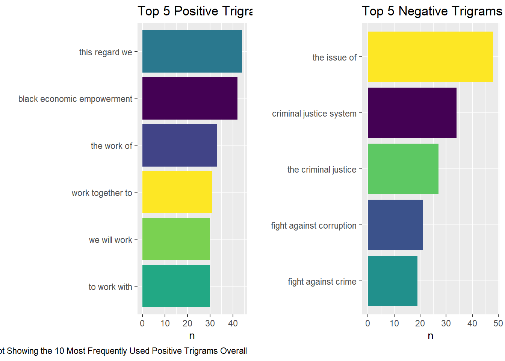
======= >>>>>>> e26a11bb80248568002c4206004bd8703644489d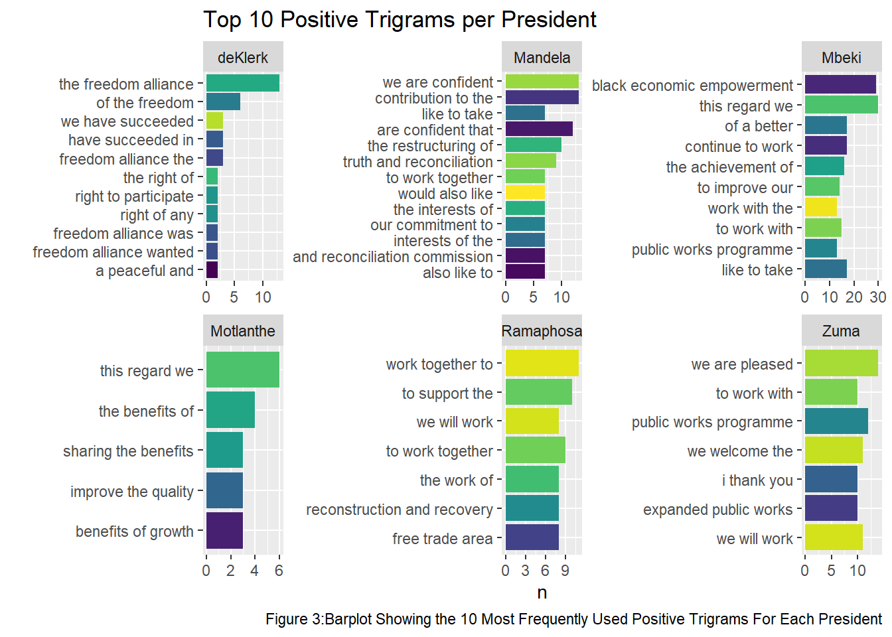
======= >>>>>>> e26a11bb80248568002c4206004bd8703644489d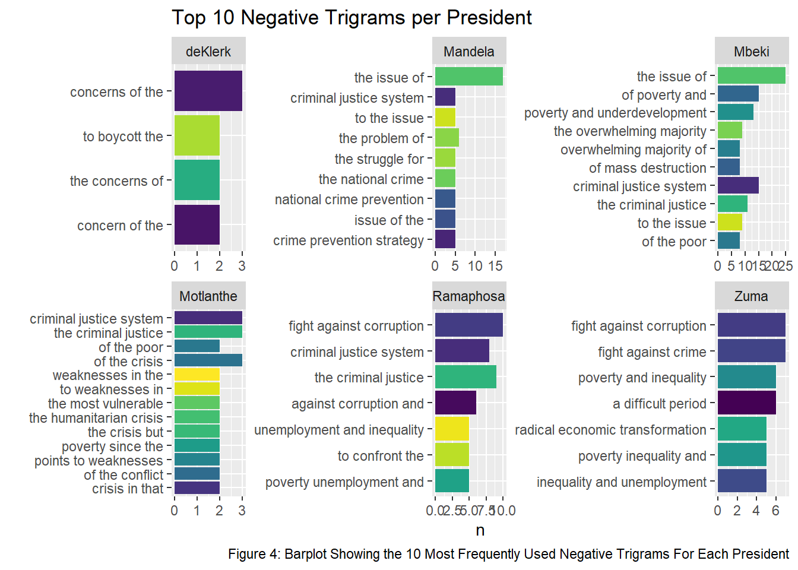
======= >>>>>>> e26a11bb80248568002c4206004bd8703644489dThe figure below shows the results of topic analysis using beta probabilities (bigram-topic probabilities), where the beta probability represents the probability that a bigram belongs to a certain topic. See discussion for further interpretation.

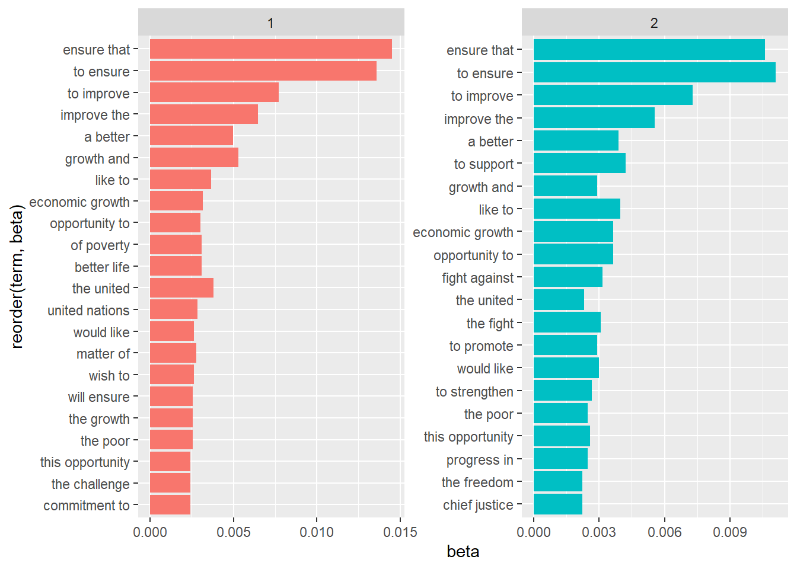
>>>>>>> e26a11bb80248568002c4206004bd8703644489dThe figure below shows the results of beta topic analysis using beta probabilities (bigram-topic probabilities) for former president Mandela. See discussion for further information.
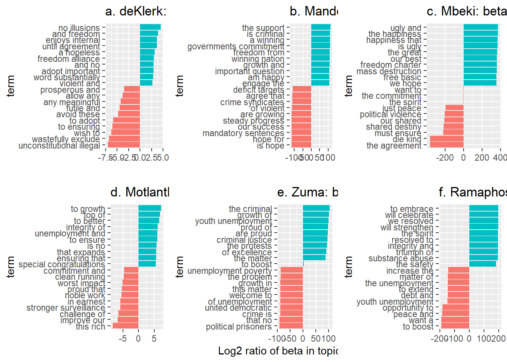
=======
In Figure #nat_per_pres_sentiment.png above, we see that DeKlerk's top 5 bigrams with negative sentiment are about hopelessness and boycotting, possibly in relation to the end of the Apartheid regime. Mandela and Mbeki's top 5 bigrams with negative sentiment are mainly about challenges, such as crime and poverty. We see that Motlanthe's top 5 bigrams with negative sentiment is also focused on poverty, but now special attention is given to criminal justice. Zuma's top 5 bigrams with negative sentiment is also about finances, but also pays attention to violence. Ramaphosa's top 5 bigrams with negative sentiment is focused on (gender based) violence.
President deKlerk's top 5 bigrams with positive sentiment looks towards freedom and peace, which again points to the end of Apartheid. All other president's top 5 bigrams with positive sentiment have undertones of hope and improvement.
Albeit a common trend of poverty and crime post-Apartheid, we see that the general sentiment is positive across all presidents, which is reinforced by Figure #nat_all_pres_sentiment.png were the frequency of positive sentiment far surpasses that of the negative sentiment.
The results of the trigram split expresses very similar insights to the bigram split. Referring to figure 3, we note that De Klerk and Mandela echoed very similar positive remarks regarding peace, reconciliation and freedom at the time due to the abolishment of the apartheid regime and welcoming of the freedom alliance. Mbeki follows with discussions of black economic empowerment, showing the developments in concerns during the countries plight for equality. Motlanthe's sentiment analysis was not insightful, this is likely since his presidency lasted 8 months. Zuma frequently mentioned the public works programme, which he was launching in 2014 and Ramaphosa also mentioned the African Continental Free Trade Area (ACFTA), echoing his support for collaboration with other African nations (Obeng-Odoom, 2020).
Figure 4 depicts De Klerk's negative sentiments are insightful into the public opinion at this time, he mostly spoke about concerns and boycotting, likely trying to placate the public's concerns over the transition and trying to discourage boycotting of elections. All subsequent presidents had emphasized concerns over crime, violence, and poverty with Zuma and Ramaphosa sharing concerns about corruption. This implies a timeline of when issues surrounding corruption were becoming concerning. Additionally, Ramaphosa mentions the state of disaster, in context of the COVID-19 pandemic (Arndt et al., 2020), as well as the expropriation of land as he is determined to fulfil the promise of lawful land reform post-apartheid.
In figure 6, for 2016 we see "die kind wat", being categorized as a negative statement, when it is in fact a neutral statement. This highlights a limitation of this assignment as SA has a diverse mix of languages and using only an English lexicon leads to phrases in other languages being miscategorized or not available.
As we can see in Figure #nat_LDA_all_pres, the bigrams with high beta probabilities are prevalent in both topics and so there is not much discrimination between the two topics. However, if we look at the tails of both bar plots, we see some differences. Topic 1 has themes of unity, improvement, and new opportunities possibly in relation to nation building, while topic 2 has themes of freedom, strength, opposition and justice possibly in relation to the crime, poverty and social injustice.
The log2(topic 1/topic 2) plots above in Figure #nat_LDA_per_pres shows the bigrams with the greatest difference between the two topics. In the deKlerk, Mandela, Mbeki and Ramaphosa plots, we see a divide where topic 1 (red) is mostly about social injustice, (political) violence and unemployment or economic crises, while topic 2 (green) is hopeful, with topics such as freedom, peace and triumph. Distinction between the topics are not possible for Motlanthe, possibly due to the fact that only 1 speech is available for this class. We see that Zuma is also an outlier with one theme mainly focused on negative sentiment such as (political) crime, social injustice and poverty.
This analysis shows that most presidential speeches have polarity, with positive sentiment touching on topics such as freedom, hope and peace, in contrast to negative sentiment touching on topics of crime, social injustices and poverty.
For the document-topic probabilities, we see that most presidents had a relatively stable set of interests and themes in their speeches. Table 1 contains the top terms for each topic, we can infer that topic 1 relates international relations such as the world cup and United Nations, additionally the local community. Topic 2 revolves around economic growth, topic 3 is focused on public services and humanitarian themes and topic 4 seemingly involves government expenditures and regional government. From Figure #, we see that Mbeki, Zuma and Motlanthe focused on Topic 1 which may be due to his concerns over poverty and job creation as seen from sentiment analysis and Zuma and Motlanthe as they were involved in the 2010 world cup. Ramaphosa, Zuma and Mandela appeared in topic 2, Ramaphosa shared themes of economic growth the most, likely due to the bleak financial climate during and after COVID-19. Mandela and De Klerk were most concerned with humanitarian issues due to the abolishment of the apartheid regime. Finally, Zuma was most present in topic 4, a topic surrounding government expenditure and the eastern cape. This may be due to his frequent expression of concern over corruption.
Overall, we see a mostly discrete delineation of themes between Zuma, Ramaphosa, Mandela and Mbeki. De Klerk and Motlanthe shared themes with other presidents likely due to having given a disproportionate number of speeches compared to other presidents.
This analysis provides valuable insights into the sentiments and themes of presidential speeches in the post-apartheid South African landscape. It outlines the optimism and hope for the new nation as well as the struggles and challenges faced. Each president brings unique insights and goals for the nation and there is demonstration of the timeline of interests over various social and historical events.
However, limitations were identified and to improve on these in further analysis a recommendation for more language diversity and extensive or standardized data may provide more accurate and concise results in this context.
Additionally, the use of an LLM for this analysis proved highly useful in debugging of simple code errors and automating simple but monotonous tasks when coding, and proved a valuable took for generation of synonyms, summaries and proof-reading.
Overall, the assignment involved implementation of a range of skills and allowed for exploration of potential tools to compliment coding and writing.